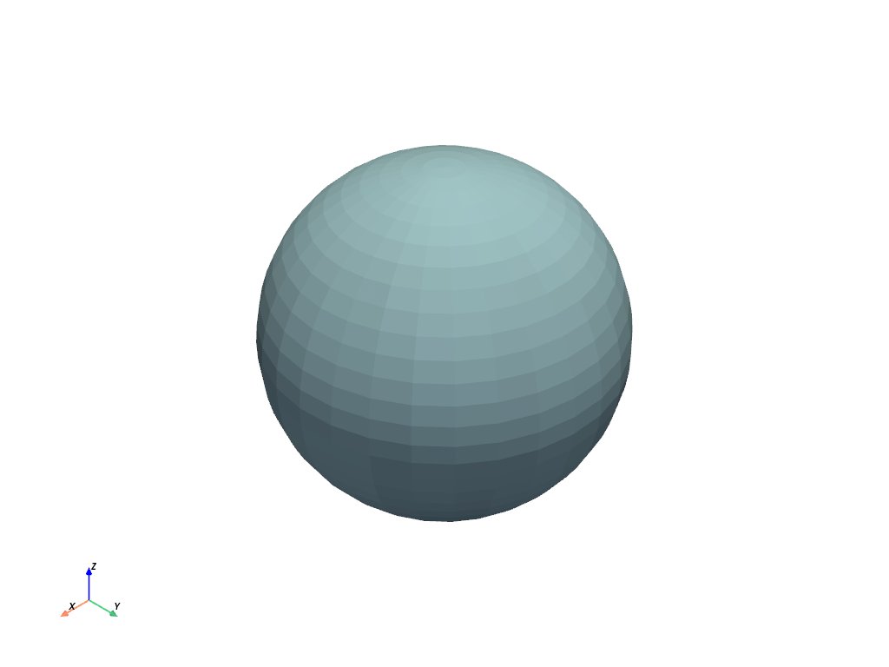
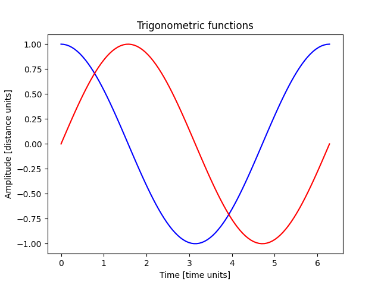

Note
Go to the end to download the full example code.
Sphinx-Gallery#
This example shows how to add a new example when using Sphinx-Gallery.
To use Sphinx-Gallery, first install the package with this command:
pip install sphinx-gallery
Then, add the package to the extensions variable in your Sphinx conf.py file:
extensions = [
"sphinx_gallery.gen_gallery",
]
Plot a simple sphere using PyVista#
This code plots a simple sphere using PyVista.
import pyvista as pv
pv.set_jupyter_backend("html")
sphere = pv.Sphere()
sphere.plot()

Plot a simple sphere using PyVista with a plotter
plotter = pv.Plotter(notebook=True)
plotter.add_mesh(sphere, color="white", show_edges=True)
plotter.title = "3D Sphere Visualization"
plotter.show()

EmbeddableWidget(value='<iframe srcdoc="<!doctype html>\n<html lang="en">\n <head>\n <meta charset="utf-8" />\n <meta name="viewport" content="width=device-width, initial-scale=1" />\n <title>VTK.js | Example - OfflineLocalView</title>\n <style>\n html, body { margin: 0; padding: 0; height: 100%; }\n body { font-family: sans-serif; }\n </style>\n </head>\n <body>\n <div id="vtk-root" style="height:100%; width:100%;"></div>\n <script>\n window.global = window.global || {};\n </script>\n <script>var OfflineLocalView=function(e){"use strict";const t=document.querySelector("head");t&&[16,32,96,160,196].forEach((e=>{const n=document.createElement("link");n.setAttribute("rel","icon"),n.setAttribute("href",`https://kitware.github.io/vtk-js/icon/favicon-${e}x${e}.png`),n.setAttribute("sizes",`${e}x${e}`),n.setAttribute("type","image/png"),t.appendChild(n)}));var n=1e-6,r="undefined"!=typeof Float32Array?Float32Array:Array,o=Math.PI/180;function a(e){return e*o}function i(){var e=new r(9);return r!=Float32Array&&(e[1]=0,e[2]=0,e[3]=0,e[5]=0,e[6]=0,e[7]=0),e[0]=1,e[4]=1,e[8]=1,e}function s(e,t){return e[0]=t[0],e[1]=t[1],e[2]=t[2],e[3]=t[4],e[4]=t[5],e[5]=t[6],e[6]=t[8],e[7]=t[9],e[8]=t[10],e}function l(e,t,n,r,o,a,i,s,l,c){return e[0]=t,e[1]=n,e[2]=r,e[3]=o,e[4]=a,e[5]=i,e[6]=s,e[7]=l,e[8]=c,e}function c(e){return e[0]=1,e[1]=0,e[2]=0,e[3]=0,e[4]=1,e[5]=0,e[6]=0,e[7]=0,e[8]=1,e}function u(e,t){if(e===t){var n=t[1],r=t[2],o=t[5];e[1]=t[3],e[2]=t[6],e[3]=n,e[5]=t[7],e[6]=r,e[7]=o}else e[0]=t[0],e[1]=t[3],e[2]=t[6],e[3]=t[1],e[4]=t[4],e[5]=t[7],e[6]=t[2],e[7]=t[5],e[8]=t[8];return e}function d(e,t){var n=t[0],r=t[1],o=t[2],a=t[3],i=t[4],s=t[5],l=t[6],c=t[7],u=t[8],d=u*i-s*c,p=-u*a+s*l,f=c*a-i*l,g=n*d+r*p+o*f;return g?(g=1/g,e[0]=d*g,e[1]=(-u*r+o*c)*g,e[2]=(s*r-o*i)*g,e[3]=p*g,e[4]=(u*n-o*l)*g,e[5]=(-s*n+o*a)*g,e[6]=f*g,e[7]=(-c*n+r*l)*g,e[8]=(i*n-r*a)*g,e):null}function p(e,t,n){var r=t[0],o=t[1],a=t[2],i=t[3],s=t[4],l=t[5],c=t[6],u=t[7],d=t[8],p=n[0],f=n[1],g=n[2],m=n[3],h=n[4],v=n[5],T=n[6],x=n[7],y=n[8];return e[0]=p*r+f*i+g*c,e[1]=p*o+f*s+g*u,e[2]=p*a+f*l+g*d,e[3]=m*r+h*i+v*c,e[4]=m*o+h*s+v*u,e[5]=m*a+h*l+v*d,e[6]=T*r+x*i+y*c,e[7]=T*o+x*s+y*u,e[8]=T*a+x*l+y*d,e}function f(e,t,n){return e[0]=t[0]-n[0],e[1]=t[1]-n[1],e[2]=t[2]-n[2],e[3]=t[3]-n[3],e[4]=t[4]-n[4],e[5]=t[5]-n[5],e[6]=t[6]-n[6],e[7]=t[7]-n[7],e[8]=t[8]-n[8],e}Math.hypot||(Math.hypot=function(){for(var e=0,t=arguments.length;t--;)e+=arguments[t]*arguments[t];return Math.sqrt(e)});var g=p,m=f,h=Object.freeze({__proto__:null,create:i,fromMat4:s,clone:function(e){var t=new r(9);return t[0]=e[0],t[1]=e[1],t[2]=e[2],t[3]=e[3],t[4]=e[4],t[5]=e[5],t[6]=e[6],t[7]=e[7],t[8]=e[8],t},copy:function(e,t){return e[0]=t[0],e[1]=t[1],e[2]=t[2],e[3]=t[3],e[4]=t[4],e[5]=t[5],e[6]=t[6],e[7]=t[7],e[8]=t[8],e},fromValues:function(e,t,n,o,a,i,s,l,c){var u=new r(9);return u[0]=e,u[1]=t,u[2]=n,u[3]=o,u[4]=a,u[5]=i,u[6]=s,u[7]=l,u[8]=c,u},set:l,identity:c,transpose:u,invert:d,adjoint:function(e,t){var n=t[0],r=t[1],o=t[2],a=t[3],i=t[4],s=t[5],l=t[6],c=t[7],u=t[8];return e[0]=i*u-s*c,e[1]=o*c-r*u,e[2]=r*s-o*i,e[3]=s*l-a*u,e[4]=n*u-o*l,e[5]=o*a-n*s,e[6]=a*c-i*l,e[7]=r*l-n*c,e[8]=n*i-r*a,e},determinant:function(e){var t=e[0],n=e[1],r=e[2],o=e[3],a=e[4],i=e[5],s=e[6],l=e[7],c=e[8];return t*(c*a-i*l)+n*(-c*o+i*s)+r*(l*o-a*s)},multiply:p,translate:function(e,t,n){var r=t[0],o=t[1],a=t[2],i=t[3],s=t[4],l=t[5],c=t[6],u=t[7],d=t[8],p=n[0],f=n[1];return e[0]=r,e[1]=o,e[2]=a,e[3]=i,e[4]=s,e[5]=l,e[6]=p*r+f*i+c,e[7]=p*o+f*s+u,e[8]=p*a+f*l+d,e},rotate:function(e,t,n){var r=t[0],o=t[1],a=t[2],i=t[3],s=t[4],l=t[5],c=t[6],u=t[7],d=t[8],p=Math.sin(n),f=Math.cos(n);return e[0]=f*r+p*i,e[1]=f*o+p*s,e[2]=f*a+p*l,e[3]=f*i-p*r,e[4]=f*s-p*o,e[5]=f*l-p*a,e[6]=c,e[7]=u,e[8]=d,e},scale:function(e,t,n){var r=n[0],o=n[1];return e[0]=r*t[0],e[1]=r*t[1],e[2]=r*t[2],e[3]=o*t[3],e[4]=o*t[4],e[5]=o*t[5],e[6]=t[6],e[7]=t[7],e[8]=t[8],e},fromTranslation:function(e,t){return e[0]=1,e[1]=0,e[2]=0,e[3]=0,e[4]=1,e[5]=0,e[6]=t[0],e[7]=t[1],e[8]=1,e},fromRotation:function(e,t){var n=Math.sin(t),r=Math.cos(t);return e[0]=r,e[1]=n,e[2]=0,e[3]=-n,e[4]=r,e[5]=0,e[6]=0,e[7]=0,e[8]=1,e},fromScaling:function(e,t){return e[0]=t[0],e[1]=0,e[2]=0,e[3]=0,e[4]=t[1],e[5]=0,e[6]=0,e[7]=0,e[8]=1,e},fromMat2d:function(e,t){return e[0]=t[0],e[1]=t[1],e[2]=0,e[3]=t[2],e[4]=t[3],e[5]=0,e[6]=t[4],e[7]=t[5],e[8]=1,e},fromQuat:function(e,t){var n=t[0],r=t[1],o=t[2],a=t[3],i=n+n,s=r+r,l=o+o,c=n*i,u=r*i,d=r*s,p=o*i,f=o*s,g=o*l,m=a*i,h=a*s,v=a*l;return e[0]=1-d-g,e[3]=u-v,e[6]=p+h,e[1]=u+v,e[4]=1-c-g,e[7]=f-m,e[2]=p-h,e[5]=f+m,e[8]=1-c-d,e},normalFromMat4:function(e,t){var n=t[0],r=t[1],o=t[2],a=t[3],i=t[4],s=t[5],l=t[6],c=t[7],u=t[8],d=t[9],p=t[10],f=t[11],g=t[12],m=t[13],h=t[14],v=t[15],T=n*s-r*i,x=n*l-o*i,y=n*c-a*i,b=r*l-o*s,A=r*c-a*s,C=o*c-a*l,S=u*m-d*g,P=u*h-p*g,w=u*v-f*g,I=d*h-p*m,O=d*v-f*m,R=p*v-f*h,M=T*R-x*O+y*I+b*w-A*P+C*S;return M?(M=1/M,e[0]=(s*R-l*O+c*I)*M,e[1]=(l*w-i*R-c*P)*M,e[2]=(i*O-s*w+c*S)*M,e[3]=(o*O-r*R-a*I)*M,e[4]=(n*R-o*w+a*P)*M,e[5]=(r*w-n*O-a*S)*M,e[6]=(m*C-h*A+v*b)*M,e[7]=(h*y-g*C-v*x)*M,e[8]=(g*A-m*y+v*T)*M,e):null},projection:function(e,t,n){return e[0]=2/t,e[1]=0,e[2]=0,e[3]=0,e[4]=-2/n,e[5]=0,e[6]=-1,e[7]=1,e[8]=1,e},str:function(e){return"mat3("+e[0]+", "+e[1]+", "+e[2]+", "+e[3]+", "+e[4]+", "+e[5]+", "+e[6]+", "+e[7]+", "+e[8]+")"},frob:function(e){return Math.hypot(e[0],e[1],e[2],e[3],e[4],e[5],e[6],e[7],e[8])},add:function(e,t,n){return e[0]=t[0]+n[0],e[1]=t[1]+n[1],e[2]=t[2]+n[2],e[3]=t[3]+n[3],e[4]=t[4]+n[4],e[5]=t[5]+n[5],e[6]=t[6]+n[6],e[7]=t[7]+n[7],e[8]=t[8]+n[8],e},subtract:f,multiplyScalar:function(e,t,n){return e[0]=t[0]*n,e[1]=t[1]*n,e[2]=t[2]*n,e[3]=t[3]*n,e[4]=t[4]*n,e[5]=t[5]*n,e[6]=t[6]*n,e[7]=t[7]*n,e[8]=t[8]*n,e},multiplyScalarAndAdd:function(e,t,n,r){return e[0]=t[0]+n[0]*r,e[1]=t[1]+n[1]*r,e[2]=t[2]+n[2]*r,e[3]=t[3]+n[3]*r,e[4]=t[4]+n[4]*r,e[5]=t[5]+n[5]*r,e[6]=t[6]+n[6]*r,e[7]=t[7]+n[7]*r,e[8]=t[8]+n[8]*r,e},exactEquals:function(e,t){return e[0]===t[0]&&e[1]===t[1]&&e[2]===t[2]&&e[3]===t[3]&&e[4]===t[4]&&e[5]===t[5]&&e[6]===t[6]&&e[7]===t[7]&&e[8]===t[8]},equals:function(e,t){var r=e[0],o=e[1],a=e[2],i=e[3],s=e[4],l=e[5],c=e[6],u=e[7],d=e[8],p=t[0],f=t[1],g=t[2],m=t[3],h=t[4],v=t[5],T=t[6],x=t[7],y=t[8];return Math.abs(r-p)<=n*Math.max(1,Math.abs(r),Math.abs(p))&&Math.abs(o-f)<=n*Math.max(1,Math.abs(o),Math.abs(f))&&Math.abs(a-g)<=n*Math.max(1,Math.abs(a),Math.abs(g))&&Math.abs(i-m)<=n*Math.max(1,Math.abs(i),Math.abs(m))&&Math.abs(s-h)<=n*Math.max(1,Math.abs(s),Math.abs(h))&&Math.abs(l-v)<=n*Math.max(1,Math.abs(l),Math.abs(v))&&Math.abs(c-T)<=n*Math.max(1,Math.abs(c),Math.abs(T))&&Math.abs(u-x)<=n*Math.max(1,Math.abs(u),Math.abs(x))&&Math.abs(d-y)<=n*Math.max(1,Math.abs(d),Math.abs(y))},mul:g,sub:m});function v(){var e=new r(16);return r!=Float32Array&&(e[1]=0,e[2]=0,e[3]=0,e[4]=0,e[6]=0,e[7]=0,e[8]=0,e[9]=0,e[11]=0,e[12]=0,e[13]=0,e[14]=0),e[0]=1,e[5]=1,e[10]=1,e[15]=1,e}function T(e,t){return e[0]=t[0],e[1]=t[1],e[2]=t[2],e[3]=t[3],e[4]=t[4],e[5]=t[5],e[6]=t[6],e[7]=t[7],e[8]=t[8],e[9]=t[9],e[10]=t[10],e[11]=t[11],e[12]=t[12],e[13]=t[13],e[14]=t[14],e[15]=t[15],e}function x(e){return e[0]=1,e[1]=0,e[2]=0,e[3]=0,e[4]=0,e[5]=1,e[6]=0,e[7]=0,e[8]=0,e[9]=0,e[10]=1,e[11]=0,e[12]=0,e[13]=0,e[14]=0,e[15]=1,e}function y(e,t){if(e===t){var n=t[1],r=t[2],o=t[3],a=t[6],i=t[7],s=t[11];e[1]=t[4],e[2]=t[8],e[3]=t[12],e[4]=n,e[6]=t[9],e[7]=t[13],e[8]=r,e[9]=a,e[11]=t[14],e[12]=o,e[13]=i,e[14]=s}else e[0]=t[0],e[1]=t[4],e[2]=t[8],e[3]=t[12],e[4]=t[1],e[5]=t[5],e[6]=t[9],e[7]=t[13],e[8]=t[2],e[9]=t[6],e[10]=t[10],e[11]=t[14],e[12]=t[3],e[13]=t[7],e[14]=t[11],e[15]=t[15];return e}function b(e,t){var n=t[0],r=t[1],o=t[2],a=t[3],i=t[4],s=t[5],l=t[6],c=t[7],u=t[8],d=t[9],p=t[10],f=t[11],g=t[12],m=t[13],h=t[14],v=t[15],T=n*s-r*i,x=n*l-o*i,y=n*c-a*i,b=r*l-o*s,A=r*c-a*s,C=o*c-a*l,S=u*m-d*g,P=u*h-p*g,w=u*v-f*g,I=d*h-p*m,O=d*v-f*m,R=p*v-f*h,M=T*R-x*O+y*I+b*w-A*P+C*S;return M?(M=1/M,e[0]=(s*R-l*O+c*I)*M,e[1]=(o*O-r*R-a*I)*M,e[2]=(m*C-h*A+v*b)*M,e[3]=(p*A-d*C-f*b)*M,e[4]=(l*w-i*R-c*P)*M,e[5]=(n*R-o*w+a*P)*M,e[6]=(h*y-g*C-v*x)*M,e[7]=(u*C-p*y+f*x)*M,e[8]=(i*O-s*w+c*S)*M,e[9]=(r*w-n*O-a*S)*M,e[10]=(g*A-m*y+v*T)*M,e[11]=(d*y-u*A-f*T)*M,e[12]=(s*P-i*I-l*S)*M,e[13]=(n*I-r*P+o*S)*M,e[14]=(m*x-g*b-h*T)*M,e[15]=(u*b-d*x+p*T)*M,e):null}function A(e,t,n){var r=t[0],o=t[1],a=t[2],i=t[3],s=t[4],l=t[5],c=t[6],u=t[7],d=t[8],p=t[9],f=t[10],g=t[11],m=t[12],h=t[13],v=t[14],T=t[15],x=n[0],y=n[1],b=n[2],A=n[3];return e[0]=x*r+y*s+b*d+A*m,e[1]=x*o+y*l+b*p+A*h,e[2]=x*a+y*c+b*f+A*v,e[3]=x*i+y*u+b*g+A*T,x=n[4],y=n[5],b=n[6],A=n[7],e[4]=x*r+y*s+b*d+A*m,e[5]=x*o+y*l+b*p+A*h,e[6]=x*a+y*c+b*f+A*v,e[7]=x*i+y*u+b*g+A*T,x=n[8],y=n[9],b=n[10],A=n[11],e[8]=x*r+y*s+b*d+A*m,e[9]=x*o+y*l+b*p+A*h,e[10]=x*a+y*c+b*f+A*v,e[11]=x*i+y*u+b*g+A*T,x=n[12],y=n[13],b=n[14],A=n[15],e[12]=x*r+y*s+b*d+A*m,e[13]=x*o+y*l+b*p+A*h,e[14]=x*a+y*c+b*f+A*v,e[15]=x*i+y*u+b*g+A*T,e}function C(e,t,n){var r,o,a,i,s,l,c,u,d,p,f,g,m=n[0],h=n[1],v=n[2];return t===e?(e[12]=t[0]*m+t[4]*h+t[8]*v+t[12],e[13]=t[1]*m+t[5]*h+t[9]*v+t[13],e[14]=t[2]*m+t[6]*h+t[10]*v+t[14],e[15]=t[3]*m+t[7]*h+t[11]*v+t[15]):(r=t[0],o=t[1],a=t[2],i=t[3],s=t[4],l=t[5],c=t[6],u=t[7],d=t[8],p=t[9],f=t[10],g=t[11],e[0]=r,e[1]=o,e[2]=a,e[3]=i,e[4]=s,e[5]=l,e[6]=c,e[7]=u,e[8]=d,e[9]=p,e[10]=f,e[11]=g,e[12]=r*m+s*h+d*v+t[12],e[13]=o*m+l*h+p*v+t[13],e[14]=a*m+c*h+f*v+t[14],e[15]=i*m+u*h+g*v+t[15]),e}function S(e,t,n){var r=n[0],o=n[1],a=n[2];return e[0]=t[0]*r,e[1]=t[1]*r,e[2]=t[2]*r,e[3]=t[3]*r,e[4]=t[4]*o,e[5]=t[5]*o,e[6]=t[6]*o,e[7]=t[7]*o,e[8]=t[8]*a,e[9]=t[9]*a,e[10]=t[10]*a,e[11]=t[11]*a,e[12]=t[12],e[13]=t[13],e[14]=t[14],e[15]=t[15],e}function P(e,t,r,o){var a,i,s,l,c,u,d,p,f,g,m,h,v,T,x,y,b,A,C,S,P,w,I,O,R=o[0],M=o[1],D=o[2],E=Math.hypot(R,M,D);return E<n?null:(R*=E=1/E,M*=E,D*=E,a=Math.sin(r),s=1-(i=Math.cos(r)),l=t[0],c=t[1],u=t[2],d=t[3],p=t[4],f=t[5],g=t[6],m=t[7],h=t[8],v=t[9],T=t[10],x=t[11],y=R*R*s+i,b=M*R*s+D*a,A=D*R*s-M*a,C=R*M*s-D*a,S=M*M*s+i,P=D*M*s+R*a,w=R*D*s+M*a,I=M*D*s-R*a,O=D*D*s+i,e[0]=l*y+p*b+h*A,e[1]=c*y+f*b+v*A,e[2]=u*y+g*b+T*A,e[3]=d*y+m*b+x*A,e[4]=l*C+p*S+h*P,e[5]=c*C+f*S+v*P,e[6]=u*C+g*S+T*P,e[7]=d*C+m*S+x*P,e[8]=l*w+p*I+h*O,e[9]=c*w+f*I+v*O,e[10]=u*w+g*I+T*O,e[11]=d*w+m*I+x*O,t!==e&&(e[12]=t[12],e[13]=t[13],e[14]=t[14],e[15]=t[15]),e)}function w(e,t,n){var r=Math.sin(n),o=Math.cos(n),a=t[4],i=t[5],s=t[6],l=t[7],c=t[8],u=t[9],d=t[10],p=t[11];return t!==e&&(e[0]=t[0],e[1]=t[1],e[2]=t[2],e[3]=t[3],e[12]=t[12],e[13]=t[13],e[14]=t[14],e[15]=t[15]),e[4]=a*o+c*r,e[5]=i*o+u*r,e[6]=s*o+d*r,e[7]=l*o+p*r,e[8]=c*o-a*r,e[9]=u*o-i*r,e[10]=d*o-s*r,e[11]=p*o-l*r,e}function I(e,t,n){var r=Math.sin(n),o=Math.cos(n),a=t[0],i=t[1],s=t[2],l=t[3],c=t[8],u=t[9],d=t[10],p=t[11];return t!==e&&(e[4]=t[4],e[5]=t[5],e[6]=t[6],e[7]=t[7],e[12]=t[12],e[13]=t[13],e[14]=t[14],e[15]=t[15]),e[0]=a*o-c*r,e[1]=i*o-u*r,e[2]=s*o-d*r,e[3]=l*o-p*r,e[8]=a*r+c*o,e[9]=i*r+u*o,e[10]=s*r+d*o,e[11]=l*r+p*o,e}function O(e,t,n){var r=Math.sin(n),o=Math.cos(n),a=t[0],i=t[1],s=t[2],l=t[3],c=t[4],u=t[5],d=t[6],p=t[7];return t!==e&&(e[8]=t[8],e[9]=t[9],e[10]=t[10],e[11]=t[11],e[12]=t[12],e[13]=t[13],e[14]=t[14],e[15]=t[15]),e[0]=a*o+c*r,e[1]=i*o+u*r,e[2]=s*o+d*r,e[3]=l*o+p*r,e[4]=c*o-a*r,e[5]=u*o-i*r,e[6]=d*o-s*r,e[7]=p*o-l*r,e}function R(e,t){return e[0]=1,e[1]=0,e[2]=0,e[3]=0,e[4]=0,e[5]=1,e[6]=0,e[7]=0,e[8]=0,e[9]=0,e[10]=1,e[11]=0,e[12]=t[0],e[13]=t[1],e[14]=t[2],e[15]=1,e}function M(e,t){return e[0]=t[0],e[1]=0,e[2]=0,e[3]=0,e[4]=0,e[5]=t[1],e[6]=0,e[7]=0,e[8]=0,e[9]=0,e[10]=t[2],e[11]=0,e[12]=0,e[13]=0,e[14]=0,e[15]=1,e}function D(e,t,r){var o,a,i,s=r[0],l=r[1],c=r[2],u=Math.hypot(s,l,c);return u<n?null:(s*=u=1/u,l*=u,c*=u,o=Math.sin(t),i=1-(a=Math.cos(t)),e[0]=s*s*i+a,e[1]=l*s*i+c*o,e[2]=c*s*i-l*o,e[3]=0,e[4]=s*l*i-c*o,e[5]=l*l*i+a,e[6]=c*l*i+s*o,e[7]=0,e[8]=s*c*i+l*o,e[9]=l*c*i-s*o,e[10]=c*c*i+a,e[11]=0,e[12]=0,e[13]=0,e[14]=0,e[15]=1,e)}function E(e,t,n){var r=t[0],o=t[1],a=t[2],i=t[3],s=r+r,l=o+o,c=a+a,u=r*s,d=r*l,p=r*c,f=o*l,g=o*c,m=a*c,h=i*s,v=i*l,T=i*c;return e[0]=1-(f+m),e[1]=d+T,e[2]=p-v,e[3]=0,e[4]=d-T,e[5]=1-(u+m),e[6]=g+h,e[7]=0,e[8]=p+v,e[9]=g-h,e[10]=1-(u+f),e[11]=0,e[12]=n[0],e[13]=n[1],e[14]=n[2],e[15]=1,e}function V(e,t){var n=t[0],r=t[1],o=t[2],a=t[4],i=t[5],s=t[6],l=t[8],c=t[9],u=t[10];return e[0]=Math.hypot(n,r,o),e[1]=Math.hypot(a,i,s),e[2]=Math.hypot(l,c,u),e}function L(e,t){var n=new r(3);V(n,t);var o=1/n[0],a=1/n[1],i=1/n[2],s=t[0]*o,l=t[1]*a,c=t[2]*i,u=t[4]*o,d=t[5]*a,p=t[6]*i,f=t[8]*o,g=t[9]*a,m=t[10]*i,h=s+d+m,v=0;return h>0?(v=2*Math.sqrt(h+1),e[3]=.25*v,e[0]=(p-g)/v,e[1]=(f-c)/v,e[2]=(l-u)/v):s>d&&s>m?(v=2*Math.sqrt(1+s-d-m),e[3]=(p-g)/v,e[0]=.25*v,e[1]=(l+u)/v,e[2]=(f+c)/v):d>m?(v=2*Math.sqrt(1+d-s-m),e[3]=(f-c)/v,e[0]=(l+u)/v,e[1]=.25*v,e[2]=(p+g)/v):(v=2*Math.sqrt(1+m-s-d),e[3]=(l-u)/v,e[0]=(f+c)/v,e[1]=(p+g)/v,e[2]=.25*v),e}function B(e,t,n,r){var o=t[0],a=t[1],i=t[2],s=t[3],l=o+o,c=a+a,u=i+i,d=o*l,p=o*c,f=o*u,g=a*c,m=a*u,h=i*u,v=s*l,T=s*c,x=s*u,y=r[0],b=r[1],A=r[2];return e[0]=(1-(g+h))*y,e[1]=(p+x)*y,e[2]=(f-T)*y,e[3]=0,e[4]=(p-x)*b,e[5]=(1-(d+h))*b,e[6]=(m+v)*b,e[7]=0,e[8]=(f+T)*A,e[9]=(m-v)*A,e[10]=(1-(d+g))*A,e[11]=0,e[12]=n[0],e[13]=n[1],e[14]=n[2],e[15]=1,e}function F(e,t){var n=t[0],r=t[1],o=t[2],a=t[3],i=n+n,s=r+r,l=o+o,c=n*i,u=r*i,d=r*s,p=o*i,f=o*s,g=o*l,m=a*i,h=a*s,v=a*l;return e[0]=1-d-g,e[1]=u+v,e[2]=p-h,e[3]=0,e[4]=u-v,e[5]=1-c-g,e[6]=f+m,e[7]=0,e[8]=p+h,e[9]=f-m,e[10]=1-c-d,e[11]=0,e[12]=0,e[13]=0,e[14]=0,e[15]=1,e}function N(e,t,n,r,o){var a,i=1/Math.tan(t/2);return e[0]=i/n,e[1]=0,e[2]=0,e[3]=0,e[4]=0,e[5]=i,e[6]=0,e[7]=0,e[8]=0,e[9]=0,e[11]=-1,e[12]=0,e[13]=0,e[15]=0,null!=o&&o!==1/0?(a=1/(r-o),e[10]=(o+r)*a,e[14]=2*o*r*a):(e[10]=-1,e[14]=-2*r),e}var k=N;function G(e,t,n,r,o,a,i){var s=1/(t-n),l=1/(r-o),c=1/(a-i);return e[0]=-2*s,e[1]=0,e[2]=0,e[3]=0,e[4]=0,e[5]=-2*l,e[6]=0,e[7]=0,e[8]=0,e[9]=0,e[10]=2*c,e[11]=0,e[12]=(t+n)*s,e[13]=(o+r)*l,e[14]=(i+a)*c,e[15]=1,e}var U=G;function _(e,t,r,o){var a,i,s,l,c,u,d,p,f,g,m=t[0],h=t[1],v=t[2],T=o[0],y=o[1],b=o[2],A=r[0],C=r[1],S=r[2];return Math.abs(m-A)<n&&Math.abs(h-C)<n&&Math.abs(v-S)<n?x(e):(d=m-A,p=h-C,f=v-S,a=y*(f*=g=1/Math.hypot(d,p,f))-b*(p*=g),i=b*(d*=g)-T*f,s=T*p-y*d,(g=Math.hypot(a,i,s))?(a*=g=1/g,i*=g,s*=g):(a=0,i=0,s=0),l=p*s-f*i,c=f*a-d*s,u=d*i-p*a,(g=Math.hypot(l,c,u))?(l*=g=1/g,c*=g,u*=g):(l=0,c=0,u=0),e[0]=a,e[1]=l,e[2]=d,e[3]=0,e[4]=i,e[5]=c,e[6]=p,e[7]=0,e[8]=s,e[9]=u,e[10]=f,e[11]=0,e[12]=-(a*m+i*h+s*v),e[13]=-(l*m+c*h+u*v),e[14]=-(d*m+p*h+f*v),e[15]=1,e)}function K(e,t,n){return e[0]=t[0]-n[0],e[1]=t[1]-n[1],e[2]=t[2]-n[2],e[3]=t[3]-n[3],e[4]=t[4]-n[4],e[5]=t[5]-n[5],e[6]=t[6]-n[6],e[7]=t[7]-n[7],e[8]=t[8]-n[8],e[9]=t[9]-n[9],e[10]=t[10]-n[10],e[11]=t[11]-n[11],e[12]=t[12]-n[12],e[13]=t[13]-n[13],e[14]=t[14]-n[14],e[15]=t[15]-n[15],e}var z=A,W=K,H=Object.freeze({__proto__:null,create:v,clone:function(e){var t=new r(16);return t[0]=e[0],t[1]=e[1],t[2]=e[2],t[3]=e[3],t[4]=e[4],t[5]=e[5],t[6]=e[6],t[7]=e[7],t[8]=e[8],t[9]=e[9],t[10]=e[10],t[11]=e[11],t[12]=e[12],t[13]=e[13],t[14]=e[14],t[15]=e[15],t},copy:T,fromValues:function(e,t,n,o,a,i,s,l,c,u,d,p,f,g,m,h){var v=new r(16);return v[0]=e,v[1]=t,v[2]=n,v[3]=o,v[4]=a,v[5]=i,v[6]=s,v[7]=l,v[8]=c,v[9]=u,v[10]=d,v[11]=p,v[12]=f,v[13]=g,v[14]=m,v[15]=h,v},set:function(e,t,n,r,o,a,i,s,l,c,u,d,p,f,g,m,h){return e[0]=t,e[1]=n,e[2]=r,e[3]=o,e[4]=a,e[5]=i,e[6]=s,e[7]=l,e[8]=c,e[9]=u,e[10]=d,e[11]=p,e[12]=f,e[13]=g,e[14]=m,e[15]=h,e},identity:x,transpose:y,invert:b,adjoint:function(e,t){var n=t[0],r=t[1],o=t[2],a=t[3],i=t[4],s=t[5],l=t[6],c=t[7],u=t[8],d=t[9],p=t[10],f=t[11],g=t[12],m=t[13],h=t[14],v=t[15];return e[0]=s*(p*v-f*h)-d*(l*v-c*h)+m*(l*f-c*p),e[1]=-(r*(p*v-f*h)-d*(o*v-a*h)+m*(o*f-a*p)),e[2]=r*(l*v-c*h)-s*(o*v-a*h)+m*(o*c-a*l),e[3]=-(r*(l*f-c*p)-s*(o*f-a*p)+d*(o*c-a*l)),e[4]=-(i*(p*v-f*h)-u*(l*v-c*h)+g*(l*f-c*p)),e[5]=n*(p*v-f*h)-u*(o*v-a*h)+g*(o*f-a*p),e[6]=-(n*(l*v-c*h)-i*(o*v-a*h)+g*(o*c-a*l)),e[7]=n*(l*f-c*p)-i*(o*f-a*p)+u*(o*c-a*l),e[8]=i*(d*v-f*m)-u*(s*v-c*m)+g*(s*f-c*d),e[9]=-(n*(d*v-f*m)-u*(r*v-a*m)+g*(r*f-a*d)),e[10]=n*(s*v-c*m)-i*(r*v-a*m)+g*(r*c-a*s),e[11]=-(n*(s*f-c*d)-i*(r*f-a*d)+u*(r*c-a*s)),e[12]=-(i*(d*h-p*m)-u*(s*h-l*m)+g*(s*p-l*d)),e[13]=n*(d*h-p*m)-u*(r*h-o*m)+g*(r*p-o*d),e[14]=-(n*(s*h-l*m)-i*(r*h-o*m)+g*(r*l-o*s)),e[15]=n*(s*p-l*d)-i*(r*p-o*d)+u*(r*l-o*s),e},determinant:function(e){var t=e[0],n=e[1],r=e[2],o=e[3],a=e[4],i=e[5],s=e[6],l=e[7],c=e[8],u=e[9],d=e[10],p=e[11],f=e[12],g=e[13],m=e[14],h=e[15];return(t*i-n*a)*(d*h-p*m)-(t*s-r*a)*(u*h-p*g)+(t*l-o*a)*(u*m-d*g)+(n*s-r*i)*(c*h-p*f)-(n*l-o*i)*(c*m-d*f)+(r*l-o*s)*(c*g-u*f)},multiply:A,translate:C,scale:S,rotate:P,rotateX:w,rotateY:I,rotateZ:O,fromTranslation:R,fromScaling:M,fromRotation:D,fromXRotation:function(e,t){var n=Math.sin(t),r=Math.cos(t);return e[0]=1,e[1]=0,e[2]=0,e[3]=0,e[4]=0,e[5]=r,e[6]=n,e[7]=0,e[8]=0,e[9]=-n,e[10]=r,e[11]=0,e[12]=0,e[13]=0,e[14]=0,e[15]=1,e},fromYRotation:function(e,t){var n=Math.sin(t),r=Math.cos(t);return e[0]=r,e[1]=0,e[2]=-n,e[3]=0,e[4]=0,e[5]=1,e[6]=0,e[7]=0,e[8]=n,e[9]=0,e[10]=r,e[11]=0,e[12]=0,e[13]=0,e[14]=0,e[15]=1,e},fromZRotation:function(e,t){var n=Math.sin(t),r=Math.cos(t);return e[0]=r,e[1]=n,e[2]=0,e[3]=0,e[4]=-n,e[5]=r,e[6]=0,e[7]=0,e[8]=0,e[9]=0,e[10]=1,e[11]=0,e[12]=0,e[13]=0,e[14]=0,e[15]=1,e},fromRotationTranslation:E,fromQuat2:function(e,t){var n=new r(3),o=-t[0],a=-t[1],i=-t[2],s=t[3],l=t[4],c=t[5],u=t[6],d=t[7],p=o*o+a*a+i*i+s*s;return p>0?(n[0]=2*(l*s+d*o+c*i-u*a)/p,n[1]=2*(c*s+d*a+u*o-l*i)/p,n[2]=2*(u*s+d*i+l*a-c*o)/p):(n[0]=2*(l*s+d*o+c*i-u*a),n[1]=2*(c*s+d*a+u*o-l*i),n[2]=2*(u*s+d*i+l*a-c*o)),E(e,t,n),e},getTranslation:function(e,t){return e[0]=t[12],e[1]=t[13],e[2]=t[14],e},getScaling:V,getRotation:L,fromRotationTranslationScale:B,fromRotationTranslationScaleOrigin:function(e,t,n,r,o){var a=t[0],i=t[1],s=t[2],l=t[3],c=a+a,u=i+i,d=s+s,p=a*c,f=a*u,g=a*d,m=i*u,h=i*d,v=s*d,T=l*c,x=l*u,y=l*d,b=r[0],A=r[1],C=r[2],S=o[0],P=o[1],w=o[2],I=(1-(m+v))*b,O=(f+y)*b,R=(g-x)*b,M=(f-y)*A,D=(1-(p+v))*A,E=(h+T)*A,V=(g+x)*C,L=(h-T)*C,B=(1-(p+m))*C;return e[0]=I,e[1]=O,e[2]=R,e[3]=0,e[4]=M,e[5]=D,e[6]=E,e[7]=0,e[8]=V,e[9]=L,e[10]=B,e[11]=0,e[12]=n[0]+S-(I*S+M*P+V*w),e[13]=n[1]+P-(O*S+D*P+L*w),e[14]=n[2]+w-(R*S+E*P+B*w),e[15]=1,e},fromQuat:F,frustum:function(e,t,n,r,o,a,i){var s=1/(n-t),l=1/(o-r),c=1/(a-i);return e[0]=2*a*s,e[1]=0,e[2]=0,e[3]=0,e[4]=0,e[5]=2*a*l,e[6]=0,e[7]=0,e[8]=(n+t)*s,e[9]=(o+r)*l,e[10]=(i+a)*c,e[11]=-1,e[12]=0,e[13]=0,e[14]=i*a*2*c,e[15]=0,e},perspectiveNO:N,perspective:k,perspectiveZO:function(e,t,n,r,o){var a,i=1/Math.tan(t/2);return e[0]=i/n,e[1]=0,e[2]=0,e[3]=0,e[4]=0,e[5]=i,e[6]=0,e[7]=0,e[8]=0,e[9]=0,e[11]=-1,e[12]=0,e[13]=0,e[15]=0,null!=o&&o!==1/0?(a=1/(r-o),e[10]=o*a,e[14]=o*r*a):(e[10]=-1,e[14]=-r),e},perspectiveFromFieldOfView:function(e,t,n,r){var o=Math.tan(t.upDegrees*Math.PI/180),a=Math.tan(t.downDegrees*Math.PI/180),i=Math.tan(t.leftDegrees*Math.PI/180),s=Math.tan(t.rightDegrees*Math.PI/180),l=2/(i+s),c=2/(o+a);return e[0]=l,e[1]=0,e[2]=0,e[3]=0,e[4]=0,e[5]=c,e[6]=0,e[7]=0,e[8]=-(i-s)*l*.5,e[9]=(o-a)*c*.5,e[10]=r/(n-r),e[11]=-1,e[12]=0,e[13]=0,e[14]=r*n/(n-r),e[15]=0,e},orthoNO:G,ortho:U,orthoZO:function(e,t,n,r,o,a,i){var s=1/(t-n),l=1/(r-o),c=1/(a-i);return e[0]=-2*s,e[1]=0,e[2]=0,e[3]=0,e[4]=0,e[5]=-2*l,e[6]=0,e[7]=0,e[8]=0,e[9]=0,e[10]=c,e[11]=0,e[12]=(t+n)*s,e[13]=(o+r)*l,e[14]=a*c,e[15]=1,e},lookAt:_,targetTo:function(e,t,n,r){var o=t[0],a=t[1],i=t[2],s=r[0],l=r[1],c=r[2],u=o-n[0],d=a-n[1],p=i-n[2],f=u*u+d*d+p*p;f>0&&(u*=f=1/Math.sqrt(f),d*=f,p*=f);var g=l*p-c*d,m=c*u-s*p,h=s*d-l*u;return(f=g*g+m*m+h*h)>0&&(g*=f=1/Math.sqrt(f),m*=f,h*=f),e[0]=g,e[1]=m,e[2]=h,e[3]=0,e[4]=d*h-p*m,e[5]=p*g-u*h,e[6]=u*m-d*g,e[7]=0,e[8]=u,e[9]=d,e[10]=p,e[11]=0,e[12]=o,e[13]=a,e[14]=i,e[15]=1,e},str:function(e){return"mat4("+e[0]+", "+e[1]+", "+e[2]+", "+e[3]+", "+e[4]+", "+e[5]+", "+e[6]+", "+e[7]+", "+e[8]+", "+e[9]+", "+e[10]+", "+e[11]+", "+e[12]+", "+e[13]+", "+e[14]+", "+e[15]+")"},frob:function(e){return Math.hypot(e[0],e[1],e[2],e[3],e[4],e[5],e[6],e[7],e[8],e[9],e[10],e[11],e[12],e[13],e[14],e[15])},add:function(e,t,n){return e[0]=t[0]+n[0],e[1]=t[1]+n[1],e[2]=t[2]+n[2],e[3]=t[3]+n[3],e[4]=t[4]+n[4],e[5]=t[5]+n[5],e[6]=t[6]+n[6],e[7]=t[7]+n[7],e[8]=t[8]+n[8],e[9]=t[9]+n[9],e[10]=t[10]+n[10],e[11]=t[11]+n[11],e[12]=t[12]+n[12],e[13]=t[13]+n[13],e[14]=t[14]+n[14],e[15]=t[15]+n[15],e},subtract:K,multiplyScalar:function(e,t,n){return e[0]=t[0]*n,e[1]=t[1]*n,e[2]=t[2]*n,e[3]=t[3]*n,e[4]=t[4]*n,e[5]=t[5]*n,e[6]=t[6]*n,e[7]=t[7]*n,e[8]=t[8]*n,e[9]=t[9]*n,e[10]=t[10]*n,e[11]=t[11]*n,e[12]=t[12]*n,e[13]=t[13]*n,e[14]=t[14]*n,e[15]=t[15]*n,e},multiplyScalarAndAdd:function(e,t,n,r){return e[0]=t[0]+n[0]*r,e[1]=t[1]+n[1]*r,e[2]=t[2]+n[2]*r,e[3]=t[3]+n[3]*r,e[4]=t[4]+n[4]*r,e[5]=t[5]+n[5]*r,e[6]=t[6]+n[6]*r,e[7]=t[7]+n[7]*r,e[8]=t[8]+n[8]*r,e[9]=t[9]+n[9]*r,e[10]=t[10]+n[10]*r,e[11]=t[11]+n[11]*r,e[12]=t[12]+n[12]*r,e[13]=t[13]+n[13]*r,e[14]=t[14]+n[14]*r,e[15]=t[15]+n[15]*r,e},exactEquals:function(e,t){return e[0]===t[0]&&e[1]===t[1]&&e[2]===t[2]&&e[3]===t[3]&&e[4]===t[4]&&e[5]===t[5]&&e[6]===t[6]&&e[7]===t[7]&&e[8]===t[8]&&e[9]===t[9]&&e[10]===t[10]&&e[11]===t[11]&&e[12]===t[12]&&e[13]===t[13]&&e[14]===t[14]&&e[15]===t[15]},equals:function(e,t){var r=e[0],o=e[1],a=e[2],i=e[3],s=e[4],l=e[5],c=e[6],u=e[7],d=e[8],p=e[9],f=e[10],g=e[11],m=e[12],h=e[13],v=e[14],T=e[15],x=t[0],y=t[1],b=t[2],A=t[3],C=t[4],S=t[5],P=t[6],w=t[7],I=t[8],O=t[9],R=t[10],M=t[11],D=t[12],E=t[13],V=t[14],L=t[15];return Math.abs(r-x)<=n*Math.max(1,Math.abs(r),Math.abs(x))&&Math.abs(o-y)<=n*Math.max(1,Math.abs(o),Math.abs(y))&&Math.abs(a-b)<=n*Math.max(1,Math.abs(a),Math.abs(b))&&Math.abs(i-A)<=n*Math.max(1,Math.abs(i),Math.abs(A))&&Math.abs(s-C)<=n*Math.max(1,Math.abs(s),Math.abs(C))&&Math.abs(l-S)<=n*Math.max(1,Math.abs(l),Math.abs(S))&&Math.abs(c-P)<=n*Math.max(1,Math.abs(c),Math.abs(P))&&Math.abs(u-w)<=n*Math.max(1,Math.abs(u),Math.abs(w))&&Math.abs(d-I)<=n*Math.max(1,Math.abs(d),Math.abs(I))&&Math.abs(p-O)<=n*Math.max(1,Math.abs(p),Math.abs(O))&&Math.abs(f-R)<=n*Math.max(1,Math.abs(f),Math.abs(R))&&Math.abs(g-M)<=n*Math.max(1,Math.abs(g),Math.abs(M))&&Math.abs(m-D)<=n*Math.max(1,Math.abs(m),Math.abs(D))&&Math.abs(h-E)<=n*Math.max(1,Math.abs(h),Math.abs(E))&&Math.abs(v-V)<=n*Math.max(1,Math.abs(v),Math.abs(V))&&Math.abs(T-L)<=n*Math.max(1,Math.abs(T),Math.abs(L))},mul:z,sub:W});function j(){var e=new r(3);return r!=Float32Array&&(e[0]=0,e[1]=0,e[2]=0),e}function X(e){var t=e[0],n=e[1],r=e[2];return Math.hypot(t,n,r)}function q(e,t,n){var o=new r(3);return o[0]=e,o[1]=t,o[2]=n,o}function Y(e,t,n,r){return e[0]=t,e[1]=n,e[2]=r,e}function J(e,t,n){return e[0]=t[0]+n[0],e[1]=t[1]+n[1],e[2]=t[2]+n[2],e}function Z(e,t,n){return e[0]=t[0]-n[0],e[1]=t[1]-n[1],e[2]=t[2]-n[2],e}function Q(e,t,n){return e[0]=t[0]*n[0],e[1]=t[1]*n[1],e[2]=t[2]*n[2],e}function $(e,t,n){return e[0]=t[0]*n,e[1]=t[1]*n,e[2]=t[2]*n,e}function ee(e,t){return e[0]=1/t[0],e[1]=1/t[1],e[2]=1/t[2],e}function te(e,t){var n=t[0],r=t[1],o=t[2],a=n*n+r*r+o*o;return a>0&&(a=1/Math.sqrt(a)),e[0]=t[0]*a,e[1]=t[1]*a,e[2]=t[2]*a,e}function ne(e,t){return e[0]*t[0]+e[1]*t[1]+e[2]*t[2]}function re(e,t,n){var r=t[0],o=t[1],a=t[2],i=n[0],s=n[1],l=n[2];return e[0]=o*l-a*s,e[1]=a*i-r*l,e[2]=r*s-o*i,e}function oe(e,t,n){var r=t[0],o=t[1],a=t[2],i=n[3]*r+n[7]*o+n[11]*a+n[15];return i=i||1,e[0]=(n[0]*r+n[4]*o+n[8]*a+n[12])/i,e[1]=(n[1]*r+n[5]*o+n[9]*a+n[13])/i,e[2]=(n[2]*r+n[6]*o+n[10]*a+n[14])/i,e}function ae(e,t,n){var r=t[0],o=t[1],a=t[2];return e[0]=r*n[0]+o*n[3]+a*n[6],e[1]=r*n[1]+o*n[4]+a*n[7],e[2]=r*n[2]+o*n[5]+a*n[8],e}function ie(e,t){return e[0]===t[0]&&e[1]===t[1]&&e[2]===t[2]}function se(e,t){var r=e[0],o=e[1],a=e[2],i=t[0],s=t[1],l=t[2];return Math.abs(r-i)<=n*Math.max(1,Math.abs(r),Math.abs(i))&&Math.abs(o-s)<=n*Math.max(1,Math.abs(o),Math.abs(s))&&Math.abs(a-l)<=n*Math.max(1,Math.abs(a),Math.abs(l))}var le=Z,ce=Q,ue=function(e,t){var n=t[0]-e[0],r=t[1]-e[1],o=t[2]-e[2];return Math.hypot(n,r,o)};function de(e,t,n){var r=t[0],o=t[1],a=t[2],i=t[3];return e[0]=n[0]*r+n[4]*o+n[8]*a+n[12]*i,e[1]=n[1]*r+n[5]*o+n[9]*a+n[13]*i,e[2]=n[2]*r+n[6]*o+n[10]*a+n[14]*i,e[3]=n[3]*r+n[7]*o+n[11]*a+n[15]*i,e}function pe(){var e=new r(4);return r!=Float32Array&&(e[0]=0,e[1]=0,e[2]=0),e[3]=1,e}function fe(e,t,n){n*=.5;var r=Math.sin(n);return e[0]=r*t[0],e[1]=r*t[1],e[2]=r*t[2],e[3]=Math.cos(n),e}function ge(e,t,n){var r=t[0],o=t[1],a=t[2],i=t[3],s=n[0],l=n[1],c=n[2],u=n[3];return e[0]=r*u+i*s+o*c-a*l,e[1]=o*u+i*l+a*s-r*c,e[2]=a*u+i*c+r*l-o*s,e[3]=i*u-r*s-o*l-a*c,e}function me(e,t,r,o){var a,i,s,l,c,u=t[0],d=t[1],p=t[2],f=t[3],g=r[0],m=r[1],h=r[2],v=r[3];return(i=u*g+d*m+p*h+f*v)<0&&(i=-i,g=-g,m=-m,h=-h,v=-v),1-i>n?(a=Math.acos(i),s=Math.sin(a),l=Math.sin((1-o)*a)/s,c=Math.sin(o*a)/s):(l=1-o,c=o),e[0]=l*u+c*g,e[1]=l*d+c*m,e[2]=l*p+c*h,e[3]=l*f+c*v,e}j(),function(){var e,t=(e=new r(4),r!=Float32Array&&(e[0]=0,e[1]=0,e[2]=0,e[3]=0),e)}();var he=function(e,t,n,o){var a=new r(4);return a[0]=e,a[1]=t,a[2]=n,a[3]=o,a};j(),q(1,0,0),q(0,1,0),pe(),pe(),i();var ve,Te="undefined"!=typeof globalThis?globalThis:"undefined"!=typeof window?window:"undefined"!=typeof global?global:"undefined"!=typeof self?self:{},xe=function e(t,n){if(t===n)return!0;if(t&&n&&"object"==typeof t&&"object"==typeof n){if(t.constructor!==n.constructor)return!1;var r,o,a;if(Array.isArray(t)){if((r=t.length)!=n.length)return!1;for(o=r;0!=o--;)if(!e(t[o],n[o]))return!1;return!0}if(t.constructor===RegExp)return t.source===n.source&&t.flags===n.flags;if(t.valueOf!==Object.prototype.valueOf)return t.valueOf()===n.valueOf();if(t.toString!==Object.prototype.toString)return t.toString()===n.toString();if((r=(a=Object.keys(t)).length)!==Object.keys(n).length)return!1;for(o=r;0!=o--;)if(!Object.prototype.hasOwnProperty.call(n,a[o]))return!1;for(o=r;0!=o--;){var i=a[o];if(!e(t[i],n[i]))return!1}return!0}return t!=t&&n!=n},ye=Object.prototype.toString,be=function(e){var t=ye.call(e),n="[object Arguments]"===t;return n||(n="[object Array]"!==t&&null!==e&&"object"==typeof e&&"number"==typeof e.length&&e.length>=0&&"[object Function]"===ye.call(e.callee)),n};if(!Object.keys){var Ae=Object.prototype.hasOwnProperty,Ce=Object.prototype.toString,Se=be,Pe=Object.prototype.propertyIsEnumerable,we=!Pe.call({toString:null},"toString"),Ie=Pe.call((function(){}),"prototype"),Oe=["toString","toLocaleString","valueOf","hasOwnProperty","isPrototypeOf","propertyIsEnumerable","constructor"],Re=function(e){var t=e.constructor;return t&&t.prototype===e},Me={$applicationCache:!0,$console:!0,$external:!0,$frame:!0,$frameElement:!0,$frames:!0,$innerHeight:!0,$innerWidth:!0,$onmozfullscreenchange:!0,$onmozfullscreenerror:!0,$outerHeight:!0,$outerWidth:!0,$pageXOffset:!0,$pageYOffset:!0,$parent:!0,$scrollLeft:!0,$scrollTop:!0,$scrollX:!0,$scrollY:!0,$self:!0,$webkitIndexedDB:!0,$webkitStorageInfo:!0,$window:!0},De=function(){if("undefined"==typeof window)return!1;for(var e in window)try{if(!Me["$"+e]&&Ae.call(window,e)&&null!==window[e]&&"object"==typeof window[e])try{Re(window[e])}catch(e){return!0}}catch(e){return!0}return!1}();ve=function(e){var t=null!==e&&"object"==typeof e,n="[object Function]"===Ce.call(e),r=Se(e),o=t&&"[object String]"===Ce.call(e),a=[];if(!t&&!n&&!r)throw new TypeError("Object.keys called on a non-object");var i=Ie&&n;if(o&&e.length>0&&!Ae.call(e,0))for(var s=0;s<e.length;++s)a.push(String(s));if(r&&e.length>0)for(var l=0;l<e.length;++l)a.push(String(l));else for(var c in e)i&&"prototype"===c||!Ae.call(e,c)||a.push(String(c));if(we)for(var u=function(e){if("undefined"==typeof window||!De)return Re(e);try{return Re(e)}catch(e){return!1}}(e),d=0;d<Oe.length;++d)u&&"constructor"===Oe[d]||!Ae.call(e,Oe[d])||a.push(Oe[d]);return a}}var Ee=ve,Ve=Array.prototype.slice,Le=be,Be=Object.keys,Fe=Be?function(e){return Be(e)}:Ee,Ne=Object.keys;Fe.shim=function(){if(Object.keys){var e=function(){var e=Object.keys(arguments);return e&&e.length===arguments.length}(1,2);e||(Object.keys=function(e){return Le(e)?Ne(Ve.call(e)):Ne(e)})}else Object.keys=Fe;return Object.keys||Fe};var ke=Fe,Ge="function"==typeof Symbol&&"symbol"==typeof Symbol("foo"),Ue=Object.prototype.toString,_e=Array.prototype.concat,Ke=Object.defineProperty,ze=Ke&&function(){var e={};try{for(var t in Ke(e,"x",{enumerable:!1,value:e}),e)return!1;return e.x===e}catch(e){return!1}}(),We=function(e,t,n,r){var o;(!(t in e)||"function"==typeof(o=r)&&"[object Function]"===Ue.call(o)&&r())&&(ze?Ke(e,t,{configurable:!0,enumerable:!1,value:n,writable:!0}):e[t]=n)},He=function(e,t){var n=arguments.length>2?arguments[2]:{},r=ke(t);Ge&&(r=_e.call(r,Object.getOwnPropertySymbols(t)));for(var o=0;o<r.length;o+=1)We(e,r[o],t[r[o]],n[r[o]])};He.supportsDescriptors=!!ze;var je=He,Xe={exports:{}};"undefined"!=typeof self?Xe.exports=self:"undefined"!=typeof window?Xe.exports=window:Xe.exports=Function("return this")();var qe=Xe.exports,Ye=function(){return"object"==typeof Te&&Te&&Te.Math===Math&&Te.Array===Array?Te:qe},Je=je,Ze=Ye,Qe=je,$e=Xe.exports,et=Ye,tt=function(){var e=Ze();if(Je.supportsDescriptors){var t=Object.getOwnPropertyDescriptor(e,"globalThis");t&&(!t.configurable||!t.enumerable&&t.writable&&globalThis===e)||Object.defineProperty(e,"globalThis",{configurable:!0,enumerable:!1,value:e,writable:!0})}else"object"==typeof globalThis&&globalThis===e||(e.globalThis=e);return e},nt=et(),rt=function(){return nt};Qe(rt,{getPolyfill:et,implementation:$e,shim:tt});const ot=rt(),at={vtkObject:()=>null};function it(e){if(null==e)return e;if(e.isA)return e;if(!e.vtkClass)return ot.console&&ot.console.error&&ot.console.error("Invalid VTK object"),null;const t=at[e.vtkClass];if(!t)return ot.console&&ot.console.error&&ot.console.error(`No vtk class found for Object of type ${e.vtkClass}`),null;const n={...e};Object.keys(n).forEach((e=>{n[e]&&"object"==typeof n[e]&&n[e].vtkClass&&(n[e]=it(n[e]))}));const r=t(n);return r&&r.modified&&r.modified(),r}it.register=function(e,t){at[e]=t};class st extends Array{push(){for(let e=0;e<arguments.length;e++)this.includes(arguments[e])||super.push(arguments[e]);return this.length}}let lt=0;const ct=e=>{throw new Error(`Named parameter \'${e}\' is missing`)},ut=Symbol("void");const dt={};function pt(){}["log","debug","info","warn","error","time","timeEnd","group","groupEnd"].forEach((e=>{dt[e]=pt})),ot.console=console.hasOwnProperty("log")?console:dt;const ft={debug:pt,error:ot.console.error||pt,info:ot.console.info||pt,log:ot.console.log||pt,warn:ot.console.warn||pt};function gt(e,t){ft[e]&&(ft[e]=t||pt)}function mt(...e){ft.log(...e)}function ht(...e){ft.info(...e)}function vt(...e){ft.debug(...e)}function Tt(...e){ft.error(...e)}function xt(...e){ft.warn(...e)}const yt={};function bt(e){yt[e]||(ft.error(e),yt[e]=!0)}const At=Object.create(null);At.Float32Array=Float32Array,At.Float64Array=Float64Array,At.Uint8Array=Uint8Array,At.Int8Array=Int8Array,At.Uint16Array=Uint16Array,At.Int16Array=Int16Array,At.Uint32Array=Uint32Array,At.Int32Array=Int32Array,At.Uint8ClampedArray=Uint8ClampedArray;try{At.BigInt64Array=BigInt64Array,At.BigUint64Array=BigUint64Array}catch{}function Ct(e,...t){return new(At[e]||Float64Array)(...t)}function St(e,...t){return(At[e]||Float64Array).from(...t)}function Pt(e){return e.charAt(0).toUpperCase()+e.slice(1)}function wt(e){return Pt("_"===e[0]?e.slice(1):e)}function It(e){return e.charAt(0).toLowerCase()+e.slice(1)}function Ot(e,t=2,n=1e3){const r=["TB","GB","MB","KB"];let o=Number(e),a="B";for(;o>n;)o/=n,a=r.pop();return`${o.toFixed(t)} ${a}`}function Rt(e,t=" "){const n=[];let r=e;for(;r>1e3;)n.push(("000"+r%1e3).slice(-3)),r=Math.floor(r/1e3);return r>0&&n.push(r),n.reverse(),n.join(t)}function Mt(e){Object.keys(e).forEach((t=>{Array.isArray(e[t])&&(e[t]=[].concat(e[t]))}))}function Dt(e){setTimeout(e,0)}function Et(e,t){const n=performance.now();e.finally((()=>{const e=performance.now()-n;t(e)}))}function Vt(e={},t={}){Mt(t);const n=[];if(Number.isInteger(t.mtime)||(t.mtime=++lt),"classHierarchy"in t){if(!(t.classHierarchy instanceof st)){const e=new st;for(let n=0;n<t.classHierarchy.length;n++)e.push(t.classHierarchy[n]);t.classHierarchy=e}}else t.classHierarchy=new st("vtkObject");function r(e){n[e]=null}return e.isDeleted=()=>!!t.deleted,e.modified=r=>{t.deleted?Tt("instance deleted - cannot call any method"):r&&r<e.getMTime()||(t.mtime=++lt,n.forEach((t=>t&&t(e))))},e.onModified=e=>{if(t.deleted)return Tt("instance deleted - cannot call any method"),null;const o=n.length;return n.push(e),function(e){return Object.freeze({unsubscribe:function(){r(e)}})}(o)},e.getMTime=()=>t.mtime,e.isA=e=>{let n=t.classHierarchy.length;for(;n--;)if(t.classHierarchy[n]===e)return!0;return!1},e.getClassName=(e=0)=>t.classHierarchy[t.classHierarchy.length-1-e],e.set=(n={},r=!1,o=!1)=>{let a=!1;return Object.keys(n).forEach((i=>{const s=o?null:e[`set${Pt(i)}`];s&&Array.isArray(n[i])&&s.length>1?a=s(...n[i])||a:s?a=s(n[i])||a:(-1!==["mtime"].indexOf(i)||r||xt(`Warning: Set value to model directly ${i}, ${n[i]}`),a=t[i]!==n[i]||a,t[i]=n[i])})),a},e.get=(...e)=>{if(!e.length)return t;const n={};return e.forEach((e=>{n[e]=t[e]})),n},e.getReferenceByName=e=>t[e],e.delete=()=>{Object.keys(t).forEach((e=>delete t[e])),n.forEach(((e,t)=>r(t))),t.deleted=!0},e.getState=({preserveTypedArrays:n=!1}={})=>{if(t.deleted)return null;const r={preserveTypedArrays:n},o={...t,vtkClass:e.getClassName()};Object.keys(o).forEach((e=>{var t;null===o[e]||void 0===o[e]||"_"===e[0]?delete o[e]:o[e].isA?o[e]=o[e].getState(r):Array.isArray(o[e])?o[e]=o[e].map((e=>e&&e.isA?e.getState(r):e)):(t=o[e],Object.values(At).some((e=>t instanceof e))&&(n||(o[e]=Array.from(o[e]))))}));const a={};return Object.keys(o).sort().forEach((e=>{a[e]=o[e]})),a.mtime&&delete a.mtime,a},e.shallowCopy=(n,r=!1)=>{if(n.getClassName()!==e.getClassName())throw new Error(`Cannot ShallowCopy ${n.getClassName()} into ${e.getClassName()}`);const o=n.get(),a=Object.keys(t).sort();Object.keys(o).sort().forEach((e=>{const n=a.indexOf(e);-1===n?r&&vt(`add ${e} in shallowCopy`):a.splice(n,1),t[e]=o[e]})),a.length&&r&&vt(`Untouched keys: ${a.join(", ")}`),e.modified()},e.toJSON=function(){return e.getState()},e}const Lt={object:(e,t,n)=>function(){return{...t[n.name]}}};function Bt(e,t,n){n.forEach((n=>{if("object"==typeof n){const r=Lt[n.type];e[`get${wt(n.name)}`]=r?r(e,t,n):()=>t[n.name]}else e[`get${wt(n)}`]=()=>t[n]}))}const Ft={enum(e,t,n){const r=`_on${wt(n.name)}Changed`;return o=>{if("string"==typeof o){if(void 0!==n.enum[o])return t[n.name]!==n.enum[o]&&(t[n.name]=n.enum[o],e.modified(),!0);throw Tt(`Set Enum with invalid argument ${n}, ${o}`),new RangeError("Set Enum with invalid string argument")}if("number"==typeof o){if(t[n.name]!==o){if(-1!==Object.keys(n.enum).map((e=>n.enum[e])).indexOf(o)){const a=t[n.name];return t[n.name]=o,t[r]?.(e,t,o,a),e.modified(),!0}throw Tt(`Set Enum outside numeric range ${n}, ${o}`),new RangeError("Set Enum outside numeric range")}return!1}throw Tt(`Set Enum with invalid argument (String/Number) ${n}, ${o}`),new TypeError("Set Enum with invalid argument (String/Number)")}},object(e,t,n){1===n.params?.length&&xt(\'Setter of type "object" with a single "param" field is not supported\');const r=`_on${wt(n.name)}Changed`;return(...o)=>{let a;if(a=o.length>1&&n.params?.length?n.params.reduce(((e,t,n)=>Object.assign(e,{[t]:o[n]})),{}):o[0],!xe(t[n.name],a)){const o=t[n.name];return t[n.name]=a,t[r]?.(e,t,a,o),e.modified(),!0}return!1}}};function Nt(e){if("object"==typeof e){const t=Ft[e.type];if(t)return(n,r)=>t(n,r,e);throw Tt(`No setter for field ${e}`),new TypeError("No setter for field")}return function(t,n){const r=`_on${wt(e)}Changed`;return function(o){if(n.deleted)return Tt("instance deleted - cannot call any method"),!1;if(n[e]!==o){const a=n[e.name];return n[e]=o,n[r]?.(t,n,o,a),t.modified(),!0}return!1}}}function kt(e,t,n){n.forEach((n=>{"object"==typeof n?e[`set${wt(n.name)}`]=Nt(n)(e,t):e[`set${wt(n)}`]=Nt(n)(e,t)}))}function Gt(e,t,n){Bt(e,t,n),kt(e,t,n)}function Ut(e,t,n){n.forEach((n=>{e[`get${wt(n)}`]=()=>t[n]?Array.from(t[n]):t[n],e[`get${wt(n)}ByReference`]=()=>t[n]}))}function _t(e,t,n,r,o=void 0){n.forEach((n=>{if(t[n]&&r&&t[n].length!==r)throw new RangeError(`Invalid initial number of values for array (${n})`);const a=`_on${wt(n)}Changed`;e[`set${wt(n)}`]=(...i)=>{if(t.deleted)return Tt("instance deleted - cannot call any method"),!1;let s,l=i,c=!1;if(1===l.length&&(null==l[0]||l[0].length>=0)&&(l=l[0],c=!0),null==l)s=t[n]!==l;else{if(r&&l.length!==r){if(!(l.length<r&&void 0!==o))throw new RangeError(`Invalid number of values for array setter (${n})`);for(l=Array.from(l),c=!1;l.length<r;)l.push(o)}s=null==t[n]||t[n].length!==l.length;for(let e=0;!s&&e<l.length;++e)s=t[n][e]!==l[e];s&&c&&(l=Array.from(l))}if(s){const r=t[n.name];t[n]=l,t[a]?.(e,t,l,r),e.modified()}return s},e[`set${wt(n)}From`]=e=>{const r=t[n];e.forEach(((e,t)=>{r[t]=e}))}}))}function Kt(e,t,n,r,o=void 0){Ut(e,t,n),_t(e,t,n,r,o)}function zt(e,t,n){for(let e=0;e<n.length;e++){const r=n[e];void 0!==t[r]&&(t[`_${r}`]=t[r],delete t[r])}}function Wt(e,t,n,r){function o(n,r=0){t.deleted?Tt("instance deleted - cannot call any method"):r>=t.numberOfInputs?Tt(`algorithm ${e.getClassName()} only has ${t.numberOfInputs} input ports. To add more input ports, use addInputData()`):(t.inputData[r]!==n||t.inputConnection[r])&&(t.inputData[r]=n,t.inputConnection[r]=null,e.modified&&e.modified())}function a(n,r=0){if(t.deleted)Tt("instance deleted - cannot call any method");else{if(r>=t.numberOfInputs){let n=`algorithm ${e.getClassName()} only has `;return n+=`${t.numberOfInputs}`,n+=" input ports. To add more input ports, use addInputConnection()",void Tt(n)}t.inputData[r]=null,t.inputConnection[r]=n}}function i(){let e=t.numberOfInputs;for(;e&&!t.inputData[e-1]&&!t.inputConnection[e-1];)e--;return e===t.numberOfInputs&&t.numberOfInputs++,e}function s(n=0){return t.deleted?(Tt("instance deleted - cannot call any method"),null):(e.shouldUpdate()&&e.update(),t.output[n])}if(t.inputData?t.inputData=t.inputData.map(it):t.inputData=[],t.inputConnection?t.inputConnection=t.inputConnection.map(it):t.inputConnection=[],t.output?t.output=t.output.map(it):t.output=[],t.inputArrayToProcess?t.inputArrayToProcess=t.inputArrayToProcess.map(it):t.inputArrayToProcess=[],t.numberOfInputs=n,e.shouldUpdate=()=>{const n=e.getMTime();let o=1/0,a=r;for(;a--;){if(!t.output[a]||t.output[a].isDeleted())return!0;const e=t.output[a].getMTime();if(e<n)return!0;e<o&&(o=e)}for(a=t.numberOfInputs;a--;)if(t.inputConnection[a]?.filter.shouldUpdate()||e.getInputData(a)?.getMTime()>o)return!0;return!1},t.numberOfInputs){let n=t.numberOfInputs;for(;n--;)t.inputData.push(null),t.inputConnection.push(null);e.setInputData=o,e.setInputConnection=a,e.addInputData=function(e){t.deleted?Tt("instance deleted - cannot call any method"):o(e,i())},e.addInputConnection=function(e){t.deleted?Tt("instance deleted - cannot call any method"):a(e,i())},e.getInputData=function(e=0){return t.inputConnection[e]&&(t.inputData[e]=t.inputConnection[e]()),t.inputData[e]},e.getInputConnection=function(e=0){return t.inputConnection[e]}}r&&(e.getOutputData=s,e.getOutputPort=function(t=0){const n=()=>s(t);return n.filter=e,n}),e.update=()=>{const n=[];if(t.numberOfInputs){let r=0;for(;r<t.numberOfInputs;)n[r]=e.getInputData(r),r++}e.requestData&&!e.isDeleted()&&e.shouldUpdate()&&e.requestData(n,t.output)},e.getNumberOfInputPorts=()=>t.numberOfInputs,e.getNumberOfOutputPorts=()=>r||t.output.length,e.getInputArrayToProcess=e=>{const n=t.inputArrayToProcess[e],r=t.inputData[e];return n&&r?r[`get${n.fieldAssociation}`]().getArray(n.arrayName):null},e.setInputArrayToProcess=(e,n,r,o="Scalars")=>{for(;t.inputArrayToProcess.length<e;)t.inputArrayToProcess.push(null);t.inputArrayToProcess[e]={arrayName:n,fieldAssociation:r,attributeType:o}}}const Ht=Symbol("Event abort");function jt(e,t,n){const r=[],o=e.delete;let a=1;function i(e){for(let t=0;t<r.length;++t){const[n]=r[t];if(n===e)return void r.splice(t,1)}}e[`invoke${wt(n)}`]=function(){if(t.deleted)return void Tt("instance deleted - cannot call any method");const n=r.slice();for(let t=0;t<n.length;++t){const[,r,o]=n[t];if(r)if(o<0)setTimeout((()=>r.apply(e,arguments)),1-o);else{if(r.apply(e,arguments)===Ht)break}}},e[`on${wt(n)}`]=(e,o=0)=>{if(!e.apply)return console.error(`Invalid callback for event ${n}`),null;if(t.deleted)return Tt("instance deleted - cannot call any method"),null;const s=a++;return r.push([s,e,o]),r.sort(((e,t)=>t[2]-e[2])),function(e){return Object.freeze({unsubscribe:function(){i(e)}})}(s)},e.delete=()=>{o(),r.forEach((([e])=>i(e)))}}function Xt(e,t){const n=(t={})=>{const n={};return e(n,{},t),Object.freeze(n)};return t&&it.register(t,n),n}function qt(...e){return(...t)=>e.filter((e=>!!e)).map((e=>e(...t)))}function Yt(e){return e&&e.isA&&e.isA("vtkObject")}function Jt(e,t,n=[],r=[]){if(Yt(e)){if(r.indexOf(e)>=0)return n;r.push(e);const o=t(e);void 0!==o&&n.push(o);const a=e.get();Object.keys(a).forEach((e=>{const o=a[e];Array.isArray(o)?o.forEach((e=>{Jt(e,t,n,r)})):Jt(o,t,n,r)}))}return n}function Zt(e,t,n){let r;const o=(...o)=>{const a=this,i=n&&!r;clearTimeout(r),r=setTimeout((()=>{r=null,n||e.apply(a,o)}),t),i&&e.apply(a,o)};return o.cancel=()=>clearTimeout(r),o}function Qt(e,t){let n=!1,r=null;function o(){n=!1,null!==r&&(a(...r),r=null)}function a(...a){n?r=a:(n=!0,e(...a),setTimeout(o,t))}return a}function $t(e,t,n={}){t.keystore=Object.assign(t.keystore||{},n),e.setKey=(e,n)=>{t.keystore[e]=n},e.getKey=e=>t.keystore[e],e.getAllKeys=()=>Object.keys(t.keystore),e.deleteKey=e=>delete t.keystore[e],e.clearKeystore=()=>e.getAllKeys().forEach((e=>delete t.keystore[e]))}let en=1;const tn="__root__";function nn(e,t){$t(e,t);const n=e.delete;t.proxyId=""+en++,t.ui=JSON.parse(JSON.stringify(t.ui||[])),Bt(e,t,["proxyId","proxyGroup","proxyName"]),Gt(e,t,["proxyManager"]);const r={},o={};function a(e,t){o[t]||(o[t]=[]);const n=o[t];for(let t=0;t<e.length;t++)n.push(e[t].name),r[e[t].name]=e[t],e[t].children&&e[t].children.length&&a(e[t].children,e[t].name)}function i(n=tn){const r=[],a=t.proxyId,s=function(e=tn){return o[e]}(n)||[];for(let t=0;t<s.length;t++){const n=s[t],o=e[`get${wt(n)}`],l={id:a,name:n,value:o?o():void 0},c=i(n);c.length&&(l.children=c),r.push(l)}return r}a(t.ui,tn),e.updateUI=n=>{t.ui=JSON.parse(JSON.stringify(n||[])),Object.keys(r).forEach((e=>delete r[e])),Object.keys(o).forEach((e=>delete o[e])),a(t.ui,tn),e.modified()},e.updateProxyProperty=(e,t)=>{const n=r[e];n?Object.assign(n,t):r[e]={...t}},e.activate=()=>{if(t.proxyManager){const n=`setActive${wt(e.getProxyGroup().slice(0,-1))}`;t.proxyManager[n]&&t.proxyManager[n](e)}},t.propertyLinkSubscribers={},e.registerPropertyLinkForGC=(e,n)=>{n in t.propertyLinkSubscribers||(t.propertyLinkSubscribers[n]=[]),t.propertyLinkSubscribers[n].push(e)},e.gcPropertyLinks=n=>{const r=t.propertyLinkSubscribers[n]||[];for(;r.length;)r.pop().unbind(e)},t.propertyLinkMap={},e.getPropertyLink=(e,n=!1)=>{if(t.propertyLinkMap[e])return t.propertyLinkMap[e];let r=null;const o=[];let a=0,i=!1;function s(n,s=!1){if(i)return null;const l=[];let c=null;for(a=o.length;a--;){const e=o[a];e.instance===n?c=e:l.push(e)}if(!c)return null;const u=c.instance[`get${wt(c.propertyName)}`]();if(!function(e,t){if(e===t)return!0;if(Array.isArray(e)&&Array.isArray(t)){if(e.length!==t.length)return!1;for(let n=0;n<e.length;n++)if(e[n]!==t[n])return!1;return!0}return!1}(u,r)||s){for(r=u,i=!0;l.length;){const e=l.pop();e.instance.set({[e.propertyName]:r})}i=!1}return t.propertyLinkMap[e].persistent&&(t.propertyLinkMap[e].value=u),u}function l(e,t){const n=[];for(a=o.length;a--;){const r=o[a];r.instance!==e||r.propertyName!==t&&void 0!==t||(r.subscription.unsubscribe(),n.push(a))}for(;n.length;)o.splice(n.pop(),1)}const c={bind:function(n,r,a=!1){const i=n.onModified(s),c=o[0];return o.push({instance:n,propertyName:r,subscription:i}),a&&(t.propertyLinkMap[e].persistent&&void 0!==t.propertyLinkMap[e].value?n.set({[r]:t.propertyLinkMap[e].value}):c&&s(c.instance,!0)),{unsubscribe:()=>l(n,r)}},unbind:l,unsubscribe:function(){for(;o.length;)o.pop().subscription.unsubscribe()},persistent:n};return t.propertyLinkMap[e]=c,c},e.listPropertyNames=()=>i().map((e=>e.name)),e.getPropertyByName=e=>i().find((t=>t.name===e)),e.getPropertyDomainByName=e=>(r[e]||{}).domain,e.getProxySection=()=>({id:t.proxyId,name:t.proxyGroup,ui:t.ui,properties:i()}),e.delete=()=>{const r=Object.keys(t.propertyLinkMap);let o=r.length;for(;o--;)t.propertyLinkMap[r[o]].unsubscribe();Object.keys(t.propertyLinkSubscribers).forEach(e.gcPropertyLinks),n()},e.getState=()=>null,Dt((function(){if(t.links)for(let n=0;n<t.links.length;n++){const{link:r,property:o,persistent:a,updateOnBind:i,type:s}=t.links[n];if("application"===s){const n=t.proxyManager.getPropertyLink(r,a);e.registerPropertyLinkForGC(n,"application"),n.bind(e,o,i)}}}))}function rn(e,t,n){const r=e.delete,o=[],a=Object.keys(n);let i=a.length;for(;i--;){const r=a[i],{modelKey:s,property:l,modified:c=!0}=n[r],u=wt(l),d=wt(r);e[`get${d}`]=t[s][`get${u}`],e[`set${d}`]=t[s][`set${u}`],c&&o.push(t[s].onModified(e.modified))}e.delete=()=>{for(;o.length;)o.pop().unsubscribe();r()}}function on(e,t,n={},r={}){function o(e){const n=Object.keys(e);let r=n.length;for(;r--;){const o=n[r];t[o].set(e[o])}}t.this=e;const a=Object.keys(r);let i=a.length;for(;i--;){const s=a[i];t[s]=r[s];const l=n[s];e[`set${wt(s)}`]=n=>{if(n!==t[s]){t[s]=n;o(l[n]),e.modified()}}}a.length&&Bt(e,t,a)}function an(e){let t=0,n=0,r=0,o=0;return"detail"in e&&(n=e.detail),"wheelDelta"in e&&(n=-e.wheelDelta/120),"wheelDeltaY"in e&&(n=-e.wheelDeltaY/120),"wheelDeltaX"in e&&(t=-e.wheelDeltaX/120),"axis"in e&&e.axis===e.HORIZONTAL_AXIS&&(t=n,n=0),r=10*t,o=10*n,"deltaY"in e&&(o=e.deltaY),"deltaX"in e&&(r=e.deltaX),(r||o)&&e.deltaMode&&(1===e.deltaMode?(r*=40,o*=40):(r*=800,o*=800)),r&&!t&&(t=r<1?-1:1),o&&!n&&(n=o<1?-1:1),{spinX:t,spinY:n||t,pixelX:r,pixelY:o||r}}var sn={algo:Wt,capitalize:Pt,chain:qt,debounce:Zt,enumToString:function(e,t){return Object.keys(e).find((n=>e[n]===t))},event:jt,EVENT_ABORT:Ht,formatBytesToProperUnit:Ot,formatNumbersWithThousandSeparator:Rt,get:Bt,getArray:Ut,getCurrentGlobalMTime:function(){return lt},getStateArrayMapFunc:function(e){return e&&e.isA?e.getState():e},isVtkObject:Yt,keystore:$t,measurePromiseExecution:Et,moveToProtected:zt,newInstance:Xt,newTypedArray:Ct,newTypedArrayFrom:St,normalizeWheel:an,obj:Vt,proxy:nn,proxyPropertyMapping:rn,proxyPropertyState:on,safeArrays:Mt,set:kt,setArray:_t,setGet:Gt,setGetArray:Kt,setImmediate:Dt,setLoggerFunction:gt,throttle:Qt,traverseInstanceTree:Jt,TYPED_ARRAYS:At,uncapitalize:It,VOID:ut,vtkDebugMacro:vt,vtkErrorMacro:Tt,vtkInfoMacro:ht,vtkLogMacro:mt,vtkOnceErrorMacro:bt,vtkWarningMacro:xt,objectSetterMap:Ft,requiredParam:ct},ln=Object.freeze({__proto__:null,requiredParam:ct,VOID:ut,setLoggerFunction:gt,vtkLogMacro:mt,vtkInfoMacro:ht,vtkDebugMacro:vt,vtkErrorMacro:Tt,vtkWarningMacro:xt,vtkOnceErrorMacro:bt,TYPED_ARRAYS:At,newTypedArray:Ct,newTypedArrayFrom:St,capitalize:Pt,_capitalize:wt,uncapitalize:It,formatBytesToProperUnit:Ot,formatNumbersWithThousandSeparator:Rt,setImmediateVTK:Dt,measurePromiseExecution:Et,obj:Vt,get:Bt,set:kt,setGet:Gt,getArray:Ut,setArray:_t,setGetArray:Kt,moveToProtected:zt,algo:Wt,EVENT_ABORT:Ht,event:jt,newInstance:Xt,chain:qt,isVtkObject:Yt,traverseInstanceTree:Jt,debounce:Zt,throttle:Qt,keystore:$t,proxy:nn,proxyPropertyMapping:rn,proxyPropertyState:on,normalizeWheel:an,default:sn});const{vtkErrorMacro:cn}=sn;const un={renderable:null,myFactory:null,children:[],visited:!1};function dn(e,t,n={}){Object.assign(t,un,n),sn.obj(e,t),sn.event(e,t,"event"),t._renderableChildMap=new Map,sn.get(e,t,["visited"]),sn.setGet(e,t,["_parent","renderable","myFactory"]),sn.getArray(e,t,["children"]),sn.moveToProtected(e,t,["parent"]),function(e,t){function n(e,n){for(let r=0;r<t.children.length;++r){const o=(n+1+r)%t.children.length;if(t.children[o]===e)return t.children[o]=t.children[n],t.children[n]=e,!0}return!1}t.classHierarchy.push("vtkViewNode"),e.build=e=>{},e.render=e=>{},e.traverse=n=>{const r=n.getTraverseOperation(),o=e[r];if(o)o(n);else{e.apply(n,!0);for(let e=0;e<t.children.length;e++)t.children[e].traverse(n);e.apply(n,!1)}},e.apply=(t,n)=>{const r=e[t.getOperation()];r&&r(n,t)},e.getViewNodeFor=(n,r=null)=>{if(r&&r.renderable===n)return r;if(t.renderable===n)return e;for(let e=0;e<t.children.length;++e){const r=t.children[e].getViewNodeFor(n);if(r)return r}},e.getFirstAncestorOfType=e=>t._parent?t._parent.isA(e)?t._parent:t._parent.getFirstAncestorOfType(e):null,e.getLastAncestorOfType=e=>{if(!t._parent)return null;return t._parent.getLastAncestorOfType(e)||(t._parent.isA(e)?t._parent:null)},e.addMissingNode=n=>{if(!n)return;const r=t._renderableChildMap.get(n);if(void 0!==r)return r.setVisited(!0),r;const o=e.createViewNode(n);return o?(o.setParent(e),o.setVisited(!0),t._renderableChildMap.set(n,o),t.children.push(o),o):void 0},e.addMissingNodes=(r,o=!1)=>{if(!r||!r.length)return;let a;for(let i=0;i<r.length;++i){const s=r[i],l=e.addMissingNode(s);o&&void 0!==l&&(void 0===a?a=t.children.lastIndexOf(l):t.children[a]!==l&&n(t.children,l),a++)}},e.addMissingChildren=n=>{if(n&&n.length)for(let r=0;r<n.length;++r){const o=n[r];if(-1===t.children.indexOf(o)){o.setParent(e),t.children.push(o);const n=o.getRenderable();n&&t._renderableChildMap.set(n,o)}o.setVisited(!0)}},e.removeNode=e=>{const n=t.children.findIndex((t=>t===e));if(n<0)return!1;const r=e.getRenderable();return r&&t._renderableChildMap.delete(r),e.delete(),t.children.splice(n,1),!0},e.prepareNodes=()=>{for(let e=0;e<t.children.length;++e)t.children[e].setVisited(!1)},e.setVisited=e=>{t.visited=e},e.removeUnusedNodes=()=>{let e=0;for(let n=0;n<t.children.length;++n){const r=t.children[n];if(r.getVisited())t.children[e++]=r,r.setVisited(!1);else{const e=r.getRenderable();e&&t._renderableChildMap.delete(e),r.delete()}}t.children.length=e},e.createViewNode=e=>{if(!t.myFactory)return cn("Cannot create view nodes without my own factory"),null;const n=t.myFactory.createNode(e);return n&&n.setRenderable(e),n};const r=e.delete;e.delete=()=>{for(let e=0;e<t.children.length;e++)t.children[e].delete();r()}}(e,t)}var pn={newInstance:sn.newInstance(dn,"vtkViewNode"),extend:dn,PASS_TYPES:["Build","Render"]};const fn={};function gn(e,t,n={}){Object.assign(t,fn,n),sn.obj(e,t),function(e,t){t.overrides||(t.overrides={}),t.classHierarchy.push("vtkViewNodeFactory"),e.createNode=n=>{if(n.isDeleted())return null;let r=0,o=n.getClassName(r++),a=!1;const i=Object.keys(t.overrides);for(;o&&!a;)-1!==i.indexOf(o)?a=!0:o=n.getClassName(r++);if(!a)return null;const s=t.overrides[o]();return s.setMyFactory(e),s}}(e,t)}var mn={newInstance:sn.newInstance(gn,"vtkViewNodeFactory"),extend:gn};const hn=Object.create(null);function vn(e,t){hn[e]=t}const Tn={};function xn(e,t,n={}){Object.assign(t,Tn,n),t.overrides=hn,mn.extend(e,t,n),function(e,t){t.classHierarchy.push("vtkOpenGLViewNodeFactory")}(0,t)}var yn={newInstance:sn.newInstance(xn,"vtkOpenGLViewNodeFactory"),extend:xn};const bn={context:null,lastRenderer:null,keyMatrixTime:null,keyMatrices:null};vn("vtkCamera",Xt((function(e,t,n={}){Object.assign(t,bn,n),pn.extend(e,t,n),t.keyMatrixTime={},Vt(t.keyMatrixTime),t.keyMatrices={normalMatrix:new Float64Array(9),vcpc:new Float64Array(16),wcvc:new Float64Array(16),wcpc:new Float64Array(16)},Gt(e,t,["context","keyMatrixTime"]),function(e,t){t.classHierarchy.push("vtkOpenGLCamera"),e.buildPass=n=>{n&&(t._openGLRenderer=e.getFirstAncestorOfType("vtkOpenGLRenderer"),t._openGLRenderWindow=t._openGLRenderer.getParent(),t.context=t._openGLRenderWindow.getContext())},e.opaquePass=e=>{if(e){const e=t._openGLRenderer.getTiledSizeAndOrigin();t.context.viewport(e.lowerLeftU,e.lowerLeftV,e.usize,e.vsize),t.context.scissor(e.lowerLeftU,e.lowerLeftV,e.usize,e.vsize)}},e.translucentPass=e.opaquePass,e.zBufferPass=e.opaquePass,e.opaqueZBufferPass=e.opaquePass,e.volumePass=e.opaquePass,e.getKeyMatrices=n=>{if(n!==t.lastRenderer||t._openGLRenderWindow.getMTime()>t.keyMatrixTime.getMTime()||e.getMTime()>t.keyMatrixTime.getMTime()||n.getMTime()>t.keyMatrixTime.getMTime()||t.renderable.getMTime()>t.keyMatrixTime.getMTime()){T(t.keyMatrices.wcvc,t.renderable.getViewMatrix()),s(t.keyMatrices.normalMatrix,t.keyMatrices.wcvc),d(t.keyMatrices.normalMatrix,t.keyMatrices.normalMatrix),y(t.keyMatrices.wcvc,t.keyMatrices.wcvc);const e=t._openGLRenderer.getAspectRatio();T(t.keyMatrices.vcpc,t.renderable.getProjectionMatrix(e,-1,1)),y(t.keyMatrices.vcpc,t.keyMatrices.vcpc),A(t.keyMatrices.wcpc,t.keyMatrices.vcpc,t.keyMatrices.wcvc),t.keyMatrixTime.modified(),t.lastRenderer=n}return t.keyMatrices}}(e,t)})));const{vtkDebugMacro:An}=ln;const Cn={context:null,_openGLRenderWindow:null,selector:null};vn("vtkRenderer",Xt((function(e,t,n={}){Object.assign(t,Cn,n),pn.extend(e,t,n),Bt(e,t,["shaderCache"]),Gt(e,t,["selector"]),zt(0,t,["openGLRenderWindow"]),function(e,t){t.classHierarchy.push("vtkOpenGLRenderer"),e.buildPass=n=>{if(n){if(!t.renderable)return;e.updateLights(),e.prepareNodes(),e.addMissingNode(t.renderable.getActiveCamera()),e.addMissingNodes(t.renderable.getViewPropsWithNestedProps(),!0),e.removeUnusedNodes()}},e.updateLights=()=>{let e=0;const n=t.renderable.getLightsByReference();for(let t=0;t<n.length;++t)n[t].getSwitch()>0&&e++;return e||(An("No lights are on, creating one."),t.renderable.createLight()),e},e.zBufferPass=n=>{if(n){let n=0;const r=t.context;t.renderable.getTransparent()||(t.context.clearColor(1,0,0,1),n|=r.COLOR_BUFFER_BIT),t.renderable.getPreserveDepthBuffer()||(r.clearDepth(1),n|=r.DEPTH_BUFFER_BIT,t.context.depthMask(!0));const o=e.getTiledSizeAndOrigin();r.enable(r.SCISSOR_TEST),r.scissor(o.lowerLeftU,o.lowerLeftV,o.usize,o.vsize),r.viewport(o.lowerLeftU,o.lowerLeftV,o.usize,o.vsize),r.colorMask(!0,!0,!0,!0),n&&r.clear(n),r.enable(r.DEPTH_TEST)}},e.opaqueZBufferPass=t=>e.zBufferPass(t),e.cameraPass=t=>{t&&e.clear()},e.getAspectRatio=()=>{const e=t._parent.getSizeByReference(),n=t.renderable.getViewportByReference();return e[0]*(n[2]-n[0])/((n[3]-n[1])*e[1])},e.getTiledSizeAndOrigin=()=>{const e=t.renderable.getViewportByReference(),n=[0,0,1,1],r=e[0]-n[0],o=e[1]-n[1],a=t._parent.normalizedDisplayToDisplay(r,o),i=Math.round(a[0]),s=Math.round(a[1]),l=e[2]-n[0],c=e[3]-n[1],u=t._parent.normalizedDisplayToDisplay(l,c);let d=Math.round(u[0])-i,p=Math.round(u[1])-s;return d<0&&(d=0),p<0&&(p=0),{usize:d,vsize:p,lowerLeftU:i,lowerLeftV:s}},e.clear=()=>{let n=0;const r=t.context;if(!t.renderable.getTransparent()){const e=t.renderable.getBackgroundByReference();r.clearColor(e[0],e[1],e[2],e[3]),n|=r.COLOR_BUFFER_BIT}t.renderable.getPreserveDepthBuffer()||(r.clearDepth(1),n|=r.DEPTH_BUFFER_BIT,r.depthMask(!0)),r.colorMask(!0,!0,!0,!0);const o=e.getTiledSizeAndOrigin();r.enable(r.SCISSOR_TEST),r.scissor(o.lowerLeftU,o.lowerLeftV,o.usize,o.vsize),r.viewport(o.lowerLeftU,o.lowerLeftV,o.usize,o.vsize),n&&r.clear(n),r.enable(r.DEPTH_TEST)},e.releaseGraphicsResources=()=>{null!==t.selector&&t.selector.releaseGraphicsResources(),t.renderable&&t.renderable.getViewProps().forEach((e=>{e.modified()}))},e.setOpenGLRenderWindow=n=>{t._openGLRenderWindow!==n&&(e.releaseGraphicsResources(),t._openGLRenderWindow=n,t.context=null,n&&(t.context=t._openGLRenderWindow.getContext()))}}(e,t)}),"vtkOpenGLRenderer"));const Sn={context:null,keyMatrixTime:null,keyMatrices:null,activeTextures:null};vn("vtkActor",Xt((function(e,t,n={}){Object.assign(t,Sn,n),pn.extend(e,t,n),t.keyMatrixTime={},Vt(t.keyMatrixTime,{mtime:0}),t.keyMatrices={normalMatrix:c(new Float64Array(9)),mcwc:x(new Float64Array(16))},Gt(e,t,["context"]),Bt(e,t,["activeTextures"]),function(e,t){t.classHierarchy.push("vtkOpenGLActor"),e.buildPass=n=>{if(n){t._openGLRenderWindow=e.getLastAncestorOfType("vtkOpenGLRenderWindow"),t._openGLRenderer=e.getFirstAncestorOfType("vtkOpenGLRenderer"),t.context=t._openGLRenderWindow.getContext(),e.prepareNodes(),e.addMissingNodes(t.renderable.getTextures()),e.addMissingNode(t.renderable.getMapper()),e.removeUnusedNodes(),t.ogltextures=null,t.activeTextures=null;for(let e=0;e<t.children.length;e++){const n=t.children[e];n.isA("vtkOpenGLTexture")?(t.ogltextures||(t.ogltextures=[]),t.ogltextures.push(n)):t.oglmapper=n}}},e.traverseZBufferPass=n=>{t.renderable&&t.renderable.getNestedVisibility()&&(!t._openGLRenderer.getSelector()||t.renderable.getNestedPickable())&&(e.apply(n,!0),t.oglmapper.traverse(n),e.apply(n,!1))},e.traverseOpaqueZBufferPass=t=>e.traverseOpaquePass(t),e.traverseOpaquePass=n=>{t.renderable&&t.renderable.getNestedVisibility()&&t.renderable.getIsOpaque()&&(!t._openGLRenderer.getSelector()||t.renderable.getNestedPickable())&&(e.apply(n,!0),t.oglmapper.traverse(n),e.apply(n,!1))},e.traverseTranslucentPass=n=>{!t.renderable||!t.renderable.getNestedVisibility()||t.renderable.getIsOpaque()||t._openGLRenderer.getSelector()&&!t.renderable.getNestedPickable()||(e.apply(n,!0),t.oglmapper.traverse(n),e.apply(n,!1))},e.activateTextures=()=>{if(t.ogltextures){t.activeTextures=[];for(let e=0;e<t.ogltextures.length;e++){const n=t.ogltextures[e];n.render(),n.getHandle()&&t.activeTextures.push(n)}}},e.queryPass=(e,n)=>{if(e){if(!t.renderable||!t.renderable.getVisibility())return;t.renderable.getIsOpaque()?n.incrementOpaqueActorCount():n.incrementTranslucentActorCount()}},e.zBufferPass=(t,n)=>e.opaquePass(t,n),e.opaqueZBufferPass=(t,n)=>e.opaquePass(t,n),e.opaquePass=(n,r)=>{if(n)t.context.depthMask(!0),e.activateTextures();else if(t.activeTextures)for(let e=0;e<t.activeTextures.length;e++)t.activeTextures[e].deactivate()},e.translucentPass=(n,r)=>{if(n)t.context.depthMask(t._openGLRenderer.getSelector()&&t.renderable.getNestedPickable()),e.activateTextures();else if(t.activeTextures)for(let e=0;e<t.activeTextures.length;e++)t.activeTextures[e].deactivate()},e.getKeyMatrices=()=>(t.renderable.getMTime()>t.keyMatrixTime.getMTime()&&(t.renderable.computeMatrix(),T(t.keyMatrices.mcwc,t.renderable.getMatrix()),y(t.keyMatrices.mcwc,t.keyMatrices.mcwc),t.renderable.getIsIdentity()?c(t.keyMatrices.normalMatrix):(s(t.keyMatrices.normalMatrix,t.keyMatrices.mcwc),d(t.keyMatrices.normalMatrix,t.keyMatrices.normalMatrix),u(t.keyMatrices.normalMatrix,t.keyMatrices.normalMatrix)),t.keyMatrixTime.modified()),t.keyMatrices)}(e,t)})));const Pn={context:null,activeTextures:null};function wn(e,t){return null==e||null==t?NaN:e<t?-1:e>t?1:e>=t?0:NaN}function In(e){let t=e,n=e,r=e;function o(e,t,o=0,a=e.length){if(o<a){if(0!==n(t,t))return a;do{const n=o+a>>>1;r(e[n],t)<0?o=n+1:a=n}while(o<a)}return o}return 1===e.length&&(t=(t,n)=>e(t)-n,n=wn,r=(t,n)=>wn(e(t),n)),{left:o,center:function(e,n,r=0,a=e.length){const i=o(e,n,r,a-1);return i>r&&t(e[i-1],n)>-t(e[i],n)?i-1:i},right:function(e,t,o=0,a=e.length){if(o<a){if(0!==n(t,t))return a;do{const n=o+a>>>1;r(e[n],t)<=0?o=n+1:a=n}while(o<a)}return o}}}vn("vtkActor2D",Xt((function(e,t,n={}){Object.assign(t,Pn,n),pn.extend(e,t,n),Gt(e,t,["context"]),Bt(e,t,["activeTextures"]),function(e,t){t.classHierarchy.push("vtkOpenGLActor2D"),e.buildPass=n=>{if(n){if(!t.renderable)return;t._openGLRenderWindow=e.getLastAncestorOfType("vtkOpenGLRenderWindow"),t._openGLRenderer=e.getFirstAncestorOfType("vtkOpenGLRenderer"),t.context=t._openGLRenderWindow.getContext(),e.prepareNodes(),e.addMissingNodes(t.renderable.getTextures()),e.addMissingNode(t.renderable.getMapper()),e.removeUnusedNodes(),t.ogltextures=null,t.activeTextures=null;for(let e=0;e<t.children.length;e++){const n=t.children[e];n.isA("vtkOpenGLTexture")?(t.ogltextures||(t.ogltextures=[]),t.ogltextures.push(n)):t.oglmapper=n}}},e.queryPass=(e,n)=>{if(e){if(!t.renderable||!t.renderable.getVisibility())return;n.incrementOverlayActorCount()}},e.traverseOpaquePass=n=>{t.oglmapper&&t.renderable&&t.renderable.getNestedVisibility()&&t.renderable.getIsOpaque()&&(!t._openGLRenderer.getSelector()||t.renderable.getNestedPickable())&&(e.apply(n,!0),t.oglmapper.traverse(n),e.apply(n,!1))},e.traverseTranslucentPass=n=>{t.oglmapper&&t.renderable&&t.renderable.getNestedVisibility()&&!t.renderable.getIsOpaque()&&(!t._openGLRenderer.getSelector()||t.renderable.getNestedPickable())&&(e.apply(n,!0),t.oglmapper.traverse(n),e.apply(n,!1))},e.traverseOverlayPass=n=>{t.oglmapper&&t.renderable&&t.renderable.getNestedVisibility()&&(!t._openGLRenderer.getSelector()||t.renderable.getNestedPickable)&&(e.apply(n,!0),t.oglmapper.traverse(n),e.apply(n,!1))},e.activateTextures=()=>{if(t.ogltextures){t.activeTextures=[];for(let e=0;e<t.ogltextures.length;e++){const n=t.ogltextures[e];n.render(),n.getHandle()&&t.activeTextures.push(n)}}},e.opaquePass=(n,r)=>{if(n)t.context.depthMask(!0),e.activateTextures();else if(t.activeTextures)for(let e=0;e<t.activeTextures.length;e++)t.activeTextures[e].deactivate()},e.translucentPass=(n,r)=>{if(n)t.context.depthMask(!1),e.activateTextures();else if(t.activeTextures)for(let e=0;e<t.activeTextures.length;e++)t.activeTextures[e].deactivate()},e.overlayPass=(n,r)=>{if(n)t.context.depthMask(!0),e.activateTextures();else if(t.activeTextures)for(let e=0;e<t.activeTextures.length;e++)t.activeTextures[e].deactivate()}}(e,t)})));const On=In(wn).right;In((function(e){return null===e?NaN:+e})).center;var Rn=On,Mn=Math.sqrt(50),Dn=Math.sqrt(10),En=Math.sqrt(2);function Vn(e,t,n){var r=(t-e)/Math.max(0,n),o=Math.floor(Math.log(r)/Math.LN10),a=r/Math.pow(10,o);return o>=0?(a>=Mn?10:a>=Dn?5:a>=En?2:1)*Math.pow(10,o):-Math.pow(10,-o)/(a>=Mn?10:a>=Dn?5:a>=En?2:1)}function Ln(e,t){switch(arguments.length){case 0:break;case 1:this.range(e);break;default:this.range(t).domain(e)}return this}function Bn(e,t,n){e.prototype=t.prototype=n,n.constructor=e}function Fn(e,t){var n=Object.create(e.prototype);for(var r in t)n[r]=t[r];return n}function Nn(){}var kn=.7,Gn=1/kn,Un="\\\\s*([+-]?\\\\d+)\\\\s*",_n="\\\\s*([+-]?(?:\\\\d*\\\\.)?\\\\d+(?:[eE][+-]?\\\\d+)?)\\\\s*",Kn="\\\\s*([+-]?(?:\\\\d*\\\\.)?\\\\d+(?:[eE][+-]?\\\\d+)?)%\\\\s*",zn=/^#([0-9a-f]{3,8})$/,Wn=new RegExp(`^rgb\\\\(${Un},${Un},${Un}\\\\)$`),Hn=new RegExp(`^rgb\\\\(${Kn},${Kn},${Kn}\\\\)$`),jn=new RegExp(`^rgba\\\\(${Un},${Un},${Un},${_n}\\\\)$`),Xn=new RegExp(`^rgba\\\\(${Kn},${Kn},${Kn},${_n}\\\\)$`),qn=new RegExp(`^hsl\\\\(${_n},${Kn},${Kn}\\\\)$`),Yn=new RegExp(`^hsla\\\\(${_n},${Kn},${Kn},${_n}\\\\)$`),Jn={aliceblue:15792383,antiquewhite:16444375,aqua:65535,aquamarine:8388564,azure:15794175,beige:16119260,bisque:16770244,black:0,blanchedalmond:16772045,blue:255,blueviolet:9055202,brown:10824234,burlywood:14596231,cadetblue:6266528,chartreuse:8388352,chocolate:13789470,coral:16744272,cornflowerblue:6591981,cornsilk:16775388,crimson:14423100,cyan:65535,darkblue:139,darkcyan:35723,darkgoldenrod:12092939,darkgray:11119017,darkgreen:25600,darkgrey:11119017,darkkhaki:12433259,darkmagenta:9109643,darkolivegreen:5597999,darkorange:16747520,darkorchid:10040012,darkred:9109504,darksalmon:15308410,darkseagreen:9419919,darkslateblue:4734347,darkslategray:3100495,darkslategrey:3100495,darkturquoise:52945,darkviolet:9699539,deeppink:16716947,deepskyblue:49151,dimgray:6908265,dimgrey:6908265,dodgerblue:2003199,firebrick:11674146,floralwhite:16775920,forestgreen:2263842,fuchsia:16711935,gainsboro:14474460,ghostwhite:16316671,gold:16766720,goldenrod:14329120,gray:8421504,green:32768,greenyellow:11403055,grey:8421504,honeydew:15794160,hotpink:16738740,indianred:13458524,indigo:4915330,ivory:16777200,khaki:15787660,lavender:15132410,lavenderblush:16773365,lawngreen:8190976,lemonchiffon:16775885,lightblue:11393254,lightcoral:15761536,lightcyan:14745599,lightgoldenrodyellow:16448210,lightgray:13882323,lightgreen:9498256,lightgrey:13882323,lightpink:16758465,lightsalmon:16752762,lightseagreen:2142890,lightskyblue:8900346,lightslategray:7833753,lightslategrey:7833753,lightsteelblue:11584734,lightyellow:16777184,lime:65280,limegreen:3329330,linen:16445670,magenta:16711935,maroon:8388608,mediumaquamarine:6737322,mediumblue:205,mediumorchid:12211667,mediumpurple:9662683,mediumseagreen:3978097,mediumslateblue:8087790,mediumspringgreen:64154,mediumturquoise:4772300,mediumvioletred:13047173,midnightblue:1644912,mintcream:16121850,mistyrose:16770273,moccasin:16770229,navajowhite:16768685,navy:128,oldlace:16643558,olive:8421376,olivedrab:7048739,orange:16753920,orangered:16729344,orchid:14315734,palegoldenrod:15657130,palegreen:10025880,paleturquoise:11529966,palevioletred:14381203,papayawhip:16773077,peachpuff:16767673,peru:13468991,pink:16761035,plum:14524637,powderblue:11591910,purple:8388736,rebeccapurple:6697881,red:16711680,rosybrown:12357519,royalblue:4286945,saddlebrown:9127187,salmon:16416882,sandybrown:16032864,seagreen:3050327,seashell:16774638,sienna:10506797,silver:12632256,skyblue:8900331,slateblue:6970061,slategray:7372944,slategrey:7372944,snow:16775930,springgreen:65407,steelblue:4620980,tan:13808780,teal:32896,thistle:14204888,tomato:16737095,turquoise:4251856,violet:15631086,wheat:16113331,white:16777215,whitesmoke:16119285,yellow:16776960,yellowgreen:10145074};function Zn(){return this.rgb().formatHex()}function Qn(){return this.rgb().formatRgb()}function $n(e){var t,n;return e=(e+"").trim().toLowerCase(),(t=zn.exec(e))?(n=t[1].length,t=parseInt(t[1],16),6===n?er(t):3===n?new rr(t>>8&15|t>>4&240,t>>4&15|240&t,(15&t)<<4|15&t,1):8===n?tr(t>>24&255,t>>16&255,t>>8&255,(255&t)/255):4===n?tr(t>>12&15|t>>8&240,t>>8&15|t>>4&240,t>>4&15|240&t,((15&t)<<4|15&t)/255):null):(t=Wn.exec(e))?new rr(t[1],t[2],t[3],1):(t=Hn.exec(e))?new rr(255*t[1]/100,255*t[2]/100,255*t[3]/100,1):(t=jn.exec(e))?tr(t[1],t[2],t[3],t[4]):(t=Xn.exec(e))?tr(255*t[1]/100,255*t[2]/100,255*t[3]/100,t[4]):(t=qn.exec(e))?cr(t[1],t[2]/100,t[3]/100,1):(t=Yn.exec(e))?cr(t[1],t[2]/100,t[3]/100,t[4]):Jn.hasOwnProperty(e)?er(Jn[e]):"transparent"===e?new rr(NaN,NaN,NaN,0):null}function er(e){return new rr(e>>16&255,e>>8&255,255&e,1)}function tr(e,t,n,r){return r<=0&&(e=t=n=NaN),new rr(e,t,n,r)}function nr(e,t,n,r){return 1===arguments.length?((o=e)instanceof Nn||(o=$n(o)),o?new rr((o=o.rgb()).r,o.g,o.b,o.opacity):new rr):new rr(e,t,n,null==r?1:r);var o}function rr(e,t,n,r){this.r=+e,this.g=+t,this.b=+n,this.opacity=+r}function or(){return`#${lr(this.r)}${lr(this.g)}${lr(this.b)}`}function ar(){const e=ir(this.opacity);return`${1===e?"rgb(":"rgba("}${sr(this.r)}, ${sr(this.g)}, ${sr(this.b)}${1===e?")":`, ${e})`}`}function ir(e){return isNaN(e)?1:Math.max(0,Math.min(1,e))}function sr(e){return Math.max(0,Math.min(255,Math.round(e)||0))}function lr(e){return((e=sr(e))<16?"0":"")+e.toString(16)}function cr(e,t,n,r){return r<=0?e=t=n=NaN:n<=0||n>=1?e=t=NaN:t<=0&&(e=NaN),new dr(e,t,n,r)}function ur(e){if(e instanceof dr)return new dr(e.h,e.s,e.l,e.opacity);if(e instanceof Nn||(e=$n(e)),!e)return new dr;if(e instanceof dr)return e;var t=(e=e.rgb()).r/255,n=e.g/255,r=e.b/255,o=Math.min(t,n,r),a=Math.max(t,n,r),i=NaN,s=a-o,l=(a+o)/2;return s?(i=t===a?(n-r)/s+6*(n<r):n===a?(r-t)/s+2:(t-n)/s+4,s/=l<.5?a+o:2-a-o,i*=60):s=l>0&&l<1?0:i,new dr(i,s,l,e.opacity)}function dr(e,t,n,r){this.h=+e,this.s=+t,this.l=+n,this.opacity=+r}function pr(e){return(e=(e||0)%360)<0?e+360:e}function fr(e){return Math.max(0,Math.min(1,e||0))}function gr(e,t,n){return 255*(e<60?t+(n-t)*e/60:e<180?n:e<240?t+(n-t)*(240-e)/60:t)}Bn(Nn,$n,{copy(e){return Object.assign(new this.constructor,this,e)},displayable(){return this.rgb().displayable()},hex:Zn,formatHex:Zn,formatHex8:function(){return this.rgb().formatHex8()},formatHsl:function(){return ur(this).formatHsl()},formatRgb:Qn,toString:Qn}),Bn(rr,nr,Fn(Nn,{brighter(e){return e=null==e?Gn:Math.pow(Gn,e),new rr(this.r*e,this.g*e,this.b*e,this.opacity)},darker(e){return e=null==e?kn:Math.pow(kn,e),new rr(this.r*e,this.g*e,this.b*e,this.opacity)},rgb(){return this},clamp(){return new rr(sr(this.r),sr(this.g),sr(this.b),ir(this.opacity))},displayable(){return-.5<=this.r&&this.r<255.5&&-.5<=this.g&&this.g<255.5&&-.5<=this.b&&this.b<255.5&&0<=this.opacity&&this.opacity<=1},hex:or,formatHex:or,formatHex8:function(){return`#${lr(this.r)}${lr(this.g)}${lr(this.b)}${lr(255*(isNaN(this.opacity)?1:this.opacity))}`},formatRgb:ar,toString:ar})),Bn(dr,(function(e,t,n,r){return 1===arguments.length?ur(e):new dr(e,t,n,null==r?1:r)}),Fn(Nn,{brighter(e){return e=null==e?Gn:Math.pow(Gn,e),new dr(this.h,this.s,this.l*e,this.opacity)},darker(e){return e=null==e?kn:Math.pow(kn,e),new dr(this.h,this.s,this.l*e,this.opacity)},rgb(){var e=this.h%360+360*(this.h<0),t=isNaN(e)||isNaN(this.s)?0:this.s,n=this.l,r=n+(n<.5?n:1-n)*t,o=2*n-r;return new rr(gr(e>=240?e-240:e+120,o,r),gr(e,o,r),gr(e<120?e+240:e-120,o,r),this.opacity)},clamp(){return new dr(pr(this.h),fr(this.s),fr(this.l),ir(this.opacity))},displayable(){return(0<=this.s&&this.s<=1||isNaN(this.s))&&0<=this.l&&this.l<=1&&0<=this.opacity&&this.opacity<=1},formatHsl(){const e=ir(this.opacity);return`${1===e?"hsl(":"hsla("}${pr(this.h)}, ${100*fr(this.s)}%, ${100*fr(this.l)}%${1===e?")":`, ${e})`}`}}));var mr=e=>()=>e;function hr(e){return 1==(e=+e)?vr:function(t,n){return n-t?function(e,t,n){return e=Math.pow(e,n),t=Math.pow(t,n)-e,n=1/n,function(r){return Math.pow(e+r*t,n)}}(t,n,e):mr(isNaN(t)?n:t)}}function vr(e,t){var n=t-e;return n?function(e,t){return function(n){return e+n*t}}(e,n):mr(isNaN(e)?t:e)}var Tr=function e(t){var n=hr(t);function r(e,t){var r=n((e=nr(e)).r,(t=nr(t)).r),o=n(e.g,t.g),a=n(e.b,t.b),i=vr(e.opacity,t.opacity);return function(t){return e.r=r(t),e.g=o(t),e.b=a(t),e.opacity=i(t),e+""}}return r.gamma=e,r}(1);function xr(e,t){t||(t=[]);var n,r=e?Math.min(t.length,e.length):0,o=t.slice();return function(a){for(n=0;n<r;++n)o[n]=e[n]*(1-a)+t[n]*a;return o}}function yr(e,t){var n,r=t?t.length:0,o=e?Math.min(r,e.length):0,a=new Array(o),i=new Array(r);for(n=0;n<o;++n)a[n]=Ir(e[n],t[n]);for(;n<r;++n)i[n]=t[n];return function(e){for(n=0;n<o;++n)i[n]=a[n](e);return i}}function br(e,t){var n=new Date;return e=+e,t=+t,function(r){return n.setTime(e*(1-r)+t*r),n}}function Ar(e,t){return e=+e,t=+t,function(n){return e*(1-n)+t*n}}function Cr(e,t){var n,r={},o={};for(n in null!==e&&"object"==typeof e||(e={}),null!==t&&"object"==typeof t||(t={}),t)n in e?r[n]=Ir(e[n],t[n]):o[n]=t[n];return function(e){for(n in r)o[n]=r[n](e);return o}}var Sr=/[-+]?(?:\\d+\\.?\\d*|\\.?\\d+)(?:[eE][-+]?\\d+)?/g,Pr=new RegExp(Sr.source,"g");function wr(e,t){var n,r,o,a=Sr.lastIndex=Pr.lastIndex=0,i=-1,s=[],l=[];for(e+="",t+="";(n=Sr.exec(e))&&(r=Pr.exec(t));)(o=r.index)>a&&(o=t.slice(a,o),s[i]?s[i]+=o:s[++i]=o),(n=n[0])===(r=r[0])?s[i]?s[i]+=r:s[++i]=r:(s[++i]=null,l.push({i:i,x:Ar(n,r)})),a=Pr.lastIndex;return a<t.length&&(o=t.slice(a),s[i]?s[i]+=o:s[++i]=o),s.length<2?l[0]?function(e){return function(t){return e(t)+""}}(l[0].x):function(e){return function(){return e}}(t):(t=l.length,function(e){for(var n,r=0;r<t;++r)s[(n=l[r]).i]=n.x(e);return s.join("")})}function Ir(e,t){var n,r=typeof t;return null==t||"boolean"===r?mr(t):("number"===r?Ar:"string"===r?(n=$n(t))?(t=n,Tr):wr:t instanceof $n?Tr:t instanceof Date?br:function(e){return ArrayBuffer.isView(e)&&!(e instanceof DataView)}(t)?xr:Array.isArray(t)?yr:"function"!=typeof t.valueOf&&"function"!=typeof t.toString||isNaN(t)?Cr:Ar)(e,t)}function Or(e,t){return e=+e,t=+t,function(n){return Math.round(e*(1-n)+t*n)}}function Rr(e){return+e}var Mr=[0,1];function Dr(e){return e}function Er(e,t){return(t-=e=+e)?function(n){return(n-e)/t}:function(e){return function(){return e}}(isNaN(t)?NaN:.5)}function Vr(e,t,n){var r=e[0],o=e[1],a=t[0],i=t[1];return o<r?(r=Er(o,r),a=n(i,a)):(r=Er(r,o),a=n(a,i)),function(e){return a(r(e))}}function Lr(e,t,n){var r=Math.min(e.length,t.length)-1,o=new Array(r),a=new Array(r),i=-1;for(e[r]<e[0]&&(e=e.slice().reverse(),t=t.slice().reverse());++i<r;)o[i]=Er(e[i],e[i+1]),a[i]=n(t[i],t[i+1]);return function(t){var n=Rn(e,t,1,r)-1;return a[n](o[n](t))}}function Br(){var e,t,n,r,o,a,i=Mr,s=Mr,l=Ir,c=Dr;function u(){var e,t,n,l=Math.min(i.length,s.length);return c!==Dr&&(e=i[0],t=i[l-1],e>t&&(n=e,e=t,t=n),c=function(n){return Math.max(e,Math.min(t,n))}),r=l>2?Lr:Vr,o=a=null,d}function d(t){return null==t||isNaN(t=+t)?n:(o||(o=r(i.map(e),s,l)))(e(c(t)))}return d.invert=function(n){return c(t((a||(a=r(s,i.map(e),Ar)))(n)))},d.domain=function(e){return arguments.length?(i=Array.from(e,Rr),u()):i.slice()},d.range=function(e){return arguments.length?(s=Array.from(e),u()):s.slice()},d.rangeRound=function(e){return s=Array.from(e),l=Or,u()},d.clamp=function(e){return arguments.length?(c=!!e||Dr,u()):c!==Dr},d.interpolate=function(e){return arguments.length?(l=e,u()):l},d.unknown=function(e){return arguments.length?(n=e,d):n},function(n,r){return e=n,t=r,u()}}function Fr(e,t){if((n=(e=t?e.toExponential(t-1):e.toExponential()).indexOf("e"))<0)return null;var n,r=e.slice(0,n);return[r.length>1?r[0]+r.slice(2):r,+e.slice(n+1)]}function Nr(e){return(e=Fr(Math.abs(e)))?e[1]:NaN}var kr,Gr=/^(?:(.)?([<>=^]))?([+\\-( ])?([$#])?(0)?(\\d+)?(,)?(\\.\\d+)?(~)?([a-z%])?$/i;function Ur(e){if(!(t=Gr.exec(e)))throw new Error("invalid format: "+e);var t;return new _r({fill:t[1],align:t[2],sign:t[3],symbol:t[4],zero:t[5],width:t[6],comma:t[7],precision:t[8]&&t[8].slice(1),trim:t[9],type:t[10]})}function _r(e){this.fill=void 0===e.fill?" ":e.fill+"",this.align=void 0===e.align?">":e.align+"",this.sign=void 0===e.sign?"-":e.sign+"",this.symbol=void 0===e.symbol?"":e.symbol+"",this.zero=!!e.zero,this.width=void 0===e.width?void 0:+e.width,this.comma=!!e.comma,this.precision=void 0===e.precision?void 0:+e.precision,this.trim=!!e.trim,this.type=void 0===e.type?"":e.type+""}function Kr(e,t){var n=Fr(e,t);if(!n)return e+"";var r=n[0],o=n[1];return o<0?"0."+new Array(-o).join("0")+r:r.length>o+1?r.slice(0,o+1)+"."+r.slice(o+1):r+new Array(o-r.length+2).join("0")}Ur.prototype=_r.prototype,_r.prototype.toString=function(){return this.fill+this.align+this.sign+this.symbol+(this.zero?"0":"")+(void 0===this.width?"":Math.max(1,0|this.width))+(this.comma?",":"")+(void 0===this.precision?"":"."+Math.max(0,0|this.precision))+(this.trim?"~":"")+this.type};var zr={"%":(e,t)=>(100*e).toFixed(t),b:e=>Math.round(e).toString(2),c:e=>e+"",d:function(e){return Math.abs(e=Math.round(e))>=1e21?e.toLocaleString("en").replace(/,/g,""):e.toString(10)},e:(e,t)=>e.toExponential(t),f:(e,t)=>e.toFixed(t),g:(e,t)=>e.toPrecision(t),o:e=>Math.round(e).toString(8),p:(e,t)=>Kr(100*e,t),r:Kr,s:function(e,t){var n=Fr(e,t);if(!n)return e+"";var r=n[0],o=n[1],a=o-(kr=3*Math.max(-8,Math.min(8,Math.floor(o/3))))+1,i=r.length;return a===i?r:a>i?r+new Array(a-i+1).join("0"):a>0?r.slice(0,a)+"."+r.slice(a):"0."+new Array(1-a).join("0")+Fr(e,Math.max(0,t+a-1))[0]},X:e=>Math.round(e).toString(16).toUpperCase(),x:e=>Math.round(e).toString(16)};function Wr(e){return e}var Hr,jr,Xr,qr=Array.prototype.map,Yr=["y","z","a","f","p","n","µ","m","","k","M","G","T","P","E","Z","Y"];function Jr(e){var t,n,r=void 0===e.grouping||void 0===e.thousands?Wr:(t=qr.call(e.grouping,Number),n=e.thousands+"",function(e,r){for(var o=e.length,a=[],i=0,s=t[0],l=0;o>0&&s>0&&(l+s+1>r&&(s=Math.max(1,r-l)),a.push(e.substring(o-=s,o+s)),!((l+=s+1)>r));)s=t[i=(i+1)%t.length];return a.reverse().join(n)}),o=void 0===e.currency?"":e.currency[0]+"",a=void 0===e.currency?"":e.currency[1]+"",i=void 0===e.decimal?".":e.decimal+"",s=void 0===e.numerals?Wr:function(e){return function(t){return t.replace(/[0-9]/g,(function(t){return e[+t]}))}}(qr.call(e.numerals,String)),l=void 0===e.percent?"%":e.percent+"",c=void 0===e.minus?"−":e.minus+"",u=void 0===e.nan?"NaN":e.nan+"";function d(e){var t=(e=Ur(e)).fill,n=e.align,d=e.sign,p=e.symbol,f=e.zero,g=e.width,m=e.comma,h=e.precision,v=e.trim,T=e.type;"n"===T?(m=!0,T="g"):zr[T]||(void 0===h&&(h=12),v=!0,T="g"),(f||"0"===t&&"="===n)&&(f=!0,t="0",n="=");var x="$"===p?o:"#"===p&&/[boxX]/.test(T)?"0"+T.toLowerCase():"",y="$"===p?a:/[%p]/.test(T)?l:"",b=zr[T],A=/[defgprs%]/.test(T);function C(e){var o,a,l,p=x,C=y;if("c"===T)C=b(e)+C,e="";else{var S=(e=+e)<0||1/e<0;if(e=isNaN(e)?u:b(Math.abs(e),h),v&&(e=function(e){e:for(var t,n=e.length,r=1,o=-1;r<n;++r)switch(e[r]){case".":o=t=r;break;case"0":0===o&&(o=r),t=r;break;default:if(!+e[r])break e;o>0&&(o=0)}return o>0?e.slice(0,o)+e.slice(t+1):e}(e)),S&&0==+e&&"+"!==d&&(S=!1),p=(S?"("===d?d:c:"-"===d||"("===d?"":d)+p,C=("s"===T?Yr[8+kr/3]:"")+C+(S&&"("===d?")":""),A)for(o=-1,a=e.length;++o<a;)if(48>(l=e.charCodeAt(o))||l>57){C=(46===l?i+e.slice(o+1):e.slice(o))+C,e=e.slice(0,o);break}}m&&!f&&(e=r(e,1/0));var P=p.length+e.length+C.length,w=P<g?new Array(g-P+1).join(t):"";switch(m&&f&&(e=r(w+e,w.length?g-C.length:1/0),w=""),n){case"<":e=p+e+C+w;break;case"=":e=p+w+e+C;break;case"^":e=w.slice(0,P=w.length>>1)+p+e+C+w.slice(P);break;default:e=w+p+e+C}return s(e)}return h=void 0===h?6:/[gprs]/.test(T)?Math.max(1,Math.min(21,h)):Math.max(0,Math.min(20,h)),C.toString=function(){return e+""},C}return{format:d,formatPrefix:function(e,t){var n=d(((e=Ur(e)).type="f",e)),r=3*Math.max(-8,Math.min(8,Math.floor(Nr(t)/3))),o=Math.pow(10,-r),a=Yr[8+r/3];return function(e){return n(o*e)+a}}}}function Zr(e,t,n,r){var o,a=function(e,t,n){var r=Math.abs(t-e)/Math.max(0,n),o=Math.pow(10,Math.floor(Math.log(r)/Math.LN10)),a=r/o;return a>=Mn?o*=10:a>=Dn?o*=5:a>=En&&(o*=2),t<e?-o:o}(e,t,n);switch((r=Ur(null==r?",f":r)).type){case"s":var i=Math.max(Math.abs(e),Math.abs(t));return null!=r.precision||isNaN(o=function(e,t){return Math.max(0,3*Math.max(-8,Math.min(8,Math.floor(Nr(t)/3)))-Nr(Math.abs(e)))}(a,i))||(r.precision=o),Xr(r,i);case"":case"e":case"g":case"p":case"r":null!=r.precision||isNaN(o=function(e,t){return e=Math.abs(e),t=Math.abs(t)-e,Math.max(0,Nr(t)-Nr(e))+1}(a,Math.max(Math.abs(e),Math.abs(t))))||(r.precision=o-("e"===r.type));break;case"f":case"%":null!=r.precision||isNaN(o=function(e){return Math.max(0,-Nr(Math.abs(e)))}(a))||(r.precision=o-2*("%"===r.type))}return jr(r)}function Qr(e){var t=e.domain;return e.ticks=function(e){var n=t();return function(e,t,n){var r,o,a,i,s=-1;if(n=+n,(e=+e)==(t=+t)&&n>0)return[e];if((r=t<e)&&(o=e,e=t,t=o),0===(i=Vn(e,t,n))||!isFinite(i))return[];if(i>0){let n=Math.round(e/i),r=Math.round(t/i);for(n*i<e&&++n,r*i>t&&--r,a=new Array(o=r-n+1);++s<o;)a[s]=(n+s)*i}else{i=-i;let n=Math.round(e*i),r=Math.round(t*i);for(n/i<e&&++n,r/i>t&&--r,a=new Array(o=r-n+1);++s<o;)a[s]=(n+s)/i}return r&&a.reverse(),a}(n[0],n[n.length-1],null==e?10:e)},e.tickFormat=function(e,n){var r=t();return Zr(r[0],r[r.length-1],null==e?10:e,n)},e.nice=function(n){null==n&&(n=10);var r,o,a=t(),i=0,s=a.length-1,l=a[i],c=a[s],u=10;for(c<l&&(o=l,l=c,c=o,o=i,i=s,s=o);u-- >0;){if((o=Vn(l,c,n))===r)return a[i]=l,a[s]=c,t(a);if(o>0)l=Math.floor(l/o)*o,c=Math.ceil(c/o)*o;else{if(!(o<0))break;l=Math.ceil(l*o)/o,c=Math.floor(c*o)/o}r=o}return e},e}function $r(){var e=Br()(Dr,Dr);return e.copy=function(){return t=e,$r().domain(t.domain()).range(t.range()).interpolate(t.interpolate()).clamp(t.clamp()).unknown(t.unknown());var t},Ln.apply(e,arguments),Qr(e)}Hr=Jr({thousands:",",grouping:[3],currency:["$",""]}),jr=Hr.format,Xr=Hr.formatPrefix;var eo={exports:{}};(function(e,t,n){function r(e){var t=this,n=function(){var e=4022871197,t=function(t){t=String(t);for(var n=0;n<t.length;n++){var r=.02519603282416938*(e+=t.charCodeAt(n));r-=e=r>>>0,e=(r*=e)>>>0,e+=4294967296*(r-=e)}return 2.3283064365386963e-10*(e>>>0)};return t}();t.next=function(){var e=2091639*t.s0+2.3283064365386963e-10*t.c;return t.s0=t.s1,t.s1=t.s2,t.s2=e-(t.c=0|e)},t.c=1,t.s0=n(" "),t.s1=n(" "),t.s2=n(" "),t.s0-=n(e),t.s0<0&&(t.s0+=1),t.s1-=n(e),t.s1<0&&(t.s1+=1),t.s2-=n(e),t.s2<0&&(t.s2+=1),n=null}function o(e,t){return t.c=e.c,t.s0=e.s0,t.s1=e.s1,t.s2=e.s2,t}function a(e,t){var n=new r(e),a=t&&t.state,i=n.next;return i.int32=function(){return 4294967296*n.next()|0},i.double=function(){return i()+11102230246251565e-32*(2097152*i()|0)},i.quick=i,a&&("object"==typeof a&&o(a,n),i.state=function(){return o(n,{})}),i}t&&t.exports?t.exports=a:n&&n.amd?n((function(){return a})):this.alea=a})(0,eo,!1);var to={exports:{}};!function(e){!function(e,t,n){function r(e){var t=this,n="";t.x=0,t.y=0,t.z=0,t.w=0,t.next=function(){var e=t.x^t.x<<11;return t.x=t.y,t.y=t.z,t.z=t.w,t.w^=t.w>>>19^e^e>>>8},e===(0|e)?t.x=e:n+=e;for(var r=0;r<n.length+64;r++)t.x^=0|n.charCodeAt(r),t.next()}function o(e,t){return t.x=e.x,t.y=e.y,t.z=e.z,t.w=e.w,t}function a(e,t){var n=new r(e),a=t&&t.state,i=function(){return(n.next()>>>0)/4294967296};return i.double=function(){do{var e=((n.next()>>>11)+(n.next()>>>0)/4294967296)/(1<<21)}while(0===e);return e},i.int32=n.next,i.quick=i,a&&("object"==typeof a&&o(a,n),i.state=function(){return o(n,{})}),i}t&&t.exports?t.exports=a:n&&n.amd?n((function(){return a})):this.xor128=a}(0,e,!1)}(to);var no={exports:{}};!function(e){!function(e,t,n){function r(e){var t=this,n="";t.next=function(){var e=t.x^t.x>>>2;return t.x=t.y,t.y=t.z,t.z=t.w,t.w=t.v,(t.d=t.d+362437|0)+(t.v=t.v^t.v<<4^e^e<<1)|0},t.x=0,t.y=0,t.z=0,t.w=0,t.v=0,e===(0|e)?t.x=e:n+=e;for(var r=0;r<n.length+64;r++)t.x^=0|n.charCodeAt(r),r==n.length&&(t.d=t.x<<10^t.x>>>4),t.next()}function o(e,t){return t.x=e.x,t.y=e.y,t.z=e.z,t.w=e.w,t.v=e.v,t.d=e.d,t}function a(e,t){var n=new r(e),a=t&&t.state,i=function(){return(n.next()>>>0)/4294967296};return i.double=function(){do{var e=((n.next()>>>11)+(n.next()>>>0)/4294967296)/(1<<21)}while(0===e);return e},i.int32=n.next,i.quick=i,a&&("object"==typeof a&&o(a,n),i.state=function(){return o(n,{})}),i}t&&t.exports?t.exports=a:n&&n.amd?n((function(){return a})):this.xorwow=a}(0,e,!1)}(no);var ro={exports:{}};!function(e){!function(e,t,n){function r(e){var t=this;t.next=function(){var e,n,r=t.x,o=t.i;return e=r[o],n=(e^=e>>>7)^e<<24,n^=(e=r[o+1&7])^e>>>10,n^=(e=r[o+3&7])^e>>>3,n^=(e=r[o+4&7])^e<<7,e=r[o+7&7],n^=(e^=e<<13)^e<<9,r[o]=n,t.i=o+1&7,n},function(e,t){var n,r=[];if(t===(0|t))r[0]=t;else for(t=""+t,n=0;n<t.length;++n)r[7&n]=r[7&n]<<15^t.charCodeAt(n)+r[n+1&7]<<13;for(;r.length<8;)r.push(0);for(n=0;n<8&&0===r[n];++n);for(8==n?r[7]=-1:r[n],e.x=r,e.i=0,n=256;n>0;--n)e.next()}(t,e)}function o(e,t){return t.x=e.x.slice(),t.i=e.i,t}function a(e,t){null==e&&(e=+new Date);var n=new r(e),a=t&&t.state,i=function(){return(n.next()>>>0)/4294967296};return i.double=function(){do{var e=((n.next()>>>11)+(n.next()>>>0)/4294967296)/(1<<21)}while(0===e);return e},i.int32=n.next,i.quick=i,a&&(a.x&&o(a,n),i.state=function(){return o(n,{})}),i}t&&t.exports?t.exports=a:n&&n.amd?n((function(){return a})):this.xorshift7=a}(0,e,!1)}(ro);var oo={exports:{}};!function(e){!function(e,t,n){function r(e){var t=this;t.next=function(){var e,n,r=t.w,o=t.X,a=t.i;return t.w=r=r+1640531527|0,n=o[a+34&127],e=o[a=a+1&127],n^=n<<13,e^=e<<17,n^=n>>>15,e^=e>>>12,n=o[a]=n^e,t.i=a,n+(r^r>>>16)|0},function(e,t){var n,r,o,a,i,s=[],l=128;for(t===(0|t)?(r=t,t=null):(t+="\\0",r=0,l=Math.max(l,t.length)),o=0,a=-32;a<l;++a)t&&(r^=t.charCodeAt((a+32)%t.length)),0===a&&(i=r),r^=r<<10,r^=r>>>15,r^=r<<4,r^=r>>>13,a>=0&&(i=i+1640531527|0,o=0==(n=s[127&a]^=r+i)?o+1:0);for(o>=128&&(s[127&(t&&t.length||0)]=-1),o=127,a=512;a>0;--a)r=s[o+34&127],n=s[o=o+1&127],r^=r<<13,n^=n<<17,r^=r>>>15,n^=n>>>12,s[o]=r^n;e.w=i,e.X=s,e.i=o}(t,e)}function o(e,t){return t.i=e.i,t.w=e.w,t.X=e.X.slice(),t}function a(e,t){null==e&&(e=+new Date);var n=new r(e),a=t&&t.state,i=function(){return(n.next()>>>0)/4294967296};return i.double=function(){do{var e=((n.next()>>>11)+(n.next()>>>0)/4294967296)/(1<<21)}while(0===e);return e},i.int32=n.next,i.quick=i,a&&(a.X&&o(a,n),i.state=function(){return o(n,{})}),i}t&&t.exports?t.exports=a:n&&n.amd?n((function(){return a})):this.xor4096=a}(0,e,!1)}(oo);var ao={exports:{}};!function(e){!function(e,t,n){function r(e){var t=this,n="";t.next=function(){var e=t.b,n=t.c,r=t.d,o=t.a;return e=e<<25^e>>>7^n,n=n-r|0,r=r<<24^r>>>8^o,o=o-e|0,t.b=e=e<<20^e>>>12^n,t.c=n=n-r|0,t.d=r<<16^n>>>16^o,t.a=o-e|0},t.a=0,t.b=0,t.c=-1640531527,t.d=1367130551,e===Math.floor(e)?(t.a=e/4294967296|0,t.b=0|e):n+=e;for(var r=0;r<n.length+20;r++)t.b^=0|n.charCodeAt(r),t.next()}function o(e,t){return t.a=e.a,t.b=e.b,t.c=e.c,t.d=e.d,t}function a(e,t){var n=new r(e),a=t&&t.state,i=function(){return(n.next()>>>0)/4294967296};return i.double=function(){do{var e=((n.next()>>>11)+(n.next()>>>0)/4294967296)/(1<<21)}while(0===e);return e},i.int32=n.next,i.quick=i,a&&("object"==typeof a&&o(a,n),i.state=function(){return o(n,{})}),i}t&&t.exports?t.exports=a:n&&n.amd?n((function(){return a})):this.tychei=a}(0,e,!1)}(ao);var io={exports:{}};!function(e){!function(t,n,r){var o,a=256,i="random",s=r.pow(a,6),l=r.pow(2,52),c=2*l,u=255;function d(e,u,d){var v=[],T=m(g((u=1==u?{entropy:!0}:u||{}).entropy?[e,h(n)]:null==e?function(){try{var e;return o&&(e=o.randomBytes)?e=e(a):(e=new Uint8Array(a),(t.crypto||t.msCrypto).getRandomValues(e)),h(e)}catch(e){var r=t.navigator,i=r&&r.plugins;return[+new Date,t,i,t.screen,h(n)]}}():e,3),v),x=new p(v),y=function(){for(var e=x.g(6),t=s,n=0;e<l;)e=(e+n)*a,t*=a,n=x.g(1);for(;e>=c;)e/=2,t/=2,n>>>=1;return(e+n)/t};return y.int32=function(){return 0|x.g(4)},y.quick=function(){return x.g(4)/4294967296},y.double=y,m(h(x.S),n),(u.pass||d||function(e,t,n,o){return o&&(o.S&&f(o,x),e.state=function(){return f(x,{})}),n?(r[i]=e,t):e})(y,T,"global"in u?u.global:this==r,u.state)}function p(e){var t,n=e.length,r=this,o=0,i=r.i=r.j=0,s=r.S=[];for(n||(e=[n++]);o<a;)s[o]=o++;for(o=0;o<a;o++)s[o]=s[i=u&i+e[o%n]+(t=s[o])],s[i]=t;(r.g=function(e){for(var t,n=0,o=r.i,i=r.j,s=r.S;e--;)t=s[o=u&o+1],n=n*a+s[u&(s[o]=s[i=u&i+t])+(s[i]=t)];return r.i=o,r.j=i,n})(a)}function f(e,t){return t.i=e.i,t.j=e.j,t.S=e.S.slice(),t}function g(e,t){var n,r=[],o=typeof e;if(t&&"object"==o)for(n in e)try{r.push(g(e[n],t-1))}catch(e){}return r.length?r:"string"==o?e:e+"\\0"}function m(e,t){for(var n,r=e+"",o=0;o<r.length;)t[u&o]=u&(n^=19*t[u&o])+r.charCodeAt(o++);return h(t)}function h(e){return String.fromCharCode.apply(0,e)}if(m(r.random(),n),e.exports){e.exports=d;try{o=require("crypto")}catch(e){}}else r["seed"+i]=d}("undefined"!=typeof self?self:Te,[],Math)}(io);var so=eo.exports,lo=to.exports,co=no.exports,uo=ro.exports,po=oo.exports,fo=ao.exports,go=io.exports;go.alea=so,go.xor128=lo,go.xorwow=co,go.xorshift7=uo,go.xor4096=po,go.tychei=fo;var mo=go;const ho=[1,0,0,0,0,1,0,0,0,0,1,0,0,0,0,1],vo=[1,0,0,0,1,0,0,0,1],To=1e-12,{vtkErrorMacro:xo,vtkWarningMacro:yo}=sn;let bo=0;function Ao(e){return()=>xo(`vtkMath::${e} - NOT IMPLEMENTED`)}function Co(e,t,n,r){let o;for(let a=0;a<t;a++)o=e[n*t+a],e[n*t+a]=e[r*t+a],e[r*t+a]=o}function So(e,t,n,r){let o;for(let a=0;a<t;a++)o=e[a*t+n],e[a*t+n]=e[a*t+r],e[a*t+r]=o}function Po(e=3){const t=Array(e);for(let n=0;n<e;++n)t[n]=0;return t}function wo(e){return e/180*Math.PI}function Io(e){return 180*e/Math.PI}const{round:Oo,floor:Ro,ceil:Mo,min:Do,max:Eo}=Math;const Vo=Ao("ceilLog2"),Lo=Ao("factorial");function Bo(e){let t=1;for(;t<e;)t*=2;return t}function Fo(e){return e===Bo(e)}const No=Ao("gaussian");function ko(e,t,n){return n[0]=e[0]+t[0],n[1]=e[1]+t[1],n[2]=e[2]+t[2],n}function Go(e,t,n){return n[0]=e[0]-t[0],n[1]=e[1]-t[1],n[2]=e[2]-t[2],n}function Uo(e,t){return e[0]*=t,e[1]*=t,e[2]*=t,e}function _o(e,t){return e[0]*=t,e[1]*=t,e}function Ko(e,t,n,r){return r[0]=e[0]+t[0]*n,r[1]=e[1]+t[1]*n,r[2]=e[2]+t[2]*n,r}function zo(e,t){return e[0]*t[0]+e[1]*t[1]+e[2]*t[2]}function Wo(e,t,n){const r=e[1]*t[2]-e[2]*t[1],o=e[2]*t[0]-e[0]*t[2],a=e[0]*t[1]-e[1]*t[0];return n[0]=r,n[1]=o,n[2]=a,n}function Ho(e,t=3){switch(t){case 1:return Math.abs(e);case 2:return Math.sqrt(e[0]*e[0]+e[1]*e[1]);case 3:return Math.sqrt(e[0]*e[0]+e[1]*e[1]+e[2]*e[2]);default:{let n=0;for(let r=0;r<t;r++)n+=e[r]*e[r];return Math.sqrt(n)}}}function jo(e){const t=Ho(e);return 0!==t&&(e[0]/=t,e[1]/=t,e[2]/=t),t}function Xo(e){const t=Ho(e,3);return 0!==t&&(e[0]/=t,e[1]/=t,e[2]/=t,e[3]/=t),t}function qo(e,t){return e[0]*t[0]+e[1]*t[1]}function Yo(e,t){return(e[0]-t[0])*(e[0]-t[0])+(e[1]-t[1])*(e[1]-t[1])+(e[2]-t[2])*(e[2]-t[2])}function Jo(e){return Math.sqrt(e[0]*e[0]+e[1]*e[1])}function Zo(e){const t=Jo(e);return 0!==t&&(e[0]/=t,e[1]/=t),t}function Qo(...e){return 2===e.length?e[0][0]*e[1][1]-e[1][0]*e[0][1]:4===e.length?e[0]*e[3]-e[1]*e[2]:Number.NaN}function $o(e,t,n){const r=e[0]*t[0]+e[1]*t[1]+e[2]*t[2],o=e[3]*t[0]+e[4]*t[1]+e[5]*t[2],a=e[6]*t[0]+e[7]*t[1]+e[8]*t[2];n[0]=r,n[1]=o,n[2]=a}function ea(e,t,n){const r=[...e],o=[...t];for(let e=0;e<3;e++)n[e]=r[0]*o[e]+r[1]*o[e+3]+r[2]*o[e+6],n[e+3]=r[3]*o[e]+r[4]*o[e+3]+r[5]*o[e+6],n[e+6]=r[6]*o[e]+r[7]*o[e+3]+r[8]*o[e+6]}function ta(e,t){let n;n=e[3],t[3]=e[1],t[1]=n,n=e[6],t[6]=e[2],t[2]=n,n=e[7],t[7]=e[5],t[5]=n,t[0]=e[0],t[4]=e[4],t[8]=e[8]}function na(e){return e[0]*e[4]*e[8]+e[3]*e[7]*e[2]+e[6]*e[1]*e[5]-e[0]*e[7]*e[5]-e[3]*e[1]*e[8]-e[6]*e[4]*e[2]}function ra(e,t,n=1e-6){if(e.length!==t.length)return!1;return e.every((function(e,r){return Math.abs(e-t[r])<=n}))}const oa=ra;function aa(e){for(let t=0;t<3;t++)e[3*t]=e[3*t+1]=e[3*t+2]=0,e[3*t+t]=1}function ia(e,t){for(let n=0;n<e;n++){for(let r=0;r<e;r++)t[n*e+r]=0;t[n*e+n]=1}return t}function sa(e,t){const n=e[0]*e[0],r=e[0]*e[1],o=e[0]*e[2],a=e[0]*e[3],i=e[1]*e[1],s=e[2]*e[2],l=e[3]*e[3],c=e[1]*e[2],u=e[1]*e[3],d=e[2]*e[3],p=i+s+l;let f=1/(n+p);const g=(n-p)*f;f*=2,t[0]=i*f+g,t[3]=(c+a)*f,t[6]=(u-o)*f,t[1]=(c-a)*f,t[4]=s*f+g,t[7]=(d+r)*f,t[2]=(u+o)*f,t[5]=(d-r)*f,t[8]=l*f+g}function la(e,t=0){if(!`${e}`.includes("e"))return+`${Math.round(`${e}e+${t}`)}e-${t}`;const n=`${e}`.split("e");let r="";return+n[1]+t>0&&(r="+"),+`${Math.round(`${+n[0]}e${r}${+n[1]+t}`)}e-${t}`}function ca(e,t=[0,0,0],n=0){return t[0]=la(e[0],n),t[1]=la(e[1],n),t[2]=la(e[2],n),t}function ua(e,t,n,r){let o,a,i,s,l,c,u,d,p,f,g,m,h,v,T,x;const y=Po(t),b=Po(t),A=(e,t,n)=>{v=e[t],h=e[n],e[t]=v-m*(h+v*f),e[n]=h+m*(v-h*f)};for(ia(t,r),l=0;l<t;l++)y[l]=n[l]=e[l+l*t],b[l]=0;for(o=0;o<20;o++){for(g=0,l=0;l<t-1;l++)for(s=l+1;s<t;s++)g+=Math.abs(e[l*t+s]);if(0===g)break;for(u=o<3?.2*g/(t*t):0,l=0;l<t-1;l++)for(s=l+1;s<t;s++)if(v=100*Math.abs(e[l*t+s]),o>3&&Math.abs(n[l])+v===Math.abs(n[l])&&Math.abs(n[s])+v===Math.abs(n[s]))e[l*t+s]=0;else if(Math.abs(e[l*t+s])>u){for(h=n[s]-n[l],Math.abs(h)+v===Math.abs(h)?p=e[l*t+s]/h:(d=.5*h/e[l*t+s],p=1/(Math.abs(d)+Math.sqrt(1+d*d)),d<0&&(p=-p)),T=1/Math.sqrt(1+p*p),m=p*T,f=m/(1+T),h=p*e[l*t+s],b[l]-=h,b[s]+=h,n[l]-=h,n[s]+=h,e[l*t+s]=0,a=0;a<=l-1;a++)A(e,a*t+l,a*t+s);for(a=l+1;a<=s-1;a++)A(e,l*t+a,a*t+s);for(a=s+1;a<t;a++)A(e,l*t+a,s*t+a);for(a=0;a<t;a++)A(r,a*t+l,a*t+s)}for(l=0;l<t;l++)y[l]+=b[l],n[l]=y[l],b[l]=0}if(o>=20)return yo("vtkMath::Jacobi: Error extracting eigenfunctions"),0;for(a=0;a<t-1;a++){for(i=a,x=n[i],o=a+1;o<t;o++)(n[o]>=x||Math.abs(n[o]-x)<To)&&(i=o,x=n[i]);i!==a&&(n[i]=n[a],n[a]=x,So(r,t,a,i))}const C=(t>>1)+(1&t);for(c=0,o=0;o<t*t;o++)r[o]>=0&&c++;if(c<C)for(o=0;o<t;o++)r[o*t+a]*=-1;return 1}function da(e,t){const n=[0,0,0,0,0,0,0,0,0,0,0,0,0,0,0,0];n[0]=e[0]+e[4]+e[8],n[5]=e[0]-e[4]-e[8],n[10]=-e[0]+e[4]-e[8],n[15]=-e[0]-e[4]+e[8],n[1]=n[4]=e[7]-e[5],n[2]=n[8]=e[2]-e[6],n[3]=n[12]=e[3]-e[1],n[6]=n[9]=e[3]+e[1],n[7]=n[13]=e[2]+e[6],n[11]=n[14]=e[7]+e[5];const r=[0,0,0,0,0,0,0,0,0,0,0,0,0,0,0,0];ua([...n],4,[0,0,0,0],r),t[0]=r[0],t[1]=r[4],t[2]=r[8],t[3]=r[12]}function pa(e,t){for(let n=0;n<9;n++)t[n]=e[n];const n=Po(3),r=Po(3);let o;for(let e=0;e<3;e++){const r=Math.abs(t[3*e]),a=Math.abs(t[3*e+1]),i=Math.abs(t[3*e+2]);o=a>r?a:r,o=i>o?i:o,n[e]=1,0!==o&&(n[e]/=o)}const a=Math.abs(t[0])*n[0],i=Math.abs(t[3])*n[1],s=Math.abs(t[6])*n[2];r[0]=0,o=a,i>=o&&(o=i,r[0]=1),s>=o&&(r[0]=2),0!==r[0]&&(So(t,3,r[0],0),n[r[0]]=n[0]);const l=Math.abs(t[4])*n[1],c=Math.abs(t[7])*n[2];r[1]=1,o=l,c>=o&&(r[1]=2,So(t,3,1,2)),r[2]=2;let u=0;if(na(t)<0){u=1;for(let e=0;e<9;e++)t[e]=-t[e]}const d=Po(4);if(da(t,d),sa(d,t),u)for(let e=0;e<9;e++)t[e]=-t[e];1!==r[1]&&So(t,3,r[1],1),0!==r[0]&&So(t,3,r[0],0)}function fa(e,t,n){let r,o,a,i,s,l;if(ua([...e],3,t,n),t[0]!==t[1]||t[0]!==t[2]){for(ta(n,n),r=0;r<3;r++)if(t[(r+1)%3]===t[(r+2)%3]){for(l=Math.abs(n[3*r]),i=0,o=1;o<3;o++)l<(s=Math.abs(n[3*r+o]))&&(l=s,i=o);i!==r&&(s=t[i],t[i]=t[r],t[r]=s,Co(n,3,r,i)),n[3*i+i]<0&&(n[3*i]=-n[3*i],n[3*i+1]=-n[3*i+1],n[3*i+2]=-n[3*i+2]),o=(i+1)%3,a=(i+2)%3,n[3*o]=0,n[3*o+1]=0,n[3*o+2]=0,n[3*o+o]=1;const e=Wo([n[3*i],n[3*i+1],n[3*i+2]],[n[3*o],n[3*o+1],n[3*o+2]],[]);jo(e);const c=Wo(e,[n[3*i],n[3*i+1],n[3*i+2]],[]);for(let t=0;t<3;t++)n[3*a+t]=e[t],n[3*o+t]=c[t];return void ta(n,n)}for(l=Math.abs(n[0]),i=0,r=1;r<3;r++)l<(s=Math.abs(n[3*r]))&&(l=s,i=r);if(0!==i){const e=t[i];t[i]=t[0],t[0]=e,Co(n,3,i,0)}if(Math.abs(n[4])<Math.abs(n[7])){const e=t[2];t[2]=t[1],t[1]=e,Co(n,3,1,2)}for(r=0;r<2;r++)n[3*r+r]<0&&(n[3*r]=-n[3*r],n[3*r+1]=-n[3*r+1],n[3*r+2]=-n[3*r+2]);na(n)<0&&(n[6]=-n[6],n[7]=-n[7],n[8]=-n[8]),ta(n,n)}else aa(n)}function ga(e,t,n){let r,o,a,i,s,l,c,u=0;const d=Po(n);for(r=0;r<n;r++){for(i=0,o=0;o<n;o++)(c=Math.abs(e[r*n+o]))>i&&(i=c);if(0===i)return yo("Unable to factor linear system"),0;d[r]=1/i}for(o=0;o<n;o++){for(r=0;r<o;r++){for(s=e[r*n+o],a=0;a<r;a++)s-=e[r*n+a]*e[a*n+o];e[r*n+o]=s}for(i=0,r=o;r<n;r++){for(s=e[r*n+o],a=0;a<o;a++)s-=e[r*n+a]*e[a*n+o];e[r*n+o]=s,(l=d[r]*Math.abs(s))>=i&&(i=l,u=r)}if(o!==u){for(a=0;a<n;a++)l=e[u*n+a],e[u*n+a]=e[o*n+a],e[o*n+a]=l;d[u]=d[o]}if(t[o]=u,Math.abs(e[o*n+o])<=To)return yo("Unable to factor linear system"),0;if(o!==n-1)for(l=1/e[o*n+o],r=o+1;r<n;r++)e[r*n+o]*=l}return 1}function ma(e,t,n,r){let o,a,i,s,l;for(i=-1,o=0;o<r;o++){if(s=t[o],l=n[s],n[s]=n[o],i>=0)for(a=i;a<=o-1;a++)l-=e[o*r+a]*n[a];else 0!==l&&(i=o);n[o]=l}for(o=r-1;o>=0;o--){for(l=n[o],a=o+1;a<r;a++)l-=e[o*r+a]*n[a];n[o]=l/e[o*r+o]}}function ha(e,t,n){if(2===n){const n=Po(2),r=Qo(e[0],e[1],e[2],e[3]);return 0===r?0:(n[0]=(e[3]*t[0]-e[1]*t[1])/r,n[1]=(-e[2]*t[0]+e[0]*t[1])/r,t[0]=n[0],t[1]=n[1],1)}if(1===n)return 0===e[0]?0:(t[0]/=e[0],1);const r=Po(n);return 0===ga(e,r,n)?0:(ma(e,r,t,n),1)}function va(e,t,n,r=null,o=null){const a=r||Po(n),i=o||Po(n);if(0===ga(e,a,n))return null;for(let r=0;r<n;r++){for(let e=0;e<n;e++)i[e]=0;i[r]=1,ma(e,a,i,n);for(let e=0;e<n;e++)t[e*n+r]=i[e]}return t}function Ta(e,t,n,r){if(e<n)return yo("Insufficient number of samples. Underdetermined."),0;let o,a,i;const s=Po(n*n),l=Po(n),c=Po(n*n);for(i=0;i<e;i++)for(o=0;o<n;o++)for(a=o;a<n;a++)s[o*n+a]+=t[i*n+o]*t[i*n+a];for(o=0;o<n;o++)for(a=0;a<o;a++)s[o*n+a]=s[a*n+o];for(ua(s,n,l,c),o=0;o<n;o++)r[o]=c[o*n+n-1];return 1}function xa(e,t){let n,r;const[o,a,i]=e,s=1/6;let l=o,c=o;a>l?l=a:a<c&&(c=a),i>l?l=i:i<c&&(c=i);const u=l;r=u>0?(l-c)/l:0,r>0?(n=o===l?s*(a-i)/(l-c):a===l?1/3+s*(i-o)/(l-c):2/3+s*(o-a)/(l-c),n<0&&(n+=1)):n=0,t[0]=n,t[1]=r,t[2]=u}function ya(e,t){const[n,r,o]=e,a=1/3,i=1/6,s=2/3,l=5/6;let c,u,d;n>i&&n<=a?(u=1,c=(a-n)/i,d=0):n>a&&n<=.5?(u=1,d=(n-a)/i,c=0):n>.5&&n<=s?(d=1,u=(s-n)/i,c=0):n>s&&n<=l?(d=1,c=(n-s)/i,u=0):n>l&&n<=1?(c=1,d=(1-n)/i,u=0):(c=1,u=n/i,d=0),c=r*c+(1-r),u=r*u+(1-r),d=r*d+(1-r),c*=o,u*=o,d*=o,t[0]=c,t[1]=u,t[2]=d}function ba(e,t){const[n,r,o]=e;let a=(n+16)/116,i=r/500+a,s=a-o/200;a**3>.008856?a**=3:a=(a-16/116)/7.787,i**3>.008856?i**=3:i=(i-16/116)/7.787,s**3>.008856?s**=3:s=(s-16/116)/7.787;t[0]=.9505*i,t[1]=1*a,t[2]=1.089*s}function Aa(e,t){const[n,r,o]=e;let a=n/.9505,i=r/1,s=o/1.089;a>.008856?a**=1/3:a=7.787*a+16/116,i>.008856?i**=1/3:i=7.787*i+16/116,s>.008856?s**=1/3:s=7.787*s+16/116,t[0]=116*i-16,t[1]=500*(a-i),t[2]=200*(i-s)}function Ca(e,t){const[n,r,o]=e;let a=3.2406*n+-1.5372*r+-.4986*o,i=-.9689*n+1.8758*r+.0415*o,s=.0557*n+-.204*r+1.057*o;a>.0031308?a=1.055*a**(1/2.4)-.055:a*=12.92,i>.0031308?i=1.055*i**(1/2.4)-.055:i*=12.92,s>.0031308?s=1.055*s**(1/2.4)-.055:s*=12.92;let l=a;l<i&&(l=i),l<s&&(l=s),l>1&&(a/=l,i/=l,s/=l),a<0&&(a=0),i<0&&(i=0),s<0&&(s=0),t[0]=a,t[1]=i,t[2]=s}function Sa(e,t){let[n,r,o]=e;n>.04045?n=((n+.055)/1.055)**2.4:n/=12.92,r>.04045?r=((r+.055)/1.055)**2.4:r/=12.92,o>.04045?o=((o+.055)/1.055)**2.4:o/=12.92,t[0]=.4124*n+.3576*r+.1805*o,t[1]=.2126*n+.7152*r+.0722*o,t[2]=.0193*n+.1192*r+.9505*o}function Pa(e,t){const n=[0,0,0];Sa(e,n),Aa(n,t)}function wa(e,t){const n=[0,0,0];ba(e,n),Ca(n,t)}function Ia(e){return e[0]=1,e[1]=-1,e[2]=1,e[3]=-1,e[4]=1,e[5]=-1,e}function Oa(e){return!(e[1]-e[0]<0)}function Ra(e,t,n){return e<t?t:e>n?n:e}function Ma(e,t,n,r=[0,0,0]){return r[0]=Ra(e[0],t[0],n[0]),r[1]=Ra(e[1],t[1],n[1]),r[2]=Ra(e[2],t[2],n[2]),r}const Da=Ao("GetScalarTypeFittingRange"),Ea=Ao("GetAdjustedScalarRange");const Va=1/0,La=-1/0,Ba=e=>!Number.isFinite(e),{isFinite:Fa,isNaN:Na}=Number,ka=Na;function Ga(){return[].concat([Number.MAX_VALUE,-Number.MAX_VALUE,Number.MAX_VALUE,-Number.MAX_VALUE,Number.MAX_VALUE,-Number.MAX_VALUE])}function Ua(e,t=3){const n=new Array(t),r=new Array(t);for(let e=0;e<t;++e)n[e]=e,r[e]=e;for(let o=t-1;o>0;o--){let a=-1/0,i=0,s=0;for(let l=0;l<=o;++l){const c=n[l];for(let n=0;n<=o;++n){const o=r[n],u=Math.abs(e[c+t*o]);u>a&&(a=u,i=l,s=n)}}[n[o],n[i]]=[n[i],n[o]],[r[o],r[s]]=[r[s],r[o]]}const o=new Array(t*t).fill(0);for(let a=0;a<t;++a){const i=n[a]+t*r[a];o[i]=e[i]<0?-1:1}return o}function _a(e){const t=Math.floor(255*e);return t>15?t.toString(16):`0${t.toString(16)}`}function Ka(e){return Math.round(255*e)}var za={Pi:()=>Math.PI,ldexp:function(e,t){return t>1023?e*2**1023*2**(t-1023):t<-1074?5e-324*e*2**(t+1074):e*2**t},radiansFromDegrees:wo,degreesFromRadians:Io,round:Oo,floor:Ro,ceil:Mo,ceilLog2:Vo,min:Do,max:Eo,arrayMin:function(e,t=0,n=1){let r=1/0;for(let o=t,a=e.length;o<a;o+=n)e[o]<r&&(r=e[o]);return r},arrayMax:function(e,t=0,n=1){let r=-1/0;for(let o=t,a=e.length;o<a;o+=n)r<e[o]&&(r=e[o]);return r},arrayRange:function(e,t=0,n=1){let r=1/0,o=-1/0;for(let a=t,i=e.length;a<i;a+=n)e[a]<r&&(r=e[a]),o<e[a]&&(o=e[a]);return[r,o]},isPowerOfTwo:Fo,nearestPowerOfTwo:Bo,factorial:Lo,binomial:function(e,t){let n=1;for(let r=1;r<=t;++r)n*=(e-r+1)/r;return Math.floor(n)},beginCombination:function(e,t){if(e<t)return 0;const n=Po(t);for(let e=0;e<t;++e)n[e]=e;return n},nextCombination:function(e,t,n){let r=0;for(let o=t-1;o>=0;--o)if(n[o]<e-t+o){let e=n[o]+1;for(;o<t;)n[o++]=e++;r=1;break}return r},randomSeed:function(e){mo(`${e}`,{global:!0}),bo=e},getSeed:function(){return bo},random:function(e=0,t=1){return e+(t-e)*Math.random()},gaussian:No,add:ko,subtract:Go,multiplyScalar:Uo,multiplyScalar2D:_o,multiplyAccumulate:Ko,multiplyAccumulate2D:function(e,t,n,r){return r[0]=e[0]+t[0]*n,r[1]=e[1]+t[1]*n,r},dot:zo,outer:function(e,t,n){n[0]=e[0]*t[0],n[1]=e[0]*t[1],n[2]=e[0]*t[2],n[3]=e[1]*t[0],n[4]=e[1]*t[1],n[5]=e[1]*t[2],n[6]=e[2]*t[0],n[7]=e[2]*t[1],n[8]=e[2]*t[2]},cross:Wo,norm:Ho,normalize:jo,perpendiculars:function(e,t,n,r){const o=e[0]*e[0],a=e[1]*e[1],i=e[2]*e[2],s=Math.sqrt(o+a+i);let l,c,u;o>a&&o>i?(l=0,c=1,u=2):a>i?(l=1,c=2,u=0):(l=2,c=0,u=1);const d=e[l]/s,p=e[c]/s,f=e[u]/s,g=Math.sqrt(d*d+f*f);if(0!==r){const e=Math.sin(r),o=Math.cos(r);t&&(t[l]=(f*o-d*p*e)/g,t[c]=e*g,t[u]=(-d*o-p*f*e)/g),n&&(n[l]=(-f*e-d*p*o)/g,n[c]=o*g,n[u]=(d*e-p*f*o)/g)}else t&&(t[l]=f/g,t[c]=0,t[u]=-d/g),n&&(n[l]=-d*p/g,n[c]=g,n[u]=-p*f/g)},projectVector:function(e,t,n){const r=zo(t,t);if(0===r)return n[0]=0,n[1]=0,n[2]=0,!1;const o=zo(e,t)/r;for(let e=0;e<3;e++)n[e]=t[e];return Uo(n,o),!0},projectVector2D:function(e,t,n){const r=qo(t,t);if(0===r)return n[0]=0,n[1]=0,!1;const o=qo(e,t)/r;for(let e=0;e<2;e++)n[e]=t[e];return _o(n,o),!0},distance2BetweenPoints:Yo,angleBetweenVectors:function(e,t){const n=[0,0,0];return Wo(e,t,n),Math.atan2(Ho(n),zo(e,t))},gaussianAmplitude:function(e,t,n){const r=Math.abs(e-n);return 1/Math.sqrt(2*Math.PI*t)*Math.exp(-(r**2)/(2*t))},gaussianWeight:function(e,t,n){const r=Math.abs(e-n);return Math.exp(-(r**2)/(2*t))},dot2D:qo,outer2D:function(e,t,n){n[0]=e[0]*t[0],n[1]=e[0]*t[1],n[2]=e[1]*t[0],n[3]=e[1]*t[1]},norm2D:Jo,normalize2D:Zo,determinant2x2:Qo,LUFactor3x3:function(e,t){let n,r,o;const a=[0,0,0];for(let t=0;t<3;t++)o=Math.abs(e[3*t]),(r=Math.abs(e[3*t+1]))>o&&(o=r),(r=Math.abs(e[3*t+2]))>o&&(o=r),a[t]=1/o;o=a[0]*Math.abs(e[0]),n=0,(r=a[1]*Math.abs(e[3]))>=o&&(o=r,n=1),(r=a[2]*Math.abs(e[6]))>=o&&(n=2),0!==n&&(Co(e,3,n,0),a[n]=a[0]),t[0]=n,e[3]/=e[0],e[6]/=e[0],e[4]-=e[3]*e[1],e[7]-=e[6]*e[1],o=a[1]*Math.abs(e[4]),n=1,(r=a[2]*Math.abs(e[7]))>=o&&(n=2,Co(e,3,1,2),a[2]=a[1]),t[1]=n,e[7]/=e[4],e[5]-=e[3]*e[2],e[8]-=e[6]*e[2]+e[7]*e[5],t[2]=2},LUSolve3x3:function(e,t,n){let r=n[t[0]];n[t[0]]=n[0],n[0]=r,r=n[t[1]],n[t[1]]=n[1],n[1]=r-e[3]*n[0],r=n[t[2]],n[t[2]]=n[2],n[2]=r-e[6]*n[0]-e[7]*n[1],n[2]/=e[8],n[1]=(n[1]-e[5]*n[2])/e[4],n[0]=(n[0]-e[1]*n[1]-e[2]*n[2])/e[0]},linearSolve3x3:function(e,t,n){const r=e[0],o=e[1],a=e[2],i=e[3],s=e[4],l=e[5],c=e[6],u=e[7],d=e[8],p=+Qo(s,u,l,d),f=-Qo(i,c,l,d),g=+Qo(i,c,s,u),m=-Qo(o,u,a,d),h=+Qo(r,c,a,d),v=-Qo(r,c,o,u),T=+Qo(o,s,a,l),x=-Qo(r,i,a,l),y=+Qo(r,i,o,s),b=r*p+o*f+a*g,A=p*t[0]+m*t[1]+T*t[2],C=f*t[0]+h*t[1]+x*t[2],S=g*t[0]+v*t[1]+y*t[2];n[0]=A/b,n[1]=C/b,n[2]=S/b},multiply3x3_vect3:$o,multiply3x3_mat3:ea,multiplyMatrix:function(e,t,n,r,o,a,i){r!==o&&xo("Number of columns of A must match number of rows of B.");const s=[...e],l=[...t];for(let e=0;e<n;e++)for(let t=0;t<a;t++){i[e*a+t]=0;for(let n=0;n<r;n++)i[e*a+t]+=s[e*r+n]*l[t+a*n]}},transpose3x3:ta,invert3x3:function(e,t){const n=e[0],r=e[1],o=e[2],a=e[3],i=e[4],s=e[5],l=e[6],c=e[7],u=e[8],d=+Qo(i,c,s,u),p=-Qo(a,l,s,u),f=+Qo(a,l,i,c),g=-Qo(r,c,o,u),m=+Qo(n,l,o,u),h=-Qo(n,l,r,c),v=+Qo(r,i,o,s),T=-Qo(n,a,o,s),x=+Qo(n,a,r,i),y=n*d+r*p+o*f;0===y&&yo("Matrix has 0 determinant"),t[0]=d/y,t[3]=p/y,t[6]=f/y,t[1]=g/y,t[4]=m/y,t[7]=h/y,t[2]=v/y,t[5]=T/y,t[8]=x/y},identity3x3:aa,identity:ia,isIdentity:function(e,t=1e-6){return oa(e,ho,t)},isIdentity3x3:function(e,t=1e-6){return oa(e,vo,t)},determinant3x3:na,quaternionToMatrix3x3:sa,areEquals:ra,areMatricesEqual:oa,roundNumber:la,roundVector:ca,matrix3x3ToQuaternion:da,multiplyQuaternion:function(e,t,n){const r=e[0]*t[0],o=e[0]*t[1],a=e[0]*t[2],i=e[0]*t[3],s=e[1]*t[0],l=e[1]*t[1],c=e[1]*t[2],u=e[1]*t[3],d=e[2]*t[0],p=e[2]*t[1],f=e[2]*t[2],g=e[2]*t[3],m=e[3]*t[0],h=e[3]*t[1],v=e[3]*t[2],T=e[3]*t[3];n[0]=r-l-f-T,n[1]=o+s+g-v,n[2]=a-u+d+h,n[3]=i+c-p+m},orthogonalize3x3:pa,diagonalize3x3:fa,singularValueDecomposition3x3:function(e,t,n,r){let o;const a=[...e],i=na(a);if(i<0)for(o=0;o<9;o++)a[o]=-a[o];pa(a,t),ta(a,a),ea(a,t,r),fa(r,n,r),ea(t,r,t),ta(r,r),i<0&&(n[0]=-n[0],n[1]=-n[1],n[2]=-n[2])},solveLinearSystem:ha,invertMatrix:va,luFactorLinearSystem:ga,luSolveLinearSystem:ma,estimateMatrixCondition:function(e,t){let n=+Number.MAX_VALUE,r=-Number.MAX_VALUE;for(let n=0;n<t;n++)for(let o=n;o<t;o++)Math.abs(e[n*t+o])>r&&(r=Math.abs(e[n*t+o]));for(let r=0;r<t;r++)Math.abs(e[r*t+r])<n&&(n=Math.abs(e[r*t+r]));return 0===n?Number.MAX_VALUE:r/n},jacobi:function(e,t,n){return ua(e,3,t,n)},jacobiN:ua,solveHomogeneousLeastSquares:Ta,solveLeastSquares:function(e,t,n,r,o,a,i=!0){if(e<n||e<o)return yo("Insufficient number of samples. Underdetermined."),0;const s=Po(o);let l,c,u,d,p=1,f=0,g=0;if(i){for(u=0;u<o;u++)s[u]=1;for(c=0;c<e;c++)for(u=0;u<o;u++)Math.abs(r[c*o+u])>To&&(p=0,s[u]=0);if(p&&1===o)return yo("Detected homogeneous system (Y=0), calling SolveHomogeneousLeastSquares()"),Ta(e,t,n,a);if(p)g=1;else for(u=0;u<o;u++)s[u]&&(g=1)}g&&(l=Po(n),f=Ta(e,t,n,l));const m=Po(n*n),h=Po(n*n),v=Po(n*o);for(d=0;d<e;d++)for(c=0;c<n;c++){for(u=c;u<n;u++)m[c*n+u]+=t[d*n+c]*t[d*n+u];for(u=0;u<o;u++)v[c*o+u]+=t[d*n+c]*r[d*o+u]}for(c=0;c<n;c++)for(u=0;u<c;u++)m[c*n+u]=m[u*n+c];const T=va(m,h,n);if(T)for(c=0;c<n;c++)for(u=0;u<o;u++)for(a[c*o+u]=0,d=0;d<n;d++)a[c*o+u]+=h[c*n+d]*v[d*o+u];if(g)for(u=0;u<o;u++)if(s[u])for(c=0;c<n;c++)a[c*o+u]=l[c*o];return g?f&&T:T},hex2float:function(e,t=[0,.5,1]){switch(e.length){case 3:return t[0]=17*parseInt(e[0],16)/255,t[1]=17*parseInt(e[1],16)/255,t[2]=17*parseInt(e[2],16)/255,t;case 4:return t[0]=17*parseInt(e[1],16)/255,t[1]=17*parseInt(e[2],16)/255,t[2]=17*parseInt(e[3],16)/255,t;case 6:return t[0]=parseInt(e.substr(0,2),16)/255,t[1]=parseInt(e.substr(2,2),16)/255,t[2]=parseInt(e.substr(4,2),16)/255,t;case 7:return t[0]=parseInt(e.substr(1,2),16)/255,t[1]=parseInt(e.substr(3,2),16)/255,t[2]=parseInt(e.substr(5,2),16)/255,t;case 9:return t[0]=parseInt(e.substr(1,2),16)/255,t[1]=parseInt(e.substr(3,2),16)/255,t[2]=parseInt(e.substr(5,2),16)/255,t[3]=parseInt(e.substr(7,2),16)/255,t;default:return t}},rgb2hsv:xa,hsv2rgb:ya,lab2xyz:ba,xyz2lab:Aa,xyz2rgb:Ca,rgb2xyz:Sa,rgb2lab:Pa,lab2rgb:wa,uninitializeBounds:Ia,areBoundsInitialized:Oa,computeBoundsFromPoints:function(e,t,n){return n[0]=Math.min(e[0],t[0]),n[1]=Math.max(e[0],t[0]),n[2]=Math.min(e[1],t[1]),n[3]=Math.max(e[1],t[1]),n[4]=Math.min(e[2],t[2]),n[5]=Math.max(e[2],t[2]),n},clampValue:Ra,clampVector:Ma,clampAndNormalizeValue:function(e,t){let n=0;return t[0]!==t[1]&&(n=e<t[0]?t[0]:e>t[1]?t[1]:e,n=(n-t[0])/(t[1]-t[0])),n},getScalarTypeFittingRange:Da,getAdjustedScalarRange:Ea,extentIsWithinOtherExtent:function(e,t){if(!e||!t)return 0;for(let n=0;n<6;n+=2)if(e[n]<t[n]||e[n]>t[n+1]||e[n+1]<t[n]||e[n+1]>t[n+1])return 0;return 1},boundsIsWithinOtherBounds:function(e,t,n){if(!e||!t)return 0;for(let r=0;r<6;r+=2)if(e[r]+n[r/2]<t[r]||e[r]-n[r/2]>t[r+1]||e[r+1]+n[r/2]<t[r]||e[r+1]-n[r/2]>t[r+1])return 0;return 1},pointIsWithinBounds:function(e,t,n){if(!e||!t||!n)return 0;for(let r=0;r<3;r++)if(e[r]+n[r]<t[2*r]||e[r]-n[r]>t[2*r+1])return 0;return 1},solve3PointCircle:function(e,t,n,r){const o=Po(3),a=Po(3),i=Po(3),s=Po(3),l=Po(3),c=Po(3);for(let r=0;r<3;++r)o[r]=e[r]-t[r],a[r]=t[r]-n[r],i[r]=n[r]-e[r],s[r]=-o[r],l[r]=-a[r],c[r]=-i[r];const u=Ho(s),d=Ho(l),p=Ho(i),f=Po(3);Wo(o,a,f);const g=Ho(f),m=u*d*p/(2*g),h=2*g*g,v=d*d*zo(o,c)/h,T=p*p*zo(s,a)/h,x=u*u*zo(i,l)/h;for(let o=0;o<3;++o)r[o]=v*e[o]+T*t[o]+x*n[o];return m},inf:Va,negInf:La,isInf:Ba,isNan:Na,isNaN:Na,isFinite:Fa,createUninitializedBounds:Ga,getMajorAxisIndex:function(e){let t=-1,n=-1;for(let r=0;r<e.length;r++){const o=Math.abs(e[r]);o>t&&(n=r,t=o)}return n},getMinorAxisIndex:function(e){let t=1/0,n=-1;for(let r=0;r<e.length;r++){const o=Math.abs(e[r]);o<t&&(n=r,t=o)}return n},getSparseOrthogonalMatrix:Ua,floatToHex2:_a,floatRGB2HexCode:function(e,t="#"){return`${t}${e.map(_a).join("")}`},float2CssRGBA:function(e){return 3===e.length?`rgb(${e.map(Ka).join(", ")})`:`rgba(${Ka(e[0]||0)}, ${Ka(e[1]||0)}, ${Ka(e[2]||0)}, ${e[3]||0})`}};const Wa={};function Ha(e,t,n={}){Object.assign(t,Wa,n),sn.obj(e,t),sn.setGet(e,t,["transform"]),function(e,t){t.classHierarchy.push("vtkImplicitFunction"),e.functionValue=n=>{if(!t.transform)return e.evaluateFunction(n);const r=[];return t.transform.transformPoint(n,r),e.evaluateFunction(r)},e.evaluateFunction=e=>{sn.vtkErrorMacro("not implemented")}}(e,t)}var ja={newInstance:sn.newInstance(Ha,"vtkImplicitFunction"),extend:Ha};const Xa=1e-6,qa="coincide",Ya="disjoint";function Ja(e,t,n){const r=n[0]*(e[0]-t[0])+n[1]*(e[1]-t[1])+n[2]*(e[2]-t[2]);return Math.abs(r)}function Za(e,t,n,r){const o=[];Go(e,t,o);const a=zo(n,o);r[0]=e[0]-a*n[0],r[1]=e[1]-a*n[1],r[2]=e[2]-a*n[2]}function Qa(e,t,n){const r=zo(e,t);let o=zo(t,t);return 0===o&&(o=1),n[0]=e[0]-r*t[0]/o,n[1]=e[1]-r*t[1]/o,n[2]=e[2]-r*t[2]/o,n}function $a(e,t,n,r){const o=[];Go(e,t,o);const a=zo(n,o),i=zo(n,n);0!==i?(r[0]=e[0]-a*n[0]/i,r[1]=e[1]-a*n[1]/i,r[2]=e[2]-a*n[2]/i):(r[0]=e[0],r[1]=e[1],r[2]=e[2])}function ei(e,t,n,r){const o={intersection:!1,betweenPoints:!1,t:Number.MAX_VALUE,x:[]},a=[],i=[];Go(t,e,a),Go(n,e,i);const s=zo(r,i),l=zo(r,a);let c,u;return c=l<0?-l:l,u=s<0?-s*Xa:s*Xa,c<=u||(o.t=s/l,o.x[0]=e[0]+o.t*a[0],o.x[1]=e[1]+o.t*a[1],o.x[2]=e[2]+o.t*a[2],o.intersection=!0,o.betweenPoints=o.t>=0&&o.t<=1),o}function ti(e,t,n,r){const o={intersection:!1,l0:[],l1:[],error:null},a=[];Wo(t,r,a);const i=a.map((e=>Math.abs(e)));if(i[0]+i[1]+i[2]<Xa){const r=[];return Go(e,n,r),0===zo(t,r)?o.error=qa:o.error=Ya,o}let s;s=i[0]>i[1]&&i[0]>i[2]?"x":i[1]>i[2]?"y":"z";const l=[],c=-zo(t,e),u=-zo(r,n);switch(s){case"x":l[0]=0,l[1]=(u*t[2]-c*r[2])/a[0],l[2]=(c*r[1]-u*t[1])/a[0];break;case"y":l[0]=(c*r[2]-u*t[2])/a[1],l[1]=0,l[2]=(u*t[0]-c*r[0])/a[1];break;case"z":l[0]=(u*t[1]-c*r[1])/a[2],l[1]=(c*r[0]-u*t[0])/a[2],l[2]=0}return o.l0=l,ko(l,a,o.l1),o.intersection=!0,o}const ni={evaluate:function(e,t,n){return e[0]*(n[0]-t[0])+e[1]*(n[1]-t[1])+e[2]*(n[2]-t[2])},distanceToPlane:Ja,projectPoint:Za,projectVector:Qa,generalizedProjectPoint:$a,intersectWithLine:ei,intersectWithPlane:ti,DISJOINT:Ya,COINCIDE:qa};const ri={normal:[0,0,1],origin:[0,0,0]};function oi(e,t,n={}){Object.assign(t,ri,n),ja.extend(e,t,n),sn.setGetArray(e,t,["normal","origin"],3),function(e,t){t.classHierarchy.push("vtkPlane"),e.distanceToPlane=e=>Ja(e,t.origin,t.normal),e.projectPoint=(e,n)=>{Za(e,t.origin,t.normal,n)},e.projectVector=(e,n)=>Qa(e,t.normal,n),e.push=e=>{if(0!==e)for(let n=0;n<3;n++)t.origin[n]+=e*t.normal[n]},e.generalizedProjectPoint=(e,n)=>{$a(e,t.origin,t.normal,n)},e.evaluateFunction=(e,n,r)=>Array.isArray(e)?t.normal[0]*(e[0]-t.origin[0])+t.normal[1]*(e[1]-t.origin[1])+t.normal[2]*(e[2]-t.origin[2]):t.normal[0]*(e-t.origin[0])+t.normal[1]*(n-t.origin[1])+t.normal[2]*(r-t.origin[2]),e.evaluateGradient=e=>[t.normal[0],t.normal[1],t.normal[2]],e.intersectWithLine=(e,n)=>ei(e,n,t.origin,t.normal),e.intersectWithPlane=(e,n)=>ti(e,n,t.origin,t.normal)}(e,t)}var ai={newInstance:sn.newInstance(oi,"vtkPlane"),extend:oi,...ni};const ii=[Number.MAX_VALUE,-Number.MAX_VALUE,Number.MAX_VALUE,-Number.MAX_VALUE,Number.MAX_VALUE,-Number.MAX_VALUE];function si(e,t){return e[0]===t[0]&&e[1]===t[1]&&e[2]===t[2]&&e[3]===t[3]&&e[4]===t[4]&&e[5]===t[5]}function li(e){return e?.length>=6&&e[0]<=e[1]&&e[2]<=e[3]&&e[4]<=e[5]}function ci(e,t){return e[0]=t[0],e[1]=t[1],e[2]=t[2],e[3]=t[3],e[4]=t[4],e[5]=t[5],e}function ui(e){return ci(e,ii)}function di(e,t,n,r){const[o,a,i,s,l,c]=e;return"number"==typeof t?(e[0]=o<t?o:t,e[1]=a>t?a:t,e[2]=i<n?i:n,e[3]=s>n?s:n,e[4]=l<r?l:r,e[5]=c>r?c:r):(e[0]=o<t[0]?o:t[0],e[1]=a>t[0]?a:t[0],e[2]=i<t[1]?i:t[1],e[3]=s>t[1]?s:t[1],e[4]=l<t[2]?l:t[2],e[5]=c>t[2]?c:t[2]),e}function pi(e,t){if(0===t.length)return e;if(Array.isArray(t[0]))for(let n=0;n<t.length;++n)di(e,...t[n]);else for(let n=0;n<t.length;n+=3)di(e,...t.slice(n,n+3));return e}function fi(e,t,n,r,o,a,i){const[s,l,c,u,d,p]=e;return void 0===i?(e[0]=Math.min(t[0],s),e[1]=Math.max(t[1],l),e[2]=Math.min(t[2],c),e[3]=Math.max(t[3],u),e[4]=Math.min(t[4],d),e[5]=Math.max(t[5],p)):(e[0]=Math.min(t,s),e[1]=Math.max(n,l),e[2]=Math.min(r,c),e[3]=Math.max(o,u),e[4]=Math.min(a,d),e[5]=Math.max(i,p)),e}function gi(e,t,n,r){const[o,a,i,s,l,c]=e;return e[0]=t,e[1]=t>a?t:a,e[2]=n,e[3]=n>s?n:s,e[4]=r,e[5]=r>c?r:c,o!==t||i!==n||l!==r}function mi(e,t,n,r){const[o,a,i,s,l,c]=e;return e[0]=t<o?t:o,e[1]=t,e[2]=n<i?n:i,e[3]=n,e[4]=r<l?r:l,e[5]=r,a!==t||s!==n||c!==r}function hi(e,t){return null==t?function(e){const t=[0,0,0];let n=-1,r=0,o=0;for(let a=0;a<3;++a)o=e[2*a+1]-e[2*a],o>r&&(r=o,n=a),t[a]=o>0?1:0;if(n<0)return hi(e,.5);for(let n=0;n<3;++n)if(!t[n]){const t=.005*r;e[2*n]-=t,e[2*n+1]+=t}return e}(e):(e[0]-=t,e[1]+=t,e[2]-=t,e[3]+=t,e[4]-=t,e[5]+=t,e)}function vi(e,t,n,r){return!!li(e)&&(t>=0?(e[0]*=t,e[1]*=t):(e[0]=t*e[1],e[1]=t*e[0]),n>=0?(e[2]*=n,e[3]*=n):(e[2]=n*e[3],e[3]=n*e[2]),r>=0?(e[4]*=r,e[5]*=r):(e[4]=r*e[5],e[5]=r*e[4]),!0)}function Ti(e){return[.5*(e[0]+e[1]),.5*(e[2]+e[3]),.5*(e[4]+e[5])]}function xi(e,t){return e[2*t+1]-e[2*t]}function yi(e){return[xi(e,0),xi(e,1),xi(e,2)]}function bi(e){return e.slice(0,2)}function Ai(e){return e.slice(2,4)}function Ci(e){return e.slice(4,6)}function Si(e){const t=yi(e);return t[0]>t[1]?t[0]>t[2]?t[0]:t[2]:t[1]>t[2]?t[1]:t[2]}function Pi(e){if(li(e)){const t=yi(e);return t[0]*t[0]+t[1]*t[1]+t[2]*t[2]}return null}function wi(e){const t=Pi(e);return null!==t?Math.sqrt(t):null}function Ii(e){return[e[0],e[2],e[4]]}function Oi(e){return[e[1],e[3],e[5]]}function Ri(e,t){return e<=0&&t>=0||e>=0&&t<=0}function Mi(e,t){return t[0]=[e[0],e[2],e[4]],t[1]=[e[0],e[2],e[5]],t[2]=[e[0],e[3],e[4]],t[3]=[e[0],e[3],e[5]],t[4]=[e[1],e[2],e[4]],t[5]=[e[1],e[2],e[5]],t[6]=[e[1],e[3],e[4]],t[7]=[e[1],e[3],e[5]],t}function Di(e,t,n){return t[0]=e[0],t[1]=e[2],t[2]=e[4],n[0]=e[1],n[1]=e[3],n[2]=e[5],t}function Ei(e,t,n=[]){const r=Mi(e,[]);for(let e=0;e<r.length;++e)oe(r[e],r[e],t);return ui(n),pi(n,r)}function Vi(e,t=[]){return t[0]=.5*(e[1]-e[0]),t[1]=.5*(e[3]-e[2]),t[2]=.5*(e[5]-e[4]),t}function Li(e,t,n,r){const o=[].concat(ii),a=e.getData();for(let e=0;e<a.length;e+=3){const i=[a[e],a[e+1],a[e+2]],s=zo(i,t);o[0]=Math.min(s,o[0]),o[1]=Math.max(s,o[1]);const l=zo(i,n);o[2]=Math.min(l,o[2]),o[3]=Math.max(l,o[3]);const c=zo(i,r);o[4]=Math.min(c,o[4]),o[5]=Math.max(c,o[5])}return o}function Bi(e,t,n,r,o){let a=!0;const i=[];let s=0;const l=[],c=[0,0,0];for(let n=0;n<3;n++)t[n]<e[2*n]?(i[n]=1,c[n]=e[2*n],a=!1):t[n]>e[2*n+1]?(i[n]=0,c[n]=e[2*n+1],a=!1):i[n]=2;if(a)return r[0]=t[0],r[1]=t[1],r[2]=t[2],o[0]=0,1;for(let e=0;e<3;e++)2!==i[e]&&0!==n[e]?l[e]=(c[e]-t[e])/n[e]:l[e]=-1;for(let e=0;e<3;e++)l[s]<l[e]&&(s=e);if(l[s]>1||l[s]<0)return 0;o[0]=l[s];for(let o=0;o<3;o++)if(s!==o){if(r[o]=t[o]+l[s]*n[o],r[o]<e[2*o]||r[o]>e[2*o+1])return 0}else r[o]=c[o];return 1}function Fi(e,t,n){const r=[];let o=0,a=1,i=1;for(let s=4;s<=5;++s){r[2]=e[s];for(let s=2;s<=3;++s){r[1]=e[s];for(let s=0;s<=1;++s)if(r[0]=e[s],o=ai.evaluate(n,t,r),i&&(a=o>=0?1:-1,i=0),0===o||a>0&&o<0||a<0&&o>0)return 1}}return 0}function Ni(e,t){if(!li(e)||!li(t))return!1;const n=[0,0,0,0,0,0];let r;for(let o=0;o<3;o++)if(r=!1,t[2*o]>=e[2*o]&&t[2*o]<=e[2*o+1]?(r=!0,n[2*o]=t[2*o]):e[2*o]>=t[2*o]&&e[2*o]<=t[2*o+1]&&(r=!0,n[2*o]=e[2*o]),t[2*o+1]>=e[2*o]&&t[2*o+1]<=e[2*o+1]?(r=!0,n[2*o+1]=t[2*o+1]):e[2*o+1]>=t[2*o]&&e[2*o+1]<=t[2*o+1]&&(r=!0,n[2*o+1]=e[2*o+1]),!r)return!1;return e[0]=n[0],e[1]=n[1],e[2]=n[2],e[3]=n[3],e[4]=n[4],e[5]=n[5],!0}function ki(e,t){if(!li(e)||!li(t))return!1;for(let n=0;n<3;n++)if(!(t[2*n]>=e[2*n]&&t[2*n]<=e[2*n+1]||e[2*n]>=t[2*n]&&e[2*n]<=t[2*n+1]||t[2*n+1]>=e[2*n]&&t[2*n+1]<=e[2*n+1]||e[2*n+1]>=t[2*n]&&e[2*n+1]<=t[2*n+1]))return!1;return!0}function Gi(e,t,n,r){return!(t<e[0]||t>e[1])&&(!(n<e[2]||n>e[3])&&!(r<e[4]||r>e[5]))}function Ui(e,t,n){const r=[[0,1,2,3,4,5,6,7],[0,1,4,5,2,3,6,7],[0,2,4,6,1,3,5,7]],o=[0,0,0,0,0,0,0,0];let a=0;for(let r=0;r<2;r++)for(let i=2;i<4;i++)for(let s=4;s<6;s++){const l=[e[r],e[i],e[s]];o[a++]=ai.evaluate(n,t,l)}let i=2;for(;i--&&!(Ri(o[r[i][0]],o[r[i][4]])&&Ri(o[r[i][1]],o[r[i][5]])&&Ri(o[r[i][2]],o[r[i][6]])&&Ri(o[r[i][3]],o[r[i][7]])););if(i<0)return!1;const s=Math.sign(n[i]),l=Math.abs((e[2*i+1]-e[2*i])*n[i]);let c=s>0?1:0;for(let e=0;e<4;e++){if(0===l)continue;const t=Math.abs(o[r[i][e]])/l;s>0&&t<c&&(c=t),s<0&&t>c&&(c=t)}const u=(1-c)*e[2*i]+c*e[2*i+1];return s>0?e[2*i]=u:e[2*i+1]=u,!0}function _i(e,t){for(let e=0;e<3;++e)t[e]=t[e]<1?1:t[e];let n=t[0]*t[1]*t[2];for(;n>e;){for(let e=0;e<3;++e)t[e]=t[e]>1?t[e]-1:1;n=t[0]*t[1]*t[2]}}function Ki(e,t,n,r=[]){t=t<=0?1:t;let o=0;const a=[0,0,0];let i=-1,s=0;const l=yi(e),c=l[0]+l[1]+l[2],u=c*(.001/3);for(let e=0;e<3;++e)l[e]>s&&(i=e,s=l[e]),l[e]>u?(a[e]=1,o++):a[e]=0;const d=Ii(e),p=Oi(e);if(o<1)return n[0]=1,n[1]=1,n[2]=1,r[0]=d[0]-.5,r[1]=p[0]+.5,r[2]=d[1]-.5,r[3]=p[1]+.5,r[4]=d[2]-.5,r[5]=p[2]+.5,1;let f=t;f/=a[0]?l[0]/c:1,f/=a[1]?l[1]/c:1,f/=a[2]?l[2]/c:1,f**=1/o;for(let e=0;e<3;++e)n[e]=a[e]?Math.floor(f*l[e]/c):1,n[e]=n[e]<1?1:n[e];_i(t,n);const g=.5*l[i]/n[i];for(let e=0;e<3;++e)a[e]?(r[2*e]=d[e],r[2*e+1]=p[e]):(r[2*e]=d[e]-g,r[2*e+1]=p[e]+g);return n[0]*n[1]*n[2]}function zi(e,t){if(e[0]>=t[0]&&e[0]<=t[1]&&e[1]>=t[2]&&e[1]<=t[3]&&e[2]>=t[4]&&e[2]<=t[5])return 0;const n=[0,0,0];return e[0]<t[0]?n[0]=t[0]-e[0]:e[0]>t[1]&&(n[0]=e[0]-t[1]),e[1]<t[2]?n[1]=t[2]-e[1]:e[1]>t[3]&&(n[1]=e[1]-t[3]),e[2]<t[4]?n[2]=t[4]-e[2]:e[2]>t[5]&&(n[2]=e[2]-t[5]),zo(n,n)}class Wi{constructor(e){this.bounds=e,this.bounds||(this.bounds=new Float64Array(ii))}getBounds(){return this.bounds}equals(e){return si(this.bounds,e)}isValid(){return li(this.bounds)}setBounds(e){return ci(this.bounds,e)}reset(){return ui(this.bounds)}addPoint(...e){return di(this.bounds,...e)}addPoints(e){return pi(this.bounds,e)}addBounds(e,t,n,r,o,a){return fi(this.bounds,e,t,n,r,o,a)}setMinPoint(e,t,n){return gi(this.bounds,e,t,n)}setMaxPoint(e,t,n){return mi(this.bounds,e,t,n)}inflate(e){return hi(this.bounds,e)}scale(e,t,n){return vi(this.bounds,e,t,n)}getCenter(){return Ti(this.bounds)}getLength(e){return xi(this.bounds,e)}getLengths(){return yi(this.bounds)}getMaxLength(){return Si(this.bounds)}getDiagonalLength(){return wi(this.bounds)}getDiagonalLength2(){return Pi(this.bounds)}getMinPoint(){return Ii(this.bounds)}getMaxPoint(){return Oi(this.bounds)}getXRange(){return bi(this.bounds)}getYRange(){return Ai(this.bounds)}getZRange(){return Ci(this.bounds)}getCorners(e){return Mi(this.bounds,e)}computeCornerPoints(e,t){return Di(this.bounds,e,t)}computeLocalBounds(e,t,n){return Li(this.bounds,e,t,n)}transformBounds(e,t=[]){return Ei(this.bounds,e,t)}computeScale3(e){return Vi(this.bounds,e)}cutWithPlane(e,t){return Ui(this.bounds,e,t)}intersectBox(e,t,n,r){return Bi(this.bounds,e,t,n,r)}intersectPlane(e,t){return Fi(this.bounds,e,t)}intersect(e){return Ni(this.bounds,e)}intersects(e){return ki(this.bounds,e)}containsPoint(e,t,n){return Gi(this.bounds,e,t,n)}contains(e){return ki(this.bounds,e)}computeDivisions(e,t,n=[]){return Ki(this.bounds,e,t,n)}distance2ToBounds(e){return zi(e,this.bounds)}}var Hi={newInstance:function(e){const t=e&&e.bounds;return new Wi(t)},...{equals:si,isValid:li,setBounds:ci,reset:ui,addPoint:di,addPoints:pi,addBounds:fi,setMinPoint:gi,setMaxPoint:mi,inflate:hi,scale:vi,scaleAboutCenter:function(e,t,n,r){if(!li(e))return!1;const o=Ti(e);return e[0]-=o[0],e[1]-=o[0],e[2]-=o[1],e[3]-=o[1],e[4]-=o[2],e[5]-=o[2],vi(e,t,n,r),e[0]+=o[0],e[1]+=o[0],e[2]+=o[1],e[3]+=o[1],e[4]+=o[2],e[5]+=o[2],!0},getCenter:Ti,getLength:xi,getLengths:yi,getMaxLength:Si,getDiagonalLength:wi,getDiagonalLength2:Pi,getMinPoint:Ii,getMaxPoint:Oi,getXRange:bi,getYRange:Ai,getZRange:Ci,getCorners:Mi,computeCornerPoints:Di,computeLocalBounds:Li,transformBounds:Ei,computeScale3:Vi,cutWithPlane:Ui,intersectBox:Bi,intersectPlane:Fi,intersect:Ni,intersects:ki,containsPoint:Gi,contains:function(e,t){return!!ki(e,t)&&(!!Gi(e,...Ii(t))&&!!Gi(e,...Oi(t)))},computeDivisions:Ki,clampDivisions:_i,distance2ToBounds:zi,INIT_BOUNDS:ii}};var ji={CoordinateSystem:{DISPLAY:0,WORLD:1}};const{CoordinateSystem:Xi}=ji;function qi(e){return()=>sn.vtkErrorMacro(`vtkProp::${e} - NOT IMPLEMENTED`)}const Yi={allocatedRenderTime:10,coordinateSystem:Xi.WORLD,dragable:!0,estimatedRenderTime:0,paths:null,pickable:!0,renderTimeMultiplier:1,savedEstimatedRenderTime:0,textures:[],useBounds:!0,visibility:!0};function Ji(e,t,n={}){Object.assign(t,Yi,n),sn.obj(e,t),sn.get(e,t,["estimatedRenderTime","allocatedRenderTime"]),sn.setGet(e,t,["_parentProp","coordinateSystem","dragable","pickable","renderTimeMultiplier","useBounds","visibility"]),sn.moveToProtected(e,t,["parentProp"]),function(e,t){t.classHierarchy.push("vtkProp"),e.getMTime=()=>{let e=t.mtime;for(let n=0;n<t.textures.length;++n){const r=t.textures[n].getMTime();r>e&&(e=r)}return e},e.processSelectorPixelBuffers=(e,t)=>{},e.getNestedProps=()=>null,e.getActors=()=>[],e.getActors2D=()=>[],e.getVolumes=()=>[],e.pick=qi("pick"),e.hasKey=qi("hasKey"),e.getNestedVisibility=()=>t.visibility&&(!t._parentProp||t._parentProp.getNestedVisibility()),e.getNestedPickable=()=>t.pickable&&(!t._parentProp||t._parentProp.getNestedPickable()),e.getNestedDragable=()=>t.dragable&&(!t._parentProp||t._parentProp.getNestedDragable()),e.getRedrawMTime=()=>t.mtime,e.setEstimatedRenderTime=e=>{t.estimatedRenderTime=e,t.savedEstimatedRenderTime=e},e.restoreEstimatedRenderTime=()=>{t.estimatedRenderTime=t.savedEstimatedRenderTime},e.addEstimatedRenderTime=e=>{t.estimatedRenderTime+=e},e.setAllocatedRenderTime=e=>{t.allocatedRenderTime=e,t.savedEstimatedRenderTime=t.estimatedRenderTime,t.estimatedRenderTime=0},e.getSupportsSelection=()=>!1,e.getTextures=()=>t.textures,e.hasTexture=e=>-1!==t.textures.indexOf(e),e.addTexture=n=>{n&&!e.hasTexture(n)&&(t.textures=t.textures.concat(n),e.modified())},e.removeTexture=n=>{const r=t.textures.filter((e=>e!==n));t.textures.length!==r.length&&(t.textures=r,e.modified())},e.removeAllTextures=()=>{t.textures=[],e.modified()},e.setCoordinateSystemToWorld=()=>e.setCoordinateSystem(Xi.WORLD),e.setCoordinateSystemToDisplay=()=>e.setCoordinateSystem(Xi.DISPLAY)}(e,t)}var Zi={newInstance:sn.newInstance(Ji,"vtkProp"),extend:Ji,...ji};function Qi(e,t){t.classHierarchy.push("vtkProp3D"),e.addPosition=n=>{t.position=t.position.map(((e,t)=>e+n[t])),e.modified()},e.getOrientationWXYZ=()=>{const e=pe();L(e,t.rotation);const r=new Float64Array(3),o=function(e,t){var r=2*Math.acos(t[3]),o=Math.sin(r/2);return o>n?(e[0]=t[0]/o,e[1]=t[1]/o,e[2]=t[2]/o):(e[0]=1,e[1]=0,e[2]=0),r}(r,e);return[Io(o),r[0],r[1],r[2]]},e.getOrientationQuaternion=(e=[])=>L(e,t.rotation),e.rotateX=n=>{0!==n&&(w(t.rotation,t.rotation,wo(n)),e.modified())},e.rotateY=n=>{0!==n&&(I(t.rotation,t.rotation,wo(n)),e.modified())},e.rotateZ=n=>{0!==n&&(O(t.rotation,t.rotation,wo(n)),e.modified())},e.rotateWXYZ=(n,r,o,a)=>{if(0===n||0===r&&0===o&&0===a)return;const i=wo(n),s=pe();fe(s,[r,o,a],i);const l=new Float64Array(16);F(l,s),A(t.rotation,t.rotation,l),e.modified()},e.rotateQuaternion=n=>{if(Math.abs(n[3])>=.999999)return;const r=F(new Float64Array(16),n);A(t.rotation,t.rotation,r),e.modified()},e.setOrientation=(n,r,o)=>(n!==t.orientation[0]||r!==t.orientation[1]||o!==t.orientation[2])&&(t.orientation=[n,r,o],x(t.rotation),e.rotateZ(o),e.rotateX(n),e.rotateY(r),e.modified(),!0),e.setOrientationFromQuaternion=n=>{const r=v();return F(r,n),!oa(r,t.rotation)&&(t.rotation=r,e.modified(),!0)},e.setUserMatrix=n=>!oa(t.userMatrix,n)&&(T(t.userMatrix,n),e.modified(),!0),e.getMatrix=()=>(e.computeMatrix(),t.matrix),e.computeMatrix=()=>{if(e.getMTime()>t.matrixMTime.getMTime()){x(t.matrix),t.userMatrix&&A(t.matrix,t.matrix,t.userMatrix),C(t.matrix,t.matrix,t.origin),C(t.matrix,t.matrix,t.position),A(t.matrix,t.matrix,t.rotation),S(t.matrix,t.matrix,t.scale),C(t.matrix,t.matrix,[-t.origin[0],-t.origin[1],-t.origin[2]]),y(t.matrix,t.matrix),t.isIdentity=!0;for(let e=0;e<4;++e)for(let n=0;n<4;++n)(e===n?1:0)!==t.matrix[e+4*n]&&(t.isIdentity=!1);t.matrixMTime.modified()}},e.computeBounds=()=>{if(null===t.mapper)return void Hi.reset(t.bounds);const n=t.mapper.getBounds();if(!n||6!==n.length||!Hi.isValid(n))return t.mapperBounds=n,Hi.reset(t.bounds),void t.boundsMTime.modified();if(!t.mapperBounds||!n.every(((e,r)=>n[r]===t.mapperBounds[r]))||e.getMTime()>t.boundsMTime.getMTime()){sn.vtkDebugMacro("Recomputing bounds..."),t.mapperBounds=n,e.computeMatrix();const r=new Float64Array(16);y(r,t.matrix),Hi.transformBounds(n,r,t.bounds),t.boundsMTime.modified()}};const r=e.getBounds;e.getBounds=()=>(e.computeBounds(),r());const o=e.getBoundsByReference;e.getBoundsByReference=()=>(e.computeBounds(),o()),e.getCenter=()=>Hi.getCenter(e.getBoundsByReference()),e.getLength=()=>Hi.getLength(e.getBoundsByReference()),e.getXRange=()=>Hi.getXRange(e.getBoundsByReference()),e.getYRange=()=>Hi.getYRange(e.getBoundsByReference()),e.getZRange=()=>Hi.getZRange(e.getBoundsByReference()),e.getUserMatrix=()=>t.userMatrix,e.onModified((function(){e.computeMatrix()})),e.getProperty=(n=0)=>(null==t.properties[n]&&(t.properties[n]=e.makeProperty?.()),t.properties[n]),e.getProperties=()=>(0===t.properties.length&&(t.properties[0]=e.makeProperty?.()),t.properties),e.setProperty=(e,n)=>{const r=Number.isInteger(e),[o,a]=r?[e,n]:[0,e];return t.properties[o]!==a&&(t.properties[o]=a,!0)},e.getMTime=()=>{let e=t.mtime;return t.properties.forEach((t=>{if(null!==t){const n=t.getMTime();e=n>e?n:e}})),e}}const $i={bounds:[...Hi.INIT_BOUNDS],origin:[0,0,0],position:[0,0,0],orientation:[0,0,0],rotation:null,scale:[1,1,1],properties:[],userMatrix:null,userMatrixMTime:null,cachedProp3D:null,isIdentity:!0,matrixMTime:null};function es(e,t,n={}){Object.assign(t,$i,n),Zi.extend(e,t,n),t.matrixMTime={},sn.obj(t.matrixMTime),sn.get(e,t,["isIdentity"]),sn.getArray(e,t,["orientation"]),sn.setGetArray(e,t,["origin","position","scale"],3),sn.setGet(e,t,["properties"]),sn.getArray(e,t,["bounds"],6),t.matrix=x(new Float64Array(16)),t.rotation=x(new Float64Array(16)),t.userMatrix=x(new Float64Array(16)),t.transform=null,Qi(e,t)}var ts={newInstance:sn.newInstance(es,"vtkProp3D"),extend:es};const ns={FLAT:0,GOURAUD:1,PHONG:2},rs={POINTS:0,WIREFRAME:1,SURFACE:2};var os={Shading:ns,Representation:rs,Interpolation:ns};const{Representation:as,Interpolation:is}=os;function ss(e){return()=>sn.vtkErrorMacro(`vtkProperty::${e} - NOT IMPLEMENTED`)}const ls={color:[1,1,1],ambientColor:[1,1,1],diffuseColor:[1,1,1],specularColor:[1,1,1],edgeColor:[0,0,0],ambient:0,diffuse:1,metallic:0,roughness:.6,normalStrength:1,emission:1,baseIOR:1.45,specular:0,specularPower:1,opacity:1,edgeOpacity:1,interpolation:is.GOURAUD,representation:as.SURFACE,edgeVisibility:!1,backfaceCulling:!1,frontfaceCulling:!1,pointSize:1,lineWidth:1,lighting:!0,shading:!1,materialName:null,ORMTexture:null,RMTexture:null};function cs(e,t,n={}){Object.assign(t,ls,n),sn.obj(e,t),sn.setGet(e,t,["lighting","interpolation","ambient","diffuse","metallic","roughness","normalStrength","emission","baseIOR","specular","specularPower","opacity","edgeOpacity","edgeVisibility","lineWidth","pointSize","backfaceCulling","frontfaceCulling","representation","diffuseTexture","metallicTexture","roughnessTexture","normalTexture","ambientOcclusionTexture","emissionTexture","ORMTexture","RMTexture"]),sn.setGetArray(e,t,["ambientColor","specularColor","diffuseColor","edgeColor"],3),function(e,t){t.classHierarchy.push("vtkProperty"),e.setColor=(n,r,o)=>{Array.isArray(n)?t.color[0]===n[0]&&t.color[1]===n[1]&&t.color[2]===n[2]||(t.color[0]=n[0],t.color[1]=n[1],t.color[2]=n[2],e.modified()):t.color[0]===n&&t.color[1]===r&&t.color[2]===o||(t.color[0]=n,t.color[1]=r,t.color[2]=o,e.modified()),e.setDiffuseColor(t.color),e.setAmbientColor(t.color),e.setSpecularColor(t.color)},e.computeCompositeColor=ss("ComputeCompositeColor"),e.getColor=()=>{let e=0;t.ambient+t.diffuse+t.specular>0&&(e=1/(t.ambient+t.diffuse+t.specular));for(let n=0;n<3;n++)t.color[n]=e*(t.ambient*t.ambientColor[n]+t.diffuse*t.diffuseColor[n]+t.specular*t.specularColor[n]);return[].concat(t.color)},e.setSpecularPower=n=>{const r=1/Math.max(1,n);t.roughness===r&&t.specularPower===n||(t.specularPower=n,t.roughness=r,e.modified())},e.addShaderVariable=ss("AddShaderVariable"),e.setInterpolationToFlat=()=>e.setInterpolation(is.FLAT),e.setInterpolationToGouraud=()=>e.setInterpolation(is.GOURAUD),e.setInterpolationToPhong=()=>e.setInterpolation(is.PHONG),e.getInterpolationAsString=()=>sn.enumToString(is,t.interpolation),e.setRepresentationToWireframe=()=>e.setRepresentation(as.WIREFRAME),e.setRepresentationToSurface=()=>e.setRepresentation(as.SURFACE),e.setRepresentationToPoints=()=>e.setRepresentation(as.POINTS),e.getRepresentationAsString=()=>sn.enumToString(as,t.representation)}(e,t)}var us={newInstance:sn.newInstance(cs,"vtkProperty"),extend:cs,...os};const ds={mapper:null,backfaceProperty:null,forceOpaque:!1,forceTranslucent:!1};function ps(e,t,n={}){Object.assign(t,ds,n),ts.extend(e,t,n),t.boundsMTime={},sn.obj(t.boundsMTime),sn.setGet(e,t,["backfaceProperty","forceOpaque","forceTranslucent","mapper"]),function(e,t){t.classHierarchy.push("vtkActor");const n={...e};e.getActors=()=>[e],e.getIsOpaque=()=>{if(t.forceOpaque)return!0;if(t.forceTranslucent)return!1;t.properties[0]||e.getProperty();let n=t.properties[0].getOpacity()>=1;return n=n&&(!t.texture||!t.texture.isTranslucent()),n=n&&(!t.mapper||t.mapper.getIsOpaque()),n},e.hasTranslucentPolygonalGeometry=()=>null!==t.mapper&&(t.properties[0]||e.getProperty(),!e.getIsOpaque()),e.makeProperty=us.newInstance,e.getMTime=()=>{let e=n.getMTime();if(null!==t.backfaceProperty){const n=t.backfaceProperty.getMTime();e=n>e?n:e}return e},e.getRedrawMTime=()=>{let e=t.mtime;if(null!==t.mapper){let n=t.mapper.getMTime();e=n>e?n:e,null!==t.mapper.getInput()&&(t.mapper.getInputAlgorithm().update(),n=t.mapper.getInput().getMTime(),e=n>e?n:e)}return e},e.getSupportsSelection=()=>!!t.mapper&&t.mapper.getSupportsSelection(),e.processSelectorPixelBuffers=(e,n)=>{t.mapper&&t.mapper.processSelectorPixelBuffers&&t.mapper.processSelectorPixelBuffers(e,n)}}(e,t)}var fs={newInstance:sn.newInstance(ps,"vtkActor"),extend:ps};const gs={Int8Array:1,Uint8Array:1,Uint8ClampedArray:1,Int16Array:2,Uint16Array:2,Int32Array:4,Uint32Array:4,Float32Array:4,Float64Array:8},ms={VOID:"",CHAR:"Int8Array",SIGNED_CHAR:"Int8Array",UNSIGNED_CHAR:"Uint8Array",UNSIGNED_CHAR_CLAMPED:"Uint8ClampedArray",SHORT:"Int16Array",UNSIGNED_SHORT:"Uint16Array",INT:"Int32Array",UNSIGNED_INT:"Uint32Array",FLOAT:"Float32Array",DOUBLE:"Float64Array"};var hs={DefaultDataType:ms.FLOAT,DataTypeByteSize:gs,VtkDataTypes:ms};const{vtkErrorMacro:vs}=ln,{DefaultDataType:Ts}=hs;function xs(e,t,n){const r=e.length;let o,a,i=Number.MAX_VALUE,s=-Number.MAX_VALUE;for(a=t;a<r;a+=n)if(!Number.isNaN(e[a])){i=e[a],s=i;break}for(;a<r;a+=n)o=e[a],o<i?i=o:o>s&&(s=o);return{min:i,max:s}}function ys(e,t=0,n=1){if(t<0&&n>1){const t=e.length/n,r=new Float64Array(t);for(let o=0,a=0;o<t;++o){for(let t=a+n;a<t;++a)r[o]+=e[a]*e[a];r[o]**=.5}return xs(r,0,1)}return xs(e,t<0?0:t,n)}function bs(e,t=0){const n=e||[];for(;n.length<=t;)n.push(null);return n}function As(e){return Object.prototype.toString.call(e).slice(8,-1)}const Cs={computeRange:ys,createRangeHelper:function(){let e=Number.MAX_VALUE,t=-Number.MAX_VALUE,n=0,r=0;return{add(o){e>o&&(e=o),t<o&&(t=o),n++,r+=o},get:()=>({min:e,max:t,count:n,sum:r,mean:r/n}),getRange:()=>({min:e,max:t})}},fastComputeRange:xs,getDataType:As,getMaxNorm:function(e){const t=e.getNumberOfComponents();let n=0;const r=new Array(t);for(let o=0;o<e.getNumberOfTuples();++o){e.getTuple(o,r);const a=Ho(r,t);a>n&&(n=a)}return n}};const Ss={name:"",numberOfComponents:1,dataType:Ts,rangeTuple:[0,0]};function Ps(e,t,n={}){if(Object.assign(t,Ss,n),Array.isArray(n.values)&&void 0===n.dataType&&console.warn("vtkDataArray.newInstance: no dataType provided, converting to Float32Array"),!t.empty&&!t.values&&!t.size)throw new TypeError("Cannot create vtkDataArray object without: size > 0, values");if(t.values?Array.isArray(t.values)&&(t.values=St(t.dataType,t.values)):t.values=Ct(t.dataType,t.size),t.values&&(t.size=t.size??t.values.length,t.dataType=As(t.values)),Vt(e,t),kt(e,t,["name","numberOfComponents"]),t.size%t.numberOfComponents!=0)throw new RangeError("model.size is not a multiple of model.numberOfComponents");!function(e,t){function n(n){if(n<0)return!1;const r=e.getNumberOfComponents(),o=t.values.length/(r>0?r:1);if(n===o)return!0;if(n>o){const e=t.values;return t.values=Ct(t.dataType,(n+o)*r),t.values.set(e),!0}return t.size>n*r&&(t.size=n*r,e.dataChange()),!0}t.classHierarchy.push("vtkDataArray"),e.dataChange=()=>{t.ranges=null,e.modified()},e.allocate=t=>{n(e.getNumberOfTuples()+t)},e.resize=r=>{n(r);const o=r*e.getNumberOfComponents();return t.size!==o&&(t.size=o,e.dataChange(),!0)},e.initialize=()=>(e.resize(0),e),e.getElementComponentSize=()=>t.values.BYTES_PER_ELEMENT,e.getComponent=(e,n=0)=>t.values[e*t.numberOfComponents+n],e.setComponent=(n,r,o)=>{o!==t.values[n*t.numberOfComponents+r]&&(t.values[n*t.numberOfComponents+r]=o,e.dataChange())},e.getValue=n=>{const r=n/t.numberOfComponents,o=n%t.numberOfComponents;return e.getComponent(r,o)},e.setValue=(n,r)=>{const o=n/t.numberOfComponents,a=n%t.numberOfComponents;e.setComponent(o,a,r)},e.getData=()=>t.size===t.values.length?t.values:t.values.subarray(0,t.size),e.getRange=(n=-1)=>{let r=n;r<0&&(r=1===t.numberOfComponents?0:t.numberOfComponents);let o=null;return t.ranges||(t.ranges=bs(t.ranges,t.numberOfComponents)),o=t.ranges[r],o?(t.rangeTuple[0]=o.min,t.rangeTuple[1]=o.max,t.rangeTuple):(o=ys(e.getData(),n,t.numberOfComponents),t.ranges[r]=o,t.rangeTuple[0]=o.min,t.rangeTuple[1]=o.max,t.rangeTuple)},e.setRange=(e,n)=>{t.ranges||(t.ranges=bs(t.ranges,t.numberOfComponents));const r={min:e.min,max:e.max};return t.ranges[n]=r,t.rangeTuple[0]=r.min,t.rangeTuple[1]=r.max,t.rangeTuple},e.getRanges=(n=!0)=>{if(!n)return structuredClone(t.ranges);const r=[];for(let n=0;n<t.numberOfComponents;n++){const[t,o]=e.getRange(n),a={min:t,max:o};r.push(a)}if(t.numberOfComponents>1){const[t,n]=e.getRange(-1),o={min:t,max:n};r.push(o)}return r},e.setTuple=(e,n)=>{const r=e*t.numberOfComponents;for(let e=0;e<t.numberOfComponents;e++)t.values[r+e]=n[e]},e.setTuples=(e,n)=>{let r=e*t.numberOfComponents;const o=Math.min(n.length,t.size-r);for(let e=0;e<o;)t.values[r++]=n[e++]},e.insertTuple=(r,o)=>(t.size<=r*t.numberOfComponents&&(t.size=(r+1)*t.numberOfComponents,n(r+1)),e.setTuple(r,o),r),e.insertTuples=(r,o)=>{const a=r+o.length/t.numberOfComponents;return t.size<a*t.numberOfComponents&&(t.size=a*t.numberOfComponents,n(a)),e.setTuples(r,o),a},e.insertNextTuple=n=>{const r=t.size/t.numberOfComponents;return e.insertTuple(r,n)},e.insertNextTuples=n=>{const r=t.size/t.numberOfComponents;return e.insertTuples(r,n)},e.findTuple=(e,n=1e-6)=>{for(let r=0;r<t.size;r+=t.numberOfComponents)if(Math.abs(e[0]-t.values[r])<=n){let o=!0;for(let a=1;a<t.numberOfComponents;++a)if(Math.abs(e[a]-t.values[r+a])>n){o=!1;break}if(o)return r/t.numberOfComponents}return-1},e.getTuple=(e,n=[])=>{const r=t.numberOfComponents||1,o=e*r;switch(r){case 4:n[3]=t.values[o+3];case 3:n[2]=t.values[o+2];case 2:n[1]=t.values[o+1];case 1:n[0]=t.values[o];break;default:for(let e=r-1;e>=0;--e)n[e]=t.values[o+e]}return n},e.getTuples=(n,r)=>{const o=(n??0)*t.numberOfComponents,a=(r??e.getNumberOfTuples())*t.numberOfComponents,i=e.getData().subarray(o,a);return i.length>0?i:null},e.getTupleLocation=(e=1)=>e*t.numberOfComponents,e.getNumberOfComponents=()=>t.numberOfComponents,e.getNumberOfValues=()=>t.size,e.getNumberOfTuples=()=>t.size/t.numberOfComponents,e.getDataType=()=>t.dataType,e.newClone=()=>ws({empty:!0,name:t.name,dataType:t.dataType,numberOfComponents:t.numberOfComponents}),e.getName=()=>(t.name||(e.modified(),t.name=`vtkDataArray${e.getMTime()}`),t.name),e.setData=(n,r)=>{t.values=n,t.size=n.length,t.dataType=As(n),r&&(t.numberOfComponents=r),t.size%t.numberOfComponents!=0&&(t.numberOfComponents=1),e.dataChange()},e.getState=({preserveTypedArrays:n=!1}={})=>{if(t.deleted)return null;const r={...t,vtkClass:e.getClassName()};n||(r.values=Array.from(r.values)),delete r.buffer,Object.keys(r).forEach((e=>{r[e]||delete r[e]}));const o={};return Object.keys(r).sort().forEach((e=>{o[e]=r[e]})),o.mtime&&delete o.mtime,o},e.deepCopy=n=>{const r=e.getDataType(),o=t.values;e.shallowCopy(n),t.ranges=structuredClone(n.getRanges()),o?.length>=n.getNumberOfValues()&&r===n.getDataType()?(o.set(n.getData()),t.values=o,e.dataChange()):e.setData(n.getData().slice())},e.interpolateTuple=(n,r,o,a,i,s)=>{const l=t.numberOfComponents||1;l===r.getNumberOfComponents()&&l===a.getNumberOfComponents()||vs("numberOfComponents must match");const c=r.getTuple(o),u=a.getTuple(i),d=[];switch(d.length=l,l){case 4:d[3]=c[3]+(u[3]-c[3])*s;case 3:d[2]=c[2]+(u[2]-c[2])*s;case 2:d[1]=c[1]+(u[1]-c[1])*s;case 1:d[0]=c[0]+(u[0]-c[0])*s;break;default:for(let e=0;e<l;e++)d[e]=c[e]+(u[e]-c[e])*s}return e.insertTuple(n,d)}}(e,t)}const ws=Xt(Ps,"vtkDataArray");var Is={newInstance:ws,extend:Ps,...Cs,...hs};const{vtkErrorMacro:Os}=sn,Rs=new Float64Array(16),Ms=new Float64Array(4);function Ds(e,t){const n=e.getNormalByReference(),r=e.getOriginByReference();return t[0]=n[0],t[1]=n[1],t[2]=n[2],t[3]=-(n[0]*r[0]+n[1]*r[1]+n[2]*r[2]),t}const Es={clippingPlanes:[]};var Vs={extend:function(e,t,n={}){Object.assign(t,Es,n),sn.obj(e,t),sn.algo(e,t,1,0),t.clippingPlanes||(t.clippingPlanes=[]),function(e,t){t.classHierarchy.push("vtkAbstractMapper"),e.update=()=>{e.getInputData()},e.addClippingPlane=n=>!!n.isA("vtkPlane")&&!t.clippingPlanes.includes(n)&&(t.clippingPlanes.push(n),e.modified(),!0),e.getNumberOfClippingPlanes=()=>t.clippingPlanes.length,e.removeAllClippingPlanes=()=>0!==t.clippingPlanes.length&&(t.clippingPlanes.length=0,e.modified(),!0),e.removeClippingPlane=n=>{const r=t.clippingPlanes.indexOf(n);return-1!==r&&(t.clippingPlanes.splice(r,1),e.modified(),!0)},e.getClippingPlanes=()=>t.clippingPlanes,e.getClippingPlanesMTime=()=>{let e=0;for(let n=0;n<t.clippingPlanes.length;n++)e=Math.max(e,t.clippingPlanes[n].getMTime());return e},e.setClippingPlanes=t=>{if(t)if(Array.isArray(t)){const n=t.length;for(let r=0;r<n&&r<6;r++)e.addClippingPlane(t[r])}else e.addClippingPlane(t)},e.getClippingPlaneInCoords=(e,n,r)=>{if(n<0||n>=t.clippingPlanes?.length)return void Os(`Clipping plane index ${n} is out of range.`);const o=r||new Float64Array(4);return Ds(t.clippingPlanes[n],Ms),b(Rs,e),y(Rs,Rs),de(o,Ms,Rs),o},e.getClippingPlaneInDataCoords=(e,n,r)=>{const o=t.clippingPlanes;if(o){const t=o.length;if(n>=0&&n<t)return Ds(o[n],Ms),void de(r,Ms,e)}Os(`Clipping plane index ${n} is out of range.`)}}(e,t)}};var Ls={extend:function(e,t,n={}){Object.assign(t,(e=>({bounds:[...Hi.INIT_BOUNDS],center:[0,0,0],viewSpecificProperties:{},...e}))(n)),Vs.extend(e,t,n),sn.setGet(e,t,["viewSpecificProperties"]),sn.getArray(e,t,["bounds"],6),function(e,t){e.computeBounds=()=>{sn.vtkErrorMacro("vtkAbstractMapper3D.computeBounds - NOT IMPLEMENTED")};const n=e.getBounds;e.getBounds=()=>(e.computeBounds(),n());const r=e.getBoundsByReference;e.getBoundsByReference=()=>(e.computeBounds(),r()),e.getCenter=()=>{const n=e.getBoundsByReference();return t.center=Hi.isValid(n)?Hi.getCenter(n):null,t.center?.slice()},e.getLength=()=>{const t=e.getBoundsByReference();return Hi.getDiagonalLength(t)}}(e,t)}};const{vtkErrorMacro:Bs,vtkWarningMacro:Fs}=sn;const Ns={arrays:[],copyFieldFlags:[],doCopyAllOn:!0,doCopyAllOff:!1};function ks(e,t,n={}){Object.assign(t,Ns,n),sn.obj(e,t),function(e,t){t.classHierarchy.push("vtkFieldData");const n=e.getState;t.arrays&&(t.arrays=t.arrays.map((e=>({data:it(e.data)})))),e.initialize=()=>{e.initializeFields(),e.copyAllOn(),e.clearFieldFlags()},e.initializeFields=()=>{t.arrays=[],t.copyFieldFlags={},e.modified()},e.copyStructure=n=>{e.initializeFields(),t.copyFieldFlags=n.getCopyFieldFlags().map((e=>e)),t.arrays=n.getArrays().map((e=>({data:e})))},e.getNumberOfArrays=()=>t.arrays.length,e.getNumberOfActiveArrays=()=>t.arrays.length,e.addArray=n=>{const r=n.getName(),{array:o,index:a}=e.getArrayWithIndex(r);return null!=o?(t.arrays[a]={data:n},a):(t.arrays=[].concat(t.arrays,{data:n}),t.arrays.length-1)},e.removeAllArrays=()=>{t.arrays=[]},e.removeArray=n=>{const r=t.arrays.findIndex((e=>e.data.getName()===n));return e.removeArrayByIndex(r)},e.removeArrayByIndex=e=>-1!==e&&e<t.arrays.length&&(t.arrays.splice(e,1),!0),e.getArrays=()=>t.arrays.map((e=>e.data)),e.getArray=t=>"number"==typeof t?e.getArrayByIndex(t):e.getArrayByName(t),e.getArrayByName=e=>t.arrays.reduce(((t,n,r)=>n.data.getName()===e?n.data:t),null),e.getArrayWithIndex=e=>{const n=t.arrays.findIndex((t=>t.data.getName()===e));return{array:-1!==n?t.arrays[n].data:null,index:n}},e.getArrayByIndex=e=>e>=0&&e<t.arrays.length?t.arrays[e].data:null,e.hasArray=t=>e.getArrayWithIndex(t).index>=0,e.getArrayName=e=>{const n=t.arrays[e];return n?n.data.getName():""},e.getCopyFieldFlags=()=>t.copyFieldFlags,e.getFlag=e=>t.copyFieldFlags[e],e.passData=(n,r=-1,o=-1)=>{n.getArrays().forEach((a=>{const i=e.getFlag(a.getName());if(!1!==i&&(!t.doCopyAllOff||!0===i)&&a){let t=e.getArrayByName(a.getName());if(t)if(a.getNumberOfComponents()===t.getNumberOfComponents())if(r>-1&&r<a.getNumberOfTuples()){const e=o>-1?o:r;t.insertTuple(e,a.getTuple(r))}else t.insertTuples(0,a.getTuples());else Bs("Unhandled case in passData");else if(r<0||r>a.getNumberOfTuples())e.addArray(a),n.getAttributes(a).forEach((t=>{e.setAttribute(a,t)}));else{const i=a.getNumberOfComponents();let s=a.getNumberOfValues();const l=o>-1?o:r;s<=l*i&&(s=(l+1)*i),t=Is.newInstance({name:a.getName(),dataType:a.getDataType(),numberOfComponents:i,values:sn.newTypedArray(a.getDataType(),s),size:0}),t.insertTuple(l,a.getTuple(r)),e.addArray(t),n.getAttributes(a).forEach((n=>{e.setAttribute(t,n)}))}}}))},e.interpolateData=(n,r=-1,o=-1,a=-1,i=.5)=>{n.getArrays().forEach((s=>{const l=e.getFlag(s.getName());if(!1!==l&&(!t.doCopyAllOff||!0===l)&&s){let t=e.getArrayByName(s.getName());if(t)if(s.getNumberOfComponents()===t.getNumberOfComponents())if(r>-1&&r<s.getNumberOfTuples()){const e=a>-1?a:r;t.interpolateTuple(e,s,r,s,o,i),Fs("Unexpected case in interpolateData")}else t.insertTuples(s.getTuples());else Bs("Unhandled case in interpolateData");else if(r<0||o<0||r>s.getNumberOfTuples())e.addArray(s),n.getAttributes(s).forEach((t=>{e.setAttribute(s,t)}));else{const l=s.getNumberOfComponents();let c=s.getNumberOfValues();const u=a>-1?a:r;c<=u*l&&(c=(u+1)*l),t=Is.newInstance({name:s.getName(),dataType:s.getDataType(),numberOfComponents:l,values:sn.newTypedArray(s.getDataType(),c),size:0}),t.interpolateTuple(u,s,r,s,o,i),e.addArray(t),n.getAttributes(s).forEach((n=>{e.setAttribute(t,n)}))}}}))},e.copyFieldOn=e=>{t.copyFieldFlags[e]=!0},e.copyFieldOff=e=>{t.copyFieldFlags[e]=!1},e.copyAllOn=()=>{t.doCopyAllOn&&!t.doCopyAllOff||(t.doCopyAllOn=!0,t.doCopyAllOff=!1,e.modified())},e.copyAllOff=()=>{!t.doCopyAllOn&&t.doCopyAllOff||(t.doCopyAllOn=!1,t.doCopyAllOff=!0,e.modified())},e.clearFieldFlags=()=>{t.copyFieldFlags={}},e.deepCopy=e=>{t.arrays=e.getArrays().map((e=>{const t=e.newClone();return t.deepCopy(e),{data:t}}))},e.copyFlags=e=>e.getCopyFieldFlags().map((e=>e)),e.reset=()=>t.arrays.forEach((e=>e.data.reset())),e.getMTime=()=>t.arrays.reduce(((e,t)=>t.data.getMTime()>e?t.data.getMTime():e),t.mtime),e.getNumberOfComponents=()=>t.arrays.reduce(((e,t)=>e+t.data.getNumberOfComponents()),0),e.getNumberOfTuples=()=>t.arrays.length>0?t.arrays[0].getNumberOfTuples():0,e.getState=e=>{const r=n(e);return r&&(r.arrays=t.arrays.map((t=>({data:t.data.getState(e)})))),r}}(e,t)}var Gs={newInstance:sn.newInstance(ks,"vtkFieldData"),extend:ks};const Us={DEFAULT:0,SINGLE:1,DOUBLE:2};var _s={AttributeCopyOperations:{COPYTUPLE:0,INTERPOLATE:1,PASSDATA:2,ALLCOPY:3},AttributeLimitTypes:{MAX:0,EXACT:1,NOLIMIT:2},AttributeTypes:{SCALARS:0,VECTORS:1,NORMALS:2,TCOORDS:3,TENSORS:4,GLOBALIDS:5,PEDIGREEIDS:6,EDGEFLAG:7,NUM_ATTRIBUTES:8},CellGhostTypes:{DUPLICATECELL:1,HIGHCONNECTIVITYCELL:2,LOWCONNECTIVITYCELL:4,REFINEDCELL:8,EXTERIORCELL:16,HIDDENCELL:32},DesiredOutputPrecision:Us,PointGhostTypes:{DUPLICATEPOINT:1,HIDDENPOINT:2},ghostArrayName:"vtkGhostType"};const{AttributeTypes:Ks,AttributeCopyOperations:zs}=_s,{vtkWarningMacro:Ws}=sn;const Hs={activeScalars:-1,activeVectors:-1,activeTensors:-1,activeNormals:-1,activeTCoords:-1,activeGlobalIds:-1,activePedigreeIds:-1};function js(e,t,n={}){Object.assign(t,Hs,n),Gs.extend(e,t,n),sn.setGet(e,t,["activeScalars","activeNormals","activeTCoords","activeVectors","activeTensors","activeGlobalIds","activePedigreeIds"]),t.arrays||(t.arrays={}),function(e,t){const n=["Scalars","Vectors","Normals","TCoords","Tensors","GlobalIds","PedigreeIds"];function r(e){let t=n.find((t=>Ks[t.toUpperCase()]===e||"number"!=typeof e&&t.toLowerCase()===e.toLowerCase()));return void 0===t&&(t=null),t}t.classHierarchy.push("vtkDataSetAttributes");const o={...e};e.checkNumberOfComponents=e=>!0,e.setAttribute=(n,o)=>{const a=r(o);if(n&&"PEDIGREEIDS"===a.toUpperCase()&&!n.isA("vtkDataArray"))return Ws(`Cannot set attribute ${a}. The attribute must be a vtkDataArray.`),-1;if(n&&!e.checkNumberOfComponents(n,a))return Ws(`Cannot set attribute ${a}. Incorrect number of components.`),-1;if(n){const r=e.addArray(n);t[`active${a}`]=r}else t[`active${a}`]=-1;return e.modified(),t[`active${a}`]},e.getAttributes=t=>n.filter((n=>e[`get${n}`]()===t)),e.setActiveAttributeByName=(t,n)=>e.setActiveAttributeByIndex(e.getArrayWithIndex(t).index,n),e.setActiveAttributeByIndex=(n,o)=>{const a=r(o);if(n>=0&&n<t.arrays.length){if("PEDIGREEIDS"!==a.toUpperCase()){const t=e.getArrayByIndex(n);if(!t.isA("vtkDataArray"))return Ws(`Cannot set attribute ${a}. Only vtkDataArray subclasses can be set as active attributes.`),-1;if(!e.checkNumberOfComponents(t,a))return Ws(`Cannot set attribute ${a}. Incorrect number of components.`),-1}return t[`active${a}`]=n,e.modified(),n}return-1===n&&(t[`active${a}`]=n,e.modified()),-1},e.getActiveAttribute=t=>{const n=r(t);return e[`get${n}`]()},e.removeAllArrays=()=>{n.forEach((e=>{t[`active${e}`]=-1})),o.removeAllArrays()},e.removeArrayByIndex=e=>(-1!==e&&n.forEach((n=>{e===t[`active${n}`]?t[`active${n}`]=-1:e<t[`active${n}`]&&(t[`active${n}`]-=1)})),o.removeArrayByIndex(e)),n.forEach((n=>{const r=`active${n}`;e[`get${n}`]=()=>e.getArrayByIndex(t[r]),e[`set${n}`]=t=>e.setAttribute(t,n),e[`setActive${n}`]=t=>e.setActiveAttributeByIndex(e.getArrayWithIndex(t).index,n),e[`copy${n}Off`]=()=>{const e=n.toUpperCase();t.copyAttributeFlags[zs.PASSDATA][Ks[e]]=!1},e[`copy${n}On`]=()=>{const e=n.toUpperCase();t.copyAttributeFlags[zs.PASSDATA][Ks[e]]=!0}})),e.initializeAttributeCopyFlags=()=>{t.copyAttributeFlags=[],Object.keys(zs).filter((e=>"ALLCOPY"!==e)).forEach((e=>{t.copyAttributeFlags[zs[e]]=Object.keys(Ks).filter((e=>"NUM_ATTRIBUTES"!==e)).reduce(((e,t)=>(e[Ks[t]]=!0,e)),[])})),t.copyAttributeFlags[zs.COPYTUPLE][Ks.GLOBALIDS]=!1,t.copyAttributeFlags[zs.INTERPOLATE][Ks.GLOBALIDS]=!1,t.copyAttributeFlags[zs.COPYTUPLE][Ks.PEDIGREEIDS]=!1},e.initialize=sn.chain(e.initialize,e.initializeAttributeCopyFlags),t.dataArrays&&Object.keys(t.dataArrays).length&&Object.keys(t.dataArrays).forEach((n=>{t.dataArrays[n].ref||"vtkDataArray"!==t.dataArrays[n].type||e.addArray(Is.newInstance(t.dataArrays[n]))}));const a=e.shallowCopy;e.shallowCopy=(e,n)=>{a(e,n),t.arrays=e.getArrays().map((e=>{const t=e.newClone();return t.shallowCopy(e,n),{data:t}}))},e.initializeAttributeCopyFlags()}(e,t)}var Xs={newInstance:sn.newInstance(js,"vtkDataSetAttributes"),extend:js,..._s};var qs={FieldDataTypes:{UNIFORM:0,DATA_OBJECT_FIELD:0,COORDINATE:1,POINT_DATA:1,POINT:2,POINT_FIELD_DATA:2,CELL:3,CELL_FIELD_DATA:3,VERTEX:4,VERTEX_FIELD_DATA:4,EDGE:5,EDGE_FIELD_DATA:5,ROW:6,ROW_DATA:6},FieldAssociations:{FIELD_ASSOCIATION_POINTS:0,FIELD_ASSOCIATION_CELLS:1,FIELD_ASSOCIATION_NONE:2,FIELD_ASSOCIATION_POINTS_THEN_CELLS:3,FIELD_ASSOCIATION_VERTICES:4,FIELD_ASSOCIATION_EDGES:5,FIELD_ASSOCIATION_ROWS:6,NUMBER_OF_ASSOCIATIONS:7}};const Ys=["pointData","cellData","fieldData"];const Js={};function Zs(e,t,n={}){Object.assign(t,Js,n),sn.obj(e,t),sn.setGet(e,t,Ys),sn.getArray(e,t,["bounds"],6),function(e,t){t.classHierarchy.push("vtkDataSet"),Ys.forEach((e=>{t[e]?t[e]=it(t[e]):t[e]=Xs.newInstance()})),e.computeBounds=()=>{if(t.modifiedTime&&t.computeTime&&t.modifiedTime>t.computeTime||!t.computeTime){const n=e.getPoints();n?.getNumberOfPoints()?Hi.setBounds(t.bounds,n.getBoundsByReference()):t.bounds=za.createUninitializedBounds(),t.computeTime=sn.getCurrentGlobalMTime()}},e.getLength2=()=>{const t=e.getBoundsByReference();return t&&6===t.length?Hi.getDiagonalLength2(t):0},e.getLength=()=>Math.sqrt(e.getLength2()),e.getCenter=()=>{const t=e.getBoundsByReference();return t&&6===t.length?Hi.getCenter(t):[0,0,0]},e.getCellBounds=t=>{const n=e.getCell(t);return n?n.getBounds():za.createUninitializedBounds()},e.getBounds=sn.chain((()=>e.computeBounds),e.getBounds),e.getBoundsByReference=sn.chain((()=>e.computeBounds),e.getBoundsByReference);const n=e.shallowCopy;e.shallowCopy=(e,r=!1)=>{n(e,r),Ys.forEach((n=>{t[n]=Xs.newInstance(),t[n].shallowCopy(e.getReferenceByName(n))}))};const r=e.getMTime;e.getMTime=()=>Ys.reduce(((e,n)=>Math.max(e,t[n]?.getMTime()??e)),r()),e.initialize=()=>(Ys.forEach((e=>t[e]?.initialize())),e)}(e,t)}var Qs={newInstance:sn.newInstance(Zs,"vtkDataSet"),extend:Zs,...qs};const $s={UNCHANGED:0,SINGLE_POINT:1,X_LINE:2,Y_LINE:3,Z_LINE:4,XY_PLANE:5,YZ_PLANE:6,XZ_PLANE:7,XYZ_GRID:8,EMPTY:9};var el={StructuredType:$s};const{StructuredType:tl}=el;var nl={getDataDescriptionFromExtent:function(e){let t=0;for(let n=0;n<3;++n)e[2*n]<e[2*n+1]&&t++;return e[0]>e[1]||e[2]>e[3]||e[4]>e[5]?tl.EMPTY:3===t?tl.XYZ_GRID:2===t?e[0]===e[1]?tl.YZ_PLANE:e[2]===e[3]?tl.XZ_PLANE:tl.XY_PLANE:1===t?e[0]<e[1]?tl.X_LINE:e[2]<e[3]?tl.Y_LINE:tl.Z_LINE:tl.SINGLE_POINT},...el};const{vtkErrorMacro:rl}=sn;const ol={direction:null,indexToWorld:null,worldToIndex:null,spacing:[1,1,1],origin:[0,0,0],extent:[0,-1,0,-1,0,-1],dataDescription:$s.EMPTY};function al(e,t,n={}){Object.assign(t,ol,n),Qs.extend(e,t,n),t.direction?Array.isArray(t.direction)&&(t.direction=new Float64Array(t.direction.slice(0,9))):t.direction=c(new Float64Array(9)),t.indexToWorld=new Float64Array(16),t.worldToIndex=new Float64Array(16),sn.get(e,t,["indexToWorld","worldToIndex"]),sn.setGetArray(e,t,["origin","spacing"],3),sn.setGetArray(e,t,["direction"],9),sn.getArray(e,t,["extent"],6),function(e,t){t.classHierarchy.push("vtkImageData"),e.setExtent=(...n)=>{if(t.deleted)return rl("instance deleted - cannot call any method"),!1;const r=1===n.length?n[0]:n;if(6!==r.length)return!1;const o=t.extent.some(((e,t)=>e!==r[t]));return o&&(t.extent=r.slice(),t.dataDescription=nl.getDataDescriptionFromExtent(t.extent),e.modified()),o},e.setDimensions=(...n)=>{let r,o,a;if(t.deleted)rl("instance deleted - cannot call any method");else{if(1===n.length){const e=n[0];r=e[0],o=e[1],a=e[2]}else{if(3!==n.length)return void rl("Bad dimension specification");r=n[0],o=n[1],a=n[2]}e.setExtent(0,r-1,0,o-1,0,a-1)}},e.getDimensions=()=>[t.extent[1]-t.extent[0]+1,t.extent[3]-t.extent[2]+1,t.extent[5]-t.extent[4]+1],e.getNumberOfCells=()=>{const t=e.getDimensions();let n=1;for(let e=0;e<3;e++){if(0===t[e])return 0;t[e]>1&&(n*=t[e]-1)}return n},e.getNumberOfPoints=()=>{const t=e.getDimensions();return t[0]*t[1]*t[2]},e.getPoint=n=>{const r=e.getDimensions();if(0===r[0]||0===r[1]||0===r[2])return rl("Requesting a point from an empty image."),null;const o=new Float64Array(3);switch(t.dataDescription){case $s.EMPTY:return null;case $s.SINGLE_POINT:break;case $s.X_LINE:o[0]=n;break;case $s.Y_LINE:o[1]=n;break;case $s.Z_LINE:o[2]=n;break;case $s.XY_PLANE:o[0]=n%r[0],o[1]=n/r[0];break;case $s.YZ_PLANE:o[1]=n%r[1],o[2]=n/r[1];break;case $s.XZ_PLANE:o[0]=n%r[0],o[2]=n/r[0];break;case $s.XYZ_GRID:o[0]=n%r[0],o[1]=n/r[0]%r[1],o[2]=n/(r[0]*r[1]);break;default:rl("Invalid dataDescription")}const a=[0,0,0];return e.indexToWorld(o,a),a},e.getBounds=()=>e.extentToBounds(e.getSpatialExtent()),e.extentToBounds=e=>Hi.transformBounds(e,t.indexToWorld),e.getSpatialExtent=()=>Hi.inflate([...t.extent],.5),e.computeTransforms=()=>{R(t.indexToWorld,t.origin),t.indexToWorld[0]=t.direction[0],t.indexToWorld[1]=t.direction[1],t.indexToWorld[2]=t.direction[2],t.indexToWorld[4]=t.direction[3],t.indexToWorld[5]=t.direction[4],t.indexToWorld[6]=t.direction[5],t.indexToWorld[8]=t.direction[6],t.indexToWorld[9]=t.direction[7],t.indexToWorld[10]=t.direction[8],S(t.indexToWorld,t.indexToWorld,t.spacing),b(t.worldToIndex,t.indexToWorld)},e.indexToWorld=(e,n=[])=>(oe(n,e,t.indexToWorld),n),e.indexToWorldVec3=e.indexToWorld,e.worldToIndex=(e,n=[])=>(oe(n,e,t.worldToIndex),n),e.worldToIndexVec3=e.worldToIndex,e.indexToWorldBounds=(e,n=[])=>Hi.transformBounds(e,t.indexToWorld,n),e.worldToIndexBounds=(e,n=[])=>Hi.transformBounds(e,t.worldToIndex,n),t._onOriginChanged=e.computeTransforms,t._onDirectionChanged=e.computeTransforms,t._onSpacingChanged=e.computeTransforms,e.computeTransforms(),e.getCenter=()=>Hi.getCenter(e.getBounds()),e.computeHistogram=(t,n=null)=>{const r=[0,0,0,0,0,0];e.worldToIndexBounds(t,r);const o=[0,0,0],a=[0,0,0];Hi.computeCornerPoints(r,o,a),ca(o,o),ca(a,a);const i=e.getDimensions();Ma(o,[0,0,0],[i[0]-1,i[1]-1,i[2]-1],o),Ma(a,[0,0,0],[i[0]-1,i[1]-1,i[2]-1],a);const s=i[0],l=i[0]*i[1],c=e.getPointData().getScalars().getData();let u=-1/0,d=1/0,p=0,f=0,g=0;for(let e=o[2];e<=a[2];e++)for(let t=o[1];t<=a[1];t++){let i=o[0]+t*s+e*l;for(let s=o[0];s<=a[0];s++){if(!n||n([s,t,e],r)){const e=c[i];e>u&&(u=e),e<d&&(d=e),p+=e*e,f+=e,g+=1}++i}}const m=g>0?f/g:0,h=g?Math.abs(p/g-m*m):0;return{minimum:d,maximum:u,average:m,variance:h,sigma:Math.sqrt(h),count:g}},e.computeIncrements=(e,t=1)=>{const n=[];let r=t;for(let t=0;t<3;++t)n[t]=r,r*=e[2*t+1]-e[2*t]+1;return n},e.computeOffsetIndex=([t,n,r])=>{const o=e.getExtent(),a=e.getPointData().getScalars().getNumberOfComponents(),i=e.computeIncrements(o,a);return Math.floor((Math.round(t)-o[0])*i[0]+(Math.round(n)-o[2])*i[1]+(Math.round(r)-o[4])*i[2])},e.getOffsetIndexFromWorld=t=>{const n=e.getExtent(),r=e.worldToIndex(t);for(let e=0;e<3;++e)if(r[e]<n[2*e]||r[e]>n[2*e+1])return rl(`GetScalarPointer: Pixel ${r} is not in memory. Current extent = ${n}`),NaN;return e.computeOffsetIndex(r)},e.getScalarValueFromWorld=(t,n=0)=>{const r=e.getPointData().getScalars().getNumberOfComponents();if(n<0||n>=r)return rl(`GetScalarPointer: Scalar Component ${n} is not within bounds. Current Scalar numberOfComponents: ${r}`),NaN;const o=e.getOffsetIndexFromWorld(t);return Number.isNaN(o)?o:e.getPointData().getScalars().getComponent(o,n)};const n=e.initialize;e.initialize=()=>(e.set({direction:c(t.direction),spacing:[1,1,1],origin:[0,0,0],extent:[0,-1,0,-1,0,-1],dataDescription:$s.EMPTY}),n())}(e,t)}var il={newInstance:sn.newInstance(al,"vtkImageData"),extend:al};const sl={LUMINANCE:1,LUMINANCE_ALPHA:2,RGB:3,RGBA:4};var ll={VectorMode:{MAGNITUDE:0,COMPONENT:1,RGBCOLORS:2},ScalarMappingTarget:sl,Scale:{LINEAR:0,LOG10:1}};var cl={ColorMode:{DEFAULT:0,MAP_SCALARS:1,DIRECT_SCALARS:2},GetArray:{BY_ID:0,BY_NAME:1},ScalarMode:{DEFAULT:0,USE_POINT_DATA:1,USE_CELL_DATA:2,USE_POINT_FIELD_DATA:3,USE_CELL_FIELD_DATA:4,USE_FIELD_DATA:5}};const{ScalarMappingTarget:ul,Scale:dl,VectorMode:pl}=ll,{VtkDataTypes:fl}=Is,{ColorMode:gl}=cl,{vtkErrorMacro:ml}=sn;function hl(e){return e}function vl(e){return Math.floor(255*e+.5)}const Tl={alpha:1,vectorComponent:0,vectorSize:-1,vectorMode:pl.COMPONENT,mappingRange:null,annotationArray:null,annotatedValueMap:null,indexedLookup:!1,scale:dl.LINEAR};function xl(e,t,n={}){Object.assign(t,Tl,n),sn.obj(e,t),t.mappingRange=[0,255],t.annotationArray=[],t.annotatedValueMap=[],sn.setGet(e,t,["vectorSize","vectorComponent","vectorMode","alpha","indexedLookup"]),sn.setArray(e,t,["mappingRange"],2),sn.getArray(e,t,["mappingRange"]),function(e,t){t.classHierarchy.push("vtkScalarsToColors"),e.setVectorModeToMagnitude=()=>e.setVectorMode(pl.MAGNITUDE),e.setVectorModeToComponent=()=>e.setVectorMode(pl.COMPONENT),e.setVectorModeToRGBColors=()=>e.setVectorMode(pl.RGBCOLORS),e.build=()=>{},e.isOpaque=()=>!0,e.setAnnotations=(n,r)=>{if(!(n&&!r||!n&&r))if(n&&r&&n.length!==r.length)ml("Values and annotations do not have the same number of tuples so ignoring");else{if(t.annotationArray=[],r&&n){const e=r.length;for(let o=0;o<e;o++)t.annotationArray.push({value:n[o],annotation:String(r[o])})}e.updateAnnotatedValueMap(),e.modified()}},e.setAnnotation=(n,r)=>{let o=e.checkForAnnotatedValue(n),a=!1;return o>=0?t.annotationArray[o].annotation!==r&&(t.annotationArray[o].annotation=r,a=!0):(t.annotationArray.push({value:n,annotation:r}),o=t.annotationArray.length-1,a=!0),a&&(e.updateAnnotatedValueMap(),e.modified()),o},e.getNumberOfAnnotatedValues=()=>t.annotationArray.length,e.getAnnotatedValue=e=>e<0||e>=t.annotationArray.length?null:t.annotationArray[e].value,e.getAnnotation=e=>void 0===t.annotationArray[e]?null:t.annotationArray[e].annotation,e.getAnnotatedValueIndex=n=>t.annotationArray.length?e.checkForAnnotatedValue(n):-1,e.removeAnnotation=n=>{const r=e.checkForAnnotatedValue(n),o=r>=0;return o&&(t.annotationArray.splice(r,1),e.updateAnnotatedValueMap(),e.modified()),o},e.resetAnnotations=()=>{t.annotationArray=[],t.annotatedValueMap=[],e.modified()},e.getAnnotationColor=(n,r)=>{if(t.indexedLookup){const t=e.getAnnotatedValueIndex(n);e.getIndexedColor(t,r)}else e.getColor(parseFloat(n),r),r[3]=1},e.checkForAnnotatedValue=t=>e.getAnnotatedValueIndexInternal(t),e.getAnnotatedValueIndexInternal=e=>{if(void 0!==t.annotatedValueMap[e]){const n=t.annotationArray.length;return t.annotatedValueMap[e]%n}return-1},e.getIndexedColor=(e,t)=>{t[0]=0,t[1]=0,t[2]=0,t[3]=0},e.updateAnnotatedValueMap=()=>{t.annotatedValueMap=[];const e=t.annotationArray.length;for(let n=0;n<e;n++)t.annotatedValueMap[t.annotationArray[n].value]=n},e.mapScalars=(t,n,r)=>{const o=t.getNumberOfComponents();let a=null;if(n===gl.DEFAULT&&(t.getDataType()===fl.UNSIGNED_CHAR||t.getDataType()===fl.UNSIGNED_CHAR_CLAMPED)||n===gl.DIRECT_SCALARS&&t)a=e.convertToRGBA(t,o,t.getNumberOfTuples());else{const n={type:"vtkDataArray",name:"temp",numberOfComponents:4,dataType:fl.UNSIGNED_CHAR},i=sn.newTypedArray(n.dataType,4*t.getNumberOfTuples());n.values=i,n.size=i.length,a=Is.newInstance(n);let s=r;s<0&&o>1?e.mapVectorsThroughTable(t,a,ul.RGBA,-1,-1):(s<0&&(s=0),s>=o&&(s=o-1),e.mapScalarsThroughTable(t,a,ul.RGBA,s))}return a},e.mapVectorsToMagnitude=(e,t,n)=>{const r=e.getNumberOfTuples(),o=e.getNumberOfComponents(),a=t.getData(),i=e.getData();for(let e=0;e<r;e++){let t=0;for(let r=0;r<n;r++)t+=i[e*o+r]*i[e*o+r];a[e]=Math.sqrt(t)}},e.mapVectorsThroughTable=(t,n,r,o,a)=>{let i=e.getVectorMode(),s=a,l=o;const c=t.getNumberOfComponents();i===pl.COMPONENT?(-1===l&&(l=e.getVectorComponent()),l<0&&(l=0),l>=c&&(l=c-1)):(-1===s&&(s=e.getVectorSize()),s<=0?(l=0,s=c):(l<0&&(l=0),l>=c&&(l=c-1),l+s>c&&(s=c-l)),i!==pl.MAGNITUDE||1!==c&&1!==s||(i=pl.COMPONENT));let u=0;switch(l>0&&(u=l),i){case pl.COMPONENT:e.mapScalarsThroughTable(t,n,r,u);break;case pl.RGBCOLORS:break;case pl.MAGNITUDE:default:{const o=Is.newInstance({numberOfComponents:1,values:new Float32Array(t.getNumberOfTuples())});e.mapVectorsToMagnitude(t,o,s),e.mapScalarsThroughTable(o,n,r,0);break}}},e.luminanceToRGBA=(e,t,n,r)=>{const o=r(n),a=t.getData(),i=e.getData(),s=a.length;let l=0;for(let e=0;e<s;e+=1){const t=r(a[e]);i[4*l]=t,i[4*l+1]=t,i[4*l+2]=t,i[4*l+3]=o,l++}},e.luminanceAlphaToRGBA=(e,t,n,r)=>{const o=t.getData(),a=e.getData(),i=o.length;let s=0;for(let e=0;e<i;e+=2){const t=r(o[e]);a[s]=t,a[s+1]=t,a[s+2]=t,a[s+3]=r(o[e+1])*n,s+=4}},e.rGBToRGBA=(e,t,n,r)=>{const o=vl(n),a=t.getData(),i=e.getData(),s=a.length;let l=0;for(let e=0;e<s;e+=3)i[4*l]=r(a[e]),i[4*l+1]=r(a[e+1]),i[4*l+2]=r(a[e+2]),i[4*l+3]=o,l++},e.rGBAToRGBA=(e,t,n,r)=>{const o=t.getData(),a=e.getData(),i=o.length;let s=0;for(let e=0;e<i;e+=4)a[4*s]=r(o[e]),a[4*s+1]=r(o[e+1]),a[4*s+2]=r(o[e+2]),a[4*s+3]=r(o[e+3])*n,s++},e.convertToRGBA=(n,r,o)=>{let{alpha:a}=t;if(4===r&&a>=1&&n.getDataType()===fl.UNSIGNED_CHAR)return n;const i=Is.newInstance({numberOfComponents:4,empty:!0,size:4*o,dataType:fl.UNSIGNED_CHAR});if(o<=0)return i;a=a>0?a:0,a=a<1?a:1;let s=hl;switch(n.getDataType()!==fl.FLOAT&&n.getDataType()!==fl.DOUBLE||(s=vl),r){case 1:e.luminanceToRGBA(i,n,a,s);break;case 2:e.luminanceAlphaToRGBA(i,n,s);break;case 3:e.rGBToRGBA(i,n,a,s);break;case 4:e.rGBAToRGBA(i,n,a,s);break;default:return ml("Cannot convert colors"),null}return i},e.usingLogScale=()=>!1,e.getNumberOfAvailableColors=()=>16777216,e.setRange=(t,n)=>e.setMappingRange(t,n),e.getRange=()=>e.getMappingRange(),e.areScalarsOpaque=(n,r,o)=>{if(!n)return e.isOpaque();const a=n.getNumberOfComponents();return(r!==gl.DEFAULT||n.getDataType()!==fl.UNSIGNED_CHAR)&&r!==gl.DIRECT_SCALARS||(3===a||1===a?t.alpha>=1:255===n.getRange(a-1)[0])}}(e,t)}var yl={newInstance:sn.newInstance(xl,"vtkScalarsToColors"),extend:xl,...ll};const{vtkErrorMacro:bl}=sn;const Al={numberOfColors:256,hueRange:[0,.66667],saturationRange:[1,1],valueRange:[1,1],alphaRange:[1,1],nanColor:[.5,0,0,1],belowRangeColor:[0,0,0,1],aboveRangeColor:[1,1,1,1],useAboveRangeColor:!1,useBelowRangeColor:!1,alpha:1};function Cl(e,t,n={}){Object.assign(t,Al,n),yl.extend(e,t,n),t.table||(t.table=[]),t.buildTime={},sn.obj(t.buildTime),t.opaqueFlagBuildTime={},sn.obj(t.opaqueFlagBuildTime,{mtime:0}),t.insertTime={},sn.obj(t.insertTime,{mtime:0}),sn.get(e,t,["buildTime"]),sn.setGet(e,t,["numberOfColors","useAboveRangeColor","useBelowRangeColor"]),sn.setArray(e,t,["alphaRange","hueRange","saturationRange","valueRange"],2),sn.setArray(e,t,["nanColor","belowRangeColor","aboveRangeColor"],4),sn.getArray(e,t,["hueRange","saturationRange","valueRange","alphaRange","nanColor","belowRangeColor","aboveRangeColor"]),function(e,t){t.classHierarchy.push("vtkLookupTable"),e.isOpaque=()=>{if(t.opaqueFlagBuildTime.getMTime()<e.getMTime()){let e=!0;t.nanColor[3]<1&&(e=0),t.useBelowRangeColor&&t.belowRangeColor[3]<1&&(e=0),t.useAboveRangeColor&&t.aboveRangeColor[3]<1&&(e=0);for(let n=3;n<t.table.length&&e;n+=4)t.table[n]<255&&(e=!1);t.opaqueFlag=e,t.opaqueFlagBuildTime.modified()}return t.opaqueFlag},e.usingLogScale=()=>!1,e.getNumberOfAvailableColors=()=>t.table.length/4-3,e.linearIndexLookup=(e,t)=>{let n=0;const r=Number(e);return r<t.range[0]?n=t.maxIndex+0+1.5:r>t.range[1]?n=t.maxIndex+1+1.5:(n=(r+t.shift)*t.scale,n=n<t.maxIndex?n:t.maxIndex),Math.floor(n)},e.linearLookup=(t,n,r)=>{let o=0;o=ka(t)?Math.floor(r.maxIndex+1.5+2):e.linearIndexLookup(t,r);const a=4*o;return n.slice(a,a+4)},e.indexedLookupFunction=(n,r,o)=>{let a=e.getAnnotatedValueIndexInternal(n);-1===a&&(a=t.numberOfColors+2);const i=4*a;return[r[i],r[i+1],r[i+2],r[i+3]]},e.lookupShiftAndScale=(e,t)=>{t.shift=-e[0],t.scale=Number.MAX_VALUE,e[1]>e[0]&&(t.scale=(t.maxIndex+1)/(e[1]-e[0]))},e.mapScalarsThroughTable=(n,r,o,a)=>{let i=e.linearLookup;t.indexedLookup&&(i=e.indexedLookupFunction);const s=e.getMappingRange(),l={maxIndex:e.getNumberOfColors()-1,range:s,shift:0,scale:0};e.lookupShiftAndScale(s,l);const c=e.getAlpha(),u=n.getNumberOfTuples(),d=n.getNumberOfComponents(),p=r.getData(),f=n.getData();if(c>=1){if(o===sl.RGBA)for(let e=0;e<u;e++){const n=i(f[e*d+a],t.table,l);p[4*e]=n[0],p[4*e+1]=n[1],p[4*e+2]=n[2],p[4*e+3]=n[3]}}else if(o===sl.RGBA)for(let e=0;e<u;e++){const n=i(f[e*d+a],t.table,l);p[4*e]=n[0],p[4*e+1]=n[1],p[4*e+2]=n[2],p[4*e+3]=Math.floor(n[3]*c+.5)}},e.forceBuild=()=>{let n=0,r=0,o=0,a=0;const i=t.numberOfColors-1;i&&(n=(t.hueRange[1]-t.hueRange[0])/i,r=(t.saturationRange[1]-t.saturationRange[0])/i,o=(t.valueRange[1]-t.valueRange[0])/i,a=(t.alphaRange[1]-t.alphaRange[0])/i),t.table.length=4*i+16;const s=[],l=[];for(let e=0;e<=i;e++)s[0]=t.hueRange[0]+e*n,s[1]=t.saturationRange[0]+e*r,s[2]=t.valueRange[0]+e*o,ya(s,l),l[3]=t.alphaRange[0]+e*a,t.table[4*e]=255*l[0]+.5,t.table[4*e+1]=255*l[1]+.5,t.table[4*e+2]=255*l[2]+.5,t.table[4*e+3]=255*l[3]+.5;e.buildSpecialColors(),t.buildTime.modified()},e.setTable=n=>{if(Array.isArray(n)){const r=n[0].length;t.numberOfColors=n.length;const o=4-r;let a=0;for(let e=0;e<t.numberOfColors;e++)t.table[4*e]=255,t.table[4*e+1]=255,t.table[4*e+2]=255,t.table[4*e+3]=255;for(let e=0;e<n.length;e++){const i=n[e];for(let e=0;e<r;e++)t.table[a++]=i[e];a+=o}return e.buildSpecialColors(),t.insertTime.modified(),e.modified(),!0}if(4!==n.getNumberOfComponents())return bl("Expected 4 components for RGBA colors"),!1;if(n.getDataType()!==ms.UNSIGNED_CHAR)return bl("Expected unsigned char values for RGBA colors"),!1;t.numberOfColors=n.getNumberOfTuples();const r=n.getData();t.table.length=r.length;for(let e=0;e<r.length;e++)t.table[e]=r[e];return e.buildSpecialColors(),t.insertTime.modified(),e.modified(),!0},e.buildSpecialColors=()=>{const{numberOfColors:e}=t,n=t.table;let r=4*(e+0);t.useBelowRangeColor||0===e?(n[r]=255*t.belowRangeColor[0]+.5,n[r+1]=255*t.belowRangeColor[1]+.5,n[r+2]=255*t.belowRangeColor[2]+.5,n[r+3]=255*t.belowRangeColor[3]+.5):(n[r]=n[0],n[r+1]=n[1],n[r+2]=n[2],n[r+3]=n[3]),r=4*(e+1),t.useAboveRangeColor||0===e?(n[r]=255*t.aboveRangeColor[0]+.5,n[r+1]=255*t.aboveRangeColor[1]+.5,n[r+2]=255*t.aboveRangeColor[2]+.5,n[r+3]=255*t.aboveRangeColor[3]+.5):(n[r]=n[4*(e-1)+0],n[r+1]=n[4*(e-1)+1],n[r+2]=n[4*(e-1)+2],n[r+3]=n[4*(e-1)+3]),r=4*(e+2),n[r]=255*t.nanColor[0]+.5,n[r+1]=255*t.nanColor[1]+.5,n[r+2]=255*t.nanColor[2]+.5,n[r+3]=255*t.nanColor[3]+.5},e.build=()=>{(t.table.length<1||e.getMTime()>t.buildTime.getMTime()&&t.insertTime.getMTime()<=t.buildTime.getMTime())&&e.forceBuild()},t.table.length>0&&(e.buildSpecialColors(),t.insertTime.modified())}(e,t)}var Sl={newInstance:sn.newInstance(Cl,"vtkLookupTable"),extend:Cl};const Pl={Off:0,PolygonOffset:1};let wl=Pl.PolygonOffset,Il=Pl.Off;const Ol=["VTK_RESOLVE_OFF","VTK_RESOLVE_POLYGON_OFFSET"];function Rl(e=0){const t=Il===e;return Il=e,t}var Ml={Resolve:Pl,getResolveCoincidentTopologyAsString:function(){return Ol[Il]},getResolveCoincidentTopologyPolygonOffsetFaces:function(){return wl},getResolveCoincidentTopology:function(){return Il},setResolveCoincidentTopology:Rl,setResolveCoincidentTopologyPolygonOffsetFaces:function(e){const t=wl===e;return wl=e,t},setResolveCoincidentTopologyToDefault:function(){return Rl(Pl.Off)},setResolveCoincidentTopologyToOff:function(){return Rl(Pl.Off)},setResolveCoincidentTopologyToPolygonOffset:function(){return Rl(Pl.PolygonOffset)}};function Dl(e,t,n){n.forEach((n=>{e[`get${n.method}`]=()=>t[n.key],e[`set${n.method}`]=sn.objectSetterMap.object(e,t,{name:n.key,params:["factor","offset"]})}))}const El=["Polygon","Line","Point"],Vl={modified:()=>{}};Dl(Vl,{Polygon:{factor:2,offset:0},Line:{factor:1,offset:-1},Point:{factor:0,offset:-2}},El.map((e=>({key:e,method:`ResolveCoincidentTopology${e}OffsetParameters`}))));var Ll={implementCoincidentTopologyMethods:function(e,t){void 0===t.resolveCoincidentTopology&&(t.resolveCoincidentTopology=!1),sn.setGet(e,t,["resolveCoincidentTopology"]),t.topologyOffset={Polygon:{factor:0,offset:0},Line:{factor:0,offset:0},Point:{factor:0,offset:0}},Object.keys(Ml).forEach((t=>{e[t]=Ml[t]})),Object.keys(Vl).filter((e=>"modified"!==e)).forEach((t=>{e[t]=Vl[t]})),Dl(e,t.topologyOffset,El.map((e=>({key:e,method:`RelativeCoincidentTopology${e}OffsetParameters`})))),e.getCoincidentTopologyPolygonOffsetParameters=()=>{const t=Vl.getResolveCoincidentTopologyPolygonOffsetParameters(),n=e.getRelativeCoincidentTopologyPolygonOffsetParameters();return{factor:t.factor+n.factor,offset:t.offset+n.offset}},e.getCoincidentTopologyLineOffsetParameters=()=>{const t=Vl.getResolveCoincidentTopologyLineOffsetParameters(),n=e.getRelativeCoincidentTopologyLineOffsetParameters();return{factor:t.factor+n.factor,offset:t.offset+n.offset}},e.getCoincidentTopologyPointOffsetParameter=()=>{const t=Vl.getResolveCoincidentTopologyPointOffsetParameters(),n=e.getRelativeCoincidentTopologyPointOffsetParameters();return{factor:t.factor+n.factor,offset:t.offset+n.offset}}},staticOffsetAPI:Vl,otherStaticMethods:Ml,CATEGORIES:El,Resolve:Pl};const Bl={MIN_KNOWN_PASS:0,ACTOR_PASS:0,COMPOSITE_INDEX_PASS:1,ID_LOW24:2,ID_HIGH24:3,MAX_KNOWN_PASS:3};var Fl={PassTypes:Bl};const{FieldAssociations:Nl}=Qs,{staticOffsetAPI:kl,otherStaticMethods:Gl}=Ll,{ColorMode:Ul,ScalarMode:_l,GetArray:Kl}=cl,{VectorMode:zl}=ll,{VtkDataTypes:Wl}=Is;function Hl(e){return()=>sn.vtkErrorMacro(`vtkMapper::${e} - NOT IMPLEMENTED`)}function jl(e,t){const n=e[1]%2==0?1:-1;if(e[0]+=n,e[0]>=t[0]||e[0]<0){const r=e[2]%2==0?1:-1;e[0]-=n,e[1]+=r,(e[1]>=t[1]||e[1]<0)&&(e[1]-=r,e[2]++)}}function Xl(e,t,n){const r=Math.floor(t),o=r%(2*n[0]);let a,i;o<n[0]?(e[0]=o,a=1,i=e[0]===n[0]-1):(e[0]=2*n[0]-1-o,a=-1,i=0===e[0]);const s=Math.floor(r/n[0]),l=s%(2*n[1]);let c,u;l<n[1]?(e[1]=l,c=1,u=e[1]===n[1]-1):(e[1]=2*n[1]-1-l,c=-1,u=0===e[1]),e[2]=Math.floor(s/n[1]);const d=t-r;i?u?e[2]+=d:e[1]+=c*d:e[0]+=a*d,e[0]=(e[0]+.5)/n[0],e[1]=(e[1]+.5)/n[1],e[2]=(e[2]+.5)/n[2]}const ql=new WeakMap;function Yl(e,t){t.classHierarchy.push("vtkMapper"),e.computeBounds=()=>{const n=e.getInputData();n?(t.static||e.update(),Hi.setBounds(t.bounds,n.getBounds())):Hi.reset(t.bounds)},e.setForceCompileOnly=e=>{t.forceCompileOnly=e},e.setSelectionWebGLIdsToVTKIds=e=>{t.selectionWebGLIdsToVTKIds=e},e.createDefaultLookupTable=()=>{t.lookupTable=Sl.newInstance()},e.getColorModeAsString=()=>sn.enumToString(Ul,t.colorMode),e.setColorModeToDefault=()=>e.setColorMode(0),e.setColorModeToMapScalars=()=>e.setColorMode(1),e.setColorModeToDirectScalars=()=>e.setColorMode(2),e.getScalarModeAsString=()=>sn.enumToString(_l,t.scalarMode),e.setScalarModeToDefault=()=>e.setScalarMode(0),e.setScalarModeToUsePointData=()=>e.setScalarMode(1),e.setScalarModeToUseCellData=()=>e.setScalarMode(2),e.setScalarModeToUsePointFieldData=()=>e.setScalarMode(3),e.setScalarModeToUseCellFieldData=()=>e.setScalarMode(4),e.setScalarModeToUseFieldData=()=>e.setScalarMode(5),e.getAbstractScalars=(e,n,r,o,a)=>{if(!e||!t.scalarVisibility)return{scalars:null,cellFlag:!1};let i=null,s=!1;if(n===_l.DEFAULT)i=e.getPointData().getScalars(),i||(i=e.getCellData().getScalars(),s=!0);else if(n===_l.USE_POINT_DATA)i=e.getPointData().getScalars();else if(n===_l.USE_CELL_DATA)i=e.getCellData().getScalars(),s=!0;else if(n===_l.USE_POINT_FIELD_DATA){const t=e.getPointData();i=r===Kl.BY_ID?t.getArrayByIndex(o):t.getArrayByName(a)}else if(n===_l.USE_CELL_FIELD_DATA){const t=e.getCellData();s=!0,i=r===Kl.BY_ID?t.getArrayByIndex(o):t.getArrayByName(a)}else if(n===_l.USE_FIELD_DATA){const t=e.getFieldData();i=r===Kl.BY_ID?t.getArrayByIndex(o):t.getArrayByName(a)}return{scalars:i,cellFlag:s}},e.mapScalars=(n,r)=>{const{scalars:o,cellFlag:a}=e.getAbstractScalars(n,t.scalarMode,t.arrayAccessMode,t.arrayId,t.colorByArrayName);if(t.areScalarsMappedFromCells=a,!o)return t.colorCoordinates=null,t.colorTextureMap=null,void(t.colorMapColors=null);const i=`${e.getMTime()}${o.getMTime()}${r}`;if(t.colorBuildString!==i){if(t.useLookupTableScalarRange||e.getLookupTable().setRange(t.scalarRange[0],t.scalarRange[1]),e.canUseTextureMapForColoring(o,a))t.mapScalarsToTexture(o,a,r);else{t.colorCoordinates=null,t.colorTextureMap=null;const n=e.getLookupTable();n&&(n.build(),t.colorMapColors=n.mapScalars(o,t.colorMode,t.fieldDataTupleId))}t.colorBuildString=`${e.getMTime()}${o.getMTime()}${r}`}},t.mapScalarsToTexture=(n,r,o)=>{const a=t.lookupTable.getRange(),i=t.lookupTable.usingLogScale(),s=t.lookupTable.getAlpha(),l=i?[Math.log10(a[0]),Math.log10(a[1])]:a;if(t.colorMapColors=null,null==t.colorTextureMap||e.getMTime()>t.colorTextureMap.getMTime()||t.lookupTable.getMTime()>t.colorTextureMap.getMTime()||t.lookupTable.getAlpha()!==o){t.lookupTable.setAlpha(o),t.colorTextureMap=null,t.lookupTable.build();const e=t.lookupTable.getNumberOfAvailableColors(),n=2048,a=2,d=r?n**3-3:4096-2;t.numberOfColorsInRange=Math.min(Math.max(e,a),d);const p=t.numberOfColorsInRange+3,f=t.numberOfColorsInRange+2,g=r?[Math.min(Math.ceil(p/n**0),n),Math.min(Math.ceil(p/n**1),n),Math.min(Math.ceil(p/n**2),n)]:[f,2,1],m=g[0]*g[1]*g[2],h=new Float64Array(m);h.fill(NaN);const v=t.numberOfColorsInRange,T=v+2,x=[0,0,0],y=l[0],b=l[1]-l[0];for(let e=0;e<T;++e){const t=y+b*(e-1)/(v-1),n=i?10**t:t;h[(u=g,(c=x)[0]+u[0]*(c[1]+u[1]*c[2]))]=n,jl(x,g)}const A=Is.newInstance({numberOfComponents:1,values:h}),C=t.lookupTable.mapScalars(A,t.colorMode,0);t.colorTextureMap=il.newInstance(),t.colorTextureMap.setDimensions(g),t.colorTextureMap.getPointData().setScalars(C),t.lookupTable.setAlpha(s)}var c,u;const d=t.lookupTable.getVectorMode()===zl.MAGNITUDE&&n.getNumberOfComponents()>1?-1:t.lookupTable.getVectorComponent();t.colorCoordinates=function(e,t,n,r,o,a,i){const s=new Array(arguments.length);for(let e=0;e<arguments.length;++e){const t=arguments[e];s[e]=t.getMTime?.()??t}const l=s.join("/"),c=ql.get(e);if(c&&c.stringHash===l)return c.textureCoordinates;const u=(n[1]-n[0])/(o-1),[d,p]=[n[0]-u,n[1]+u],f=d-.5*u,g=1/(p-d+u),m=d,h=(o+1)/(p-d),v=e.getData(),T=e.getNumberOfTuples(),x=e.getNumberOfComponents(),y=t<0||t>=x,b=a[2]<=1?2:3,A=Is.newInstance({numberOfComponents:b,values:new Float32Array(T*b)}),C=A.getData(),S=[0,0,0];Xl(S,o+2,a);let P=0,w=0;const I=[.5,.5,.5];for(let e=0;e<T;++e){let e;if(y){let t=0;for(let e=0;e<x;++e){const n=Number(v[P+e]);t+=n*n}e=Math.sqrt(t)}else e=Number(v[P+t]);if(r&&(e=Math.log10(e)),P+=x,ka(e))I[0]=S[0],I[1]=S[1],I[2]=S[2];else if(i){let t=(e-m)*h;t<1?t=0:t>o&&(t=o+1),Xl(I,t,a)}else{I[1]=.49;const t=(e-f)*g;I[0]=t>1e3?1e3:t<-1e3?-1e3:t}for(let e=0;e<b;++e)C[w++]=I[e]}return ql.set(e,{stringHash:l,textureCoordinates:A}),A}(n,d,l,i,t.numberOfColorsInRange,t.colorTextureMap.getDimensions(),r)},e.getIsOpaque=()=>{const n=e.getInputData(),r=e.getAbstractScalars(n,t.scalarMode,t.arrayAccessMode,t.arrayId,t.colorByArrayName).scalars;if(!t.scalarVisibility||null==r)return!0;const o=e.getLookupTable();return!o||(o.build(),o.areScalarsOpaque(r,t.colorMode,-1))},e.canUseTextureMapForColoring=(e,n)=>!(!n||t.colorMode===Ul.DIRECT_SCALARS)||!!t.interpolateScalarsBeforeMapping&&((!t.lookupTable||!t.lookupTable.getIndexedLookup())&&(!!e&&((t.colorMode!==Ul.DEFAULT||e.getDataType()!==Wl.UNSIGNED_CHAR)&&t.colorMode!==Ul.DIRECT_SCALARS))),e.clearColorArrays=()=>{t.colorMapColors=null,t.colorCoordinates=null,t.colorTextureMap=null},e.getLookupTable=()=>(t.lookupTable||e.createDefaultLookupTable(),t.lookupTable),e.getMTime=()=>{let e=t.mtime;if(null!==t.lookupTable){const n=t.lookupTable.getMTime();e=n>e?n:e}return e},e.getPrimitiveCount=()=>{const t=e.getInputData();return{points:t.getPoints().getNumberOfValues()/3,verts:t.getVerts().getNumberOfValues()-t.getVerts().getNumberOfCells(),lines:t.getLines().getNumberOfValues()-2*t.getLines().getNumberOfCells(),triangles:t.getPolys().getNumberOfValues()-3*t.getPolys().getNumberOfCells()}},e.acquireInvertibleLookupTable=Hl("AcquireInvertibleLookupTable"),e.valueToColor=Hl("ValueToColor"),e.colorToValue=Hl("ColorToValue"),e.useInvertibleColorFor=Hl("UseInvertibleColorFor"),e.clearInvertibleColor=Hl("ClearInvertibleColor"),e.processSelectorPixelBuffers=(e,n)=>{if(!e||!t.selectionWebGLIdsToVTKIds||!t.populateSelectionSettings)return;const r=e.getRawPixelBuffer(Bl.ID_LOW24),o=e.getRawPixelBuffer(Bl.ID_HIGH24),a=e.getCurrentPass(),i=e.getFieldAssociation();let s=null;i===Nl.FIELD_ASSOCIATION_POINTS?s=t.selectionWebGLIdsToVTKIds.points:i===Nl.FIELD_ASSOCIATION_CELLS&&(s=t.selectionWebGLIdsToVTKIds.cells),s&&n.forEach((t=>{if(a===Bl.ID_LOW24){let n=0;o&&(n+=o[t],n*=256),n+=r[t+2],n*=256,n+=r[t+1],n*=256,n+=r[t];const a=s[n],i=e.getPixelBuffer(Bl.ID_LOW24);i[t]=255&a,i[t+1]=(65280&a)>>8,i[t+2]=(16711680&a)>>16}else if(a===Bl.ID_HIGH24&&o){let n=0;n+=o[t],n*=256,n+=r[t+2],n*=256,n+=r[t+1],n*=256,n+=r[t];const a=s[n];e.getPixelBuffer(Bl.ID_HIGH24)[t]=(4278190080&a)>>24}}))}}const Jl={colorMapColors:null,areScalarsMappedFromCells:!1,static:!1,lookupTable:null,scalarVisibility:!0,scalarRange:[0,1],useLookupTableScalarRange:!1,colorMode:0,scalarMode:0,arrayAccessMode:1,renderTime:0,colorByArrayName:null,fieldDataTupleId:-1,populateSelectionSettings:!0,selectionWebGLIdsToVTKIds:null,interpolateScalarsBeforeMapping:!1,colorCoordinates:null,colorTextureMap:null,numberOfColorsInRange:0,forceCompileOnly:0,useInvertibleColors:!1,invertibleScalars:null,customShaderAttributes:[]};function Zl(e,t,n={}){Object.assign(t,Jl,n),Ls.extend(e,t,n),sn.get(e,t,["areScalarsMappedFromCells","colorCoordinates","colorMapColors","colorTextureMap","numberOfColorsInRange","selectionWebGLIdsToVTKIds"]),sn.setGet(e,t,["colorByArrayName","arrayAccessMode","colorMode","fieldDataTupleId","interpolateScalarsBeforeMapping","lookupTable","populateSelectionSettings","renderTime","scalarMode","scalarVisibility","static","useLookupTableScalarRange","customShaderAttributes"]),sn.setGetArray(e,t,["scalarRange"],2),Ll.implementCoincidentTopologyMethods(e,t),Yl(e,t)}var Ql={newInstance:sn.newInstance(Zl,"vtkMapper"),extend:Zl,...kl,...Gl,...cl};const{isVtkObject:$l}=sn;function ec(e){const t=[];for(let n=0;n<e.length;n+=e[n]+1)t.push(e[n]);return t}function tc(e){let t=0;for(let n=0;n<e.length;)n+=e[n]+1,t++;return t}const nc={extractCellSizes:ec,getNumberOfCells:tc};function rc(e,t,n={}){Is.extend(e,t,function(e){return{empty:!0,numberOfComponents:1,dataType:ms.UNSIGNED_INT,...e}}(n)),function(e,t){t.classHierarchy.push("vtkCellArray");const n={...e};e.getNumberOfCells=n=>void 0===t.numberOfCells||n?(t.cellSizes?t.numberOfCells=t.cellSizes.length:t.numberOfCells=tc(e.getData()),t.numberOfCells):t.numberOfCells,e.getCellSizes=n=>void 0===t.cellSizes||n?(t.cellSizes=ec(e.getData()),t.cellSizes):t.cellSizes,e.resize=r=>{const o=e.getNumberOfTuples();n.resize(r);const a=e.getNumberOfTuples();a<o&&(0===a?(t.numberOfCells=0,t.cellSizes=[]):(t.numberOfCells=void 0,t.cellSizes=void 0))},e.setData=e=>{n.setData(e,1),t.numberOfCells=void 0,t.cellSizes=void 0},e.getCell=e=>{let n=e;const r=t.values[n++];return t.values.subarray(n,n+r)},e.insertNextCell=n=>{let r;r=$l(n)?n.getPointsIds():n;const o=e.getNumberOfCells();return e.insertNextTuples([r.length,...r]),++t.numberOfCells,null!=t.cellSizes&&t.cellSizes.push(r.length),o},e.getMaxCellSize=()=>e.getCellSizes().reduce(((e,t)=>Math.max(e,t)),0)}(e,t)}var oc={newInstance:sn.newInstance(rc,"vtkCellArray"),extend:rc,...nc};const{vtkErrorMacro:ac}=sn;const ic={empty:!0,numberOfComponents:3,dataType:ms.FLOAT,bounds:[1,-1,1,-1,1,-1]};function sc(e,t,n={}){Object.assign(t,ic,n),Is.extend(e,t,n),sn.getArray(e,t,["bounds"],6),function(e,t){let n=0;t.classHierarchy.push("vtkPoints"),e.getNumberOfPoints=e.getNumberOfTuples,e.setNumberOfPoints=(n,r=3)=>{e.getNumberOfPoints()!==n&&(t.size=n*r,t.values=sn.newTypedArray(t.dataType,t.size),e.setNumberOfComponents(r),e.modified())},e.setPoint=(t,...n)=>{e.setTuple(t,n)},e.getPoint=e.getTuple,e.findPoint=e.findTuple,e.insertNextPoint=(t,n,r)=>e.insertNextTuple([t,n,r]),e.insertPoint=(t,n)=>e.insertTuple(t,n);const r=e.getBounds;e.getBounds=()=>(n<t.mtime&&e.computeBounds(),r());const o=e.getBoundsByReference;e.getBoundsByReference=()=>(n<t.mtime&&e.computeBounds(),o()),e.computeBounds=()=>{if(3===e.getNumberOfComponents()){const n=e.getRange(0);t.bounds[0]=n[0],t.bounds[1]=n[1];const r=e.getRange(1);t.bounds[2]=r[0],t.bounds[3]=r[1];const o=e.getRange(2);t.bounds[4]=o[0],t.bounds[5]=o[1]}else if(2===e.getNumberOfComponents()){const n=e.getRange(0);t.bounds[0]=n[0],t.bounds[1]=n[1];const r=e.getRange(1);t.bounds[2]=r[0],t.bounds[3]=r[1],t.bounds[4]=0,t.bounds[5]=0}else ac(`getBounds called on an array with components of ${e.getNumberOfComponents()}`),Ia(t.bounds);n=sn.getCurrentGlobalMTime()},e.setNumberOfComponents(t.numberOfComponents<2?3:t.numberOfComponents)}(e,t)}var lc={newInstance:sn.newInstance(sc,"vtkPoints"),extend:sc};const cc={bounds:[-1,-1,-1,-1,-1,-1],pointsIds:[]};function uc(e,t,n={}){Object.assign(t,cc,n),sn.obj(e,t),t.points||(t.points=lc.newInstance()),sn.get(e,t,["points","pointsIds"]),function(e,t){t.classHierarchy.push("vtkCell"),e.initialize=(e,n=null)=>{if(n){t.pointsIds=n;let r=t.points.getData();r.length!==3*t.pointsIds.length&&(r=sn.newTypedArray(e.getDataType(),3*t.pointsIds.length));const o=e.getData();t.pointsIds.forEach(((e,t)=>{let n=3*e,a=3*t;r[a]=o[n],r[++a]=o[++n],r[++a]=o[++n]})),t.points.setData(r)}else{t.points=e,t.pointsIds=new Array(e.getNumberOfPoints());for(let n=e.getNumberOfPoints()-1;n>=0;--n)t.pointsIds[n]=n}},e.getBounds=()=>t.points.getBounds(),e.getLength2=()=>{const t=Hi.getLengths(e.getBounds());return t[0]*t[0]+t[1]*t[1]+t[2]*t[2]},e.getParametricDistance=e=>{let t,n=0;for(let r=0;r<3;r++)t=e[r]<0?-e[r]:e[r]>1?e[r]-1:0,t>n&&(n=t);return n},e.getNumberOfPoints=()=>t.points.getNumberOfPoints(),e.deepCopy=e=>{e.initialize(t.points,t.pointsIds)},e.getCellDimension=()=>{},e.intersectWithLine=(e,t,n,r,o,a,i)=>{},e.evaluatePosition=(e,t,n,r,o,a)=>{sn.vtkErrorMacro("vtkCell.evaluatePosition is not implemented.")}}(e,t)}var dc={newInstance:sn.newInstance(uc,"vtkCell"),extend:uc};const pc={array:null,maxId:0,extend:0};function fc(e,t,n={}){Object.assign(t,pc,n),sn.obj(e,t),function(e,t){t.classHierarchy.push("vtkCellLinks"),e.buildLinks=n=>{const r=n.getPoints().getNumberOfPoints(),o=n.getNumberOfCells(),a=new Uint32Array(r);if(n.isA("vtkPolyData")){for(let t=0;t<o;++t){const{cellPointIds:r}=n.getCellPoints(t);r.forEach((t=>{e.incrementLinkCount(t)}))}e.allocateLinks(r),t.maxId=r-1;for(let t=0;t<o;++t){const{cellPointIds:r}=n.getCellPoints(t);r.forEach((n=>{e.insertCellReference(n,a[n]++,t)}))}}else{for(let t=0;t<o;t++)dc.newInstance().getPointsIds().forEach((t=>{e.incrementLinkCount(t)}));e.allocateLinks(r),t.maxId=r-1;for(let t=0;t<o;++t)dc.newInstance().getPointsIds().forEach((n=>{e.insertCellReference(n,a[n]++,t)}))}},e.allocate=(e,n=1e3)=>{t.array=Array(e).fill().map((()=>({ncells:0,cells:null}))),t.extend=n,t.maxId=-1},e.initialize=()=>{t.array=null},e.getLink=e=>t.array[e],e.getNcells=e=>t.array[e].ncells,e.getCells=e=>t.array[e].cells,e.insertNextPoint=e=>{t.array.push({ncells:e,cells:Array(e)}),++t.maxId},e.insertNextCellReference=(e,n)=>{t.array[e].cells[t.array[e].ncells++]=n},e.deletePoint=e=>{t.array[e].ncells=0,t.array[e].cells=null},e.removeCellReference=(e,n)=>{t.array[n].cells=t.array[n].cells.filter((t=>t!==e)),t.array[n].ncells=t.array[n].cells.length},e.addCellReference=(e,n)=>{t.array[n].cells[t.array[n].ncells++]=e},e.resizeCellList=(e,n)=>{t.array[e].cells.length=n},e.squeeze=()=>{!function(e,t){let n=t;for(t>=e.array.length&&(n+=e.array.length);n>e.array.length;)e.array.push({ncells:0,cells:null});e.array.length=n}(t,t.maxId+1)},e.reset=()=>{t.maxId=-1},e.deepCopy=e=>{t.array=[...e.array],t.extend=e.extend,t.maxId=e.maxId},e.incrementLinkCount=e=>{++t.array[e].ncells},e.allocateLinks=e=>{for(let n=0;n<e;++n)t.array[n].cells=new Array(t.array[n].ncells)},e.insertCellReference=(e,n,r)=>{t.array[e].cells[n]=r}}(e,t)}var gc={newInstance:sn.newInstance(fc,"vtkCellLinks"),extend:fc};const mc=0,hc=1,vc=2,Tc=3,xc=4,yc=5,bc=6,Ac=7,Cc=9,Sc=21,Pc=41,wc=42,Ic=["vtkEmptyCell","vtkVertex","vtkPolyVertex","vtkLine","vtkPolyLine","vtkTriangle","vtkTriangleStrip","vtkPolygon","vtkPixel","vtkQuad","vtkTetra","vtkVoxel","vtkHexahedron","vtkWedge","vtkPyramid","vtkPentagonalPrism","vtkHexagonalPrism","UnknownClass","UnknownClass","UnknownClass","UnknownClass","vtkQuadraticEdge","vtkQuadraticTriangle","vtkQuadraticQuad","vtkQuadraticTetra","vtkQuadraticHexahedron","vtkQuadraticWedge","vtkQuadraticPyramid","vtkBiQuadraticQuad","vtkTriQuadraticHexahedron","vtkQuadraticLinearQuad","vtkQuadraticLinearWedge","vtkBiQuadraticQuadraticWedge","vtkBiQuadraticQuadraticHexahedron","vtkBiQuadraticTriangle","vtkCubicLine","vtkQuadraticPolygon","UnknownClass","UnknownClass","UnknownClass","UnknownClass","vtkConvexPointSet","UnknownClass","UnknownClass","UnknownClass","UnknownClass","UnknownClass","UnknownClass","UnknownClass","UnknownClass","UnknownClass","vtkParametricCurve","vtkParametricSurface","vtkParametricTriSurface","vtkParametricQuadSurface","vtkParametricTetraRegion","vtkParametricHexRegion","UnknownClass","UnknownClass","UnknownClass","vtkHigherOrderEdge","vtkHigherOrderTriangle","vtkHigherOrderQuad","vtkHigherOrderPolygon","vtkHigherOrderTetrahedron","vtkHigherOrderWedge","vtkHigherOrderPyramid","vtkHigherOrderHexahedron"];const Oc={getClassNameFromTypeId:function(e){return e<Ic.length?Ic[e]:"UnknownClass"},getTypeIdFromClassName:function(e){return Ic.findIndex(e)},isLinear:function(e){return e<Sc||e===Pc||e===wc},hasSubCells:function(e){return e===bc||e===xc||e===vc}};const Rc={size:0,maxId:-1,extend:1e3};function Mc(e,t,n={}){Object.assign(t,Rc,n),sn.obj(e,t),sn.get(e,t,["size","maxId","extend"]),sn.getArray(e,t,["typeArray","locationArray"]),function(e,t){t.classHierarchy.push("vtkCellTypes"),e.allocate=(e=512,n=1e3)=>{t.size=e>0?e:1,t.extend=n>0?n:1,t.maxId=-1,t.typeArray=new Uint8Array(e),t.locationArray=new Uint32Array(e)},e.insertCell=(e,n,r)=>{t.typeArray[e]=n,t.locationArray[e]=r,e>t.maxId&&(t.maxId=e)},e.insertNextCell=(n,r)=>(e.insertCell(++t.maxId,n,r),t.maxId),e.setCellTypes=(e,n,r)=>{t.size=e,t.typeArray=n,t.locationArray=r,t.maxId=e-1},e.getCellLocation=e=>t.locationArray[e],e.deleteCell=e=>{t.typeArray[e]=mc},e.getNumberOfTypes=()=>t.maxId+1,e.isType=t=>{const n=e.getNumberOfTypes();for(let r=0;r<n;++r)if(t===e.getCellType(r))return!0;return!1},e.insertNextType=t=>e.insertNextCell(t,-1),e.getCellType=e=>t.typeArray[e],e.reset=()=>{t.maxId=-1},e.deepCopy=n=>{e.allocate(n.getSize(),n.getExtend()),t.typeArray.set(n.getTypeArray()),t.locationArray.set(n.getLocationArray()),t.maxId=n.getMaxId()}}(e,t)}var Dc={newInstance:sn.newInstance(Mc,"vtkCellTypes"),extend:Mc,...Oc};const Ec={NO_INTERSECTION:0,YES_INTERSECTION:1,ON_LINE:2};var Vc={IntersectionState:Ec};const{IntersectionState:Lc}=Vc;function Bc(e,t,n,r=null){const o={t:Number.MIN_VALUE,distance:0},a=[];let i;a[0]=n[0]-t[0],a[1]=n[1]-t[1],a[2]=n[2]-t[2];const s=a[0]*(e[0]-t[0])+a[1]*(e[1]-t[1])+a[2]*(e[2]-t[2]),l=zo(a,a);let c=1e-5*s;return 0!==l&&(o.t=s/l),c<0&&(c=-c),-c<l&&l<c||l<=0||o.t<0?i=t:o.t>1?i=n:(i=a,a[0]=t[0]+o.t*a[0],a[1]=t[1]+o.t*a[1],a[2]=t[2]+o.t*a[2]),r&&(r[0]=i[0],r[1]=i[1],r[2]=i[2]),o.distance=Yo(i,e),o}function Fc(e,t,n,r,o,a){const i=[],s=[],l=[];o[0]=0,a[0]=0,Go(t,e,i),Go(r,n,s),Go(n,e,l);const c=[zo(i,i),-zo(i,s),-zo(i,s),zo(s,s)],u=[];if(u[0]=zo(i,l),u[1]=-zo(s,l),0===ha(c,u,2)){let i=Number.MAX_VALUE;const s=[e,t,n,r],l=[n,n,e,e],c=[r,r,t,t];let u;a[0],a[0],o[0],o[0],o[0],o[0],a[0],a[0];for(let e=0;e<4;e++)u=Bc(s[e],l[e],c[e]),u.distance<i&&(i=u.distance,u.t);return Lc.ON_LINE}return o[0]=u[0],a[0]=u[1],o[0]>=0&&o[0]<=1&&a[0]>=0&&a[0]<=1?Lc.YES_INTERSECTION:Lc.NO_INTERSECTION}const Nc={distanceToLine:Bc,intersection:Fc};const kc={orientations:null};function Gc(e,t,n={}){Object.assign(t,kc,n),dc.extend(e,t,n),sn.setGet(e,t,["orientations"]),function(e,t){t.classHierarchy.push("vtkLine"),e.getCellDimension=()=>1,e.intersectWithLine=(e,n,r,o,a)=>{const i={intersect:0,t:Number.MAX_VALUE,subId:0,betweenPoints:null};a[1]=0,a[2]=0;const s=[],l=[],c=[];t.points.getPoint(0,l),t.points.getPoint(1,c);const u=[],d=[],p=Fc(e,n,l,c,u,d);var f;if(i.t=u[0],i.betweenPoints=(f=i.t)>=0&&f<=1,a[0]=d[0],p===Lc.YES_INTERSECTION){for(let t=0;t<3;t++)o[t]=l[t]+a[0]*(c[t]-l[t]),s[t]=e[t]+i.t*(n[t]-e[t]);if(Yo(o,s)<=r*r)return i.intersect=1,i}else{let t;if(i.t<0)return t=Bc(e,l,c,o),t.distance<=r*r?(i.t=0,i.intersect=1,i.betweenPoints=!0,i):i;if(i.t>1)return t=Bc(n,l,c,o),t.distance<=r*r?(i.t=1,i.intersect=1,i.betweenPoints=!0,i):i;if(a[0]<0)return a[0]=0,t=Bc(l,e,n,o),i.t=t.t,t.distance<=r*r?(i.intersect=1,i):i;if(a[0]>1)return a[0]=1,t=Bc(c,e,n,o),i.t=t.t,t.distance<=r*r?(i.intersect=1,i):i}return i},e.evaluateLocation=(e,n,r)=>{const o=[],a=[];t.points.getPoint(0,o),t.points.getPoint(1,a);for(let t=0;t<3;t++)n[t]=o[t]+e[0]*(a[t]-o[t]);r[0]=1-e[0],r[1]=e[0]},e.evaluateOrientation=(e,n,r)=>!!t.orientations&&(me(n,t.orientations[0],t.orientations[1],e[0]),r[0]=1-e[0],r[1]=e[0],!0)}(e,t)}var Uc={newInstance:sn.newInstance(Gc,"vtkLine"),extend:Gc,...Nc,...Vc};const _c={};function Kc(e,t,n={}){Object.assign(t,_c,n),Qs.extend(e,t,n),sn.setGet(e,t,["points"]),function(e,t){t.classHierarchy.push("vtkPointSet"),t.points?t.points=it(t.points):t.points=lc.newInstance(),e.getNumberOfPoints=()=>t.points.getNumberOfPoints(),e.getBounds=()=>t.points?.getBounds(),e.computeBounds=()=>{t.points?.computeBounds()};const n=e.shallowCopy;e.shallowCopy=(e,r=!1)=>{n(e,r),t.points=lc.newInstance(),t.points.shallowCopy(e.getPoints())};const r=e.getMTime;e.getMTime=()=>{const e=r();return Math.max(e,t.points?.getMTime()??e)};const o=e.initialize;e.initialize=()=>(t.points?.initialize(),o())}(e,t)}var zc={newInstance:sn.newInstance(Kc,"vtkPointSet"),extend:Kc};const Wc={orientations:null,distanceFunction:ue};function Hc(e,t,n={}){Object.assign(t,Wc,n),dc.extend(e,t,n),sn.setGet(e,t,["orientations","distanceFunction"]),t.distancesTime={},sn.obj(t.distancesTime,{mtime:0}),function(e,t){t.classHierarchy.push("vtkPolyLine");const n=Uc.newInstance();n.getPoints().setNumberOfPoints(2),e.getCellDimension=()=>1,e.intersectWithLine=(r,o,a,i,s,l,c)=>{const u={intersect:0,t:Number.MAX_VALUE,subId:0,betweenPoints:null},d=e.getNumberOfPoints()-1;let p=Number.MAX_VALUE;for(let e=0;e<d;e++){const d=[0,0,0];n.getPoints().getData().set(t.points.getData().subarray(3*e,3*(e+2)));const f=n.intersectWithLine(a,i,s,l,c);if(1===f.intersect&&f.t<=u.t+s&&f.t>=r&&f.t<=o){u.intersect=1;const t=n.getParametricDistance(d);if(t<p||t===p&&f.t<u.t){u.subId=e,u.t=f.t,p=t;for(let e=0;e<3;e++)l[e],d[e]}}}return u},e.evaluateLocation=(e,r,o,a)=>(n.getPoints().getData().set(t.points.getData().subarray(3*e,3*(e+2))),n.evaluateLocation(r,o,a)),e.evaluateOrientation=(e,r,o,a)=>(t.orientations?n.setOrientations([t.orientations[e],t.orientations[e+1]]):n.setOrientations(null),n.evaluateOrientation(r,o,a)),e.getDistancesToFirstPoint=()=>{const n=t.distancesTime.getMTime();if(n<t.points.getMTime()||n<e.getMTime()){const n=e.getNumberOfPoints();if(t.distances?t.distances.length=n:t.distances=new Array(n),n>0){const e=new Array(3),a=new Array(3);let i=0;t.distances[0]=i,t.points.getPoint(0,e);for(let s=1;s<n;++s)t.points.getPoint(s,a),i+=t.distanceFunction(e,a),t.distances[s]=i,o=a,(r=e)[0]=o[0],r[1]=o[1],r[2]=o[2]}t.distancesTime.modified()}var r,o;return t.distances},e.findPointIdAtDistanceFromFirstPoint=t=>{const n=e.getDistancesToFirstPoint();if(n.length<2)return-1;let r=0,o=n.length-1;if(t<n[r]||t>n[o]||0===n[o])return-1;for(;o-r>1;){const e=Math.floor((r+o)/2);n[e]<=t?r=e:o=e}return r}}(e,t)}var jc={newInstance:sn.newInstance(Hc,"vtkPolyLine"),extend:Hc};const Xc={elements:[]};function qc(e,t,n={}){Object.assign(t,Xc,n),sn.obj(e,t),function(e,t){t.classHierarchy.push("vtkPriorityQueue"),e.push=(e,n)=>{const r=t.elements.findIndex((t=>t.priority>e));t.elements.splice(r,0,{priority:e,element:n})},e.pop=()=>t.elements.length>0?t.elements.shift().element:null,e.deleteById=e=>{t.elements=t.elements.filter((({element:t})=>t.id!==e))},e.length=()=>t.elements.length}(e,t)}var Yc={newInstance:sn.newInstance(qc,"vtkPriorityQueue"),extend:qc};const Jc=1e-6,Zc=1.1920929e-7,Qc={FAILURE:-1,OUTSIDE:0,INSIDE:1,INTERSECTION:2,ON_LINE:3};function $c(e,t,n,r,o){return(r[e]-n[e])*(o[t]-n[t])-(o[e]-n[e])*(r[t]-n[t])}const eu={PolygonWithPointIntersectionState:Qc,pointInPolygon:function(e,t,n,r){if(e[0]<n[0]||e[0]>n[1]||e[1]<n[2]||e[1]>n[3]||e[2]<n[4]||e[2]>n[5])return Qc.OUTSIDE;if(jo(r)<=Zc)return Qc.FAILURE;let o=1e-8*((n[1]-n[0])*(n[1]-n[0])+(n[3]-n[2])*(n[3]-n[2])+(n[5]-n[4])*(n[5]-n[4]));o*=o,o=0===o?Zc:o;const a=[],i=[];for(let n=0;n<t.length;){if(a[0]=t[n++],a[1]=t[n++],a[2]=t[n++],Yo(e,a)<=o)return Qc.INSIDE;const{distance:r,t:s}=Uc.distanceToLine(e,a,i);if(r<=o&&s>0&&s<1)return Qc.INSIDE}let s,l;Math.abs(r[0])>Math.abs(r[1])?Math.abs(r[0])>Math.abs(r[2])?(s=1,l=2):(s=0,l=1):Math.abs(r[1])>Math.abs(r[2])?(s=0,l=2):(s=0,l=1);let c=0;for(let n=0;n<t.length;)a[0]=t[n++],a[1]=t[n++],a[2]=t[n++],n<t.length?(i[0]=t[n],i[1]=t[n+1],i[2]=t[n+2]):(i[0]=t[0],i[1]=t[1],i[2]=t[2]),a[l]<=e[l]?i[l]>e[l]&&$c(s,l,a,i,e)>0&&++c:i[l]<=e[l]&&$c(s,l,a,i,e)<0&&--c;return 0===c?Qc.OUTSIDE:Qc.INSIDE},getBounds:function(e,t,n){const r=e.length,o=[];t.getPoint(e[0],o),n[0]=o[0],n[1]=o[0],n[2]=o[1],n[3]=o[1],n[4]=o[2],n[5]=o[2];for(let a=1;a<r;a++)t.getPoint(e[a],o),Hi.addPoint(n,...o);const a=Hi.getLengths(n);return zo(a,a)},getNormal:function(e,t,n){n.length=3,n[0]=0,n[1]=0,n[2]=0;const r=[];let o=[],a=[];const i=[],s=[];t.getPoint(e[0],r),t.getPoint(e[1],o);for(let l=2;l<e.length;l++){t.getPoint(e[l],a),Go(a,o,i),Go(r,o,s);const c=[0,0,0];Wo(i,s,c),ko(n,c,n),[o,a]=[a,o]}return jo(n)},computeCentroid:function(e,t,n=[0,0,0]){n[0]=0,n[1]=0,n[2]=0;const r=e.length,o=[];for(let a=0;a<r;a++)t.getPoint(e[a],o),n[0]+=o[0],n[1]+=o[1],n[2]+=o[2];return n[0]/=r,n[1]/=r,n[2]/=r,n}};function tu(e,t){function n(e){const n=[0,0,0],r=[0,0,0],o=[0,0,0],a=[0,0,0];Go(e.point,e.previous.point,n),Go(e.next.point,e.point,r),Go(e.previous.point,e.next.point,o),Wo(n,r,a);const i=zo(a,t.normal);if(i<=0)return-1;const s=Ho(n)+Ho(r)+Ho(o);return s*s/i}function r(e){if(t.pointCount<=3)return!0;const n=e.previous,r=e.next,o=[0,0,0];Go(r.point,n.point,o);const a=[0,0,0];if(Wo(o,t.normal,a),jo(a),0===Ho(a))return!1;let i=ai.evaluate(a,n.point,r.next.point),s=i>Jc?1:i<-1e-6?-1:0,l=s<0?1:0;for(let e=r.next.next;e.id!==n.id;e=e.next){const t=e.previous;i=ai.evaluate(a,n.point,e.point);const o=i>Jc?1:i<-1e-6?-1:0;if(o!==s){if(l||(l=o<=0?1:0),Uc.intersection(n.point,r.point,e.point,t.point,[0],[0])===Ec.YES_INTERSECTION)return!1;s=o}}return 1===l}function o(e,r){t.pointCount-=1;const o=e.previous,a=e.next;t.tris=t.tris.concat(e.point),t.tris=t.tris.concat(a.point),t.tris=t.tris.concat(o.point),o.next=a,a.previous=o,r.deleteById(o.id),r.deleteById(a.id);const i=n(o);i>0&&r.push(i,o);const s=n(a);s>0&&r.push(s,a),e.id===t.firstPoint.id&&(t.firstPoint=a)}function a(){!function(){const e=[0,0,0],n=[0,0,0];t.normal=[0,0,0];const r=[...t.firstPoint.point];let o=t.firstPoint;for(let a=0;a<t.pointCount;a++){Go(o.point,r,e),Go(o.next.point,r,n);const a=[0,0,0];Wo(e,n,a),ko(t.normal,a,t.normal),o=o.next}jo(t.normal)}();const e=Yc.newInstance();let a=t.firstPoint;for(let r=0;r<t.pointCount;r++){const t=n(a);t>0&&e.push(t,a),a=a.next}for(;t.pointCount>2&&e.length()>0;)if(t.pointCount===e.length()){o(e.pop(),e)}else{const t=e.pop();r(t)&&o(t,e)}return t.pointCount<=2}t.classHierarchy.push("vtkPolygon"),e.triangulate=()=>t.firstPoint?a():null,e.setPoints=e=>{t.pointCount=e.length,t.firstPoint={id:0,point:e[0],next:null,previous:null};let n=t.firstPoint;for(let r=1;r<t.pointCount;r++)n.next={id:r,point:e[r],next:null,previous:n},n=n.next;t.firstPoint.previous=n,n.next=t.firstPoint},e.getPointArray=()=>t.tris}const nu={firstPoint:null,pointCount:0,tris:[]};function ru(e,t,n={}){Object.assign(t,nu,n),sn.obj(e,t),tu(e,t)}var ou={newInstance:sn.newInstance(ru,"vtkPolygon"),extend:ru,...eu};function au(e,t,n,r){const o=n[0]-t[0],a=n[1]-t[1],i=n[2]-t[2],s=e[0]-t[0],l=e[1]-t[1],c=e[2]-t[2];r[0]=a*c-i*l,r[1]=i*s-o*c,r[2]=o*l-a*s}function iu(e,t,n,r){au(e,t,n,r);const o=Math.sqrt(r[0]*r[0]+r[1]*r[1]+r[2]*r[2]);0!==o&&(r[0]/=o,r[1]/=o,r[2]/=o)}function su(e){e[0]=-1,e[1]=1,e[2]=0,e[3]=-1,e[4]=0,e[5]=1}const lu=[[0,1],[1,2],[2,0]],cu=[1,2,4],uu=[[-1,-1,-1,-1,-1,-1,-1],[0,2,100,-1,-1,-1,-1],[1,0,101,-1,-1,-1,-1],[1,2,100,1,100,101,-1],[2,1,102,-1,-1,-1,-1],[0,1,102,102,100,0,-1],[0,101,2,2,101,102,-1],[100,101,102,-1,-1,-1,-1]],du={computeNormalDirection:au,computeNormal:iu,interpolationDerivs:su,intersectWithTriangle:function(e,t,n,r,o,a,i=1e-6){let s=!1;const l=[],c=[],u=[],d=[],p=[];iu(e,t,n,d),iu(r,o,a,p);const f=-zo(d,e),g=-zo(p,r),m=[zo(p,e)+g,zo(p,t)+g,zo(p,n)+g];if(m[0]*m[1]>i&&m[0]*m[2]>i)return{intersect:!1,coplanar:s,pt1:l,pt2:c,surfaceId:u};const h=[zo(d,r)+f,zo(d,o)+f,zo(d,a)+f];if(h[0]*h[1]>i&&h[0]*h[2]>i)return{intersect:!1,coplanar:s,pt1:l,pt2:c,surfaceId:u};if(Math.abs(d[0]-p[0])<1e-9&&Math.abs(d[1]-p[1])<1e-9&&Math.abs(d[2]-p[2])<1e-9&&Math.abs(f-g)<1e-9)return s=!0,{intersect:!1,coplanar:s,pt1:l,pt2:c,surfaceId:u};const v=[e,t,n],T=[r,o,a],x=zo(d,p),y=(f-g*x)/(x*x-1),b=(g-f*x)/(x*x-1),A=[y*d[0]+b*p[0],y*d[1]+b*p[1],y*d[2]+b*p[2]],C=Wo(d,p,[]);jo(C);let S=0,P=0;const w=[],I=[];let O,R,M=50,D=50;for(let t=0;t<3;t++){const n=t,o=(t+1)%3,a=ai.intersectWithLine(v[n],v[o],r,p);a.intersection&&a.t>0-i&&a.t<1+i&&(a.t<1+i&&a.t>1-i&&(M=S),w[S++]=zo(a.x,C)-zo(A,C));const s=ai.intersectWithLine(T[n],T[o],e,d);s.intersection&&s.t>0-i&&s.t<1+i&&(s.t<1+i&&s.t>1-i&&(D=P),I[P++]=zo(s.x,C)-zo(A,C))}if(S>2){S--;const e=w[2];w[2]=w[M],w[M]=e}if(P>2){P--;const e=I[2];I[2]=I[D],I[D]=e}if(2!==S||2!==P)return{intersect:!1,coplanar:s,pt1:l,pt2:c,surfaceId:u};if(Number.isNaN(w[0])||Number.isNaN(w[1])||Number.isNaN(I[0])||Number.isNaN(I[1]))return{intersect:!1,coplanar:s,pt1:l,pt2:c,surfaceId:u};if(w[0]>w[1]){const e=w[1];w[1]=w[0],w[0]=e}if(I[0]>I[1]){const e=I[1];I[1]=I[0],I[0]=e}return w[1]<I[0]||I[1]<w[0]?{intersect:!1,coplanar:s,pt1:l,pt2:c,surfaceId:u}:(w[0]<I[0]?w[1]<I[1]?(u[0]=2,u[1]=1,O=I[0],R=w[1]):(u[0]=2,u[1]=2,O=I[0],R=I[1]):w[1]<I[1]?(u[0]=1,u[1]=1,O=w[0],R=w[1]):(u[0]=1,u[1]=2,O=w[0],R=I[1]),Ko(A,C,O,l),Ko(A,C,R,c),{intersect:!0,coplanar:s,pt1:l,pt2:c,surfaceId:u})}};const pu={};function fu(e,t,n={}){Object.assign(t,pu,n),dc.extend(e,t,n),function(e,t){t.classHierarchy.push("vtkTriangle"),e.getCellDimension=()=>2,e.intersectWithLine=(n,r,o,a,i)=>{const s={subId:0,t:Number.MAX_VALUE,intersect:0,betweenPoints:!1};i[2]=0;const l=[],c=o*o,u=[],d=[],p=[];t.points.getPoint(0,u),t.points.getPoint(1,d),t.points.getPoint(2,p);const f=[],g=[];if(iu(u,d,p,f),0!==f[0]||0!==f[1]||0!==f[2]){const t=ai.intersectWithLine(n,r,u,f);if(s.betweenPoints=t.betweenPoints,s.t=t.t,a[0]=t.x[0],a[1]=t.x[1],a[2]=t.x[2],!t.intersection)return i[0]=0,i[1]=0,s.intersect=0,s;const o=e.evaluatePosition(a,l,i,g);if(o.evaluation>=0)return o.dist2<=c?(s.intersect=1,s):(s.intersect=o.evaluation,s)}const m=Yo(u,d),h=Yo(d,p),v=Yo(p,u);t.line||(t.line=Uc.newInstance()),m>h&&m>v?(t.line.getPoints().setPoint(0,u),t.line.getPoints().setPoint(1,d)):h>v&&h>m?(t.line.getPoints().setPoint(0,d),t.line.getPoints().setPoint(1,p)):(t.line.getPoints().setPoint(0,p),t.line.getPoints().setPoint(1,u));const T=t.line.intersectWithLine(n,r,o,a,i);if(s.betweenPoints=T.betweenPoints,s.t=T.t,T.intersect){const e=[],t=[],n=[];for(let r=0;r<3;r++)e[r]=u[r]-p[r],t[r]=d[r]-p[r],n[r]=a[r]-p[r];return i[0]=zo(n,e)/v,i[1]=zo(n,t)/h,s.intersect=1,s}return i[0]=0,i[1]=0,s.intersect=0,s},e.evaluatePosition=(e,n,r,o)=>{const a={subId:0,dist2:0,evaluation:-1};let i,s;const l=[],c=[],u=[],d=[];let p;const f=[],g=[],m=[];let h=0,v=0;const T=[];let x,y,b,A=[];const C=[],S=[],P=[];a.subId=0,r[2]=0,t.points.getPoint(1,l),t.points.getPoint(2,c),t.points.getPoint(0,u),au(l,c,u,d),ai.generalizedProjectPoint(e,l,d,P);let w=0;for(i=0;i<3;i++)p=d[i]<0?-d[i]:d[i],p>w&&(w=p,v=i);for(s=0,i=0;i<3;i++)i!==v&&(T[s++]=i);for(i=0;i<2;i++)f[i]=P[T[i]]-u[T[i]],g[i]=l[T[i]]-u[T[i]],m[i]=c[T[i]]-u[T[i]];if(h=Qo(g,m),0===h)return r[0]=0,r[1]=0,a.evaluation=-1,a;if(r[0]=Qo(f,m)/h,r[1]=Qo(g,f)/h,o[0]=1-(r[0]+r[1]),o[1]=r[0],o[2]=r[1],o[0]>=0&&o[0]<=1&&o[1]>=0&&o[1]<=1&&o[2]>=0&&o[2]<=1)n&&(a.dist2=Yo(P,e),n[0]=P[0],n[1]=P[1],n[2]=P[2]),a.evaluation=1;else{let t;if(n)if(o[1]<0&&o[2]<0)for(x=Yo(e,u),y=Uc.distanceToLine(e,l,u,t,C),b=Uc.distanceToLine(e,u,c,t,S),x<y?(a.dist2=x,A=u):(a.dist2=y,A=C),b<a.dist2&&(a.dist2=b,A=S),i=0;i<3;i++)n[i]=A[i];else if(o[2]<0&&o[0]<0)for(x=Yo(e,l),y=Uc.distanceToLine(e,l,u,t,C),b=Uc.distanceToLine(e,l,c,t,S),x<y?(a.dist2=x,A=l):(a.dist2=y,A=C),b<a.dist2&&(a.dist2=b,A=S),i=0;i<3;i++)n[i]=A[i];else if(o[1]<0&&o[0]<0)for(x=Yo(e,c),y=Uc.distanceToLine(e,c,u,t,C),b=Uc.distanceToLine(e,l,c,t,S),x<y?(a.dist2=x,A=c):(a.dist2=y,A=C),b<a.dist2&&(a.dist2=b,A=S),i=0;i<3;i++)n[i]=A[i];else if(o[0]<0){const t=Uc.distanceToLine(e,l,c,n);a.dist2=t.distance}else if(o[1]<0){const t=Uc.distanceToLine(e,c,u,n);a.dist2=t.distance}else if(o[2]<0){const t=Uc.distanceToLine(e,l,u,n);a.dist2=t.distance}a.evaluation=0}return a},e.evaluateLocation=(e,n,r)=>{const o=[],a=[],i=[];t.points.getPoint(0,o),t.points.getPoint(1,a),t.points.getPoint(2,i);const s=1-e[0]-e[1];for(let t=0;t<3;t++)n[t]=o[t]*s+a[t]*e[0]+i[t]*e[1];r[0]=s,r[1]=e[0],r[2]=e[1]},e.getParametricDistance=e=>{let t,n=0;const r=[];r[0]=e[0],r[1]=e[1],r[2]=1-e[0]-e[1];for(let e=0;e<3;e++)t=r[e]<0?-r[e]:r[e]>1?r[e]-1:0,t>n&&(n=t);return n},e.derivatives=(e,n,r,o,a)=>{const i=t.points.getPoint(0),s=t.points.getPoint(1),l=t.points.getPoint(2),c=[],u=[],d=[],p=[];iu(i,s,l,c),Go(s,i,u),Go(l,i,p),Wo(c,u,d);const f=jo(u);if(f<=0||jo(d)<=0){for(let e=0;e<o;e++)for(let t=0;t<3;t++)a[e*o+t]=0;return}const g=[0,0],m=[f,0],h=[zo(p,u),zo(p,d)],v=new Array(6);su(v);const T=[m[0]-g[0],m[1]-g[1],h[0]-g[0],h[1]-g[1]],x=sn.newTypedArray(At.Float64Array,4);va(T,x,2);for(let e=0;e<o;e++){let t=0,n=0;for(let a=0;a<3;a++)t+=v[a]*r[o*a+e],n+=v[3+a]*r[o*a+e];const i=t*x[0]+n*x[1],s=t*x[2]+n*x[3];a[3*e]=i*u[0]+s*d[0],a[3*e+1]=i*u[1]+s*d[1],a[3*e+2]=i*u[2]+s*d[2]}},e.cellBoundary=(e,n,r)=>{const o=n[0]-n[1],a=.5*(1-n[0])-n[1],i=2*n[0]+n[1]-1;return o>=0&&a>=0?(r[0]=t.pointsIds[0],r[1]=t.pointsIds[1]):a<0&&i>=0?(r[0]=t.pointsIds[1],r[1]=t.pointsIds[2]):(r[0]=t.pointsIds[2],r[1]=t.pointsIds[0]),!(n[0]<0||n[1]<0||n[0]>1||n[1]>1||1-n[0]-n[1]<0)},e.clip=(e,n,r,o,a,i,s,l,c,u)=>{let d=0;for(let t=0;t<3;t++){const r=n.getComponent(t,0);(u&&r<=e||!u&&r>e)&&(d+=cu[t])}const p=uu[d],f=[0,0,0],g=[0,0,0],m=[0,0,0],h=[0,0,0];for(let u=0;p[u]>-1;u+=3){h[0]=0,h[1]=0,h[2]=0;for(let o=0;o<3;o++){const s=p[u+o];if(s>=100){const e=s-100;t.points.getPoint(e,f);const{inserted:n,id:l}=r.insertUniquePoint(f);h[o]=l,n&&i.passData(a,t.pointsIds[e],l)}else{const l=lu[s];let c=l[0],u=l[1],d=n.getComponent(l[1],0)-n.getComponent(l[0],0);d<=0&&(c=l[1],u=l[0],d=-d);const p=0===d?0:(e-n.getComponent(c,0))/d;t.points.getPoint(c,g),t.points.getPoint(u,m);for(let e=0;e<3;e++)f[e]=g[e]+p*(m[e]-g[e]);const{inserted:v,id:T}=r.insertUniquePoint(f);h[o]=T,v&&i.interpolateData(a,t.pointsIds[c],t.pointsIds[u],T,p)}}if(h[0]!==h[1]&&h[0]!==h[2]&&h[1]!==h[2]){const e=o.insertNextCell(h);c.passData(s,l,e)}}}}(e,t)}var gu={newInstance:sn.newInstance(fu,"vtkTriangle"),extend:fu,...du};const mu={};function hu(e,t,n={}){Object.assign(t,mu,n),dc.extend(e,t,n),function(e,t){t.classHierarchy.push("vtkQuad"),e.getCellDimension=()=>2,e.getCellType=()=>Cc,e.getNumberOfEdges=()=>4,e.getNumberOfFaces=()=>0,e.intersectWithLine=(e,n,r,o,a)=>{let i,s={subId:0,t:Number.MAX_VALUE,intersect:0,betweenPoints:!1};const l=t.points.getPoint(0,[]),c=t.points.getPoint(1,[]),u=t.points.getPoint(2,[]),d=t.points.getPoint(3,[]),p=Yo(l,u),f=Yo(c,d);if(p===f){let e,n=0,r=0;for(let o=0;o<4;o++)e=t.pointsIds[o],e>n&&(n=e,r=o);i=0===r||2===r?0:1}else i=p<f?0:1;let g,m=null;t.triangle?m=t.triangle.getPoints():(t.triangle=gu.newInstance(),m=lc.newInstance(),m.setNumberOfPoints(3),t.triangle.initialize(m));const h={intersected:!1,subId:-1,x:[0,0,0],pCoords:[0,0,0],t:-1};let v;const T={intersected:!1,subId:-1,x:[0,0,0],pCoords:[0,0,0],t:-1};let x,y;switch(i){case 0:m.setPoint(0,...l),m.setPoint(1,...c),m.setPoint(2,...u),g=t.triangle.intersectWithLine(e,n,r,h.x,h.pCoords),m.setPoint(0,...u),m.setPoint(1,...d),m.setPoint(2,...l),v=t.triangle.intersectWithLine(e,n,r,T.x,T.pCoords),x=g.intersect&&v.intersect?g.t<=v.t:g.intersect,y=g.intersect&&v.intersect?v.t<g.t:v.intersect,x?(s=g,o[0]=h.x[0],o[1]=h.x[1],o[2]=h.x[2],a[0]=h.pCoords[0]+h.pCoords[1],a[1]=h.pCoords[1],a[2]=h.pCoords[2]):y&&(s=v,o[0]=T.x[0],o[1]=T.x[1],o[2]=T.x[2],a[0]=1-(T.pCoords[0]+T.pCoords[1]),a[1]=1-T.pCoords[1],a[2]=T.pCoords[2]);break;case 1:m.setPoint(0,...l),m.setPoint(1,...c),m.setPoint(2,...d),g=t.triangle.intersectWithLine(e,n,r,h.x,h.pCoords),m.setPoint(0,...u),m.setPoint(1,...d),m.setPoint(2,...c),v=t.triangle.intersectWithLine(e,n,r,T.x,T.pCoords),x=g.intersect&&v.intersect?g.t<=v.t:g.intersect,y=g.intersect&&v.intersect?v.t<g.t:v.intersect,x?(s=g,o[0]=h.x[0],o[1]=h.x[1],o[2]=h.x[2],a[0]=h.pCoords[0],a[1]=h.pCoords[1],a[2]=h.pCoords[2]):y&&(s=v,o[0]=T.x[0],o[1]=T.x[1],o[2]=T.x[2],a[0]=1-T.pCoords[0],a[1]=1-T.pCoords[1],a[2]=T.pCoords[2])}return s},e.interpolationFunctions=(e,t)=>{const n=1-e[0],r=1-e[1];t[0]=n*r,t[1]=e[0]*r,t[2]=e[0]*e[1],t[3]=n*e[1]},e.evaluateLocation=(n,r,o)=>{const a=[];e.interpolationFunctions(n,o),r[0]=0,r[1]=0,r[2]=0;for(let e=0;e<4;e++){t.points.getPoint(e,a);for(let t=0;t<3;t++)r[t]+=a[t]*o[e]}}}(e,t)}var vu={newInstance:sn.newInstance(hu,"vtkQuad"),extend:hu};const{vtkErrorMacro:Tu}=sn;const xu={decomposeStrip:function(e,t){if(!Array.isArray(e)||e.length<3)return void Tu("decomposeStrip - Invalid points array");let n=e[0],r=e[1];for(let o=0;o<e.length-2;o++){const a=e[o+2];o%2?t.insertNextCell([r,n,a]):t.insertNextCell([n,r,a]),n=r,r=a}}};function yu(e,t){t.classHierarchy.push("vtkTriangleStrip");const n=e.initialize;e.initialize=(e,r)=>{t.triangle.initialize(e,r),n(e,r)},e.getCellType=()=>bc,e.getCellDimension=()=>2,e.getNumberOfEdges=()=>t.pointsIds.length,e.getNumberOfFaces=()=>0,e.evaluatePosition=(e,n,r,o,a)=>{const i=[0,0,0];let s=Number.MAX_VALUE,l=0;const c=[],u=[],d=[];r[2]=0,u[0]=0,u[1]=0,u[2]=0;const p=t.triangle.getPoints();p.setNumberOfPoints(3);const f=t.triangle.getPointsIds().length;for(let e=0;e<f;e++)a[e]=0;for(let o=0;o<f-2;o++){const a=[];p.getPoint(o,a);const f=[];p.getPoint(o+1,f);const g=[];p.getPoint(o+2,g),p.setData(Float32Array.from([...a,...f,...g]),3);const m=t.triangle.evaluatePosition(e,d,i,c),h=m.dist2;m.evaluation>=0&&(h<s||h===s&&0===l)&&(l=m,n&&(n[0]=d[0],n[1]=d[1],n[2]=d[2]),r[0]=i[0],r[1]=i[1],s=h,u[0]=c[0],u[1]=c[1],u[2]=c[2])}return o[0]=s,a[0]=u[0],a[1]=u[1],a[2]=u[2],l},e.evaluateLocation=(e,n,r,o)=>{const a=[[0,1,2],[1,0,2]],i=e%2,s=t.pointsIds.length;for(let e=0;e<s;e++)o[e]=0;const l=1-n[0]-n[1];o[e]=l,o[e+1]=n[0],o[e+2]=n[1];const c=[];t.points.getPoint(e+a[i][0],c);const u=[];t.points.getPoint(e+a[i][1],u);const d=[];t.points.getPoint(e+a[i][2],d);for(let t=0;t<3;t++)r[t]=c[t]*o[e]+u[t]*o[e+1]+d[t]*o[e+2]},e.cellBoundary=(e,n,r)=>{const o=[[0,1,2],[1,0,2]],a=e%2,i=t.triangle.getPointsIds();return i[0]=t.pointsIds[o[a][0]],i[1]=t.pointsIds[o[a][1]],i[2]=t.pointsIds[o[a][2]],t.triangle.cellBoundary(0,n,r)},e.getEdge=e=>{let n,r;const o=t.pointsIds.length;return 0===e?(n=0,r=1):e===o-1?(n=e-1,r=e):(n=e-1,r=e+1),t.line.getPointsIds()[0]=t.pointsIds[n],t.line.getPointsIds()[1]=t.pointsIds[r],t.line.getPoints().setPoint(0,t.points.getPoint(n)),t.line.getPoints().setPoint(1,t.points.getPoint(r)),t.line},e.intersectWithLine=(e,n,r,o,a)=>{const i=t.pointsIds.length-2,s=t.triangle.getPoints();s.setNumberOfPoints(3);for(let l=0;l<i;l++){const i=[];t.points.getPoint(t.pointsIds[l],i);const c=[];t.points.getPoint(t.pointsIds[l+1],c);const u=[];t.points.getPoint(t.pointsIds[l+2],u),s.setData(Float32Array.from([...i,...c,...u]),3);const d=t.triangle.intersectWithLine(e,n,r,o,a);if(d.intersect)return d}return!1},e.triangulate=()=>{const e=t.points.getNumberOfPoints()-2;t.tris=new Array(3*e);const n=[[0,1,2],[1,0,2]];for(let r=0;r<e;r++){const e=r%2;for(let o=0;o<3;o++)t.tris[3*r+o]=r+n[e][o]}return!0},e.getPointArray=()=>t.tris,e.derivatives=(e,n,r,o,a)=>{const i=[];t.points.getPoint(e,i);const s=[];t.points.getPoint(e+1,s);const l=[];t.points.getPoint(e+2,l);const c=t.triangle.getPoints();c.setPoint(0,...i),c.setPoint(1,...s),c.setPoint(2,...l),t.triangle.derivatives(0,n,r,o,a)},e.getParametricCenter=e=>(e[0]=.333333,e[1]=.333333,e[2]=0,Math.floor((t.pointsIds.length-2)/2)),e.contour=(e,t,n,r,o,a,i,s,l,c,u)=>{return(d="contour",()=>Tu(`vtkTriangleStrip.${d} - NOT IMPLEMENTED`))();var d},e.clip=(e,n,r,o,a,i,s,l,c,u)=>{const d=t.points.getNumberOfPoints()-2,p=new Float32Array(3),f=n.newClone();f.setNumberOfComponents(n.getNumberOfComponents()),f.setData(p,n.getNumberOfComponents());const g=t.triangle.getPoints();g.setNumberOfPoints(3);const m=t.triangle.getPointsIds(),h=[0,0,0];for(let v=0;v<d;v++){let d=v,T=v+1,x=v+2;v%2&&(d=v+2,T=v+1,x=v),g.setPoint(0,...t.points.getPoint(d,h)),g.setPoint(1,...t.points.getPoint(T,h)),g.setPoint(2,...t.points.getPoint(x,h)),m[0]=t.pointsIds[d],m[1]=t.pointsIds[T],m[2]=t.pointsIds[x],p[0]=n.getComponent(d,0),p[1]=n.getComponent(T,0),p[2]=n.getComponent(x,0),t.triangle.clip(e,f,r,o,a,i,s,l,c,u)}}}const bu={line:null,triangle:null,tris:null};function Au(e,t,n={}){Object.assign(t,bu,n),dc.extend(e,t,n),t.line||(t.line=Uc.newInstance()),t.triangle||(t.triangle=gu.newInstance()),yu(e,t)}var Cu={newInstance:sn.newInstance(Au,"vtkTriangleStrip"),extend:Au,...xu};const Su=["verts","lines","polys","strips"],{vtkWarningMacro:Pu}=sn,wu={[Tc]:Uc,[Cc]:vu,[xc]:Uc,[yc]:gu,[bc]:Cu,[xc]:jc,[Ac]:ou};const Iu={};function Ou(e,t,n={}){Object.assign(t,Iu,n),zc.extend(e,t,n),sn.get(e,t,["cells","links"]),sn.setGet(e,t,["verts","lines","polys","strips"]),function(e,t){function n(e){return e.replace(/(?:^\\w|[A-Z]|\\b\\w)/g,(e=>e.toUpperCase())).replace(/\\s+/g,"")}function r(){t.cells=void 0,t.links=void 0}t.classHierarchy.push("vtkPolyData"),Su.forEach((o=>{e[`getNumberOf${n(o)}`]=()=>t[o].getNumberOfCells(),t[o]?t[o]=it(t[o]):t[o]=oc.newInstance(),t[`_on${n(o)}Changed`]=r})),e.getNumberOfCells=()=>Su.reduce(((e,n)=>e+t[n].getNumberOfCells()),0);const o=e.shallowCopy;e.shallowCopy=(e,n=!1)=>{o(e,n),Su.forEach((n=>{t[n]=oc.newInstance(),t[n].shallowCopy(e.getReferenceByName(n))}))};const a=e.getMTime;e.getMTime=()=>Su.reduce(((e,n)=>Math.max(e,t[n]?.getMTime()??e)),a());const i=e.initialize;e.initialize=()=>(Su.forEach((e=>t[e]?.initialize())),r(),i()),e.buildCells=()=>{const n=e.getNumberOfVerts(),r=e.getNumberOfLines(),o=e.getNumberOfPolys(),a=e.getNumberOfStrips(),i=n+r+o+a,s=new Uint8Array(i);let l=s;const c=new Uint32Array(i);let u=c;if(n){let e=0;t.verts.getCellSizes().forEach(((t,n)=>{u[n]=e,l[n]=t>1?vc:hc,e+=t+1})),u=u.subarray(n),l=l.subarray(n)}if(r){let e=0;t.lines.getCellSizes().forEach(((t,n)=>{u[n]=e,l[n]=t>2?xc:Tc,1===t&&Pu("Building VTK_LINE ",n," with only one point, but VTK_LINE needs at least two points. Check the input."),e+=t+1})),u=u.subarray(r),l=l.subarray(r)}if(o){let e=0;t.polys.getCellSizes().forEach(((t,n)=>{switch(u[n]=e,t){case 3:l[n]=yc;break;case 4:l[n]=Cc;break;default:l[n]=Ac}t<3&&Pu("Building VTK_TRIANGLE ",n," with less than three points, but VTK_TRIANGLE needs at least three points. Check the input."),e+=t+1})),u+=u.subarray(o),l+=l.subarray(o)}if(a){let e=0;l.fill(bc,0,a),t.strips.getCellSizes().forEach(((t,n)=>{u[n]=e,e+=t+1}))}t.cells=Dc.newInstance(),t.cells.setCellTypes(i,s,c)},e.buildLinks=(n=0)=>{null==t.cells&&e.buildCells(),t.links=gc.newInstance(),n>0?t.links.allocate(n):t.links.allocate(e.getPoints().getNumberOfPoints()),t.links.buildLinks(e)},e.getCellType=e=>t.cells.getCellType(e),e.getCellPoints=n=>{const r=e.getCellType(n);let o=null;switch(r){case hc:case vc:o=t.verts;break;case Tc:case xc:o=t.lines;break;case yc:case Cc:case Ac:o=t.polys;break;case bc:o=t.strips;break;default:return o=null,{type:0,cellPointIds:null}}const a=t.cells.getCellLocation(n);return{cellType:r,cellPointIds:o.getCell(a)}},e.getPointCells=e=>t.links.getCells(e),e.getCellEdgeNeighbors=(e,n,r)=>{const o=t.links.getLink(n),a=t.links.getLink(r);return o.cells.filter((t=>t!==e&&-1!==a.cells.indexOf(t)))},e.getCell=(t,n=null)=>{const r=e.getCellPoints(t),o=n||wu[r.cellType].newInstance();return o.initialize(e.getPoints(),r.cellPointIds),o},e.getMaxCellSize=()=>Su.reduce(((e,n)=>Math.max(e,t[n]?.getMaxCellSize?.()??0)),0)}(e,t)}var Ru={newInstance:sn.newInstance(Ou,"vtkPolyData"),extend:Ou};const Mu={image:null,canvas:null,jsImageData:null,imageBitmap:null,imageLoaded:!1,repeat:!1,interpolate:!1,edgeClamp:!1,mipLevel:0,resizable:!1};function Du(e,t,n={}){Object.assign(t,Mu,n),sn.obj(e,t),sn.algo(e,t,6,0),sn.get(e,t,["canvas","image","jsImageData","imageBitmap","imageLoaded","resizable"]),sn.setGet(e,t,["repeat","edgeClamp","interpolate","mipLevel"]),function(e,t){t.classHierarchy.push("vtkTexture"),e.imageLoaded=()=>{t.image.removeEventListener("load",e.imageLoaded),t.imageLoaded=!0,e.modified()},e.setJsImageData=n=>{t.jsImageData!==n&&(null!==n&&(e.setInputData(null),e.setInputConnection(null),t.image=null,t.canvas=null,t.imageBitmap=null),t.jsImageData=n,t.imageLoaded=!0,e.modified())},e.setImageBitmap=n=>{t.imageBitmap!==n&&(null!==n&&(e.setInputData(null),e.setInputConnection(null),t.image=null,t.canvas=null,t.jsImageData=null),t.imageBitmap=n,t.imageLoaded=!0,e.modified())},e.setCanvas=n=>{t.canvas!==n&&(null!==n&&(e.setInputData(null),e.setInputConnection(null),t.image=null,t.imageBitmap=null,t.jsImageData=null),t.canvas=n,e.modified())},e.setImage=n=>{t.image!==n&&(null!==n&&(e.setInputData(null),e.setInputConnection(null),t.canvas=null,t.jsImageData=null,t.imageBitmap=null),t.image=n,t.imageLoaded=!1,n.complete?e.imageLoaded():n.addEventListener("load",e.imageLoaded),e.modified())},e.getDimensionality=()=>{let n=0,r=0,o=1;if(e.getInputData()){const t=e.getInputData();n=t.getDimensions()[0],r=t.getDimensions()[1],o=t.getDimensions()[2]}return t.jsImageData&&(n=t.jsImageData.width,r=t.jsImageData.height),t.canvas&&(n=t.canvas.width,r=t.canvas.height),t.image&&(n=t.image.width,r=t.image.height),t.imageBitmap&&(n=t.imageBitmap.width,r=t.imageBitmap.height),(n>1)+(r>1)+(o>1)},e.getInputAsJsImageData=()=>{if(!t.imageLoaded||e.getInputData())return null;if(t.jsImageData)return t.jsImageData;if(t.imageBitmap)return t.imageBitmap;if(t.canvas)return t.canvas.getContext("2d").getImageData(0,0,t.canvas.width,t.canvas.height);if(t.image){const e=t.image.width,n=t.image.height,r=new OffscreenCanvas(e,n).getContext("2d");return r.translate(0,n),r.scale(1,-1),r.drawImage(t.image,0,0,e,n),r.getImageData(0,0,e,n)}return null}}(e,t)}var Eu={newInstance:sn.newInstance(Du,"vtkTexture"),extend:Du,...{generateMipmaps:(e,t,n)=>{const r=e.createShaderModule({code:"\\n @group(0) @binding(0) var inputTexture: texture_2d<f32>;\\n @group(0) @binding(1) var outputTexture: texture_storage_2d<rgba8unorm, write>;\\n\\n @compute @workgroup_size(8, 8)\\n fn main(@builtin(global_invocation_id) global_id: vec3<u32>) {\\n let texelCoord = vec2<i32>(global_id.xy);\\n let outputSize = textureDimensions(outputTexture);\\n\\n if (texelCoord.x >= i32(outputSize.x) || texelCoord.y >= i32(outputSize.y)) {\\n return;\\n }\\n\\n let inputSize = textureDimensions(inputTexture);\\n let scale = vec2<f32>(inputSize) / vec2<f32>(outputSize);\\n\\n // Compute the floating-point source coordinate\\n let srcCoord = (vec2<f32>(texelCoord) + 0.5) * scale - 0.5;\\n\\n // Get integer coordinates for the four surrounding texels\\n let x0 = i32(floor(srcCoord.x));\\n let x1 = min(x0 + 1, i32(inputSize.x) - 1);\\n let y0 = i32(floor(srcCoord.y));\\n let y1 = min(y0 + 1, i32(inputSize.y) - 1);\\n\\n // Compute the weights\\n let wx = srcCoord.x - f32(x0);\\n let wy = srcCoord.y - f32(y0);\\n\\n // Fetch the four texels\\n let c00 = textureLoad(inputTexture, vec2<i32>(x0, y0), 0);\\n let c10 = textureLoad(inputTexture, vec2<i32>(x1, y0), 0);\\n let c01 = textureLoad(inputTexture, vec2<i32>(x0, y1), 0);\\n let c11 = textureLoad(inputTexture, vec2<i32>(x1, y1), 0);\\n\\n // Bilinear interpolation\\n let color = mix(\\n mix(c00, c10, wx),\\n mix(c01, c11, wx),\\n wy\\n );\\n\\n textureStore(outputTexture, texelCoord, color);\\n }\\n "}),o=e.createBindGroupLayout({entries:[{binding:0,visibility:GPUShaderStage.COMPUTE,texture:{sampleType:"float"}},{binding:1,visibility:GPUShaderStage.COMPUTE,storageTexture:{format:"rgba8unorm",access:"write-only"}},{binding:2,visibility:GPUShaderStage.COMPUTE,sampler:{type:"filtering"}}]}),a=e.createPipelineLayout({bindGroupLayouts:[o]}),i=e.createComputePipeline({label:"ComputeMipmapPipeline",layout:a,compute:{module:r,entryPoint:"main"}}),s=e.createSampler({magFilter:"linear",minFilter:"linear"});for(let r=1;r<n;r++){const n=t.createView({baseMipLevel:r-1,mipLevelCount:1}),o=t.createView({baseMipLevel:r,mipLevelCount:1}),a=e.createBindGroup({layout:i.getBindGroupLayout(0),entries:[{binding:0,resource:n},{binding:1,resource:o},{binding:2,resource:s}]}),l=e.createCommandEncoder({label:"MipmapGenerateCommandEncoder"}),c=l.beginComputePass();c.setPipeline(i),c.setBindGroup(0,a);const u=Math.max(1,t.width>>r),d=Math.max(1,t.height>>r),p=Math.ceil(u/8),f=Math.ceil(d/8);c.dispatchWorkgroups(p,f),c.end(),e.queue.submit([l.finish()])}}}};const Vu=[[-1,0,0],[1,0,0],[0,-1,0],[0,1,0],[0,0,-1],[0,0,1]],Lu=[[8,7,11,3],[9,1,10,5],[4,9,0,8],[2,11,6,10],[0,3,2,1],[4,5,6,7]],Bu=[[0,1],[1,3],[2,3],[0,2],[4,5],[5,7],[6,7],[4,6],[0,4],[1,5],[3,7],[2,6]],Fu=[0,1,0,1,0,1,0,1,2,2,2,2],Nu=[[1,2],[1,2],[0,2],[0,2],[0,1],[0,1]],ku=new Float64Array(3),Gu=new Float64Array(3),Uu=new Float64Array(3),_u=new Float64Array(3),Ku=new Float64Array(3),zu=new Float64Array(3),Wu=new Float64Array(16);function Hu(e,t){e.strokeStyle=t.strokeColor,e.lineWidth=t.strokeSize,e.fillStyle=t.fontColor,e.font=`${t.fontStyle} ${t.fontSize}px ${t.fontFamily}`}function ju(e){const t=[],n=[];for(let r=0;r<3;r++){const o=$r().domain([e[2*r],e[2*r+1]]);t[r]=o.ticks(5);const a=o.tickFormat(5);n[r]=t[r].map(a)}return{ticks:t,tickStrings:n}}const Xu=sn.newInstance(((e,t,n={renderable:null})=>{Object.assign(t,{},n),sn.obj(e,t),t.tmPolyData=Ru.newInstance(),t.tmMapper=Ql.newInstance(),t.tmMapper.setInputData(t.tmPolyData),t.tmActor=fs.newInstance({parentProp:e}),t.tmActor.setMapper(t.tmMapper),sn.setGet(e,t,["renderable"]),sn.get(e,t,["lastSize","lastAspectRatio","axisTextStyle","tickTextStyle","tmActor","ticks"]),t.forceUpdate=!1,t.lastRedrawTime={},sn.obj(t.lastRedrawTime,{mtime:0}),t.lastRebuildTime={},sn.obj(t.lastRebuildTime,{mtime:0}),t.lastSize=[-1,-1],t.lastTickBounds=[],function(e,t){t.classHierarchy.push("vtkCubeAxesActorHelper"),e.setRenderable=n=>{t.renderable!==n&&(t.renderable=n,t.tmActor.addTexture(t.renderable.getTmTexture()),t.tmActor.setProperty(n.getProperty()),t.tmActor.setParentProp(n),e.modified())},e.createPolyDataForOneLabel=(e,n,r,o,a,i,s)=>{const l=t.renderable.get_tmAtlas().get(e);if(!l)return;const c=t.renderable.getTextPolyData().getPoints().getData(),u=t.lastSize;ku[0]=c[3*n],ku[1]=c[3*n+1],ku[2]=c[3*n+2],oe(Uu,ku,r),Uu[0]+=.1,oe(Gu,Uu,o),Z(Ku,Gu,ku),Uu[0]-=.1,Uu[1]+=.1,oe(Gu,Uu,o),Z(zu,Gu,ku);for(let e=0;e<3;e++)Ku[e]/=.05*u[0],zu[e]/=.05*u[1];let d=s.ptIdx,p=s.cellIdx;ku[0]=c[3*n],ku[1]=c[3*n+1],ku[2]=c[3*n+2],a[0]<-.5?$(Uu,Ku,a[0]*i-l.width):a[0]>.5?$(Uu,Ku,a[0]*i):$(Uu,Ku,a[0]*i-l.width/2),J(ku,ku,Uu),$(Uu,zu,a[1]*i-l.height/2),J(ku,ku,Uu),s.points[3*d]=ku[0],s.points[3*d+1]=ku[1],s.points[3*d+2]=ku[2],s.tcoords[2*d]=l.tcoords[0],s.tcoords[2*d+1]=l.tcoords[1],d++,$(Uu,Ku,l.width),J(ku,ku,Uu),s.points[3*d]=ku[0],s.points[3*d+1]=ku[1],s.points[3*d+2]=ku[2],s.tcoords[2*d]=l.tcoords[2],s.tcoords[2*d+1]=l.tcoords[3],d++,$(Uu,zu,l.height),J(ku,ku,Uu),s.points[3*d]=ku[0],s.points[3*d+1]=ku[1],s.points[3*d+2]=ku[2],s.tcoords[2*d]=l.tcoords[4],s.tcoords[2*d+1]=l.tcoords[5],d++,$(Uu,Ku,l.width),Z(ku,ku,Uu),s.points[3*d]=ku[0],s.points[3*d+1]=ku[1],s.points[3*d+2]=ku[2],s.tcoords[2*d]=l.tcoords[6],s.tcoords[2*d+1]=l.tcoords[7],d++,s.polys[4*p]=3,s.polys[4*p+1]=d-4,s.polys[4*p+2]=d-3,s.polys[4*p+3]=d-2,p++,s.polys[4*p]=3,s.polys[4*p+1]=d-4,s.polys[4*p+2]=d-2,s.polys[4*p+3]=d-1,s.ptIdx+=4,s.cellIdx+=2},e.updateTexturePolyData=()=>{const n=t.camera.getCompositeProjectionMatrix(t.lastAspectRatio,-1,1);y(n,n);const r=t.renderable.getTextValues().length,o=4*r,a=2*r,i=new Float64Array(3*o),s=new Uint16Array(4*a),l=new Float32Array(2*o);b(Wu,n);const c={ptIdx:0,cellIdx:0,polys:s,points:i,tcoords:l};let u=0,d=0,p=0;const f=t.renderable.getTextPolyData().getPoints().getData(),g=t.renderable.getTextValues();for(;u<f.length/3;){ku[0]=f[3*u],ku[1]=f[3*u+1],ku[2]=f[3*u+2],oe(Uu,ku,n),ku[0]=f[3*u+3],ku[1]=f[3*u+4],ku[2]=f[3*u+5],oe(_u,ku,n),Z(Uu,Uu,_u);const r=[Uu[0],Uu[1]];Zo(r),e.createPolyDataForOneLabel(g[d],u,n,Wu,r,t.renderable.getAxisTitlePixelOffset(),c),u+=2,d++;for(let o=0;o<t.renderable.getTickCounts()[p];o++)e.createPolyDataForOneLabel(g[d],u,n,Wu,r,t.renderable.getTickLabelPixelOffset(),c),u++,d++;p++}const m=Is.newInstance({numberOfComponents:2,values:l,name:"TextureCoordinates"});t.tmPolyData.getPointData().setTCoords(m),t.tmPolyData.getPoints().setData(i,3),t.tmPolyData.getPoints().modified(),t.tmPolyData.getPolys().setData(s,1),t.tmPolyData.getPolys().modified(),t.tmPolyData.modified()},e.updateAPISpecificData=(n,r,o)=>{t.lastSize[0]===n[0]&&t.lastSize[1]===n[1]||(t.lastSize[0]=n[0],t.lastSize[1]=n[1],t.lastAspectRatio=n[0]/n[1],t.forceUpdate=!0),t.camera=r,e.updateTexturePolyData()}}(e,t)}),"vtkCubeAxesActorHelper");function qu(e,t,n={}){fs.extend(e,t,function(e,t,n){return{boundsScaleFactor:1.3,camera:null,dataBounds:[...Hi.INIT_BOUNDS],faceVisibilityAngle:8,gridLines:!0,axisLabels:null,axisTitlePixelOffset:35,tickLabelPixelOffset:12,generateTicks:ju,...n,axisTextStyle:{fontColor:"white",fontStyle:"normal",fontSize:18,fontFamily:"serif",...n?.axisTextStyle},tickTextStyle:{fontColor:"white",fontStyle:"normal",fontSize:14,fontFamily:"serif",...n?.tickTextStyle}}}(0,0,n)),t.lastFacesToDraw=[!1,!1,!1,!1,!1,!1],t.axisLabels=["X-Axis","Y-Axis","Z-Axis"],t.tickCounts=[],t.textValues=[],t.lastTickBounds=[],t.tmCanvas=document.createElement("canvas"),t.tmContext=t.tmCanvas.getContext("2d"),t._tmAtlas=new Map,t.tmTexture=Eu.newInstance({resizable:!0}),t.tmTexture.setInterpolate(!1),e.getProperty().setDiffuse(0),e.getProperty().setAmbient(1),t.gridMapper=Ql.newInstance(),t.polyData=Ru.newInstance(),t.gridMapper.setInputData(t.polyData),t.gridActor=fs.newInstance(),t.gridActor.setMapper(t.gridMapper),t.gridActor.setProperty(e.getProperty()),t.gridActor.setParentProp(e),t.textPolyData=Ru.newInstance(),sn.setGet(e,t,["axisTitlePixelOffset","boundsScaleFactor","faceVisibilityAngle","gridLines","tickLabelPixelOffset","generateTicks"]),sn.setGetArray(e,t,["dataBounds"],6),sn.setGetArray(e,t,["axisLabels"],3),sn.get(e,t,["axisTextStyle","tickTextStyle","camera","tmTexture","textValues","textPolyData","tickCounts","gridActor"]),function(e,t){t.classHierarchy.push("vtkCubeAxesActor"),e.setCamera=n=>{t.camera!==n&&(t.cameraModifiedSub&&(t.cameraModifiedSub.unsubscribe(),t.cameraModifiedSub=null),t.camera=n,n&&(t.cameraModifiedSub=n.onModified(e.update)),e.update(),e.modified())},e.computeFacesToDraw=()=>{const e=t.camera.getViewMatrix();y(e,e);let n=!1;const r=Hi.getDiagonalLength(t.dataBounds),o=Math.sin(t.faceVisibilityAngle*Math.PI/180);for(let a=0;a<6;a++){let i=!1;const s=Math.floor(a/2),l=(s+1)%3,c=(s+2)%3;t.dataBounds[2*l]!==t.dataBounds[2*l+1]&&t.dataBounds[2*c]!==t.dataBounds[2*c+1]&&(ku[s]=t.dataBounds[a]-.1*r*Vu[a][s],ku[l]=.5*(t.dataBounds[2*l]+t.dataBounds[2*l+1]),ku[c]=.5*(t.dataBounds[2*c]+t.dataBounds[2*c+1]),oe(Uu,ku,e),ku[s]=t.dataBounds[a],oe(_u,ku,e),Z(Uu,_u,Uu),te(Uu,Uu),i=Uu[2]>o,t.camera.getParallelProjection()||(te(_u,_u),i=ne(_u,Uu)>o)),i!==t.lastFacesToDraw[a]&&(t.lastFacesToDraw[a]=i,n=!0)}return n},e.updatePolyData=(e,n,r)=>{let o=0,a=0;o+=8;let i=0;for(let e=0;e<12;e++)n[e]>0&&i++;if(a+=i,t.gridLines)for(let t=0;t<6;t++)e[t]&&(o+=2*r[Nu[t][0]].length+2*r[Nu[t][1]].length,a+=r[Nu[t][0]].length+r[Nu[t][1]].length);const s=new Float64Array(3*o),l=new Uint32Array(3*a);let c=0,u=0;for(let e=0;e<2;e++)for(let n=0;n<2;n++)for(let r=0;r<2;r++)s[3*c]=t.dataBounds[r],s[3*c+1]=t.dataBounds[2+n],s[3*c+2]=t.dataBounds[4+e],c++;for(let e=0;e<12;e++)n[e]>0&&(l[3*u]=2,l[3*u+1]=Bu[e][0],l[3*u+2]=Bu[e][1],u++);if(t.gridLines)for(let n=0;n<6;n++)if(e[n]){const e=Math.floor(n/2);let o=r[Nu[n][0]];for(let r=0;r<o.length;r++)s[3*c+e]=t.dataBounds[n],s[3*c+Nu[n][0]]=o[r],s[3*c+Nu[n][1]]=t.dataBounds[2*Nu[n][1]],c++,s[3*c+e]=t.dataBounds[n],s[3*c+Nu[n][0]]=o[r],s[3*c+Nu[n][1]]=t.dataBounds[2*Nu[n][1]+1],c++,l[3*u]=2,l[3*u+1]=c-2,l[3*u+2]=c-1,u++;o=r[Nu[n][1]];for(let r=0;r<o.length;r++)s[3*c+e]=t.dataBounds[n],s[3*c+Nu[n][1]]=o[r],s[3*c+Nu[n][0]]=t.dataBounds[2*Nu[n][0]],c++,s[3*c+e]=t.dataBounds[n],s[3*c+Nu[n][1]]=o[r],s[3*c+Nu[n][0]]=t.dataBounds[2*Nu[n][0]+1],c++,l[3*u]=2,l[3*u+1]=c-2,l[3*u+2]=c-1,u++}t.polyData.getPoints().setData(s,3),t.polyData.getPoints().modified(),t.polyData.getLines().setData(l,1),t.polyData.getLines().modified(),t.polyData.modified()},e.updateTextData=(e,n,r,o)=>{let a=0;for(let e=0;e<12;e++)1===n[e]&&(a+=2,a+=r[Fu[e]].length);const i=t.polyData.getPoints().getData(),s=new Float64Array(3*a);let l=0,c=0,u=0;for(let a=0;a<6;a++)if(e[a])for(let e=0;e<4;e++){const d=Lu[a][e];if(1===n[d]){const e=Fu[d],n=3*Bu[d][0],p=3*Bu[d][1];s[3*l]=.5*(i[n]+i[p]),s[3*l+1]=.5*(i[n+1]+i[p+1]),s[3*l+2]=.5*(i[n+2]+i[p+2]),l++,s[3*l+Math.floor(a/2)]=t.dataBounds[a],s[3*l+Nu[a][0]]=.5*(t.dataBounds[2*Nu[a][0]]+t.dataBounds[2*Nu[a][0]+1]),s[3*l+Nu[a][1]]=.5*(t.dataBounds[2*Nu[a][1]]+t.dataBounds[2*Nu[a][1]+1]),l++,t.textValues[c]=t.axisLabels[e],c++;const f=(e+1)%3,g=(e+2)%3,m=r[e],h=o[e];t.tickCounts[u]=m.length;for(let r=0;r<m.length;r++)s[3*l+e]=m[r],s[3*l+f]=i[n+f],s[3*l+g]=i[n+g],l++,t.textValues[c]=h[r],c++;u++}}t.textPolyData.getPoints().setData(s,3),t.textPolyData.modified()},e.update=()=>{if(!t.camera)return;const n=e.computeFacesToDraw(),r=t.lastFacesToDraw;let o=!1;for(let e=0;e<6;e++)t.dataBounds[e]!==t.lastTickBounds[e]&&(o=!0,t.lastTickBounds[e]=t.dataBounds[e]);if(n||o||t.forceUpdate){const n=new Array(12).fill(0);for(let e=0;e<6;e++)if(r[e])for(let t=0;t<4;t++)n[Lu[e][t]]++;const a=t.generateTicks(t.dataBounds);e.updatePolyData(r,n,a.ticks),e.updateTextData(r,n,a.ticks,a.tickStrings),(o||t.forceUpdate)&&e.updateTextureAtlas(a.tickStrings)}t.forceUpdate=!1},e.updateTextureAtlas=e=>{t.tmContext.textBaseline="bottom",t.tmContext.textAlign="left",t._tmAtlas.clear();let n=0,r=1;for(let o=0;o<3;o++){if(!t._tmAtlas.has(t.axisLabels[o])){Hu(t.tmContext,t.axisTextStyle);const e=t.tmContext.measureText(t.axisLabels[o]),a={height:e.actualBoundingBoxAscent+2,startingHeight:r,width:e.width+2,textStyle:t.axisTextStyle};t._tmAtlas.set(t.axisLabels[o],a),r+=a.height,n<a.width&&(n=a.width)}Hu(t.tmContext,t.tickTextStyle);for(let a=0;a<e[o].length;a++)if(!t._tmAtlas.has(e[o][a])){const i=t.tmContext.measureText(e[o][a]),s={height:i.actualBoundingBoxAscent+2,startingHeight:r,width:i.width+2,textStyle:t.tickTextStyle};t._tmAtlas.set(e[o][a],s),r+=s.height,n<s.width&&(n=s.width)}}n=Bo(n),r=Bo(r),t._tmAtlas.forEach((e=>{e.tcoords=[0,(r-e.startingHeight-e.height)/r,e.width/n,(r-e.startingHeight-e.height)/r,e.width/n,(r-e.startingHeight)/r,0,(r-e.startingHeight)/r]})),t.tmCanvas.width=n,t.tmCanvas.height=r,t.tmContext.textBaseline="bottom",t.tmContext.textAlign="left",t.tmContext.clearRect(0,0,n,r),t._tmAtlas.forEach(((e,n)=>{Hu(t.tmContext,e.textStyle),t.tmContext.fillText(n,1,e.startingHeight+e.height-1)})),t.tmTexture.setCanvas(t.tmCanvas),t.tmTexture.modified()},e.onModified((()=>{t.forceUpdate=!0,e.update()})),e.setTickTextStyle=n=>{t.tickTextStyle={...t.tickTextStyle,...n},e.modified()},e.setAxisTextStyle=n=>{t.axisTextStyle={...t.axisTextStyle,...n},e.modified()},e.get_tmAtlas=()=>t._tmAtlas,e.computeBounds=()=>{e.update(),Hi.setBounds(t.bounds,t.gridActor.getBounds()),Hi.scaleAboutCenter(t.bounds,t.boundsScaleFactor,t.boundsScaleFactor,t.boundsScaleFactor)};const n=e.setProperty;e.setProperty=e=>{const r=n(e);return t.gridActor.setProperty(e),r}}(e,t)}var Yu={newInstance:sn.newInstance(qu,"vtkCubeAxesActor"),extend:qu,newCubeAxesActorHelper:Xu,defaultGenerateTicks:ju};const Ju={};vn("vtkCubeAxesActor",Xt((function(e,t,n={}){Object.assign(t,Ju,n),pn.extend(e,t,n),t.CubeAxesActorHelper=Yu.newCubeAxesActorHelper(),function(e,t){t.classHierarchy.push("vtkOpenGLCubeAxesActor"),e.buildPass=n=>{n&&(t._openGLRenderer=e.getFirstAncestorOfType("vtkOpenGLRenderer"),t._openGLRenderWindow=t._openGLRenderer.getParent(),t.CubeAxesActorHelper.getRenderable()||t.CubeAxesActorHelper.setRenderable(t.renderable),e.prepareNodes(),e.addMissingNode(t.CubeAxesActorHelper.getTmActor()),e.addMissingNode(t.renderable.getGridActor()),e.removeUnusedNodes())},e.opaquePass=(e,n)=>{if(e){const e=t._openGLRenderer?t._openGLRenderer.getRenderable().getActiveCamera():null,n=t._openGLRenderer.getTiledSizeAndOrigin();t.CubeAxesActorHelper.updateAPISpecificData([n.usize,n.vsize],e,t._openGLRenderWindow.getRenderable())}}}(e,t)}),"vtkOpenGLCubeAxesActor"));const Zu={ARRAY_BUFFER:0,ELEMENT_ARRAY_BUFFER:1,TEXTURE_BUFFER:2};var Qu={ObjectType:Zu};const{ObjectType:$u}=Qu;const ed={objectType:$u.ARRAY_BUFFER,context:null,allocatedGPUMemoryInBytes:0};function td(e,t,n={}){Object.assign(t,ed,n),sn.obj(e,t),sn.get(e,t,["_openGLRenderWindow","allocatedGPUMemoryInBytes"]),sn.moveToProtected(e,t,["openGLRenderWindow"]),function(e,t){function n(e){switch(e){case $u.ELEMENT_ARRAY_BUFFER:return t.context.ELEMENT_ARRAY_BUFFER;case $u.TEXTURE_BUFFER:if("TEXTURE_BUFFER"in t.context)return t.context.TEXTURE_BUFFER;case $u.ARRAY_BUFFER:default:return t.context.ARRAY_BUFFER}}t.classHierarchy.push("vtkOpenGLBufferObject");let r=null,o=null,a=!0,i="";e.getType=()=>r,e.setType=e=>{r=e},e.getHandle=()=>o,e.isReady=()=>!1===a,e.generateBuffer=e=>{const a=n(e);return null===o&&(o=t.context.createBuffer(),r=e),n(r)===a},e.upload=(s,l)=>e.generateBuffer(l)?(t.context.bindBuffer(n(r),o),t.context.bufferData(n(r),s,t.context.STATIC_DRAW),t.allocatedGPUMemoryInBytes=s.length*s.BYTES_PER_ELEMENT,a=!1,!0):(i="Trying to upload array buffer to incompatible buffer.",!1),e.bind=()=>!!o&&(t.context.bindBuffer(n(r),o),!0),e.release=()=>!!o&&(t.context.bindBuffer(n(r),null),!0),e.releaseGraphicsResources=()=>{null!==o&&(t.context.bindBuffer(n(r),null),t.context.deleteBuffer(o),o=null,t.allocatedGPUMemoryInBytes=0)},e.setOpenGLRenderWindow=n=>{t._openGLRenderWindow!==n&&(e.releaseGraphicsResources(),t._openGLRenderWindow=n,t.context=null,n&&(t.context=t._openGLRenderWindow.getContext()))},e.getError=()=>i}(e,t)}var nd={newInstance:sn.newInstance(td),extend:td,...Qu};function rd(e){let t=0,n=0;for(let r=0;r<3;++r){const o=e.getRange(r),a=o[1]-o[0];t+=a*a;const i=.5*(o[1]+o[0]);n+=i*i}const r=t>0&&(Math.abs(n)/t>1e6||Math.abs(Math.log10(t))>3||0===t&&n>1e6);if(r){const t=new Float64Array(3),n=new Float64Array(3);for(let r=0;r<3;++r){const o=e.getRange(r),a=o[1]-o[0];t[r]=.5*(o[1]+o[0]),n[r]=a>0?1/a:1}return{useShiftAndScale:r,coordShift:t,coordScale:n}}return{useShiftAndScale:r,coordShift:new Float32Array([0,0,0]),coordScale:new Float32Array([1,1,1])}}function od(e,t){const n=new Float64Array(3);ee(n,t);const r=new Float64Array(16);return B(r,pe(),e,n),r}const{vtkErrorMacro:ad}=sn;function id(e,t){t.classHierarchy.push("vtkOpenGLCellArrayBufferObject"),e.setType(Zu.ARRAY_BUFFER),e.createVBO=(n,r,o,a,i=null)=>{if(!n.getData()||!n.getData().length)return t.elementCount=0,0;t.blockSize=3,t.vertexOffset=0,t.normalOffset=0,t.tCoordOffset=0,t.tCoordComponents=0,t.colorComponents=0,t.colorOffset=0,t.customData=[];const s=a.points.getData();let l=null,c=null,u=null;const d=a.colors?a.colors.getNumberOfComponents():0,p=a.tcoords?a.tcoords.getNumberOfComponents():0;a.normals&&(t.normalOffset=4*t.blockSize,t.blockSize+=3,l=a.normals.getData()),a.customAttributes&&a.customAttributes.forEach((e=>{e&&(t.customData.push({data:e.getData(),offset:4*t.blockSize,components:e.getNumberOfComponents(),name:e.getName()}),t.blockSize+=e.getNumberOfComponents())})),a.tcoords&&(t.tCoordOffset=4*t.blockSize,t.tCoordComponents=p,t.blockSize+=p,c=a.tcoords.getData()),a.colors?(t.colorComponents=a.colors.getNumberOfComponents(),t.colorOffset=0,u=a.colors.getData(),t.colorBO||(t.colorBO=nd.newInstance()),t.colorBO.setOpenGLRenderWindow(t._openGLRenderWindow)):t.colorBO=null,t.stride=4*t.blockSize;let f,g=0,m=0,h=0,v=0,T=0,x=0;const y={anythingToPoints(e,t,n,r){for(let o=0;o<e;++o)f(t[n+o],r)},linesToWireframe(e,t,n,r){for(let o=0;o<e-1;++o)f(t[n+o],r),f(t[n+o+1],r)},polysToWireframe(e,t,n,r){if(e>2)for(let o=0;o<e;++o)f(t[n+o],r),f(t[n+(o+1)%e],r)},stripsToWireframe(e,t,n,r){if(e>2){for(let o=0;o<e-1;++o)f(t[n+o],r),f(t[n+o+1],r);for(let o=0;o<e-2;o++)f(t[n+o],r),f(t[n+o+2],r)}},polysToSurface(e,t,n,r){for(let o=0;o<e-2;o++)f(t[n+0],r),f(t[n+o+1],r),f(t[n+o+2],r)},stripsToSurface(e,t,n,r){for(let o=0;o<e-2;o++)f(t[n+o],r),f(t[n+o+1+o%2],r),f(t[n+o+1+(o+1)%2],r)}},b={anythingToPoints:(e,t)=>e,linesToWireframe:(e,t)=>e>1?2*(e-1):0,polysToWireframe:(e,t)=>e>2?2*e:0,stripsToWireframe:(e,t)=>e>2?4*e-6:0,polysToSurface:(e,t)=>e>2?3*(e-2):0,stripsToSurface:(e,t,n)=>e>2?3*(e-2):0};let A=null,C=null;o===rs.POINTS||"verts"===r?(A=y.anythingToPoints,C=b.anythingToPoints):o===rs.WIREFRAME||"lines"===r?(A=y[`${r}ToWireframe`],C=b[`${r}ToWireframe`]):(A=y[`${r}ToSurface`],C=b[`${r}ToSurface`]);const S=n.getData(),P=S.length;let w=0;for(let e=0;e<P;)w+=C(S[e],S),e+=S[e]+1;let I=null;const O=new Float32Array(w*t.blockSize);u&&(I=new Uint8Array(4*w));let R=0,M=0;const{useShiftAndScale:D,coordShift:E,coordScale:V}=rd(a.points);if(D?e.setCoordShiftAndScale(E,V):!0===t.coordShiftAndScaleEnabled&&e.setCoordShiftAndScale(null,null),i)if(i.points||i.cells){const e=new Int32Array(w+i.points.length);e.set(i.points),i.points=e;const t=new Int32Array(w+i.cells.length);t.set(i.cells),i.cells=t}else i.points=new Int32Array(w),i.cells=new Int32Array(w);let L=a.vertexOffset;f=function(e,n){if(i&&(i.points[L]=e,i.cells[L]=x+a.cellOffset),++L,g=3*e,t.coordShiftAndScaleEnabled?(O[R++]=(s[g++]-t.coordShift[0])*t.coordScale[0],O[R++]=(s[g++]-t.coordShift[1])*t.coordScale[1],O[R++]=(s[g++]-t.coordShift[2])*t.coordScale[2]):(O[R++]=s[g++],O[R++]=s[g++],O[R++]=s[g++]),null!==l&&(m=a.haveCellNormals?3*(x+a.cellOffset):3*e,O[R++]=l[m++],O[R++]=l[m++],O[R++]=l[m++]),t.customData.forEach((t=>{T=e*t.components;for(let e=0;e<t.components;++e)O[R++]=t.data[T++]})),null!==c){h=a.useTCoordsPerCell?n*p:e*p;for(let e=0;e<p;++e)O[R++]=c[h++]}null!==u&&(v=a.haveCellScalars?(x+a.cellOffset)*d:e*d,I[M++]=u[v++],I[M++]=u[v++],I[M++]=u[v++],I[M++]=4===d?u[v++]:255)};for(let e=0;e<P;e+=S[e]+1,x++)A(S[e],S,e+1,x+a.cellOffset);return t.elementCount=w,e.upload(O,Zu.ARRAY_BUFFER),t.colorBO&&(t.colorBOStride=4,t.colorBO.upload(I,Zu.ARRAY_BUFFER)),x},e.setCoordShiftAndScale=(e,n)=>{null===e||e.constructor===Float64Array&&3===e.length?null===n||n.constructor===Float64Array&&3===n.length?(null!==t.coordShift&&null!==e&&se(e,t.coordShift)||(t.coordShift=e),null!==t.coordScale&&null!==n&&se(n,t.coordScale)||(t.coordScale=n),t.coordShiftAndScaleEnabled=function(e,t){return null!==e&&null!==t&&!(ie(e,[0,0,0])&&ie(t,[1,1,1]))}(t.coordShift,t.coordScale),t.coordShiftAndScaleEnabled?t.inverseShiftAndScaleMatrix=od(t.coordShift,t.coordScale):t.inverseShiftAndScaleMatrix=null):ad("Wrong type for coordScale, expected vec3 or null"):ad("Wrong type for coordShift, expected vec3 or null")}}const sd={elementCount:0,stride:0,colorBOStride:0,vertexOffset:0,normalOffset:0,tCoordOffset:0,tCoordComponents:0,colorOffset:0,colorComponents:0,tcoordBO:null,customData:[],coordShift:null,coordScale:null,coordShiftAndScaleEnabled:!1,inverseShiftAndScaleMatrix:null};function ld(e,t,n={}){Object.assign(t,sd,n),nd.extend(e,t,n),sn.setGet(e,t,["colorBO","elementCount","stride","colorBOStride","vertexOffset","normalOffset","tCoordOffset","tCoordComponents","colorOffset","colorComponents","customData"]),sn.get(e,t,["coordShift","coordScale","coordShiftAndScaleEnabled","inverseShiftAndScaleMatrix"]),id(e,t)}var cd={newInstance:sn.newInstance(ld),extend:ld};const{vtkErrorMacro:ud}=sn;const dd={shaderType:"Unknown",source:"",error:"",handle:0,dirty:!1,context:null};function pd(e,t,n={}){Object.assign(t,dd,n),sn.obj(e,t),sn.setGet(e,t,["shaderType","source","error","handle","context"]),function(e,t){t.classHierarchy.push("vtkShader"),e.compile=()=>{let e=t.context.VERTEX_SHADER;if(!t.source||!t.source.length||"Unknown"===t.shaderType)return!1;if(0!==t.handle&&(t.context.deleteShader(t.handle),t.handle=0),e="Fragment"===t.shaderType?t.context.FRAGMENT_SHADER:t.context.VERTEX_SHADER,t.handle=t.context.createShader(e),t.context.shaderSource(t.handle,t.source),t.context.compileShader(t.handle),!t.context.getShaderParameter(t.handle,t.context.COMPILE_STATUS)){const e=t.context.getShaderInfoLog(t.handle);return ud(`Error compiling shader \'${t.source}\': ${e}`),t.context.deleteShader(t.handle),t.handle=0,!1}return!0},e.cleanup=()=>{"Unknown"!==t.shaderType&&0!==t.handle&&(t.context.deleteShader(t.handle),t.handle=0,t.dirty=!0)}}(e,t)}var fd={newInstance:sn.newInstance(pd,"vtkShader"),extend:pd};const{vtkErrorMacro:gd}=sn;const md={vertexShaderHandle:0,fragmentShaderHandle:0,geometryShaderHandle:0,vertexShader:null,fragmentShader:null,geometryShader:null,linked:!1,bound:!1,compiled:!1,error:"",handle:0,numberOfOutputs:0,attributesLocs:null,uniformLocs:null,md5Hash:0,context:null,lastCameraMTime:null};function hd(e,t,n={}){Object.assign(t,md,n),t.attributesLocs={},t.uniformLocs={},t.vertexShader=fd.newInstance(),t.vertexShader.setShaderType("Vertex"),t.fragmentShader=fd.newInstance(),t.fragmentShader.setShaderType("Fragment"),t.geometryShader=fd.newInstance(),t.geometryShader.setShaderType("Geometry"),sn.obj(e,t),sn.get(e,t,["lastCameraMTime"]),sn.setGet(e,t,["error","handle","compiled","bound","md5Hash","vertexShader","fragmentShader","geometryShader","linked"]),function(e,t){t.classHierarchy.push("vtkShaderProgram"),e.compileShader=()=>t.vertexShader.compile()?t.fragmentShader.compile()?e.attachShader(t.vertexShader)&&e.attachShader(t.fragmentShader)?e.link()?(e.setCompiled(!0),1):(gd(`Links failed: ${t.error}`),0):(gd(t.error),0):(gd(t.fragmentShader.getSource().split("\\n").map(((e,t)=>`${t}: ${e}`)).join("\\n")),gd(t.fragmentShader.getError()),0):(gd(t.vertexShader.getSource().split("\\n").map(((e,t)=>`${t}: ${e}`)).join("\\n")),gd(t.vertexShader.getError()),0),e.cleanup=()=>{"Unknown"!==t.shaderType&&0!==t.handle&&(e.release(),0!==t.vertexShaderHandle&&(t.context.detachShader(t.handle,t.vertexShaderHandle),t.vertexShaderHandle=0),0!==t.fragmentShaderHandle&&(t.context.detachShader(t.handle,t.fragmentShaderHandle),t.fragmentShaderHandle=0),t.context.deleteProgram(t.handle),t.handle=0,e.setCompiled(!1))},e.bind=()=>!(!t.linked&&!e.link()||(t.context.useProgram(t.handle),e.setBound(!0),0)),e.isBound=()=>!!t.bound,e.release=()=>{t.context.useProgram(null),e.setBound(!1)},e.setContext=e=>{t.vertexShader.setContext(e),t.fragmentShader.setContext(e),t.geometryShader.setContext(e)},e.link=()=>{if(t.linked)return!0;if(0===t.handle)return t.error="Program has not been initialized, and/or does not have shaders.",!1;if(t.uniformLocs={},t.context.linkProgram(t.handle),!t.context.getProgramParameter(t.handle,t.context.LINK_STATUS)){const e=t.context.getProgramInfoLog(t.handle);return gd(`Error linking shader ${e}`),t.handle=0,!1}return e.setLinked(!0),t.attributeLocs={},!0},e.setUniformMatrix=(n,r)=>{const o=e.findUniform(n);if(-1===o)return t.error=`Could not set uniform ${n} . No such uniform.`,!1;const a=new Float32Array(r);return t.context.uniformMatrix4fv(o,!1,a),!0},e.setUniformMatrix3x3=(n,r)=>{const o=e.findUniform(n);if(-1===o)return t.error=`Could not set uniform ${n} . No such uniform.`,!1;const a=new Float32Array(r);return t.context.uniformMatrix3fv(o,!1,a),!0},e.setUniformf=(n,r)=>{const o=e.findUniform(n);return-1===o?(t.error=`Could not set uniform ${n} . No such uniform.`,!1):(t.context.uniform1f(o,r),!0)},e.setUniformfv=(n,r)=>{const o=e.findUniform(n);return-1===o?(t.error=`Could not set uniform ${n} . No such uniform.`,!1):(t.context.uniform1fv(o,r),!0)},e.setUniformi=(n,r)=>{const o=e.findUniform(n);return-1===o?(t.error=`Could not set uniform ${n} . No such uniform.`,!1):(t.context.uniform1i(o,r),!0)},e.setUniformiv=(n,r)=>{const o=e.findUniform(n);return-1===o?(t.error=`Could not set uniform ${n} . No such uniform.`,!1):(t.context.uniform1iv(o,r),!0)},e.setUniform2f=(n,r,o)=>{const a=e.findUniform(n);if(-1===a)return t.error=`Could not set uniform ${n} . No such uniform.`,!1;if(void 0===o)throw new RangeError("Invalid number of values for array");return t.context.uniform2f(a,r,o),!0},e.setUniform2fv=(n,r)=>{const o=e.findUniform(n);return-1===o?(t.error=`Could not set uniform ${n} . No such uniform.`,!1):(t.context.uniform2fv(o,r),!0)},e.setUniform2i=(n,r,o)=>{const a=e.findUniform(n);if(-1===a)return t.error=`Could not set uniform ${n} . No such uniform.`,!1;if(void 0===o)throw new RangeError("Invalid number of values for array");return t.context.uniform2i(a,r,o),!0},e.setUniform2iv=(n,r)=>{const o=e.findUniform(n);return-1===o?(t.error=`Could not set uniform ${n} . No such uniform.`,!1):(t.context.uniform2iv(o,r),!0)},e.setUniform3f=(n,r,o,a)=>{const i=e.findUniform(n);if(-1===i)return t.error=`Could not set uniform ${n} . No such uniform.`,!1;if(void 0===a)throw new RangeError("Invalid number of values for array");return t.context.uniform3f(i,r,o,a),!0},e.setUniform3fArray=(n,r)=>{const o=e.findUniform(n);if(-1===o)return t.error=`Could not set uniform ${n} . No such uniform.`,!1;if(!Array.isArray(r)||3!==r.length)throw new RangeError("Invalid number of values for array");return t.context.uniform3f(o,r[0],r[1],r[2]),!0},e.setUniform3fv=(n,r)=>{const o=e.findUniform(n);return-1===o?(t.error=`Could not set uniform ${n} . No such uniform.`,!1):(t.context.uniform3fv(o,r),!0)},e.setUniform3i=(n,...r)=>{const o=e.findUniform(n);if(-1===o)return t.error=`Could not set uniform ${n} . No such uniform.`,!1;let a=r;if(1===a.length&&Array.isArray(a[0])&&(a=a[0]),3!==a.length)throw new RangeError("Invalid number of values for array");return t.context.uniform3i(o,a[0],a[1],a[2]),!0},e.setUniform3iv=(n,r)=>{const o=e.findUniform(n);return-1===o?(t.error=`Could not set uniform ${n} . No such uniform.`,!1):(t.context.uniform3iv(o,r),!0)},e.setUniform4f=(n,...r)=>{const o=e.findUniform(n);if(-1===o)return t.error=`Could not set uniform ${n} . No such uniform.`,!1;let a=r;if(1===a.length&&Array.isArray(a[0])&&(a=a[0]),4!==a.length)throw new RangeError("Invalid number of values for array");return t.context.uniform4f(o,a[0],a[1],a[2],a[3]),!0},e.setUniform4fv=(n,r)=>{const o=e.findUniform(n);return-1===o?(t.error=`Could not set uniform ${n} . No such uniform.`,!1):(t.context.uniform4fv(o,r),!0)},e.setUniform4i=(n,...r)=>{const o=e.findUniform(n);if(-1===o)return t.error=`Could not set uniform ${n} . No such uniform.`,!1;let a=r;if(1===a.length&&Array.isArray(a[0])&&(a=a[0]),4!==a.length)throw new RangeError("Invalid number of values for array");return t.context.uniform4i(o,a[0],a[1],a[2],a[3]),!0},e.setUniform4iv=(n,r)=>{const o=e.findUniform(n);return-1===o?(t.error=`Could not set uniform ${n} . No such uniform.`,!1):(t.context.uniform4iv(o,r),!0)},e.findUniform=e=>{if(!e||!t.linked)return-1;let n=t.uniformLocs[e];return void 0!==n?n:(n=t.context.getUniformLocation(t.handle,e),null===n?(t.error=`Uniform ${e} not found in current shader program.`,t.uniformLocs[e]=-1,-1):(t.uniformLocs[e]=n,n))},e.isUniformUsed=e=>{if(!e)return!1;let n=t.uniformLocs[e];return void 0!==n?null!==n:t.linked?(n=t.context.getUniformLocation(t.handle,e),t.uniformLocs[e]=n,null!==n):(gd("attempt to find uniform when the shader program is not linked"),!1)},e.isAttributeUsed=e=>{if(!e)return!1;if(e in t.attributeLocs)return!0;if(!t.linked)return gd("attempt to find uniform when the shader program is not linked"),!1;const n=t.context.getAttribLocation(t.handle,e);return-1!==n&&(t.attributeLocs[e]=n,!0)},e.attachShader=n=>{if(0===n.getHandle())return t.error="Shader object was not initialized, cannot attach it.",!1;if("Unknown"===n.getShaderType())return t.error="Shader object is of type Unknown and cannot be used.",!1;if(0===t.handle){const e=t.context.createProgram();if(0===e)return t.error="Could not create shader program.",!1;t.handle=e,t.linked=!1}return"Vertex"===n.getShaderType()&&(0!==t.vertexShaderHandle&&t.context.detachShader(t.handle,t.vertexShaderHandle),t.vertexShaderHandle=n.getHandle()),"Fragment"===n.getShaderType()&&(0!==t.fragmentShaderHandle&&t.context.detachShader(t.handle,t.fragmentShaderHandle),t.fragmentShaderHandle=n.getHandle()),t.context.attachShader(t.handle,n.getHandle()),e.setLinked(!1),!0},e.detachShader=e=>{if(0===e.getHandle())return t.error="shader object was not initialized, cannot attach it.",!1;if("Unknown"===e.getShaderType())return t.error="Shader object is of type Unknown and cannot be used.",!1;switch(0===t.handle&&(t.error="This shader program has not been initialized yet."),e.getShaderType()){case"Vertex":return t.vertexShaderHandle!==e.getHandle()?(t.error="The supplied shader was not attached to this program.",!1):(t.context.detachShader(t.handle,e.getHandle()),t.vertexShaderHandle=0,t.linked=!1,!0);case"Fragment":return t.fragmentShaderHandle!==e.getHandle()?(t.error="The supplied shader was not attached to this program.",!1):(t.context.detachShader(t.handle,e.getHandle()),t.fragmentShaderHandle=0,t.linked=!1,!0);default:return!1}},e.setContext=e=>{t.context=e,t.vertexShader.setContext(e),t.fragmentShader.setContext(e),t.geometryShader.setContext(e)},e.setLastCameraMTime=e=>{t.lastCameraMTime=e}}(e,t)}var vd={newInstance:sn.newInstance(hd,"vtkShaderProgram"),extend:hd,substitute:function(e,t,n,r){const o="string"==typeof n?n:n.join("\\n"),a=!1===r?t:new RegExp(t,"g"),i=e.replace(a,o);return{replace:i!==o,result:i}}};const Td={forceEmulation:!1,handleVAO:0,handleProgram:0,supported:!0,buffers:null,context:null};function xd(e,t,n={}){Object.assign(t,Td,n),t.buffers=[],sn.obj(e,t),sn.get(e,t,["supported"]),sn.setGet(e,t,["forceEmulation"]),function(e,t){t.classHierarchy.push("vtkOpenGLVertexArrayObject"),e.exposedMethod=()=>{},e.initialize=()=>{t.instancingExtension=null,t._openGLRenderWindow.getWebgl2()||(t.instancingExtension=t.context.getExtension("ANGLE_instanced_arrays")),!t.forceEmulation&&t._openGLRenderWindow&&t._openGLRenderWindow.getWebgl2()?(t.extension=null,t.supported=!0,t.handleVAO=t.context.createVertexArray()):(t.extension=t.context.getExtension("OES_vertex_array_object"),!t.forceEmulation&&t.extension?(t.supported=!0,t.handleVAO=t.extension.createVertexArrayOES()):t.supported=!1)},e.isReady=()=>0!==t.handleVAO||!1===t.supported,e.bind=()=>{if(e.isReady()||e.initialize(),e.isReady()&&t.supported)t.extension?t.extension.bindVertexArrayOES(t.handleVAO):t.context.bindVertexArray(t.handleVAO);else if(e.isReady()){const e=t.context;for(let n=0;n<t.buffers.length;++n){const r=t.buffers[n];t.context.bindBuffer(e.ARRAY_BUFFER,r.buffer);for(let n=0;n<r.attributes.length;++n){const o=r.attributes[n],a=o.isMatrix?o.size:1;for(let n=0;n<a;++n)e.enableVertexAttribArray(o.index+n),e.vertexAttribPointer(o.index+n,o.size,o.type,o.normalize,o.stride,o.offset+o.stride*n/o.size),o.divisor>0&&(t.instancingExtension?t.instancingExtension.vertexAttribDivisorANGLE(o.index+n,1):e.vertexAttribDivisor(o.index+n,1))}}}},e.release=()=>{if(e.isReady()&&t.supported)t.extension?t.extension.bindVertexArrayOES(null):t.context.bindVertexArray(null);else if(e.isReady()){const e=t.context;for(let n=0;n<t.buffers.length;++n){const r=t.buffers[n];t.context.bindBuffer(e.ARRAY_BUFFER,r.buffer);for(let n=0;n<r.attributes.length;++n){const o=r.attributes[n],a=o.isMatrix?o.size:1;for(let n=0;n<a;++n)e.enableVertexAttribArray(o.index+n),e.vertexAttribPointer(o.index+n,o.size,o.type,o.normalize,o.stride,o.offset+o.stride*n/o.size),o.divisor>0&&(t.instancingExtension?t.instancingExtension.vertexAttribDivisorANGLE(o.index+n,0):e.vertexAttribDivisor(o.index+n,0)),e.disableVertexAttribArray(o.index+n)}}}},e.shaderProgramChanged=()=>{e.release(),t.handleVAO&&(t.extension?t.extension.deleteVertexArrayOES(t.handleVAO):t.context.deleteVertexArray(t.handleVAO)),t.handleVAO=0,t.handleProgram=0},e.releaseGraphicsResources=()=>{e.shaderProgramChanged(),t.handleVAO&&(t.extension?t.extension.deleteVertexArrayOES(t.handleVAO):t.context.deleteVertexArray(t.handleVAO)),t.handleVAO=0,t.supported=!0,t.handleProgram=0},e.addAttributeArray=(t,n,r,o,a,i,s,l)=>e.addAttributeArrayWithDivisor(t,n,r,o,a,i,s,l,0,!1),e.addAttributeArrayWithDivisor=(n,r,o,a,i,s,l,c,u,d)=>{if(!n)return!1;if(!n.isBound()||0===r.getHandle()||r.getType()!==Zu.ARRAY_BUFFER)return!1;if(0===t.handleProgram&&(t.handleProgram=n.getHandle()),e.isReady()||e.initialize(),!e.isReady()||t.handleProgram!==n.getHandle())return!1;const p=t.context,f={};if(f.name=o,f.index=p.getAttribLocation(t.handleProgram,o),f.offset=a,f.stride=i,f.type=s,f.size=l,f.normalize=c,f.isMatrix=d,f.divisor=u,-1===f.Index)return!1;if(r.bind(),p.enableVertexAttribArray(f.index),p.vertexAttribPointer(f.index,f.size,f.type,f.normalize,f.stride,f.offset),u>0&&(t.instancingExtension?t.instancingExtension.vertexAttribDivisorANGLE(f.index,1):p.vertexAttribDivisor(f.index,1)),f.buffer=r.getHandle(),!t.supported){let e=!1;for(let n=0;n<t.buffers.length;++n){const r=t.buffers[n];if(r.buffer===f.buffer){e=!0;let t=!1;for(let e=0;e<r.attributes.length;++e)r.attributes[e].name===o&&(t=!0,r.attributes[e]=f);t||r.attributes.push(f)}}e||t.buffers.push({buffer:f.buffer,attributes:[f]})}return!0},e.addAttributeMatrixWithDivisor=(n,r,o,a,i,s,l,c,u)=>{const d=e.addAttributeArrayWithDivisor(n,r,o,a,i,s,l,c,u,!0);if(!d)return d;const p=t.context,f=p.getAttribLocation(t.handleProgram,o);for(let e=1;e<l;e++)p.enableVertexAttribArray(f+e),p.vertexAttribPointer(f+e,l,s,c,i,a+i*e/l),u>0&&(t.instancingExtension?t.instancingExtension.vertexAttribDivisorANGLE(f+e,1):p.vertexAttribDivisor(f+e,1));return!0},e.removeAttributeArray=n=>{if(!e.isReady()||0===t.handleProgram)return!1;if(!t.supported)for(let e=0;e<t.buffers.length;++e){const r=t.buffers[e];for(let o=0;o<r.attributes.length;++o)if(r.attributes[o].name===n)return r.attributes.splice(o,1),r.attributes.length||t.buffers.splice(e,1),!0}return!0},e.setOpenGLRenderWindow=n=>{t._openGLRenderWindow!==n&&(e.releaseGraphicsResources(),t._openGLRenderWindow=n,t.context=null,n&&(t.context=t._openGLRenderWindow.getContext()))}}(e,t)}var yd={newInstance:sn.newInstance(xd,"vtkOpenGLVertexArrayObject"),extend:xd};const bd={Start:0,Points:0,Lines:1,Tris:2,TriStrips:3,TrisEdges:4,TriStripsEdges:5,End:6};const Ad={context:null,program:null,shaderSourceTime:null,VAO:null,attributeUpdateTime:null,CABO:null,primitiveType:0,pointPicking:!1};function Cd(e,t,n={}){Object.assign(t,Ad,n),sn.obj(e,t),t.shaderSourceTime={},sn.obj(t.shaderSourceTime),t.attributeUpdateTime={},sn.obj(t.attributeUpdateTime),sn.setGet(e,t,["program","shaderSourceTime","VAO","attributeUpdateTime","CABO","primitiveType","pointPicking"]),t.program=vd.newInstance(),t.VAO=yd.newInstance(),t.CABO=cd.newInstance(),function(e,t){t.classHierarchy.push("vtkOpenGLHelper"),e.setOpenGLRenderWindow=e=>{t.context=e.getContext(),t.program.setContext(t.context),t.VAO.setOpenGLRenderWindow(e),t.CABO.setOpenGLRenderWindow(e)},e.releaseGraphicsResources=e=>{t.VAO.releaseGraphicsResources(),t.CABO.releaseGraphicsResources(),t.CABO.setElementCount(0)},e.drawArrays=(n,r,o,a)=>{if(t.CABO.getElementCount()){const i=e.getOpenGLMode(o),s=e.haveWideLines(n,r),l=t.context,c=l.getParameter(l.DEPTH_WRITEMASK);t.pointPicking&&l.depthMask(!1),i===l.LINES&&s?(e.updateShaders(n,r,a),l.drawArraysInstanced(i,0,t.CABO.getElementCount(),2*Math.ceil(r.getProperty().getLineWidth()))):(l.lineWidth(r.getProperty().getLineWidth()),e.updateShaders(n,r,a),l.drawArrays(i,0,t.CABO.getElementCount()),l.lineWidth(1));const u=(i===l.POINTS?1:0)||(i===l.LINES?2:3);return t.pointPicking&&l.depthMask(c),t.CABO.getElementCount()/u}return 0},e.getOpenGLMode=e=>{if(t.pointPicking)return t.context.POINTS;const n=t.primitiveType;return e===rs.POINTS||n===bd.Points?t.context.POINTS:e===rs.WIREFRAME||n===bd.Lines||n===bd.TrisEdges||n===bd.TriStripsEdges?t.context.LINES:t.context.TRIANGLES},e.haveWideLines=(e,n)=>n.getProperty().getLineWidth()>1&&!(t.CABO.getOpenGLRenderWindow()&&t.CABO.getOpenGLRenderWindow().getHardwareMaximumLineWidth()>=n.getProperty().getLineWidth()),e.getNeedToRebuildShaders=(t,n,r)=>!!(r.getNeedToRebuildShaders(e,t,n)||0===e.getProgram()||e.getShaderSourceTime().getMTime()<r.getMTime()||e.getShaderSourceTime().getMTime()<n.getMTime()),e.updateShaders=(n,r,o)=>{if(e.getNeedToRebuildShaders(n,r,o)){const a={Vertex:null,Fragment:null,Geometry:null};o.buildShaders(a,n,r);const i=t.CABO.getOpenGLRenderWindow().getShaderCache().readyShaderProgramArray(a.Vertex,a.Fragment,a.Geometry);i!==e.getProgram()&&(e.setProgram(i),e.getVAO().releaseGraphicsResources()),e.getShaderSourceTime().modified()}else t.CABO.getOpenGLRenderWindow().getShaderCache().readyShaderProgram(e.getProgram());e.getVAO().bind(),o.setMapperShaderParameters(e,n,r),o.setPropertyShaderParameters(e,n,r),o.setCameraShaderParameters(e,n,r),o.setLightingShaderParameters(e,n,r),o.invokeShaderCallbacks(e,n,r)},e.setMapperShaderParameters=(n,r,o)=>{if(e.haveWideLines(n,r)){e.getProgram().setUniform2f("viewportSize",o.usize,o.vsize);const t=parseFloat(r.getProperty().getLineWidth()),n=t/2;e.getProgram().setUniformf("lineWidthStepSize",t/Math.ceil(t)),e.getProgram().setUniformf("halfLineWidth",n)}t.primitiveType===bd.Points||r.getProperty().getRepresentation()===rs.POINTS?e.getProgram().setUniformf("pointSize",r.getProperty().getPointSize()):t.pointPicking&&e.getProgram().setUniformf("pointSize",e.getPointPickingPrimitiveSize())},e.replaceShaderPositionVC=(n,r,o)=>{let a=n.Vertex;a=vd.substitute(a,"//VTK::PositionVC::Dec",["//VTK::PositionVC::Dec","uniform float pointSize;"]).result,a=vd.substitute(a,"//VTK::PositionVC::Impl",["//VTK::PositionVC::Impl"," gl_PointSize = pointSize;"],!1).result,e.getOpenGLMode(o.getProperty().getRepresentation())===t.context.LINES&&e.haveWideLines(r,o)&&(a=vd.substitute(a,"//VTK::PositionVC::Dec",["//VTK::PositionVC::Dec","uniform vec2 viewportSize;","uniform float lineWidthStepSize;","uniform float halfLineWidth;"]).result,a=vd.substitute(a,"//VTK::PositionVC::Impl",["//VTK::PositionVC::Impl"," if (halfLineWidth > 0.0)"," {"," float offset = float(gl_InstanceID / 2) * lineWidthStepSize - halfLineWidth;"," vec4 tmpPos = gl_Position;"," vec3 tmpPos2 = tmpPos.xyz / tmpPos.w;"," tmpPos2.x = tmpPos2.x + 2.0 * mod(float(gl_InstanceID), 2.0) * offset / viewportSize[0];"," tmpPos2.y = tmpPos2.y + 2.0 * mod(float(gl_InstanceID + 1), 2.0) * offset / viewportSize[1];"," gl_Position = vec4(tmpPos2.xyz * tmpPos.w, tmpPos.w);"," }"]).result),n.Vertex=a},e.getPointPickingPrimitiveSize=()=>t.primitiveType===bd.Points?2:t.primitiveType===bd.Lines?4:6,e.getAllocatedGPUMemoryInBytes=()=>e.getCABO().getAllocatedGPUMemoryInBytes()}(e,t)}var Sd={newInstance:sn.newInstance(Cd),extend:Cd,primTypes:bd};const Pd={CLAMP_TO_EDGE:0,REPEAT:1,MIRRORED_REPEAT:2},wd={NEAREST:0,LINEAR:1,NEAREST_MIPMAP_NEAREST:2,NEAREST_MIPMAP_LINEAR:3,LINEAR_MIPMAP_NEAREST:4,LINEAR_MIPMAP_LINEAR:5};var Id={Wrap:Pd,Filter:wd};const Od=new Float32Array(1),Rd=new Int32Array(Od.buffer);var Md={fromHalf:function(e){const t=(32768&e)>>15,n=(31744&e)>>10,r=1023&e;return 0===n?(t?-1:1)*2**-14*(r/1024):31===n?r?NaN:1/0*(t?-1:1):(t?-1:1)*2**(n-15)*(1+r/1024)},toHalf:function(e){Od[0]=e;const t=Rd[0];let n=t>>16&32768,r=t>>12&2047;const o=t>>23&255;return o<103?n:o>142?(n|=31744,n|=(255===o?0:1)&&8388607&t,n):o<113?(r|=2048,n|=(r>>114-o)+(r>>113-o&1),n):(n|=o-112<<10|r>>1,n+=1&r,n)}};let Dd;function Ed(){return void 0===Dd&&(Dd=function(){try{const e=4,t=2,n=1,r=new Int16Array([0,32767]),o=[1,1],a=document.createElement("canvas");a.width=e,a.height=e;const i=a.getContext("webgl2");if(!i)return!1;const s=i.getExtension("EXT_texture_norm16");if(!s)return!1;const l=`#version 300 es\\n void main() {\\n gl_PointSize = ${e.toFixed(1)};\\n gl_Position = vec4(0, 0, 0, 1);\\n }\\n `,c="#version 300 es\\n precision highp float;\\n precision highp int;\\n precision highp sampler2D;\\n\\n uniform sampler2D u_image;\\n\\n out vec4 color;\\n\\n void main() {\\n vec4 intColor = texture(u_image, gl_PointCoord.xy);\\n color = vec4(vec3(intColor.rrr), 1);\\n }\\n ",u=i.createShader(i.VERTEX_SHADER);if(i.shaderSource(u,l),i.compileShader(u),!i.getShaderParameter(u,i.COMPILE_STATUS))return!1;const d=i.createShader(i.FRAGMENT_SHADER);if(i.shaderSource(d,c),i.compileShader(d),!i.getShaderParameter(d,i.COMPILE_STATUS))return!1;const p=i.createProgram();if(i.attachShader(p,u),i.attachShader(p,d),i.linkProgram(p),!i.getProgramParameter(p,i.LINK_STATUS))return!1;const f=i.createTexture();i.bindTexture(i.TEXTURE_2D,f),i.texImage2D(i.TEXTURE_2D,0,s.R16_SNORM_EXT,t,n,0,i.RED,i.SHORT,r),i.texParameteri(i.TEXTURE_2D,i.TEXTURE_MAG_FILTER,i.LINEAR),i.texParameteri(i.TEXTURE_2D,i.TEXTURE_MIN_FILTER,i.LINEAR),i.useProgram(p),i.drawArrays(i.POINTS,0,1);const g=new Uint8Array(4);i.readPixels(o[0],o[1],1,1,i.RGBA,i.UNSIGNED_BYTE,g);const[m,h,v]=g,T=i.getExtension("WEBGL_lose_context");return T&&T.loseContext(),m===h&&h===v&&0!==m}catch(e){return!1}}()),Dd}const{Wrap:Vd,Filter:Ld}=Id,{VtkDataTypes:Bd}=Is,{vtkDebugMacro:Fd,vtkErrorMacro:Nd,vtkWarningMacro:kd,requiredParam:Gd}=ln,{toHalf:Ud}=Md;function _d(e,t){function n(){return{internalFormat:t.internalFormat,format:t.format,openGLDataType:t.openGLDataType,width:t.width,height:t.height}}t.classHierarchy.push("vtkOpenGLTexture"),e.render=(n=null)=>{if(n?t._openGLRenderWindow=n:(t._openGLRenderer=e.getFirstAncestorOfType("vtkOpenGLRenderer"),t._openGLRenderWindow=t._openGLRenderer.getLastAncestorOfType("vtkOpenGLRenderWindow")),t.context=t._openGLRenderWindow.getContext(),t.renderable.getInterpolate()?(t.generateMipmap?e.setMinificationFilter(Ld.LINEAR_MIPMAP_LINEAR):e.setMinificationFilter(Ld.LINEAR),e.setMagnificationFilter(Ld.LINEAR)):(e.setMinificationFilter(Ld.NEAREST),e.setMagnificationFilter(Ld.NEAREST)),t.renderable.getRepeat()&&(e.setWrapR(Vd.REPEAT),e.setWrapS(Vd.REPEAT),e.setWrapT(Vd.REPEAT)),t.renderable.getInputData()&&t.renderable.setImage(null),!t.handle||t.renderable.getMTime()>t.textureBuildTime.getMTime()){if(null!==t.renderable.getImageBitmap()&&(t.renderable.getInterpolate()&&(t.generateMipmap=!0,e.setMinificationFilter(Ld.LINEAR_MIPMAP_LINEAR)),t.renderable.getImageBitmap()&&t.renderable.getImageLoaded()&&(e.create2DFromImageBitmap(t.renderable.getImageBitmap()),e.activate(),e.sendParameters(),t.textureBuildTime.modified())),null!==t.renderable.getImage()&&(t.renderable.getInterpolate()&&(t.generateMipmap=!0,e.setMinificationFilter(Ld.LINEAR_MIPMAP_LINEAR)),t.renderable.getImage()&&t.renderable.getImageLoaded()&&(e.create2DFromImage(t.renderable.getImage()),e.activate(),e.sendParameters(),t.textureBuildTime.modified())),null!==t.renderable.getCanvas()){t.renderable.getInterpolate()&&(t.generateMipmap=!0,e.setMinificationFilter(Ld.LINEAR_MIPMAP_LINEAR));const n=t.renderable.getCanvas();e.create2DFromRaw({width:n.width,height:n.height,numComps:4,dataType:Bd.UNSIGNED_CHAR,data:n,flip:!0}),e.activate(),e.sendParameters(),t.textureBuildTime.modified()}if(null!==t.renderable.getJsImageData()){const n=t.renderable.getJsImageData();t.renderable.getInterpolate()&&(t.generateMipmap=!0,e.setMinificationFilter(Ld.LINEAR_MIPMAP_LINEAR)),e.create2DFromRaw({width:n.width,height:n.height,numComps:4,dataType:Bd.UNSIGNED_CHAR,data:n.data,flip:!0}),e.activate(),e.sendParameters(),t.textureBuildTime.modified()}const n=t.renderable.getInputData(0);if(n&&n.getPointData().getScalars()){const r=n.getExtent(),o=n.getPointData().getScalars(),a=[];for(let e=0;e<t.renderable.getNumberOfInputPorts();++e){const n=t.renderable.getInputData(e),r=n?n.getPointData().getScalars().getData():null;r&&a.push(r)}t.renderable.getInterpolate()&&4===o.getNumberOfComponents()&&(t.generateMipmap=!0,e.setMinificationFilter(Ld.LINEAR_MIPMAP_LINEAR)),a.length%6==0?e.createCubeFromRaw({width:r[1]-r[0]+1,height:r[3]-r[2]+1,numComps:o.getNumberOfComponents(),dataType:o.getDataType(),data:a}):e.create2DFromRaw({width:r[1]-r[0]+1,height:r[3]-r[2]+1,numComps:o.getNumberOfComponents(),dataType:o.getDataType(),data:o.getData()}),e.activate(),e.sendParameters(),t.textureBuildTime.modified()}}t.handle&&e.activate()};const r=()=>{if(t.minificationFilter!==Ld.LINEAR&&t.magnificationFilter!==Ld.LINEAR||Ed())return t.oglNorm16Ext};function o(e){const[t,n,r,o,a,i]=e;return[n-t+1,o-r+1,i-a+1]}function a(e){const[t,n,r]=o(e);return t*n*r}function i(e,n,r=null){const o=new(r||e.constructor)(n.reduce(((e,t)=>e+a(t)),0)),i=[t.width,t.height,t.depth];let s=0;return n.forEach((t=>{!function(e,t,n,r,o){const[a,i,s,l,c,u]=n,[d,p]=t,f=d*p;let g=o;for(let t=c;t<=u;t++){const n=t*f;for(let t=s;t<=l;t++){const o=n+t*d;for(let t=o+a,n=o+i;t<=n;t++,g++)r[g]=e[t]}}}(e,i,t,o,s),s+=a(t)})),o}function s(e){if(t._openGLRenderWindow.getWebgl2())return e;const n=[],r=t.width,o=t.height,a=t.components;if(e&&(!Fo(r)||!Fo(o))){const i=t.context.getExtension("OES_texture_half_float"),s=Bo(r),l=Bo(o),c=s*l*t.components;for(let u=0;u<e.length;u++)if(null!==e[u]){let d=null;const p=o/l,f=r/s;let g=!1;t.openGLDataType===t.context.FLOAT?d=new Float32Array(c):i&&t.openGLDataType===i.HALF_FLOAT_OES?(d=new Uint16Array(c),g=!0):d=new Uint8Array(c);for(let t=0;t<l;t++){const n=t*s*a,i=t*p;let l=Math.floor(i),c=Math.ceil(i);c>=o&&(c=o-1);const m=i-l,h=1-m;l=l*r*a,c=c*r*a;for(let t=0;t<s;t++){const o=t*a,i=t*f;let s=Math.floor(i),p=Math.ceil(i);p>=r&&(p=r-1);const v=i-s;s*=a,p*=a;for(let t=0;t<a;t++)d[n+o+t]=g?Md.toHalf(Md.fromHalf(e[u][l+s+t])*h*(1-v)+Md.fromHalf(e[u][l+p+t])*h*v+Md.fromHalf(e[u][c+s+t])*m*(1-v)+Md.fromHalf(e[u][c+p+t])*m*v):e[u][l+s+t]*h*(1-v)+e[u][l+p+t]*h*v+e[u][c+s+t]*m*(1-v)+e[u][c+p+t]*m*v}}n.push(d),t.width=s,t.height=l}else n.push(null)}if(0===n.length)for(let t=0;t<e.length;t++)n.push(e[t]);return n}function l(e){if(t._openGLRenderWindow){if(t.resizable||t.renderable?.getResizable())return!1;if(t._openGLRenderWindow.getWebgl2()){return!(t._openGLRenderWindow.getGLInformations().RENDERER.value.match(/WebKit/gi)&&navigator.platform.match(/Mac/gi)&&r())||e!==Bd.UNSIGNED_SHORT&&e!==Bd.SHORT}return!1}return!1}function c(n,r){const o=n.getNumberOfComponents(),a=n.getDataType(),i=n.getData(),s=new Array(o),l=new Array(o);for(let e=0;e<o;++e){const[t,r]=n.getRange(e);s[e]=t,l[e]=r}const c=function(e,t,n){const r=new Array(n),o=new Array(n);for(let a=0;a<n;++a)r[a]=e[a],o[a]=t[a]-e[a]||1;return{scale:o,offset:r}}(s,l,o);return function(n,r,o,a){e.getOpenGLDataType(n);const i=function(e,t){for(let n=0;n<e.length;n++){const r=e[n],o=t[n]+r;if(r<-2048||r>2048||o<-2048||o>2048)return!1}return!0}(r,o)||a;let s=!1;if(t._openGLRenderWindow.getWebgl2())s=t.openGLDataType===t.context.FLOAT&&null===t.context.getExtension("OES_texture_float_linear")&&i||t.openGLDataType===t.context.HALF_FLOAT;else{const e=t.context.getExtension("OES_texture_half_float");s=e&&t.openGLDataType===e.HALF_FLOAT_OES}t.canUseHalfFloat=s&&i}(a,c.offset,c.scale,r),e.useHalfFloat()||e.getOpenGLDataType(a,!0),{numComps:o,dataType:a,data:i,scaleOffsets:c}}e.destroyTexture=()=>{e.deactivate(),t.context&&t.handle&&t.context.deleteTexture(t.handle),t._prevTexParams=null,t.handle=0,t.numberOfDimensions=0,t.target=0,t.components=0,t.width=0,t.height=0,t.depth=0,e.resetFormatAndType()},e.createTexture=()=>{t.handle||(t.handle=t.context.createTexture(),t.target&&(t.context.bindTexture(t.target,t.handle),t.context.texParameteri(t.target,t.context.TEXTURE_MIN_FILTER,e.getOpenGLFilterMode(t.minificationFilter)),t.context.texParameteri(t.target,t.context.TEXTURE_MAG_FILTER,e.getOpenGLFilterMode(t.magnificationFilter)),t.context.texParameteri(t.target,t.context.TEXTURE_WRAP_S,e.getOpenGLWrapMode(t.wrapS)),t.context.texParameteri(t.target,t.context.TEXTURE_WRAP_T,e.getOpenGLWrapMode(t.wrapT)),t._openGLRenderWindow.getWebgl2()&&t.context.texParameteri(t.target,t.context.TEXTURE_WRAP_R,e.getOpenGLWrapMode(t.wrapR)),t.context.bindTexture(t.target,null)))},e.getTextureUnit=()=>t._openGLRenderWindow?t._openGLRenderWindow.getTextureUnitForTexture(e):-1,e.activate=()=>{t._openGLRenderWindow.activateTexture(e),e.bind()},e.deactivate=()=>{t._openGLRenderWindow&&t._openGLRenderWindow.deactivateTexture(e)},e.releaseGraphicsResources=n=>{n&&t.handle&&(n.activateTexture(e),n.deactivateTexture(e),t.context.deleteTexture(t.handle),t._prevTexParams=null,t.handle=0,t.numberOfDimensions=0,t.target=0,t.internalFormat=0,t.format=0,t.openGLDataType=0,t.components=0,t.width=0,t.height=0,t.depth=0,t.allocatedGPUMemoryInBytes=0),t.shaderProgram&&(t.shaderProgram.releaseGraphicsResources(n),t.shaderProgram=null)},e.bind=()=>{t.context.bindTexture(t.target,t.handle),t.autoParameters&&e.getMTime()>t.sendParametersTime.getMTime()&&e.sendParameters()},e.isBound=()=>{let e=!1;if(t.context&&t.handle){let n=0;if(t.target===t.context.TEXTURE_2D)n=t.context.TEXTURE_BINDING_2D;else kd("impossible case");e=t.context.getIntegerv(n)===t.handle}return e},e.sendParameters=()=>{t.context.texParameteri(t.target,t.context.TEXTURE_WRAP_S,e.getOpenGLWrapMode(t.wrapS)),t.context.texParameteri(t.target,t.context.TEXTURE_WRAP_T,e.getOpenGLWrapMode(t.wrapT)),t._openGLRenderWindow.getWebgl2()&&t.context.texParameteri(t.target,t.context.TEXTURE_WRAP_R,e.getOpenGLWrapMode(t.wrapR)),t.context.texParameteri(t.target,t.context.TEXTURE_MIN_FILTER,e.getOpenGLFilterMode(t.minificationFilter)),t.context.texParameteri(t.target,t.context.TEXTURE_MAG_FILTER,e.getOpenGLFilterMode(t.magnificationFilter)),t._openGLRenderWindow.getWebgl2()&&(t.context.texParameteri(t.target,t.context.TEXTURE_BASE_LEVEL,t.baseLevel),t.context.texParameteri(t.target,t.context.TEXTURE_MAX_LEVEL,t.maxLevel)),t.sendParametersTime.modified()},e.getInternalFormat=(n,r)=>(t._forceInternalFormat||(t.internalFormat=e.getDefaultInternalFormat(n,r)),t.internalFormat||Fd(`Unable to find suitable internal format for T=${n} NC= ${r}`),[t.context.R32F,t.context.RG32F,t.context.RGB32F,t.context.RGBA32F].includes(t.internalFormat)&&!t.context.getExtension("OES_texture_float_linear")&&kd("Failed to load OES_texture_float_linear. Texture filtering is not available for *32F internal formats."),t.internalFormat),e.getDefaultInternalFormat=(n,o)=>{let a=0;return a=t._openGLRenderWindow.getDefaultTextureInternalFormat(n,o,r(),e.useHalfFloat()),a||(a||(Fd("Unsupported internal texture type!"),Fd(`Unable to find suitable internal format for T=${n} NC= ${o}`)),a)},e.useHalfFloat=()=>t.enableUseHalfFloat&&t.canUseHalfFloat,e.setInternalFormat=n=>{t._forceInternalFormat=!0,n!==t.internalFormat&&(t.internalFormat=n,e.modified())},e.getFormat=(n,r)=>(t.format=e.getDefaultFormat(n,r),t.format),e.getDefaultFormat=(e,n)=>{if(t._openGLRenderWindow.getWebgl2())switch(n){case 1:return t.context.RED;case 2:return t.context.RG;case 3:default:return t.context.RGB;case 4:return t.context.RGBA}else switch(n){case 1:return t.context.LUMINANCE;case 2:return t.context.LUMINANCE_ALPHA;case 3:default:return t.context.RGB;case 4:return t.context.RGBA}},e.resetFormatAndType=()=>{t._prevTexParams=null,t.format=0,t.internalFormat=0,t._forceInternalFormat=!1,t.openGLDataType=0},e.getDefaultDataType=n=>{const o=e.useHalfFloat();if(t._openGLRenderWindow.getWebgl2())switch(n){case Bd.UNSIGNED_CHAR:return t.context.UNSIGNED_BYTE;case r()&&!o&&Bd.SHORT:return t.context.SHORT;case r()&&!o&&Bd.UNSIGNED_SHORT:return t.context.UNSIGNED_SHORT;case o&&Bd.SHORT:case o&&Bd.UNSIGNED_SHORT:return t.context.HALF_FLOAT;case Bd.FLOAT:case Bd.VOID:default:return t.context.FLOAT}switch(n){case Bd.UNSIGNED_CHAR:return t.context.UNSIGNED_BYTE;case Bd.FLOAT:case Bd.VOID:default:if(t.context.getExtension("OES_texture_float")&&t.context.getExtension("OES_texture_float_linear"))return t.context.FLOAT;{const e=t.context.getExtension("OES_texture_half_float");if(e&&t.context.getExtension("OES_texture_half_float_linear"))return e.HALF_FLOAT_OES}return t.context.UNSIGNED_BYTE}},e.getOpenGLDataType=(n,r=!1)=>(t.openGLDataType&&!r||(t.openGLDataType=e.getDefaultDataType(n)),t.openGLDataType),e.getShiftAndScale=()=>{let e=0,n=1;switch(t.openGLDataType){case t.context.BYTE:n=127.5,e=n-128;break;case t.context.UNSIGNED_BYTE:n=255,e=0;break;case t.context.SHORT:n=32767.5,e=n-32768;break;case t.context.UNSIGNED_SHORT:n=65536,e=0;break;case t.context.INT:n=2147483647.5,e=n-2147483648;break;case t.context.UNSIGNED_INT:n=4294967295,e=0;case t.context.FLOAT:}return{shift:e,scale:n}},e.getOpenGLFilterMode=e=>{switch(e){case Ld.NEAREST:return t.context.NEAREST;case Ld.LINEAR:return t.context.LINEAR;case Ld.NEAREST_MIPMAP_NEAREST:return t.context.NEAREST_MIPMAP_NEAREST;case Ld.NEAREST_MIPMAP_LINEAR:return t.context.NEAREST_MIPMAP_LINEAR;case Ld.LINEAR_MIPMAP_NEAREST:return t.context.LINEAR_MIPMAP_NEAREST;case Ld.LINEAR_MIPMAP_LINEAR:return t.context.LINEAR_MIPMAP_LINEAR;default:return t.context.NEAREST}},e.getOpenGLWrapMode=e=>{switch(e){case Vd.CLAMP_TO_EDGE:return t.context.CLAMP_TO_EDGE;case Vd.REPEAT:return t.context.REPEAT;case Vd.MIRRORED_REPEAT:return t.context.MIRRORED_REPEAT;default:return t.context.CLAMP_TO_EDGE}},e.updateArrayDataTypeForGL=(e,n,r=!1,o=[])=>{const a=[];let s=t.width*t.height*t.components;r&&(s*=t.depth);const l=!!o.length;if(e!==Bd.FLOAT&&t.openGLDataType===t.context.FLOAT)for(let e=0;e<n.length;e++)if(n[e])if(l)a.push(i(n[e],o,Float32Array));else{const t=n[e].length>s?n[e].subarray(0,s):n[e];a.push(new Float32Array(t))}else a.push(null);if(e!==Bd.UNSIGNED_CHAR&&t.openGLDataType===t.context.UNSIGNED_BYTE)for(let e=0;e<n.length;e++)if(n[e])if(l)a.push(i(n[e],o,Uint8Array));else{const t=n[e].length>s?n[e].subarray(0,s):n[e];a.push(new Uint8Array(t))}else a.push(null);let c=!1;if(t._openGLRenderWindow.getWebgl2())c=t.openGLDataType===t.context.HALF_FLOAT;else{const e=t.context.getExtension("OES_texture_half_float");c=e&&t.openGLDataType===e.HALF_FLOAT_OES}if(c)for(let e=0;e<n.length;e++)if(n[e]){const t=l?i(n[e],o):n[e],r=new Uint16Array(l?t.length:s),c=r.length;for(let e=0;e<c;e++)r[e]=Ud(t[e]);a.push(r)}else a.push(null);if(0===a.length)for(let e=0;e<n.length;e++)a.push(l&&n[e]?i(n[e],o):n[e]);return a},e.create2DFromRaw=({width:n=Gd("width"),height:o=Gd("height"),numComps:a=Gd("numComps"),dataType:i=Gd("dataType"),data:c=Gd("data"),flip:u=!1}={})=>{if(e.getOpenGLDataType(i,!0),e.getInternalFormat(i,a),e.getFormat(i,a),!t.internalFormat||!t.format||!t.openGLDataType)return Nd("Failed to determine texture parameters."),!1;t.target=t.context.TEXTURE_2D,t.components=a,t.width=n,t.height=o,t.depth=1,t.numberOfDimensions=2,t._openGLRenderWindow.activateTexture(e),e.createTexture(),e.bind();const d=[c],p=s(e.updateArrayDataTypeForGL(i,d));return t.context.pixelStorei(t.context.UNPACK_FLIP_Y_WEBGL,u),t.context.pixelStorei(t.context.UNPACK_ALIGNMENT,1),l(i)?(t.context.texStorage2D(t.target,1,t.internalFormat,t.width,t.height),null!=p[0]&&t.context.texSubImage2D(t.target,0,0,0,t.width,t.height,t.format,t.openGLDataType,p[0])):t.context.texImage2D(t.target,0,t.internalFormat,t.width,t.height,0,t.format,t.openGLDataType,p[0]),t.generateMipmap&&t.context.generateMipmap(t.target),u&&t.context.pixelStorei(t.context.UNPACK_FLIP_Y_WEBGL,!1),t.allocatedGPUMemoryInBytes=t.width*t.height*t.depth*a*t._openGLRenderWindow.getDefaultTextureByteSize(i,r(),e.useHalfFloat()),e.deactivate(),!0},e.createCubeFromRaw=({width:n=Gd("width"),height:o=Gd("height"),numComps:a=Gd("numComps"),dataType:i=Gd("dataType"),data:c=Gd("data")}={})=>{if(e.getOpenGLDataType(i),e.getInternalFormat(i,a),e.getFormat(i,a),!t.internalFormat||!t.format||!t.openGLDataType)return Nd("Failed to determine texture parameters."),!1;t.target=t.context.TEXTURE_CUBE_MAP,t.components=a,t.width=n,t.height=o,t.depth=1,t.numberOfDimensions=2,t._openGLRenderWindow.activateTexture(e),t.maxLevel=c.length/6-1,e.createTexture(),e.bind();const u=s(e.updateArrayDataTypeForGL(i,c)),d=[];let p=t.width,f=t.height;for(let e=0;e<u.length;e++){e%6==0&&0!==e&&(p/=2,f/=2),d[e]=Ct(i,f*p*t.components);for(let n=0;n<f;++n){const r=n*p*t.components,o=(f-n-1)*p*t.components;d[e].set(u[e].slice(o,o+p*t.components),r)}}t.context.pixelStorei(t.context.UNPACK_ALIGNMENT,1),l(i)&&t.context.texStorage2D(t.target,6,t.internalFormat,t.width,t.height);for(let e=0;e<6;e++){let n=0,r=t.width,o=t.height;for(;r>=1&&o>=1;){let a=null;n<=t.maxLevel&&(a=d[6*n+e]),l(i)?null!=a&&t.context.texSubImage2D(t.context.TEXTURE_CUBE_MAP_POSITIVE_X+e,n,0,0,r,o,t.format,t.openGLDataType,a):t.context.texImage2D(t.context.TEXTURE_CUBE_MAP_POSITIVE_X+e,n,t.internalFormat,r,o,0,t.format,t.openGLDataType,a),n++,r/=2,o/=2}}return t.allocatedGPUMemoryInBytes=t.width*t.height*t.depth*a*t._openGLRenderWindow.getDefaultTextureByteSize(i,r(),e.useHalfFloat()),e.deactivate(),!0},e.createDepthFromRaw=({width:n=Gd("width"),height:o=Gd("height"),dataType:a=Gd("dataType"),data:i=Gd("data")}={})=>(e.getOpenGLDataType(a),t.format=t.context.DEPTH_COMPONENT,t._openGLRenderWindow.getWebgl2()?a===Bd.FLOAT?t.internalFormat=t.context.DEPTH_COMPONENT32F:t.internalFormat=t.context.DEPTH_COMPONENT16:t.internalFormat=t.context.DEPTH_COMPONENT,t.internalFormat&&t.format&&t.openGLDataType?(t.target=t.context.TEXTURE_2D,t.components=1,t.width=n,t.height=o,t.depth=1,t.numberOfDimensions=2,t._openGLRenderWindow.activateTexture(e),e.createTexture(),e.bind(),t.context.pixelStorei(t.context.UNPACK_ALIGNMENT,1),l(a)?(t.context.texStorage2D(t.target,1,t.internalFormat,t.width,t.height),null!=i&&t.context.texSubImage2D(t.target,0,0,0,t.width,t.height,t.format,t.openGLDataType,i)):t.context.texImage2D(t.target,0,t.internalFormat,t.width,t.height,0,t.format,t.openGLDataType,i),t.generateMipmap&&t.context.generateMipmap(t.target),t.allocatedGPUMemoryInBytes=t.width*t.height*t.depth*t.components*t._openGLRenderWindow.getDefaultTextureByteSize(a,r(),e.useHalfFloat()),e.deactivate(),!0):(Nd("Failed to determine texture parameters."),!1)),e.create2DFromImage=n=>{if(e.getOpenGLDataType(Bd.UNSIGNED_CHAR),e.getInternalFormat(Bd.UNSIGNED_CHAR,4),e.getFormat(Bd.UNSIGNED_CHAR,4),!t.internalFormat||!t.format||!t.openGLDataType)return Nd("Failed to determine texture parameters."),!1;t.target=t.context.TEXTURE_2D,t.components=4,t.depth=1,t.numberOfDimensions=2,t._openGLRenderWindow.activateTexture(e),e.createTexture(),e.bind();const o=!(t._openGLRenderWindow.getWebgl2()||Fo(n.width)&&Fo(n.height));let a=n,i=n.width,s=n.height,c=!0;const u=window.chrome;if(o||u){const e=new OffscreenCanvas(Bo(n.width),Bo(n.height));i=e.width,s=e.height;const t=e.getContext("2d");t.translate(0,e.height),t.scale(1,-1),t.drawImage(n,0,0,n.width,n.height,0,0,e.width,e.height),a=e,c=!1}return t.width=i,t.height=s,t.context.pixelStorei(t.context.UNPACK_FLIP_Y_WEBGL,c),t.context.pixelStorei(t.context.UNPACK_ALIGNMENT,1),l(Bd.UNSIGNED_CHAR)?(t.context.texStorage2D(t.target,1,t.internalFormat,t.width,t.height),t.context.texSubImage2D(t.target,0,0,0,t.width,t.height,t.format,t.openGLDataType,a)):t.context.texImage2D(t.target,0,t.internalFormat,t.width,t.height,0,t.format,t.openGLDataType,a),t.generateMipmap&&t.context.generateMipmap(t.target),t.allocatedGPUMemoryInBytes=t.width*t.height*t.depth*t.components*t._openGLRenderWindow.getDefaultTextureByteSize(Bd.UNSIGNED_CHAR,r(),e.useHalfFloat()),e.deactivate(),!0},e.create2DFromImageBitmap=n=>(e.getOpenGLDataType(Bd.UNSIGNED_CHAR),e.getInternalFormat(Bd.UNSIGNED_CHAR,4),e.getFormat(Bd.UNSIGNED_CHAR,4),t.internalFormat&&t.format&&t.openGLDataType?(t.target=t.context.TEXTURE_2D,t.components=4,t.depth=1,t.numberOfDimensions=2,t._openGLRenderWindow.activateTexture(e),e.createTexture(),e.bind(),t.context.pixelStorei(t.context.UNPACK_ALIGNMENT,1),t.width=n.width,t.height=n.height,l(Bd.UNSIGNED_CHAR)?(t.context.texStorage2D(t.target,1,t.internalFormat,t.width,t.height),t.context.texSubImage2D(t.target,0,0,0,t.width,t.height,t.format,t.openGLDataType,n)):t.context.texImage2D(t.target,0,t.internalFormat,t.width,t.height,0,t.format,t.openGLDataType,n),t.generateMipmap&&t.context.generateMipmap(t.target),t.allocatedGPUMemoryInBytes=t.width*t.height*t.depth*t.components*t._openGLRenderWindow.getDefaultTextureByteSize(Bd.UNSIGNED_CHAR,r(),e.useHalfFloat()),e.deactivate(),!0):(Nd("Failed to determine texture parameters."),!1)),e.create2DFilterableFromRaw=({width:t=Gd("width"),height:n=Gd("height"),numComps:r=Gd("numComps"),dataType:o=Gd("dataType"),data:a=Gd("data"),preferSizeOverAccuracy:i=!1,ranges:s}={})=>e.create2DFilterableFromDataArray({width:t,height:n,dataArray:Is.newInstance({numberOfComponents:r,dataType:o,values:a,ranges:s}),preferSizeOverAccuracy:i}),e.create2DFilterableFromDataArray=({width:t=Gd("width"),height:n=Gd("height"),dataArray:r=Gd("dataArray"),preferSizeOverAccuracy:o=!1}={})=>{const{numComps:a,dataType:i,data:s}=c(r,o);e.create2DFromRaw({width:t,height:n,numComps:a,dataType:i,data:s})},e.updateVolumeInfoForGL=(n,o)=>{let a=!1;const i=e.useHalfFloat();t.volumeInfo?.scale&&t.volumeInfo?.offset||(t.volumeInfo={scale:new Array(o),offset:new Array(o)});for(let e=0;e<o;++e)t.volumeInfo.scale[e]=1,t.volumeInfo.offset[e]=0;if(r()&&!i&&n===Bd.SHORT){for(let e=0;e<o;++e)t.volumeInfo.scale[e]=32767;a=!0}if(r()&&!i&&n===Bd.UNSIGNED_SHORT){for(let e=0;e<o;++e)t.volumeInfo.scale[e]=65535;a=!0}if(n===Bd.UNSIGNED_CHAR){for(let e=0;e<o;++e)t.volumeInfo.scale[e]=255;a=!0}return(n===Bd.FLOAT||i&&(n===Bd.SHORT||n===Bd.UNSIGNED_SHORT))&&(a=!0),a},e.create3DFromRaw=({width:i=Gd("width"),height:c=Gd("height"),depth:u=Gd("depth"),numComps:d=Gd("numComps"),dataType:p=Gd("dataType"),data:f=Gd("data"),updatedExtents:g=[]}={})=>{let m=p,h=f;if(!e.updateVolumeInfoForGL(m,d)&&h){const e=i*c*u,n=structuredClone(t.volumeInfo),r=new Float32Array(e*d);t.volumeInfo.offset=n.offset,t.volumeInfo.scale=n.scale;let o=0;const a=n.scale.map((e=>1/e));for(let t=0;t<e;t++)for(let e=0;e<d;e++)r[o]=(h[o]-n.offset[e])*a[e],o++;m=Bd.FLOAT,h=r}if(e.getOpenGLDataType(m),e.getInternalFormat(m,d),e.getFormat(m,d),!t.internalFormat||!t.format||!t.openGLDataType)return Nd("Failed to determine texture parameters."),!1;t.target=t.context.TEXTURE_3D,t.components=d,t.width=i,t.height=c,t.depth=u,t.numberOfDimensions=3,t._openGLRenderWindow.activateTexture(e),e.createTexture(),e.bind();const v=g.length>0,T=!v||!xe(t._prevTexParams,n()),x=[h],y=s(e.updateArrayDataTypeForGL(m,x,!0,T?[]:g));if(t.context.pixelStorei(t.context.UNPACK_ALIGNMENT,1),T)l(m)?(t.context.texStorage3D(t.target,1,t.internalFormat,t.width,t.height,t.depth),null!=y[0]&&t.context.texSubImage3D(t.target,0,0,0,0,t.width,t.height,t.depth,t.format,t.openGLDataType,y[0])):t.context.texImage3D(t.target,0,t.internalFormat,t.width,t.height,t.depth,0,t.format,t.openGLDataType,y[0]),t._prevTexParams=n();else if(v){const e=y[0];let n=0;for(let r=0;r<g.length;r++){const i=g[r],s=o(i),l=a(i),c=new e.constructor(e.buffer,n,l);n+=c.byteLength,t.context.texSubImage3D(t.target,0,i[0],i[2],i[4],s[0],s[1],s[2],t.format,t.openGLDataType,c)}}return t.generateMipmap&&t.context.generateMipmap(t.target),t.allocatedGPUMemoryInBytes=t.width*t.height*t.depth*t.components*t._openGLRenderWindow.getDefaultTextureByteSize(m,r(),e.useHalfFloat()),e.deactivate(),!0},e.create3DFilterableFromRaw=({width:t=Gd("width"),height:n=Gd("height"),depth:r=Gd("depth"),numComps:o=Gd("numComps"),dataType:a=Gd("dataType"),data:i=Gd("data"),preferSizeOverAccuracy:s=!1,ranges:l,updatedExtents:c=[]}={})=>e.create3DFilterableFromDataArray({width:t,height:n,depth:r,dataArray:Is.newInstance({numberOfComponents:o,dataType:a,values:i,ranges:l}),preferSizeOverAccuracy:s,updatedExtents:c}),e.create3DFilterableFromDataArray=({width:n=Gd("width"),height:r=Gd("height"),depth:o=Gd("depth"),dataArray:a=Gd("dataArray"),preferSizeOverAccuracy:i=!1,updatedExtents:s=[]}={})=>{const{numComps:u,dataType:d,data:p,scaleOffsets:f}=c(a,i),g=[],m=[];for(let e=0;e<u;++e)g[e]=0,m[e]=1;if(t.volumeInfo={scale:m,offset:g,dataComputedScale:f.scale,dataComputedOffset:f.offset,width:n,height:r,depth:o},t._openGLRenderWindow.getWebgl2())return e.create3DFromRaw({width:n,height:r,depth:o,numComps:u,dataType:d,data:p,updatedExtents:s});const h=n*r*o,v=structuredClone(f);let T=(e,t,n,r,o)=>{e[t]=n},x=Bd.UNSIGNED_CHAR;if(d===Bd.UNSIGNED_CHAR)for(let e=0;e<u;++e)v.offset[e]=0,v.scale[e]=255;else t.context.getExtension("OES_texture_float")&&t.context.getExtension("OES_texture_float_linear")?(x=Bd.FLOAT,T=(e,t,n,r,o)=>{e[t]=(n-r)/o}):(x=Bd.UNSIGNED_CHAR,T=(e,t,n,r,o)=>{e[t]=255*(n-r)/o});if(e.getOpenGLDataType(x),e.getInternalFormat(x,u),e.getFormat(x,u),!t.internalFormat||!t.format||!t.openGLDataType)return Nd("Failed to determine texture parameters."),!1;t.target=t.context.TEXTURE_2D,t.components=u,t.depth=1,t.numberOfDimensions=2;let y=t.context.getParameter(t.context.MAX_TEXTURE_SIZE);y>4096&&(x===Bd.FLOAT||u>=3)&&(y=4096);let b=1,A=1;h>y*y&&(b=Math.ceil(Math.sqrt(h/(y*y))),A=b);let C=Math.sqrt(h)/b;C=Bo(C);const S=Math.floor(C*b/n),P=Math.ceil(o/S),w=Bo(r*P/A);let I;t.width=C,t.height=w,t._openGLRenderWindow.activateTexture(e),e.createTexture(),e.bind(),t.volumeInfo.xreps=S,t.volumeInfo.yreps=P,t.volumeInfo.xstride=b,t.volumeInfo.ystride=A,t.volumeInfo.offset=v.offset,t.volumeInfo.scale=v.scale;const O=C*w*u;I=x===Bd.FLOAT?new Float32Array(O):new Uint8Array(O);let R=0;const M=Math.floor(n/b),D=Math.floor(r/A);for(let e=0;e<P;e++){const a=Math.min(S,o-e*S),i=u*(t.width-a*Math.floor(n/b));for(let t=0;t<D;t++){for(let o=0;o<a;o++){const a=u*((e*S+o)*n*r+A*t*n);for(let e=0;e<M;e++)for(let t=0;t<u;t++)T(I,R,p[a+b*e*u+t],v.offset[t],v.scale[t]),R++}R+=i}}return t.context.pixelStorei(t.context.UNPACK_ALIGNMENT,1),l(x)?(t.context.texStorage2D(t.target,1,t.internalFormat,t.width,t.height),null!=I&&t.context.texSubImage2D(t.target,0,0,0,t.width,t.height,t.format,t.openGLDataType,I)):t.context.texImage2D(t.target,0,t.internalFormat,t.width,t.height,0,t.format,t.openGLDataType,I),e.deactivate(),!0},e.setOpenGLRenderWindow=n=>{t._openGLRenderWindow!==n&&(e.releaseGraphicsResources(),t._openGLRenderWindow=n,t.context=null,n&&(t.context=t._openGLRenderWindow.getContext()))},e.getMaximumTextureSize=e=>e&&e.isCurrent()?e.getIntegerv(e.MAX_TEXTURE_SIZE):-1,e.enableUseHalfFloat=e=>{t.enableUseHalfFloat=e}}const Kd={_openGLRenderWindow:null,_forceInternalFormat:!1,_prevTexParams:null,context:null,handle:0,sendParametersTime:null,textureBuildTime:null,numberOfDimensions:0,target:0,format:0,openGLDataType:0,components:0,width:0,height:0,depth:0,autoParameters:!0,wrapS:Vd.CLAMP_TO_EDGE,wrapT:Vd.CLAMP_TO_EDGE,wrapR:Vd.CLAMP_TO_EDGE,minificationFilter:Ld.NEAREST,magnificationFilter:Ld.NEAREST,minLOD:-1e3,maxLOD:1e3,baseLevel:0,maxLevel:1e3,generateMipmap:!1,oglNorm16Ext:null,allocatedGPUMemoryInBytes:0,enableUseHalfFloat:!0,canUseHalfFloat:!1};function zd(e,t,n={}){Object.assign(t,Kd,n),pn.extend(e,t,n),t.sendParametersTime={},Vt(t.sendParametersTime,{mtime:0}),t.textureBuildTime={},Vt(t.textureBuildTime,{mtime:0}),kt(e,t,["format","openGLDataType"]),Gt(e,t,["keyMatrixTime","minificationFilter","magnificationFilter","wrapS","wrapT","wrapR","generateMipmap","oglNorm16Ext"]),Bt(e,t,["width","height","volumeInfo","components","handle","target","allocatedGPUMemoryInBytes"]),zt(0,t,["openGLRenderWindow"]),_d(e,t)}const Wd=Xt(zd,"vtkOpenGLTexture");var Hd={newInstance:Wd,extend:zd,...Id};vn("vtkTexture",Wd);var jd="//VTK::System::Dec\\n\\n/*=========================================================================\\n\\n Program: Visualization Toolkit\\n Module: vtkPolyDataVS.glsl\\n\\n Copyright (c) Ken Martin, Will Schroeder, Bill Lorensen\\n All rights reserved.\\n See Copyright.txt or http://www.kitware.com/Copyright.htm for details.\\n\\n This software is distributed WITHOUT ANY WARRANTY; without even\\n the implied warranty of MERCHANTABILITY or FITNESS FOR A PARTICULAR\\n PURPOSE. See the above copyright notice for more information.\\n\\n=========================================================================*/\\n\\nattribute vec4 vertexMC;\\n\\n// frag position in VC\\n//VTK::PositionVC::Dec\\n\\n// optional normal declaration\\n//VTK::Normal::Dec\\n\\n// extra lighting parameters\\n//VTK::Light::Dec\\n\\n// Texture coordinates\\n//VTK::TCoord::Dec\\n\\n// material property values\\n//VTK::Color::Dec\\n\\n// clipping plane vars\\n//VTK::Clip::Dec\\n\\n// camera and actor matrix values\\n//VTK::Camera::Dec\\n\\n// Apple Bug\\n//VTK::PrimID::Dec\\n\\n// picking support\\n//VTK::Picking::Dec\\n\\nvoid main()\\n{\\n //VTK::Color::Impl\\n\\n //VTK::Normal::Impl\\n\\n //VTK::TCoord::Impl\\n\\n //VTK::Clip::Impl\\n\\n //VTK::PrimID::Impl\\n\\n //VTK::PositionVC::Impl\\n\\n //VTK::Light::Impl\\n\\n //VTK::Picking::Impl\\n}\\n",Xd="//VTK::System::Dec\\n\\n/*=========================================================================\\n\\n Program: Visualization Toolkit\\n Module: vtkPolyDataFS.glsl\\n\\n Copyright (c) Ken Martin, Will Schroeder, Bill Lorensen\\n All rights reserved.\\n See Copyright.txt or http://www.kitware.com/Copyright.htm for details.\\n\\n This software is distributed WITHOUT ANY WARRANTY; without even\\n the implied warranty of MERCHANTABILITY or FITNESS FOR A PARTICULAR\\n PURPOSE. See the above copyright notice for more information.\\n\\n=========================================================================*/\\n// Template for the polydata mappers fragment shader\\n\\nuniform int PrimitiveIDOffset;\\n\\n// VC position of this fragment\\n//VTK::PositionVC::Dec\\n\\n// optional color passed in from the vertex shader, vertexColor\\n//VTK::Color::Dec\\n\\n// optional surface normal declaration\\n//VTK::Normal::Dec\\n\\n// extra lighting parameters\\n//VTK::Light::Dec\\n\\n// define vtkImageLabelOutlineOn\\n//VTK::ImageLabelOutlineOn\\n\\n// Texture coordinates\\n//VTK::TCoord::Dec\\n\\n// picking support\\n//VTK::Picking::Dec\\n\\n// Depth Peeling Support\\n//VTK::DepthPeeling::Dec\\n\\n// clipping plane vars\\n//VTK::Clip::Dec\\n\\n// label outline \\n//VTK::LabelOutline::Dec\\n\\n// the output of this shader\\n//VTK::Output::Dec\\n\\n// Apple Bug\\n//VTK::PrimID::Dec\\n\\n// handle coincident offsets\\n//VTK::Coincident::Dec\\n\\n//VTK::ZBuffer::Dec\\n\\n//VTK::LabelOutlineHelperFunction\\n\\nvoid main()\\n{\\n // VC position of this fragment. This should not branch/return/discard.\\n //VTK::PositionVC::Impl\\n\\n // Place any calls that require uniform flow (e.g. dFdx) here.\\n //VTK::UniformFlow::Impl\\n\\n // Set gl_FragDepth here (gl_FragCoord.z by default)\\n //VTK::Depth::Impl\\n\\n // Early depth peeling abort:\\n //VTK::DepthPeeling::PreColor\\n\\n // Apple Bug\\n //VTK::PrimID::Impl\\n\\n //VTK::Clip::Impl\\n\\n //VTK::Color::Impl\\n\\n // Generate the normal if we are not passed in one\\n //VTK::Normal::Impl\\n\\n //VTK::TCoord::Impl\\n\\n //VTK::Light::Impl\\n\\n if (gl_FragData[0].a <= 0.0)\\n {\\n discard;\\n }\\n\\n //VTK::DepthPeeling::Impl\\n\\n //VTK::Picking::Impl\\n\\n // handle coincident offsets\\n //VTK::Coincident::Impl\\n\\n //VTK::ZBuffer::Impl\\n\\n //VTK::RenderPassFragmentShader::Impl\\n}\\n";var qd={implementReplaceShaderCoincidentOffset:function(e,t,n={}){e.replaceShaderCoincidentOffset=(n,r,o)=>{const a=e.getCoincidentParameters(r,o);if(a&&(0!==a.factor||0!==a.offset)){let e=n.Fragment;e=vd.substitute(e,"//VTK::Coincident::Dec",["uniform float cfactor;","uniform float coffset;"]).result,t.context.getExtension("EXT_frag_depth")&&(0!==a.factor?(e=vd.substitute(e,"//VTK::UniformFlow::Impl",["float cscale = length(vec2(dFdx(gl_FragCoord.z),dFdy(gl_FragCoord.z)));","//VTK::UniformFlow::Impl"],!1).result,e=vd.substitute(e,"//VTK::Depth::Impl","gl_FragDepthEXT = gl_FragCoord.z + cfactor*cscale + 0.000016*coffset;").result):e=vd.substitute(e,"//VTK::Depth::Impl","gl_FragDepthEXT = gl_FragCoord.z + 0.000016*coffset;").result),t._openGLRenderWindow.getWebgl2()&&(0!==a.factor?(e=vd.substitute(e,"//VTK::UniformFlow::Impl",["float cscale = length(vec2(dFdx(gl_FragCoord.z),dFdy(gl_FragCoord.z)));","//VTK::UniformFlow::Impl"],!1).result,e=vd.substitute(e,"//VTK::Depth::Impl","gl_FragDepth = gl_FragCoord.z + cfactor*cscale + 0.000016*coffset;").result):e=vd.substitute(e,"//VTK::Depth::Impl","gl_FragDepth = gl_FragCoord.z + 0.000016*coffset;").result),n.Fragment=e}}},implementBuildShadersWithReplacements:function(e,t,n={}){e.applyShaderReplacements=(e,t,n)=>{let r=null;if(t&&(r=t.ShaderReplacements),r)for(let t=0;t<r.length;t++){const o=r[t];if(n&&o.replaceFirst||!n&&!o.replaceFirst){const t=o.shaderType,n=e[t],r=vd.substitute(n,o.originalValue,o.replacementValue,o.replaceAll);e[t]=r.result}}},e.buildShaders=(n,r,o)=>{e.getReplacedShaderTemplate(n,r,o),t.lastRenderPassShaderReplacement=t.currentRenderPass?t.currentRenderPass.getShaderReplacement():null,t.lastRenderPassShaderReplacement&&t.lastRenderPassShaderReplacement(n);const a=t.renderable.getViewSpecificProperties().OpenGL;e.applyShaderReplacements(n,a,!0),e.replaceShaderValues(n,r,o),e.applyShaderReplacements(n,a)},e.getReplacedShaderTemplate=(n,r,o)=>{const a=t.renderable.getViewSpecificProperties().OpenGL;e.getShaderTemplate(n,r,o);let i=n.Vertex;if(a){const e=a.VertexShaderCode;void 0!==e&&""!==e&&(i=e)}n.Vertex=i;let s=n.Fragment;if(a){const e=a.FragmentShaderCode;void 0!==e&&""!==e&&(s=e)}n.Fragment=s;let l=n.Geometry;if(a){const e=a.GeometryShaderCode;void 0!==e&&(l=e)}n.Geometry=l}}};const{FieldAssociations:Yd}=Qs,{primTypes:Jd}=Sd,{Representation:Zd,Shading:Qd}=us,{ScalarMode:$d}=Ql,{Filter:ep,Wrap:tp}=Hd,{vtkErrorMacro:np}=ln,rp={type:"StartEvent"},op={type:"EndEvent"},{CoordinateSystem:ap}=Zi;function ip(e,t){function n(e,t,n){return t.identity(n),e.reduce(((e,n,r)=>0===r?n?t.copy(e,n):t.identity(e):n?t.multiply(e,e,n):e),n)}t.classHierarchy.push("vtkOpenGLPolyDataMapper"),e.buildPass=n=>{n&&(t.currentRenderPass=null,t.openGLActor=e.getFirstAncestorOfType("vtkOpenGLActor"),t._openGLRenderer=t.openGLActor.getFirstAncestorOfType("vtkOpenGLRenderer"),t._openGLRenderWindow=t._openGLRenderer.getLastAncestorOfType("vtkOpenGLRenderWindow"),t.openGLCamera=t._openGLRenderer.getViewNodeFor(t._openGLRenderer.getRenderable().getActiveCamera(),t.openGLCamera))},e.translucentPass=(n,r)=>{n&&(t.currentRenderPass=r,e.render())},e.zBufferPass=n=>{n&&(t.haveSeenDepthRequest=!0,t.renderDepth=!0,e.render(),t.renderDepth=!1)},e.opaqueZBufferPass=t=>e.zBufferPass(t),e.opaquePass=t=>{t&&e.render()},e.render=()=>{const n=t._openGLRenderWindow.getContext();if(t.context!==n){t.context=n;for(let e=Jd.Start;e<Jd.End;e++)t.primitives[e].setOpenGLRenderWindow(t._openGLRenderWindow)}const r=t.openGLActor.getRenderable(),o=t._openGLRenderer.getRenderable();e.renderPiece(o,r)},e.getShaderTemplate=(e,t,n)=>{e.Vertex=jd,e.Fragment=Xd,e.Geometry=""},e.replaceShaderColor=(e,n,r)=>{let o=e.Vertex,a=e.Geometry,i=e.Fragment;const s=t.lastBoundBO.getReferenceByName("lastLightComplexity");let l=["uniform float ambient;","uniform float diffuse;","uniform float specular;","uniform float opacityUniform; // the fragment opacity","uniform vec3 ambientColorUniform;","uniform vec3 diffuseColorUniform;"];s&&(l=l.concat(["uniform vec3 specularColorUniform;","uniform float specularPowerUniform;"]));let c=["vec3 ambientColor;"," vec3 diffuseColor;"," float opacity;"];s&&(c=c.concat([" vec3 specularColor;"," float specularPower;"])),c=c.concat([" ambientColor = ambientColorUniform;"," diffuseColor = diffuseColorUniform;"," opacity = opacityUniform;"]),s&&(c=c.concat([" specularColor = specularColorUniform;"," specularPower = specularPowerUniform;"])),0===t.lastBoundBO.getCABO().getColorComponents()||t.drawingEdges||(l=l.concat(["varying vec4 vertexColorVSOutput;"]),o=vd.substitute(o,"//VTK::Color::Dec",["attribute vec4 scalarColor;","varying vec4 vertexColorVSOutput;"]).result,o=vd.substitute(o,"//VTK::Color::Impl",["vertexColorVSOutput = scalarColor;"]).result,a=vd.substitute(a,"//VTK::Color::Dec",["in vec4 vertexColorVSOutput[];","out vec4 vertexColorGSOutput;"]).result,a=vd.substitute(a,"//VTK::Color::Impl",["vertexColorGSOutput = vertexColorVSOutput[i];"]).result),0===t.lastBoundBO.getCABO().getColorComponents()||t.drawingEdges?(t.renderable.getAreScalarsMappedFromCells()||t.renderable.getInterpolateScalarsBeforeMapping())&&t.renderable.getColorCoordinates()&&!t.drawingEdges?i=vd.substitute(i,"//VTK::Color::Impl",c.concat([" vec4 texColor = texture2D(texture1, tcoordVCVSOutput.st);"," diffuseColor = texColor.rgb;"," ambientColor = texColor.rgb;"," opacity = opacity*texColor.a;"])).result:(r.getBackfaceProperty()&&!t.drawingEdges&&(l=l.concat(["uniform float opacityUniformBF; // the fragment opacity","uniform float ambientIntensityBF; // the material ambient","uniform float diffuseIntensityBF; // the material diffuse","uniform vec3 ambientColorUniformBF; // ambient material color","uniform vec3 diffuseColorUniformBF; // diffuse material color"]),s?(l=l.concat(["uniform float specularIntensityBF; // the material specular intensity","uniform vec3 specularColorUniformBF; // intensity weighted color","uniform float specularPowerUniformBF;"]),c=c.concat(["if (gl_FrontFacing == false) {"," ambientColor = ambientIntensityBF * ambientColorUniformBF;"," diffuseColor = diffuseIntensityBF * diffuseColorUniformBF;"," specularColor = specularIntensityBF * specularColorUniformBF;"," specularPower = specularPowerUniformBF;"," opacity = opacityUniformBF; }"])):c=c.concat(["if (gl_FrontFacing == false) {"," ambientColor = ambientIntensityBF * ambientColorUniformBF;"," diffuseColor = diffuseIntensityBF * diffuseColorUniformBF;"," opacity = opacityUniformBF; }"])),t.haveCellScalars&&!t.drawingEdges&&(l=l.concat(["uniform samplerBuffer texture1;"])),i=vd.substitute(i,"//VTK::Color::Impl",c).result):i=vd.substitute(i,"//VTK::Color::Impl",c.concat([" diffuseColor = vertexColorVSOutput.rgb;"," ambientColor = vertexColorVSOutput.rgb;"," opacity = opacity*vertexColorVSOutput.a;"])).result,i=vd.substitute(i,"//VTK::Color::Dec",l).result,e.Vertex=o,e.Geometry=a,e.Fragment=i},e.replaceShaderLight=(e,n,r)=>{let o=e.Fragment;const a=t.lastBoundBO.getReferenceByName("lastLightComplexity"),i=t.lastBoundBO.getReferenceByName("lastLightCount");let s=[];switch(a){case 0:o=vd.substitute(o,"//VTK::Light::Impl",[" gl_FragData[0] = vec4(ambientColor * ambient + diffuseColor * diffuse, opacity);"," //VTK::Light::Impl"],!1).result;break;case 1:o=vd.substitute(o,"//VTK::Light::Impl",[" float df = max(0.0, normalVCVSOutput.z);"," float sf = pow(df, specularPower);"," vec3 diffuseL = df * diffuseColor;"," vec3 specularL = sf * specularColor;"," gl_FragData[0] = vec4(ambientColor * ambient + diffuseL * diffuse + specularL * specular, opacity);"," //VTK::Light::Impl"],!1).result;break;case 2:for(let e=0;e<i;++e)s=s.concat([`uniform vec3 lightColor${e};`,`uniform vec3 lightDirectionVC${e}; // normalized`,`uniform vec3 lightHalfAngleVC${e}; // normalized`]);o=vd.substitute(o,"//VTK::Light::Dec",s).result,s=["vec3 diffuseL = vec3(0,0,0);"," vec3 specularL = vec3(0,0,0);"," float df;"];for(let e=0;e<i;++e)s=s.concat([` df = max(0.0, dot(normalVCVSOutput, -lightDirectionVC${e}));`,` diffuseL += ((df) * lightColor${e});`,` if (dot(normalVCVSOutput, lightDirectionVC${e}) < 0.0)`," {",` float sf = sign(df)*pow(max(1e-5,\\n dot(reflect(lightDirectionVC${e},normalVCVSOutput),\\n normalize(-vertexVC.xyz))),\\n specularPower);`,` specularL += (sf * lightColor${e});`," }"]);s=s.concat([" diffuseL = diffuseL * diffuseColor;"," specularL = specularL * specularColor;"," gl_FragData[0] = vec4(ambientColor * ambient + diffuseL * diffuse + specularL * specular, opacity);"," //VTK::Light::Impl"]),o=vd.substitute(o,"//VTK::Light::Impl",s,!1).result;break;case 3:for(let e=0;e<i;++e)s=s.concat([`uniform vec3 lightColor${e};`,`uniform vec3 lightDirectionVC${e}; // normalized`,`uniform vec3 lightHalfAngleVC${e}; // normalized`,`uniform vec3 lightPositionVC${e};`,`uniform vec3 lightAttenuation${e};`,`uniform float lightConeAngle${e};`,`uniform float lightExponent${e};`,`uniform int lightPositional${e};`]);o=vd.substitute(o,"//VTK::Light::Dec",s).result,s=["vec3 diffuseL = vec3(0,0,0);"," vec3 specularL = vec3(0,0,0);"," vec3 vertLightDirectionVC;"," float attenuation;"," float df;"];for(let e=0;e<i;++e)s=s.concat([" attenuation = 1.0;",` if (lightPositional${e} == 0)`," {",` vertLightDirectionVC = lightDirectionVC${e};`," }"," else"," {",` vertLightDirectionVC = vertexVC.xyz - lightPositionVC${e};`," float distanceVC = length(vertLightDirectionVC);"," vertLightDirectionVC = normalize(vertLightDirectionVC);"," attenuation = 1.0 /",` (lightAttenuation${e}.x`,` + lightAttenuation${e}.y * distanceVC`,` + lightAttenuation${e}.z * distanceVC * distanceVC);`," // per OpenGL standard cone angle is 90 or less for a spot light",` if (lightConeAngle${e} <= 90.0)`," {",` float coneDot = dot(vertLightDirectionVC, lightDirectionVC${e});`," // if inside the cone",` if (coneDot >= cos(radians(lightConeAngle${e})))`," {",` attenuation = attenuation * pow(coneDot, lightExponent${e});`," }"," else"," {"," attenuation = 0.0;"," }"," }"," }"," df = max(0.0, attenuation*dot(normalVCVSOutput, -vertLightDirectionVC));",` diffuseL += ((df) * lightColor${e});`," if (dot(normalVCVSOutput, vertLightDirectionVC) < 0.0)"," {",` float sf = sign(df)*attenuation*pow(max(1e-5,\\n dot(reflect(lightDirectionVC${e},\\n normalVCVSOutput),\\n normalize(-vertexVC.xyz))),\\n specularPower);`,` specularL += ((sf) * lightColor${e});`," }"]);s=s.concat([" diffuseL = diffuseL * diffuseColor;"," specularL = specularL * specularColor;"," gl_FragData[0] = vec4(ambientColor * ambient + diffuseL * diffuse + specularL * specular, opacity);"," //VTK::Light::Impl"]),o=vd.substitute(o,"//VTK::Light::Impl",s,!1).result;break;default:np("bad light complexity")}e.Fragment=o},e.replaceShaderNormal=(e,n,r)=>{if(t.lastBoundBO.getReferenceByName("lastLightComplexity")>0){let n=e.Vertex,o=e.Geometry,a=e.Fragment;t.lastBoundBO.getCABO().getNormalOffset()?(n=vd.substitute(n,"//VTK::Normal::Dec",["attribute vec3 normalMC;","uniform mat3 normalMatrix;","varying vec3 normalVCVSOutput;"]).result,n=vd.substitute(n,"//VTK::Normal::Impl",["normalVCVSOutput = normalMatrix * normalMC;"]).result,o=vd.substitute(o,"//VTK::Normal::Dec",["in vec3 normalVCVSOutput[];","out vec3 normalVCGSOutput;"]).result,o=vd.substitute(o,"//VTK::Normal::Impl",["normalVCGSOutput = normalVCVSOutput[i];"]).result,a=vd.substitute(a,"//VTK::Normal::Dec",["varying vec3 normalVCVSOutput;"]).result,a=vd.substitute(a,"//VTK::Normal::Impl",["vec3 normalVCVSOutput = normalize(normalVCVSOutput);"," if (gl_FrontFacing == false) { normalVCVSOutput = -normalVCVSOutput; }"]).result):t.haveCellNormals?(a=vd.substitute(a,"//VTK::Normal::Dec",["uniform mat3 normalMatrix;","uniform samplerBuffer textureN;"]).result,a=vd.substitute(a,"//VTK::Normal::Impl",["vec3 normalVCVSOutput = normalize(normalMatrix *"," texelFetchBuffer(textureN, gl_PrimitiveID + PrimitiveIDOffset).xyz);"," if (gl_FrontFacing == false) { normalVCVSOutput = -normalVCVSOutput; }"]).result):t.lastBoundBO.getOpenGLMode(r.getProperty().getRepresentation())===t.context.LINES?(a=vd.substitute(a,"//VTK::UniformFlow::Impl",[" vec3 fdx = dFdx(vertexVC.xyz);"," vec3 fdy = dFdy(vertexVC.xyz);"," //VTK::UniformFlow::Impl"]).result,a=vd.substitute(a,"//VTK::Normal::Impl",["vec3 normalVCVSOutput;"," if (abs(fdx.x) > 0.0)"," { fdx = normalize(fdx); normalVCVSOutput = normalize(cross(vec3(fdx.y, -fdx.x, 0.0), fdx)); }"," else { fdy = normalize(fdy); normalVCVSOutput = normalize(cross(vec3(fdy.y, -fdy.x, 0.0), fdy));}"]).result):(a=vd.substitute(a,"//VTK::Normal::Dec",["uniform int cameraParallel;"]).result,a=vd.substitute(a,"//VTK::UniformFlow::Impl",[" vec3 fdx = dFdx(vertexVC.xyz);"," vec3 fdy = dFdy(vertexVC.xyz);"," //VTK::UniformFlow::Impl"]).result,a=vd.substitute(a,"//VTK::Normal::Impl",[" fdx = normalize(fdx);"," fdy = normalize(fdy);"," vec3 normalVCVSOutput = normalize(cross(fdx,fdy));"," if (cameraParallel == 1 && normalVCVSOutput.z < 0.0) { normalVCVSOutput = -1.0*normalVCVSOutput; }"," if (cameraParallel == 0 && dot(normalVCVSOutput,vertexVC.xyz) > 0.0) { normalVCVSOutput = -1.0*normalVCVSOutput; }"]).result),e.Vertex=n,e.Geometry=o,e.Fragment=a}},e.replaceShaderPositionVC=(e,n,r)=>{t.lastBoundBO.replaceShaderPositionVC(e,n,r);let o=e.Vertex,a=e.Geometry,i=e.Fragment;t.lastBoundBO.getReferenceByName("lastLightComplexity")>0?(o=vd.substitute(o,"//VTK::PositionVC::Dec",["varying vec4 vertexVCVSOutput;"]).result,o=vd.substitute(o,"//VTK::PositionVC::Impl",["vertexVCVSOutput = MCVCMatrix * vertexMC;"," gl_Position = MCPCMatrix * vertexMC;"]).result,o=vd.substitute(o,"//VTK::Camera::Dec",["uniform mat4 MCPCMatrix;","uniform mat4 MCVCMatrix;"]).result,a=vd.substitute(a,"//VTK::PositionVC::Dec",["in vec4 vertexVCVSOutput[];","out vec4 vertexVCGSOutput;"]).result,a=vd.substitute(a,"//VTK::PositionVC::Impl",["vertexVCGSOutput = vertexVCVSOutput[i];"]).result,i=vd.substitute(i,"//VTK::PositionVC::Dec",["varying vec4 vertexVCVSOutput;"]).result,i=vd.substitute(i,"//VTK::PositionVC::Impl",["vec4 vertexVC = vertexVCVSOutput;"]).result):(o=vd.substitute(o,"//VTK::Camera::Dec",["uniform mat4 MCPCMatrix;"]).result,o=vd.substitute(o,"//VTK::PositionVC::Impl",[" gl_Position = MCPCMatrix * vertexMC;"]).result),e.Vertex=o,e.Geometry=a,e.Fragment=i},e.replaceShaderTCoord=(e,n,r)=>{if(t.lastBoundBO.getCABO().getTCoordOffset()){let n=e.Vertex,r=e.Geometry,o=e.Fragment;if(t.drawingEdges)return;n=vd.substitute(n,"//VTK::TCoord::Impl","tcoordVCVSOutput = tcoordMC;").result;const a=t.openGLActor.getActiveTextures();let i=2,s=2;if(a&&a.length>0&&(i=a[0].getComponents(),a[0].getTarget()===t.context.TEXTURE_CUBE_MAP&&(s=3)),t.renderable.getColorTextureMap()&&(i=t.renderable.getColorTextureMap().getPointData().getScalars().getNumberOfComponents(),s=2),2===s){if(n=vd.substitute(n,"//VTK::TCoord::Dec","attribute vec2 tcoordMC; varying vec2 tcoordVCVSOutput;").result,r=vd.substitute(r,"//VTK::TCoord::Dec",["in vec2 tcoordVCVSOutput[];","out vec2 tcoordVCGSOutput;"]).result,r=vd.substitute(r,"//VTK::TCoord::Impl","tcoordVCGSOutput = tcoordVCVSOutput[i];").result,o=vd.substitute(o,"//VTK::TCoord::Dec",["varying vec2 tcoordVCVSOutput;","uniform sampler2D texture1;"]).result,a&&a.length>=1)switch(i){case 1:o=vd.substitute(o,"//VTK::TCoord::Impl",[" vec4 tcolor = texture2D(texture1, tcoordVCVSOutput);"," ambientColor = ambientColor*tcolor.r;"," diffuseColor = diffuseColor*tcolor.r;"]).result;break;case 2:o=vd.substitute(o,"//VTK::TCoord::Impl",[" vec4 tcolor = texture2D(texture1, tcoordVCVSOutput);"," ambientColor = ambientColor*tcolor.r;"," diffuseColor = diffuseColor*tcolor.r;"," opacity = opacity * tcolor.g;"]).result;break;default:o=vd.substitute(o,"//VTK::TCoord::Impl",[" vec4 tcolor = texture2D(texture1, tcoordVCVSOutput);"," ambientColor = ambientColor*tcolor.rgb;"," diffuseColor = diffuseColor*tcolor.rgb;"," opacity = opacity * tcolor.a;"]).result}}else switch(n=vd.substitute(n,"//VTK::TCoord::Dec","attribute vec3 tcoordMC; varying vec3 tcoordVCVSOutput;").result,r=vd.substitute(r,"//VTK::TCoord::Dec",["in vec3 tcoordVCVSOutput[];","out vec3 tcoordVCGSOutput;"]).result,r=vd.substitute(r,"//VTK::TCoord::Impl","tcoordVCGSOutput = tcoordVCVSOutput[i];").result,o=vd.substitute(o,"//VTK::TCoord::Dec",["varying vec3 tcoordVCVSOutput;","uniform samplerCube texture1;"]).result,i){case 1:o=vd.substitute(o,"//VTK::TCoord::Impl",[" vec4 tcolor = textureCube(texture1, tcoordVCVSOutput);"," ambientColor = ambientColor*tcolor.r;"," diffuseColor = diffuseColor*tcolor.r;"]).result;break;case 2:o=vd.substitute(o,"//VTK::TCoord::Impl",[" vec4 tcolor = textureCube(texture1, tcoordVCVSOutput);"," ambientColor = ambientColor*tcolor.r;"," diffuseColor = diffuseColor*tcolor.r;"," opacity = opacity * tcolor.g;"]).result;break;default:o=vd.substitute(o,"//VTK::TCoord::Impl",[" vec4 tcolor = textureCube(texture1, tcoordVCVSOutput);"," ambientColor = ambientColor*tcolor.rgb;"," diffuseColor = diffuseColor*tcolor.rgb;"," opacity = opacity * tcolor.a;"]).result}e.Vertex=n,e.Geometry=r,e.Fragment=o}},e.replaceShaderClip=(e,n,r)=>{let o=e.Vertex,a=e.Fragment;if(t.renderable.getNumberOfClippingPlanes()){const e=t.renderable.getNumberOfClippingPlanes();o=vd.substitute(o,"//VTK::Clip::Dec",["uniform int numClipPlanes;",`uniform vec4 clipPlanes[${e}];`,`varying float clipDistancesVSOutput[${e}];`]).result,o=vd.substitute(o,"//VTK::Clip::Impl",[`for (int planeNum = 0; planeNum < ${e}; planeNum++)`," {"," if (planeNum >= numClipPlanes)"," {"," break;"," }"," clipDistancesVSOutput[planeNum] = dot(clipPlanes[planeNum], vertexMC);"," }"]).result,a=vd.substitute(a,"//VTK::Clip::Dec",["uniform int numClipPlanes;",`varying float clipDistancesVSOutput[${e}];`]).result,a=vd.substitute(a,"//VTK::Clip::Impl",[`for (int planeNum = 0; planeNum < ${e}; planeNum++)`," {"," if (planeNum >= numClipPlanes)"," {"," break;"," }"," if (clipDistancesVSOutput[planeNum] < 0.0) discard;"," }"]).result}e.Vertex=o,e.Fragment=a},e.getCoincidentParameters=(e,n)=>{let r={factor:0,offset:0};const o=n.getProperty();if(t.renderable.getResolveCoincidentTopology()==Pl.PolygonOffset||o.getEdgeVisibility()&&o.getRepresentation()===Zd.SURFACE){const e=t.lastBoundBO.getPrimitiveType();e===Jd.Points||o.getRepresentation()===Zd.POINTS?r=t.renderable.getCoincidentTopologyPointOffsetParameter():e===Jd.Lines||o.getRepresentation()===Zd.WIREFRAME?r=t.renderable.getCoincidentTopologyLineOffsetParameters():e!==Jd.Tris&&e!==Jd.TriStrips||(r=t.renderable.getCoincidentTopologyPolygonOffsetParameters()),e!==Jd.TrisEdges&&e!==Jd.TriStripsEdges||(r=t.renderable.getCoincidentTopologyPolygonOffsetParameters(),r.factor/=2,r.offset/=2)}const a=t._openGLRenderer.getSelector();return a&&a.getFieldAssociation()===Yd.FIELD_ASSOCIATION_POINTS&&(r.offset-=2),r},e.replaceShaderPicking=(e,n,r)=>{let o=e.Fragment,a=e.Vertex;if(o=vd.substitute(o,"//VTK::Picking::Dec",["uniform int picking;","//VTK::Picking::Dec"]).result,t._openGLRenderer.getSelector()){switch(t.lastSelectionState!==Bl.ID_LOW24&&t.lastSelectionState!==Bl.ID_HIGH24||(a=vd.substitute(a,"//VTK::Picking::Dec",["flat out int vertexIDVSOutput;\\n","uniform int VertexIDOffset;\\n"]).result,a=vd.substitute(a,"//VTK::Picking::Impl"," vertexIDVSOutput = gl_VertexID + VertexIDOffset;\\n").result,o=vd.substitute(o,"//VTK::Picking::Dec","flat in int vertexIDVSOutput;\\n").result,o=vd.substitute(o,"//VTK::Picking::Impl",[" int idx = vertexIDVSOutput;","//VTK::Picking::Impl"]).result),t.lastSelectionState){case Bl.ID_LOW24:o=vd.substitute(o,"//VTK::Picking::Impl"," gl_FragData[0] = vec4(float(idx%256)/255.0, float((idx/256)%256)/255.0, float((idx/65536)%256)/255.0, 1.0);").result;break;case Bl.ID_HIGH24:o=vd.substitute(o,"//VTK::Picking::Impl"," gl_FragData[0] = vec4(float((idx/16777216)%256)/255.0, 0.0, 0.0, 1.0);").result;break;default:o=vd.substitute(o,"//VTK::Picking::Dec","uniform vec3 mapperIndex;").result,o=vd.substitute(o,"//VTK::Picking::Impl"," gl_FragData[0] = picking != 0 ? vec4(mapperIndex,1.0) : gl_FragData[0];").result}e.Fragment=o,e.Vertex=a}},e.replaceShaderValues=(n,r,o)=>{if(e.replaceShaderColor(n,r,o),e.replaceShaderNormal(n,r,o),e.replaceShaderLight(n,r,o),e.replaceShaderTCoord(n,r,o),e.replaceShaderPicking(n,r,o),e.replaceShaderClip(n,r,o),e.replaceShaderCoincidentOffset(n,r,o),e.replaceShaderPositionVC(n,r,o),t.haveSeenDepthRequest){let e=n.Fragment;e=vd.substitute(e,"//VTK::ZBuffer::Dec","uniform int depthRequest;").result,e=vd.substitute(e,"//VTK::ZBuffer::Impl",["if (depthRequest == 1) {","float iz = floor(gl_FragCoord.z*65535.0 + 0.1);","float rf = floor(iz/256.0)/255.0;","float gf = mod(iz,256.0)/255.0;","gl_FragData[0] = vec4(rf, gf, 0.0, 1.0); }"]).result,n.Fragment=e}},e.getNeedToRebuildShaders=(e,n,r)=>{let o=0,a=0;const i=e.getPrimitiveType(),s=t.currentInput;let l=!1;const c=s.getPointData().getNormals(),u=s.getCellData().getNormals(),d=r.getProperty().getInterpolation()===Qd.FLAT,p=r.getProperty().getRepresentation(),f=e.getOpenGLMode(p,i);if(f===t.context.TRIANGLES||u&&!c||!d&&c?l=!0:d||f!==t.context.LINES||(l=!0),r.getProperty().getLighting()&&l){o=0;const e=n.getLightsByReference();for(let t=0;t<e.length;++t){const n=e[t];n.getSwitch()>0&&(a++,0===o&&(o=1)),1===o&&(a>1||1!==n.getIntensity()||!n.lightTypeIsHeadLight())&&(o=2),o<3&&n.getPositional()&&(o=3)}}let g=!1;const m=t.lastBoundBO.getReferenceByName("lastLightComplexity"),h=t.lastBoundBO.getReferenceByName("lastLightCount");return m===o&&h===a||(t.lastBoundBO.set({lastLightComplexity:o},!0),t.lastBoundBO.set({lastLightCount:a},!0),g=!0),(!t.currentRenderPass&&t.lastRenderPassShaderReplacement||t.currentRenderPass&&t.currentRenderPass.getShaderReplacement()!==t.lastRenderPassShaderReplacement)&&(g=!0),!!(t.lastHaveSeenDepthRequest!==t.haveSeenDepthRequest||e.getShaderSourceTime().getMTime()<t.renderable.getMTime()||e.getShaderSourceTime().getMTime()<t.currentInput.getMTime()||e.getShaderSourceTime().getMTime()<t.selectionStateChanged.getMTime()||g)&&(t.lastHaveSeenDepthRequest=t.haveSeenDepthRequest,!0)},e.invokeShaderCallbacks=(e,n,r)=>{const o=t.renderable.getViewSpecificProperties().ShadersCallbacks;o&&o.forEach((t=>{t.callback(t.userData,e,n,r)}))},e.setMapperShaderParameters=(n,r,o)=>{if(n.getProgram().isUniformUsed("PrimitiveIDOffset")&&n.getProgram().setUniformi("PrimitiveIDOffset",t.primitiveIDOffset),n.getProgram().isUniformUsed("VertexIDOffset")&&n.getProgram().setUniformi("VertexIDOffset",t.vertexIDOffset),n.getCABO().getElementCount()&&(t.VBOBuildTime.getMTime()>n.getAttributeUpdateTime().getMTime()||n.getShaderSourceTime().getMTime()>n.getAttributeUpdateTime().getMTime())){const e=t.lastBoundBO.getReferenceByName("lastLightComplexity");n.getProgram().isAttributeUsed("vertexMC")&&(n.getVAO().addAttributeArray(n.getProgram(),n.getCABO(),"vertexMC",n.getCABO().getVertexOffset(),n.getCABO().getStride(),t.context.FLOAT,3,!1)||np("Error setting vertexMC in shader VAO.")),n.getProgram().isAttributeUsed("normalMC")&&n.getCABO().getNormalOffset()&&e>0?n.getVAO().addAttributeArray(n.getProgram(),n.getCABO(),"normalMC",n.getCABO().getNormalOffset(),n.getCABO().getStride(),t.context.FLOAT,3,!1)||np("Error setting normalMC in shader VAO."):n.getVAO().removeAttributeArray("normalMC"),t.renderable.getCustomShaderAttributes().forEach(((e,r)=>{n.getProgram().isAttributeUsed(`${e}MC`)&&(n.getVAO().addAttributeArray(n.getProgram(),n.getCABO(),`${e}MC`,n.getCABO().getCustomData()[r].offset,n.getCABO().getStride(),t.context.FLOAT,n.getCABO().getCustomData()[r].components,!1)||np(`Error setting ${e}MC in shader VAO.`))})),n.getProgram().isAttributeUsed("tcoordMC")&&n.getCABO().getTCoordOffset()?n.getVAO().addAttributeArray(n.getProgram(),n.getCABO(),"tcoordMC",n.getCABO().getTCoordOffset(),n.getCABO().getStride(),t.context.FLOAT,n.getCABO().getTCoordComponents(),!1)||np("Error setting tcoordMC in shader VAO."):n.getVAO().removeAttributeArray("tcoordMC"),n.getProgram().isAttributeUsed("scalarColor")&&n.getCABO().getColorComponents()?n.getVAO().addAttributeArray(n.getProgram(),n.getCABO().getColorBO(),"scalarColor",n.getCABO().getColorOffset(),n.getCABO().getColorBOStride(),t.context.UNSIGNED_BYTE,4,!0)||np("Error setting scalarColor in shader VAO."):n.getVAO().removeAttributeArray("scalarColor"),n.getAttributeUpdateTime().modified()}if(t.renderable.getNumberOfClippingPlanes()){const e=t.renderable.getNumberOfClippingPlanes(),r=[],a=n.getCABO().getCoordShiftAndScaleEnabled()?n.getCABO().getInverseShiftAndScaleMatrix():null,i=a?T(t.tmpMat4,o.getMatrix()):o.getMatrix();a&&(y(i,i),A(i,i,a),y(i,i));for(let n=0;n<e;n++){const e=[];t.renderable.getClippingPlaneInDataCoords(i,n,e);for(let t=0;t<4;t++)r.push(e[t])}n.getProgram().setUniformi("numClipPlanes",e),n.getProgram().setUniform4fv("clipPlanes",r)}t.internalColorTexture&&n.getProgram().isUniformUsed("texture1")&&n.getProgram().setUniformi("texture1",t.internalColorTexture.getTextureUnit());const a=t.openGLActor.getActiveTextures();if(a)for(let e=0;e<a.length;++e){const t=a[e].getTextureUnit(),r=`texture${t+1}`;n.getProgram().isUniformUsed(r)&&n.getProgram().setUniformi(r,t)}if(t.haveSeenDepthRequest&&n.getProgram().setUniformi("depthRequest",t.renderDepth?1:0),n.getProgram().isUniformUsed("coffset")){const t=e.getCoincidentParameters(r,o);n.getProgram().setUniformf("coffset",t.offset),n.getProgram().isUniformUsed("cfactor")&&n.getProgram().setUniformf("cfactor",t.factor)}n.setMapperShaderParameters(r,o,t._openGLRenderer.getTiledSizeAndOrigin());const i=t._openGLRenderer.getSelector();n.getProgram().setUniform3fArray("mapperIndex",i?i.getPropColorValue():[0,0,0]),n.getProgram().setUniformi("picking",i?i.getCurrentPass()+1:0)},e.setLightingShaderParameters=(e,n,r)=>{const o=t.lastBoundBO.getReferenceByName("lastLightComplexity");if(o<2)return;const a=e.getProgram();let i=0;const s=n.getLightsByReference();for(let e=0;e<s.length;++e){const r=s[e];if(r.getSwitch()>0){const e=r.getColorByReference(),o=r.getIntensity();t.lightColor[0]=e[0]*o,t.lightColor[1]=e[1]*o,t.lightColor[2]=e[2]*o;const s=r.getDirection(),l=n.getActiveCamera().getViewMatrix(),c=[...s];r.lightTypeIsSceneLight()&&(c[0]=l[0]*s[0]+l[1]*s[1]+l[2]*s[2],c[1]=l[4]*s[0]+l[5]*s[1]+l[6]*s[2],c[2]=l[8]*s[0]+l[9]*s[1]+l[10]*s[2],jo(c)),t.lightDirection[0]=c[0],t.lightDirection[1]=c[1],t.lightDirection[2]=c[2],jo(t.lightDirection),a.setUniform3fArray(`lightColor${i}`,t.lightColor),a.setUniform3fArray(`lightDirectionVC${i}`,t.lightDirection),i++}}if(o<3)return;const l=n.getActiveCamera().getViewMatrix();y(l,l),i=0;for(let e=0;e<s.length;++e){const t=s[e];if(t.getSwitch()>0){const e=t.getTransformedPosition(),n=new Float64Array(3);oe(n,e,l),a.setUniform3fArray(`lightAttenuation${i}`,t.getAttenuationValuesByReference()),a.setUniformi(`lightPositional${i}`,t.getPositional()),a.setUniformf(`lightExponent${i}`,t.getExponent()),a.setUniformf(`lightConeAngle${i}`,t.getConeAngle()),a.setUniform3fArray(`lightPositionVC${i}`,[n[0],n[1],n[2]]),i++}}},e.setCameraShaderParameters=(e,r,o)=>{const a=e.getProgram(),i=t.openGLCamera.getKeyMatrices(r),s=r.getActiveCamera(),l=t.openGLCamera.getKeyMatrixTime().getMTime(),c=a.getLastCameraMTime(),u=e.getCABO().getCoordShiftAndScaleEnabled()?e.getCABO().getInverseShiftAndScaleMatrix():null,d=o.getIsIdentity(),p=d?{mcwc:null,normalMatrix:null}:t.openGLActor.getKeyMatrices();if(o.getCoordinateSystem()===ap.DISPLAY){const e=t._openGLRenderer.getTiledSizeAndOrigin();x(t.tmpMat4),t.tmpMat4[0]=2/e.usize,t.tmpMat4[12]=-1,t.tmpMat4[5]=2/e.vsize,t.tmpMat4[13]=-1,A(t.tmpMat4,t.tmpMat4,u),a.setUniformMatrix("MCPCMatrix",t.tmpMat4)}else a.setUniformMatrix("MCPCMatrix",n([i.wcpc,p.mcwc,u],H,t.tmpMat4));a.isUniformUsed("MCVCMatrix")&&a.setUniformMatrix("MCVCMatrix",n([i.wcvc,p.mcwc,u],H,t.tmpMat4)),a.isUniformUsed("normalMatrix")&&a.setUniformMatrix3x3("normalMatrix",n([i.normalMatrix,p.normalMatrix],h,t.tmpMat3)),c!==l&&(a.isUniformUsed("cameraParallel")&&a.setUniformi("cameraParallel",s.getParallelProjection()),a.setLastCameraMTime(l)),d||a.setLastCameraMTime(0)},e.setPropertyShaderParameters=(e,n,r)=>{const o=e.getProgram();let a=r.getProperty();let i=t.drawingEdges||a.getRepresentation()===Zd.WIREFRAME?a.getEdgeOpacity():a.getOpacity(),s=t.drawingEdges?a.getEdgeColorByReference():a.getAmbientColorByReference(),l=t.drawingEdges?a.getEdgeColorByReference():a.getDiffuseColorByReference(),c=t.drawingEdges?1:a.getAmbient(),u=t.drawingEdges?0:a.getDiffuse(),d=t.drawingEdges?0:a.getSpecular();const p=a.getSpecularPower();o.setUniformf("opacityUniform",i),o.setUniform3fArray("ambientColorUniform",s),o.setUniform3fArray("diffuseColorUniform",l),o.setUniformf("ambient",c),o.setUniformf("diffuse",u);const f=t.lastBoundBO.getReferenceByName("lastLightComplexity");if(f<1)return;let g=a.getSpecularColorByReference();if(o.setUniform3fArray("specularColorUniform",g),o.setUniformf("specularPowerUniform",p),o.setUniformf("specular",d),o.isUniformUsed("ambientIntensityBF")){if(a=r.getBackfaceProperty(),i=a.getOpacity(),s=a.getAmbientColor(),c=a.getAmbient(),l=a.getDiffuseColor(),u=a.getDiffuse(),g=a.getSpecularColor(),d=a.getSpecular(),o.setUniformf("ambientIntensityBF",c),o.setUniformf("diffuseIntensityBF",u),o.setUniformf("opacityUniformBF",i),o.setUniform3fArray("ambientColorUniformBF",s),o.setUniform3fArray("diffuseColorUniformBF",l),f<1)return;o.setUniformf("specularIntensityBF",d),o.setUniform3fArray("specularColorUniformBF",g),o.setUniformf("specularPowerUniformBF",p)}},e.updateMaximumPointCellIds=(e,n)=>{const r=t._openGLRenderer.getSelector();if(!r)return;if(t.selectionWebGLIdsToVTKIds?.points?.length){const e=t.selectionWebGLIdsToVTKIds.points.length;r.setMaximumPointId(e-1)}if(t.selectionWebGLIdsToVTKIds?.cells?.length){const e=t.selectionWebGLIdsToVTKIds.cells.length;r.setMaximumCellId(e-1)}r.getFieldAssociation()===Yd.FIELD_ASSOCIATION_POINTS&&(t.pointPicking=!0)},e.renderPieceStart=(n,r)=>{t.primitiveIDOffset=0,t.vertexIDOffset=0;const o=function(e){const t=e.getSelector();return t?t.getCurrentPass():Bl.MIN_KNOWN_PASS-1}(t._openGLRenderer);t.lastSelectionState!==o&&(t.selectionStateChanged.modified(),t.lastSelectionState=o),t._openGLRenderer.getSelector()&&t._openGLRenderer.getSelector().renderProp(r),e.updateBufferObjects(n,r),t.renderable.getColorTextureMap()&&t.internalColorTexture.activate(),t.lastBoundBO=null},e.renderPieceDraw=(n,r)=>{const o=r.getProperty().getRepresentation(),a=r.getProperty().getEdgeVisibility()&&o===Zd.SURFACE,i=t._openGLRenderer.getSelector(),s=i&&i.getFieldAssociation()===Yd.FIELD_ASSOCIATION_POINTS&&(t.lastSelectionState===Bl.ID_LOW24||t.lastSelectionState===Bl.ID_HIGH24);for(let i=Jd.Start;i<Jd.End;i++){t.primitives[i].setPointPicking(s);t.primitives[i].getCABO().getElementCount()&&(t.drawingEdges=a&&(i===Jd.TrisEdges||i===Jd.TriStripsEdges),t.drawingEdges&&(t.renderDepth||t.lastSelectionState>=0)||(t.lastBoundBO=t.primitives[i],t.primitiveIDOffset+=t.primitives[i].drawArrays(n,r,o,e),t.vertexIDOffset+=t.primitives[i].getCABO().getElementCount()))}},e.renderPieceFinish=(e,n)=>{t.LastBoundBO&&t.LastBoundBO.getVAO().release(),t.renderable.getColorTextureMap()&&t.internalColorTexture.deactivate()},e.renderPiece=(n,r)=>{if(e.invokeEvent(rp),t.renderable.getStatic()||t.renderable.update(),t.currentInput=t.renderable.getInputData(),e.invokeEvent(op),!t.currentInput)return void np("No input!");if(!t.currentInput.getPoints||!t.currentInput.getPoints().getNumberOfValues())return;const o=t.context,a=r.getProperty().getBackfaceCulling(),i=r.getProperty().getFrontfaceCulling();a||i?i?(t._openGLRenderWindow.enableCullFace(),o.cullFace(o.FRONT)):(t._openGLRenderWindow.enableCullFace(),o.cullFace(o.BACK)):t._openGLRenderWindow.disableCullFace(),e.renderPieceStart(n,r),e.renderPieceDraw(n,r),e.renderPieceFinish(n,r)},e.updateBufferObjects=(t,n)=>{e.getNeedToRebuildBufferObjects(t,n)&&e.buildBufferObjects(t,n),e.updateMaximumPointCellIds()},e.getNeedToRebuildBufferObjects=(n,r)=>{const o=t.VBOBuildTime.getMTime();return o<e.getMTime()||o<t.renderable.getMTime()||o<r.getMTime()||o<t.currentInput.getMTime()},e.buildBufferObjects=(e,n)=>{const r=t.currentInput;if(null===r)return;t.renderable.mapScalars(r,1);const o=t.renderable.getColorMapColors();t.haveCellScalars=!1;const a=t.renderable.getScalarMode();t.renderable.getScalarVisibility()&&(a!==$d.USE_CELL_DATA&&a!==$d.USE_CELL_FIELD_DATA&&a!==$d.USE_FIELD_DATA&&r.getPointData().getScalars()||a===$d.USE_POINT_FIELD_DATA||!o||(t.haveCellScalars=!0));let i=n.getProperty().getInterpolation()!==Qd.FLAT?r.getPointData().getNormals():null;null===i&&r.getCellData().getNormals()&&(t.haveCellNormals=!0,i=r.getCellData().getNormals());const s=n.getProperty().getRepresentation();let l=r.getPointData().getTCoords();t.openGLActor.getActiveTextures()||(l=null);let c=!1;if(t.renderable.getColorCoordinates()){l=t.renderable.getColorCoordinates(),c=t.renderable.getAreScalarsMappedFromCells(),t.internalColorTexture||(t.internalColorTexture=Hd.newInstance({resizable:!0}));const e=t.internalColorTexture;e.setMinificationFilter(ep.NEAREST),e.setMagnificationFilter(ep.NEAREST),e.setWrapS(tp.CLAMP_TO_EDGE),e.setWrapT(tp.CLAMP_TO_EDGE),e.setOpenGLRenderWindow(t._openGLRenderWindow);const n=t.renderable.getColorTextureMap(),r=n.getExtent(),o=n.getPointData().getScalars();e.create2DFromRaw({width:r[1]-r[0]+1,height:r[3]-r[2]+1,numComps:o.getNumberOfComponents(),dataType:o.getDataType(),data:o.getData()}),e.activate(),e.sendParameters(),e.deactivate()}const u=t.renderable.getCustomShaderAttributes().map((e=>r.getPointData().getArrayByName(e))),d=`${r.getMTime()}A${s}B${r.getMTime()}C${i?i.getMTime():1}D${o?o.getMTime():1}E${n.getProperty().getEdgeVisibility()}F${l?l.getMTime():1}G${u.map((e=>e.getMTime())).join(",")}`;if(t.VBOBuildString!==d){const e={points:r.getPoints(),normals:i,tcoords:l,colors:o,cellOffset:0,vertexOffset:0,useTCoordsPerCell:c,haveCellScalars:t.haveCellScalars,haveCellNormals:t.haveCellNormals,customAttributes:u};t.renderable.getPopulateSelectionSettings()&&(t.selectionWebGLIdsToVTKIds={points:null,cells:null});const a=[{inRep:"verts",cells:r.getVerts()},{inRep:"lines",cells:r.getLines()},{inRep:"polys",cells:r.getPolys()},{inRep:"strips",cells:r.getStrips()},{inRep:"polys",cells:r.getPolys()},{inRep:"strips",cells:r.getStrips()}],p=n.getProperty().getEdgeVisibility()&&s===Zd.SURFACE;for(let n=Jd.Start;n<Jd.End;n++)n!==Jd.TrisEdges&&n!==Jd.TriStripsEdges?(e.cellOffset+=t.primitives[n].getCABO().createVBO(a[n].cells,a[n].inRep,s,e,t.selectionWebGLIdsToVTKIds),e.vertexOffset+=t.primitives[n].getCABO().getElementCount()):p?t.primitives[n].getCABO().createVBO(a[n].cells,a[n].inRep,Zd.WIREFRAME,{...e,tcoords:null,colors:null,haveCellScalars:!1,haveCellNormals:!1}):t.primitives[n].releaseGraphicsResources();t.renderable.getPopulateSelectionSettings()&&t.renderable.setSelectionWebGLIdsToVTKIds(t.selectionWebGLIdsToVTKIds),t.VBOBuildString=d}t.VBOBuildTime.modified()},e.getAllocatedGPUMemoryInBytes=()=>{let e=0;return t.primitives.forEach((t=>{e+=t.getAllocatedGPUMemoryInBytes()})),e}}const sp={context:null,VBOBuildTime:0,VBOBuildString:null,primitives:null,primTypes:null,shaderRebuildString:null,tmpMat4:null,ambientColor:[],diffuseColor:[],specularColor:[],lightColor:[],lightDirection:[],lastHaveSeenDepthRequest:!1,haveSeenDepthRequest:!1,lastSelectionState:Bl.MIN_KNOWN_PASS-1,selectionStateChanged:null,selectionWebGLIdsToVTKIds:null,pointPicking:!1};function lp(e,t,n={}){Object.assign(t,sp,n),pn.extend(e,t,n),qd.implementReplaceShaderCoincidentOffset(e,t,n),qd.implementBuildShadersWithReplacements(e,t,n),t.primitives=[],t.primTypes=Jd,t.tmpMat3=c(new Float64Array(9)),t.tmpMat4=x(new Float64Array(16));for(let e=Jd.Start;e<Jd.End;e++)t.primitives[e]=Sd.newInstance(),t.primitives[e].setPrimitiveType(e),t.primitives[e].set({lastLightComplexity:0,lastLightCount:0,lastSelectionPass:!1},!0);Gt(e,t,["context"]),t.VBOBuildTime={},Vt(t.VBOBuildTime,{mtime:0}),t.selectionStateChanged={},Vt(t.selectionStateChanged,{mtime:0}),ip(e,t)}const cp=Xt(lp,"vtkOpenGLPolyDataMapper");var up={newInstance:cp,extend:lp};vn("vtkMapper",cp);const dp=1,{primTypes:pp}=Sd,{Filter:fp,Wrap:gp}=Hd,{vtkErrorMacro:mp}=ln,hp={type:"StartEvent"},vp={type:"EndEvent"};const Tp={context:null,VBOBuildTime:0,VBOBuildString:null,primitives:null,primTypes:null,shaderRebuildString:null};const xp=Xt((function(e,t,n={}){Object.assign(t,Tp,n),pn.extend(e,t,n),qd.implementReplaceShaderCoincidentOffset(e,t,n),qd.implementBuildShadersWithReplacements(e,t,n),t.primitives=[],t.primTypes=pp,t.tmpMat4=x(new Float64Array(16));for(let e=pp.Start;e<pp.End;e++)t.primitives[e]=Sd.newInstance(),t.primitives[e].setPrimitiveType(e),t.primitives[e].set({lastLightComplexity:0,lastLightCount:0,lastSelectionPass:!1},!0);Gt(e,t,["context"]),t.VBOBuildTime={},Vt(t.VBOBuildTime,{mtime:0}),function(e,t){t.classHierarchy.push("vtkOpenGLPolyDataMapper2D"),e.buildPass=n=>{n&&(t.openGLActor2D=e.getFirstAncestorOfType("vtkOpenGLActor2D"),t._openGLRenderer=t.openGLActor2D.getFirstAncestorOfType("vtkOpenGLRenderer"),t._openGLRenderWindow=t._openGLRenderer.getLastAncestorOfType("vtkOpenGLRenderWindow"),t.openGLCamera=t._openGLRenderer.getViewNodeFor(t._openGLRenderer.getRenderable().getActiveCamera(),t.openGLCamera))},e.overlayPass=t=>{t&&e.render()},e.getShaderTemplate=(e,t,n)=>{e.Vertex="//VTK::System::Dec\\n\\n/*=========================================================================\\n\\n Program: Visualization Toolkit\\n Module: vtkPolyData2DVS.glsl\\n\\n Copyright (c) Ken Martin, Will Schroeder, Bill Lorensen\\n All rights reserved.\\n See Copyright.txt or http://www.kitware.com/Copyright.htm for details.\\n\\n This software is distributed WITHOUT ANY WARRANTY; without even\\n the implied warranty of MERCHANTABILITY or FITNESS FOR A PARTICULAR\\n PURPOSE. See the above copyright notice for more information.\\n\\n=========================================================================*/\\n\\n// all variables that represent positions or directions have a suffix\\n// indicating the coordinate system they are in. The possible values are\\n// MC - Model Coordinates\\n// WC - WC world coordinates\\n// VC - View Coordinates\\n// DC - Display Coordinates\\n\\nin vec4 vertexWC;\\n\\n// frag position in VC\\n//VTK::PositionVC::Dec\\n\\n// material property values\\n//VTK::Color::Dec\\n\\n// Texture coordinates\\n//VTK::TCoord::Dec\\n\\n// Apple Bug\\n//VTK::PrimID::Dec\\n\\nuniform mat4 WCVCMatrix; // World to view matrix\\n\\nvoid main()\\n{\\n // Apple Bug\\n //VTK::PrimID::Impl\\n\\n gl_Position = WCVCMatrix*vertexWC;\\n\\n //VTK::TCoord::Impl\\n\\n //VTK::Color::Impl\\n\\n //VTK::PositionVC::Impl\\n}\\n",e.Fragment="//VTK::System::Dec\\n\\n/*=========================================================================\\n\\n Program: Visualization Toolkit\\n Module: vtkPolyData2DFS.glsl\\n\\n Copyright (c) Ken Martin, Will Schroeder, Bill Lorensen\\n All rights reserved.\\n See Copyright.txt or http://www.kitware.com/Copyright.htm for details.\\n\\n This software is distributed WITHOUT ANY WARRANTY; without even\\n the implied warranty of MERCHANTABILITY or FITNESS FOR A PARTICULAR\\n PURPOSE. See the above copyright notice for more information.\\n\\n=========================================================================*/\\n\\nuniform int PrimitiveIDOffset;\\n\\n// Texture coordinates\\n//VTK::TCoord::Dec\\n\\n// Scalar coloring\\n//VTK::Color::Dec\\n\\n// Depth Peeling\\n//VTK::DepthPeeling::Dec\\n\\n// picking support\\n//VTK::Picking::Dec\\n\\n// the output of this shader\\n//VTK::Output::Dec\\n\\n// Apple Bug\\n//VTK::PrimID::Dec\\n\\nvoid main()\\n{\\n // Apple Bug\\n //VTK::PrimID::Impl\\n\\n //VTK::Color::Impl\\n //VTK::TCoord::Impl\\n\\n //VTK::DepthPeeling::Impl\\n //VTK::Picking::Impl\\n\\n if (gl_FragData[0].a <= 0.0)\\n {\\n discard;\\n }\\n}\\n",e.Geometry=""},e.render=()=>{const n=t._openGLRenderWindow.getContext();if(t.context!==n){t.context=n;for(let e=pp.Start;e<pp.End;e++)t.primitives[e].setOpenGLRenderWindow(t._openGLRenderWindow)}const r=t.openGLActor2D.getRenderable(),o=t._openGLRenderer.getRenderable();e.renderPiece(o,r)},e.renderPiece=(n,r)=>{if(e.invokeEvent(hp),t.renderable.getStatic()||t.renderable.update(),t.currentInput=t.renderable.getInputData(),e.invokeEvent(vp),!t.currentInput)return void mp("No input!");if(!t.currentInput.getPoints||!t.currentInput.getPoints().getNumberOfValues())return;const o=t.context;t._openGLRenderWindow.enableCullFace(),o.cullFace(o.BACK),e.renderPieceStart(n,r),e.renderPieceDraw(n,r),e.renderPieceFinish(n,r)},e.renderPieceStart=(n,r)=>{t.primitiveIDOffset=0,t._openGLRenderer.getSelector()&&(t._openGLRenderer.getSelector().getCurrentPass(),t._openGLRenderer.getSelector().renderProp(r)),t.renderable.getColorTextureMap()&&t.internalColorTexture.activate(),e.updateBufferObjects(n,r),t.lastBoundBO=null},e.getNeedToRebuildShaders=(e,n,r)=>e.getShaderSourceTime().getMTime()<t.renderable.getMTime()||e.getShaderSourceTime().getMTime()<t.currentInput.getMTime(),e.updateBufferObjects=(t,n)=>{e.getNeedToRebuildBufferObjects(t,n)&&e.buildBufferObjects(t,n)},e.getNeedToRebuildBufferObjects=(n,r)=>{const o=t.VBOBuildTime.getMTime();return!!(o<e.getMTime()||o<t._openGLRenderWindow.getMTime()||o<t.renderable.getMTime()||o<r.getMTime()||o<t.currentInput.getMTime()||t.renderable.getTransformCoordinate()&&o<n.getMTime())},e.buildBufferObjects=(e,n)=>{const r=t.currentInput;if(null===r)return;t.renderable.mapScalars(r,n.getProperty().getOpacity());const o=t.renderable.getColorMapColors(),a=n.getProperty().getRepresentation();let i=r.getPointData().getTCoords();t.openGLActor2D.getActiveTextures()||(i=null);let s=!1;if(t.renderable.getColorCoordinates()){i=t.renderable.getColorCoordinates(),s=t.renderable.getAreScalarsMappedFromCells(),t.internalColorTexture||(t.internalColorTexture=Hd.newInstance({resizable:!0}));const e=t.internalColorTexture;e.setMinificationFilter(fp.NEAREST),e.setMagnificationFilter(fp.NEAREST),e.setWrapS(gp.CLAMP_TO_EDGE),e.setWrapT(gp.CLAMP_TO_EDGE),e.setOpenGLRenderWindow(t._openGLRenderWindow);const n=t.renderable.getColorTextureMap(),r=n.getExtent(),o=n.getPointData().getScalars();e.create2DFromRaw({width:r[1]-r[0]+1,height:r[3]-r[2]+1,numComps:o.getNumberOfComponents(),dataType:o.getDataType(),data:o.getData()}),e.activate(),e.sendParameters(),e.deactivate()}const l=t.renderable.getTransformCoordinate(),c=e.getRenderWindow().getViews()[0].getViewportSize(e),u=`${r.getMTime()}A${a}B${r.getMTime()}C${o?o.getMTime():1}D${i?i.getMTime():1}E${l?e.getMTime():1}F${c}`;if(t.VBOBuildString!==u){let n=r.getPoints();if(l){const t=lc.newInstance(),r=n.getNumberOfPoints();t.setNumberOfPoints(r);const o=[];for(let a=0;a<r;++a){n.getPoint(a,o),l.setValue(o);const r=l.getComputedDoubleViewportValue(e);t.setPoint(a,r[0],r[1],0)}n=t}const c={points:n,tcoords:i,colors:o,cellOffset:0,useTCoordsPerCell:s,haveCellScalars:t.renderable.getAreScalarsMappedFromCells(),customAttributes:t.renderable.getCustomShaderAttributes().map((e=>r.getPointData().getArrayByName(e)))};c.cellOffset+=t.primitives[pp.Points].getCABO().createVBO(r.getVerts(),"verts",a,c),c.cellOffset+=t.primitives[pp.Lines].getCABO().createVBO(r.getLines(),"lines",a,c),c.cellOffset+=t.primitives[pp.Tris].getCABO().createVBO(r.getPolys(),"polys",a,c),c.cellOffset+=t.primitives[pp.TriStrips].getCABO().createVBO(r.getStrips(),"strips",a,c),t.VBOBuildTime.modified(),t.VBOBuildString=u}},e.renderPieceDraw=(n,r)=>{const o=r.getProperty().getRepresentation();t.context.depthMask(!0);for(let a=pp.Start;a<pp.End;a++)t.primitives[a].getCABO().getElementCount()&&(t.lastBoundBO=t.primitives[a],t.primitiveIDOffset+=t.primitives[a].drawArrays(n,r,o,e))},e.renderPieceFinish=(e,n)=>{t.lastBoundBO&&t.lastBoundBO.getVAO().release(),t.renderable.getColorTextureMap()&&t.internalColorTexture.deactivate()},e.replaceShaderValues=(t,n,r)=>{e.replaceShaderColor(t,n,r),e.replaceShaderTCoord(t,n,r),e.replaceShaderPicking(t,n,r),e.replaceShaderPositionVC(t,n,r)},e.replaceShaderColor=(e,n,r)=>{let o=e.Vertex,a=e.Geometry,i=e.Fragment,s=["uniform vec3 diffuseColorUniform;","uniform float opacityUniform;"],l=["vec3 diffuseColor = diffuseColorUniform;","float opacity = opacityUniform;"];0!==t.lastBoundBO.getCABO().getColorComponents()?(s=s.concat(["varying vec4 vertexColorVSOutput;"]),o=vd.substitute(o,"//VTK::Color::Dec",["attribute vec4 scalarColor;","varying vec4 vertexColorVSOutput;"]).result,o=vd.substitute(o,"//VTK::Color::Impl",["vertexColorVSOutput = scalarColor;"]).result,a=vd.substitute(a,"//VTK::Color::Dec",["in vec4 vertexColorVSOutput[];","out vec4 vertexColorGSOutput;"]).result,a=vd.substitute(a,"//VTK::Color::Impl",["vertexColorGSOutput = vertexColorVSOutput[i];"]).result,i=vd.substitute(i,"//VTK::Color::Impl",l.concat([" diffuseColor = vertexColorVSOutput.rgb;"," opacity = opacity*vertexColorVSOutput.a;"])).result):t.renderable.getAreScalarsMappedFromCells()&&(l=l.concat([" vec4 texColor = texture2D(texture1, tcoordVCVSOutput.st);"," diffuseColor = texColor.rgb;"," opacity = opacity*texColor.a;"])),l=l.concat(["gl_FragData[0] = vec4(diffuseColor, opacity);"]),i=vd.substitute(i,"//VTK::Color::Dec",s).result,i=vd.substitute(i,"//VTK::Color::Impl",l).result,e.Vertex=o,e.Geometry=a,e.Fragment=i},e.replaceShaderTCoord=(e,n,r)=>{if(t.lastBoundBO.getCABO().getTCoordOffset()){let n=e.Vertex,r=e.Geometry,o=e.Fragment;const a=t.lastBoundBO.getCABO().getTCoordComponents();1===a?(n=vd.substitute(n,"//VTK::TCoord::Dec",["in float tcoordMC;","out float tcoordVCVSOutput;"]).result,n=vd.substitute(n,"//VTK::TCoord::Impl",["tcoordVCVSOutput = tcoordMC;"]).result,r=vd.substitute(r,"//VTK::TCoord::Dec",["in float tcoordVCVSOutput[];\\n","out float tcoordVCGSOutput;"]).result,r=vd.substitute(r,["//VTK::TCoord::Impl","tcoordVCGSOutput = tcoordVCVSOutput[i];"]).result,o=vd.substitute(o,"//VTK::TCoord::Dec",["in float tcoordVCVSOutput;","uniform sampler2D texture1;"]).result,o=vd.substitute(o,"//VTK::TCoord::Impl",["gl_FragData[0] = gl_FragData[0]*texture2D(texture1, vec2(tcoordVCVSOutput,0));"]).result):2===a&&(n=vd.substitute(n,"//VTK::TCoord::Dec",["in vec2 tcoordMC;","out vec2 tcoordVCVSOutput;"]).result,n=vd.substitute(n,"//VTK::TCoord::Impl",["tcoordVCVSOutput = tcoordMC;"]).result,r=vd.substitute(r,"//VTK::TCoord::Dec",["in vec2 tcoordVCVSOutput[];\\n","out vec2 tcoordVCGSOutput;"]).result,r=vd.substitute(r,"//VTK::TCoord::Impl",["tcoordVCGSOutput = tcoordVCVSOutput[i];"]).result,o=vd.substitute(o,"//VTK::TCoord::Dec",["in vec2 tcoordVCVSOutput;","uniform sampler2D texture1;"]).result,o=vd.substitute(o,"//VTK::TCoord::Impl",["gl_FragData[0] = gl_FragData[0]*texture2D(texture1, tcoordVCVSOutput.st);"]).result),t.renderable.getAreScalarsMappedFromCells()&&(r=vd.substitute(r,"//VTK::PrimID::Impl",["gl_PrimitiveID = gl_PrimitiveIDIn;"]).result),e.Vertex=n,e.Geometry=r,e.Fragment=o}},e.replaceShaderPicking=(e,t,n)=>{let r=e.Fragment;r=vd.substitute(r,"//VTK::Picking::Dec",["uniform vec3 mapperIndex;","uniform int picking;"]).result,r=vd.substitute(r,"//VTK::Picking::Impl"," gl_FragData[0] = picking != 0 ? vec4(mapperIndex,1.0) : gl_FragData[0];").result,e.Fragment=r},e.replaceShaderPositionVC=(e,n,r)=>{t.lastBoundBO.replaceShaderPositionVC(e,n,r)},e.invokeShaderCallbacks=(e,n,r)=>{const o=t.renderable.getViewSpecificProperties().ShadersCallbacks;o&&o.forEach((t=>{t.callback(t.userData,e,n,r)}))},e.setMapperShaderParameters=(e,n,r)=>{if(e.getProgram().isUniformUsed("PrimitiveIDOffset")&&e.getProgram().setUniformi("PrimitiveIDOffset",t.primitiveIDOffset),e.getProgram().isAttributeUsed("vertexWC")&&(e.getVAO().addAttributeArray(e.getProgram(),e.getCABO(),"vertexWC",e.getCABO().getVertexOffset(),e.getCABO().getStride(),t.context.FLOAT,3,!1)||mp("Error setting vertexWC in shader VAO.")),e.getCABO().getElementCount()&&(t.VBOBuildTime.getMTime()>e.getAttributeUpdateTime().getMTime()||e.getShaderSourceTime().getMTime()>e.getAttributeUpdateTime().getMTime())){t.renderable.getCustomShaderAttributes().forEach(((n,r)=>{e.getProgram().isAttributeUsed(`${n}MC`)&&(e.getVAO().addAttributeArray(e.getProgram(),e.getCABO(),`${n}MC`,e.getCABO().getCustomData()[r].offset,e.getCABO().getStride(),t.context.FLOAT,e.getCABO().getCustomData()[r].components,!1)||mp(`Error setting ${n}MC in shader VAO.`))})),e.getProgram().isAttributeUsed("tcoordMC")&&e.getCABO().getTCoordOffset()?e.getVAO().addAttributeArray(e.getProgram(),e.getCABO(),"tcoordMC",e.getCABO().getTCoordOffset(),e.getCABO().getStride(),t.context.FLOAT,e.getCABO().getTCoordComponents(),!1)||mp("Error setting tcoordMC in shader VAO."):e.getVAO().removeAttributeArray("tcoordMC"),e.getProgram().isAttributeUsed("scalarColor")&&e.getCABO().getColorComponents()?e.getVAO().addAttributeArray(e.getProgram(),e.getCABO().getColorBO(),"scalarColor",e.getCABO().getColorOffset(),e.getCABO().getColorBOStride(),t.context.UNSIGNED_BYTE,4,!0)||mp("Error setting scalarColor in shader VAO."):e.getVAO().removeAttributeArray("scalarColor"),t.internalColorTexture&&e.getProgram().isUniformUsed("texture1")&&t.internalColorTexture.getTextureUnit()>-1&&e.getProgram().setUniformi("texture1",t.internalColorTexture.getTextureUnit());const o=t.openGLActor2D.getActiveTextures();if(o)for(let t=0;t<o.length;++t){const n=o[t].getTextureUnit(),r=`texture${n+1}`;e.getProgram().isUniformUsed(r)&&e.getProgram().setUniformi(r,n)}e.setMapperShaderParameters(n,r,t._openGLRenderer.getTiledSizeAndOrigin());const a=t._openGLRenderer.getSelector();e.getProgram().setUniform3fArray("mapperIndex",a?a.getPropColorValue():[0,0,0]),e.getProgram().setUniformi("picking",a?a.getCurrentPass()+1:0)}},e.setPropertyShaderParameters=(e,n,r)=>{const o=t.renderable.getColorMapColors();if(!o||0===o.getNumberOfComponents()){const t=e.getProgram(),n=r.getProperty(),o=n.getOpacity();t.setUniformf("opacityUniform",o);const a=n.getColor();t.setUniform3fArray("diffuseColorUniform",a)}},e.setLightingShaderParameters=(e,t,n)=>{},e.setCameraShaderParameters=(e,n,r)=>{const o=e.getProgram(),a=e.getCABO().getCoordShiftAndScaleEnabled()?e.getCABO().getInverseShiftAndScaleMatrix():null,i=n.getRenderWindow().getViews()[0].getViewportSize(n),s=n.getViewport(),l=r.getActualPositionCoordinate().getComputedDoubleViewportValue(n),c=[0,0,1,1],u=[0,0,1,1];if(u[0]=s[0]>=c[0]?s[0]:c[0],u[1]=s[1]>=c[1]?s[1]:c[1],u[2]=s[2]<=c[2]?s[2]:c[2],u[3]=s[3]<=c[3]?s[3]:c[3],u[0]>=u[2])return;if(u[1]>=u[3])return;i[0]=Oo(i[0]*(u[2]-u[0])/(s[2]-s[0])),i[1]=Oo(i[1]*(u[3]-u[1])/(s[3]-s[1]));const d=t._openGLRenderer.getParent().getSize(),p=Oo(l[0]-(u[0]-s[0])*d[0]),f=Oo(l[1]-(u[1]-s[1])*d[1]),g=-p;let m=-p+i[0];const h=-f;let v=-f+i[1];g===m&&(m=g+1),h===v&&(v=h+1);const T=x(new Float64Array(16));var b,A,C;T[0]=2/(m-g),T[5]=2/(v-h),T[3]=-1*(m+g)/(m-g),T[7]=-1*(v+h)/(v-h),T[10]=0,T[11]=r.getProperty().getDisplayLocation()===dp?-1:1,T[15]=1,y(T,T),o.setUniformMatrix("WCVCMatrix",(b=[T,a],A=H,C=t.tmpMat4,A.identity(C),b.reduce(((e,t,n)=>0===n?t?A.copy(e,t):A.identity(e):t?A.multiply(e,e,t):e),C)))},e.getAllocatedGPUMemoryInBytes=()=>{let e=0;return t.primitives.forEach((t=>{e+=t.getAllocatedGPUMemoryInBytes()})),e}}(e,t)}),"vtkOpenGLPolyDataMapper2D");vn("vtkMapper2D",xp);var yp={Orientation:{HORIZONTAL:"horizontal",VERTICAL:"vertical",AUTO:"auto"}};const{VectorMode:bp}=yl,{Orientation:Ap}=yp;function Cp(e,t,n){e.strokeStyle=t.strokeColor,e.lineWidth=t.strokeSize,e.fillStyle=t.fontColor;const r=t.fontSize??n;e.font=`${t.fontStyle} ${r}px ${t.fontFamily}`}function Sp(e,t){return e=>{const n=e.getLastSize(),r=(n[0]/700)**.8,o=(n[1]/700)**.8,a=Math.min(r,o),i=e.getAxisTextStyle(),s=e.getTickTextStyle();Object.assign(i,t.axisTextStyle),Object.assign(s,t.tickTextStyle),void 0===i.fontSize&&(i.fontSize=Math.max(24*a,12)),void 0===s.fontSize&&(e.getLastAspectRatio()>1?s.fontSize=Math.max(20*a,10):s.fontSize=Math.max(16*a,10));const l=e.updateTextureAtlas();e.setTopTitle(!1);const c=e.getBoxSizeByReference();let u=!1;if(u=t.orientation===Ap.VERTICAL||t.orientation!==Ap.HORIZONTAL&&e.getLastAspectRatio()>1,u)e.setTickLabelPixelOffset(.3*s.fontSize),l.titleWidth<=l.tickWidth+e.getTickLabelPixelOffset()+.8*s.fontSize?(e.setTopTitle(!0),e.setAxisTitlePixelOffset(.2*s.fontSize),c[0]=2*(l.tickWidth+e.getTickLabelPixelOffset()+.8*s.fontSize)/n[0],e.setBoxPosition([.98-c[0],-.92])):(e.setAxisTitlePixelOffset(.2*s.fontSize),c[0]=2*(l.titleHeight+e.getAxisTitlePixelOffset()+l.tickWidth+e.getTickLabelPixelOffset()+.8*s.fontSize)/n[0],e.setBoxPosition([.99-c[0],-.92])),c[1]=Math.max(1.2,Math.min(1.84/o,1.84));else{e.setAxisTitlePixelOffset(1.2*s.fontSize),e.setTickLabelPixelOffset(.1*s.fontSize);const t=2*(.8*s.fontSize+l.titleHeight+e.getAxisTitlePixelOffset())/n[1],r=2*l.tickWidth/n[0];c[0]=Math.min(1.9,Math.max(1.4,1.4*r*(e.getTicks().length+3))),c[1]=t,e.setBoxPosition([-.5*c[0],-.97])}e.recomputeBarSegments(l)}}function Pp(e,t){return e=>{const t=e.getLastTickBounds(),n=$r().domain([t[0],t[1]]),r=n.ticks(5),o=n.tickFormat(5);e.setTicks(r),e.setTickStrings(r.map(o))}}const wp=sn.newInstance(((e,t,n={renderable:null})=>{Object.assign(t,{},n),sn.obj(e,t),sn.setGet(e,t,["axisTitlePixelOffset","tickLabelPixelOffset","renderable","topTitle","ticks","tickStrings","tickPositions"]),sn.get(e,t,["lastSize","lastAspectRatio","lastTickBounds","axisTextStyle","tickTextStyle","barActor","tmActor"]),sn.getArray(e,t,["boxPosition","boxSize"]),sn.setArray(e,t,["boxPosition","boxSize"],2),t.forceUpdate=!1,t.lastRebuildTime={},sn.obj(t.lastRebuildTime,{mtime:0}),t.lastSize=[-1,-1],t.tmCanvas=document.createElement("canvas"),t.tmContext=t.tmCanvas.getContext("2d"),t._tmAtlas=new Map,t.barMapper=Ql.newInstance(),t.barMapper.setInterpolateScalarsBeforeMapping(!0),t.barMapper.setUseLookupTableScalarRange(!0),t.polyData=Ru.newInstance(),t.barMapper.setInputData(t.polyData),t.barActor=fs.newInstance(),t.barActor.setMapper(t.barMapper),t.tmPolyData=Ru.newInstance(),t.tmMapper=Ql.newInstance(),t.tmMapper.setInputData(t.tmPolyData),t.tmTexture=Eu.newInstance({resizable:!0}),t.tmTexture.setInterpolate(!1),t.tmActor=fs.newInstance({parentProp:e}),t.tmActor.setMapper(t.tmMapper),t.tmActor.addTexture(t.tmTexture),t.barPosition=[0,0],t.barSize=[0,0],t.boxPosition=[.88,-.92],t.boxSize=[.1,1.1],t.lastTickBounds=[],function(e,t){t.classHierarchy.push("vtkScalarBarActorHelper"),e.setRenderable=n=>{t.renderable!==n&&(t.renderable=n,t.barActor.setProperty(n.getProperty()),t.barActor.setParentProp(n),t.barActor.setCoordinateSystemToDisplay(),t.tmActor.setProperty(n.getProperty()),t.tmActor.setParentProp(n),t.tmActor.setCoordinateSystemToDisplay(),t.generateTicks=n.generateTicks,t.axisTextStyle={...n.getAxisTextStyle()},t.tickTextStyle={...n.getTickTextStyle()},e.modified())},e.updateAPISpecificData=(n,r,o)=>{t.lastSize[0]===n[0]&&t.lastSize[1]===n[1]||(t.lastSize[0]=n[0],t.lastSize[1]=n[1],t.lastAspectRatio=n[0]/n[1],t.forceUpdate=!0);const a=t.renderable.getScalarsToColors();if(a&&t.renderable.getVisibility()&&(t.barMapper.setLookupTable(a),t.camera=r,t.renderWindow=o,t.forceUpdate||Math.max(a.getMTime(),e.getMTime(),t.renderable.getMTime())>t.lastRebuildTime.getMTime())){const n=a.getMappingRange();if(t.lastTickBounds=[...n],t.renderable.getGenerateTicks()(e),t.renderable.getAutomated())t.renderable.getAutoLayout()(e);else{t.axisTextStyle={...t.renderable.getAxisTextStyle()},t.tickTextStyle={...t.renderable.getTickTextStyle()},t.barPosition=[...t.renderable.getBarPosition()],t.barSize=[...t.renderable.getBarSize()],t.boxPosition=[...t.renderable.getBoxPosition()],t.boxSize=[...t.renderable.getBoxSize()],t.axisTitlePixelOffset=t.renderable.getAxisTitlePixelOffset(),t.tickLabelPixelOffset=t.renderable.getTickLabelPixelOffset();const n=e.updateTextureAtlas();e.recomputeBarSegments(n)}e.updatePolyDataForLabels(),e.updatePolyDataForBarSegments(),t.lastRebuildTime.modified(),t.forceUpdate=!1}},e.updateTextureAtlas=()=>{t.tmContext.textBaseline="bottom",t.tmContext.textAlign="left";const n={},r=new Map;let o=0,a=1;Cp(t.tmContext,t.axisTextStyle,18);let i=t.tmContext.measureText(t.renderable.getAxisLabel()),s={height:i.actualBoundingBoxAscent+2,startingHeight:a,width:i.width+2,textStyle:t.axisTextStyle};r.set(t.renderable.getAxisLabel(),s),a+=s.height,o=s.width,n.titleWidth=s.width,n.titleHeight=s.height,n.tickWidth=0,n.tickHeight=0,Cp(t.tmContext,t.tickTextStyle,14);const l=[...e.getTickStrings(),"NaN","Below","Above"];for(let e=0;e<l.length;e++)r.has(l[e])||(i=t.tmContext.measureText(l[e]),s={height:i.actualBoundingBoxAscent+2,startingHeight:a,width:i.width+2,textStyle:t.tickTextStyle},r.set(l[e],s),a+=s.height,o<s.width&&(o=s.width),n.tickWidth<s.width&&(n.tickWidth=s.width),n.tickHeight<s.height&&(n.tickHeight=s.height));return o=Bo(o),a=Bo(a),r.forEach((e=>{e.tcoords=[0,(a-e.startingHeight-e.height)/a,e.width/o,(a-e.startingHeight-e.height)/a,e.width/o,(a-e.startingHeight)/a,0,(a-e.startingHeight)/a]})),t.tmCanvas.width=o,t.tmCanvas.height=a,t.tmContext.textBaseline="bottom",t.tmContext.textAlign="left",t.tmContext.clearRect(0,0,o,a),r.forEach(((e,n)=>{const r=e.textStyle===t.axisTextStyle?18:14;Cp(t.tmContext,e.textStyle,r),t.tmContext.fillText(n,1,e.startingHeight+e.height-1)})),t.tmTexture.setCanvas(t.tmCanvas),t.tmTexture.modified(),t._tmAtlas=r,n},e.computeBarSize=e=>{t.vertical=t.boxSize[1]>t.boxSize[0];const n=2*e.tickHeight/t.lastSize[1],r=[1,1];if(t.vertical){const o=2*(e.tickWidth+t.tickLabelPixelOffset)/t.lastSize[0];if(t.topTitle){const n=2*(e.titleHeight+t.axisTitlePixelOffset)/t.lastSize[1];t.barSize[0]=t.boxSize[0]-o,t.barSize[1]=t.boxSize[1]-n}else{const n=2*(e.titleHeight+t.axisTitlePixelOffset)/t.lastSize[0];t.barSize[0]=t.boxSize[0]-n-o,t.barSize[1]=t.boxSize[1]}t.barPosition[0]=t.boxPosition[0]+o,t.barPosition[1]=t.boxPosition[1],r[1]=n}else{const n=(2*e.tickWidth-8)/t.lastSize[0],o=2*(e.titleHeight+t.axisTitlePixelOffset)/t.lastSize[1];t.barSize[0]=t.boxSize[0],t.barPosition[0]=t.boxPosition[0],t.barSize[1]=t.boxSize[1]-o,t.barPosition[1]=t.boxPosition[1],r[0]=n}return r},e.recomputeBarSegments=n=>{const r=e.computeBarSize(n);t.barSegments=[];const o=[0,0],a=t.vertical?1:0,i=t.vertical?.01:.02;function s(e,n){t.barSegments.push({corners:[[...o],[o[0]+r[0],o[1]],[o[0]+r[0],o[1]+r[1]],[o[0],o[1]+r[1]]],scalars:n,title:e}),o[a]+=r[a]+i}t.renderable.getDrawNanAnnotation()&&t.renderable.getScalarsToColors().getNanColor()&&s("NaN",[NaN,NaN,NaN,NaN]),t.renderable.getDrawBelowRangeSwatch()&&t.renderable.getScalarsToColors().getUseBelowRangeColor?.()&&s("Below",[-.1,-.1,-.1,-.1]);const l=t.renderable.getScalarsToColors().getUseAboveRangeColor?.();o[a]+=i;const c=r[a];r[a]=l?1-2*i-r[a]-o[a]:1-i-o[a],s("ticks",t.vertical?[0,0,.995,.995]:[0,.995,.995,0]),t.renderable.getDrawAboveRangeSwatch()&&l&&(r[a]=c,o[a]+=i,s("Above",[1.1,1.1,1.1,1.1]))};const n=new Float64Array(3);e.createPolyDataForOneLabel=(e,r,o,a,i,s)=>{const l=t._tmAtlas.get(e);if(!l)return;let c=s.ptIdx,u=s.cellIdx;n[0]=(.5*r[0]+.5)*t.lastSize[0],n[1]=(.5*r[1]+.5)*t.lastSize[1],n[2]=r[2],n[0]+=i[0],n[1]+=i[1];const d=[],p="vertical"===a?[1,0]:[0,1];"vertical"===a?(d[0]=l.width,d[1]=-l.height,"middle"===o[0]?n[1]-=l.width/2:"right"===o[0]&&(n[1]-=l.width),"middle"===o[1]?n[0]+=l.height/2:"top"===o[1]&&(n[0]+=l.height)):(d[0]=l.width,d[1]=l.height,"middle"===o[0]?n[0]-=l.width/2:"right"===o[0]&&(n[0]-=l.width),"middle"===o[1]?n[1]-=l.height/2:"top"===o[1]&&(n[1]-=l.height)),s.points[3*c]=n[0],s.points[3*c+1]=n[1],s.points[3*c+2]=n[2],s.tcoords[2*c]=l.tcoords[0],s.tcoords[2*c+1]=l.tcoords[1],c++,n[p[0]]+=d[0],s.points[3*c]=n[0],s.points[3*c+1]=n[1],s.points[3*c+2]=n[2],s.tcoords[2*c]=l.tcoords[2],s.tcoords[2*c+1]=l.tcoords[3],c++,n[p[1]]+=d[1],s.points[3*c]=n[0],s.points[3*c+1]=n[1],s.points[3*c+2]=n[2],s.tcoords[2*c]=l.tcoords[4],s.tcoords[2*c+1]=l.tcoords[5],c++,n[p[0]]-=d[0],s.points[3*c]=n[0],s.points[3*c+1]=n[1],s.points[3*c+2]=n[2],s.tcoords[2*c]=l.tcoords[6],s.tcoords[2*c+1]=l.tcoords[7],c++,s.polys[4*u]=3,s.polys[4*u+1]=c-4,s.polys[4*u+2]=c-3,s.polys[4*u+3]=c-2,u++,s.polys[4*u]=3,s.polys[4*u+1]=c-4,s.polys[4*u+2]=c-2,s.polys[4*u+3]=c-1,s.ptIdx+=4,s.cellIdx+=2};const r=new Float64Array(3);e.updatePolyDataForLabels=()=>{const n=e.getTickStrings().length+t.barSegments.length,o=4*n,a=2*n,i=new Float64Array(3*o),s=new Uint16Array(4*a),l=new Float32Array(2*o),c={ptIdx:0,cellIdx:0,polys:s,points:i,tcoords:l},u=t.vertical?0:1,d=t.vertical?1:0;r[2]=-.99;const p=t.vertical?["right","middle"]:["middle","bottom"];let f=[0,1];const g=[0,0];t.vertical?(g[0]=-t.tickLabelPixelOffset,t.topTitle?(r[0]=t.boxPosition[0]+.5*t.boxSize[0],r[1]=t.barPosition[1]+t.barSize[1],e.createPolyDataForOneLabel(t.renderable.getAxisLabel(),r,["middle","bottom"],"horizontal",[0,t.axisTitlePixelOffset],c)):(r[0]=t.barPosition[0]+t.barSize[0],r[1]=t.barPosition[1]+.5*t.barSize[1],e.createPolyDataForOneLabel(t.renderable.getAxisLabel(),r,["middle","top"],"vertical",[t.axisTitlePixelOffset,0],c)),f=[-1,0]):(g[1]=t.tickLabelPixelOffset,r[0]=t.barPosition[0]+.5*t.barSize[0],r[1]=t.barPosition[1]+t.barSize[1],e.createPolyDataForOneLabel(t.renderable.getAxisLabel(),r,["middle","bottom"],"horizontal",[0,t.axisTitlePixelOffset],c)),r[u]=t.barPosition[u]+(.5*f[u]+.5)*t.barSize[u],r[d]=t.barPosition[d]+.5*t.barSize[d];let m=null;for(let n=0;n<t.barSegments.length;n++){const o=t.barSegments[n];"ticks"===o.title?m=o:(r[d]=t.barPosition[d]+.5*t.barSize[d]*(o.corners[2][d]+o.corners[0][d]),e.createPolyDataForOneLabel(o.title,r,p,"horizontal",g,c))}const h=t.barPosition[d]+t.barSize[d]*m.corners[0][d],v=t.barSize[d]*(m.corners[2][d]-m.corners[0][d]),T=e.getTicks(),x=e.getTickStrings(),y=e.getTickPositions();for(let n=0;n<T.length;n++){const o=y?y[n]:(T[n]-t.lastTickBounds[0])/(t.lastTickBounds[1]-t.lastTickBounds[0]);r[d]=h+v*o,e.createPolyDataForOneLabel(x[n],r,p,"horizontal",g,c)}const b=Is.newInstance({numberOfComponents:2,values:l,name:"TextureCoordinates"});t.tmPolyData.getPointData().setTCoords(b),t.tmPolyData.getPoints().setData(i,3),t.tmPolyData.getPoints().modified(),t.tmPolyData.getPolys().setData(s,1),t.tmPolyData.getPolys().modified(),t.tmPolyData.modified()},e.updatePolyDataForBarSegments=()=>{const e=t.renderable.getScalarsToColors();let n=0;t.renderable.getDrawNanAnnotation()&&e.getNanColor()&&(n+=1),t.renderable.getDrawBelowRangeSwatch()&&e.getUseBelowRangeColor?.()&&(n+=1),t.renderable.getDrawAboveRangeSwatch()&&e.getUseAboveRangeColor?.()&&(n+=1);const o=4*(1+n),a=o;let i=1;e.getVectorMode()===bp.COMPONENT&&(i=e.getVectorComponent()+1);const s=new Float64Array(3*o),l=new Uint16Array(5*a),c=new Float32Array(o*i);let u=0,d=0;for(let e=0;e<t.barSegments.length;e++){const n=t.barSegments[e];for(let e=0;e<4;e++){r[0]=t.barPosition[0]+n.corners[e][0]*t.barSize[0],r[1]=t.barPosition[1]+n.corners[e][1]*t.barSize[1],s[3*u]=(.5*r[0]+.5)*t.lastSize[0],s[3*u+1]=(.5*r[1]+.5)*t.lastSize[1],s[3*u+2]=r[2];for(let r=0;r<i;r++)c[u*i+r]=t.lastTickBounds[0]+n.scalars[e]*(t.lastTickBounds[1]-t.lastTickBounds[0]);u++}l[5*d]=4,l[5*d+1]=u-4,l[5*d+2]=u-3,l[5*d+3]=u-2,l[5*d+4]=u-1,d++}const p=Is.newInstance({numberOfComponents:i,values:c,name:"Scalars"});t.polyData.getPointData().setScalars(p),t.polyData.getPoints().setData(s,3),t.polyData.getPoints().modified(),t.polyData.getPolys().setData(l,1),t.polyData.getPolys().modified(),t.polyData.modified()}}(e,t)}),"vtkScalarBarActorHelper");function Ip(e,t,n={}){Object.assign(t,function(e){return{automated:!0,autoLayout:null,axisLabel:"Scalar Value",barPosition:[0,0],barSize:[0,0],boxPosition:[.88,-.92],boxSize:[.1,1.1],scalarToColors:null,axisTitlePixelOffset:36,axisTextStyle:{fontColor:"white",fontStyle:"normal",fontSize:void 0,fontFamily:"serif"},tickLabelPixelOffset:14,tickTextStyle:{fontColor:"white",fontStyle:"normal",fontSize:void 0,fontFamily:"serif"},generateTicks:null,drawNanAnnotation:!0,drawBelowRangeSwatch:!0,drawAboveRangeSwatch:!0,orientation:null,...e}}(n)),t.autoLayout||(t.autoLayout=Sp(0,t)),t.generateTicks||(t.generateTicks=Pp()),fs.extend(e,t,n),e.getProperty().setDiffuse(0),e.getProperty().setAmbient(1),sn.setGet(e,t,["automated","autoLayout","axisTitlePixelOffset","axisLabel","scalarsToColors","tickLabelPixelOffset","generateTicks","drawNanAnnotation","drawBelowRangeSwatch","drawAboveRangeSwatch","orientation"]),sn.get(e,t,["axisTextStyle","tickTextStyle"]),sn.getArray(e,t,["barPosition","barSize","boxPosition","boxSize"]),sn.setArray(e,t,["barPosition","barSize","boxPosition","boxSize"],2),function(e,t){t.classHierarchy.push("vtkScalarBarActor"),e.setTickTextStyle=n=>{t.tickTextStyle={...t.tickTextStyle,...n},e.modified()},e.setAxisTextStyle=n=>{t.axisTextStyle={...t.axisTextStyle,...n},e.modified()},e.setOrientationToHorizontal=()=>e.setOrientation(Ap.HORIZONTAL),e.setOrientationToVertical=()=>e.setOrientation(Ap.VERTICAL),e.resetAutoLayoutToDefault=()=>{e.setAutoLayout(Sp(0,t))},e.resetGenerateTicksToDefault=()=>{e.setGenerateTicks(Pp())}}(e,t)}var Op={newInstance:sn.newInstance(Ip,"vtkScalarBarActor"),extend:Ip,newScalarBarActorHelper:wp,...yp};const Rp={};vn("vtkScalarBarActor",Xt((function(e,t,n={}){Object.assign(t,Rp,n),pn.extend(e,t,n),t.scalarBarActorHelper=Op.newScalarBarActorHelper(),function(e,t){t.classHierarchy.push("vtkOpenGLScalarBarActor"),e.buildPass=n=>{n&&(t._openGLRenderer=e.getFirstAncestorOfType("vtkOpenGLRenderer"),t._openGLRenderWindow=t._openGLRenderer.getParent(),t.scalarBarActorHelper.getRenderable()||t.scalarBarActorHelper.setRenderable(t.renderable),e.prepareNodes(),e.addMissingNode(t.scalarBarActorHelper.getBarActor()),e.addMissingNode(t.scalarBarActorHelper.getTmActor()),e.removeUnusedNodes())},e.opaquePass=(e,n)=>{if(e){const e=t._openGLRenderer?t._openGLRenderer.getRenderable().getActiveCamera():null,n=t._openGLRenderer.getTiledSizeAndOrigin();t.scalarBarActorHelper.updateAPISpecificData([n.usize,n.vsize],e,t._openGLRenderWindow.getRenderable())}}}(e,t)}),"vtkOpenGLScalarBarActor"));const{vtkErrorMacro:Mp}=ln;const Dp={context:null};const Ep=Xt((function(e,t,n={}){Object.assign(t,Dp,n),pn.extend(e,t,n),t.openGLTexture=Hd.newInstance(),t.tris=Sd.newInstance(),t.keyMatrixTime={},Vt(t.keyMatrixTime,{mtime:0}),t.keyMatrices={normalMatrix:c(new Float64Array(9)),mcwc:x(new Float64Array(16))},Gt(e,t,["context"]),Bt(e,t,["activeTextures"]),function(e,t){t.classHierarchy.push("vtkOpenGLSkybox"),e.buildPass=n=>{if(n){t._openGLRenderer=e.getFirstAncestorOfType("vtkOpenGLRenderer"),t._openGLRenderWindow=t._openGLRenderer.getParent(),t.context=t._openGLRenderWindow.getContext(),t.tris.setOpenGLRenderWindow(t._openGLRenderWindow),t.openGLTexture.setOpenGLRenderWindow(t._openGLRenderWindow);const n=t._openGLRenderer.getRenderable();t.openGLCamera=t._openGLRenderer.getViewNodeFor(n.getActiveCamera(),t.openGLCamera)}},e.queryPass=(e,n)=>{if(e){if(!t.renderable||!t.renderable.getVisibility())return;n.incrementOpaqueActorCount()}},e.opaquePass=(n,r)=>{if(n&&!t._openGLRenderer.getSelector()){e.updateBufferObjects(),t.context.depthMask(!0),t._openGLRenderWindow.getShaderCache().readyShaderProgram(t.tris.getProgram()),t.openGLTexture.render(t._openGLRenderWindow);const n=t.openGLTexture.getTextureUnit();t.tris.getProgram().setUniformi("sbtexture",n);const r=t._openGLRenderer.getRenderable(),o=t.openGLCamera.getKeyMatrices(r),a=new Float64Array(16);if(b(a,o.wcpc),t.tris.getProgram().setUniformMatrix("IMCPCMatrix",a),"box"===t.lastFormat){const e=r.getActiveCamera().getPosition();t.tris.getProgram().setUniform3f("camPos",e[0],e[1],e[2])}t.tris.getVAO().bind(),t.context.drawArrays(t.context.TRIANGLES,0,t.tris.getCABO().getElementCount()),t.tris.getVAO().release(),t.openGLTexture.deactivate()}},e.updateBufferObjects=()=>{if(!t.tris.getCABO().getElementCount()){const e=new Float32Array(12);for(let t=0;t<4;t++)e[3*t]=t%2*2-1,e[3*t+1]=t>1?1:-1,e[3*t+2]=1;const n=Is.newInstance({numberOfComponents:3,values:e});n.setName("points");const r=new Uint16Array(8);r[0]=3,r[1]=0,r[2]=1,r[3]=3,r[4]=3,r[5]=0,r[6]=3,r[7]=2;const o=Is.newInstance({numberOfComponents:1,values:r});t.tris.getCABO().createVBO(o,"polys",rs.SURFACE,{points:n,cellOffset:0})}t.renderable.getFormat()!==t.lastFormat&&(t.lastFormat=t.renderable.getFormat(),"box"===t.lastFormat&&t.tris.setProgram(t._openGLRenderWindow.getShaderCache().readyShaderProgramArray("//VTK::System::Dec\\n attribute vec3 vertexMC;\\n uniform mat4 IMCPCMatrix;\\n varying vec3 TexCoords;\\n void main () {\\n gl_Position = vec4(vertexMC.xyz, 1.0);\\n vec4 wpos = IMCPCMatrix * gl_Position;\\n TexCoords = wpos.xyz/wpos.w;\\n }","//VTK::System::Dec\\n //VTK::Output::Dec\\n varying vec3 TexCoords;\\n uniform samplerCube sbtexture;\\n uniform vec3 camPos;\\n void main () {\\n // skybox looks from inside out\\n // which means we have to adjust\\n // our tcoords. Otherwise text would\\n // be flipped\\n vec3 tc = normalize(TexCoords - camPos);\\n if (abs(tc.z) < max(abs(tc.x),abs(tc.y)))\\n {\\n tc = vec3(1.0, 1.0, -1.0) * tc;\\n }\\n else\\n {\\n tc = vec3(-1.0, 1.0, 1.0) * tc;\\n }\\n gl_FragData[0] = textureCube(sbtexture, tc);\\n }","")),"background"===t.lastFormat&&t.tris.setProgram(t._openGLRenderWindow.getShaderCache().readyShaderProgramArray("//VTK::System::Dec\\n attribute vec3 vertexMC;\\n uniform mat4 IMCPCMatrix;\\n varying vec2 TexCoords;\\n void main () {\\n gl_Position = vec4(vertexMC.xyz, 1.0);\\n vec4 wpos = IMCPCMatrix * gl_Position;\\n TexCoords = vec2(vertexMC.x, vertexMC.y)*0.5 + 0.5;\\n }","//VTK::System::Dec\\n //VTK::Output::Dec\\n varying vec2 TexCoords;\\n uniform sampler2D sbtexture;\\n void main () {\\n gl_FragData[0] = texture2D(sbtexture, TexCoords);\\n }","")),t.tris.getShaderSourceTime().modified(),t.tris.getVAO().bind(),t.tris.getVAO().addAttributeArray(t.tris.getProgram(),t.tris.getCABO(),"vertexMC",t.tris.getCABO().getVertexOffset(),t.tris.getCABO().getStride(),t.context.FLOAT,3,t.context.FALSE)||Mp("Error setting vertexMC in shader VAO."));const e=t.renderable.getTextures();e.length||Mp("vtkSkybox requires a texture map"),t.openGLTexture.getRenderable()!==e[0]&&(t.openGLTexture.releaseGraphicsResources(t._openGLRenderWindow),t.openGLTexture.setRenderable(e[0]))}}(e,t)}));vn("vtkSkybox",Ep);const{FieldAssociations:Vp}=Qs;const Lp={fieldAssociation:Vp.FIELD_ASSOCIATION_CELLS,captureZValues:!1};function Bp(e,t,n={}){Object.assign(t,Lp,n),sn.obj(e,t),sn.setGet(e,t,["fieldAssociation","captureZValues"]),function(e,t){t.classHierarchy.push("vtkHardwareSelector"),e.getSourceDataAsync=async(e,t,n,r,o)=>{},e.selectAsync=async(t,n,r,o,a)=>{const i=await e.getSourceDataAsync(t,n,r,o,a);return i?i.generateSelection(n,r,o,a):[]}}(e,t)}var Fp={newInstance:sn.newInstance(Bp,"vtkHardwareSelector"),extend:Bp};const Np={glFramebuffer:null,colorBuffers:null,depthTexture:null,previousDrawBinding:0,previousReadBinding:0,previousDrawBuffer:0,previousReadBuffer:0,previousActiveFramebuffer:null};function kp(e,t,n={}){Object.assign(t,Np,n),Vt(e,t),t.colorBuffers&&Tt("you cannot initialize colorBuffers through the constructor. You should call setColorBuffer() instead."),t.colorBuffers=[],Ut(e,t,["colorBuffers"]),function(e,t){t.classHierarchy.push("vtkFramebuffer"),e.getBothMode=()=>t.context.FRAMEBUFFER,e.saveCurrentBindingsAndBuffers=t=>{const n=void 0!==t?t:e.getBothMode();e.saveCurrentBindings(n),e.saveCurrentBuffers(n)},e.saveCurrentBindings=e=>{if(!t.context)return void Tt("you must set the OpenGLRenderWindow before calling saveCurrentBindings");const n=t.context;t.previousDrawBinding=n.getParameter(t.context.FRAMEBUFFER_BINDING),t.previousActiveFramebuffer=t._openGLRenderWindow.getActiveFramebuffer()},e.saveCurrentBuffers=e=>{},e.restorePreviousBindingsAndBuffers=t=>{const n=void 0!==t?t:e.getBothMode();e.restorePreviousBindings(n),e.restorePreviousBuffers(n)},e.restorePreviousBindings=e=>{if(!t.context)return void Tt("you must set the OpenGLRenderWindow before calling restorePreviousBindings");const n=t.context;n.bindFramebuffer(n.FRAMEBUFFER,t.previousDrawBinding),t._openGLRenderWindow.setActiveFramebuffer(t.previousActiveFramebuffer)},e.restorePreviousBuffers=e=>{},e.bind=(n=null)=>{let r=n;null===r&&(r=t.context.FRAMEBUFFER),t.context.bindFramebuffer(r,t.glFramebuffer);for(let e=0;e<t.colorBuffers.length;e++)t.colorBuffers[e].bind();t._openGLRenderWindow.setActiveFramebuffer(e)},e.create=(e,n)=>{t.context?(t.glFramebuffer=t.context.createFramebuffer(),t.glFramebuffer.width=e,t.glFramebuffer.height=n):Tt("you must set the OpenGLRenderWindow before calling create")},e.setColorBuffer=(e,n=0)=>{const r=t.context;if(!r)return void Tt("you must set the OpenGLRenderWindow before calling setColorBuffer");let o=r.COLOR_ATTACHMENT0;if(n>0){if(!t._openGLRenderWindow.getWebgl2())return void Tt("Using multiple framebuffer attachments requires WebGL 2");o+=n}t.colorBuffers[n]=e,r.framebufferTexture2D(r.FRAMEBUFFER,o,r.TEXTURE_2D,e.getHandle(),0)},e.removeColorBuffer=(e=0)=>{const n=t.context;if(!n)return void Tt("you must set the OpenGLRenderWindow before calling removeColorBuffer");let r=n.COLOR_ATTACHMENT0;if(e>0){if(!t._openGLRenderWindow.getWebgl2())return void Tt("Using multiple framebuffer attachments requires WebGL 2");r+=e}n.framebufferTexture2D(n.FRAMEBUFFER,r,n.TEXTURE_2D,null,0),t.colorBuffers=t.colorBuffers.splice(e,1)},e.setDepthBuffer=e=>{if(t.context)if(t._openGLRenderWindow.getWebgl2()){const n=t.context;n.framebufferTexture2D(n.FRAMEBUFFER,n.DEPTH_ATTACHMENT,n.TEXTURE_2D,e.getHandle(),0)}else Tt("Attaching depth buffer textures to fbo requires WebGL 2");else Tt("you must set the OpenGLRenderWindow before calling setDepthBuffer")},e.removeDepthBuffer=()=>{if(t.context)if(t._openGLRenderWindow.getWebgl2()){const e=t.context;e.framebufferTexture2D(e.FRAMEBUFFER,e.DEPTH_ATTACHMENT,e.TEXTURE_2D,null,0)}else Tt("Attaching depth buffer textures to framebuffers requires WebGL 2");else Tt("you must set the OpenGLRenderWindow before calling removeDepthBuffer")},e.getGLFramebuffer=()=>t.glFramebuffer,e.setOpenGLRenderWindow=n=>{t._openGLRenderWindow!==n&&(e.releaseGraphicsResources(),t._openGLRenderWindow=n,t.context=null,n&&(t.context=t._openGLRenderWindow.getContext()))},e.releaseGraphicsResources=()=>{t.glFramebuffer&&t.context.deleteFramebuffer(t.glFramebuffer)},e.getSize=()=>null==t.glFramebuffer?null:[t.glFramebuffer.width,t.glFramebuffer.height],e.populateFramebuffer=()=>{if(!t.context)return void Tt("you must set the OpenGLRenderWindow before calling populateFrameBuffer");e.bind();const n=t.context,r=Hd.newInstance();r.setOpenGLRenderWindow(t._openGLRenderWindow),r.setMinificationFilter(wd.LINEAR),r.setMagnificationFilter(wd.LINEAR),r.create2DFromRaw({width:t.glFramebuffer.width,height:t.glFramebuffer.height,numComps:4,dataType:ms.UNSIGNED_CHAR,data:null}),e.setColorBuffer(r),t.depthTexture=n.createRenderbuffer(),n.bindRenderbuffer(n.RENDERBUFFER,t.depthTexture),n.renderbufferStorage(n.RENDERBUFFER,n.DEPTH_COMPONENT16,t.glFramebuffer.width,t.glFramebuffer.height),n.framebufferRenderbuffer(n.FRAMEBUFFER,n.DEPTH_ATTACHMENT,n.RENDERBUFFER,t.depthTexture)},e.getColorTexture=()=>t.colorBuffers[0]}(e,t)}var Gp={newInstance:Xt(kp,"vtkFramebuffer"),extend:kp};var Up={SelectionContent:{GLOBALIDS:0,PEDIGREEIDS:1,VALUES:2,INDICES:3,FRUSTUM:4,LOCATIONS:5,THRESHOLDS:6,BLOCKS:7,QUERY:8},SelectionField:{CELL:0,POINT:1,FIELD:2,VERTEX:3,EDGE:4,ROW:5}};const _p={contentType:-1,fieldType:-1,properties:null,selectionList:[]};function Kp(e,t,n={}){Object.assign(t,_p,n),sn.obj(e,t),t.properties={},sn.setGet(e,t,["contentType","fieldType","properties","selectionList"]),function(e,t){t.classHierarchy.push("vtkSelectionNode"),e.getBounds=()=>t.points.getBounds()}(e,t)}var zp={newInstance:sn.newInstance(Kp,"vtkSelectionNode"),extend:Kp,...Up};const{PassTypes:Wp}=Fl,{SelectionContent:Hp,SelectionField:jp}=zp,{FieldAssociations:Xp}=Qs,{vtkErrorMacro:qp,vtkDebugMacro:Yp}=sn;function Jp(e){return`${e.propID} ${e.compositeID}`}function Zp(e,t,n,r){if(!n)return 0;return n[4*(t*(r[2]-r[0]+1)+e)+3]}function Qp(e,t,n,r,o=null){if(!n)return 0;const a=4*(t*(r[2]-r[0]+1)+e),i=n[a],s=n[a+1];return 256*(256*n[a+2]+s)+i}function $p(e,t){let n=t;return n<<=24,n|=e,n}function ef(e,t,n,r){const o=n<0?0:n;if(0===o){if(r[0]=t[0],r[1]=t[1],t[0]<e.area[0]||t[0]>e.area[2]||t[1]<e.area[1]||t[1]>e.area[3])return null;const n=[t[0]-e.area[0],t[1]-e.area[1]],o=Qp(n[0],n[1],e.pixBuffer[Wp.ACTOR_PASS],e.area,"getPixelInformationWithData1");if(o<=0||o-1>=e.props.length)return null;const a={valid:!0};a.propID=o-1,a.prop=e.props[a.propID];let i=Qp(n[0],n[1],e.pixBuffer[Wp.COMPOSITE_INDEX_PASS],e.area,"getPixelInformationWithData2");if((i<0||i>16777215)&&(i=0),a.compositeID=i-1,e.captureZValues){const r=4*(n[1]*(e.area[2]-e.area[0]+1)+n[0]);a.zValue=(256*e.zBuffer[r]+e.zBuffer[r+1])/65535,a.displayPosition=t}if(e.pixBuffer[Wp.ID_LOW24]&&0===Zp(n[0],n[1],e.pixBuffer[Wp.ID_LOW24],e.area))return a;const s=Qp(n[0],n[1],e.pixBuffer[Wp.ID_LOW24],e.area,"getPixelInformationWithData3"),l=Qp(n[0],n[1],e.pixBuffer[Wp.ID_HIGH24],e.area,"getPixelInformationWithData4");return a.attributeID=$p(s,l),a}const a=[t[0],t[1]],i=[0,0];let s=ef(e,t,0,r);if(s&&s.valid)return s;for(let t=1;t<o;++t){for(let n=a[1]>t?a[1]-t:0;n<=a[1]+t;++n){if(i[1]=n,a[0]>=t&&(i[0]=a[0]-t,s=ef(e,i,0,r),s&&s.valid))return s;if(i[0]=a[0]+t,s=ef(e,i,0,r),s&&s.valid)return s}for(let n=a[0]>=t?a[0]-(t-1):0;n<=a[0]+(t-1);++n){if(i[0]=n,a[1]>=t&&(i[1]=a[1]-t,s=ef(e,i,0,r),s&&s.valid))return s;if(i[1]=a[1]+t,s=ef(e,i,0,r),s&&s.valid)return s}}return r[0]=t[0],r[1]=t[1],null}function tf(e,t,n,r,o){const a=[];let i=0;return t.forEach(((t,s)=>{const l=zp.newInstance();switch(l.setContentType(Hp.INDICES),e){case Xp.FIELD_ASSOCIATION_CELLS:l.setFieldType(jp.CELL);break;case Xp.FIELD_ASSOCIATION_POINTS:l.setFieldType(jp.POINT);break;default:qp("Unknown field association")}l.getProperties().propID=t.info.propID,l.getProperties().prop=t.info.prop,l.getProperties().compositeID=t.info.compositeID,l.getProperties().attributeID=t.info.attributeID,l.getProperties().pixelCount=t.pixelCount,n&&(l.getProperties().displayPosition=[t.info.displayPosition[0],t.info.displayPosition[1],t.info.zValue],l.getProperties().worldPosition=o.displayToWorld(t.info.displayPosition[0],t.info.displayPosition[1],t.info.zValue,r)),l.setSelectionList(t.attributeIDs),a[i]=l,i++})),a}function nf(e,t){t.classHierarchy.push("vtkOpenGLHardwareSelector"),e.releasePixBuffers=()=>{t.rawPixBuffer=[],t.pixBuffer=[],t.zBuffer=null},e.beginSelection=()=>{t._openGLRenderer=t._openGLRenderWindow.getViewNodeFor(t._renderer,t._openGLRenderer),t.maxAttributeId=0;const n=t._openGLRenderWindow.getSize();if(t.framebuffer){t.framebuffer.setOpenGLRenderWindow(t._openGLRenderWindow),t.framebuffer.saveCurrentBindingsAndBuffers();const e=t.framebuffer.getSize();e&&e[0]===n[0]&&e[1]===n[1]?t.framebuffer.bind():(t.framebuffer.create(n[0],n[1]),t.framebuffer.populateFramebuffer())}else t.framebuffer=Gp.newInstance(),t.framebuffer.setOpenGLRenderWindow(t._openGLRenderWindow),t.framebuffer.saveCurrentBindingsAndBuffers(),t.framebuffer.create(n[0],n[1]),t.framebuffer.populateFramebuffer();if(t._openGLRenderer.clear(),t._openGLRenderer.setSelector(e),t.hitProps={},t.propPixels={},t.props=[],e.releasePixBuffers(),t.fieldAssociation===Xp.FIELD_ASSOCIATION_POINTS){const e=t._openGLRenderWindow.getContext(),n=e.isEnabled(e.BLEND);e.disable(e.BLEND),t._openGLRenderWindow.traverseAllPasses(),n&&e.enable(e.BLEND)}},e.endSelection=()=>{t.hitProps={},t._openGLRenderer.setSelector(null),t.framebuffer.restorePreviousBindingsAndBuffers()},e.preCapturePass=()=>{const e=t._openGLRenderWindow.getContext();t.originalBlending=e.isEnabled(e.BLEND),e.disable(e.BLEND)},e.postCapturePass=()=>{const e=t._openGLRenderWindow.getContext();t.originalBlending&&e.enable(e.BLEND)},e.select=()=>{let n=null;return e.captureBuffers()&&(n=e.generateSelection(t.area[0],t.area[1],t.area[2],t.area[3]),e.releasePixBuffers()),n},e.getSourceDataAsync=async(n,r,o,a,i)=>{if(t._renderer=n,void 0===r){const n=t._openGLRenderWindow.getSize();e.setArea(0,0,n[0]-1,n[1]-1)}else e.setArea(r,o,a,i);if(!e.captureBuffers())return!1;const s={area:[...t.area],pixBuffer:[...t.pixBuffer],captureZValues:t.captureZValues,zBuffer:t.zBuffer,props:[...t.props],fieldAssociation:t.fieldAssociation,renderer:n,openGLRenderWindow:t._openGLRenderWindow};return s.generateSelection=(...e)=>function(e,t,n,r,o){const a=Math.floor(t),i=Math.floor(n),s=Math.floor(r),l=Math.floor(o),c=new Map,u=[0,0];for(let t=i;t<=l;t++)for(let n=a;n<=s;n++){const r=ef(e,[n,t],0,u);if(r&&r.valid){const t=Jp(r);if(c.has(t)){const n=c.get(t);n.pixelCount++,e.captureZValues&&r.zValue<n.info.zValue&&(n.info=r),-1===n.attributeIDs.indexOf(r.attributeID)&&n.attributeIDs.push(r.attributeID)}else c.set(t,{info:r,pixelCount:1,attributeIDs:[r.attributeID]})}}return tf(e.fieldAssociation,c,e.captureZValues,e.renderer,e.openGLRenderWindow)}(s,...e),s},e.captureBuffers=()=>{if(!t._renderer||!t._openGLRenderWindow)return qp("Renderer and view must be set before calling Select."),!1;t._openGLRenderer=t._openGLRenderWindow.getViewNodeFor(t._renderer,t._openGLRenderer),t._openGLRenderWindow.getRenderable().preRender(),e.invokeEvent({type:"StartEvent"}),t.originalBackground=t._renderer.getBackgroundByReference(),t._renderer.setBackground(0,0,0,0);const n=t._openGLRenderWindow.getRenderPasses();e.beginSelection();const r=[];for(t.currentPass=Wp.MIN_KNOWN_PASS;t.currentPass<=Wp.MAX_KNOWN_PASS;t.currentPass++)e.passRequired(t.currentPass)&&(e.preCapturePass(t.currentPass),t.captureZValues&&t.currentPass===Wp.ACTOR_PASS&&"function"==typeof n[0].requestDepth&&"function"==typeof n[0].getFramebuffer?(n[0].requestDepth(),t._openGLRenderWindow.traverseAllPasses()):t._openGLRenderWindow.traverseAllPasses(),e.postCapturePass(t.currentPass),e.savePixelBuffer(t.currentPass),r.push(t.currentPass));return r.forEach((n=>{t.currentPass=n,e.processPixelBuffers()})),t.currentPass=Wp.MAX_KNOWN_PASS,e.endSelection(),t._renderer.setBackground(t.originalBackground),e.invokeEvent({type:"EndEvent"}),!0},e.processPixelBuffers=()=>{t.props.forEach(((n,r)=>{e.isPropHit(r)&&n.processSelectorPixelBuffers(e,t.propPixels[r])}))},e.passRequired=e=>{if(e===Wp.ID_HIGH24){if(t.fieldAssociation===Xp.FIELD_ASSOCIATION_POINTS)return t.maximumPointId>16777215;if(t.fieldAssociation===Xp.FIELD_ASSOCIATION_CELLS)return t.maximumCellId>16777215}return!0},e.savePixelBuffer=n=>{if(t.pixBuffer[n]=t._openGLRenderWindow.getPixelData(t.area[0],t.area[1],t.area[2],t.area[3]),!t.rawPixBuffer[n]){const e=(t.area[2]-t.area[0]+1)*(t.area[3]-t.area[1]+1)*4;t.rawPixBuffer[n]=new Uint8Array(e),t.rawPixBuffer[n].set(t.pixBuffer[n])}if(n===Wp.ACTOR_PASS){if(t.captureZValues){const e=t._openGLRenderWindow.getRenderPasses();if("function"==typeof e[0].requestDepth&&"function"==typeof e[0].getFramebuffer){const n=e[0].getFramebuffer();n.saveCurrentBindingsAndBuffers(),n.bind(),t.zBuffer=t._openGLRenderWindow.getPixelData(t.area[0],t.area[1],t.area[2],t.area[3]),n.restorePreviousBindingsAndBuffers()}}e.buildPropHitList(t.rawPixBuffer[n])}},e.buildPropHitList=e=>{let n=0;for(let r=0;r<=t.area[3]-t.area[1];r++)for(let o=0;o<=t.area[2]-t.area[0];o++){let a=Qp(o,r,e,t.area,"buildPropHitList");a>0&&(a--,a in t.hitProps||(t.hitProps[a]=!0,t.propPixels[a]=[]),t.propPixels[a].push(4*n)),++n}},e.renderProp=n=>{t.currentPass===Wp.ACTOR_PASS&&(e.setPropColorValueFromInt(t.props.length+1),t.props.push(n))},e.renderCompositeIndex=n=>{t.currentPass===Wp.COMPOSITE_INDEX_PASS&&e.setPropColorValueFromInt(n+1)},e.renderAttributeId=e=>{e<0||(t.maxAttributeId=e>t.maxAttributeId?e:t.maxAttributeId)},e.passTypeToString=e=>sn.enumToString(Wp,e),e.isPropHit=e=>Boolean(t.hitProps[e]),e.setPropColorValueFromInt=e=>{t.propColorValue[0]=e%256/255,t.propColorValue[1]=Math.floor(e/256)%256/255,t.propColorValue[2]=Math.floor(e/65536)%256/255},e.getPixelInformation=(n,r,o)=>{const a=r<0?0:r;if(Yp("getPixelInformation called",a),0===a){if(o[0]=n[0],o[1]=n[1],n[0]<t.area[0]||n[0]>t.area[2]||n[1]<t.area[1]||n[1]>t.area[3])return null;Yp(n),Yp(t.area);const e=[n[0]-t.area[0],n[1]-t.area[1]];Yp("adjusted displayPosition",e);const r=Qp(e[0],e[1],t.pixBuffer[Wp.ACTOR_PASS],t.area,"getPixelInformation");if(Yp("actorid",r),r<=0||r-1>=t.props.length)return null;const a={valid:!0};a.propID=r-1,a.prop=t.props[a.propID];let i=Qp(e[0],e[1],t.pixBuffer[Wp.COMPOSITE_INDEX_PASS],t.area,"getPixelInformation2");if((i<0||i>16777215)&&(i=0),a.compositeID=i-1,t.captureZValues){const r=4*(e[1]*(t.area[2]-t.area[0]+1)+e[0]);a.zValue=(256*t.zBuffer[r]+t.zBuffer[r+1])/65535,a.displayPosition=n}if(t.pixBuffer[Wp.ID_LOW24]&&0===Zp(e[0],e[1],t.pixBuffer[Wp.ID_LOW24],t.area))return a;const s=Qp(e[0],e[1],t.pixBuffer[Wp.ID_LOW24],t.area,"getPixelInformation3"),l=Qp(e[0],e[1],t.pixBuffer[Wp.ID_HIGH24],t.area,"getPixelInformation4");return a.attributeID=$p(s,l),a}const i=[n[0],n[1]],s=[0,0];let l=e.getPixelInformation(n,0,o);if(l&&l.valid)return l;for(let t=1;t<a;++t){for(let n=i[1]>t?i[1]-t:0;n<=i[1]+t;++n){if(s[1]=n,i[0]>=t&&(s[0]=i[0]-t,l=e.getPixelInformation(s,0,o),l&&l.valid))return l;if(s[0]=i[0]+t,l=e.getPixelInformation(s,0,o),l&&l.valid)return l}for(let n=i[0]>=t?i[0]-(t-1):0;n<=i[0]+(t-1);++n){if(s[0]=n,i[1]>=t&&(s[1]=i[1]-t,l=e.getPixelInformation(s,0,o),l&&l.valid))return l;if(s[1]=i[1]+t,l=e.getPixelInformation(s,0,o),l&&l.valid)return l}}return o[0]=n[0],o[1]=n[1],null},e.generateSelection=(n,r,o,a)=>{const i=Math.floor(n),s=Math.floor(r),l=Math.floor(o),c=Math.floor(a),u=new Map,d=[0,0];for(let n=s;n<=c;n++)for(let r=i;r<=l;r++){const o=[r,n],a=e.getPixelInformation(o,0,d);if(a&&a.valid){const e=Jp(a);if(u.has(e)){const n=u.get(e);n.pixelCount++,t.captureZValues&&a.zValue<n.info.zValue&&(n.info=a),-1===n.attributeIDs.indexOf(a.attributeID)&&n.attributeIDs.push(a.attributeID)}else u.set(e,{info:a,pixelCount:1,attributeIDs:[a.attributeID]})}}return tf(t.fieldAssociation,u,t.captureZValues,t._renderer,t._openGLRenderWindow)},e.getRawPixelBuffer=e=>t.rawPixBuffer[e],e.getPixelBuffer=e=>t.pixBuffer[e],e.attach=(e,n)=>{t._openGLRenderWindow=e,t._renderer=n};const n=e.setArea;e.setArea=(...e)=>!!n(...e)&&(t.area[0]=Math.floor(t.area[0]),t.area[1]=Math.floor(t.area[1]),t.area[2]=Math.floor(t.area[2]),t.area[3]=Math.floor(t.area[3]),!0)}const rf={area:void 0,currentPass:-1,propColorValue:null,props:null,maximumPointId:0,maximumCellId:0,idOffset:1};function of(e,t,n={}){Object.assign(t,rf,n),Fp.extend(e,t,n),t.propColorValue=[0,0,0],t.props=[],t.area||(t.area=[0,0,0,0]),sn.setGetArray(e,t,["area"],4),sn.setGet(e,t,["_renderer","currentPass","_openGLRenderWindow","maximumPointId","maximumCellId"]),sn.setGetArray(e,t,["propColorValue"],3),sn.moveToProtected(e,t,["renderer","openGLRenderWindow"]),sn.event(e,t,"event"),nf(e,t)}var af={newInstance:sn.newInstance(of,"vtkOpenGLHardwareSelector"),extend:of,...Fl};const{vtkErrorMacro:sf}=ln,{Representation:lf}=us,{ObjectType:cf}=nd,{PassTypes:uf}=af,df={type:"StartEvent"},pf={type:"EndEvent"};const ff={normalMatrix:null,mcpcMatrix:null,mcwcMatrix:null};const gf=Xt((function(e,t,n={}){Object.assign(t,ff,n),up.extend(e,t,n),t.tmpMat3=c(new Float64Array(9)),t.normalMatrix=c(new Float64Array(9)),t.mcpcMatrix=x(new Float64Array(16)),t.mcvcMatrix=x(new Float64Array(16)),t.tmpColor=[],t.glyphBOBuildTime={},Vt(t.glyphBOBuildTime,{mtime:0}),function(e,t){t.classHierarchy.push("vtkOpenGLGlyph3DMapper");const n={...e};e.renderPiece=(n,r)=>{if(e.invokeEvent(df),t.renderable.getStatic()||t.renderable.update(),t.currentInput=t.renderable.getInputData(1),e.invokeEvent(pf),!t.currentInput)return void sf("No input!");if(!t.currentInput.getPoints||!t.currentInput.getPoints().getNumberOfValues())return;const o=t.context;t._openGLRenderWindow.getWebgl2()?(t.hardwareSupport=!0,t.extension=null):t.extension||(t.extension=t.context.getExtension("ANGLE_instanced_arrays"),t.hardwareSupport=!!t.extension);const a=r.getProperty().getBackfaceCulling(),i=r.getProperty().getFrontfaceCulling();a||i?i?(t._openGLRenderWindow.enableCullFace(),o.cullFace(o.FRONT)):(t._openGLRenderWindow.enableCullFace(),o.cullFace(o.BACK)):t._openGLRenderWindow.disableCullFace(),e.renderPieceStart(n,r),e.renderPieceDraw(n,r),e.renderPieceFinish(n,r)},e.multiply4x4WithOffset=(e,t,n,r)=>{const o=t[0],a=t[1],i=t[2],s=t[3],l=t[4],c=t[5],u=t[6],d=t[7],p=t[8],f=t[9],g=t[10],m=t[11],h=t[12],v=t[13],T=t[14],x=t[15];let y=n[r],b=n[r+1],A=n[r+2],C=n[r+3];e[0]=y*o+b*l+A*p+C*h,e[1]=y*a+b*c+A*f+C*v,e[2]=y*i+b*u+A*g+C*T,e[3]=y*s+b*d+A*m+C*x,y=n[r+4],b=n[r+5],A=n[r+6],C=n[r+7],e[4]=y*o+b*l+A*p+C*h,e[5]=y*a+b*c+A*f+C*v,e[6]=y*i+b*u+A*g+C*T,e[7]=y*s+b*d+A*m+C*x,y=n[r+8],b=n[r+9],A=n[r+10],C=n[r+11],e[8]=y*o+b*l+A*p+C*h,e[9]=y*a+b*c+A*f+C*v,e[10]=y*i+b*u+A*g+C*T,e[11]=y*s+b*d+A*m+C*x,y=n[r+12],b=n[r+13],A=n[r+14],C=n[r+15],e[12]=y*o+b*l+A*p+C*h,e[13]=y*a+b*c+A*f+C*v,e[14]=y*i+b*u+A*g+C*T,e[15]=y*s+b*d+A*m+C*x},e.replaceShaderNormal=(e,r,o)=>{if(t.hardwareSupport&&t.lastBoundBO.getReferenceByName("lastLightComplexity")>0){let n=e.Vertex;t.lastBoundBO.getCABO().getNormalOffset()&&(n=vd.substitute(n,"//VTK::Normal::Dec",["attribute vec3 normalMC;","attribute mat3 gNormal;","uniform mat3 normalMatrix;","varying vec3 normalVCVSOutput;"]).result,n=vd.substitute(n,"//VTK::Normal::Impl",["normalVCVSOutput = normalMatrix * gNormal * normalMC;"]).result),e.Vertex=n}n.replaceShaderNormal(e,r,o)},e.replaceShaderClip=(e,r,o)=>{if(t.hardwareSupport){let n=e.Vertex,r=e.Fragment;if(t.renderable.getNumberOfClippingPlanes()){const e=t.renderable.getNumberOfClippingPlanes();n=vd.substitute(n,"//VTK::Clip::Dec",["uniform int numClipPlanes;",`uniform vec4 clipPlanes[${e}];`,`varying float clipDistancesVSOutput[${e}];`]).result,n=vd.substitute(n,"//VTK::Clip::Impl",[`for (int planeNum = 0; planeNum < ${e}; planeNum++)`," {"," if (planeNum >= numClipPlanes)"," {"," break;"," }"," vec4 gVertex = gMatrix * vertexMC;"," clipDistancesVSOutput[planeNum] = dot(clipPlanes[planeNum], gVertex);"," }"]).result,r=vd.substitute(r,"//VTK::Clip::Dec",["uniform int numClipPlanes;",`varying float clipDistancesVSOutput[${e}];`]).result,r=vd.substitute(r,"//VTK::Clip::Impl",[`for (int planeNum = 0; planeNum < ${e}; planeNum++)`," {"," if (planeNum >= numClipPlanes)"," {"," break;"," }"," if (clipDistancesVSOutput[planeNum] < 0.0) discard;"," }"]).result}e.Vertex=n,e.Fragment=r}n.replaceShaderClip(e,r,o)},e.replaceShaderColor=(e,r,o)=>{if(t.hardwareSupport&&t.renderable.getColorArray()){let n=e.Vertex,r=e.Geometry,o=e.Fragment;const a=t.lastBoundBO.getReferenceByName("lastLightComplexity");let i=["uniform float ambient;","uniform float diffuse;","uniform float specular;","uniform float opacityUniform; // the fragment opacity"];a&&(i=i.concat(["uniform vec3 specularColorUniform;","uniform float specularPowerUniform;"]));let s=["vec3 ambientColor;"," vec3 diffuseColor;"," float opacity;"];a&&(s=s.concat([" vec3 specularColor;"," float specularPower;"])),s=s.concat([" opacity = opacityUniform;"]),a&&(s=s.concat([" specularColor = specularColorUniform;"," specularPower = specularPowerUniform;"])),t.drawingEdges||(i=i.concat(["varying vec4 vertexColorVSOutput;"]),n=vd.substitute(n,"//VTK::Color::Dec",["attribute vec4 gColor;","varying vec4 vertexColorVSOutput;"]).result,n=vd.substitute(n,"//VTK::Color::Impl",["vertexColorVSOutput = gColor;"]).result,r=vd.substitute(r,"//VTK::Color::Dec",["in vec4 vertexColorVSOutput[];","out vec4 vertexColorGSOutput;"]).result,r=vd.substitute(r,"//VTK::Color::Impl",["vertexColorGSOutput = vertexColorVSOutput[i];"]).result,s=s.concat([" diffuseColor = vertexColorVSOutput.rgb;"," ambientColor = vertexColorVSOutput.rgb;"," opacity = opacity*vertexColorVSOutput.a;"])),o=vd.substitute(o,"//VTK::Color::Impl",s).result,o=vd.substitute(o,"//VTK::Color::Dec",i).result,e.Vertex=n,e.Geometry=r,e.Fragment=o}n.replaceShaderColor(e,r,o)},e.replaceShaderPositionVC=(e,r,o)=>{if(t.hardwareSupport){let n=e.Vertex;t.lastBoundBO.getReferenceByName("lastLightComplexity")>0?(n=vd.substitute(n,"//VTK::PositionVC::Impl",["vec4 gVertexMC = gMatrix * vertexMC;","vertexVCVSOutput = MCVCMatrix * gVertexMC;"," gl_Position = MCPCMatrix * gVertexMC;"]).result,n=vd.substitute(n,"//VTK::Camera::Dec",["attribute mat4 gMatrix;","uniform mat4 MCPCMatrix;","uniform mat4 MCVCMatrix;"]).result):(n=vd.substitute(n,"//VTK::Camera::Dec",["attribute mat4 gMatrix;","uniform mat4 MCPCMatrix;"]).result,n=vd.substitute(n,"//VTK::PositionVC::Impl",["vec4 gVertexMC = gMatrix * vertexMC;"," gl_Position = MCPCMatrix * gVertexMC;"]).result),e.Vertex=n}n.replaceShaderPositionVC(e,r,o)},e.replaceShaderPicking=(e,r,o)=>{if(t.hardwareSupport){let t=e.Fragment,n=e.Vertex;n=vd.substitute(n,"//VTK::Picking::Dec",["attribute vec3 mapperIndexVS;","varying vec3 mapperIndexVSOutput;"]).result,n=vd.substitute(n,"//VTK::Picking::Impl"," mapperIndexVSOutput = mapperIndexVS;").result,e.Vertex=n,t=vd.substitute(t,"//VTK::Picking::Dec",["varying vec3 mapperIndexVSOutput;","uniform vec3 mapperIndex;","uniform int picking;"]).result,t=vd.substitute(t,"//VTK::Picking::Impl",[" vec4 pickColor = picking == 2 ? vec4(mapperIndexVSOutput,1.0) : vec4(mapperIndex,1.0);"," gl_FragData[0] = picking != 0 ? pickColor : gl_FragData[0];"]).result,e.Fragment=t}else n.replaceShaderPicking(e,r,o)},e.updateGlyphShaderParameters=(n,r,o,a,i,s,l,c)=>{const u=o.getProgram();if(n){const e=t.normalMatrix,n=s,r=9*l,o=t.tmpMat3,a=e[0],i=e[1],c=e[2],d=e[3],p=e[4],f=e[5],g=e[6],m=e[7],h=e[8],v=n[r],T=n[r+1],x=n[r+2],y=n[r+3],b=n[r+4],A=n[r+5],C=n[r+6],S=n[r+7],P=n[r+8];o[0]=v*a+T*d+x*g,o[1]=v*i+T*p+x*m,o[2]=v*c+T*f+x*h,o[3]=y*a+b*d+A*g,o[4]=y*i+b*p+A*m,o[5]=y*c+b*f+A*h,o[6]=C*a+S*d+P*g,o[7]=C*i+S*p+P*m,o[8]=C*c+S*f+P*h,u.setUniformMatrix3x3("normalMatrix",t.tmpMat3)}if(e.multiply4x4WithOffset(t.tmpMat4,t.mcpcMatrix,i,16*l),u.setUniformMatrix("MCPCMatrix",t.tmpMat4),r&&(e.multiply4x4WithOffset(t.tmpMat4,t.mcvcMatrix,i,16*l),u.setUniformMatrix("MCVCMatrix",t.tmpMat4)),a){const e=a.getData();t.tmpColor[0]=e[4*l]/255,t.tmpColor[1]=e[4*l+1]/255,t.tmpColor[2]=e[4*l+2]/255,u.setUniform3fArray("ambientColorUniform",t.tmpColor),u.setUniform3fArray("diffuseColorUniform",t.tmpColor)}c&&u.setUniform3fArray("mapperIndex",c.getPropColorValue())},e.renderPieceDraw=(n,r)=>{const o=r.getProperty().getRepresentation(),a=t.context,i=r.getProperty().getEdgeVisibility()&&o===lf.SURFACE,s=t.openGLCamera.getKeyMatrices(n),l=t.openGLActor.getKeyMatrices();p(t.normalMatrix,s.normalMatrix,l.normalMatrix),A(t.mcpcMatrix,s.wcpc,l.mcwc),A(t.mcvcMatrix,s.wcvc,l.mcwc);const c=t.renderable.getMatrixArray(),u=t.renderable.getNormalArray(),d=t.renderable.getColorArray(),f=c.length/16;let g=!1;t._openGLRenderer.getSelector()&&t._openGLRenderer.getSelector().getCurrentPass()===uf.COMPOSITE_INDEX_PASS&&(g=!0);for(let s=t.primTypes.Start;s<t.primTypes.End;s++){const l=t.primitives[s].getCABO();if(l.getElementCount()){t.drawingEdges=i&&(s===t.primTypes.TrisEdges||s===t.primTypes.TriStripsEdges),t.lastBoundBO=t.primitives[s],t.primitives[s].updateShaders(n,r,e);const p=t.primitives[s].getProgram(),m=t.primitives[s].getOpenGLMode(o),h=p.isUniformUsed("normalMatrix"),v=p.isUniformUsed("MCVCMatrix");if(t.hardwareSupport)t.extension?t.extension.drawArraysInstancedANGLE(m,0,l.getElementCount(),f):a.drawArraysInstanced(m,0,l.getElementCount(),f);else for(let n=0;n<f;++n)g&&t._openGLRenderer.getSelector().renderCompositeIndex(n),e.updateGlyphShaderParameters(h,v,t.primitives[s],d,c,u,n,g?t._openGLRenderer.getSelector():null),a.drawArrays(m,0,l.getElementCount())}}},e.setMapperShaderParameters=(e,r,o)=>{if(e.getCABO().getElementCount()&&(t.glyphBOBuildTime.getMTime()>e.getAttributeUpdateTime().getMTime()||e.getShaderSourceTime().getMTime()>e.getAttributeUpdateTime().getMTime()))return e.getProgram().isAttributeUsed("gMatrix")?e.getVAO().addAttributeMatrixWithDivisor(e.getProgram(),t.matrixBuffer,"gMatrix",0,64,t.context.FLOAT,4,!1,1)||sf("Error setting gMatrix in shader VAO."):e.getVAO().removeAttributeArray("gMatrix"),e.getProgram().isAttributeUsed("gNormal")?e.getVAO().addAttributeMatrixWithDivisor(e.getProgram(),t.normalBuffer,"gNormal",0,36,t.context.FLOAT,3,!1,1)||sf("Error setting gNormal in shader VAO."):e.getVAO().removeAttributeArray("gNormal"),e.getProgram().isAttributeUsed("gColor")?e.getVAO().addAttributeArrayWithDivisor(e.getProgram(),t.colorBuffer,"gColor",0,4,t.context.UNSIGNED_BYTE,4,!0,1,!1)||sf("Error setting gColor in shader VAO."):e.getVAO().removeAttributeArray("gColor"),e.getProgram().isAttributeUsed("mapperIndexVS")?e.getVAO().addAttributeArrayWithDivisor(e.getProgram(),t.pickBuffer,"mapperIndexVS",0,4,t.context.UNSIGNED_BYTE,4,!0,1,!1)||sf("Error setting mapperIndexVS in shader VAO."):e.getVAO().removeAttributeArray("mapperIndexVS"),n.setMapperShaderParameters(e,r,o),void e.getAttributeUpdateTime().modified();n.setMapperShaderParameters(e,r,o)},e.getNeedToRebuildBufferObjects=(e,r)=>(t.renderable.buildArrays(),t.VBOBuildTime.getMTime()<t.renderable.getBuildTime().getMTime()||n.getNeedToRebuildBufferObjects(e,r)),e.getNeedToRebuildShaders=(e,r,o)=>!!(n.getNeedToRebuildShaders(e,r,o)||e.getShaderSourceTime().getMTime()<t.renderable.getMTime()||e.getShaderSourceTime().getMTime()<t.currentInput.getMTime()),e.buildBufferObjects=(e,r)=>{const o=t.renderable.getMatrixArray(),a=t.renderable.getInputData(0).getPoints(),{useShiftAndScale:i,coordShift:s,coordScale:l}=rd(a);if(t.hardwareSupport){const e=t.renderable.getNormalArray(),n=t.renderable.getColorArray();if(t.matrixBuffer||(t.matrixBuffer=nd.newInstance(),t.matrixBuffer.setOpenGLRenderWindow(t._openGLRenderWindow),t.normalBuffer=nd.newInstance(),t.normalBuffer.setOpenGLRenderWindow(t._openGLRenderWindow),t.colorBuffer=nd.newInstance(),t.colorBuffer.setOpenGLRenderWindow(t._openGLRenderWindow),t.pickBuffer=nd.newInstance(),t.pickBuffer.setOpenGLRenderWindow(t._openGLRenderWindow)),i){const e=o.buffer,t=od(s,l);b(t,t);for(let n=0;n<o.byteLength;n+=64){const r=new Float32Array(e,n,16);A(r,t,r)}}if(t.renderable.getBuildTime().getMTime()>t.glyphBOBuildTime.getMTime()){t.matrixBuffer.upload(o,cf.ARRAY_BUFFER),t.normalBuffer.upload(e,cf.ARRAY_BUFFER),n?t.colorBuffer.upload(n.getData(),cf.ARRAY_BUFFER):t.colorBuffer.releaseGraphicsResources();const r=o.length/16,a=new Uint8Array(4*r);for(let e=0;e<r;++e){let t=e+1;const n=4*e;a[n]=t%256,t-=a[n],t/=256,a[n+1]=t%256,t-=a[n+1],t/=256,a[n+2]=t%256,a[n+3]=255}t.pickBuffer.upload(a,cf.ARRAY_BUFFER),t.glyphBOBuildTime.modified()}}if(n.buildBufferObjects(e,r),i)for(let e=bd.Start;e<bd.End;e++)t.primitives[e].getCABO().setCoordShiftAndScale(s,l)}}(e,t)}),"vtkOpenGLGlyph3DMapper");vn("vtkGlyph3DMapper",gf);const{vtkErrorMacro:mf}=sn;class hf{constructor(){this.segmentMapping={},this.segments=[null],this.faces=[]}addSegment(e){const t=e[0],n=e[e.length-1];if(t===n||e.length<2)return;const r=this.segmentMapping[t],o=this.segmentMapping[n];if(void 0!==r&&void 0!==o)if(Math.abs(r)===Math.abs(o)){const a=r<o?o:r,i=this.segments[a];if(r>0)for(let t=1;t<e.length-1;t++)i.push(e[t]);else for(let t=1;t<e.length-1;t++)i.unshift(e[e.length-1-t]);this.faces.push(i),this.segments[a]=null,this.segmentMapping[t]=void 0,this.segmentMapping[n]=void 0}else{const t=Math.abs(r),n=Math.abs(o),a=this.segments[t],i=this.segments[n];this.segments[t]=null,this.segments[n]=null,this.segmentMapping[a[0]]=void 0,this.segmentMapping[i[0]]=void 0,this.segmentMapping[a[a.length-1]]=void 0,this.segmentMapping[i[i.length-1]]=void 0,this.addSegment(e),this.addSegment(a),this.addSegment(i)}else if(void 0!==r){if(r>0){const t=this.segments[r];for(let n=1;n<e.length;n++)t.push(e[n]);this.segmentMapping[n]=r}else{const t=this.segments[-r];this.segmentMapping[n]=r;for(let n=1;n<e.length;n++)t.unshift(e[n])}this.segmentMapping[t]=void 0}else if(void 0!==o){if(o>0){const n=this.segments[o];for(let t=1;t<e.length;t++)n.push(e[e.length-1-t]);this.segmentMapping[t]=o}else{const n=this.segments[-o];this.segmentMapping[t]=o;for(let t=1;t<e.length;t++)n.unshift(e[e.length-t-1])}this.segmentMapping[n]=void 0}else{const r=this.segments.length;this.segments.push(e),this.segmentMapping[t]=-r,this.segmentMapping[n]=r}}}const vf={};function Tf(e,t,n={}){Object.assign(t,vf,n),sn.obj(e,t),sn.algo(e,t,1,1),function(e,t){t.classHierarchy.push("vtkClosedPolyLineToSurfaceFilter"),e.requestData=(e,t)=>{const n=e[0];if(!n)return void mf("Invalid or missing input");const r=t[0]?.initialize()||Ru.newInstance();r.shallowCopy(n);const o=new hf,a=n.getLines().getData();let i=0;for(;i<a.length;){const e=a[i++],t=[];for(let n=0;n<e;n++)t.push(a[i+n]);o.addSegment(t),i+=e}const{faces:s}=o;let l=s.length;for(let e=0;e<s.length;e++)l+=s[e].length;const c=new Uint16Array(l);i=0;for(let e=0;e<s.length;e++){const t=s[e];c[i++]=t.length;for(let e=0;e<t.length;e++)c[i++]=t[e]}r.setPolys(oc.newInstance({values:c,name:"faces"})),t[0]=r}}(e,t)}var xf={newInstance:sn.newInstance(Tf,"vtkClosedPolyLineToSurfaceFilter"),extend:Tf};const{vtkErrorMacro:yf}=ln;function bf(e,t){t.classHierarchy.push("vtkCutter");const n={...e};function r(e,n){const r=e.getPoints(),o=r.getData(),a=e.getPointData(),i=r.getNumberOfPoints(),s=[],l=[],c=[],u={},d=a.getNumberOfArrays();for(let e=0;e<d;e++)u[a.getArrayName(e)]=[];(!t.cutScalars||t.cutScalars.length<i)&&(t.cutScalars=new Float32Array(i));let p=0,f=0;for(;p<o.length;)t.cutScalars[f++]=t.cutFunction.evaluateFunction(o[p++],o[p++],o[p++]);const g=[],m=new Array(3),h=new Array(3),v=[];for(const n=function(e){const t=e.getPolys().getData(),n=e.getStrips().getData(),r={cellSize:0,cell:[],done:!1,polyIdx:0,stripIdx:0,remainingStripLength:0,next(){if(r.polyIdx<t.length){r.cellSize=t[r.polyIdx];const e=r.polyIdx+1,n=e+r.cellSize;r.polyIdx=n;let o=0;for(let a=e;a<n;++a)r.cell[o++]=t[a]}else if(r.stripIdx<n.length){r.cellSize=3,0===r.remainingStripLength&&(r.remainingStripLength=n[r.stripIdx]-2,r.stripIdx+=3);const e=r.stripIdx-2,t=r.stripIdx+1;r.stripIdx++,r.remainingStripLength--;let o=0;for(let a=e;a<t;++a)r.cell[o++]=n[a]}else{if(r.done)throw new Error("Iterator is done");r.done=!0}}};return r.next(),r}(e);!n.done;n.next()){if(n.cellSize<=2)continue;for(let e=0;e<n.cellSize;)v[e]=t.cutScalars[n.cell[e++]];const e=v[0]>0;let r=!0;for(let t=1;t<n.cell.length;t++){if(v[t]>0!==e){r=!1;break}}if(r)continue;const i=[];for(let e=0;e<n.cellSize;e++){const r=e+1===n.cellSize?0:e+1,s=v[e]>0;if(v[r]>0===s)continue;let l=e,c=r,u=v[c]-v[l];u<=0&&(l=r,c=e,u*=-1);let p=0;0!==u&&(p=(t.cutValue-v[l])/u);const f=n.cell[l],g=n.cell[c];m[0]=o[3*f],m[1]=o[3*f+1],m[2]=o[3*f+2],h[0]=o[3*g],h[1]=o[3*g+1],h[2]=o[3*g+2];const T=[m[0]+p*(h[0]-m[0]),m[1]+p*(h[1]-m[1]),m[2]+p*(h[2]-m[2])],x={};for(let e=0;e<d;e++){const t=a.getArrayByIndex(e),n=a.getArrayName(e),r=t.getData(),o=t.getNumberOfComponents(),i=new Array(o);for(let e=0;e<o;e++){const t=r[o*f+e],n=r[o*g+e];i.push(t+p*(n-t))}x[n]=i}i.push({pointEdge1:f,pointEdge2:g,intersectedPoint:T,intersectedArrays:x,newPointID:-1})}for(let e=0;e<i.length;e++){const t=i[e];let n=!1;for(let r=0;r<g.length;r++){const o=g[r],a=t.pointEdge1===o.pointEdge1&&t.pointEdge2===o.pointEdge2,s=t.intersectedPoint[0]===o.intersectedPoint[0]&&t.intersectedPoint[1]===o.intersectedPoint[1]&&t.intersectedPoint[2]===o.intersectedPoint[2];if(a||s){n=!0,i[e].newPointID=g[r].newPointID;break}}n||(s.push(t.intersectedPoint[0]),s.push(t.intersectedPoint[1]),s.push(t.intersectedPoint[2]),Object.keys(t.intersectedArrays).forEach((e=>{u[e].push(...t.intersectedArrays[e])})),i[e].newPointID=s.length/3-1,g.push(i[e]))}const p=i.length;2===p?l.push(p,i[0].newPointID,i[1].newPointID):p>2&&(c.push(p),i.forEach((e=>{c.push(e.newPointID)})))}n.getPoints().setData(St(r.getDataType(),s),3);const T=n.getPointData();for(let e=0;e<d;e++){const t=a.getArrayName(e),n=Is.newInstance({name:t,dataType:a.getArrayByIndex(e).getDataType(),values:u[t],numberOfComponents:a.getArrayByIndex(e).getNumberOfComponents()});T.addArray(n)}0!==l.length&&n.getLines().setData(Uint16Array.from(l)),0!==c.length&&n.getPolys().setData(Uint16Array.from(c))}e.getMTime=()=>{let e=n.getMTime();return t.cutFunction?(e=Math.max(e,t.cutFunction.getMTime()),e):e},e.requestData=(e,n)=>{const o=e[0];if(!o)return void yf("Invalid or missing input");if(!t.cutFunction)return void yf("Missing cut function");const a=n[0]?.initialize()||Ru.newInstance();r(o,a),n[0]=a}}const Af={cutFunction:null,cutScalars:null,cutValue:0};function Cf(e,t,n={}){Object.assign(t,Af,n),Vt(e,t),Wt(e,t,1,1),Gt(e,t,["cutFunction","cutValue"]),bf(e,t)}var Sf={newInstance:Xt(Cf,"vtkCutter"),extend:Cf};const Pf=e=>e,wf=1e-6;class If{constructor(e=!1){this.matrix=x(new Float64Array(16)),this.tmp=new Float64Array(3),this.angleConv=e?a:Pf}rotateFromDirections(e,t){const n=new Float64Array(3),r=new Float64Array(3),o=new Float64Array(16);Y(n,e[0],e[1],e[2]),Y(r,t[0],t[1],t[2]),te(n,n),te(r,r);const a=ne(n,r);return a>=1||(re(this.tmp,n,r),X(this.tmp)<wf&&(re(this.tmp,[1,0,0],e),X(this.tmp)<wf&&re(this.tmp,[0,1,0],e)),D(o,Math.acos(a),this.tmp),A(this.matrix,this.matrix,o)),this}rotate(e,t){return Y(this.tmp,...t),te(this.tmp,this.tmp),P(this.matrix,this.matrix,this.angleConv(e),this.tmp),this}rotateX(e){return w(this.matrix,this.matrix,this.angleConv(e)),this}rotateY(e){return I(this.matrix,this.matrix,this.angleConv(e)),this}rotateZ(e){return O(this.matrix,this.matrix,this.angleConv(e)),this}translate(e,t,n){return Y(this.tmp,e,t,n),C(this.matrix,this.matrix,this.tmp),this}scale(e,t,n){return Y(this.tmp,e,t,n),S(this.matrix,this.matrix,this.tmp),this}multiply(e){return A(this.matrix,this.matrix,e),this}multiply3x3(e){return A(this.matrix,this.matrix,[e[0],e[1],e[2],0,e[3],e[4],e[5],0,e[6],e[7],e[8],0,0,0,0,1]),this}invert(){return b(this.matrix,this.matrix),this}identity(){return x(this.matrix),this}apply(e,t=0,n=-1){if(oa(ho,this.matrix))return this;const r=-1===n?e.length:t+3*n;for(let n=t;n<r;n+=3)Y(this.tmp,e[n],e[n+1],e[n+2]),oe(this.tmp,this.tmp,this.matrix),e[n]=this.tmp[0],e[n+1]=this.tmp[1],e[n+2]=this.tmp[2];return this}getMatrix(){return this.matrix}setMatrix(e){return e&&16===e.length&&T(this.matrix,e),this}}var Of={buildFromDegree:function(){return new If(!0)},buildFromRadian:function(){return new If(!1)}};const Rf=[2,0,1,2,2,3,2,4,5,2,6,7,2,0,2,2,1,3,2,4,6,2,5,7,2,0,4,2,1,5,2,2,6,2,3,7],Mf=[4,0,1,3,2,4,4,6,7,5,4,8,10,11,9,4,12,13,15,14,4,16,18,19,17,4,20,21,23,22];const Df={xLength:1,yLength:1,zLength:1,pointType:"Float64Array",generate3DTextureCoordinates:!1,generateFaces:!0,generateLines:!1};function Ef(e,t,n={}){Object.assign(t,Df,n),sn.obj(e,t),sn.setGet(e,t,["xLength","yLength","zLength","generate3DTextureCoordinates","generateFaces","generateLines"]),sn.setGetArray(e,t,["center","rotations"],3),sn.setGetArray(e,t,["matrix"],16),t._polys=oc.newInstance({values:Uint16Array.from(Mf)}),t._lineCells=oc.newInstance({values:Uint16Array.from(Rf)}),sn.moveToProtected(e,t,["polys","lineCells"]),sn.algo(e,t,0,1),function(e,t){t.classHierarchy.push("vtkCubeSource"),e.requestData=(e,n)=>{const r=n[0]?.initialize()||Ru.newInstance();n[0]=r;const o=sn.newTypedArray(t.pointType,72);r.getPoints().setData(o,3);const a=sn.newTypedArray(t.pointType,72),i=Is.newInstance({name:"Normals",values:a,numberOfComponents:3});r.getPointData().setNormals(i);let s=2;!0===t.generate3DTextureCoordinates&&(s=3);const l=sn.newTypedArray(t.pointType,24*s),c=Is.newInstance({name:"TextureCoordinates",values:l,numberOfComponents:s});r.getPointData().setTCoords(c);const u=[0,0,0],d=[0,0,0],p=[0,0];let f=0;u[0]=-t.xLength/2,d[0]=-1,d[1]=0,d[2]=0;for(let e=0;e<2;e++){u[1]=-t.yLength/2;for(let n=0;n<2;n++){p[1]=u[1]+.5,u[2]=-t.zLength/2;for(let r=0;r<2;r++)p[0]=(u[2]+.5)*(1-2*e),o[3*f]=u[0],o[3*f+1]=u[1],o[3*f+2]=u[2],a[3*f]=d[0],a[3*f+1]=d[1],a[3*f+2]=d[2],2===s?(l[f*s]=p[0],l[f*s+1]=p[1]):(l[f*s]=2*e-1,l[f*s+1]=2*n-1,l[f*s+2]=2*r-1),f++,u[2]+=t.zLength;u[1]+=t.yLength}u[0]+=t.xLength,d[0]+=2}u[1]=-t.yLength/2,d[1]=-1,d[0]=0,d[2]=0;for(let e=0;e<2;e++){u[0]=-t.xLength/2;for(let n=0;n<2;n++){p[0]=(u[0]+.5)*(2*e-1),u[2]=-t.zLength/2;for(let r=0;r<2;r++)p[1]=-1*(u[2]+.5),o[3*f]=u[0],o[3*f+1]=u[1],o[3*f+2]=u[2],a[3*f]=d[0],a[3*f+1]=d[1],a[3*f+2]=d[2],2===s?(l[f*s]=p[0],l[f*s+1]=p[1]):(l[f*s]=2*n-1,l[f*s+1]=2*e-1,l[f*s+2]=2*r-1),f++,u[2]+=t.zLength;u[0]+=t.xLength}u[1]+=t.yLength,d[1]+=2}u[2]=-t.zLength/2,d[2]=-1,d[0]=0,d[1]=0;for(let e=0;e<2;e++){u[1]=-t.yLength/2;for(let n=0;n<2;n++){p[1]=u[1]+.5,u[0]=-t.xLength/2;for(let r=0;r<2;r++)p[0]=(u[0]+.5)*(2*e-1),o[3*f]=u[0],o[3*f+1]=u[1],o[3*f+2]=u[2],a[3*f]=d[0],a[3*f+1]=d[1],a[3*f+2]=d[2],2===s?(l[f*s]=p[0],l[f*s+1]=p[1]):(l[f*s]=2*r-1,l[f*s+1]=2*n-1,l[f*s+2]=2*e-1),f++,u[0]+=t.xLength;u[1]+=t.yLength}u[2]+=t.zLength,d[2]+=2}if(t.rotations&&Of.buildFromDegree().rotateX(t.rotations[0]).rotateY(t.rotations[1]).rotateZ(t.rotations[2]).apply(o).apply(a),t.center&&Of.buildFromRadian().translate(...t.center).apply(o),t.matrix){Of.buildFromRadian().setMatrix(t.matrix).apply(o);const e=[t.matrix[0],t.matrix[1],t.matrix[2],0,t.matrix[4],t.matrix[5],t.matrix[6],0,t.matrix[8],t.matrix[9],t.matrix[10],0,0,0,0,1];Of.buildFromRadian().setMatrix(e).apply(a)}t.generateFaces?r.getPolys().deepCopy(t._polys):r.getPolys().initialize(),t.generateLines?(r.getLines().deepCopy(t._lineCells),r.getPointData().setNormals(null)):r.getLines().initialize(),r.modified()},e.setBounds=(...t)=>{let n=[];if(Array.isArray(t[0]))n=t[0];else for(let e=0;e<t.length;e++)n.push(t[e]);6===n.length&&(e.setXLength(n[1]-n[0]),e.setYLength(n[3]-n[2]),e.setZLength(n[5]-n[4]),e.setCenter([(n[0]+n[1])/2,(n[2]+n[3])/2,(n[4]+n[5])/2]))}}(e,t)}var Vf={newInstance:sn.newInstance(Ef,"vtkCubeSource"),extend:Ef};const{vtkErrorMacro:Lf}=sn;const Bf={};function Ff(e,t,n={}){Object.assign(t,Bf,n),sn.obj(e,t),sn.algo(e,t,1,1),t._cubeSource=Vf.newInstance(),sn.moveToProtected(e,t,["cubeSource","tmpOut"]),function(e,t){t.classHierarchy.push("vtkImageDataOutlineFilter");const n={...e};e.requestData=(e,n)=>{const r=e[0];if(!r||!r.isA("vtkImageData"))return void Lf("Invalid or missing input");const o=r.getSpatialExtent();o?(t._cubeSource.setBounds(o),t._cubeSource.setMatrix(r.getIndexToWorld()),n[0]=t._cubeSource.getOutputData()):Lf("Unable to fetch spatial extents of input image.")},e.getMTime=()=>Math.max(n.getMTime(),t._cubeSource.getMTime()),e.setGenerateFaces=t._cubeSource.setGenerateFaces,e.setGenerateLines=t._cubeSource.setGenerateLines,e.getGenerateFaces=t._cubeSource.getGenerateFaces,e.getGenerateLines=t._cubeSource.getGenerateLines}(e,t)}var Nf={newInstance:sn.newInstance(Ff,"vtkImageDataOutlineFilter"),extend:Ff};const{vtkWarningMacro:kf}=sn;let Gf;const Uf={preMultiplyFlag:!1,matrix:[...ho]};function _f(e,t,n={}){Object.assign(t,Uf,n),sn.obj(e,t),sn.setGet(e,t,["preMultiplyFlag"]),sn.setGetArray(e,t,["matrix"],16),function(e,t){t.classHierarchy.push("vtkAbstractTransform","vtkHomogeneousTransform","vtkTransform"),e.transformPoint=(e,n)=>(oe(n,e,t.matrix),n),e.transformPoints=(e,n)=>{const r=new Float64Array(3),o=new Float64Array(3);for(let a=0;a<e.length;a+=3)r[0]=e[a],r[1]=e[a+1],r[2]=e[a+2],oe(o,r,t.matrix),n[a]=o[0],n[a+1]=o[1],n[a+2]=o[2];return n},e.preMultiply=()=>{e.setPreMultiplyFlag(!0)},e.postMultiply=()=>{e.setPreMultiplyFlag(!1)},e.transformMatrix=(e,n)=>(t.preMultiplyFlag?A(n,t.matrix,e):A(n,e,t.matrix),n),e.transformMatrices=(e,n)=>{const r=new Float64Array(16),o=new Float64Array(16),a=t.preMultiplyFlag?()=>A(o,t.matrix,r):()=>A(o,r,t.matrix);for(let t=0;t<e.length;t+=16){for(let n=0;n<16;++n)r[n]=e[t+n];a();for(let e=0;e<16;++e)n[t+e]=o[e]}return n},e.getInverse=()=>Gf({matrix:za.invertMatrix(Array.from(t.matrix),[],4),preMultiplyFlag:t.preMultiplyFlag}),e.translate=(n,r,o)=>{if(0===n&&0===r&&0===o)return;const a=v();R(a,[n,r,o]),t.preMultiplyFlag?A(t.matrix,t.matrix,a):A(t.matrix,a,t.matrix),e.modified()},e.rotateWXYZ=(n,r,o,a)=>{if(0===r&&0===o&&0===a)return void kf("No rotation applied, axis is zero vector.");if(0===n)return;const i=za.radiansFromDegrees(n),s=pe();fe(s,[r,o,a],i);const l=new Float64Array(16);F(l,s),t.preMultiplyFlag?A(t.matrix,t.matrix,l):A(t.matrix,l,t.matrix),e.modified()},e.rotateX=t=>{e.rotateWXYZ(t,1,0,0)},e.rotateY=t=>{e.rotateWXYZ(t,0,1,0)},e.rotateZ=t=>{e.rotateWXYZ(t,0,0,1)},e.scale=(n,r,o)=>{if(1===n&&1===r&&1===o)return;const a=v();M(a,[n,r,o]),t.preMultiplyFlag?A(t.matrix,t.matrix,a):A(t.matrix,a,t.matrix),e.modified()},e.transformNormal=(n,r=[])=>{const o=s(i(),t.matrix),a=i();d(a,o);const l=i();return u(l,a),e.transformVector(n,r,l),za.normalize(r),r},e.transformNormals=(n,r)=>{const o=n.getData(),a=r.getData(),l=[0,0,0],c=s(i(),t.matrix),p=i();d(p,c);const f=i();u(f,p);for(let t=0;t<o.length;t+=3)l[0]=o[t],l[1]=o[t+1],l[2]=o[t+2],e.transformVector(l,l,f),za.normalize(l),a[t]=l[0],a[t+1]=l[1],a[t+2]=l[2]},e.transformVector=(e,n=[],r=null)=>(ae(n,e,r||s(i(),t.matrix)),n),e.transformVectors=(t,n)=>{const r=t.getData(),o=n.getData(),a=[0,0,0];for(let t=0;t<r.length;t+=3)a[0]=r[t],a[1]=r[t+1],a[2]=r[t+2],e.transformVector(a,a),za.normalize(a),o[t]=a[0],o[t+1]=a[1],o[t+2]=a[2]},e.transformPointsNormalsVectors=(t,n,r,o,a,i,s=null,l=null)=>{const c=t.getNumberOfPoints(),u=s?.length??0,d=new Float64Array(3),p=new Float64Array(3),f=new Float64Array(3),g=new Float64Array(3);let m=!1,h=!1,v=!1;const T=[];for(let x=0;x<c;x++){if(t.getPoint(x,d),p.set(d),e.transformPoint(d,d),n.setPoint(x,...d),za.areEquals(p,d)||(m=!0),a){const t=a.getData(),n=i.getData();d[0]=t[3*x],d[1]=t[3*x+1],d[2]=t[3*x+2],f.set(d),e.transformVector(d,d),n[3*x]=d[0],n[3*x+1]=d[1],n[3*x+2]=d[2],za.areEquals(f,d)||(h=!0)}if(r){const t=r.getData(),n=o.getData();d[0]=t[3*x],d[1]=t[3*x+1],d[2]=t[3*x+2],g.set(d),e.transformNormal(d,d),n[3*x]=d[0],n[3*x+1]=d[1],n[3*x+2]=d[2],za.areEquals(g,d)||(v=!0)}if(s)for(let t=0;t<u;t++){const n=s[t].getData(),r=l[t].getData();d[0]=n[3*x],d[1]=n[3*x+1],d[2]=n[3*x+2],f.set(d),e.transformVector(d,d),r[3*x]=d[0],r[3*x+1]=d[1],r[3*x+2]=d[2],za.arrayEqual(f,d)||T.includes(t)||T.push(t)}}m&&n.modified(),h&&i.modified(),v&&o.modified(),T.forEach((e=>l[e].modified()))}}(e,t)}Gf=sn.newInstance(_f,"vtkTransform");var Kf={newInstance:Gf,extend:_f};function zf(e,t,n){return e.length>0?`${e.map((e=>e?.getMTime()??"x")).join("/")}-${t}-${n}`:"0"}function Wf(e,t){return`${t.getMTime()}`}const Hf={NEAREST:0,LINEAR:1};var jf={InterpolationType:Hf};const{vtkErrorMacro:Xf}=ln,qf=e=>e.split("\\n").map((e=>e.trim())).filter(Boolean);function Yf(e,t,n){return t.identity(n),e.reduce(((e,n,r)=>0===r?n?t.copy(e,n):t.identity(e):n?t.multiply(e,e,n):e),n)}function Jf(e,t){t.classHierarchy.push("vtkOpenGLImageResliceMapper");const n=new Map;function r(t,r,o){r!==o&&(function(t,r){if(!r)return;const o=(n.get(r)??0)-1;o<=0?(t.unregisterGraphicsResourceUser(r,e),n.delete(r)):n.set(r,o)}(t,r),function(t,r){if(!r)return;const o=n.get(r)??0,a=o+1;n.set(r,a),o<=0&&t.registerGraphicsResourceUser(r,e)}(t,o))}function o(t){[...n.keys()].forEach((n=>t.unregisterGraphicsResourceUser(n,e)))}function a(e,n,r,o,a){const i=e.map((e=>e.join("-"))).join("|");i!==t[o]&&(t[o]=i,t[a]&&t[a].releaseGraphicsResources(),t[a]=function(e,n,r){let o=t.renderable.getLabelOutlineTextureWidth();o<=0&&(o=t.context.getParameter(t.context.MAX_TEXTURE_SIZE));const a=e.length,i=new n(o*a);for(let t=0;t<a;t++){const n=e[t];for(let e=0;e<o;e++)i[t*o+e]=n[e]??n[0]}const s=Hd.newInstance({resizable:!1});return s.setOpenGLRenderWindow(t._openGLRenderWindow),s.resetFormatAndType(),s.setMinificationFilter(wd.NEAREST),s.setMagnificationFilter(wd.NEAREST),s.create2DFromRaw({width:o,height:a,numComps:1,dataType:r,data:i}),s}(e,n,r))}e.buildPass=n=>{if(n){t.currentRenderPass=null,t._openGLImageSlice=e.getFirstAncestorOfType("vtkOpenGLImageSlice"),t._openGLRenderer=e.getFirstAncestorOfType("vtkOpenGLRenderer");const n=t._openGLRenderer.getRenderable();t._openGLCamera=t._openGLRenderer.getViewNodeFor(n.getActiveCamera(),t.openGLCamera);const r=t._openGLRenderWindow;t._openGLRenderWindow=t._openGLRenderer.getLastAncestorOfType("vtkOpenGLRenderWindow"),r&&!r.isDeleted()&&r!==t._openGLRenderWindow&&o(r),t.context=t._openGLRenderWindow.getContext(),t.tris.setOpenGLRenderWindow(t._openGLRenderWindow)}},e.translucentPass=(n,r)=>{n&&(t.currentRenderPass=r,e.render())},e.zBufferPass=n=>{n&&(t.haveSeenDepthRequest=!0,t.renderDepth=!0,e.render(),t.renderDepth=!1)},e.opaqueZBufferPass=t=>e.zBufferPass(t),e.opaquePass=t=>{t&&e.render()},e.getCoincidentParameters=(e,n)=>t.renderable.getResolveCoincidentTopology()==Pl.PolygonOffset?t.renderable.getCoincidentTopologyPolygonOffsetParameters():null,e.render=()=>{const n=t._openGLImageSlice.getRenderable(),r=t._openGLRenderer.getRenderable();e.renderPiece(r,n)},e.renderPiece=(n,r)=>{e.invokeEvent({type:"StartEvent"}),t.renderable.update();const o=t.renderable.getNumberOfInputPorts();t.currentValidInputs=[];for(let e=0;e<o;++e){const n=t.renderable.getInputData(e);n&&!n.isDeleted()&&t.currentValidInputs.push({imageData:n,inputIndex:e})}const a=t.currentValidInputs.length;if(a<=0)return void Xf("No input!");t.labelOutlineProperties=function(e,t){const n=[];for(let r=0;r<t.length;r++){const o=e.getProperty(t[r].inputIndex);o?.getUseLabelOutline()&&n.push({property:o,arrayIndex:r})}return n}(r,t.currentValidInputs);const i=t.currentValidInputs[0].imageData.getPointData().getScalars();t.multiTexturePerVolumeEnabled=a>1,t.numberOfComponents=t.multiTexturePerVolumeEnabled?a:i.getNumberOfComponents(),e.updateResliceGeometry(),e.renderPieceStart(n,r),e.renderPieceDraw(n,r),e.renderPieceFinish(n,r),e.invokeEvent({type:"EndEvent"})},e.renderPieceStart=(n,r)=>{e.updateBufferObjects(n,r);const o=r.getProperties();t.currentValidInputs.forEach((({inputIndex:e},n)=>{const r=o[e],a=t.scalarTextures[n];if(!r||!a)return;r.getInterpolationType()===Hf.NEAREST?(a.setMinificationFilter(wd.NEAREST),a.setMagnificationFilter(wd.NEAREST)):(a.setMinificationFilter(wd.LINEAR),a.setMagnificationFilter(wd.LINEAR))}));const a=t.currentValidInputs[0],i=o[a.inputIndex],s=i?.getInterpolationType();s===Hf.NEAREST?(t.colorTexture.setMinificationFilter(wd.NEAREST),t.colorTexture.setMagnificationFilter(wd.NEAREST),t.pwfTexture.setMinificationFilter(wd.NEAREST),t.pwfTexture.setMagnificationFilter(wd.NEAREST)):(t.colorTexture.setMinificationFilter(wd.LINEAR),t.colorTexture.setMagnificationFilter(wd.LINEAR),t.pwfTexture.setMinificationFilter(wd.LINEAR),t.pwfTexture.setMagnificationFilter(wd.LINEAR)),t.lastBoundBO=null},e.renderPieceDraw=(n,r)=>{const o=t.context,a=t.labelOutlineProperties.length>0,i=[...t.scalarTextures,t.colorTexture,t.pwfTexture];a&&(i.push(t.labelOutlineThicknessTexture),i.push(t.labelOutlineOpacityTexture)),i.forEach((e=>e.activate())),e.updateShaders(t.tris,n,r),o.drawArrays(o.TRIANGLES,0,t.tris.getCABO().getElementCount()),t.tris.getVAO().release(),i.forEach((e=>e.deactivate()))},e.renderPieceFinish=(e,t)=>{},e.updateBufferObjects=(t,n)=>{e.getNeedToRebuildBufferObjects(t,n)&&e.buildBufferObjects(t,n)},e.getNeedToRebuildBufferObjects=(n,r)=>{const o=r.getProperty(t.currentValidInputs[0].inputIndex),a=t.labelOutlineProperties.length>0;return t.VBOBuildTime.getMTime()<e.getMTime()||t.VBOBuildTime.getMTime()<r.getMTime()||t.VBOBuildTime.getMTime()<t.renderable.getMTime()||t.VBOBuildTime.getMTime()<o?.getMTime()||t.currentValidInputs.some((({imageData:e})=>t.VBOBuildTime.getMTime()<e.getMTime()))||t.VBOBuildTime.getMTime()<t.resliceGeom.getMTime()||t.scalarTextures.length!==t.currentValidInputs.length||!t.scalarTextures.every((e=>!!e?.getHandle()))||!t.colorTexture?.getHandle()||!t.pwfTexture?.getHandle()||a&&(!t.labelOutlineThicknessTexture?.getHandle()||!t.labelOutlineOpacityTexture?.getHandle())},e.buildBufferObjects=(n,o)=>{const a=o.getProperties();t.currentValidInputs.forEach((({imageData:e,inputIndex:n},o)=>{const i=e.getPointData().getScalars(),s=t._openGLRenderWindow.getGraphicsResourceForObject(i),l=Wf(0,i),c=!s?.oglObject?.getHandle()||s?.hash!==l,u=a[n],d=u?.getUpdatedExtents()??[],p=!!d.length;if(c&&!p){const n=Hd.newInstance();n.setOpenGLRenderWindow(t._openGLRenderWindow);const r=e.getDimensions();n.setOglNorm16Ext(t.context.getExtension("EXT_texture_norm16")),n.resetFormatAndType(),n.create3DFilterableFromDataArray({width:r[0],height:r[1],depth:r[2],dataArray:i}),t._openGLRenderWindow.setGraphicsResourceForObject(i,n,l),t.scalarTextures[o]=n}else t.scalarTextures[o]=s.oglObject;if(p){u.setUpdatedExtents([]);const n=e.getDimensions();t.scalarTextures[o].create3DFilterableFromDataArray({width:n[0],height:n[1],depth:n[2],dataArray:i,updatedExtents:d})}r(t._openGLRenderWindow,t._scalarTexturesCore[o],i),t._scalarTexturesCore[o]=i}));const i=t.currentValidInputs[0],s=a[i.inputIndex];if(!s)return void Xf("Missing property for first input");const l=s.getIndependentComponents(),c=l?t.numberOfComponents:1,u=l?2*c:1,d=[];for(let e=0;e<c;++e)if(t.multiTexturePerVolumeEnabled){const n=t.currentValidInputs[e],r=n?a[n.inputIndex]:null;d.push(r?.getRGBTransferFunction()||null)}else d.push(s.getRGBTransferFunction(e));const p=zf(d,l,c),f=s.getRGBTransferFunction(),g=t._openGLRenderWindow.getGraphicsResourceForObject(f);if(!g?.oglObject?.getHandle()||g?.hash!==p){let e=t.renderable.getColorTextureWidth();e<=0&&(e=t.context.getParameter(t.context.MAX_TEXTURE_SIZE));const n=new Uint8ClampedArray(e*u*3),r=Hd.newInstance();if(r.setOpenGLRenderWindow(t._openGLRenderWindow),f){const t=new Float32Array(3*e);for(let r=0;r<c;r++){const o=d[r];if(o){const a=o.getRange();if(o.getTable(a[0],a[1],e,t,1),l)for(let o=0;o<3*e;o++)n[r*e*6+o]=255*t[o],n[r*e*6+o+3*e]=255*t[o];else for(let o=0;o<3*e;o++)n[r*e*3+o]=255*t[o]}}r.resetFormatAndType(),r.create2DFromRaw({width:e,height:u,numComps:3,dataType:ms.UNSIGNED_CHAR,data:n})}else{for(let t=0;t<3*e;++t){const r=255*t/(3*(e-1));for(let o=0;o<u;++o)n[o*e*3+t+0]=r,n[o*e*3+t+1]=r,n[o*e*3+t+2]=r}r.resetFormatAndType(),r.create2DFromRaw({width:e,height:1,numComps:3,dataType:ms.UNSIGNED_CHAR,data:n})}f&&t._openGLRenderWindow.setGraphicsResourceForObject(f,r,p),t.colorTexture=r}else t.colorTexture=g.oglObject;r(t._openGLRenderWindow,t._colorTextureCore,f),t._colorTextureCore=f;const m=[];for(let e=0;e<c;++e)if(t.multiTexturePerVolumeEnabled){const n=t.currentValidInputs[e],r=n?a[n.inputIndex]:null;m.push(r?.getPiecewiseFunction()||null)}else m.push(s.getPiecewiseFunction(e));const h=zf(m,l,c),v=s.getPiecewiseFunction(),T=t._openGLRenderWindow.getGraphicsResourceForObject(v);if(!T?.oglObject?.getHandle()||T?.hash!==h){let e=t.renderable.getOpacityTextureWidth();e<=0&&(e=t.context.getParameter(t.context.MAX_TEXTURE_SIZE));const n=e*u,r=new Uint8ClampedArray(n),o=Hd.newInstance();if(o.setOpenGLRenderWindow(t._openGLRenderWindow),v){const t=new Float32Array(n),r=new Float32Array(e);for(let n=0;n<c;++n){const o=m[n];if(null===o)t.fill(1);else{const a=o.getRange();if(o.getTable(a[0],a[1],e,r,1),l)for(let o=0;o<e;o++)t[n*e*2+o]=r[o],t[n*e*2+o+e]=r[o];else for(let n=0;n<e;n++)t[n]=r[n]}}o.resetFormatAndType(),o.create2DFromRaw({width:e,height:u,numComps:1,dataType:ms.FLOAT,data:t})}else r.fill(255),o.resetFormatAndType(),o.create2DFromRaw({width:e,height:u,numComps:1,dataType:ms.UNSIGNED_CHAR,data:r});v&&t._openGLRenderWindow.setGraphicsResourceForObject(v,o,h),t.pwfTexture=o}else t.pwfTexture=T.oglObject;r(t._openGLRenderWindow,t._pwfTextureCore,v),t._pwfTextureCore=v,t.labelOutlineProperties.length>0&&(e.updateLabelOutlineThicknessTexture(t.labelOutlineProperties),e.updateLabelOutlineOpacityTexture(t.labelOutlineProperties));const x=`${t.resliceGeom.getMTime()}A${t.renderable.getSlabThickness()}`;if(!t.tris.getCABO().getElementCount()||t.VBOBuildString!==x){const e=Is.newInstance({numberOfComponents:3,values:t.resliceGeom.getPoints().getData()});e.setName("points");const n=Is.newInstance({numberOfComponents:1,values:t.resliceGeom.getPolys().getData()}),r={points:e,cellOffset:0};if(t.renderable.getSlabThickness()>0){const e=t.resliceGeom.getPointData().getNormals();e?r.normals=e:Xf("Slab mode requested without normals")}t.tris.getCABO().createVBO(n,"polys",rs.SURFACE,r)}t.VBOBuildString=x,t.VBOBuildTime.modified()},e.updateShaders=(n,r,o)=>{if(t.lastBoundBO=n,e.getNeedToRebuildShaders(n,r,o)){const a={Vertex:null,Fragment:null,Geometry:null};e.buildShaders(a,r,o);const i=t._openGLRenderWindow.getShaderCache().readyShaderProgramArray(a.Vertex,a.Fragment,a.Geometry);i!==n.getProgram()&&(n.setProgram(i),n.getVAO().releaseGraphicsResources()),n.getShaderSourceTime().modified()}else t._openGLRenderWindow.getShaderCache().readyShaderProgram(n.getProgram());n.getVAO().bind(),e.setMapperShaderParameters(n,r,o),e.setCameraShaderParameters(n,r,o),e.setPropertyShaderParameters(n,r,o)},e.setMapperShaderParameters=(n,r,o)=>{const a=n.getProgram(),i=t.currentValidInputs[0].imageData;if(n.getCABO().getElementCount()&&(t.VBOBuildTime.getMTime()>n.getAttributeUpdateTime().getMTime()||n.getShaderSourceTime().getMTime()>n.getAttributeUpdateTime().getMTime())){t.scalarTextures.forEach(((e,t)=>{a.setUniformi(`volumeTexture[${t}]`,e.getTextureUnit())})),a.isAttributeUsed("vertexWC")&&(n.getVAO().addAttributeArray(a,n.getCABO(),"vertexWC",n.getCABO().getVertexOffset(),n.getCABO().getStride(),t.context.FLOAT,3,t.context.FALSE)||Xf("Error setting vertexWC in shader VAO.")),a.isAttributeUsed("normalWC")&&(n.getVAO().addAttributeArray(a,n.getCABO(),"normalWC",n.getCABO().getNormalOffset(),n.getCABO().getStride(),t.context.FLOAT,3,t.context.FALSE)||Xf("Error setting normalWC in shader VAO.")),a.isUniformUsed("slabThickness")&&a.setUniformf("slabThickness",t.renderable.getSlabThickness()),a.isUniformUsed("spacing")&&a.setUniform3fv("spacing",i.getSpacing()),a.isUniformUsed("slabType")&&a.setUniformi("slabType",t.renderable.getSlabType()),a.isUniformUsed("slabTrapezoid")&&a.setUniformi("slabTrapezoid",t.renderable.getSlabTrapezoidIntegration());const e=n.getCABO().getCoordShiftAndScaleEnabled()?n.getCABO().getInverseShiftAndScaleMatrix():null;for(let n=0;n<t.currentValidInputs.length;n++){const r=`WCTCMatrix${n}`;if(a.isUniformUsed(r)){const o=t.currentValidInputs[n].imageData,i=o.getDimensions();T(t.tmpMat4,o.getIndexToWorld()),C(t.tmpMat4,t.tmpMat4,[-.5,-.5,-.5]),S(t.tmpMat4,t.tmpMat4,i),b(t.tmpMat4,t.tmpMat4),e&&A(t.tmpMat4,t.tmpMat4,e),a.setUniformMatrix(r,t.tmpMat4)}}a.isUniformUsed("vboScaling")&&a.setUniform3fv("vboScaling",n.getCABO().getCoordScale()??[1,1,1]),n.getAttributeUpdateTime().modified()}if(t.haveSeenDepthRequest&&n.getProgram().setUniformi("depthRequest",t.renderDepth?1:0),n.getProgram().isUniformUsed("coffset")){const t=e.getCoincidentParameters(r,o);n.getProgram().setUniformf("coffset",t.offset),n.getProgram().isUniformUsed("cfactor")&&n.getProgram().setUniformf("cfactor",t.factor)}},e.setCameraShaderParameters=(e,n,r)=>{const o=t._openGLCamera.getKeyMatrices(n),a=t._openGLImageSlice.getKeyMatrices(),i=e.getCABO().getCoordShiftAndScaleEnabled()?e.getCABO().getInverseShiftAndScaleMatrix():null,s=e.getProgram();s.isUniformUsed("MCPCMatrix")&&(x(t.tmpMat4),s.setUniformMatrix("MCPCMatrix",Yf([o.wcpc,a.mcwc,i],H,t.tmpMat4))),s.isUniformUsed("MCVCMatrix")&&(x(t.tmpMat4),s.setUniformMatrix("MCVCMatrix",Yf([o.wcvc,a.mcwc,i],H,t.tmpMat4)))},e.setPropertyShaderParameters=(e,n,r)=>{const o=e.getProgram(),a=r.getProperty(t.currentValidInputs[0].inputIndex),i=t.multiTexturePerVolumeEnabled?1:a.getOpacity();o.setUniformf("opacity",i);const s=t.numberOfComponents,c=a.getIndependentComponents(),u=t.multiTexturePerVolumeEnabled,p=r.getProperties();if(c)for(let e=0;e<s;++e){const n=u?p[t.currentValidInputs[e].inputIndex]:a;o.setUniformf(`mix${e}`,n.getComponentWeight(0))}for(let e=0;e<s;e++){const n=u?e:0,r=u?0:e,i=t.scalarTextures[n].getVolumeInfo(),s=i.scale[r],l=i.offset[r],d=c?e:0,f=u?p[t.currentValidInputs[e].inputIndex]:a;let g=f.getColorWindow(),m=f.getColorLevel();const h=f.getRGBTransferFunction(u?0:d);if(h&&f.getUseLookupTableScalarRange()){const e=h.getRange();g=e[1]-e[0],m=.5*(e[1]+e[0])}const v=s/g,T=(l-m)/g+.5;o.setUniformf(`cshift${e}`,T),o.setUniformf(`cscale${e}`,v);let x=1,y=0;const b=f.getPiecewiseFunction(u?0:d);if(b){const e=b.getRange(),t=e[1]-e[0];x=s/t,y=(l-.5*(e[0]+e[1]))/t+.5}o.setUniformf(`pwfshift${e}`,y),o.setUniformf(`pwfscale${e}`,x)}const f=t.colorTexture.getTextureUnit();o.setUniformi("colorTexture1",f);const g=t.pwfTexture.getTextureUnit();if(o.setUniformi("pwfTexture1",g),o.setUniform4fv("backgroundColor",t.renderable.getBackgroundColor()),t.labelOutlineProperties.length>0){const e=t.labelOutlineThicknessTexture.getTextureUnit();o.setUniformi("labelOutlineThicknessTexture",e);const n=t.labelOutlineOpacityTexture.getTextureUnit();o.setUniformi("labelOutlineOpacityTexture",n);let r=t.renderable.getLabelOutlineTextureWidth();r<=0&&(r=t.context.getParameter(t.context.MAX_TEXTURE_SIZE)),o.setUniformf("labelOutlineTextureWidth",r),o.setUniformf("numLabelmaps",t.labelOutlineProperties.length);const a=t.renderable.getSlicePlane();if(t._tmpTangent1.fill(0),t._tmpTangent2.fill(0),a){const e=a.getNormal();za.perpendiculars(e,t._tmpTangent1,t._tmpTangent2,0)}else t._tmpTangent1[0]=1,t._tmpTangent2[1]=1;for(let e=0;e<t.currentValidInputs.length;e++){const n=t.currentValidInputs[e].imageData;l(t._tmpMat3,...n.getDirection()),d(t._tmpMat3,t._tmpMat3),ae(t._tmpVec3a,t._tmpTangent1,t._tmpMat3),ae(t._tmpVec3b,t._tmpTangent2,t._tmpMat3);const r=`outlineTangent1_${e}`,a=`outlineTangent2_${e}`;o.isUniformUsed(r)&&o.setUniform3fv(r,t._tmpVec3a),o.isUniformUsed(a)&&o.setUniform3fv(a,t._tmpVec3b)}for(let e=0;e<t.currentValidInputs.length;e++){const n=`texelSize${e}`;if(o.isUniformUsed(n)){const r=t.currentValidInputs[e].imageData,a=r.getDimensions(),i=r.getSpacing(),s=Math.min(Math.abs(i[0]),Math.abs(i[1]),Math.abs(i[2]));t._tmpTexelSize[0]=s/(a[0]*Math.abs(i[0])),t._tmpTexelSize[1]=s/(a[1]*Math.abs(i[1])),t._tmpTexelSize[2]=s/(a[2]*Math.abs(i[2])),o.setUniform3fv(n,t._tmpTexelSize)}}}},e.getNeedToRebuildShaders=(e,n,r)=>{const o=r.getProperty(t.currentValidInputs[0].inputIndex).getIndependentComponents(),a=t.labelOutlineProperties.length>0,i=t.renderable.getSlabThickness(),s=t.renderable.getSlabType(),l=t.renderable.getSlabTrapezoidIntegration();let c=!1;(!t.currentRenderPass&&t.lastRenderPassShaderReplacement||t.currentRenderPass&&t.currentRenderPass.getShaderReplacement()!==t.lastRenderPassShaderReplacement)&&(c=!0);const u=t.currentValidInputs?.length??0;return!(!c&&t.lastHaveSeenDepthRequest===t.haveSeenDepthRequest&&t.lastNumberOfComponents===t.numberOfComponents&&t.lastMultiTexturePerVolumeEnabled===t.multiTexturePerVolumeEnabled&&0!==e.getProgram()?.getHandle()&&t.lastIndependentComponents===o&&t.lastUseLabelOutline===a&&t.lastNumValidInputs===u&&t.lastSlabThickness===i&&t.lastSlabType===s&&t.lastSlabTrapezoidIntegration===l)&&(t.lastHaveSeenDepthRequest=t.haveSeenDepthRequest,t.lastNumberOfComponents=t.numberOfComponents,t.lastMultiTexturePerVolumeEnabled=t.multiTexturePerVolumeEnabled,t.lastIndependentComponents=o,t.lastUseLabelOutline=a,t.lastNumValidInputs=u,t.lastSlabThickness=i,t.lastSlabType=s,t.lastSlabTrapezoidIntegration=l,!0)},e.getShaderTemplate=(e,t,n)=>{e.Vertex="//VTK::System::Dec\\n\\n/*=========================================================================\\n\\n Program: Visualization Toolkit\\n Module: vtkImageResliceMapperVS.glsl\\n\\n Copyright (c) Ken Martin, Will Schroeder, Bill Lorensen\\n All rights reserved.\\n See Copyright.txt or http://www.kitware.com/Copyright.htm for details.\\n\\n This software is distributed WITHOUT ANY WARRANTY; without even\\n the implied warranty of MERCHANTABILITY or FITNESS FOR A PARTICULAR\\n PURPOSE. See the above copyright notice for more information.\\n\\n=========================================================================*/\\n\\n// all variables that represent positions or directions have a suffix\\n// indicating the coordinate system they are in. The possible values are\\n// MC - Model coordinates\\n// WC - World coordinates\\n// VC - View coordinates\\n// DC - Display coordinates\\n// TC - Texture coordinates\\n\\n// frag position in VC\\n//VTK::PositionVC::Dec\\n\\n// Texture coordinates\\n//VTK::TCoord::Dec\\n\\n// picking support\\n//VTK::Picking::Dec\\n\\n// camera and actor matrix values\\n//VTK::Camera::Dec\\n\\nvoid main()\\n{\\n //VTK::PositionVC::Impl\\n\\n //VTK::TCoord::Impl\\n\\n //VTK::Picking::Impl\\n}\\n",e.Fragment="//VTK::System::Dec\\n\\n/*=========================================================================\\n\\n Program: Visualization Toolkit\\n Module: vtkImageResliceMapperFS.glsl\\n\\n Copyright (c) Ken Martin, Will Schroeder, Bill Lorensen\\n All rights reserved.\\n See Copyright.txt or http://www.kitware.com/Copyright.htm for details.\\n\\n This software is distributed WITHOUT ANY WARRANTY; without even\\n the implied warranty of MERCHANTABILITY or FITNESS FOR A PARTICULAR\\n PURPOSE. See the above copyright notice for more information.\\n\\n=========================================================================*/\\n// Template for the gpu image mapper fragment shader\\n\\n// VC position of this fragment\\n//VTK::PositionVC::Dec\\n\\n// Texture coordinates\\n//VTK::TCoord::Dec\\n\\n// picking support\\n//VTK::Picking::Dec\\n\\n// handle coincident offsets\\n//VTK::Coincident::Dec\\n\\n//VTK::ZBuffer::Dec\\n\\n// the output of this shader\\n//VTK::Output::Dec\\n\\nvoid main()\\n{\\n // VC position of this fragment. This should not branch/return/discard.\\n //VTK::PositionVC::Impl\\n\\n // Place any calls that require uniform flow (e.g. dFdx) here.\\n //VTK::UniformFlow::Impl\\n\\n // Set gl_FragDepth here (gl_FragCoord.z by default)\\n //VTK::Depth::Impl\\n\\n // Early depth peeling abort:\\n //VTK::DepthPeeling::PreColor\\n\\n //VTK::TCoord::Impl\\n\\n if (gl_FragData[0].a <= 0.0)\\n {\\n discard;\\n }\\n\\n //VTK::DepthPeeling::Impl\\n\\n //VTK::Picking::Impl\\n\\n // handle coincident offsets\\n //VTK::Coincident::Impl\\n\\n //VTK::ZBuffer::Impl\\n\\n //VTK::RenderPassFragmentShader::Impl\\n}\\n",e.Geometry=""},e.replaceShaderValues=(n,r,o)=>{if(e.replaceShaderTCoord(n,r,o),e.replaceShaderPositionVC(n,r,o),t.haveSeenDepthRequest){let e=n.Fragment;e=vd.substitute(e,"//VTK::ZBuffer::Dec","uniform int depthRequest;").result,e=vd.substitute(e,"//VTK::ZBuffer::Impl",["if (depthRequest == 1) {","float iz = floor(gl_FragCoord.z*65535.0 + 0.1);","float rf = floor(iz/256.0)/255.0;","float gf = mod(iz,256.0)/255.0;","gl_FragData[0] = vec4(rf, gf, 0.0, 1.0); }"]).result,n.Fragment=e}e.replaceShaderCoincidentOffset(n,r,o)},e.replaceShaderTCoord=(e,n,r)=>{let o=e.Vertex;const a=e.Geometry;let i=e.Fragment;const s=t.labelOutlineProperties.length>0,l=t.renderable.getSlabThickness();o=vd.substitute(o,"//VTK::TCoord::Dec",[]).result,o=vd.substitute(o,"//VTK::TCoord::Impl",[]).result;const c=t.numberOfComponents,u=r.getProperty(t.currentValidInputs[0].inputIndex).getIndependentComponents(),d=t.scalarTextures.length;let p=[`uniform highp sampler3D volumeTexture[${d}];`,"uniform float cshift0;","uniform float cscale0;","uniform float pwfshift0;","uniform float pwfscale0;","uniform sampler2D colorTexture1;","uniform sampler2D pwfTexture1;","uniform float opacity;","uniform vec4 backgroundColor;"];for(let e=0;e<d;e++)p.push(`uniform mat4 WCTCMatrix${e};`);if(s){p=p.concat(["uniform sampler2D labelOutlineThicknessTexture;","uniform sampler2D labelOutlineOpacityTexture;","uniform float labelOutlineTextureWidth;","uniform float numLabelmaps;"]);for(let e=0;e<d;e++)p.push(`uniform vec3 outlineTangent1_${e};`),p.push(`uniform vec3 outlineTangent2_${e};`),p.push(`uniform vec3 texelSize${e};`)}if(p.push("vec4 rawSampleTexture(vec3 worldPos) {"),t.multiTexturePerVolumeEnabled){p.push("vec4 rawSample;");for(let e=0;e<d;++e)p.push(`vec3 tc${e} = (WCTCMatrix${e} * vec4(worldPos, 1.0)).xyz;`,`rawSample[${e}] = texture(volumeTexture[${e}], tc${e})[0];`);p.push("return rawSample;","}")}else p.push("vec3 tc0 = (WCTCMatrix0 * vec4(worldPos, 1.0)).xyz;","return texture(volumeTexture[0], tc0);","}");if(u){for(let e=1;e<c;e++)p=p.concat([`uniform float cshift${e};`,`uniform float cscale${e};`,`uniform float pwfshift${e};`,`uniform float pwfscale${e};`]);switch(c){case 1:p=p.concat(["uniform float mix0;","#define height0 0.5"]);break;case 2:p=p.concat(["uniform float mix0;","uniform float mix1;","#define height0 0.25","#define height1 0.75"]);break;case 3:p=p.concat(["uniform float mix0;","uniform float mix1;","uniform float mix2;","#define height0 0.17","#define height1 0.5","#define height2 0.83"]);break;case 4:p=p.concat(["uniform float mix0;","uniform float mix1;","uniform float mix2;","uniform float mix3;","#define height0 0.125","#define height1 0.375","#define height2 0.625","#define height3 0.875"]);break;default:Xf("Unsupported number of independent coordinates.")}}l>0&&(p=p.concat(["uniform vec3 spacing;","uniform float slabThickness;","uniform int slabType;","uniform int slabTrapezoid;","uniform vec3 vboScaling;"]),p=p.concat(["vec4 compositeValue(vec4 currVal, vec4 valToComp, int trapezoid)","{"," vec4 retVal = vec4(1.0);"," if (slabType == 0) // min"," {"," retVal = min(currVal, valToComp);"," }"," else if (slabType == 1) // max"," {"," retVal = max(currVal, valToComp);"," }"," else if (slabType == 3) // sum"," {"," retVal = currVal + (trapezoid > 0 ? 0.5 * valToComp : valToComp); "," }"," else // mean"," {"," retVal = currVal + (trapezoid > 0 ? 0.5 * valToComp : valToComp); "," }"," return retVal;","}"])),i=vd.substitute(i,"//VTK::TCoord::Dec",p).result;let f=["vec3 fragWorldPos = vertexWCVSOutput.xyz;","vec3 fragTexCoord = (WCTCMatrix0 * vec4(fragWorldPos, 1.0)).xyz;","if (any(greaterThan(fragTexCoord, vec3(1.0))) || any(lessThan(fragTexCoord, vec3(0.0))))","{"," // set the background color and exit"," gl_FragData[0] = backgroundColor;"," return;","}","vec4 tvalue = rawSampleTexture(fragWorldPos);"];if(l>0&&(f=f.concat(["// Get the first and last samples","int numSlices = 1;","float scaling = min(min(spacing.x, spacing.y), spacing.z) * 0.5;","vec3 normalxspacing = scaling * normalWCVSOutput;","float distTraveled = length(normalxspacing);","int trapezoid = 0;","while (distTraveled < slabThickness * 0.5)","{"," distTraveled += length(normalxspacing);"," float fnumSlices = float(numSlices);"," if (distTraveled > slabThickness * 0.5)"," {"," // Before stepping outside the slab, sample at the boundaries"," normalxspacing = normalWCVSOutput * slabThickness * 0.5 / fnumSlices;"," trapezoid = slabTrapezoid;"," }"," vec3 worldPosNeg = vertexWCVSOutput.xyz - fnumSlices * normalxspacing * vboScaling;"," vec3 fragTCoordNeg = (WCTCMatrix0 * vec4(worldPosNeg, 1.0)).xyz;"," if (!any(greaterThan(fragTCoordNeg, vec3(1.0))) && !any(lessThan(fragTCoordNeg, vec3(0.0))))"," {"," vec4 newVal = rawSampleTexture(worldPosNeg);"," tvalue = compositeValue(tvalue, newVal, trapezoid);"," numSlices += 1;"," }"," vec3 worldPosPos = vertexWCVSOutput.xyz + fnumSlices * normalxspacing * vboScaling;"," vec3 fragTCoordPos = (WCTCMatrix0 * vec4(worldPosPos, 1.0)).xyz;"," if (!any(greaterThan(fragTCoordPos, vec3(1.0))) && !any(lessThan(fragTCoordPos, vec3(0.0))))"," {"," vec4 newVal = rawSampleTexture(worldPosPos);"," tvalue = compositeValue(tvalue, newVal, trapezoid);"," numSlices += 1;"," }","}","// Finally, if slab type is *mean*, divide the sum by the numSlices","if (slabType == 2)","{"," tvalue = tvalue / float(numSlices);","}"])),u){const e=["r","g","b","a"];for(let t=0;t<c;++t)f=f.concat([`vec3 tcolor${t} = texture2D(colorTexture1, vec2(tvalue.${e[t]} * cscale${t} + cshift${t}, height${t})).rgb;`,`float compWeight${t} = mix${t} * texture2D(pwfTexture1, vec2(tvalue.${e[t]} * pwfscale${t} + pwfshift${t}, height${t})).r;`]);const n=[];if(s)for(let e=0;e<c;e++){const o=r.getProperty(t.currentValidInputs[e].inputIndex);o?.getUseLabelOutline()&&n.push(e)}const o=e=>{if(1===e)return["gl_FragData[0] = vec4(tcolor0.rgb, compWeight0 * opacity);"];const t=Array.from({length:e},((e,t)=>t)),n=t.map((e=>`compWeight${e}`)).join(" + "),r=t.map((e=>`(tcolor${e}.rgb * (compWeight${e} / weightSum))`)).join(" + ");return[`float weightSum = ${n};`,`gl_FragData[0] = vec4(vec3(${r}), opacity);`]};f=n.length>0?f.concat(function(e,t){const n=["r","g","b","a"],r=Array.from({length:t},((e,t)=>t)),o=r.filter((t=>!e.includes(t))),a=e.map((e=>`vec3 labelTexCoord${e} = (WCTCMatrix${e} * vec4(fragWorldPos, 1.0)).xyz;`)).join("\\n "),i=0===e.length?"":`float neighborLabel = ${e.map(((e,t)=>0===t?`(labelInputIdx == ${t}) ? texture(volumeTexture[${e}], neighborTexCoord).r`:` : (labelInputIdx == ${t}) ? texture(volumeTexture[${e}], neighborTexCoord).r`)).join("")} : 0.0;`,s=[...o,...e].map((t=>{const r=e.includes(t),o=e.indexOf(t);return r?`\\n // Process input ${t} as labelmap\\n {\\n float labelValue = tvalue.${n[t]};\\n int segmentIndex = int(labelValue * 255.0);\\n\\n if (segmentIndex > 0) {\\n float textureCoordinate = float(segmentIndex - 1) / labelOutlineTextureWidth;\\n float labelmapRow = (float(${o}) + 0.5) / numLabelmaps;\\n float thicknessValue = texture2D(labelOutlineThicknessTexture, vec2(textureCoordinate, labelmapRow)).r;\\n float labelOutlineOpacityValue = texture2D(labelOutlineOpacityTexture, vec2(textureCoordinate, labelmapRow)).r;\\n int actualThickness = int(thicknessValue * 255.0);\\n\\n vec3 currentLabelTC = labelTexCoord${t};\\n vec3 currentTexelSize = texelSize${t};\\n vec3 currentTangent1 = outlineTangent1_${t};\\n vec3 currentTangent2 = outlineTangent2_${t};\\n\\n bool pixelOnBorder = false;\\n int labelInputIdx = ${o};\\n for (int i = -actualThickness; i <= actualThickness; i++) {\\n for (int j = -actualThickness; j <= actualThickness; j++) {\\n if (i == 0 && j == 0) continue;\\n vec3 neighborTexCoord = currentLabelTC + float(i) * currentTangent1 * currentTexelSize + float(j) * currentTangent2 * currentTexelSize;\\n if (any(greaterThan(neighborTexCoord, vec3(1.0))) || any(lessThan(neighborTexCoord, vec3(0.0)))) {\\n pixelOnBorder = true;\\n break;\\n }\\n ${i}\\n if (neighborLabel != labelValue) {\\n pixelOnBorder = true;\\n break;\\n }\\n }\\n if (pixelOnBorder) break;\\n }\\n\\n if (pixelOnBorder) {\\n convergentColor.rgb = mix(convergentColor.rgb, tcolor${t}.rgb, labelOutlineOpacityValue);\\n convergentColor.a = max(convergentColor.a, labelOutlineOpacityValue);\\n } else if (compWeight${t} > 0.0) {\\n float fillAlpha = compWeight${t} * opacity;\\n convergentColor.rgb = mix(convergentColor.rgb, tcolor${t}.rgb, fillAlpha);\\n convergentColor.a = max(convergentColor.a, fillAlpha);\\n }\\n }\\n }`:`\\n // Process input ${t} as background image\\n {\\n float bgAlpha = compWeight${t} * opacity;\\n convergentColor.rgb = mix(convergentColor.rgb, tcolor${t}.rgb, bgAlpha);\\n convergentColor.a = max(convergentColor.a, bgAlpha);\\n }`})).join("\\n "),l=e.length>0?`labelmaps at input${e.length>1?"s":""} ${e.join(", ")}`:"no labelmaps",c=o.length>0?`background at input${o.length>1?"s":""} ${o.join(", ")}`:"no background";return qf(`\\n // Multi-texture mode: ${l}, ${c}\\n vec4 convergentColor = vec4(0.0, 0.0, 0.0, 0.0);\\n\\n // Compute labelmap texture coordinates\\n ${a}\\n\\n // Process each input in order\\n ${s}\\n\\n gl_FragData[0] = convergentColor;\\n `)}(n,c)):f.concat(o(c))}else switch(c){case 1:f=s?f.concat([...qf("\\n // Label outline mode for single component\\n float centerValue = tvalue.r;\\n int segmentIndex = int(centerValue * 255.0);\\n\\n // Skip background (segment 0)\\n if (segmentIndex == 0) {\\n gl_FragData[0] = vec4(0.0, 0.0, 0.0, 0.0);\\n return;\\n }\\n\\n // Get outline parameters for this segment (row 0 for single labelmap)\\n float textureCoordinate = float(segmentIndex - 1) / labelOutlineTextureWidth;\\n float labelmapRow = 0.5 / numLabelmaps;\\n float thicknessValue = texture2D(labelOutlineThicknessTexture, vec2(textureCoordinate, labelmapRow)).r;\\n float outlineOpacity = texture2D(labelOutlineOpacityTexture, vec2(textureCoordinate, labelmapRow)).r;\\n int actualThickness = int(thicknessValue * 255.0);\\n\\n // Get color for this segment\\n vec3 tColor = texture2D(colorTexture1, vec2(centerValue * cscale0 + cshift0, 0.5)).rgb;\\n float scalarOpacity = texture2D(pwfTexture1, vec2(centerValue * pwfscale0 + pwfshift0, 0.5)).r;\\n float opacityToUse = scalarOpacity * opacity;\\n\\n // Check neighbors for border detection\\n bool pixelOnBorder = false;\\n for (int i = -actualThickness; i <= actualThickness; i++) {\\n for (int j = -actualThickness; j <= actualThickness; j++) {\\n if (i == 0 && j == 0) {\\n continue;\\n }\\n // Sample neighbor using tangent vectors in texture space\\n vec3 neighborTexCoord = fragTexCoord + float(i) * outlineTangent1_0 * texelSize0 + float(j) * outlineTangent2_0 * texelSize0;\\n\\n // Skip if outside texture bounds\\n if (any(greaterThan(neighborTexCoord, vec3(1.0))) || any(lessThan(neighborTexCoord, vec3(0.0)))) {\\n pixelOnBorder = true;\\n break;\\n }\\n\\n float neighborValue = texture(volumeTexture[0], neighborTexCoord).r;\\n if (neighborValue != centerValue) {\\n pixelOnBorder = true;\\n break;\\n }\\n }\\n if (pixelOnBorder) {\\n break;\\n }\\n }\\n\\n if (pixelOnBorder) {\\n gl_FragData[0] = vec4(tColor, outlineOpacity);\\n } else {\\n gl_FragData[0] = vec4(tColor, opacityToUse);\\n }\\n ")]):f.concat(["// Dependent components","float intensity = tvalue.r;","vec3 tcolor = texture2D(colorTexture1, vec2(intensity * cscale0 + cshift0, 0.5)).rgb;","float scalarOpacity = texture2D(pwfTexture1, vec2(intensity * pwfscale0 + pwfshift0, 0.5)).r;","gl_FragData[0] = vec4(tcolor, scalarOpacity * opacity);"]);break;case 2:f=f.concat(["float intensity = tvalue.r*cscale0 + cshift0;","gl_FragData[0] = vec4(texture2D(colorTexture1, vec2(intensity, 0.5)).rgb, pwfscale0*tvalue.g + pwfshift0);"]);break;case 3:f=f.concat(["vec4 tcolor = cscale0*tvalue + cshift0;","gl_FragData[0] = vec4(texture2D(colorTexture1, vec2(tcolor.r,0.5)).r,"," texture2D(colorTexture1, vec2(tcolor.g,0.5)).r,"," texture2D(colorTexture1, vec2(tcolor.b,0.5)).r, opacity);"]);break;default:f=f.concat(["vec4 tcolor = cscale0*tvalue + cshift0;","gl_FragData[0] = vec4(texture2D(colorTexture1, vec2(tcolor.r,0.5)).r,"," texture2D(colorTexture1, vec2(tcolor.g,0.5)).r,"," texture2D(colorTexture1, vec2(tcolor.b,0.5)).r, tcolor.a);"])}i=vd.substitute(i,"//VTK::TCoord::Impl",f).result,e.Vertex=o,e.Fragment=i,e.Geometry=a},e.replaceShaderPositionVC=(n,r,o)=>{let a=n.Vertex;const i=n.Geometry;let s=n.Fragment;const l=t.renderable.getSlabThickness();let c=["attribute vec4 vertexWC;","varying vec4 vertexWCVSOutput;"];c=c.concat([`//${e.getMTime()}${t.resliceGeomUpdateString}`]),l>0&&(c=c.concat(["attribute vec3 normalWC;","varying vec3 normalWCVSOutput;"])),a=vd.substitute(a,"//VTK::PositionVC::Dec",c).result;let u=["gl_Position = MCPCMatrix * vertexWC;","vertexWCVSOutput = vertexWC;"];l>0&&(u=u.concat(["normalWCVSOutput = normalWC;"])),a=vd.substitute(a,"//VTK::PositionVC::Impl",u).result,a=vd.substitute(a,"//VTK::Camera::Dec",["uniform mat4 MCPCMatrix;","uniform mat4 MCVCMatrix;"]).result;let d=["varying vec4 vertexWCVSOutput;"];l>0&&(d=d.concat(["varying vec3 normalWCVSOutput;"])),s=vd.substitute(s,"//VTK::PositionVC::Dec",d).result,n.Vertex=a,n.Geometry=i,n.Fragment=s},e.updateResliceGeometry=()=>{let e="";const n=t.currentValidInputs[0].imageData,r=n?.getBounds();let o=!0,a=2;const s=t.renderable.getSlicePolyData(),c=t.renderable.getSlicePlane();if(s)e=e.concat(`PolyData${s.getMTime()}`);else if(c){e=e.concat(`Plane${c.getMTime()}`);const t=i();n&&(e=e.concat(`Image${n.getMTime()}`),l(t,...n.getDirection()),d(t,t));const r=[...c.getNormal()];ae(r,r,t),[o,a]=function(e){za.normalize(e);const t=[0,0,0];for(let r=0;r<3;++r){(n=t)[0]=0,n[1]=0,n[2]=0,t[r]=1;const o=za.dot(e,t);if(o<-.999999||o>.999999)return[!0,r]}var n;return[!1,2]}(r)}else{const o=ai.newInstance();o.setNormal(0,0,1);let a=[0,1,0,1,0,1];n&&(a=r),o.setOrigin(a[0],a[2],.5*(a[5]+a[4])),t.renderable.setSlicePlane(o),e=e.concat(`Plane${c?.getMTime()}`),n&&(e=e.concat(`Image${n.getMTime()}`))}if(!t.resliceGeom||t.resliceGeomUpdateString!==e){if(s)t.resliceGeom||(t.resliceGeom=Ru.newInstance()),t.resliceGeom.getPoints().setData(s.getPoints().getData(),3),t.resliceGeom.getPolys().setData(s.getPolys().getData(),1),t.resliceGeom.getPointData().setNormals(s.getPointData().getNormals());else if(c)if(o){const e=new Float32Array(12),r=n.worldToIndex(c.getOrigin(),[0,0,0]),o=[(a+1)%3,(a+2)%3].sort(),i=n.getSpatialExtent();let s=0;for(let t=0;t<2;++t)for(let n=0;n<2;++n)e[s+a]=r[a],e[s+o[0]]=i[2*o[0]+n],e[s+o[1]]=i[2*o[1]+t],s+=3;t.transform.setMatrix(n.getIndexToWorld()),t.transform.transformPoints(e,e);const l=new Uint16Array(8);l[0]=3,l[1]=0,l[2]=1,l[3]=3,l[4]=3,l[5]=0,l[6]=3,l[7]=2;const u=c.getNormal();za.normalize(u);const d=new Float32Array(12);for(let e=0;e<4;++e)d[3*e]=u[0],d[3*e+1]=u[1],d[3*e+2]=u[2];t.resliceGeom||(t.resliceGeom=Ru.newInstance()),t.resliceGeom.getPoints().setData(e,3),t.resliceGeom.getPolys().setData(l,1);const p=Is.newInstance({numberOfComponents:3,values:d,name:"Normals"});t.resliceGeom.getPointData().setNormals(p)}else{t.outlineFilter.setInputData(n),t.cutter.setInputConnection(t.outlineFilter.getOutputPort()),t.cutter.setCutFunction(c),t.lineToSurfaceFilter.setInputConnection(t.cutter.getOutputPort()),t.lineToSurfaceFilter.update(),t.resliceGeom||(t.resliceGeom=Ru.newInstance());const e=t.lineToSurfaceFilter.getOutputData();t.resliceGeom.getPoints().setData(e.getPoints().getData(),3),t.resliceGeom.getPolys().setData(e.getPolys().getData(),1),t.resliceGeom.getPointData().setNormals(e.getPointData().getNormals());const r=c.getNormal(),o=t.resliceGeom.getNumberOfPoints();za.normalize(r);const a=new Float32Array(3*o);for(let e=0;e<o;++e)a[3*e]=r[0],a[3*e+1]=r[1],a[3*e+2]=r[2];const i=Is.newInstance({numberOfComponents:3,values:a,name:"Normals"});t.resliceGeom.getPointData().setNormals(i)}else Xf("Something went wrong.","A default slice plane should have been created in the beginning of","updateResliceGeometry.");t.resliceGeomUpdateString=e,t.resliceGeom?.modified()}},e.updateLabelOutlineThicknessTexture=e=>{a(e.map((({property:e})=>e.getLabelOutlineThicknessByReference())),Uint8Array,ms.UNSIGNED_CHAR,"_labelOutlineThicknessHash","labelOutlineThicknessTexture")},e.updateLabelOutlineOpacityTexture=e=>{a(e.map((({property:e})=>{let t=e.getLabelOutlineOpacity();return"number"==typeof t&&(t=[t]),t})),Float32Array,ms.FLOAT,"_labelOutlineOpacityHash","labelOutlineOpacityTexture")},e.setScalarTextures=e=>{t.scalarTextures=[...e],t._externalOpenGLTexture=!0},e.delete=qt((()=>{t._openGLRenderWindow&&o(t._openGLRenderWindow),t.labelOutlineThicknessTexture&&(t.labelOutlineThicknessTexture.releaseGraphicsResources(),t.labelOutlineThicknessTexture=null),t.labelOutlineOpacityTexture&&(t.labelOutlineOpacityTexture.releaseGraphicsResources(),t.labelOutlineOpacityTexture=null)}),e.delete)}const Zf={VBOBuildTime:{},VBOBuildString:null,haveSeenDepthRequest:!1,lastHaveSeenDepthRequest:!1,lastIndependentComponents:!1,lastUseLabelOutline:!1,lastNumValidInputs:0,lastNumberOfComponents:0,lastMultiTexturePerVolumeEnabled:!1,lastSlabThickness:0,lastSlabTrapezoidIntegration:0,lastSlabType:-1,scalarTextures:[],_scalarTexturesCore:[],colorTexture:null,_colorTextureCore:null,pwfTexture:null,_pwfTextureCore:null,labelOutlineProperties:[],labelOutlineThicknessTexture:null,_labelOutlineThicknessHash:null,labelOutlineOpacityTexture:null,_labelOutlineOpacityHash:null,_externalOpenGLTexture:!1,resliceGeom:null,resliceGeomUpdateString:null,tris:null};vn("vtkImageResliceMapper",Xt((function(e,t,n={}){Object.assign(t,Zf,n),pn.extend(e,t,n),qd.implementReplaceShaderCoincidentOffset(e,t,n),qd.implementBuildShadersWithReplacements(e,t,n),t.tris=Sd.newInstance(),t.scalarTextures=[],t.colorTexture=null,t.pwfTexture=null,t.VBOBuildTime={},Vt(t.VBOBuildTime),t.tmpMat4=x(new Float64Array(16)),t._tmpMat3=i(),t._tmpVec3a=j(),t._tmpVec3b=j(),t._tmpTangent1=[0,0,0],t._tmpTangent2=[0,0,0],t._tmpTexelSize=[0,0,0],t.outlineFilter=Nf.newInstance(),t.outlineFilter.setGenerateFaces(!0),t.outlineFilter.setGenerateLines(!1),t.cubePolyData=Ru.newInstance(),t.cutter=Sf.newInstance(),t.lineToSurfaceFilter=xf.newInstance(),t.transform=Kf.newInstance(),Bt(e,t,["scalarTextures"]),Jf(e,t)}),"vtkOpenGLImageResliceMapper"));var Qf={SlicingMode:{NONE:-1,I:0,J:1,K:2,X:3,Y:4,Z:5}};const{vtkErrorMacro:$f}=ln,{SlicingMode:eg}=Qf;function tg(e){const t=e.split("\\n"),n=[];for(let e=0;e<t.length;++e){const r=t[e].trim();r.length>0&&n.push(r)}return n}const ng={VBOBuildTime:0,VBOBuildString:null,openGLTexture:null,tris:null,imagemat:null,imagematinv:null,colorTexture:null,pwfTexture:null,labelOutlineThicknessTexture:null,labelOutlineOpacityTexture:null,lastHaveSeenDepthRequest:!1,haveSeenDepthRequest:!1,lastTextureComponents:0};const rg=Xt((function(e,t,n={}){Object.assign(t,ng,n),pn.extend(e,t,n),qd.implementReplaceShaderCoincidentOffset(e,t,n),qd.implementBuildShadersWithReplacements(e,t,n),t.tris=Sd.newInstance(),t.imagemat=x(new Float64Array(16)),t.imagematinv=x(new Float64Array(16)),t.projectionToWorld=x(new Float64Array(16)),t.idxToView=x(new Float64Array(16)),t.idxNormalMatrix=c(new Float64Array(9)),t.modelToView=x(new Float64Array(16)),t.projectionToView=x(new Float64Array(16)),Gt(e,t,[]),t.VBOBuildTime={},Vt(t.VBOBuildTime),function(e,t){function n(n){t.openGLTexture.releaseGraphicsResources(n),[t._colorTransferFunc,t._pwFunc,t._labelOutlineThicknessArray,t._labelOutlineOpacity].forEach((t=>n.unregisterGraphicsResourceUser(t,e)))}t.classHierarchy.push("vtkOpenGLImageMapper"),e.buildPass=r=>{if(r){t.currentRenderPass=null,t.openGLImageSlice=e.getFirstAncestorOfType("vtkOpenGLImageSlice"),t._openGLRenderer=e.getFirstAncestorOfType("vtkOpenGLRenderer");const r=t._openGLRenderWindow;t._openGLRenderWindow=t._openGLRenderer.getLastAncestorOfType("vtkOpenGLRenderWindow"),r&&!r.isDeleted()&&r!==t._openGLRenderWindow&&n(r),t.context=t._openGLRenderWindow.getContext(),t.tris.setOpenGLRenderWindow(t._openGLRenderWindow);const o=t._openGLRenderer.getRenderable();t.openGLCamera=t._openGLRenderer.getViewNodeFor(o.getActiveCamera(),t.openGLCamera),t.renderable.isA("vtkImageMapper")&&t.renderable.getSliceAtFocalPoint()&&t.renderable.setSliceFromCamera(o.getActiveCamera())}},e.translucentPass=(n,r)=>{n&&(t.currentRenderPass=r,e.render())},e.zBufferPass=n=>{n&&(t.haveSeenDepthRequest=!0,t.renderDepth=!0,e.render(),t.renderDepth=!1)},e.opaqueZBufferPass=t=>e.zBufferPass(t),e.opaquePass=t=>{t&&e.render()},e.getCoincidentParameters=(e,n)=>t.renderable.getResolveCoincidentTopology()==Pl.PolygonOffset?t.renderable.getCoincidentTopologyPolygonOffsetParameters():null,e.render=()=>{const n=t.openGLImageSlice.getRenderable(),r=t._openGLRenderer.getRenderable();e.renderPiece(r,n)},e.getShaderTemplate=(e,t,n)=>{e.Vertex=jd,e.Fragment=Xd,e.Geometry=""},e.replaceShaderValues=(n,r,o)=>{let a=n.Vertex,i=n.Fragment;a=vd.substitute(a,"//VTK::Camera::Dec",["uniform mat4 MCPCMatrix;"]).result,a=vd.substitute(a,"//VTK::PositionVC::Impl",[" gl_Position = MCPCMatrix * vertexMC;"]).result,a=vd.substitute(a,"//VTK::TCoord::Impl","tcoordVCVSOutput = tcoordMC;").result,a=vd.substitute(a,"//VTK::TCoord::Dec","attribute vec2 tcoordMC; varying vec2 tcoordVCVSOutput;").result;const s=t.openGLTexture.getComponents(),l=o.getProperty().getIndependentComponents();let c=["varying vec2 tcoordVCVSOutput;","uniform float cshift0;","uniform float cscale0;","uniform float pwfshift0;","uniform float pwfscale0;","uniform sampler2D texture1;","uniform sampler2D colorTexture1;","uniform sampler2D pwfTexture1;","uniform float opacity;"];if(o.getProperty().getUseLabelOutline()&&(c=c.concat(["uniform sampler2D labelOutlineTexture1;","uniform sampler2D labelOutlineOpacityTexture1;"])),l){for(let e=1;e<s;e++)c=c.concat([`uniform float cshift${e};`,`uniform float cscale${e};`,`uniform float pwfshift${e};`,`uniform float pwfscale${e};`]);switch(s){case 1:c=c.concat(["uniform float mix0;","#define height0 0.5"]);break;case 2:c=c.concat(["uniform float mix0;","uniform float mix1;","#define height0 0.25","#define height1 0.75"]);break;case 3:c=c.concat(["uniform float mix0;","uniform float mix1;","uniform float mix2;","#define height0 0.17","#define height1 0.5","#define height2 0.83"]);break;case 4:c=c.concat(["uniform float mix0;","uniform float mix1;","uniform float mix2;","uniform float mix3;","#define height0 0.125","#define height1 0.375","#define height2 0.625","#define height3 0.875"]);break;default:$f("Unsupported number of independent coordinates.")}}if(i=vd.substitute(i,"//VTK::TCoord::Dec",c).result,!0===o.getProperty().getUseLabelOutline()&&(i=vd.substitute(i,"//VTK::LabelOutline::Dec",["uniform float vpWidth;","uniform float vpHeight;","uniform float vpOffsetX;","uniform float vpOffsetY;","uniform mat4 PCWCMatrix;","uniform mat4 vWCtoIDX;","uniform ivec3 imageDimensions;","uniform int sliceAxis;"]).result,i=vd.substitute(i,"//VTK::ImageLabelOutlineOn","#define vtkImageLabelOutlineOn").result,i=vd.substitute(i,"//VTK::LabelOutlineHelperFunction",["#ifdef vtkImageLabelOutlineOn","vec3 fragCoordToIndexSpace(vec4 fragCoord) {"," vec4 pcPos = vec4("," (fragCoord.x / vpWidth - vpOffsetX - 0.5) * 2.0,"," (fragCoord.y / vpHeight - vpOffsetY - 0.5) * 2.0,"," (fragCoord.z - 0.5) * 2.0,"," 1.0);",""," vec4 worldCoord = PCWCMatrix * pcPos;"," vec4 vertex = (worldCoord/worldCoord.w);",""," vec3 index = (vWCtoIDX * vertex).xyz;",""," // half voxel fix for labelmapOutline"," return (index + vec3(0.5)) / vec3(imageDimensions);","}","vec2 getSliceCoords(vec3 coord, int axis) {"," if (axis == 0) return coord.yz;"," if (axis == 1) return coord.xz;"," if (axis == 2) return coord.xy;","}","#endif"]).result),l){const e=["r","g","b","a"];let t=["vec4 tvalue = texture2D(texture1, tcoordVCVSOutput);"];for(let n=0;n<s;n++)t=t.concat([`vec3 tcolor${n} = mix${n} * texture2D(colorTexture1, vec2(tvalue.${e[n]} * cscale${n} + cshift${n}, height${n})).rgb;`,`float compWeight${n} = mix${n} * texture2D(pwfTexture1, vec2(tvalue.${e[n]} * pwfscale${n} + pwfshift${n}, height${n})).r;`]);switch(s){case 1:t=t.concat(["gl_FragData[0] = vec4(tcolor0.rgb, opacity);"]);break;case 2:t=t.concat(["float weightSum = compWeight0 + compWeight1;","gl_FragData[0] = vec4(vec3((tcolor0.rgb * (compWeight0 / weightSum)) + (tcolor1.rgb * (compWeight1 / weightSum))), opacity);"]);break;case 3:t=t.concat(["float weightSum = compWeight0 + compWeight1 + compWeight2;","gl_FragData[0] = vec4(vec3((tcolor0.rgb * (compWeight0 / weightSum)) + (tcolor1.rgb * (compWeight1 / weightSum)) + (tcolor2.rgb * (compWeight2 / weightSum))), opacity);"]);break;case 4:t=t.concat(["float weightSum = compWeight0 + compWeight1 + compWeight2 + compWeight3;","gl_FragData[0] = vec4(vec3((tcolor0.rgb * (compWeight0 / weightSum)) + (tcolor1.rgb * (compWeight1 / weightSum)) + (tcolor2.rgb * (compWeight2 / weightSum)) + (tcolor3.rgb * (compWeight3 / weightSum))), opacity);"]);break;default:$f("Unsupported number of independent coordinates.")}i=vd.substitute(i,"//VTK::TCoord::Impl",t).result}else switch(s){case 1:i=vd.substitute(i,"//VTK::TCoord::Impl",[...tg("\\n #ifdef vtkImageLabelOutlineOn\\n vec3 centerPosIS = fragCoordToIndexSpace(gl_FragCoord);\\n float centerValue = texture2D(texture1, getSliceCoords(centerPosIS, sliceAxis)).r;\\n bool pixelOnBorder = false;\\n vec3 tColor = texture2D(colorTexture1, vec2(centerValue * cscale0 + cshift0, 0.5)).rgb;\\n float scalarOpacity = texture2D(pwfTexture1, vec2(centerValue * pwfscale0 + pwfshift0, 0.5)).r;\\n float opacityToUse = scalarOpacity * opacity;\\n int segmentIndex = int(centerValue * 255.0);\\n float textureCoordinate = float(segmentIndex - 1) / 1024.0;\\n float textureValue = texture2D(labelOutlineTexture1, vec2(textureCoordinate, 0.5)).r;\\n float outlineOpacity = texture2D(labelOutlineOpacityTexture1, vec2(textureCoordinate, 0.5)).r;\\n int actualThickness = int(textureValue * 255.0);\\n\\n if (segmentIndex == 0){\\n gl_FragData[0] = vec4(0.0, 0.0, 0.0, 0.0);\\n return;\\n }\\n\\n for (int i = -actualThickness; i <= actualThickness; i++) {\\n for (int j = -actualThickness; j <= actualThickness; j++) {\\n if (i == 0 && j == 0) {\\n continue;\\n }\\n vec4 neighborPixelCoord = vec4(gl_FragCoord.x + float(i),\\n gl_FragCoord.y + float(j),\\n gl_FragCoord.z, gl_FragCoord.w);\\n vec3 neighborPosIS = fragCoordToIndexSpace(neighborPixelCoord);\\n float value = texture2D(texture1, getSliceCoords(neighborPosIS, sliceAxis)).r;\\n if (value != centerValue) {\\n pixelOnBorder = true;\\n break;\\n }\\n }\\n if (pixelOnBorder == true) {\\n break;\\n }\\n }\\n if (pixelOnBorder == true) {\\n gl_FragData[0] = vec4(tColor, outlineOpacity);\\n }\\n else {\\n gl_FragData[0] = vec4(tColor, opacityToUse);\\n }\\n #else\\n float intensity = texture2D(texture1, tcoordVCVSOutput).r;\\n vec3 tcolor = texture2D(colorTexture1, vec2(intensity * cscale0 + cshift0, 0.5)).rgb;\\n float scalarOpacity = texture2D(pwfTexture1, vec2(intensity * pwfscale0 + pwfshift0, 0.5)).r;\\n gl_FragData[0] = vec4(tcolor, scalarOpacity * opacity);\\n #endif\\n ")]).result;break;case 2:i=vd.substitute(i,"//VTK::TCoord::Impl",["vec4 tcolor = texture2D(texture1, tcoordVCVSOutput);","float intensity = tcolor.r*cscale0 + cshift0;","gl_FragData[0] = vec4(texture2D(colorTexture1, vec2(intensity, 0.5)).rgb, pwfscale0*tcolor.g + pwfshift0);"]).result;break;case 3:i=vd.substitute(i,"//VTK::TCoord::Impl",["vec4 tcolor = cscale0*texture2D(texture1, tcoordVCVSOutput.st) + cshift0;","gl_FragData[0] = vec4(texture2D(colorTexture1, vec2(tcolor.r,0.5)).r,"," texture2D(colorTexture1, vec2(tcolor.g,0.5)).r,"," texture2D(colorTexture1, vec2(tcolor.b,0.5)).r, opacity);"]).result;break;default:i=vd.substitute(i,"//VTK::TCoord::Impl",["vec4 tcolor = cscale0*texture2D(texture1, tcoordVCVSOutput.st) + cshift0;","gl_FragData[0] = vec4(texture2D(colorTexture1, vec2(tcolor.r,0.5)).r,"," texture2D(colorTexture1, vec2(tcolor.g,0.5)).r,"," texture2D(colorTexture1, vec2(tcolor.b,0.5)).r, tcolor.a);"]).result}t.haveSeenDepthRequest&&(i=vd.substitute(i,"//VTK::ZBuffer::Dec","uniform int depthRequest;").result,i=vd.substitute(i,"//VTK::ZBuffer::Impl",["if (depthRequest == 1) {","float iz = floor(gl_FragCoord.z*65535.0 + 0.1);","float rf = floor(iz/256.0)/255.0;","float gf = mod(iz,256.0)/255.0;","gl_FragData[0] = vec4(rf, gf, 0.0, 1.0); }"]).result),n.Vertex=a,n.Fragment=i,e.replaceShaderClip(n,r,o),e.replaceShaderCoincidentOffset(n,r,o)},e.replaceShaderClip=(e,n,r)=>{let o=e.Vertex,a=e.Fragment;if(t.renderable.getNumberOfClippingPlanes()){let e=t.renderable.getNumberOfClippingPlanes();e>6&&(Tt("OpenGL has a limit of 6 clipping planes"),e=6),o=vd.substitute(o,"//VTK::Clip::Dec",["uniform int numClipPlanes;","uniform vec4 clipPlanes[6];","varying float clipDistancesVSOutput[6];"]).result,o=vd.substitute(o,"//VTK::Clip::Impl",["for (int planeNum = 0; planeNum < 6; planeNum++)"," {"," if (planeNum >= numClipPlanes)"," {"," break;"," }"," clipDistancesVSOutput[planeNum] = dot(clipPlanes[planeNum], vertexMC);"," }"]).result,a=vd.substitute(a,"//VTK::Clip::Dec",["uniform int numClipPlanes;","varying float clipDistancesVSOutput[6];"]).result,a=vd.substitute(a,"//VTK::Clip::Impl",["for (int planeNum = 0; planeNum < 6; planeNum++)"," {"," if (planeNum >= numClipPlanes)"," {"," break;"," }"," if (clipDistancesVSOutput[planeNum] < 0.0) discard;"," }"]).result}e.Vertex=o,e.Fragment=a},e.getNeedToRebuildShaders=(e,n,r)=>{const o=t.openGLTexture.getComponents(),a=r.getProperty().getIndependentComponents();let i=!1;return(!t.currentRenderPass&&t.lastRenderPassShaderReplacement||t.currentRenderPass&&t.currentRenderPass.getShaderReplacement()!==t.lastRenderPassShaderReplacement)&&(i=!0),!!(i||t.lastHaveSeenDepthRequest!==t.haveSeenDepthRequest||0===e.getProgram()?.getHandle()||e.getShaderSourceTime().getMTime()<t.renderable.getMTime()||e.getShaderSourceTime().getMTime()<t.currentInput.getMTime()||e.getShaderSourceTime().getMTime()<r.getProperty().getMTime()||t.lastTextureComponents!==o||t.lastIndependentComponents!==a)&&(t.lastHaveSeenDepthRequest=t.haveSeenDepthRequest,t.lastTextureComponents=o,t.lastIndependentComponents=a,!0)},e.updateShaders=(n,r,o)=>{if(t.lastBoundBO=n,e.getNeedToRebuildShaders(n,r,o)){const a={Vertex:null,Fragment:null,Geometry:null};e.buildShaders(a,r,o);const i=t._openGLRenderWindow.getShaderCache().readyShaderProgramArray(a.Vertex,a.Fragment,a.Geometry);i!==n.getProgram()&&(n.setProgram(i),n.getVAO().releaseGraphicsResources()),n.getShaderSourceTime().modified()}else t._openGLRenderWindow.getShaderCache().readyShaderProgram(n.getProgram());n.getVAO().bind(),e.setMapperShaderParameters(n,r,o),e.setCameraShaderParameters(n,r,o),e.setPropertyShaderParameters(n,r,o)},e.setMapperShaderParameters=(n,r,o)=>{n.getCABO().getElementCount()&&(t.VBOBuildTime>n.getAttributeUpdateTime().getMTime()||n.getShaderSourceTime().getMTime()>n.getAttributeUpdateTime().getMTime())&&(n.getProgram().isAttributeUsed("vertexMC")&&(n.getVAO().addAttributeArray(n.getProgram(),n.getCABO(),"vertexMC",n.getCABO().getVertexOffset(),n.getCABO().getStride(),t.context.FLOAT,3,t.context.FALSE)||$f("Error setting vertexMC in shader VAO.")),n.getProgram().isAttributeUsed("tcoordMC")&&n.getCABO().getTCoordOffset()&&(n.getVAO().addAttributeArray(n.getProgram(),n.getCABO(),"tcoordMC",n.getCABO().getTCoordOffset(),n.getCABO().getStride(),t.context.FLOAT,n.getCABO().getTCoordComponents(),t.context.FALSE)||$f("Error setting tcoordMC in shader VAO.")),n.getAttributeUpdateTime().modified());const a=t.openGLTexture.getTextureUnit();n.getProgram().setUniformi("texture1",a);const i=t.openGLTexture.getComponents(),s=o.getProperty().getIndependentComponents();if(s)for(let e=0;e<i;e++)n.getProgram().setUniformf(`mix${e}`,o.getProperty().getComponentWeight(e));const l=t.openGLTexture.getShiftAndScale();for(let e=0;e<i;e++){let t=o.getProperty().getColorWindow(),r=o.getProperty().getColorLevel();const a=s?e:0,i=o.getProperty().getRGBTransferFunction(a);if(i&&o.getProperty().getUseLookupTableScalarRange()){const e=i.getRange();t=e[1]-e[0],r=.5*(e[1]+e[0])}const c=l.scale/t,u=(l.shift-r)/t+.5;n.getProgram().setUniformf(`cshift${e}`,u),n.getProgram().setUniformf(`cscale${e}`,c)}for(let e=0;e<i;e++){let t=1,r=0;const a=s?e:0,i=o.getProperty().getPiecewiseFunction(a);if(i){const e=i.getRange(),n=e[1]-e[0],o=.5*(e[0]+e[1]);t=l.scale/n,r=(l.shift-o)/n+.5}n.getProgram().setUniformf(`pwfshift${e}`,r),n.getProgram().setUniformf(`pwfscale${e}`,t)}if(t.haveSeenDepthRequest&&n.getProgram().setUniformi("depthRequest",t.renderDepth?1:0),n.getProgram().isUniformUsed("coffset")){const t=e.getCoincidentParameters(r,o);n.getProgram().setUniformf("coffset",t.offset),n.getProgram().isUniformUsed("cfactor")&&n.getProgram().setUniformf("cfactor",t.factor)}const c=t.colorTexture.getTextureUnit();n.getProgram().setUniformi("colorTexture1",c);const u=t.pwfTexture.getTextureUnit();if(n.getProgram().setUniformi("pwfTexture1",u),o.getProperty().getUseLabelOutline()){const e=t.labelOutlineThicknessTexture.getTextureUnit();n.getProgram().setUniformi("labelOutlineTexture1",e);const r=t.labelOutlineOpacityTexture.getTextureUnit();n.getProgram().setUniformi("labelOutlineOpacityTexture1",r)}if(t.renderable.getNumberOfClippingPlanes()){let e=t.renderable.getNumberOfClippingPlanes();e>6&&(Tt("OpenGL has a limit of 6 clipping planes"),e=6);const r=n.getCABO().getCoordShiftAndScaleEnabled()?n.getCABO().getInverseShiftAndScaleMatrix():null,a=r?T(t.imagematinv,o.getMatrix()):o.getMatrix();r&&(y(a,a),A(a,a,r),y(a,a)),y(t.imagemat,t.currentInput.getIndexToWorld()),A(t.imagematinv,a,t.imagemat);const i=[];for(let n=0;n<e;n++){const e=[];t.renderable.getClippingPlaneInDataCoords(t.imagematinv,n,e);for(let t=0;t<4;t++)i.push(e[t])}n.getProgram().setUniformi("numClipPlanes",e),n.getProgram().setUniform4fv("clipPlanes",i)}},e.setCameraShaderParameters=(n,r,o)=>{const a=n.getProgram(),i=t.openGLImageSlice.getKeyMatrices(),s=t.currentInput,l=s.getIndexToWorld();A(t.imagemat,i.mcwc,l);const c=t.openGLCamera.getKeyMatrices(r);if(A(t.imagemat,c.wcpc,t.imagemat),n.getCABO().getCoordShiftAndScaleEnabled()){const e=n.getCABO().getInverseShiftAndScaleMatrix();A(t.imagemat,t.imagemat,e)}if(a.setUniformMatrix("MCPCMatrix",t.imagemat),!0===o.getProperty().getUseLabelOutline()){const n=s.getWorldToIndex(),o=s.getDimensions();let i=t.renderable.getClosestIJKAxis().ijkMode;i===eg.NONE&&(i=eg.K),a.setUniform3i("imageDimensions",o[0],o[1],o[2]),a.setUniformi("sliceAxis",i),a.setUniformMatrix("vWCtoIDX",n);const l=t.openGLCamera.getKeyMatrices(r);b(t.projectionToWorld,l.wcpc),t.openGLCamera.getKeyMatrices(r),a.setUniformMatrix("PCWCMatrix",t.projectionToWorld);const c=e.getRenderTargetSize();a.setUniformf("vpWidth",c[0]),a.setUniformf("vpHeight",c[1]);const u=e.getRenderTargetOffset();a.setUniformf("vpOffsetX",u[0]/c[0]),a.setUniformf("vpOffsetY",u[1]/c[1])}},e.setPropertyShaderParameters=(e,t,n)=>{const r=e.getProgram(),o=n.getProperty().getOpacity();r.setUniformf("opacity",o)},e.renderPieceStart=(n,r)=>{e.updateBufferObjects(n,r),t.lastBoundBO=null},e.renderPieceDraw=(n,r)=>{const o=t.context;t.openGLTexture.activate(),t.colorTexture.activate(),r.getProperty().getUseLabelOutline()&&(t.labelOutlineThicknessTexture.activate(),t.labelOutlineOpacityTexture.activate()),t.pwfTexture.activate(),t.tris.getCABO().getElementCount()&&(e.updateShaders(t.tris,n,r),o.drawArrays(o.TRIANGLES,0,t.tris.getCABO().getElementCount()),t.tris.getVAO().release()),t.openGLTexture.deactivate(),t.colorTexture.deactivate(),r.getProperty().getUseLabelOutline()&&(t.labelOutlineThicknessTexture.deactivate(),t.labelOutlineOpacityTexture.deactivate()),t.pwfTexture.deactivate()},e.renderPieceFinish=(e,t)=>{},e.renderPiece=(n,r)=>{e.invokeEvent({type:"StartEvent"}),t.renderable.update(),t.currentInput=t.renderable.getCurrentImage(),e.invokeEvent({type:"EndEvent"}),t.currentInput?(e.renderPieceStart(n,r),e.renderPieceDraw(n,r),e.renderPieceFinish(n,r)):$f("No input!")},e.updateBufferObjects=(t,n)=>{e.getNeedToRebuildBufferObjects(t,n)&&e.buildBufferObjects(t,n)},e.getNeedToRebuildBufferObjects=(n,r)=>t.VBOBuildTime.getMTime()<e.getMTime()||t.VBOBuildTime.getMTime()<r.getMTime()||t.VBOBuildTime.getMTime()<t.renderable.getMTime()||t.VBOBuildTime.getMTime()<r.getProperty().getMTime()||t.VBOBuildTime.getMTime()<t.currentInput.getMTime()||!t.openGLTexture?.getHandle()||!t.colorTexture?.getHandle()||r.getProperty().getUseLabelOutline()&&(!t.labelOutlineThicknessTexture?.getHandle()||!t.labelOutlineOpacityTexture?.getHandle())||!t.pwfTexture?.getHandle(),e.buildBufferObjects=(n,r)=>{const o=t.currentInput;if(!o)return;const a=o.getPointData()&&o.getPointData().getScalars();if(!a)return;const i=a.getDataType(),s=a.getNumberOfComponents(),l=r.getProperty(),c=l.getInterpolationType(),u=l.getIndependentComponents(),d=u?s:1,p=u?2*d:1,f=[];for(let e=0;e<d;++e)f.push(l.getRGBTransferFunction(e));const g=zf(f,u,d),m=l.getRGBTransferFunction(),h=t._openGLRenderWindow.getGraphicsResourceForObject(m);if(h?.oglObject?.getHandle()&&h?.hash===g)t.colorTexture=h.oglObject;else{t.colorTexture=Hd.newInstance({resizable:!0}),t.colorTexture.setOpenGLRenderWindow(t._openGLRenderWindow);let n=t.renderable.getColorTextureWidth();n<=0&&(n=t.context.getParameter(t.context.MAX_TEXTURE_SIZE));const r=new Uint8ClampedArray(n*p*3);if(c===Hf.NEAREST?(t.colorTexture.setMinificationFilter(wd.NEAREST),t.colorTexture.setMagnificationFilter(wd.NEAREST)):(t.colorTexture.setMinificationFilter(wd.LINEAR),t.colorTexture.setMagnificationFilter(wd.LINEAR)),m){const e=new Float32Array(3*n);for(let t=0;t<d;t++){const o=l.getRGBTransferFunction(t),a=o.getRange();if(o.getTable(a[0],a[1],n,e,1),u)for(let o=0;o<3*n;o++)r[t*n*6+o]=255*e[o],r[t*n*6+o+3*n]=255*e[o];else for(let o=0;o<3*n;o++)r[t*n*6+o]=255*e[o]}t.colorTexture.resetFormatAndType(),t.colorTexture.create2DFromRaw({width:n,height:p,numComps:3,dataType:ms.UNSIGNED_CHAR,data:r})}else{for(let e=0;e<3*n;++e)r[e]=255*e/(3*(n-1)),r[e+1]=255*e/(3*(n-1)),r[e+2]=255*e/(3*(n-1));t.colorTexture.create2DFromRaw({width:n,height:1,numComps:3,dataType:ms.UNSIGNED_CHAR,data:r})}m&&(t._openGLRenderWindow.setGraphicsResourceForObject(m,t.colorTexture,g),m!==t._colorTransferFunc&&(t._openGLRenderWindow.registerGraphicsResourceUser(m,e),t._openGLRenderWindow.unregisterGraphicsResourceUser(t._colorTransferFunc,e)),t._colorTransferFunc=m)}const v=[];for(let e=0;e<d;++e)v.push(l.getPiecewiseFunction(e));const T=zf(v,u,d),x=l.getPiecewiseFunction(),y=t._openGLRenderWindow.getGraphicsResourceForObject(x);if(y?.oglObject?.getHandle()&&y?.hash===T)t.pwfTexture=y.oglObject;else{let n=t.renderable.getOpacityTextureWidth();n<=0&&(n=t.context.getParameter(t.context.MAX_TEXTURE_SIZE));const r=n*p,o=new Uint8ClampedArray(r);if(t.pwfTexture=Hd.newInstance({resizable:!0}),t.pwfTexture.setOpenGLRenderWindow(t._openGLRenderWindow),c===Hf.NEAREST?(t.pwfTexture.setMinificationFilter(wd.NEAREST),t.pwfTexture.setMagnificationFilter(wd.NEAREST)):(t.pwfTexture.setMinificationFilter(wd.LINEAR),t.pwfTexture.setMagnificationFilter(wd.LINEAR)),x){const e=new Float32Array(r),o=new Float32Array(n);for(let t=0;t<d;++t){const r=l.getPiecewiseFunction(t);if(null===r)e.fill(1);else{const a=r.getRange();if(r.getTable(a[0],a[1],n,o,1),u)for(let r=0;r<n;r++)e[t*n*2+r]=o[r],e[t*n*2+r+n]=o[r];else for(let r=0;r<n;r++)e[t*n*2+r]=o[r]}}t.pwfTexture.resetFormatAndType(),t.pwfTexture.create2DFromRaw({width:n,height:p,numComps:1,dataType:ms.FLOAT,data:e})}else o.fill(255),t.pwfTexture.create2DFromRaw({width:n,height:1,numComps:1,dataType:ms.UNSIGNED_CHAR,data:o});x&&(t._openGLRenderWindow.setGraphicsResourceForObject(x,t.pwfTexture,T),x!==t._pwFunc&&(t._openGLRenderWindow.registerGraphicsResourceUser(x,e),t._openGLRenderWindow.unregisterGraphicsResourceUser(t._pwFunc,e)),t._pwFunc=x)}r.getProperty().getUseLabelOutline()&&(e.updatelabelOutlineThicknessTexture(r),e.updateLabelOutlineOpacityTexture(r));const{ijkMode:b}=t.renderable.getClosestIJKAxis();let A=t.renderable.getSlice();b!==t.renderable.getSlicingMode()&&(A=t.renderable.getSliceAtPosition(A));const C=t.renderable.isA("vtkImageArrayMapper")?t.renderable.getSubSlice():Math.round(A),S=o.getExtent();let P;b===eg.I&&(P=C-S[0]),b===eg.J&&(P=C-S[2]),b!==eg.K&&b!==eg.NONE||(P=C-S[4]);const w=`${A}A${o.getMTime()}A${a.getMTime()}B${e.getMTime()}C${t.renderable.getSlicingMode()}D${r.getProperty().getInterpolationType()}`;if(t.VBOBuildString!==w){const e=o.getDimensions();t.openGLTexture||(t.openGLTexture=Hd.newInstance({resizable:!0})),t.openGLTexture.setOpenGLRenderWindow(t._openGLRenderWindow),t.openGLTexture.setOglNorm16Ext(t.context.getExtension("EXT_texture_norm16")),c===Hf.NEAREST?(new Set([1,3,4]).has(s)&&i===ms.UNSIGNED_CHAR&&!u?(t.openGLTexture.setGenerateMipmap(!0),t.openGLTexture.setMinificationFilter(wd.NEAREST)):t.openGLTexture.setMinificationFilter(wd.NEAREST),t.openGLTexture.setMagnificationFilter(wd.NEAREST)):(4!==s||i!==ms.UNSIGNED_CHAR||u?t.openGLTexture.setMinificationFilter(wd.LINEAR):(t.openGLTexture.setGenerateMipmap(!0),t.openGLTexture.setMinificationFilter(wd.LINEAR_MIPMAP_LINEAR)),t.openGLTexture.setMagnificationFilter(wd.LINEAR)),t.openGLTexture.setWrapS(Pd.CLAMP_TO_EDGE),t.openGLTexture.setWrapT(Pd.CLAMP_TO_EDGE);const n=e[0]*e[1]*s,r=new Float32Array(12),l=new Float32Array(8);for(let e=0;e<4;e++)l[2*e]=e%2?1:0,l[2*e+1]=e>1?1:0;const d=[eg.X,eg.Y,eg.Z].includes(t.renderable.getSlicingMode())?A:C,p=o.getSpatialExtent(),f=a.getData();let g=null;if(b===eg.I){g=new f.constructor(e[2]*e[1]*s);let t=0;for(let n=0;n<e[2];n++)for(let r=0;r<e[1];r++){let o=(P+r*e[0]+n*e[0]*e[1])*s;t=(n*e[1]+r)*s;const a=o+s;for(;o<a;)g[t++]=f[o++]}e[0]=e[1],e[1]=e[2],r[0]=d,r[1]=p[2],r[2]=p[4],r[3]=d,r[4]=p[3],r[5]=p[4],r[6]=d,r[7]=p[2],r[8]=p[5],r[9]=d,r[10]=p[3],r[11]=p[5]}else if(b===eg.J){g=new f.constructor(e[2]*e[0]*s);let t=0;for(let n=0;n<e[2];n++)for(let r=0;r<e[0];r++){let o=(r+P*e[0]+n*e[0]*e[1])*s;t=(n*e[0]+r)*s;const a=o+s;for(;o<a;)g[t++]=f[o++]}e[1]=e[2],r[0]=p[0],r[1]=d,r[2]=p[4],r[3]=p[1],r[4]=d,r[5]=p[4],r[6]=p[0],r[7]=d,r[8]=p[5],r[9]=p[1],r[10]=d,r[11]=p[5]}else b===eg.K||b===eg.NONE?(g=f.subarray(P*n,(P+1)*n),r[0]=p[0],r[1]=p[2],r[2]=d,r[3]=p[1],r[4]=p[2],r[5]=d,r[6]=p[0],r[7]=p[3],r[8]=d,r[9]=p[1],r[10]=p[3],r[11]=d):$f("Reformat slicing not yet supported.");const m=a.getRanges();t.openGLTexture.resetFormatAndType(),t.openGLTexture.create2DFilterableFromRaw({width:e[0],height:e[1],numComps:s,dataType:a.getDataType(),data:g,preferSizeOverAccuracy:!!t.renderable.getPreferSizeOverAccuracy?.(),ranges:m}),t.openGLTexture.activate(),t.openGLTexture.sendParameters(),t.openGLTexture.deactivate();const h=Is.newInstance({numberOfComponents:3,values:r});h.setName("points");const v=Is.newInstance({numberOfComponents:2,values:l});v.setName("tcoords");const T=new Uint16Array(8);T[0]=3,T[1]=0,T[2]=1,T[3]=3,T[4]=3,T[5]=0,T[6]=3,T[7]=2;const x=Is.newInstance({numberOfComponents:1,values:T});t.tris.getCABO().createVBO(x,"polys",rs.SURFACE,{points:h,tcoords:v,cellOffset:0}),t.VBOBuildTime.modified(),t.VBOBuildString=w}},e.updateLabelOutlineOpacityTexture=n=>{let r=n.getProperty().getLabelOutlineOpacity();"number"==typeof r&&(r=t._cachedLabelOutlineOpacityObj?.[0]===r?t._cachedLabelOutlineOpacityObj:[r],t._cachedLabelOutlineOpacityObj=r);const o=t._openGLRenderWindow.getGraphicsResourceForObject(r),a=`${r.join("-")}`;if(o?.oglObject?.getHandle()&&o?.hash===a)t.labelOutlineOpacityTexture=o.oglObject;else{let n=t.renderable.getLabelOutlineTextureWidth();n<=0&&(n=t.context.getParameter(t.context.MAX_TEXTURE_SIZE));const o=1,i=new Float32Array(n*o);for(let e=0;e<n;++e)i[e]=r[e]??r[0];t.labelOutlineOpacityTexture=Hd.newInstance({resizable:!1}),t.labelOutlineOpacityTexture.setOpenGLRenderWindow(t._openGLRenderWindow),t.labelOutlineOpacityTexture.resetFormatAndType(),t.labelOutlineOpacityTexture.setMinificationFilter(wd.NEAREST),t.labelOutlineOpacityTexture.setMagnificationFilter(wd.NEAREST),t.labelOutlineOpacityTexture.create2DFromRaw({width:n,height:o,numComps:1,dataType:ms.FLOAT,data:i}),r&&(t._openGLRenderWindow.setGraphicsResourceForObject(r,t.labelOutlineOpacityTexture,a),r!==t._labelOutlineOpacity&&(t._openGLRenderWindow.registerGraphicsResourceUser(r,e),t._openGLRenderWindow.unregisterGraphicsResourceUser(t._labelOutlineOpacity,e)),t._labelOutlineOpacity=r)}},e.updatelabelOutlineThicknessTexture=n=>{const r=n.getProperty().getLabelOutlineThicknessByReference(),o=t._openGLRenderWindow.getGraphicsResourceForObject(r),a=`${r.join("-")}`;if(o?.oglObject?.getHandle()&&o?.hash===a)t.labelOutlineThicknessTexture=o.oglObject;else{let n=t.renderable.getLabelOutlineTextureWidth();n<=0&&(n=t.context.getParameter(t.context.MAX_TEXTURE_SIZE));const o=1,i=new Uint8Array(n*o);for(let e=0;e<n;++e){const t=void 0!==r[e]?r[e]:r[0];i[e]=t}t.labelOutlineThicknessTexture=Hd.newInstance({resizable:!1}),t.labelOutlineThicknessTexture.setOpenGLRenderWindow(t._openGLRenderWindow),t.labelOutlineThicknessTexture.resetFormatAndType(),t.labelOutlineThicknessTexture.setMinificationFilter(wd.NEAREST),t.labelOutlineThicknessTexture.setMagnificationFilter(wd.NEAREST),t.labelOutlineThicknessTexture.create2DFromRaw({width:n,height:o,numComps:1,dataType:ms.UNSIGNED_CHAR,data:i}),r&&(t._openGLRenderWindow.setGraphicsResourceForObject(r,t.labelOutlineThicknessTexture,a),r!==t._labelOutlineThicknessArray&&(t._openGLRenderWindow.registerGraphicsResourceUser(r,e),t._openGLRenderWindow.unregisterGraphicsResourceUser(t._labelOutlineThicknessArray,e)),t._labelOutlineThicknessArray=r)}},e.getRenderTargetSize=()=>{if(t._useSmallViewport)return[t._smallViewportWidth,t._smallViewportHeight];const{usize:e,vsize:n}=t._openGLRenderer.getTiledSizeAndOrigin();return[e,n]},e.getRenderTargetOffset=()=>{const{lowerLeftU:e,lowerLeftV:n}=t._openGLRenderer.getTiledSizeAndOrigin();return[e,n]},e.delete=qt((()=>{t._openGLRenderWindow&&n(t._openGLRenderWindow)}),e.delete)}(e,t)}),"vtkOpenGLImageMapper");vn("vtkAbstractImageMapper",rg);const og=0,ag=1,ig=2,{vtkErrorMacro:sg}=sn;const lg={currentRenderPass:null,volumeTexture:null,colorTexture:null,pwfTexture:null,tris:null,lastHaveSeenDepthRequest:!1,haveSeenDepthRequest:!1,lastTextureComponents:0,lastIndependentComponents:0,imagemat:null,imagematinv:null};const cg=sn.newInstance((function(e,t,n={}){Object.assign(t,lg,n),pn.extend(e,t,n),qd.implementReplaceShaderCoincidentOffset(e,t,n),sn.algo(e,t,2,0),t.tris=Sd.newInstance(),t.volumeTexture=null,t.colorTexture=null,t.pwfTexture=null,t.imagemat=x(new Float64Array(16)),t.imagematinv=x(new Float64Array(16)),t.VBOBuildTime={},sn.obj(t.VBOBuildTime,{mtime:0}),function(e,t){function n(n){[t._scalars,t._colorTransferFunc,t._pwFunc].forEach((t=>n.unregisterGraphicsResourceUser(t,e)))}t.classHierarchy.push("vtkOpenGLImageCPRMapper"),e.buildPass=r=>{if(r){t.currentRenderPass=null,t.openGLImageSlice=e.getFirstAncestorOfType("vtkOpenGLImageSlice"),t._openGLRenderer=e.getFirstAncestorOfType("vtkOpenGLRenderer");const r=t._openGLRenderWindow;t._openGLRenderWindow=t._openGLRenderer.getLastAncestorOfType("vtkOpenGLRenderWindow"),r&&!r.isDeleted()&&r!==t._openGLRenderWindow&&n(r),t.context=t._openGLRenderWindow.getContext(),t.openGLCamera=t._openGLRenderer.getViewNodeFor(t._openGLRenderer.getRenderable().getActiveCamera(),t.openGLCamera),t.tris.setOpenGLRenderWindow(t._openGLRenderWindow)}},e.opaquePass=(n,r)=>{n&&(t.currentRenderPass=r,e.render())},e.opaqueZBufferPass=n=>{n&&(t.haveSeenDepthRequest=!0,t.renderDepth=!0,e.render(),t.renderDepth=!1)},e.getCoincidentParameters=(e,n)=>t.renderable.getResolveCoincidentTopology()===Pl.PolygonOffset?t.renderable.getCoincidentTopologyPolygonOffsetParameters():null,e.render=()=>{const n=t.openGLImageSlice.getRenderable(),r=t._openGLRenderer.getRenderable();e.renderPiece(r,n)},e.renderPiece=(n,r)=>{e.invokeEvent({type:"StartEvent"}),t.renderable.update(),e.invokeEvent({type:"EndEvent"}),t.renderable.preRenderCheck()&&(t.currentImageDataInput=t.renderable.getInputData(0),t.currentCenterlineInput=t.renderable.getOrientedCenterline(),e.renderPieceStart(n,r),e.renderPieceDraw(n,r),e.renderPieceFinish(n,r))},e.renderPieceStart=(t,n)=>{e.updateBufferObjects(t,n)},e.renderPieceDraw=(n,r)=>{const o=t.context;t.volumeTexture.activate(),t.colorTexture.activate(),t.pwfTexture.activate(),t.tris.getCABO().getElementCount()&&(e.updateShaders(t.tris,n,r),o.drawArrays(o.TRIANGLES,0,t.tris.getCABO().getElementCount()),t.tris.getVAO().release()),t.volumeTexture.deactivate(),t.colorTexture.deactivate(),t.pwfTexture.deactivate()},e.renderPieceFinish=(e,t)=>{},e.updateBufferObjects=(n,r)=>{e.getNeedToRebuildBufferObjects(n,r)&&e.buildBufferObjects(n,r),r.getProperty().getInterpolationType()===Hf.NEAREST?(t.volumeTexture.setMinificationFilter(wd.NEAREST),t.volumeTexture.setMagnificationFilter(wd.NEAREST),t.colorTexture.setMinificationFilter(wd.NEAREST),t.colorTexture.setMagnificationFilter(wd.NEAREST),t.pwfTexture.setMinificationFilter(wd.NEAREST),t.pwfTexture.setMagnificationFilter(wd.NEAREST)):(t.volumeTexture.setMinificationFilter(wd.LINEAR),t.volumeTexture.setMagnificationFilter(wd.LINEAR),t.colorTexture.setMinificationFilter(wd.LINEAR),t.colorTexture.setMagnificationFilter(wd.LINEAR),t.pwfTexture.setMinificationFilter(wd.LINEAR),t.pwfTexture.setMagnificationFilter(wd.LINEAR))},e.getNeedToRebuildBufferObjects=(n,r)=>{const o=t.VBOBuildTime.getMTime();return o<e.getMTime()||o<t.renderable.getMTime()||o<r.getMTime()||o<t.currentImageDataInput.getMTime()||o<t.currentCenterlineInput.getMTime()||!t.volumeTexture?.getHandle()},e.buildBufferObjects=(n,r)=>{const o=t.currentImageDataInput,a=t.currentCenterlineInput,i=r.getProperty(),s=o?.getPointData()?.getScalars();if(!s)return;const l=t._openGLRenderWindow.getGraphicsResourceForObject(s),c=Wf(0,s),u=!l?.oglObject?.getHandle()||l?.hash!==c,d=i.getUpdatedExtents(),p=!!d.length;if(u){t.volumeTexture=Hd.newInstance(),t.volumeTexture.setOpenGLRenderWindow(t._openGLRenderWindow);const n=o.getDimensions();t.volumeTexture.setOglNorm16Ext(t.context.getExtension("EXT_texture_norm16")),t.volumeTexture.resetFormatAndType(),t.volumeTexture.create3DFilterableFromDataArray({width:n[0],height:n[1],depth:n[2],dataArray:s,preferSizeOverAccuracy:t.renderable.getPreferSizeOverAccuracy()}),t._openGLRenderWindow.setGraphicsResourceForObject(s,t.volumeTexture,c),s!==t._scalars&&(t._openGLRenderWindow.registerGraphicsResourceUser(s,e),t._openGLRenderWindow.unregisterGraphicsResourceUser(t._scalars,e)),t._scalars=s}else t.volumeTexture=l.oglObject;if(p){i.setUpdatedExtents([]);const e=o.getDimensions();t.volumeTexture.create3DFilterableFromDataArray({width:e[0],height:e[1],depth:e[2],dataArray:s,updatedExtents:d})}const f=s.getNumberOfComponents(),g=r.getProperty(),m=g.getIndependentComponents(),h=m?f:1,v=m?2*h:1,T=[];for(let e=0;e<h;++e)T.push(g.getRGBTransferFunction(e));const x=zf(T,m,h),y=g.getRGBTransferFunction(),b=t._openGLRenderWindow.getGraphicsResourceForObject(y);if(b?.oglObject?.getHandle()&&b?.hash===x)t.colorTexture=b.oglObject;else{let n=t.renderable.getColorTextureWidth();n<=0&&(n=t.context.getParameter(t.context.MAX_TEXTURE_SIZE));const r=new Uint8ClampedArray(n*v*3);if(t.colorTexture=Hd.newInstance(),t.colorTexture.setOpenGLRenderWindow(t._openGLRenderWindow),y){const e=new Float32Array(3*n);for(let t=0;t<h;t++){const o=g.getRGBTransferFunction(t),a=o.getRange();if(o.getTable(a[0],a[1],n,e,1),m)for(let o=0;o<3*n;o++)r[t*n*6+o]=255*e[o],r[t*n*6+o+3*n]=255*e[o];else for(let o=0;o<3*n;o++)r[t*n*6+o]=255*e[o]}t.colorTexture.resetFormatAndType(),t.colorTexture.create2DFromRaw({width:n,height:v,numComps:3,dataType:ms.UNSIGNED_CHAR,data:r})}else{for(let e=0;e<3*n;++e)r[e]=255*e/(3*(n-1)),r[e+1]=255*e/(3*(n-1)),r[e+2]=255*e/(3*(n-1));t.colorTexture.resetFormatAndType(),t.colorTexture.create2DFromRaw({width:n,height:1,numComps:3,dataType:ms.UNSIGNED_CHAR,data:r})}y&&(t._openGLRenderWindow.setGraphicsResourceForObject(y,t.colorTexture,x),y!==t._colorTransferFunc&&(t._openGLRenderWindow.registerGraphicsResourceUser(y,e),t._openGLRenderWindow.unregisterGraphicsResourceUser(t._colorTransferFunc,e)),t._colorTransferFunc=y)}const A=[];for(let e=0;e<h;++e)A.push(g.getPiecewiseFunction(e));const C=zf(A,m,h),S=g.getPiecewiseFunction(),P=t._openGLRenderWindow.getGraphicsResourceForObject(S);if(P?.oglObject?.getHandle()&&P?.hash===C)t.pwfTexture=P.oglObject;else{let n=t.renderable.getOpacityTextureWidth();n<=0&&(n=t.context.getParameter(t.context.MAX_TEXTURE_SIZE));const r=n*v,o=new Uint8ClampedArray(r);if(t.pwfTexture=Hd.newInstance(),t.pwfTexture.setOpenGLRenderWindow(t._openGLRenderWindow),S){const e=new Float32Array(r),o=new Float32Array(n);for(let t=0;t<h;++t){const r=g.getPiecewiseFunction(t);if(null===r)e.fill(1);else{const a=r.getRange();if(r.getTable(a[0],a[1],n,o,1),m)for(let r=0;r<n;r++)e[t*n*2+r]=o[r],e[t*n*2+r+n]=o[r];else for(let r=0;r<n;r++)e[t*n*2+r]=o[r]}}t.pwfTexture.resetFormatAndType(),t.pwfTexture.create2DFromRaw({width:n,height:v,numComps:1,dataType:ms.FLOAT,data:e})}else o.fill(255),t.pwfTexture.resetFormatAndType(),t.pwfTexture.create2DFromRaw({width:n,height:1,numComps:1,dataType:ms.UNSIGNED_CHAR,data:o});S&&(t._openGLRenderWindow.setGraphicsResourceForObject(S,t.pwfTexture,C),S!==t._pwFunc&&(t._openGLRenderWindow.registerGraphicsResourceUser(S,e),t._openGLRenderWindow.unregisterGraphicsResourceUser(t._pwFunc,e)),t._pwFunc=S)}if(t.VBOBuildTime.getMTime()<t.renderable.getMTime()||t.VBOBuildTime.getMTime()<a.getMTime()){const e=a.getNumberOfPoints(),n=e<=1?0:e-1,r=a.getDistancesToFirstPoint(),o=t.renderable.getHeight(),i=4*n,s=new Float32Array(3*i),l=t.renderable.getWidth();for(let e=0,t=0;e<n;++e)s.set([0,o-r[e],0],t),t+=3,s.set([l,o-r[e],0],t),t+=3,s.set([l,o-r[e+1],0],t),t+=3,s.set([0,o-r[e+1],0],t),t+=3;const c=Is.newInstance({numberOfComponents:3,values:s});c.setName("points");const u=new Uint16Array(5*n);for(let e=0,t=0,r=0;e<n;++e)u.set([4,r+3,r+2,r+1,r],t),t+=5,r+=4;const d=Is.newInstance({numberOfComponents:1,values:u}),p=a.getPoints(),f=new Float32Array(3*i),g=new Array(3),m=new Array(3);for(let e=0,t=0;e<n;++e)p.getPoint(e,g),p.getPoint(e+1,m),f.set(g,t),t+=3,f.set(g,t),t+=3,f.set(m,t),t+=3,f.set(m,t),t+=3;const h=Is.newInstance({numberOfComponents:3,values:f,name:"centerlinePosition"}),v=new Float32Array(i);for(let e=0,t=0;e<n;++e)v.set([0,1,3,2],t),t+=4;const T=[h,Is.newInstance({numberOfComponents:1,values:v,name:"quadIndex"})];if(!t.renderable.getUseUniformOrientation()){const e=t.renderable.getOrientedCenterline().getOrientations()??[],r=new Float32Array(4*i),o=new Float32Array(4*i);for(let t=0;t<n;++t){const n=e[t],a=e[t+1];for(let e=0;e<4;++e){const i=4*(e+4*t);r.set(n,i),o.set(a,i)}}const a=Is.newInstance({numberOfComponents:4,values:r,name:"centerlineTopOrientation"}),s=Is.newInstance({numberOfComponents:4,values:o,name:"centerlineBotOrientation"});T.push(a,s)}t.tris.getCABO().createVBO(d,"polys",rs.SURFACE,{points:c,customAttributes:T}),t.VBOBuildTime.modified()}},e.getNeedToRebuildShaders=(e,n,r)=>{const o=t.volumeTexture.getComponents(),a=r.getProperty().getIndependentComponents(),i=!!t.renderable.getCenterPoint(),s=t.renderable.getUseUniformOrientation(),l=t.renderable.isProjectionEnabled()&&t.renderable.getProjectionMode();return(0===e.getProgram()||t.lastUseCenterPoint!==i||t.lastUseUniformOrientation!==s||t.lastProjectionMode!==l||t.lastHaveSeenDepthRequest!==t.haveSeenDepthRequest||t.lastTextureComponents!==o||t.lastIndependentComponents!==a)&&(t.lastUseCenterPoint=i,t.lastUseUniformOrientation=s,t.lastProjectionMode=l,t.lastHaveSeenDepthRequest=t.haveSeenDepthRequest,t.lastTextureComponents=o,t.lastIndependentComponents=a,!0)},e.buildShaders=(t,n,r)=>{e.getShaderTemplate(t,n,r),e.replaceShaderValues(t,n,r)},e.replaceShaderValues=(n,r,o)=>{let a=n.Vertex,i=n.Fragment;const s=["vec3 applyQuaternionToVec(vec4 q, vec3 v) {"," float uvx = q.y * v.z - q.z * v.y;"," float uvy = q.z * v.x - q.x * v.z;"," float uvz = q.x * v.y - q.y * v.x;"," float uuvx = q.y * uvz - q.z * uvy;"," float uuvy = q.z * uvx - q.x * uvz;"," float uuvz = q.x * uvy - q.y * uvx;"," float w2 = q.w * 2.0;"," uvx *= w2;"," uvy *= w2;"," uvz *= w2;"," uuvx *= 2.0;"," uuvy *= 2.0;"," uuvz *= 2.0;"," return vec3(v.x + uvx + uuvx, v.y + uvy + uuvy, v.z + uvz + uuvz);","}"];a=vd.substitute(a,"//VTK::Camera::Dec",["uniform mat4 MCPCMatrix;"]).result,a=vd.substitute(a,"//VTK::PositionVC::Impl",[" gl_Position = MCPCMatrix * vertexMC;"]).result;const l=["attribute vec3 centerlinePosition;","attribute float quadIndex;","uniform float width;","out vec2 quadOffsetVSOutput;","out vec3 centerlinePosVSOutput;"],c=t.renderable.isProjectionEnabled(),u=t.renderable.getUseUniformOrientation();u?(l.push("out vec3 samplingDirVSOutput;","uniform vec4 centerlineOrientation;","uniform vec3 tangentDirection;",...s),c&&l.push("out vec3 projectionDirVSOutput;","uniform vec3 bitangentDirection;")):l.push("out vec4 centerlineTopOrientationVSOutput;","out vec4 centerlineBotOrientationVSOutput;","attribute vec4 centerlineTopOrientation;","attribute vec4 centerlineBotOrientation;"),a=vd.substitute(a,"//VTK::Color::Dec",l).result;const d=["quadOffsetVSOutput = vec2(width * (mod(quadIndex, 2.0) == 0.0 ? -0.5 : 0.5), quadIndex > 1.0 ? 0.0 : 1.0);","centerlinePosVSOutput = centerlinePosition;"];u?(d.push("samplingDirVSOutput = applyQuaternionToVec(centerlineOrientation, tangentDirection);"),c&&d.push("projectionDirVSOutput = applyQuaternionToVec(centerlineOrientation, bitangentDirection);")):d.push("centerlineTopOrientationVSOutput = centerlineTopOrientation;","centerlineBotOrientationVSOutput = centerlineBotOrientation;"),a=vd.substitute(a,"//VTK::Color::Impl",d).result;const p=t.volumeTexture.getComponents(),f=o.getProperty().getIndependentComponents();let g=["uniform mat4 MCTCMatrix; // Model coordinates to texture coordinates","in vec2 quadOffsetVSOutput;","in vec3 centerlinePosVSOutput;","uniform highp sampler3D volumeTexture;","uniform sampler2D colorTexture1;","uniform sampler2D pwfTexture1;","uniform float opacity;","uniform vec4 backgroundColor;","uniform float cshift0;","uniform float cscale0;","uniform float pwfshift0;","uniform float pwfscale0;"];c&&g.push("uniform vec3 volumeSizeMC;","uniform int projectionSlabNumberOfSamples;","uniform float projectionConstantOffset;","uniform float projectionStepLength;"),u?(g.push("in vec3 samplingDirVSOutput;"),c&&g.push("in vec3 projectionDirVSOutput;")):(g.push("uniform vec3 tangentDirection;","in vec4 centerlineTopOrientationVSOutput;","in vec4 centerlineBotOrientationVSOutput;",...s),c&&g.push("uniform vec3 bitangentDirection;"));const m=t.renderable.getCenterPoint();if(m&&g.push("uniform vec3 globalCenterPoint;"),f){for(let e=1;e<p;e++)g=g.concat([`uniform float cshift${e};`,`uniform float cscale${e};`,`uniform float pwfshift${e};`,`uniform float pwfscale${e};`]);switch(p){case 1:g=g.concat(["uniform float mix0;","#define height0 0.5"]);break;case 2:g=g.concat(["uniform float mix0;","uniform float mix1;","#define height0 0.25","#define height1 0.75"]);break;case 3:g=g.concat(["uniform float mix0;","uniform float mix1;","uniform float mix2;","#define height0 0.17","#define height1 0.5","#define height2 0.83"]);break;case 4:g=g.concat(["uniform float mix0;","uniform float mix1;","uniform float mix2;","uniform float mix3;","#define height0 0.125","#define height1 0.375","#define height2 0.625","#define height3 0.875"]);break;default:sg("Unsupported number of independent coordinates.")}}i=vd.substitute(i,"//VTK::TCoord::Dec",g).result;let h=[];if(u?(h.push("vec3 samplingDirection = samplingDirVSOutput;"),c&&h.push("vec3 projectionDirection = projectionDirVSOutput;")):(h.push("vec4 q0 = centerlineBotOrientationVSOutput;","vec4 q1 = centerlineTopOrientationVSOutput;","float qCosAngle = dot(q0, q1);","vec4 interpolatedOrientation;","if (qCosAngle > 0.999 || qCosAngle < -0.999) {"," // Use LERP instead of SLERP when the two quaternions are close or opposite"," interpolatedOrientation = normalize(mix(q0, q1, quadOffsetVSOutput.y));","} else {"," float omega = acos(qCosAngle);"," interpolatedOrientation = normalize(sin((1.0 - quadOffsetVSOutput.y) * omega) * q0 + sin(quadOffsetVSOutput.y * omega) * q1);","}","vec3 samplingDirection = applyQuaternionToVec(interpolatedOrientation, tangentDirection);"),c&&h.push("vec3 projectionDirection = applyQuaternionToVec(interpolatedOrientation, bitangentDirection);")),m?h.push("float baseOffset = dot(samplingDirection, globalCenterPoint - centerlinePosVSOutput);","float horizontalOffset = quadOffsetVSOutput.x + baseOffset;"):h.push("float horizontalOffset = quadOffsetVSOutput.x;"),h.push("vec3 volumePosMC = centerlinePosVSOutput + horizontalOffset * samplingDirection;","vec3 volumePosTC = (MCTCMatrix * vec4(volumePosMC, 1.0)).xyz;","if (any(lessThan(volumePosTC, vec3(0.0))) || any(greaterThan(volumePosTC, vec3(1.0))))","{"," // set the background color and exit"," gl_FragData[0] = backgroundColor;"," return;","}"),c){const e=t.renderable.getProjectionMode();switch(e===ag?h.push("const vec4 initialProjectionTextureValue = vec4(1.0);"):h.push("const vec4 initialProjectionTextureValue = vec4(0.0);"),h.push("vec3 projectionScaledDirection = projectionDirection / volumeSizeMC;","vec3 projectionStep = projectionStepLength * projectionScaledDirection;","vec3 projectionStartPosition = volumePosTC + projectionConstantOffset * projectionScaledDirection;","vec4 tvalue = initialProjectionTextureValue;","for (int projectionSampleIdx = 0; projectionSampleIdx < projectionSlabNumberOfSamples; ++projectionSampleIdx) {"," vec3 projectionSamplePosition = projectionStartPosition + float(projectionSampleIdx) * projectionStep;"," vec4 sampledTextureValue = texture(volumeTexture, projectionSamplePosition);"),e){case og:h.push(" tvalue = max(tvalue, sampledTextureValue);");break;case ag:h.push(" tvalue = min(tvalue, sampledTextureValue);");break;default:h.push(" tvalue = tvalue + sampledTextureValue;")}h.push("}"),e===ig&&h.push("tvalue = tvalue / float(projectionSlabNumberOfSamples);")}else h.push("vec4 tvalue = texture(volumeTexture, volumePosTC);");if(f){const e=["r","g","b","a"];for(let t=0;t<p;++t)h=h.concat([`vec3 tcolor${t} = mix${t} * texture2D(colorTexture1, vec2(tvalue.${e[t]} * cscale${t} + cshift${t}, height${t})).rgb;`,`float compWeight${t} = mix${t} * texture2D(pwfTexture1, vec2(tvalue.${e[t]} * pwfscale${t} + pwfshift${t}, height${t})).r;`]);switch(p){case 1:h=h.concat(["gl_FragData[0] = vec4(tcolor0.rgb, compWeight0 * opacity);"]);break;case 2:h=h.concat(["float weightSum = compWeight0 + compWeight1;","gl_FragData[0] = vec4(vec3((tcolor0.rgb * (compWeight0 / weightSum)) + (tcolor1.rgb * (compWeight1 / weightSum))), opacity);"]);break;case 3:h=h.concat(["float weightSum = compWeight0 + compWeight1 + compWeight2;","gl_FragData[0] = vec4(vec3((tcolor0.rgb * (compWeight0 / weightSum)) + (tcolor1.rgb * (compWeight1 / weightSum)) + (tcolor2.rgb * (compWeight2 / weightSum))), opacity);"]);break;case 4:h=h.concat(["float weightSum = compWeight0 + compWeight1 + compWeight2 + compWeight3;","gl_FragData[0] = vec4(vec3((tcolor0.rgb * (compWeight0 / weightSum)) + (tcolor1.rgb * (compWeight1 / weightSum)) + (tcolor2.rgb * (compWeight2 / weightSum)) + (tcolor3.rgb * (compWeight3 / weightSum))), opacity);"]);break;default:sg("Unsupported number of independent coordinates.")}}else switch(p){case 1:h=h.concat(["// Dependent components","float intensity = tvalue.r;","vec3 tcolor = texture2D(colorTexture1, vec2(intensity * cscale0 + cshift0, 0.5)).rgb;","float scalarOpacity = texture2D(pwfTexture1, vec2(intensity * pwfscale0 + pwfshift0, 0.5)).r;","gl_FragData[0] = vec4(tcolor, scalarOpacity * opacity);"]);break;case 2:h=h.concat(["float intensity = tvalue.r*cscale0 + cshift0;","gl_FragData[0] = vec4(texture2D(colorTexture1, vec2(intensity, 0.5)).rgb, pwfscale0*tvalue.g + pwfshift0);"]);break;case 3:h=h.concat(["vec4 tcolor = cscale0*tvalue + cshift0;","gl_FragData[0] = vec4(texture2D(colorTexture1, vec2(tcolor.r,0.5)).r,"," texture2D(colorTexture1, vec2(tcolor.g,0.5)).r,"," texture2D(colorTexture1, vec2(tcolor.b,0.5)).r, opacity);"]);break;default:h=h.concat(["vec4 tcolor = cscale0*tvalue + cshift0;","gl_FragData[0] = vec4(texture2D(colorTexture1, vec2(tcolor.r,0.5)).r,"," texture2D(colorTexture1, vec2(tcolor.g,0.5)).r,"," texture2D(colorTexture1, vec2(tcolor.b,0.5)).r, tcolor.a);"])}i=vd.substitute(i,"//VTK::TCoord::Impl",h).result,t.haveSeenDepthRequest&&(i=vd.substitute(i,"//VTK::ZBuffer::Dec","uniform int depthRequest;").result,i=vd.substitute(i,"//VTK::ZBuffer::Impl",["if (depthRequest == 1) {","float iz = floor(gl_FragCoord.z*65535.0 + 0.1);","float rf = floor(iz/256.0)/255.0;","float gf = mod(iz,256.0)/255.0;","gl_FragData[0] = vec4(rf, gf, 0.0, 1.0); }"]).result),n.Vertex=a,n.Fragment=i,e.replaceShaderClip(n,r,o),e.replaceShaderCoincidentOffset(n,r,o)},e.replaceShaderClip=(e,n,r)=>{let o=e.Vertex,a=e.Fragment;if(t.renderable.getNumberOfClippingPlanes()){let e=t.renderable.getNumberOfClippingPlanes();e>6&&(sn.vtkErrorMacro("OpenGL has a limit of 6 clipping planes"),e=6),o=vd.substitute(o,"//VTK::Clip::Dec",["uniform int numClipPlanes;","uniform vec4 clipPlanes[6];","varying float clipDistancesVSOutput[6];"]).result,o=vd.substitute(o,"//VTK::Clip::Impl",["for (int planeNum = 0; planeNum < 6; planeNum++)"," {"," if (planeNum >= numClipPlanes)"," {"," break;"," }"," clipDistancesVSOutput[planeNum] = dot(clipPlanes[planeNum], vertexMC);"," }"]).result,a=vd.substitute(a,"//VTK::Clip::Dec",["uniform int numClipPlanes;","varying float clipDistancesVSOutput[6];"]).result,a=vd.substitute(a,"//VTK::Clip::Impl",["for (int planeNum = 0; planeNum < 6; planeNum++)"," {"," if (planeNum >= numClipPlanes)"," {"," break;"," }"," if (clipDistancesVSOutput[planeNum] < 0.0) discard;"," }"]).result}e.Vertex=o,e.Fragment=a},e.getShaderTemplate=(e,t,n)=>{e.Vertex=jd,e.Fragment=Xd,e.Geometry=""},e.setMapperShaderParameters=(n,r,o)=>{const a=n.getProgram(),i=n.getCABO();i.getElementCount()&&(t.VBOBuildTime.getMTime()>n.getAttributeUpdateTime().getMTime()||n.getShaderSourceTime().getMTime()>n.getAttributeUpdateTime().getMTime())&&(a.isAttributeUsed("vertexMC")&&(n.getVAO().addAttributeArray(a,i,"vertexMC",i.getVertexOffset(),i.getStride(),t.context.FLOAT,3,t.context.FALSE)||sg("Error setting vertexMC in shader VAO.")),n.getCABO().getCustomData().forEach((e=>{e&&a.isAttributeUsed(e.name)&&!n.getVAO().addAttributeArray(a,i,e.name,e.offset,i.getStride(),t.context.FLOAT,e.components,t.context.FALSE)&&sg(`Error setting ${e.name} in shader VAO.`)})),n.getAttributeUpdateTime().modified());const s=t.volumeTexture.getTextureUnit();if(a.setUniformi("volumeTexture",s),a.setUniformf("width",t.renderable.getWidth()),n.getProgram().setUniform4fv("backgroundColor",t.renderable.getBackgroundColor()),a.isUniformUsed("tangentDirection")){const e=t.renderable.getTangentDirection();n.getProgram().setUniform3fArray("tangentDirection",e)}if(a.isUniformUsed("bitangentDirection")){const e=t.renderable.getBitangentDirection();n.getProgram().setUniform3fArray("bitangentDirection",e)}if(a.isUniformUsed("centerlineOrientation")){const e=t.renderable.getUniformOrientation();n.getProgram().setUniform4fv("centerlineOrientation",e)}if(a.isUniformUsed("globalCenterPoint")){const e=t.renderable.getCenterPoint();a.setUniform3fArray("globalCenterPoint",e)}if(t.renderable.isProjectionEnabled()){const e=t.currentImageDataInput,n=e.getSpacing(),r=e.getDimensions(),o=t.renderable.getProjectionSlabThickness(),i=t.renderable.getProjectionSlabNumberOfSamples(),s=ce([],n,r);a.setUniform3fArray("volumeSizeMC",s),a.setUniformi("projectionSlabNumberOfSamples",i);const l=-.5*o;a.setUniformf("projectionConstantOffset",l);const c=o/(i-1);a.setUniformf("projectionStepLength",c)}const l=t.currentImageDataInput,c=l.getWorldToIndex(),u=M(new Float32Array(16),ee([],l.getDimensions())),d=z(u,u,c);if(a.setUniformMatrix("MCTCMatrix",d),t.haveSeenDepthRequest&&n.getProgram().setUniformi("depthRequest",t.renderDepth?1:0),t.renderable.getNumberOfClippingPlanes()){let e=t.renderable.getNumberOfClippingPlanes();e>6&&(sn.vtkErrorMacro("OpenGL has a limit of 6 clipping planes"),e=6);const n=i.getCoordShiftAndScaleEnabled()?i.getInverseShiftAndScaleMatrix():null,r=n?T(t.imagematinv,o.getMatrix()):o.getMatrix();n&&(y(r,r),A(r,r,n),y(r,r)),y(t.imagemat,t.currentImageDataInput.getIndexToWorld()),A(t.imagematinv,r,t.imagemat);const s=[];for(let n=0;n<e;n++){const e=[];t.renderable.getClippingPlaneInDataCoords(t.imagematinv,n,e);for(let t=0;t<4;t++)s.push(e[t])}a.setUniformi("numClipPlanes",e),a.setUniform4fv("clipPlanes",s)}if(a.isUniformUsed("coffset")){const t=e.getCoincidentParameters(r,o);a.setUniformf("coffset",t.offset),a.isUniformUsed("cfactor")&&a.setUniformf("cfactor",t.factor)}},e.setCameraShaderParameters=(e,n,r)=>{const o=t.openGLImageSlice.getKeyMatrices().mcwc,a=t.openGLCamera.getKeyMatrices(n).wcpc;if(A(t.imagemat,a,o),e.getCABO().getCoordShiftAndScaleEnabled()){const n=e.getCABO().getInverseShiftAndScaleMatrix();A(t.imagemat,t.imagemat,n)}e.getProgram().setUniformMatrix("MCPCMatrix",t.imagemat)},e.setPropertyShaderParameters=(e,n,r)=>{const o=e.getProgram(),a=r.getProperty(),i=a.getOpacity();o.setUniformf("opacity",i);const s=t.volumeTexture.getComponents(),l=a.getIndependentComponents();if(l)for(let e=0;e<s;++e)o.setUniformf(`mix${e}`,a.getComponentWeight(e));const c=t.volumeTexture.getVolumeInfo();for(let e=0;e<s;e++){let t=a.getColorWindow(),n=a.getColorLevel();const r=l?e:0,i=a.getRGBTransferFunction(r);if(i&&a.getUseLookupTableScalarRange()){const e=i.getRange();t=e[1]-e[0],n=.5*(e[1]+e[0])}const s=c.scale[e]/t,u=(c.offset[e]-n)/t+.5;o.setUniformf(`cshift${e}`,u),o.setUniformf(`cscale${e}`,s)}const u=t.colorTexture.getTextureUnit();o.setUniformi("colorTexture1",u);for(let e=0;e<s;e++){let t=1,n=0;const r=l?e:0,i=a.getPiecewiseFunction(r);if(i){const r=i.getRange(),o=r[1]-r[0],a=.5*(r[0]+r[1]);t=c.scale[e]/o,n=(c.offset[e]-a)/o+.5}o.setUniformf(`pwfshift${e}`,n),o.setUniformf(`pwfscale${e}`,t)}const d=t.pwfTexture.getTextureUnit();o.setUniformi("pwfTexture1",d)},e.updateShaders=(n,r,o)=>{if(e.getNeedToRebuildShaders(n,r,o)){const a={Vertex:null,Fragment:null,Geometry:null};e.buildShaders(a,r,o);const i=t._openGLRenderWindow.getShaderCache().readyShaderProgramArray(a.Vertex,a.Fragment,a.Geometry);i!==n.getProgram()&&(n.setProgram(i),n.getVAO().releaseGraphicsResources()),n.getShaderSourceTime().modified()}else t._openGLRenderWindow.getShaderCache().readyShaderProgram(n.getProgram());n.getVAO().bind(),e.setMapperShaderParameters(n,r,o),e.setCameraShaderParameters(n,r,o),e.setPropertyShaderParameters(n,r,o)},e.delete=sn.chain((()=>{t._openGLRenderWindow&&n(t._openGLRenderWindow)}),e.delete)}(e,t)}),"vtkOpenGLImageCPRMapper");vn("vtkImageCPRMapper",cg);const ug={context:null,keyMatrixTime:null,keyMatrices:null};vn("vtkImageSlice",Xt((function(e,t,n={}){Object.assign(t,ug,n),pn.extend(e,t,n),t.keyMatrixTime={},Vt(t.keyMatrixTime,{mtime:0}),t.keyMatrices={mcwc:x(new Float64Array(16))},Gt(e,t,["context"]),function(e,t){t.classHierarchy.push("vtkOpenGLImageSlice"),e.buildPass=n=>{if(t.renderable&&t.renderable.getVisibility()&&n){if(!t.renderable)return;t._openGLRenderWindow=e.getLastAncestorOfType("vtkOpenGLRenderWindow"),t._openGLRenderer=e.getFirstAncestorOfType("vtkOpenGLRenderer"),t.context=t._openGLRenderWindow.getContext(),e.prepareNodes(),e.addMissingNode(t.renderable.getMapper()),e.removeUnusedNodes()}},e.traverseZBufferPass=n=>{t.renderable&&t.renderable.getNestedVisibility()&&(!t._openGLRenderer.getSelector()||t.renderable.getNestedPickable())&&(e.apply(n,!0),t.children.forEach((e=>{e.traverse(n)})),e.apply(n,!1))},e.traverseOpaqueZBufferPass=t=>e.traverseOpaquePass(t),e.traverseOpaquePass=n=>{t.renderable&&t.renderable.getNestedVisibility()&&t.renderable.getIsOpaque()&&(!t._openGLRenderer.getSelector()||t.renderable.getNestedPickable())&&(e.apply(n,!0),t.children.forEach((e=>{e.traverse(n)})),e.apply(n,!1))},e.traverseTranslucentPass=n=>{!t.renderable||!t.renderable.getNestedVisibility()||t.renderable.getIsOpaque()||t._openGLRenderer.getSelector()&&!t.renderable.getNestedPickable()||(e.apply(n,!0),t.children.forEach((e=>{e.traverse(n)})),e.apply(n,!1))},e.queryPass=(e,n)=>{if(e){if(!t.renderable||!t.renderable.getVisibility())return;t.renderable.getIsOpaque()?n.incrementOpaqueActorCount():n.incrementTranslucentActorCount()}},e.zBufferPass=(t,n)=>e.opaquePass(t,n),e.opaqueZBufferPass=(t,n)=>e.opaquePass(t,n),e.opaquePass=(e,n)=>{e&&t.context.depthMask(!0)},e.translucentPass=(e,n)=>{t.context.depthMask(!e)},e.getKeyMatrices=()=>(t.renderable.getMTime()>t.keyMatrixTime.getMTime()&&(T(t.keyMatrices.mcwc,t.renderable.getMatrix()),y(t.keyMatrices.mcwc,t.keyMatrices.mcwc),t.keyMatrixTime.modified()),t.keyMatrices)}(e,t)}),"vtkOpenGLImageSlice"));const dg={};vn("vtkVolume",Xt((function(e,t,n={}){Object.assign(t,dg,n),pn.extend(e,t,n),t.keyMatrixTime={},Vt(t.keyMatrixTime,{mtime:0}),t.normalMatrix=new Float64Array(9),t.MCWCMatrix=new Float64Array(16),Gt(e,t,["context"]),function(e,t){t.classHierarchy.push("vtkOpenGLVolume"),e.buildPass=n=>{t.renderable&&t.renderable.getVisibility()&&n&&(t._openGLRenderWindow=e.getLastAncestorOfType("vtkOpenGLRenderWindow"),t._openGLRenderer=e.getFirstAncestorOfType("vtkOpenGLRenderer"),t.context=t._openGLRenderWindow.getContext(),e.prepareNodes(),e.addMissingNode(t.renderable.getMapper()),e.removeUnusedNodes())},e.queryPass=(e,n)=>{if(e){if(!t.renderable||!t.renderable.getVisibility())return;n.incrementVolumeCount()}},e.traverseVolumePass=n=>{t.renderable&&t.renderable.getNestedVisibility()&&(!t._openGLRenderer.getSelector()||t.renderable.getNestedPickable())&&(e.apply(n,!0),t.children[0].traverse(n),e.apply(n,!1))},e.volumePass=e=>{t.renderable&&t.renderable.getVisibility()&&t.context.depthMask(!e)},e.getKeyMatrices=()=>(t.renderable.getMTime()>t.keyMatrixTime.getMTime()&&(t.renderable.computeMatrix(),T(t.MCWCMatrix,t.renderable.getMatrix()),y(t.MCWCMatrix,t.MCWCMatrix),t.renderable.getIsIdentity()?c(t.normalMatrix):(s(t.normalMatrix,t.MCWCMatrix),d(t.normalMatrix,t.normalMatrix),u(t.normalMatrix,t.normalMatrix)),t.keyMatrixTime.modified()),{mcwc:t.MCWCMatrix,normalMatrix:t.normalMatrix})}(e,t)}),"vtkOpenGLVolume"));const pg={NEAREST:0,LINEAR:1,FAST_LINEAR:2},fg={FRACTIONAL:0,PROPORTIONAL:1},gg={DEFAULT:0,ADDITIVE:1,COLORIZE:2,CUSTOM:3};var mg={InterpolationType:pg,OpacityMode:fg,ColorMixPreset:gg,FilterMode:{OFF:0,NORMALIZED:1,RAW:2}};const hg={COMPOSITE_BLEND:0,MAXIMUM_INTENSITY_BLEND:1,MINIMUM_INTENSITY_BLEND:2,AVERAGE_INTENSITY_BLEND:3,ADDITIVE_INTENSITY_BLEND:4,RADON_TRANSFORM_BLEND:5,LABELMAP_EDGE_PROJECTION_BLEND:6};var vg={BlendMode:hg};const{vtkWarningMacro:Tg,vtkErrorMacro:xg}=ln,yg={idxToView:x(new Float64Array(16)),vecISToVCMatrix:c(new Float64Array(9)),modelToView:x(new Float64Array(16)),projectionToView:x(new Float64Array(16)),projectionToWorld:x(new Float64Array(16))};function bg(e,t){function n(e){return e.getUseLabelOutline()||t.renderable.getBlendMode()===hg.LABELMAP_EDGE_PROJECTION_BLEND}t.classHierarchy.push("vtkOpenGLVolumeMapper");const r=new Map;function o(t,n,o){n!==o&&(function(t,n){if(!n)return;const o=(r.get(n)??0)-1;o<=0?(t.unregisterGraphicsResourceUser(n,e),r.delete(n)):r.set(n,o)}(t,n),function(t,n){if(!n)return;const o=r.get(n)??0,a=o+1;r.set(n,a),o<=0&&t.registerGraphicsResourceUser(n,e)}(t,o))}function a(t){[...r.keys()].forEach((n=>t.unregisterGraphicsResourceUser(n,e)))}e.buildPass=()=>{t.zBufferTexture=null},e.zBufferPass=(e,n)=>{if(e){const e=n.getZBufferTexture();e!==t.zBufferTexture&&(t.zBufferTexture=e)}},e.opaqueZBufferPass=(t,n)=>e.zBufferPass(t,n),e.volumePass=(n,r)=>{if(n){const n=t._openGLRenderWindow;t._openGLRenderWindow=e.getLastAncestorOfType("vtkOpenGLRenderWindow"),n&&!n.isDeleted()&&n!==t._openGLRenderWindow&&a(n),t.context=t._openGLRenderWindow.getContext(),t.tris.setOpenGLRenderWindow(t._openGLRenderWindow),t.jitterTexture.setOpenGLRenderWindow(t._openGLRenderWindow),t.framebuffer.setOpenGLRenderWindow(t._openGLRenderWindow),t.openGLVolume=e.getFirstAncestorOfType("vtkOpenGLVolume");const r=t.openGLVolume.getRenderable();t._openGLRenderer=e.getFirstAncestorOfType("vtkOpenGLRenderer");const o=t._openGLRenderer.getRenderable();t.openGLCamera=t._openGLRenderer.getViewNodeFor(o.getActiveCamera(),t.openGLCamera),e.renderPiece(o,r)}},e.getShaderTemplate=(e,t,n)=>{e.Vertex="//VTK::System::Dec\\n\\n/*=========================================================================\\n\\n Program: Visualization Toolkit\\n Module: vtkVolumeVS.glsl\\n\\n Copyright (c) Ken Martin, Will Schroeder, Bill Lorensen\\n All rights reserved.\\n See Copyright.txt or http://www.kitware.com/Copyright.htm for details.\\n\\n This software is distributed WITHOUT ANY WARRANTY; without even\\n the implied warranty of MERCHANTABILITY or FITNESS FOR A PARTICULAR\\n PURPOSE. See the above copyright notice for more information.\\n\\n=========================================================================*/\\n\\nattribute vec4 vertexDC;\\n\\nvarying vec3 vertexVCVSOutput;\\nuniform mat4 PCVCMatrix;\\n\\nuniform float dcxmin;\\nuniform float dcxmax;\\nuniform float dcymin;\\nuniform float dcymax;\\n\\nvoid main()\\n{\\n // dcsmall is the device coords reduced to the\\n // x y area covered by the volume\\n vec4 dcsmall = vec4(\\n dcxmin + 0.5 * (vertexDC.x + 1.0) * (dcxmax - dcxmin),\\n dcymin + 0.5 * (vertexDC.y + 1.0) * (dcymax - dcymin),\\n vertexDC.z,\\n vertexDC.w);\\n vec4 vcpos = PCVCMatrix * dcsmall;\\n vertexVCVSOutput = vcpos.xyz/vcpos.w;\\n gl_Position = dcsmall;\\n}\\n",e.Fragment="//VTK::System::Dec\\n\\n/*=========================================================================\\n\\n Program: Visualization Toolkit\\n Module: vtkVolumeFS.glsl\\n\\n Copyright (c) Ken Martin, Will Schroeder, Bill Lorensen\\n All rights reserved.\\n See Copyright.txt or http://www.kitware.com/Copyright.htm for details.\\n\\n This software is distributed WITHOUT ANY WARRANTY; without even\\n the implied warranty of MERCHANTABILITY or FITNESS FOR A PARTICULAR\\n PURPOSE. See the above copyright notice for more information.\\n\\n=========================================================================*/\\n// Template for the volume mappers fragment shader\\n\\nconst float infinity = 3.402823466e38;\\n\\n// the output of this shader\\n//VTK::Output::Dec\\n\\nin vec3 vertexVCVSOutput;\\n\\n// From Sources\\\\Rendering\\\\Core\\\\VolumeProperty\\\\Constants.js\\n#define COMPOSITE_BLEND 0\\n#define MAXIMUM_INTENSITY_BLEND 1\\n#define MINIMUM_INTENSITY_BLEND 2\\n#define AVERAGE_INTENSITY_BLEND 3\\n#define ADDITIVE_INTENSITY_BLEND 4\\n#define RADON_TRANSFORM_BLEND 5\\n#define LABELMAP_EDGE_PROJECTION_BLEND 6\\n\\n#define vtkNumberOfLights //VTK::NumberOfLights\\n#define vtkMaxLaoKernelSize //VTK::MaxLaoKernelSize\\n#define vtkNumberOfComponents //VTK::NumberOfComponents\\n#define vtkBlendMode //VTK::BlendMode\\n#define vtkMaximumNumberOfSamples //VTK::MaximumNumberOfSamples\\n\\n//VTK::EnabledColorFunctions\\n\\n//VTK::EnabledLightings\\n\\n//VTK::EnabledMultiTexturePerVolume\\n\\n//VTK::EnabledGradientOpacity\\n\\n//VTK::EnabledIndependentComponents\\n\\n//VTK::vtkProportionalComponents\\n\\n//VTK::vtkForceNearestComponents\\n\\nuniform int twoSidedLighting;\\n\\n#if vtkMaxLaoKernelSize > 0\\n vec2 kernelSample[vtkMaxLaoKernelSize];\\n#endif\\n\\n// Textures\\n#ifdef EnabledMultiTexturePerVolume\\n #define vtkNumberOfVolumeTextures vtkNumberOfComponents\\n#else\\n #define vtkNumberOfVolumeTextures 1\\n#endif\\nuniform highp sampler3D volumeTexture[vtkNumberOfVolumeTextures];\\nuniform sampler2D colorTexture;\\nuniform sampler2D opacityTexture;\\nuniform sampler2D jtexture;\\nuniform sampler2D labelOutlineThicknessTexture;\\n\\nstruct Volume {\\n // ---- Volume geometry settings ----\\n\\n vec3 originVC; // in VC\\n vec3 spacing; // in VC per IC\\n vec3 inverseSpacing; // 1/spacing\\n ivec3 dimensions; // in IC\\n vec3 inverseDimensions; // 1/vec3(dimensions)\\n mat3 vecISToVCMatrix; // convert from IS to VC without translation\\n mat3 vecVCToISMatrix; // convert from VC to IS without translation\\n mat4 PCWCMatrix;\\n mat4 worldToIndex;\\n float diagonalLength; // in VC, this is: length(size)\\n\\n // ---- Texture settings ----\\n\\n // Texture shift and scale\\n vec4 colorTextureScale;\\n vec4 colorTextureShift;\\n vec4 opacityTextureScale;\\n vec4 opacityTextureShift;\\n\\n // The heights defined below are the locations for the up to four components\\n // of the transfer functions. The transfer functions have a height of (2 *\\n // numberOfComponents) pixels so the values are computed to hit the middle of\\n // the two rows for that component\\n vec4 transferFunctionsSampleHeight;\\n\\n // ---- Mode specific settings ----\\n\\n // Independent component default preset settings per component\\n vec4 independentComponentMix;\\n\\n // Additive / average blending mode settings\\n vec4 ipScalarRangeMin;\\n vec4 ipScalarRangeMax;\\n\\n // ---- Rendering settings ----\\n\\n // Lighting\\n float ambient;\\n float diffuse;\\n float specular;\\n float specularPower;\\n int computeNormalFromOpacity;\\n\\n // Gradient opacity\\n vec4 gradientOpacityScale;\\n vec4 gradientOpacityShift;\\n vec4 gradientOpacityMin;\\n vec4 gradientOpacityMax;\\n\\n // Volume shadow\\n float volumetricScatteringBlending;\\n float globalIlluminationReach;\\n float anisotropy;\\n float anisotropySquared;\\n\\n // LAO\\n int kernelSize;\\n int kernelRadius;\\n\\n // Label outline\\n float outlineOpacity;\\n};\\nuniform Volume volume;\\n\\nstruct Light {\\n vec3 color;\\n vec3 positionVC;\\n vec3 directionVC; // normalized\\n vec3 halfAngleVC;\\n vec3 attenuation;\\n float exponent;\\n float coneAngle;\\n int isPositional;\\n};\\n#if vtkNumberOfLights > 0\\n uniform Light lights[vtkNumberOfLights];\\n#endif\\n\\nuniform float vpWidth;\\nuniform float vpHeight;\\nuniform float vpOffsetX;\\nuniform float vpOffsetY;\\n\\n// Bitmasks for label outline\\nconst int MAX_SEGMENT_INDEX = 256; // Define as per expected maximum\\n#define MAX_SEGMENTS 256\\n#define UINT_SIZE 32\\n// We add UINT_SIZE - 1, as we want the ceil of the division instead of the\\n// floor\\n#define BITMASK_SIZE ((MAX_SEGMENTS + UINT_SIZE - 1) / UINT_SIZE)\\nuint labelOutlineBitmasks[BITMASK_SIZE];\\n\\n// Set the corresponding bit in the bitmask\\nvoid setLabelOutlineBit(int segmentIndex) {\\n int arrayIndex = segmentIndex / UINT_SIZE;\\n int bitIndex = segmentIndex % UINT_SIZE;\\n labelOutlineBitmasks[arrayIndex] |= 1u << bitIndex;\\n}\\n\\n// Check if a bit is set in the bitmask\\nbool isLabelOutlineBitSet(int segmentIndex) {\\n int arrayIndex = segmentIndex / UINT_SIZE;\\n int bitIndex = segmentIndex % UINT_SIZE;\\n return ((labelOutlineBitmasks[arrayIndex] & (1u << bitIndex)) != 0u);\\n}\\n\\n// if you want to see the raw tiled\\n// data in webgl1 uncomment the following line\\n// #define debugtile\\n\\n// camera values\\nuniform float camThick;\\nuniform float camNear;\\nuniform float camFar;\\nuniform int cameraParallel;\\n\\n//VTK::ClipPlane::Dec\\n\\n// A random number between 0 and 1 that only depends on the fragment\\n// It uses the jtexture, so this random seed repeats by blocks of 32 fragments\\n// in screen space\\nfloat fragmentSeed;\\n\\n// sample texture is global\\nuniform float sampleDistance;\\nuniform float volumeShadowSampleDistance;\\n\\n// declaration for intermixed geometry\\n//VTK::ZBuffer::Dec\\n\\n//=======================================================================\\n// global and custom variables (a temporary section before photorealistics\\n// rendering module is complete)\\nvec3 rayDirVC;\\n\\n#define INV4PI 0.0796\\n#define EPSILON 0.001\\n#define PI 3.1415\\n#define PI2 9.8696\\n\\nvec4 rawSampleTexture(vec3 pos) {\\n #ifdef EnabledMultiTexturePerVolume\\n vec4 rawSample;\\n rawSample[0] = texture(volumeTexture[0], pos)[0];\\n #if vtkNumberOfComponents > 1\\n rawSample[1] = texture(volumeTexture[1], pos)[0];\\n #endif\\n #if vtkNumberOfComponents > 2\\n rawSample[2] = texture(volumeTexture[2], pos)[0];\\n #endif\\n #if vtkNumberOfComponents > 3\\n rawSample[3] = texture(volumeTexture[3], pos)[0];\\n #endif\\n return rawSample;\\n #else\\n return texture(volumeTexture[0], pos);\\n #endif\\n}\\n\\nvec4 rawFetchTexture(ivec3 pos) {\\n #ifdef EnabledMultiTexturePerVolume\\n vec4 rawSample;\\n #if vtkNumberOfComponents > 0\\n rawSample[0] = texelFetch(volumeTexture[0], pos, 0)[0];\\n #endif\\n #if vtkNumberOfComponents > 1\\n rawSample[1] = texelFetch(volumeTexture[1], pos, 0)[0];\\n #endif\\n #if vtkNumberOfComponents > 2\\n rawSample[2] = texelFetch(volumeTexture[2], pos, 0)[0];\\n #endif\\n #if vtkNumberOfComponents > 3\\n rawSample[3] = texelFetch(volumeTexture[3], pos, 0)[0];\\n #endif\\n return rawSample;\\n #else\\n return texelFetch(volumeTexture[0], pos, 0);\\n #endif\\n}\\n\\nvec4 getTextureValue(vec3 pos) {\\n vec4 tmp = rawSampleTexture(pos);\\n\\n // Force nearest\\n #if defined(vtkComponent0ForceNearest) || \\\\\\n defined(vtkComponent1ForceNearest) || \\\\\\n defined(vtkComponent2ForceNearest) || \\\\\\n defined(vtkComponent3ForceNearest)\\n vec3 nearestPos = (floor(pos * vec3(volume.dimensions)) + 0.5) *\\n volume.inverseDimensions;\\n vec4 nearestValue = rawSampleTexture(nearestPos);\\n #ifdef vtkComponent0ForceNearest\\n tmp[0] = nearestValue[0];\\n #endif\\n #ifdef vtkComponent1ForceNearest\\n tmp[1] = nearestValue[1];\\n #endif\\n #ifdef vtkComponent2ForceNearest\\n tmp[2] = nearestValue[2];\\n #endif\\n #ifdef vtkComponent3ForceNearest\\n tmp[3] = nearestValue[3];\\n #endif\\n #endif\\n\\n // Set alpha when using dependent components\\n #ifndef EnabledIndependentComponents\\n #if vtkNumberOfComponents == 1\\n tmp.a = tmp.r;\\n #endif\\n #if vtkNumberOfComponents == 2\\n tmp.a = tmp.g;\\n #endif\\n #if vtkNumberOfComponents == 3\\n tmp.a = length(tmp.rgb);\\n #endif\\n #endif\\n\\n return tmp;\\n}\\n\\n// `height` is usually `volume.transferFunctionsSampleHeight[component]`\\n// when using independent component and `0.5` otherwise. Don\'t move the if\\n// statement in these function, as the callers usually already knows if it is\\n// using independent component or not\\nfloat getOpacityFromTexture(float scalar, int component, float height) {\\n float scaledScalar = scalar * volume.opacityTextureScale[component] +\\n volume.opacityTextureShift[component];\\n return texture2D(opacityTexture, vec2(scaledScalar, height)).r;\\n}\\nvec3 getColorFromTexture(float scalar, int component, float height) {\\n float scaledScalar = scalar * volume.colorTextureScale[component] +\\n volume.colorTextureShift[component];\\n return texture2D(colorTexture, vec2(scaledScalar, height)).rgb;\\n}\\n\\n//=======================================================================\\n// transformation between VC and IS space\\n\\n// convert vector position from idx to vc\\nvec3 posIStoVC(vec3 posIS) {\\n return volume.vecISToVCMatrix * posIS + volume.originVC;\\n}\\n\\n// convert vector position from vc to idx\\nvec3 posVCtoIS(vec3 posVC) {\\n return volume.vecVCToISMatrix * (posVC - volume.originVC);\\n}\\n\\n// Rotate vector to view coordinate\\nvec3 vecISToVC(vec3 dirIS) {\\n return volume.vecISToVCMatrix * dirIS;\\n}\\n\\n// Rotate vector to idx coordinate\\nvec3 vecVCToIS(vec3 dirVC) {\\n return volume.vecVCToISMatrix * dirVC;\\n}\\n\\n//=======================================================================\\n// Given a normal compute the gradient opacity factors\\nfloat computeGradientOpacityFactor(float normalMag, int component) {\\n float goscale = volume.gradientOpacityScale[component];\\n float goshift = volume.gradientOpacityShift[component];\\n float gomin = volume.gradientOpacityMin[component];\\n float gomax = volume.gradientOpacityMax[component];\\n return clamp(normalMag * goscale + goshift, gomin, gomax);\\n}\\n\\n#ifdef vtkClippingPlanesOn\\n bool isPointClipped(vec3 posVC) {\\n for (int i = 0; i < clip_numPlanes; ++i) {\\n if (dot(vec3(vClipPlaneOrigins[i] - posVC), vClipPlaneNormals[i]) > 0.0) {\\n return true;\\n }\\n }\\n return false;\\n }\\n#endif\\n\\n//=======================================================================\\n// compute the normal and gradient magnitude for a position, uses forward\\n// difference\\n\\n// The output normal is in VC\\nvec4 computeDensityNormal(vec3 opacityUCoords[2], float opacityTextureHeight,\\n float gradientOpacity, int component) {\\n // Pass the scalars through the opacity functions\\n vec4 opacityG;\\n opacityG.x += getOpacityFromTexture(opacityUCoords[0].x, component,\\n opacityTextureHeight);\\n opacityG.y += getOpacityFromTexture(opacityUCoords[0].y, component,\\n opacityTextureHeight);\\n opacityG.z += getOpacityFromTexture(opacityUCoords[0].z, component,\\n opacityTextureHeight);\\n opacityG.x -= getOpacityFromTexture(opacityUCoords[1].x, component,\\n opacityTextureHeight);\\n opacityG.y -= getOpacityFromTexture(opacityUCoords[1].y, component,\\n opacityTextureHeight);\\n opacityG.z -= getOpacityFromTexture(opacityUCoords[1].z, component,\\n opacityTextureHeight);\\n\\n // Divide by spacing and convert to VC\\n opacityG.xyz *= gradientOpacity * volume.inverseSpacing;\\n opacityG.w = length(opacityG.xyz);\\n if (opacityG.w == 0.0) {\\n return vec4(0.0);\\n }\\n\\n // Normalize\\n opacityG.xyz = normalize(vecISToVC(opacityG.xyz));\\n\\n return opacityG;\\n}\\n\\n// The output normal is in VC\\nvec4 computeNormalForDensity(vec3 posIS, out vec3 scalarInterp[2],\\n const int opacityComponent) {\\n vec3 offsetedPosIS;\\n for (int axis = 0; axis < 3; ++axis) {\\n // Positive direction\\n offsetedPosIS = posIS;\\n offsetedPosIS[axis] += volume.inverseDimensions[axis];\\n scalarInterp[0][axis] =\\n getTextureValue(offsetedPosIS)[opacityComponent];\\n #ifdef vtkClippingPlanesOn\\n if (isPointClipped(posIStoVC(offsetedPosIS))) {\\n scalarInterp[0][axis] = 0.0;\\n }\\n #endif\\n\\n // Negative direction\\n offsetedPosIS = posIS;\\n offsetedPosIS[axis] -= volume.inverseDimensions[axis];\\n scalarInterp[1][axis] =\\n getTextureValue(offsetedPosIS)[opacityComponent];\\n #ifdef vtkClippingPlanesOn\\n if (isPointClipped(posIStoVC(offsetedPosIS))) {\\n scalarInterp[1][axis] = 0.0;\\n }\\n #endif\\n }\\n\\n vec4 result;\\n result.xyz = (scalarInterp[0] - scalarInterp[1]) * volume.inverseSpacing;\\n result.w = length(result.xyz);\\n if (result.w == 0.0) {\\n return vec4(0.0);\\n }\\n result.xyz = normalize(vecISToVC(result.xyz));\\n return result;\\n}\\n\\nvec4 fragCoordToPCPos(vec4 fragCoord) {\\n return vec4((fragCoord.x / vpWidth - vpOffsetX - 0.5) * 2.0,\\n (fragCoord.y / vpHeight - vpOffsetY - 0.5) * 2.0,\\n (fragCoord.z - 0.5) * 2.0, 1.0);\\n}\\n\\nvec4 pcPosToWorldCoord(vec4 pcPos) {\\n return volume.PCWCMatrix * pcPos;\\n}\\n\\nvec3 fragCoordToIndexSpace(vec4 fragCoord) {\\n vec4 pcPos = fragCoordToPCPos(fragCoord);\\n vec4 worldCoord = pcPosToWorldCoord(pcPos);\\n vec4 vertex = (worldCoord / worldCoord.w);\\n\\n vec3 index = (volume.worldToIndex * vertex).xyz;\\n\\n // half voxel fix for labelmapOutline\\n return (index + vec3(0.5)) * volume.inverseDimensions;\\n}\\n\\nvec3 fragCoordToWorld(vec4 fragCoord) {\\n vec4 pcPos = fragCoordToPCPos(fragCoord);\\n vec4 worldCoord = pcPosToWorldCoord(pcPos);\\n return worldCoord.xyz;\\n}\\n\\n//=======================================================================\\n// Compute the normals and gradient magnitudes for a position for independent\\n// components The output normals are in VC\\nmat4 computeMat4Normal(vec3 posIS, vec4 tValue) {\\n vec3 xvec = vec3(volume.inverseDimensions.x, 0.0, 0.0);\\n vec3 yvec = vec3(0.0, volume.inverseDimensions.y, 0.0);\\n vec3 zvec = vec3(0.0, 0.0, volume.inverseDimensions.z);\\n\\n vec4 distX = getTextureValue(posIS + xvec) - getTextureValue(posIS - xvec);\\n vec4 distY = getTextureValue(posIS + yvec) - getTextureValue(posIS - yvec);\\n vec4 distZ = getTextureValue(posIS + zvec) - getTextureValue(posIS - zvec);\\n\\n // divide by spacing\\n distX *= 0.5 * volume.inverseSpacing.x;\\n distY *= 0.5 * volume.inverseSpacing.y;\\n distZ *= 0.5 * volume.inverseSpacing.z;\\n\\n mat4 result;\\n\\n // optionally compute the 1st component\\n #if vtkNumberOfComponents > 0 && !defined(vtkComponent0Proportional)\\n {\\n const int component = 0;\\n vec3 normal = vec3(distX[component], distY[component], distZ[component]);\\n float normalLength = length(normal);\\n if (normalLength > 0.0) {\\n normal = normalize(vecISToVC(normal));\\n }\\n result[component] = vec4(normal, normalLength);\\n }\\n #endif\\n\\n // optionally compute the 2nd component\\n #if vtkNumberOfComponents > 1 && !defined(vtkComponent1Proportional)\\n {\\n const int component = 1;\\n vec3 normal = vec3(distX[component], distY[component], distZ[component]);\\n float normalLength = length(normal);\\n if (normalLength > 0.0) {\\n normal = normalize(vecISToVC(normal));\\n }\\n result[component] = vec4(normal, normalLength);\\n }\\n #endif\\n\\n // optionally compute the 3rd component\\n #if vtkNumberOfComponents > 2 && !defined(vtkComponent2Proportional)\\n {\\n const int component = 2;\\n vec3 normal = vec3(distX[component], distY[component], distZ[component]);\\n float normalLength = length(normal);\\n if (normalLength > 0.0) {\\n normal = normalize(vecISToVC(normal));\\n }\\n result[component] = vec4(normal, normalLength);\\n }\\n #endif\\n\\n // optionally compute the 4th component\\n #if vtkNumberOfComponents > 3 && !defined(vtkComponent3Proportional)\\n {\\n const int component = 3;\\n vec3 normal = vec3(distX[component], distY[component], distZ[component]);\\n float normalLength = length(normal);\\n if (normalLength > 0.0) {\\n normal = normalize(vecISToVC(normal));\\n }\\n result[component] = vec4(normal, normalLength);\\n }\\n #endif\\n\\n return result;\\n}\\n\\n//=======================================================================\\n// global shadow - secondary ray\\n\\n// henyey greenstein phase function\\nfloat phaseFunction(float cos_angle) {\\n // divide by 2.0 instead of 4pi to increase intensity\\n float anisotropy = volume.anisotropy;\\n if (abs(anisotropy) <= EPSILON) {\\n // isotropic scatter returns 0.5 instead of 1/4pi to increase intensity\\n return 0.5;\\n }\\n float anisotropy2 = volume.anisotropySquared;\\n return ((1.0 - anisotropy2) /\\n pow(1.0 + anisotropy2 - 2.0 * anisotropy * cos_angle, 1.5)) /\\n 2.0;\\n}\\n\\n// Compute the two intersection distances of the ray with the volume in VC\\n// The entry point is `rayOriginVC + distanceMin * rayDirVC` and the exit point\\n// is `rayOriginVC + distanceMax * rayDirVC` If distanceMin < distanceMax, the\\n// volume is not intersected The ray origin is inside the box when distanceMin <\\n// 0.0 < distanceMax\\nvec2 rayIntersectVolumeDistances(vec3 rayOriginVC, vec3 rayDirVC) {\\n // Compute origin and direction in IS\\n vec3 rayOriginIS = posVCtoIS(rayOriginVC);\\n vec3 rayDirIS = vecVCToIS(rayDirVC);\\n // Don\'t check for infinity as the min/max combination afterward will always\\n // find an intersection before infinity\\n vec3 invDir = 1.0 / rayDirIS;\\n\\n // We have: bound = origin + t * dir\\n // So: t = (1/dir) * (bound - origin)\\n vec3 distancesTo0 = invDir * (vec3(0.0) - rayOriginIS);\\n vec3 distancesTo1 = invDir * (vec3(1.0) - rayOriginIS);\\n // Min and max distances to plane intersection per plane\\n vec3 dMinPerAxis = min(distancesTo0, distancesTo1);\\n vec3 dMaxPerAxis = max(distancesTo0, distancesTo1);\\n // Overall first and last intersection\\n float distanceMin = max(dMinPerAxis.x, max(dMinPerAxis.y, dMinPerAxis.z));\\n float distanceMax = min(dMaxPerAxis.x, min(dMaxPerAxis.y, dMaxPerAxis.z));\\n return vec2(distanceMin, distanceMax);\\n}\\n\\n//=======================================================================\\n// local ambient occlusion\\n#if vtkMaxLaoKernelSize > 0\\n\\n // Return a random point on the unit sphere\\n vec3 sampleDirectionUniform(int rayIndex) {\\n // Each ray of each fragment should be different, two sources of randomness\\n // are used. Only depends on ray index\\n vec2 rayRandomness = kernelSample[rayIndex];\\n // Only depends on fragment\\n float fragmentRandomness = fragmentSeed;\\n // Merge both source of randomness in a single uniform random variable using\\n // the formula (x+y < 1 ? x+y : x+y-1). The simpler formula (x+y)/2 doesn\'t\\n // result in a uniform distribution\\n vec2 mergedRandom = rayRandomness + vec2(fragmentRandomness);\\n mergedRandom -= vec2(greaterThanEqual(mergedRandom, vec2(1.0)));\\n\\n // Insipred by:\\n // https://karthikkaranth.me/blog/generating-random-points-in-a-sphere/#better-choice-of-spherical-coordinates\\n float u = mergedRandom[0];\\n float v = mergedRandom[1];\\n float theta = u * 2.0 * PI;\\n float phi = acos(2.0 * v - 1.0);\\n float sinTheta = sin(theta);\\n float cosTheta = cos(theta);\\n float sinPhi = sin(phi);\\n float cosPhi = cos(phi);\\n return vec3(sinPhi * cosTheta, sinPhi * sinTheta, cosPhi);\\n }\\n\\n float computeLAO(vec3 posVC, vec4 normalVC, float originalOpacity) {\\n // apply LAO only at selected locations, otherwise return full brightness\\n if (normalVC.w <= 0.0 || originalOpacity <= 0.05) {\\n return 1.0;\\n }\\n\\n #ifdef EnabledGradientOpacity\\n float gradientOpacityFactor = computeGradientOpacityFactor(normalVC.w, 0);\\n #endif\\n\\n float visibilitySum = 0.0;\\n float weightSum = 0.0;\\n for (int i = 0; i < volume.kernelSize; i++) {\\n // Only sample on an hemisphere around the normalVC.xyz axis, so\\n // normalDotRay should be negative\\n vec3 rayDirectionVC = sampleDirectionUniform(i);\\n float normalDotRay = dot(normalVC.xyz, rayDirectionVC);\\n if (normalDotRay > 0.0) {\\n // Flip rayDirectionVC when it is in the wrong hemisphere\\n rayDirectionVC = -rayDirectionVC;\\n normalDotRay = -normalDotRay;\\n }\\n\\n vec3 currPosIS = posVCtoIS(posVC);\\n float visibility = 1.0;\\n vec3 randomDirStepIS = vecVCToIS(rayDirectionVC * sampleDistance);\\n for (int j = 0; j < volume.kernelRadius; j++) {\\n currPosIS += randomDirStepIS;\\n // If out of the volume, we are done\\n if (any(lessThan(currPosIS, vec3(0.0))) ||\\n any(greaterThan(currPosIS, vec3(1.0)))) {\\n break;\\n }\\n float opacity = getOpacityFromTexture(getTextureValue(currPosIS).r, 0, 0.5);\\n #ifdef EnabledGradientOpacity\\n opacity *= gradientOpacityFactor;\\n #endif\\n visibility *= 1.0 - opacity;\\n // If visibility is less than EPSILON, consider it to be 0\\n if (visibility < EPSILON) {\\n visibility = 0.0;\\n break;\\n }\\n }\\n float rayWeight = -normalDotRay;\\n visibilitySum += visibility * rayWeight;\\n weightSum += rayWeight;\\n }\\n\\n // If no sample, LAO factor is one\\n if (weightSum == 0.0) {\\n return 1.0;\\n }\\n\\n // LAO factor is the average visibility:\\n // - visibility low => ambient low\\n // - visibility high => ambient high\\n float lao = visibilitySum / weightSum;\\n\\n // Reduce variance by clamping\\n return clamp(lao, 0.3, 1.0);\\n }\\n#endif\\n\\n//=======================================================================\\n// Volume shadows\\n#if vtkNumberOfLights > 0\\n\\n // Non-memoised version\\n float computeVolumeShadowWithoutCache(vec3 posVC, vec3 lightDirNormVC) {\\n // modify sample distance with a random number between 1.5 and 3.0\\n float rayStepLength =\\n volumeShadowSampleDistance * mix(1.5, 3.0, fragmentSeed);\\n\\n // in case the first sample near surface has a very tiled light ray, we need\\n // to offset start position\\n vec3 initialPosVC = posVC + rayStepLength * lightDirNormVC;\\n\\n #ifdef vtkClippingPlanesOn\\n float clippingPlanesMaxDistance = infinity;\\n for (int i = 0; i < clip_numPlanes; ++i) {\\n // Find distance of intersection with the plane\\n // Points are clipped when:\\n // dot(planeOrigin - (rayOrigin + distance * rayDirection), planeNormal) > 0\\n // This is equivalent to:\\n // dot(planeOrigin - rayOrigin, planeNormal) - distance * dot(rayDirection,\\n // planeNormal) > 0.0\\n // We precompute the dot products, so we clip ray points when:\\n // dotOrigin - distance * dotDirection > 0.0\\n float dotOrigin =\\n dot(vClipPlaneOrigins[i] - initialPosVC, vClipPlaneNormals[i]);\\n if (dotOrigin > 0.0) {\\n // The initialPosVC is clipped by this plane\\n return 1.0;\\n }\\n float dotDirection = dot(lightDirNormVC, vClipPlaneNormals[i]);\\n if (dotDirection < 0.0) {\\n // We only hit the plane if dotDirection is negative, as (distance is\\n // positive)\\n float intersectionDistance =\\n dotOrigin / dotDirection; // negative divided by negative => positive\\n clippingPlanesMaxDistance =\\n min(clippingPlanesMaxDistance, intersectionDistance);\\n }\\n }\\n #endif\\n\\n vec2 intersectionDistances =\\n rayIntersectVolumeDistances(initialPosVC, lightDirNormVC);\\n\\n if (intersectionDistances[1] <= intersectionDistances[0] ||\\n intersectionDistances[1] <= 0.0) {\\n // Volume not hit or behind the ray\\n return 1.0;\\n }\\n\\n // When globalIlluminationReach is 0, no sample at all\\n // When globalIlluminationReach is 1, the ray will go through the whole\\n // volume\\n float maxTravelDistance = mix(0.0, volume.diagonalLength,\\n volume.globalIlluminationReach);\\n float startDistance = max(intersectionDistances[0], 0.0);\\n float endDistance = min(intersectionDistances[1], startDistance + maxTravelDistance);\\n #ifdef vtkClippingPlanesOn\\n endDistance = min(endDistance, clippingPlanesMaxDistance);\\n #endif\\n if (endDistance - startDistance < 0.0) {\\n return 1.0;\\n }\\n\\n // These two variables are used to compute posIS, without having to call\\n // VCtoIS at each step\\n vec3 initialPosIS = posVCtoIS(initialPosVC);\\n // The light dir is scaled and rotated, but not translated, as it is a\\n // vector (w = 0)\\n vec3 scaledLightDirIS = vecVCToIS(lightDirNormVC);\\n\\n float shadow = 1.0;\\n for (float currentDistance = startDistance; currentDistance <= endDistance;\\n currentDistance += rayStepLength) {\\n vec3 posIS = initialPosIS + currentDistance * scaledLightDirIS;\\n vec4 scalar = getTextureValue(posIS);\\n float opacity = getOpacityFromTexture(scalar.r, 0, 0.5);\\n #if defined(EnabledGradientOpacity) && !defined(EnabledIndependentComponents)\\n vec3 scalarInterp[2];\\n vec4 normal = computeNormalForDensity(posIS, scalarInterp, 3);\\n float opacityFactor = computeGradientOpacityFactor(normal.w, 0);\\n opacity *= opacityFactor;\\n #endif\\n shadow *= 1.0 - opacity;\\n\\n // Early termination if shadow coeff is near 0.0\\n if (shadow < EPSILON) {\\n return 0.0;\\n }\\n }\\n return shadow;\\n }\\n\\n // Some cache for volume shadows\\n struct {\\n vec3 posVC;\\n float shadow;\\n } cachedShadows[vtkNumberOfLights];\\n\\n // Memoised version\\n float computeVolumeShadow(vec3 posVC, vec3 lightDirNormVC, int lightIdx) {\\n if (posVC == cachedShadows[lightIdx].posVC) {\\n return cachedShadows[lightIdx].shadow;\\n }\\n float shadow = computeVolumeShadowWithoutCache(posVC, lightDirNormVC);\\n cachedShadows[lightIdx].posVC = posVC;\\n cachedShadows[lightIdx].shadow = shadow;\\n return shadow;\\n }\\n\\n#endif\\n\\n//=======================================================================\\n// surface light contribution\\n#if vtkNumberOfLights > 0\\n vec3 applyLighting(vec3 tColor, vec4 normalVC) {\\n vec3 diffuse = vec3(0.0, 0.0, 0.0);\\n vec3 specular = vec3(0.0, 0.0, 0.0);\\n for (int lightIdx = 0; lightIdx < vtkNumberOfLights; lightIdx++) {\\n float df = dot(normalVC.xyz, lights[lightIdx].directionVC);\\n if (df > 0.0) {\\n diffuse += df * lights[lightIdx].color;\\n float sf = dot(normalVC.xyz, -lights[lightIdx].halfAngleVC);\\n if (sf > 0.0) {\\n specular += pow(sf, volume.specularPower) * lights[lightIdx].color;\\n }\\n }\\n }\\n return tColor * (diffuse * volume.diffuse + volume.ambient) +\\n specular * volume.specular;\\n }\\n\\n vec3 applySurfaceShadowLighting(vec3 tColor, float alpha, vec3 posVC,\\n vec4 normalVC) {\\n // everything in VC\\n vec3 diffuse = vec3(0.0);\\n vec3 specular = vec3(0.0);\\n for (int ligthIdx = 0; ligthIdx < vtkNumberOfLights; ligthIdx++) {\\n vec3 vertLightDirection;\\n float attenuation;\\n if (lights[ligthIdx].isPositional == 1) {\\n vertLightDirection = posVC - lights[ligthIdx].positionVC;\\n float lightDistance = length(vertLightDirection);\\n // Normalize with precomputed length\\n vertLightDirection = vertLightDirection / lightDistance;\\n // Base attenuation\\n vec3 attenuationPolynom = lights[ligthIdx].attenuation;\\n attenuation =\\n 1.0 / (attenuationPolynom[0] +\\n lightDistance * (attenuationPolynom[1] +\\n lightDistance * attenuationPolynom[2]));\\n // Cone attenuation\\n float coneDot = dot(vertLightDirection, lights[ligthIdx].directionVC);\\n // Per OpenGL standard cone angle is 90 or less for a spot light\\n if (lights[ligthIdx].coneAngle <= 90.0) {\\n if (coneDot >= cos(radians(lights[ligthIdx].coneAngle))) {\\n // Inside the cone\\n attenuation *= pow(coneDot, lights[ligthIdx].exponent);\\n } else {\\n // Outside the cone\\n attenuation = 0.0;\\n }\\n }\\n } else {\\n vertLightDirection = lights[ligthIdx].directionVC;\\n attenuation = 1.0;\\n }\\n\\n float ndotL = dot(normalVC.xyz, vertLightDirection);\\n if (ndotL < 0.0 && twoSidedLighting == 1) {\\n ndotL = -ndotL;\\n }\\n if (ndotL > 0.0) {\\n // Diffuse\\n diffuse += ndotL * attenuation * lights[ligthIdx].color;\\n // Specular\\n float vdotR =\\n dot(-rayDirVC, normalize(vertLightDirection - 2.0 * ndotL * normalVC.xyz));\\n if (vdotR > 0.0) {\\n specular += pow(vdotR, volume.specularPower) * attenuation *\\n lights[ligthIdx].color;\\n }\\n }\\n }\\n #if vtkMaxLaoKernelSize > 0\\n float laoFactor = computeLAO(posVC, normalVC, alpha);\\n #else\\n const float laoFactor = 1.0;\\n #endif\\n return tColor * (diffuse * volume.diffuse +\\n volume.ambient * laoFactor) +\\n specular * volume.specular;\\n }\\n\\n vec3 applyVolumeShadowLighting(vec3 tColor, vec3 posVC) {\\n // Here we have no effect of cones and no attenuation\\n vec3 diffuse = vec3(0.0);\\n for (int lightIdx = 0; lightIdx < vtkNumberOfLights; lightIdx++) {\\n vec3 lightDirVC = lights[lightIdx].isPositional == 1\\n ? normalize(lights[lightIdx].positionVC - posVC)\\n : -lights[lightIdx].directionVC;\\n float shadowCoeff = computeVolumeShadow(posVC, lightDirVC, lightIdx);\\n float phaseAttenuation = phaseFunction(dot(rayDirVC, lightDirVC));\\n diffuse += phaseAttenuation * shadowCoeff * lights[lightIdx].color;\\n }\\n return tColor * (diffuse * volume.diffuse + volume.ambient);\\n }\\n#endif\\n\\n// LAO of surface shadows and volume shadows only work with dependent components\\nvec3 applyAllLightning(vec3 tColor, float alpha, vec3 posVC,\\n vec4 surfaceNormalVC) {\\n #if vtkNumberOfLights > 0\\n // 0 <= volCoeff < EPSILON => only surface shadows\\n // EPSILON <= volCoeff < 1 - EPSILON => mix of surface and volume shadows\\n // 1 - EPSILON <= volCoeff => only volume shadows\\n float volCoeff = volume.volumetricScatteringBlending *\\n (1.0 - alpha / 2.0) *\\n (1.0 - atan(surfaceNormalVC.w) * INV4PI);\\n\\n // Compute surface lighting if needed\\n vec3 surfaceShadedColor = tColor;\\n #ifdef EnableSurfaceLighting\\n if (volCoeff < 1.0 - EPSILON) {\\n surfaceShadedColor =\\n applySurfaceShadowLighting(tColor, alpha, posVC, surfaceNormalVC);\\n }\\n #endif\\n\\n // Compute volume lighting if needed\\n vec3 volumeShadedColor = tColor;\\n #ifdef EnableVolumeLighting\\n if (volCoeff >= EPSILON) {\\n volumeShadedColor = applyVolumeShadowLighting(tColor, posVC);\\n }\\n #endif\\n\\n // Return the right mix\\n if (volCoeff < EPSILON) {\\n // Surface shadows\\n return surfaceShadedColor;\\n }\\n if (volCoeff >= 1.0 - EPSILON) {\\n // Volume shadows\\n return volumeShadedColor;\\n }\\n // Mix of surface and volume shadows\\n return mix(surfaceShadedColor, volumeShadedColor, volCoeff);\\n #endif\\n return tColor;\\n}\\n\\nvec4 getColorForLabelOutline() {\\n vec3 centerPosIS =\\n fragCoordToIndexSpace(gl_FragCoord); // pos in texture space\\n vec4 centerValue = getTextureValue(centerPosIS);\\n bool pixelOnBorder = false;\\n vec4 tColor = vec4(getColorFromTexture(centerValue.r, 0, 0.5),\\n getOpacityFromTexture(centerValue.r, 0, 0.5));\\n\\n int segmentIndex = int(centerValue.r * 255.0);\\n\\n // Use texture sampling for outlineThickness\\n float textureCoordinate = float(segmentIndex - 1) / 1024.0;\\n float textureValue =\\n texture2D(labelOutlineThicknessTexture, vec2(textureCoordinate, 0.5)).r;\\n int actualThickness = int(textureValue * 255.0);\\n\\n // If it is the background (segment index 0), we should quickly bail out.\\n // Previously, this was determined by tColor.a, which was incorrect as it\\n // prevented the outline from appearing when the fill is 0.\\n if (segmentIndex == 0) {\\n return vec4(0, 0, 0, 0);\\n }\\n\\n // Only perform outline check on fragments rendering voxels that aren\'t\\n // invisible. Saves a bunch of needless checks on the background.\\n // TODO define epsilon when building shader?\\n for (int i = -actualThickness; i <= actualThickness; i++) {\\n for (int j = -actualThickness; j <= actualThickness; j++) {\\n if (i == 0 && j == 0) {\\n continue;\\n }\\n\\n vec4 neighborPixelCoord =\\n vec4(gl_FragCoord.x + float(i), gl_FragCoord.y + float(j),\\n gl_FragCoord.z, gl_FragCoord.w);\\n\\n vec3 neighborPosIS = fragCoordToIndexSpace(neighborPixelCoord);\\n vec4 value = getTextureValue(neighborPosIS);\\n\\n // If any of my neighbours are not the same value as I\\n // am, this means I am on the border of the segment.\\n // We can break the loops\\n if (any(notEqual(value, centerValue))) {\\n pixelOnBorder = true;\\n break;\\n }\\n }\\n\\n if (pixelOnBorder == true) {\\n break;\\n }\\n }\\n\\n // If I am on the border, I am displayed at full opacity\\n if (pixelOnBorder == true) {\\n tColor.a = volume.outlineOpacity;\\n }\\n\\n return tColor;\\n}\\n\\nvec4 getColorForAdditivePreset(vec4 tValue, vec3 posVC, vec3 posIS) {\\n // compute normals\\n mat4 normalMat = computeMat4Normal(posIS, tValue);\\n vec4 normalLights[2];\\n normalLights[0] = normalMat[0];\\n normalLights[1] = normalMat[1];\\n #if vtkNumberOfLights > 0\\n if (volume.computeNormalFromOpacity == 1) {\\n for (int component = 0; component < 2; ++component) {\\n vec3 scalarInterp[2];\\n float height = volume.transferFunctionsSampleHeight[component];\\n computeNormalForDensity(posIS, scalarInterp, component);\\n normalLights[component] =\\n computeDensityNormal(scalarInterp, height, 1.0, component);\\n }\\n }\\n #endif\\n\\n // compute opacities\\n float opacities[2];\\n opacities[0] = getOpacityFromTexture(\\n tValue[0], 0, volume.transferFunctionsSampleHeight[0]);\\n opacities[1] = getOpacityFromTexture(\\n tValue[1], 1, volume.transferFunctionsSampleHeight[1]);\\n #ifdef EnabledGradientOpacity\\n for (int component = 0; component < 2; ++component) {\\n opacities[component] *=\\n computeGradientOpacityFactor(normalMat[component].a, component);\\n }\\n #endif\\n float opacitySum = opacities[0] + opacities[1];\\n if (opacitySum <= 0.0) {\\n return vec4(0.0);\\n }\\n\\n // mix the colors and opacities\\n vec3 colors[2];\\n for (int component = 0; component < 2; ++component) {\\n float sampleHeight = volume.transferFunctionsSampleHeight[component];\\n vec3 color = getColorFromTexture(tValue[component], component, sampleHeight);\\n color = applyAllLightning(color, opacities[component], posVC,\\n normalLights[component]);\\n colors[component] = color;\\n }\\n vec3 mixedColor =\\n (opacities[0] * colors[0] + opacities[1] * colors[1]) / opacitySum;\\n return vec4(mixedColor, min(1.0, opacitySum));\\n}\\n\\nvec4 getColorForColorizePreset(vec4 tValue, vec3 posVC, vec3 posIS) {\\n // compute normals\\n mat4 normalMat = computeMat4Normal(posIS, tValue);\\n vec4 normalLight = normalMat[0];\\n #if vtkNumberOfLights > 0\\n if (volume.computeNormalFromOpacity == 1) {\\n vec3 scalarInterp[2];\\n float height = volume.transferFunctionsSampleHeight[0];\\n computeNormalForDensity(posIS, scalarInterp, 0);\\n normalLight = computeDensityNormal(scalarInterp, height, 1.0, 0);\\n }\\n #endif\\n\\n // compute opacities\\n float opacity = getOpacityFromTexture(\\n tValue[0], 0, volume.transferFunctionsSampleHeight[0]);\\n #ifdef EnabledGradientOpacity\\n opacity *= computeGradientOpacityFactor(normalMat[0].a, 0);\\n #endif\\n\\n // colorizing component\\n vec3 colorizingColor = getColorFromTexture(\\n tValue[0], 1, volume.transferFunctionsSampleHeight[1]);\\n float colorizingOpacity = getOpacityFromTexture(\\n tValue[1], 1, volume.transferFunctionsSampleHeight[1]);\\n\\n // mix the colors and opacities\\n vec3 color =\\n getColorFromTexture(tValue[0], 0,\\n volume.transferFunctionsSampleHeight[0]) *\\n mix(vec3(1.0), colorizingColor, colorizingOpacity);\\n color = applyAllLightning(color, opacity, posVC, normalLight);\\n return vec4(color, opacity);\\n}\\n\\nvec4 getColorForDefaultIndependentPreset(vec4 tValue, vec3 posIS) {\\n\\n // compute the normal vectors as needed\\n #if defined(EnabledGradientOpacity) || vtkNumberOfLights > 0\\n mat4 normalMat = computeMat4Normal(posIS, tValue);\\n #endif\\n\\n // process color and opacity for each component\\n // initial value of alpha is determined by wether the first component is\\n // proportional or not\\n #if defined(vtkComponent0Proportional)\\n // when it is proportional, it starts at 1 (neutral for multiplications)\\n float alpha = 1.0;\\n #else\\n // when it is not proportional, it starts at 0 (neutral for additions)\\n float alpha = 0.0;\\n #endif\\n\\n vec3 mixedColor = vec3(0.0);\\n #if vtkNumberOfComponents > 0\\n {\\n const int component = 0;\\n vec3 color = getColorFromTexture(\\n tValue[component], component,\\n volume.transferFunctionsSampleHeight[component]);\\n float opacity = getOpacityFromTexture(\\n tValue[component], component,\\n volume.transferFunctionsSampleHeight[component]);\\n #if !defined(vtkComponent0Proportional)\\n float alphaContribution = volume.independentComponentMix[component] * opacity;\\n #ifdef EnabledGradientOpacity\\n alphaContribution *= computeGradientOpacityFactor(normalMat[component].a, component);\\n #endif\\n alpha += alphaContribution;\\n #if vtkNumberOfLights > 0\\n color = applyLighting(color, normalMat[component]);\\n #endif\\n #else\\n color *= opacity;\\n alpha *= mix(opacity, 1.0,\\n (1.0 - volume.independentComponentMix[component]));\\n #endif\\n mixedColor += volume.independentComponentMix[component] * color;\\n }\\n #endif\\n #if vtkNumberOfComponents > 1\\n {\\n const int component = 1;\\n vec3 color = getColorFromTexture(\\n tValue[component], component,\\n volume.transferFunctionsSampleHeight[component]);\\n float opacity = getOpacityFromTexture(\\n tValue[component], component,\\n volume.transferFunctionsSampleHeight[component]);\\n #if !defined(vtkComponent1Proportional)\\n float alphaContribution = volume.independentComponentMix[component] * opacity;\\n #ifdef EnabledGradientOpacity\\n alphaContribution *= computeGradientOpacityFactor(normalMat[component].a, component);\\n #endif\\n alpha += alphaContribution;\\n #if vtkNumberOfLights > 0\\n color = applyLighting(color, normalMat[component]);\\n #endif\\n #else\\n color *= opacity;\\n alpha *= mix(opacity, 1.0,\\n (1.0 - volume.independentComponentMix[component]));\\n #endif\\n mixedColor += volume.independentComponentMix[component] * color;\\n }\\n #endif\\n #if vtkNumberOfComponents > 2\\n {\\n const int component = 2;\\n vec3 color = getColorFromTexture(\\n tValue[component], component,\\n volume.transferFunctionsSampleHeight[component]);\\n float opacity = getOpacityFromTexture(\\n tValue[component], component,\\n volume.transferFunctionsSampleHeight[component]);\\n #if !defined(vtkComponent2Proportional)\\n float alphaContribution = volume.independentComponentMix[component] * opacity;\\n #ifdef EnabledGradientOpacity\\n alphaContribution *= computeGradientOpacityFactor(normalMat[component].a, component);\\n #endif\\n alpha += alphaContribution;\\n #if vtkNumberOfLights > 0\\n color = applyLighting(color, normalMat[component]);\\n #endif\\n #else\\n color *= opacity;\\n alpha *= mix(opacity, 1.0,\\n (1.0 - volume.independentComponentMix[component]));\\n #endif\\n mixedColor += volume.independentComponentMix[component] * color;\\n }\\n #endif\\n #if vtkNumberOfComponents > 3\\n {\\n const int component = 3;\\n vec3 color = getColorFromTexture(\\n tValue[component], component,\\n volume.transferFunctionsSampleHeight[component]);\\n float opacity = getOpacityFromTexture(\\n tValue[component], component,\\n volume.transferFunctionsSampleHeight[component]);\\n #if !defined(vtkComponent3Proportional)\\n float alphaContribution = volume.independentComponentMix[component] * opacity;\\n #ifdef EnabledGradientOpacity\\n alphaContribution *= computeGradientOpacityFactor(normalMat[component].a, component);\\n #endif\\n alpha += alphaContribution;\\n #if vtkNumberOfLights > 0\\n color = applyLighting(color, normalMat[component]);\\n #endif\\n #else\\n color *= opacity;\\n alpha *= mix(opacity, 1.0,\\n (1.0 - volume.independentComponentMix[component]));\\n #endif\\n mixedColor += volume.independentComponentMix[component] * color;\\n }\\n #endif\\n\\n return vec4(mixedColor, alpha);\\n}\\n\\nvec4 getColorForDependentComponents(vec4 tValue, vec3 posVC, vec3 posIS) {\\n #if defined(EnabledGradientOpacity) || vtkNumberOfLights > 0\\n // use component 3 of the opacity texture as getTextureValue() sets alpha to\\n // the opacity value\\n vec3 scalarInterp[2];\\n vec4 normal0 = computeNormalForDensity(posIS, scalarInterp, 3);\\n float gradientOpacity = computeGradientOpacityFactor(normal0.a, 0);\\n #endif\\n\\n // get color and opacity\\n #if vtkNumberOfComponents == 1\\n vec3 tColor = getColorFromTexture(tValue.r, 0, 0.5);\\n float alpha = getOpacityFromTexture(tValue.r, 0, 0.5);\\n #endif\\n #if vtkNumberOfComponents == 2\\n vec3 tColor = vec3(tValue.r * volume.colorTextureScale[0] +\\n volume.colorTextureShift[0]);\\n float alpha = getOpacityFromTexture(tValue.a, 1, 0.5);\\n #endif\\n #if vtkNumberOfComponents == 3\\n vec3 tColor = tValue.rgb * volume.colorTextureScale.rgb +\\n volume.colorTextureShift.rgb;\\n float alpha = getOpacityFromTexture(tValue.a, 0, 0.5);\\n #endif\\n #if vtkNumberOfComponents == 4\\n vec3 tColor = tValue.rgb * volume.colorTextureScale.rgb +\\n volume.colorTextureShift.rgb;\\n float alpha = getOpacityFromTexture(tValue.a, 3, 0.5);\\n #endif\\n\\n // Apply gradient opacity\\n #if defined(EnabledGradientOpacity)\\n alpha *= gradientOpacity;\\n #endif\\n\\n #if vtkNumberOfComponents == 1\\n if (alpha < EPSILON) {\\n return vec4(0.0);\\n }\\n #endif\\n\\n // lighting\\n #if vtkNumberOfLights > 0\\n vec4 normalLight;\\n if (volume.computeNormalFromOpacity == 1) {\\n if (normal0[3] != 0.0) {\\n normalLight =\\n computeDensityNormal(scalarInterp, 0.5, gradientOpacity, 0);\\n if (normalLight[3] == 0.0) {\\n normalLight = normal0;\\n }\\n }\\n } else {\\n normalLight = normal0;\\n }\\n tColor = applyAllLightning(tColor, alpha, posVC, normalLight);\\n #endif\\n\\n return vec4(tColor, alpha);\\n}\\n\\nvec4 getColorForValue(vec4 tValue, vec3 posVC, vec3 posIS) {\\n #ifdef EnableColorForValueFunctionId0\\n return getColorForDependentComponents(tValue, posVC, posIS);\\n #endif\\n\\n #ifdef EnableColorForValueFunctionId1\\n return getColorForAdditivePreset(tValue, posVC, posIS);\\n #endif\\n\\n #ifdef EnableColorForValueFunctionId2\\n return getColorForColorizePreset(tValue, posVC, posIS);\\n #endif\\n\\n #ifdef EnableColorForValueFunctionId3\\n /*\\n * Mix the color information from all the independent components to get a\\n * single rgba output. See other shader functions like\\n * `getColorForAdditivePreset` to learn how to create a custom color mix.\\n * The custom color mix should return a value, but if it doesn\'t, it will\\n * fallback on the default shading\\n */\\n //VTK::CustomColorMix\\n #endif\\n\\n #if defined(EnableColorForValueFunctionId4) || defined(EnableColorForValueFunctionId3)\\n return getColorForDefaultIndependentPreset(tValue, posIS);\\n #endif\\n\\n #ifdef EnableColorForValueFunctionId5\\n return getColorForLabelOutline();\\n #endif\\n}\\n\\nbool valueWithinScalarRange(vec4 val) {\\n #if vtkNumberOfComponents > 1 && !defined(EnabledIndependentComponents)\\n return false;\\n #endif\\n vec4 rangeMin = volume.ipScalarRangeMin;\\n vec4 rangeMax = volume.ipScalarRangeMax;\\n for (int component = 0; component < vtkNumberOfComponents; ++component) {\\n if (val[component] < rangeMin[component] ||\\n rangeMax[component] < val[component]) {\\n return false;\\n }\\n }\\n return true;\\n}\\n\\n#if vtkBlendMode == LABELMAP_EDGE_PROJECTION_BLEND\\n bool checkOnEdgeForNeighbor(int xFragmentOffset, int yFragmentOffset,\\n int segmentIndex, vec3 stepIS) {\\n vec3 volumeDimensions = vec3(volume.dimensions);\\n vec4 neighborPixelCoord = vec4(gl_FragCoord.x + float(xFragmentOffset),\\n gl_FragCoord.y + float(yFragmentOffset),\\n gl_FragCoord.z, gl_FragCoord.w);\\n vec3 originalNeighborPosIS = fragCoordToIndexSpace(neighborPixelCoord);\\n\\n vec3 neighborPosIS = originalNeighborPosIS;\\n for (int k = 0; k < vtkMaximumNumberOfSamples / 2; ++k) {\\n ivec3 texCoord = ivec3(neighborPosIS * volumeDimensions);\\n vec4 texValue = rawFetchTexture(texCoord);\\n if (int(texValue.g) == segmentIndex) {\\n // not on edge\\n return false;\\n }\\n neighborPosIS += stepIS;\\n }\\n\\n neighborPosIS = originalNeighborPosIS;\\n for (int k = 0; k < vtkMaximumNumberOfSamples / 2; ++k) {\\n ivec3 texCoord = ivec3(neighborPosIS * volumeDimensions);\\n vec4 texValue = rawFetchTexture(texCoord);\\n if (int(texValue.g) == segmentIndex) {\\n // not on edge\\n return false;\\n }\\n neighborPosIS -= stepIS;\\n }\\n\\n // onedge\\n float sampleHeight = volume.transferFunctionsSampleHeight[1];\\n vec3 tColorSegment =\\n getColorFromTexture(float(segmentIndex), 1, sampleHeight);\\n float pwfValueSegment =\\n getOpacityFromTexture(float(segmentIndex), 1, sampleHeight);\\n gl_FragData[0] = vec4(tColorSegment, pwfValueSegment);\\n return true;\\n }\\n#endif\\n\\nvec4 getColorAtPos(vec3 posVC) {\\n vec3 posIS = posVCtoIS(posVC);\\n vec4 texValue = getTextureValue(posIS);\\n return getColorForValue(texValue, posVC, posIS);\\n}\\n\\n//=======================================================================\\n// Apply the specified blend mode operation along the ray\'s path.\\n//\\nvoid applyBlend(vec3 rayOriginVC, vec3 rayDirVC, float minDistance,\\n float maxDistance) {\\n // start slightly inside and apply some jitter\\n vec3 stepVC = rayDirVC * sampleDistance;\\n float raySteps = (maxDistance - minDistance) / sampleDistance;\\n\\n // Avoid 0.0 jitter\\n float jitter = 0.01 + 0.99 * fragmentSeed;\\n\\n #if vtkBlendMode == COMPOSITE_BLEND\\n // now map through opacity and color\\n vec3 firstPosVC = rayOriginVC + minDistance * rayDirVC;\\n vec4 firstColor = getColorAtPos(firstPosVC);\\n\\n // handle very thin volumes\\n if (raySteps <= 1.0) {\\n firstColor.a = 1.0 - pow(1.0 - firstColor.a, raySteps);\\n gl_FragData[0] = firstColor;\\n return;\\n }\\n\\n // first color only counts for `jitter` factor of the step\\n firstColor.a = 1.0 - pow(1.0 - firstColor.a, jitter);\\n vec4 color = vec4(firstColor.rgb * firstColor.a, firstColor.a);\\n vec3 posVC = firstPosVC + jitter * stepVC;\\n float stepsTraveled = jitter;\\n\\n for (int i = 0; i < vtkMaximumNumberOfSamples; ++i) {\\n // If we have reached the last step, break\\n if (stepsTraveled + 1.0 >= raySteps) {\\n break;\\n }\\n vec4 tColor = getColorAtPos(posVC);\\n\\n color = color + vec4(tColor.rgb * tColor.a, tColor.a) * (1.0 - color.a);\\n stepsTraveled++;\\n posVC += stepVC;\\n if (color.a > 0.99) {\\n color.a = 1.0;\\n break;\\n }\\n }\\n\\n if (color.a < 0.99 && (raySteps - stepsTraveled) > 0.0) {\\n vec3 endPosVC = rayOriginVC + maxDistance * rayDirVC;\\n vec4 tColor = getColorAtPos(endPosVC);\\n tColor.a = 1.0 - pow(1.0 - tColor.a, raySteps - stepsTraveled);\\n\\n float mix = (1.0 - color.a);\\n color = color + vec4(tColor.rgb * tColor.a, tColor.a) * mix;\\n }\\n\\n gl_FragData[0] = vec4(color.rgb / color.a, color.a);\\n #endif\\n\\n #if vtkBlendMode == MAXIMUM_INTENSITY_BLEND || \\\\\\n vtkBlendMode == MINIMUM_INTENSITY_BLEND\\n // Find maximum/minimum intensity along the ray.\\n\\n // Define the operation we will use (min or max)\\n #if vtkBlendMode == MAXIMUM_INTENSITY_BLEND\\n #define OP max\\n #else\\n #define OP min\\n #endif\\n\\n vec3 posVC = rayOriginVC + minDistance * rayDirVC;\\n float stepsTraveled = 0.0;\\n\\n // Find a value to initialize the selected variables\\n vec4 selectedValue;\\n vec3 selectedPosVC;\\n vec3 selectedPosIS;\\n {\\n vec3 posIS = posVCtoIS(posVC);\\n selectedValue = getTextureValue(posIS);\\n selectedPosVC = posVC;\\n selectedPosIS = posIS;\\n }\\n\\n // If the clipping range is shorter than the sample distance\\n // we can skip the sampling loop along the ray.\\n if (raySteps <= 1.0) {\\n gl_FragData[0] = getColorForValue(selectedValue, selectedPosVC, selectedPosIS);\\n return;\\n }\\n\\n posVC += jitter * stepVC;\\n stepsTraveled += jitter;\\n\\n // Sample along the ray until vtkMaximumNumberOfSamples,\\n // ending slightly inside the total distance\\n for (int i = 0; i < vtkMaximumNumberOfSamples; ++i) {\\n // If we have reached the last step, break\\n if (stepsTraveled + 1.0 >= raySteps) {\\n break;\\n }\\n\\n // Get selected values\\n vec3 posIS = posVCtoIS(posVC);\\n vec4 previousSelectedValue = selectedValue;\\n vec4 currentValue = getTextureValue(posIS);\\n selectedValue = OP(selectedValue, currentValue);\\n if (previousSelectedValue != selectedValue) {\\n selectedPosVC = posVC;\\n selectedPosIS = posIS;\\n }\\n\\n // Otherwise, continue along the ray\\n stepsTraveled++;\\n posVC += stepVC;\\n }\\n\\n // Perform the last step along the ray using the\\n // residual distance\\n posVC = rayOriginVC + maxDistance * rayDirVC;\\n {\\n vec3 posIS = posVCtoIS(posVC);\\n vec4 previousSelectedValue = selectedValue;\\n vec4 currentValue = getTextureValue(posIS);\\n selectedValue = OP(selectedValue, currentValue);\\n if (previousSelectedValue != selectedValue) {\\n selectedPosVC = posVC;\\n selectedPosIS = posIS;\\n }\\n }\\n\\n gl_FragData[0] = getColorForValue(selectedValue, selectedPosVC, selectedPosIS);\\n #endif\\n\\n #if vtkBlendMode == ADDITIVE_INTENSITY_BLEND || \\\\\\n vtkBlendMode == AVERAGE_INTENSITY_BLEND\\n vec4 sum = vec4(0.);\\n #if vtkBlendMode == AVERAGE_INTENSITY_BLEND\\n float totalWeight = 0.0;\\n #endif\\n vec3 posVC = rayOriginVC + minDistance * rayDirVC;\\n float stepsTraveled = 0.0;\\n\\n vec3 posIS = posVCtoIS(posVC);\\n vec4 value = getTextureValue(posIS);\\n\\n if (raySteps <= 1.0) {\\n gl_FragData[0] = getColorForValue(value * raySteps, posVC, posIS);\\n return;\\n }\\n\\n if (valueWithinScalarRange(value)) {\\n sum += value * jitter;\\n #if vtkBlendMode == AVERAGE_INTENSITY_BLEND\\n totalWeight += jitter;\\n #endif\\n }\\n posVC += jitter * stepVC;\\n stepsTraveled += jitter;\\n\\n // Sample along the ray until vtkMaximumNumberOfSamples,\\n // ending slightly inside the total distance\\n for (int i = 0; i < vtkMaximumNumberOfSamples; ++i) {\\n // If we have reached the last step, break\\n if (stepsTraveled + 1.0 >= raySteps) {\\n break;\\n }\\n\\n posIS = posVCtoIS(posVC);\\n value = getTextureValue(posIS);\\n // One can control the scalar range by setting the AverageIPScalarRange to\\n // disregard scalar values, not in the range of interest, from the average\\n // computation. Notes:\\n // - We are comparing all values in the texture to see if any of them\\n // are outside of the scalar range. In the future we might want to allow\\n // scalar ranges for each component.\\n if (valueWithinScalarRange(value)) {\\n sum += value;\\n #if vtkBlendMode == AVERAGE_INTENSITY_BLEND\\n totalWeight++;\\n #endif\\n }\\n\\n stepsTraveled++;\\n posVC += stepVC;\\n }\\n\\n // Perform the last step along the ray using the\\n // residual distance\\n posVC = rayOriginVC + maxDistance * rayDirVC;\\n posIS = posVCtoIS(posVC);\\n value = getTextureValue(posIS);\\n if (valueWithinScalarRange(value)) {\\n sum += value;\\n #if vtkBlendMode == AVERAGE_INTENSITY_BLEND\\n totalWeight += raySteps - stepsTraveled;\\n #endif\\n }\\n\\n #if vtkBlendMode == AVERAGE_INTENSITY_BLEND\\n sum /= vec4(totalWeight, totalWeight, totalWeight, 1.0);\\n #endif\\n\\n gl_FragData[0] = getColorForValue(sum, posVC, posIS);\\n #endif\\n\\n #if vtkBlendMode == RADON_TRANSFORM_BLEND\\n float normalizedRayIntensity = 1.0;\\n vec3 posVC = rayOriginVC + minDistance * rayDirVC;\\n float stepsTraveled = 0.0;\\n\\n // handle very thin volumes\\n if (raySteps <= 1.0) {\\n vec3 posIS = posVCtoIS(posVC);\\n vec4 tValue = getTextureValue(posIS);\\n normalizedRayIntensity -= raySteps * sampleDistance *\\n getOpacityFromTexture(tValue.r, 0, 0.5);\\n gl_FragData[0] =\\n vec4(getColorFromTexture(normalizedRayIntensity, 0, 0.5), 1.0);\\n return;\\n }\\n\\n posVC += jitter * stepVC;\\n stepsTraveled += jitter;\\n\\n for (int i = 0; i < vtkMaximumNumberOfSamples; ++i) {\\n if (stepsTraveled + 1.0 >= raySteps) {\\n break;\\n }\\n\\n vec3 posIS = posVCtoIS(posVC);\\n vec4 value = getTextureValue(posIS);\\n // Convert scalar value to normalizedRayIntensity coefficient and\\n // accumulate normalizedRayIntensity\\n normalizedRayIntensity -=\\n sampleDistance * getOpacityFromTexture(value.r, 0, 0.5);\\n\\n posVC += stepVC;\\n stepsTraveled++;\\n }\\n\\n // map normalizedRayIntensity to color\\n gl_FragData[0] =\\n vec4(getColorFromTexture(normalizedRayIntensity, 0, 0.5), 1.0);\\n #endif\\n\\n #if vtkBlendMode == LABELMAP_EDGE_PROJECTION_BLEND\\n // Only works with a single volume\\n vec3 posVC = rayOriginVC + minDistance * rayDirVC;\\n float stepsTraveled = 0.0;\\n vec3 posIS = posVCtoIS(posVC);\\n vec4 tValue = getTextureValue(posIS);\\n if (raySteps <= 1.0) {\\n gl_FragData[0] = getColorForValue(tValue, posVC, posIS);\\n return;\\n }\\n\\n vec3 stepIS = vecVCToIS(stepVC);\\n vec4 value = tValue;\\n posIS += jitter * stepIS;\\n stepsTraveled += jitter;\\n vec3 maxPosIS = posIS; // Store the position of the max value\\n int segmentIndex = int(value.g);\\n bool originalPosHasSeenNonZero = false;\\n\\n if (segmentIndex != 0) {\\n // Tried using the segment index in an boolean array but reading\\n // from the array by dynamic indexing was horrondously slow\\n // so use bit masking instead and assign 1 to the bit corresponding to the\\n // segment index and later check if the bit is set via bit operations\\n setLabelOutlineBit(segmentIndex);\\n }\\n\\n // Sample along the ray until vtkMaximumNumberOfSamples,\\n // ending slightly inside the total distance\\n for (int i = 0; i < vtkMaximumNumberOfSamples; ++i) {\\n // If we have reached the last step, break\\n if (stepsTraveled + 1.0 >= raySteps) {\\n break;\\n }\\n\\n // compute the scalar\\n tValue = getTextureValue(posIS);\\n segmentIndex = int(tValue.g);\\n\\n if (segmentIndex != 0) {\\n originalPosHasSeenNonZero = true;\\n setLabelOutlineBit(segmentIndex);\\n }\\n\\n if (tValue.r > value.r) {\\n value = tValue; // Update the max value\\n maxPosIS = posIS; // Update the position where max occurred\\n }\\n\\n // Otherwise, continue along the ray\\n stepsTraveled++;\\n posIS += stepIS;\\n }\\n\\n // Perform the last step along the ray using the\\n // residual distance\\n posIS = posVCtoIS(rayOriginVC + maxDistance * rayDirVC);\\n tValue = getTextureValue(posIS);\\n\\n if (tValue.r > value.r) {\\n value = tValue; // Update the max value\\n maxPosIS = posIS; // Update the position where max occurred\\n }\\n\\n // If we have not seen any non-zero segments, we can return early\\n // and grab color from the actual center value first component (image)\\n if (!originalPosHasSeenNonZero) {\\n vec3 maxPosVC = posIStoVC(maxPosIS);\\n gl_FragData[0] = getColorForValue(value, maxPosVC, maxPosIS);\\n return;\\n }\\n\\n vec3 neighborRayStepsIS = stepIS;\\n float neighborRaySteps = raySteps;\\n bool shouldLookInAllNeighbors = false;\\n\\n vec3 volumeSpacings = volume.spacing;\\n float minVoxelSpacing =\\n min(volumeSpacings[0], min(volumeSpacings[1], volumeSpacings[2]));\\n vec4 base =\\n vec4(gl_FragCoord.x, gl_FragCoord.y, gl_FragCoord.z, gl_FragCoord.w);\\n\\n vec4 baseXPlus = vec4(gl_FragCoord.x + 1.0, gl_FragCoord.y, gl_FragCoord.z,\\n gl_FragCoord.w);\\n vec4 baseYPlus = vec4(gl_FragCoord.x, gl_FragCoord.y + 1.0, gl_FragCoord.z,\\n gl_FragCoord.w);\\n\\n vec3 baseWorld = fragCoordToWorld(base);\\n vec3 baseXPlusWorld = fragCoordToWorld(baseXPlus);\\n vec3 baseYPlusWorld = fragCoordToWorld(baseYPlus);\\n\\n float XPlusDiff = length(baseXPlusWorld - baseWorld);\\n float YPlusDiff = length(baseYPlusWorld - baseWorld);\\n\\n float minFragSpacingWorld = min(XPlusDiff, YPlusDiff);\\n\\n for (int s = 1; s < MAX_SEGMENT_INDEX; s++) {\\n // bail out quickly if the segment index has not\\n // been seen by the center segment\\n if (!isLabelOutlineBitSet(s)) {\\n continue;\\n }\\n\\n // Use texture sampling for outlineThickness so that we can have\\n // per segment thickness\\n float textureCoordinate = float(s - 1) / 1024.0;\\n float textureValue =\\n texture2D(labelOutlineThicknessTexture, vec2(textureCoordinate, 0.5)).r;\\n\\n int actualThickness = int(textureValue * 255.0);\\n\\n // check the extreme points in the neighborhood since there is a better\\n // chance of finding the edge there, so that we can bail out\\n // faster if we find the edge\\n bool onEdge = checkOnEdgeForNeighbor(-actualThickness, -actualThickness, s,\\n stepIS) ||\\n checkOnEdgeForNeighbor(actualThickness, actualThickness, s,\\n stepIS) ||\\n checkOnEdgeForNeighbor(actualThickness, -actualThickness, s,\\n stepIS) ||\\n checkOnEdgeForNeighbor(-actualThickness, +actualThickness, s,\\n stepIS);\\n\\n if (onEdge) {\\n return;\\n }\\n\\n // since the next step is computationally expensive, we need to perform\\n // some optimizations to avoid it if possible. One of the optimizations\\n // is to check the whether the minimum of the voxel spacing is greater than\\n // the 2 * the thickness of the outline segment. If that is the case\\n // then we can safely skip the next step since we can be sure that the\\n // the previous 4 checks on the extreme points would caught the entirety\\n // of the all the fragments inside. i.e., this happens when we zoom out,\\n if (minVoxelSpacing >\\n (2.0 * float(actualThickness) - 1.0) * minFragSpacingWorld) {\\n continue;\\n }\\n\\n // Loop through the rest, skipping the processed extremes and the center\\n for (int i = -actualThickness; i <= actualThickness; i++) {\\n for (int j = -actualThickness; j <= actualThickness; j++) {\\n if (i == 0 && j == 0)\\n continue; // Skip the center\\n if (abs(i) == actualThickness && abs(j) == actualThickness)\\n continue; // Skip corners\\n if (checkOnEdgeForNeighbor(i, j, s, stepIS)) {\\n return;\\n }\\n }\\n }\\n }\\n\\n float sampleHeight = volume.transferFunctionsSampleHeight[0];\\n vec3 tColor0 = getColorFromTexture(value.r, 0, sampleHeight);\\n float pwfValue0 = getOpacityFromTexture(value.r, 0, sampleHeight);\\n gl_FragData[0] = vec4(tColor0, pwfValue0);\\n #endif\\n}\\n\\n//=======================================================================\\n// given a\\n// - ray direction (rayDir)\\n// - starting point (vertexVCVSOutput)\\n// - bounding planes of the volume\\n// - optionally depth buffer values\\n// - far clipping plane\\n// compute the start/end distances of the ray we need to cast\\nvec2 computeRayDistances(vec3 rayOriginVC, vec3 rayDirVC) {\\n vec2 dists = rayIntersectVolumeDistances(rayOriginVC, rayDirVC);\\n\\n //VTK::ClipPlane::Impl\\n\\n // do not go behind front clipping plane\\n dists.x = max(0.0, dists.x);\\n\\n // do not go PAST far clipping plane\\n float farDist = -camThick / rayDirVC.z;\\n dists.y = min(farDist, dists.y);\\n\\n // Do not go past the zbuffer value if set\\n // This is used for intermixing opaque geometry\\n //VTK::ZBuffer::Impl\\n\\n return dists;\\n}\\n\\nfloat getFragmentSeed() {\\n // This first noise has a diagonal pattern\\n float firstNoise =\\n fract(sin(dot(gl_FragCoord.xy, vec2(12.9898, 78.233))) * 43758.5453);\\n // This second noise is made out of blocks of CPU generated noise\\n float secondNoise = texture2D(jtexture, gl_FragCoord.xy / 32.0).r;\\n // Combine the two sources of noise in a way that the distribution is uniform\\n // in [0,1[\\n float noiseSum = firstNoise + secondNoise;\\n return noiseSum < 1.0 ? noiseSum : noiseSum - 1.0;\\n}\\n\\nvoid main() {\\n fragmentSeed = getFragmentSeed();\\n\\n if (cameraParallel == 1) {\\n // Camera is parallel, so the rayDir is just the direction of the camera.\\n rayDirVC = vec3(0.0, 0.0, -1.0);\\n } else {\\n // camera is at 0,0,0 so rayDir for perspective is just the vc coord\\n rayDirVC = normalize(vertexVCVSOutput);\\n }\\n\\n vec3 rayOriginVC = vertexVCVSOutput;\\n vec2 rayStartEndDistancesVC = computeRayDistances(rayOriginVC, rayDirVC);\\n if (rayStartEndDistancesVC[1] <= rayStartEndDistancesVC[0] ||\\n rayStartEndDistancesVC[1] <= 0.0) {\\n // Volume not hit or behind the ray\\n discard;\\n }\\n\\n // Perform the blending operation along the ray\\n applyBlend(rayOriginVC, rayDirVC, rayStartEndDistancesVC[0], rayStartEndDistancesVC[1]);\\n}\\n",e.Geometry=""},e.replaceShaderValues=(e,n,r)=>{let o=e.Fragment;o=vd.substitute(o,"//VTK::EnabledColorFunctions",`#define EnableColorForValueFunctionId${t.previousState.colorForValueFunctionId}`).result;const a=[];t.previousState.surfaceLightingEnabled&&a.push("Surface"),t.previousState.volumeLightingEnabled&&a.push("Volume"),o=vd.substitute(o,"//VTK::EnabledLightings",a.map((e=>`#define Enable${e}Lighting`))).result,t.previousState.multiTexturePerVolumeEnabled&&(o=vd.substitute(o,"//VTK::EnabledMultiTexturePerVolume","#define EnabledMultiTexturePerVolume").result),t.previousState.useIndependentComponents&&(o=vd.substitute(o,"//VTK::EnabledIndependentComponents","#define EnabledIndependentComponents").result),t.previousState.gradientOpacityEnabled&&(o=vd.substitute(o,"//VTK::EnabledGradientOpacity","#define EnabledGradientOpacity").result),o=vd.substitute(o,"//VTK::vtkProportionalComponents",t.previousState.proportionalComponents.map((e=>`#define vtkComponent${e}Proportional`)).join("\\n")).result,o=vd.substitute(o,"//VTK::vtkForceNearestComponents",t.previousState.forceNearestComponents.map((e=>`#define vtkComponent${e}ForceNearest`)).join("\\n")).result,t.previousState.hasZBufferTexture&&(o=vd.substitute(o,"//VTK::ZBuffer::Dec",["uniform sampler2D zBufferTexture;","uniform float vpZWidth;","uniform float vpZHeight;"]).result,o=vd.substitute(o,"//VTK::ZBuffer::Impl",["vec4 depthVec = texture2D(zBufferTexture, vec2(gl_FragCoord.x / vpZWidth, gl_FragCoord.y/vpZHeight));","float zdepth = (depthVec.r*256.0 + depthVec.g)/257.0;","zdepth = zdepth * 2.0 - 1.0;","if (cameraParallel == 0) {","zdepth = -2.0 * camFar * camNear / (zdepth*(camFar-camNear)-(camFar+camNear)) - camNear;}","else {","zdepth = (zdepth + 1.0) * 0.5 * (camFar - camNear);}\\n","zdepth = -zdepth/rayDirVC.z;","dists.y = min(zdepth,dists.y);"]).result),o=vd.substitute(o,"//VTK::BlendMode",`${t.previousState.blendMode}`).result,o=vd.substitute(o,"//VTK::NumberOfLights",`${t.previousState.numberOfLights}`).result,o=vd.substitute(o,"//VTK::MaxLaoKernelSize",`${t.previousState.maxLaoKernelSize}`).result,o=vd.substitute(o,"//VTK::NumberOfComponents",`${t.previousState.numberOfComponents}`).result,o=vd.substitute(o,"//VTK::MaximumNumberOfSamples",`${t.previousState.maximumNumberOfSamples}`).result,e.Fragment=o;const i=t.previousState.numberOfClippingPlanes;i>0&&(o=vd.substitute(o,"//VTK::ClipPlane::Dec",["uniform vec3 vClipPlaneNormals[6];","uniform float vClipPlaneDistances[6];","uniform vec3 vClipPlaneOrigins[6];","uniform int clip_numPlanes;","//VTK::ClipPlane::Dec","#define vtkClippingPlanesOn"],!1).result,o=vd.substitute(o,"//VTK::ClipPlane::Impl",[`for(int i = 0; i < ${i}; i++) {`," float rayDirRatio = dot(rayDirVC, vClipPlaneNormals[i]);"," float equationResult = dot(vertexVCVSOutput, vClipPlaneNormals[i]) + vClipPlaneDistances[i];"," if (rayDirRatio == 0.0)"," {"," if (equationResult < 0.0) dists.x = dists.y;"," continue;"," }"," float result = -1.0 * equationResult / rayDirRatio;"," if (rayDirRatio < 0.0) dists.y = min(dists.y, result);"," else dists.x = max(dists.x, result);","}","//VTK::ClipPlane::Impl"],!1).result),e.Fragment=o},e.getNeedToRebuildShaders=(r,o,a)=>{const i=!!t.zBufferTexture,s=t.currentValidInputs.length,l=t.numberOfLights,c=t.numberOfComponents,u=t.useIndependentComponents,d=a.getProperties(),p=t.currentValidInputs[0],f=d[p.inputIndex],g=s>1,m=p.imageData.getBounds(),h=Hi.getDiagonalLength(m),v=Math.ceil(h/e.getCurrentSampleDistance(o));v>t.renderable.getMaximumSamplesPerRay()&&Tg(`The number of steps required ${v} is larger than the specified maximum number of steps ${t.renderable.getMaximumSamplesPerRay()}.\\nPlease either change the volumeMapper sampleDistance or its maximum number of samples.`);const T=u?c:1;let x=!1;for(let e=0;e<T;++e)if(f.getUseGradientOpacity(e)){x=!0;break}let y=0;const b=f.getLAOKernelSize();b>y&&f.getLocalAmbientOcclusion()&&f.getAmbient()>0&&(y=b);const A=t.renderable.getClippingPlanes().length,C=t.renderable.getViewSpecificProperties().OpenGL?.ShaderReplacements,S=t.currentRenderPass?.getShaderReplacement(),P=t.renderable.getBlendMode(),w=(()=>{if(P!==hg.LABELMAP_EDGE_PROJECTION_BLEND&&n(f))return 5;if(u)switch(f.getColorMixPreset()){case gg.ADDITIVE:return 1;case gg.COLORIZE:return 2;case gg.CUSTOM:return 3;default:return 4}return 0})(),I=f.getVolumetricScatteringBlending()<1,O=f.getVolumetricScatteringBlending()>0;let R=!1;for(let e=0;e<c;++e)if(f.getForceNearestInterpolation(e)){R=!0;break}const M=[],D=[];for(let e=0;e<c;e++)f.getOpacityMode(e)===fg.PROPORTIONAL&&M.push(e),f.getForceNearestInterpolation(e)&&D.push(e);const E={numberOfComponents:c,useIndependentComponents:u,proportionalComponents:M,forceNearestComponents:D,blendMode:P,numberOfLights:l,numberOfValidInputs:s,maximumNumberOfSamples:v,hasZBufferTexture:i,maxLaoKernelSize:y,numberOfClippingPlanes:A,mapperShaderReplacements:C,renderPassShaderReplacements:S,colorForValueFunctionId:w,surfaceLightingEnabled:I,volumeLightingEnabled:O,forceNearestInterpolationEnabled:R,multiTexturePerVolumeEnabled:g,gradientOpacityEnabled:x};return(0===r.getProgram()?.getHandle()||!t.previousState||!xe(t.previousState,E))&&(t.previousState=E,!0)},e.updateShaders=(n,r,o)=>{if(e.getNeedToRebuildShaders(n,r,o)){const a={Vertex:null,Fragment:null,Geometry:null};e.buildShaders(a,r,o);const i=t._openGLRenderWindow.getShaderCache().readyShaderProgramArray(a.Vertex,a.Fragment,a.Geometry);i!==n.getProgram()&&(n.setProgram(i),n.getVAO().releaseGraphicsResources()),n.getShaderSourceTime().modified()}else t._openGLRenderWindow.getShaderCache().readyShaderProgram(n.getProgram());n.getVAO().bind(),e.setMapperShaderParameters(n,r,o),e.setCameraShaderParameters(n,r,o),e.setPropertyShaderParameters(n,r,o),e.getClippingPlaneShaderParameters(n,r,o)},e.setMapperShaderParameters=(n,r,o)=>{const a=n.getProgram();n.getCABO().getElementCount()&&(t.VBOBuildTime.getMTime()>n.getAttributeUpdateTime().getMTime()||n.getShaderSourceTime().getMTime()>n.getAttributeUpdateTime().getMTime())&&(a.isAttributeUsed("vertexDC")&&(n.getVAO().addAttributeArray(a,n.getCABO(),"vertexDC",n.getCABO().getVertexOffset(),n.getCABO().getStride(),t.context.FLOAT,3,t.context.FALSE)||xg("Error setting vertexDC in shader VAO.")),n.getAttributeUpdateTime().modified());const i=e.getCurrentSampleDistance(r);a.setUniformf("sampleDistance",i);const s=i*t.renderable.getVolumeShadowSamplingDistFactor();a.setUniformf("volumeShadowSampleDistance",s),t.scalarTextures.forEach(((e,t)=>{a.setUniformi(`volumeTexture[${t}]`,e.getTextureUnit())}));const l=o.getProperties()[t.currentValidInputs[0].inputIndex].getIpScalarRange(),c=new Float32Array(4),u=new Float32Array(4),d=(e,t,n)=>{t?.dataComputedScale?.length&&(c[e]=l[0]*t.dataComputedScale[n]+t.dataComputedOffset[n],u[e]=l[1]*t.dataComputedScale[n]+t.dataComputedOffset[n],c[e]=(c[e]-t.offset[n])/t.scale[n],u[e]=(u[e]-t.offset[n])/t.scale[n])};if(t.previousState.multiTexturePerVolumeEnabled)t.scalarTextures.forEach(((e,t)=>{const n=e.getVolumeInfo();d(t,n,0)}));else{const e=t.scalarTextures[0].getVolumeInfo();for(let t=0;t<4;++t)d(t,e,t)}const p="volume";if(a.setUniform4f(`${p}.ipScalarRangeMin`,c[0],c[1],c[2],c[3]),a.setUniform4f(`${p}.ipScalarRangeMax`,u[0],u[1],u[2],u[3]),null!==t.zBufferTexture){a.setUniformi("zBufferTexture",t.zBufferTexture.getTextureUnit());const e=t._useSmallViewport?[t._smallViewportWidth,t._smallViewportHeight]:t._openGLRenderWindow.getFramebufferSize();a.setUniformf("vpZWidth",e[0]),a.setUniformf("vpZHeight",e[1])}},e.setCameraShaderParameters=(r,o,a)=>{const{idxToView:i,vecISToVCMatrix:s,modelToView:l,projectionToView:c,projectionToWorld:u}=yg,f=t.openGLCamera.getKeyMatrices(o),g=t.openGLVolume.getKeyMatrices();A(l,f.wcvc,g.mcwc);const m=r.getProgram(),h=t.openGLCamera.getRenderable(),v=h.getParallelProjection(),T=h.getClippingRange();m.setUniformf("camThick",T[1]-T[0]),m.setUniformf("camNear",T[0]),m.setUniformf("camFar",T[1]),m.setUniformi("cameraParallel",v);const x=t.currentValidInputs[0],y=x.imageData.getBounds(),C=Hi.getCorners(y,[]).map((e=>{if(oe(e,e,l),!v){$(e,e,-T[0]/(e[2]*X(e)))}return oe(e,e,f.vcpc),e})),S=Hi.addPoints([...Hi.INIT_BOUNDS],C);m.setUniformf("dcxmin",S[0]),m.setUniformf("dcxmax",S[1]),m.setUniformf("dcymin",S[2]),m.setUniformf("dcymax",S[3]);const P=e.getRenderTargetSize();m.setUniformf("vpWidth",P[0]),m.setUniformf("vpHeight",P[1]);const w=e.getRenderTargetOffset();m.setUniformf("vpOffsetX",w[0]/P[0]),m.setUniformf("vpOffsetY",w[1]/P[1]),b(c,f.vcpc),m.setUniformMatrix("PCVCMatrix",c),m.setUniformi("twoSidedLighting",o.getTwoSidedLighting());const I=new Array(2*t.previousState.maxLaoKernelSize);for(let e=0;e<t.previousState.maxLaoKernelSize;e++)I[2*e]=Math.random(),I[2*e+1]=Math.random();if(m.setUniform2fv("kernelSample",I),t.numberOfLights>0){let e=0;o.getLights().forEach((t=>{if(t.getSwitch()>0){const n=`lights[${e}]`,r=$([],t.getColor(),t.getIntensity());m.setUniform3fv(`${n}.color`,r);const o=t.getTransformedPosition();oe(o,o,l),m.setUniform3fv(`${n}.positionVC`,o);const a=[...t.getDirection()];ae(a,a,f.normalMatrix),te(a,a),m.setUniform3fv(`${n}.directionVC`,a);const i=[-.5*a[0],-.5*a[1],-.5*(a[2]-1)];m.setUniform3fv(`${n}.halfAngleVC`,i);const s=t.getAttenuationValues();m.setUniform3fv(`${n}.attenuation`,s);const c=t.getExponent();m.setUniformf(`${n}.exponent`,c);const u=t.getConeAngle();m.setUniformf(`${n}.coneAngle`,u);const d=t.getPositional();m.setUniformi(`${n}.isPositional`,d),e++}}))}const O="volume",R=a.getProperties()[x.inputIndex],M=x.imageData,D=M.getSpatialExtent(),E=M.getSpacing(),V=M.getDimensions(),L=M.getIndexToWorld(),B=M.getWorldToIndex(),F=M.getDirectionByReference();A(i,l,L),m.setUniform3fv(`${O}.spacing`,E);const N=ee([],E);m.setUniform3fv(`${O}.inverseSpacing`,N),m.setUniform3iv(`${O}.dimensions`,V),m.setUniform3fv(`${O}.inverseDimensions`,ee([],V)),m.setUniformMatrix(`${O}.worldToIndex`,B),s.fill(0);const k=Q(new Float64Array(3),V,E);s[0]=k[0],s[4]=k[1],s[8]=k[2],p(s,F,s),p(s,g.normalMatrix,s),p(s,f.normalMatrix,s),m.setUniformMatrix3x3(`${O}.vecISToVCMatrix`,s),m.setUniformMatrix3x3(`${O}.vecVCToISMatrix`,d(new Float32Array(9),s));const G=q(D[0],D[2],D[4]),U=oe(new Float64Array(3),G,i);m.setUniform3fv(`${O}.originVC`,U);const _=X(k);if(m.setUniformf(`${O}.diagonalLength`,_),n(R)){const e=h.getDistance();h.setClippingRange(e,e+.1);b(u,t.openGLCamera.getKeyMatrices(o).wcpc),h.setClippingRange(T[0],T[1]),t.openGLCamera.getKeyMatrices(o),m.setUniformMatrix(`${O}.PCWCMatrix`,u)}if(R.getVolumetricScatteringBlending()>0&&(m.setUniformf(`${O}.globalIlluminationReach`,R.getGlobalIlluminationReach()),m.setUniformf(`${O}.volumetricScatteringBlending`,R.getVolumetricScatteringBlending()),m.setUniformf(`${O}.anisotropy`,R.getAnisotropy()),m.setUniformf(`${O}.anisotropySquared`,R.getAnisotropy()**2)),R.getLocalAmbientOcclusion()&&R.getAmbient()>0){const e=R.getLAOKernelSize();m.setUniformi(`${O}.kernelSize`,e);const t=R.getLAOKernelRadius();m.setUniformi(`${O}.kernelRadius`,t)}else m.setUniformi(`${O}.kernelSize`,0)},e.setPropertyShaderParameters=(e,n,r)=>{const o=e.getProgram();o.setUniformi("jtexture",t.jitterTexture.getTextureUnit());const a=r.getProperties();o.setUniformi("labelOutlineThicknessTexture",t.labelOutlineThicknessTexture.getTextureUnit()),o.setUniformi("opacityTexture",t.opacityTexture.getTextureUnit()),o.setUniformi("colorTexture",t.colorTexture.getTextureUnit());const i="volume",s=a[t.currentValidInputs[0].inputIndex],l=t.previousState.numberOfComponents,c=t.previousState.useIndependentComponents;if(c){const e=new Float32Array(4);for(let t=0;t<l;t++)e[t]=s.getComponentWeight(t);o.setUniform4fv(`${i}.independentComponentMix`,e);const t=new Float32Array(4),n=1/l;for(let e=0;e<l;++e)t[e]=(e+.5)*n;o.setUniform4fv(`${i}.transferFunctionsSampleHeight`,t)}const u=t.colorForValueFunctionId;o.setUniformi(`${i}.colorForValueFunctionId`,u);const d=s.getComputeNormalFromOpacity();o.setUniformi(`${i}.computeNormalFromOpacity`,d);const p=new Float32Array(4),f=new Float32Array(4),g=new Float32Array(4),m=new Float32Array(4);for(let e=0;e<l;e++){const n=t.previousState.multiTexturePerVolumeEnabled,r=n?e:0,o=n?0:e,a=t.scalarTextures[r].getVolumeInfo(),i=c?e:0,l=a.scale[o],u=s.getRGBTransferFunction(i).getRange();p[e]=l/(u[1]-u[0]),f[e]=(a.offset[o]-u[0])/(u[1]-u[0]);const d=s.getScalarOpacity(i).getRange();g[e]=l/(d[1]-d[0]),m[e]=(a.offset[o]-d[0])/(d[1]-d[0])}if(o.setUniform4fv(`${i}.colorTextureScale`,p),o.setUniform4fv(`${i}.colorTextureShift`,f),o.setUniform4fv(`${i}.opacityTextureScale`,g),o.setUniform4fv(`${i}.opacityTextureShift`,m),t.previousState.gradientOpacityEnabled){const e=new Array(4),n=new Array(4),r=new Array(4),a=new Array(4);if(c)for(let o=0;o<l;++o){const i=t.previousState.multiTexturePerVolumeEnabled,l=i?o:0,c=i?0:o,u=t.scalarTextures[l].getVolumeInfo().scale[c];if(s.getUseGradientOpacity(o)){const t=[s.getGradientOpacityMinimumOpacity(o),s.getGradientOpacityMaximumOpacity(o)],i=[s.getGradientOpacityMinimumValue(o),s.getGradientOpacityMaximumValue(o)];r[o]=t[0],a[o]=t[1],e[o]=u*(t[1]-t[0])/(i[1]-i[0]),n[o]=-i[0]*(t[1]-t[0])/(i[1]-i[0])+t[0]}else r[o]=1,a[o]=1,e[o]=0,n[o]=1}else{const o=l-1,i=t.previousState.multiTexturePerVolumeEnabled,c=i?o:0,u=i?0:o,d=t.scalarTextures[c].getVolumeInfo().scale[u],p=[s.getGradientOpacityMinimumOpacity(0),s.getGradientOpacityMaximumOpacity(0)],f=[s.getGradientOpacityMinimumValue(0),s.getGradientOpacityMaximumValue(0)];r[0]=p[0],a[0]=p[1],e[0]=d*(p[1]-p[0])/(f[1]-f[0]),n[0]=-f[0]*(p[1]-p[0])/(f[1]-f[0])+p[0]}o.setUniform4f(`${i}.gradientOpacityScale`,e),o.setUniform4f(`${i}.gradientOpacityShift`,n),o.setUniform4f(`${i}.gradientOpacityMin`,r),o.setUniform4f(`${i}.gradientOpacityMax`,a)}const h=s.getLabelOutlineOpacity();if(o.setUniformf(`${i}.outlineOpacity`,h),t.numberOfLights>0){o.setUniformf(`${i}.ambient`,s.getAmbient()),o.setUniformf(`${i}.diffuse`,s.getDiffuse()),o.setUniformf(`${i}.specular`,s.getSpecular());const e=s.getSpecularPower();o.setUniformf(`${i}.specularPower`,0===e?1:e)}},e.getClippingPlaneShaderParameters=(e,n,r)=>{if(t.renderable.getClippingPlanes().length>0){const r=t.openGLCamera.getKeyMatrices(n),o=[],a=[],i=[],s=t.renderable.getClippingPlanes(),l=s.length;for(let e=0;e<l;++e){const t=s[e].getNormal(),n=s[e].getOrigin();ae(t,t,r.normalMatrix),oe(n,n,r.wcvc);const l=-1*ne(n,t);o.push(t[0]),o.push(t[1]),o.push(t[2]),a.push(l),i.push(n[0]),i.push(n[1]),i.push(n[2])}const c=e.getProgram();c.setUniform3fv("vClipPlaneNormals",o),c.setUniformfv("vClipPlaneDistances",a),c.setUniform3fv("vClipPlaneOrigins",i),c.setUniformi("clip_numPlanes",l)}},e.delete=qt((()=>{t._animationRateSubscription&&(t._animationRateSubscription.unsubscribe(),t._animationRateSubscription=null)}),(()=>{t._openGLRenderWindow&&a(t._openGLRenderWindow)}),e.delete),e.getRenderTargetSize=()=>{if(t._useSmallViewport)return[t._smallViewportWidth,t._smallViewportHeight];const{usize:e,vsize:n}=t._openGLRenderer.getTiledSizeAndOrigin();return[e,n]},e.getRenderTargetOffset=()=>{const{lowerLeftU:e,lowerLeftV:n}=t._openGLRenderer.getTiledSizeAndOrigin();return[e,n]},e.getCurrentSampleDistance=e=>{const n=e.getVTKWindow().getInteractor(),r=t.renderable.getSampleDistance();if(n.isAnimating()){return r*t.renderable.getInteractionSampleDistanceFactor()}return r},e.renderPieceStart=(n,r)=>{const o=n.getVTKWindow().getInteractor();if(t._lastScale||(t._lastScale=t.renderable.getInitialInteractionScale()),t._useSmallViewport=!1,o.isAnimating()&&t._lastScale>1.5&&(t._useSmallViewport=!0),t._animationRateSubscription||(t._animationRateSubscription=o.onAnimationFrameRateUpdate((()=>{if(t.renderable.getAutoAdjustSampleDistances()){const e=o.getRecentAnimationFrameRate(),n=o.getDesiredUpdateRate()/e;(n>1.15||n<.85)&&(t._lastScale*=n),t._lastScale>400&&(t._lastScale=400),t._lastScale<1.5&&(t._lastScale=1.5)}else t._lastScale=t.renderable.getImageSampleDistance()*t.renderable.getImageSampleDistance()}))),t._useSmallViewport){const e=t._openGLRenderWindow.getFramebufferSize(),n=1/Math.sqrt(t._lastScale);if(t._smallViewportWidth=Math.ceil(n*e[0]),t._smallViewportHeight=Math.ceil(n*e[1]),t._smallViewportHeight>e[1]&&(t._smallViewportHeight=e[1]),t._smallViewportWidth>e[0]&&(t._smallViewportWidth=e[0]),t.framebuffer.saveCurrentBindingsAndBuffers(),null===t.framebuffer.getGLFramebuffer())t.framebuffer.create(e[0],e[1]),t.framebuffer.populateFramebuffer();else{const n=t.framebuffer.getSize();n&&n[0]===e[0]&&n[1]===e[1]||(t.framebuffer.create(e[0],e[1]),t.framebuffer.populateFramebuffer())}t.framebuffer.bind();const r=t.context;r.clearColor(0,0,0,0),r.colorMask(!0,!0,!0,!0),r.clear(r.COLOR_BUFFER_BIT),r.viewport(0,0,t._smallViewportWidth,t._smallViewportHeight),t.fvp=[t._smallViewportWidth/e[0],t._smallViewportHeight/e[1]]}t.context.disable(t.context.DEPTH_TEST),e.updateBufferObjects(n,r);const a=r.getProperties();t.currentValidInputs.forEach((({inputIndex:e})=>{const n=a[e].getInterpolationType(),r=t.scalarTextures[e];n===pg.NEAREST?(r.setMinificationFilter(wd.NEAREST),r.setMagnificationFilter(wd.NEAREST)):(r.setMinificationFilter(wd.LINEAR),r.setMagnificationFilter(wd.LINEAR))})),null!==t.zBufferTexture&&t.zBufferTexture.activate()},e.renderPieceDraw=(n,r)=>{const o=t.context,a=[...t.scalarTextures,t.colorTexture,t.opacityTexture,t.labelOutlineThicknessTexture,t.jitterTexture];a.forEach((e=>e.activate())),e.updateShaders(t.tris,n,r),o.drawArrays(o.TRIANGLES,0,t.tris.getCABO().getElementCount()),t.tris.getVAO().release(),a.forEach((e=>e.deactivate()))},e.renderPieceFinish=(e,n)=>{if(null!==t.zBufferTexture&&t.zBufferTexture.deactivate(),t._useSmallViewport){if(t.framebuffer.restorePreviousBindingsAndBuffers(),null===t.copyShader){t.copyShader=t._openGLRenderWindow.getShaderCache().readyShaderProgramArray(["//VTK::System::Dec","attribute vec4 vertexDC;","uniform vec2 tfactor;","varying vec2 tcoord;","void main() { tcoord = vec2(vertexDC.x*0.5 + 0.5, vertexDC.y*0.5 + 0.5) * tfactor; gl_Position = vertexDC; }"].join("\\n"),["//VTK::System::Dec","//VTK::Output::Dec","uniform sampler2D texture1;","varying vec2 tcoord;","void main() { gl_FragData[0] = texture2D(texture1,tcoord); }"].join("\\n"),"");const e=t.copyShader;t.copyVAO=yd.newInstance(),t.copyVAO.setOpenGLRenderWindow(t._openGLRenderWindow),t.tris.getCABO().bind(),t.copyVAO.addAttributeArray(e,t.tris.getCABO(),"vertexDC",t.tris.getCABO().getVertexOffset(),t.tris.getCABO().getStride(),t.context.FLOAT,3,t.context.FALSE)||xg("Error setting vertexDC in copy shader VAO.")}else t._openGLRenderWindow.getShaderCache().readyShaderProgram(t.copyShader);const e=t._openGLRenderWindow.getFramebufferSize();t.context.viewport(0,0,e[0],e[1]);const n=t.framebuffer.getColorTexture();n.activate(),t.copyShader.setUniformi("texture",n.getTextureUnit()),t.copyShader.setUniform2f("tfactor",t.fvp[0],t.fvp[1]);const r=t.context;r.blendFuncSeparate(r.ONE,r.ONE_MINUS_SRC_ALPHA,r.ONE,r.ONE_MINUS_SRC_ALPHA),t.context.drawArrays(t.context.TRIANGLES,0,t.tris.getCABO().getElementCount()),n.deactivate(),r.blendFuncSeparate(r.SRC_ALPHA,r.ONE_MINUS_SRC_ALPHA,r.ONE,r.ONE_MINUS_SRC_ALPHA)}},e.renderPiece=(n,r)=>{e.invokeEvent({type:"StartEvent"}),t.renderable.update();const o=t.renderable.getNumberOfInputPorts();t.currentValidInputs=[];for(let e=0;e<o;++e){const n=t.renderable.getInputData(e);n&&!n.isDeleted()&&t.currentValidInputs.push({imageData:n,inputIndex:e})}let a=0;if(t.currentValidInputs.length>0){const e=r.getProperties(),o=t.currentValidInputs[0],i=o.imageData.getPointData().getScalars(),s=e[o.inputIndex];s.getShade()&&t.renderable.getBlendMode()===hg.COMPOSITE_BLEND&&n.getLights().forEach((e=>{e.getSwitch()>0&&a++}));const l=t.currentValidInputs.length,c=l>1;t.numberOfComponents=c?l:i.getNumberOfComponents(),t.useIndependentComponents=function(e,t){const n=e.getIndependentComponents(),r=e.getColorMixPreset();return n&&t>=2||!!r}(s,t.numberOfComponents)}a!==t.numberOfLights&&(t.numberOfLights=a,e.modified()),e.invokeEvent({type:"EndEvent"}),0!==t.currentValidInputs.length&&(e.renderPieceStart(n,r),e.renderPieceDraw(n,r),e.renderPieceFinish(n,r))},e.updateBufferObjects=(t,n)=>{e.getNeedToRebuildBufferObjects(t,n)&&e.buildBufferObjects(t,n)},e.getNeedToRebuildBufferObjects=(n,r)=>t.VBOBuildTime.getMTime()<e.getMTime()||t.VBOBuildTime.getMTime()<r.getMTime()||t.VBOBuildTime.getMTime()<r.getProperty(t.currentValidInputs[0].inputIndex)?.getMTime()||t.VBOBuildTime.getMTime()<t.renderable.getMTime()||t.currentValidInputs.some((({imageData:e})=>t.VBOBuildTime.getMTime()<e.getMTime()))||t.scalarTextures.length!==t.currentValidInputs.length||!t.scalarTextures.every((e=>!!e?.getHandle()))||!t.colorTexture?.getHandle()||!t.opacityTexture?.getHandle()||!t.labelOutlineThicknessTexture?.getHandle()||!t.jitterTexture?.getHandle(),e.buildBufferObjects=(n,r)=>{if(!t.jitterTexture.getHandle()){const e=new Float32Array(1024);for(let t=0;t<1024;++t)e[t]=Math.random();t.jitterTexture.setMinificationFilter(wd.NEAREST),t.jitterTexture.setMagnificationFilter(wd.NEAREST),t.jitterTexture.create2DFromRaw({width:32,height:32,numComps:1,dataType:ms.FLOAT,data:e})}const a=r.getProperties(),i=t.currentValidInputs[0],s=a[i.inputIndex],l=t.numberOfComponents,c=t.useIndependentComponents,u=c?l:1,d=[];for(let e=0;e<u;++e)d.push(s.getScalarOpacity(e));const p=zf(d,c,u),f=s.getScalarOpacity(),g=t._openGLRenderWindow.getGraphicsResourceForObject(f);if(!g?.oglObject?.getHandle()||g.hash!==p){const r=Hd.newInstance();r.setOpenGLRenderWindow(t._openGLRenderWindow);let o=t.renderable.getOpacityTextureWidth();o<=0&&(o=t.context.getParameter(t.context.MAX_TEXTURE_SIZE));const a=2*o*u,i=new Float32Array(a),l=new Float32Array(o);for(let t=0;t<u;++t){const r=s.getScalarOpacity(t),a=e.getCurrentSampleDistance(n)/s.getScalarOpacityUnitDistance(t),c=r.getRange();r.getTable(c[0],c[1],o,l,1);for(let e=0;e<o;++e)i[t*o*2+e]=1-(1-l[e])**a,i[t*o*2+e+o]=i[t*o*2+e]}if(r.resetFormatAndType(),r.setMinificationFilter(wd.LINEAR),r.setMagnificationFilter(wd.LINEAR),t._openGLRenderWindow.getWebgl2()||t.context.getExtension("OES_texture_float")&&t.context.getExtension("OES_texture_float_linear"))r.create2DFromRaw({width:o,height:2*u,numComps:1,dataType:ms.FLOAT,data:i});else{const e=new Uint8ClampedArray(a);for(let t=0;t<a;++t)e[t]=255*i[t];r.create2DFromRaw({width:o,height:2*u,numComps:1,dataType:ms.UNSIGNED_CHAR,data:e})}f&&t._openGLRenderWindow.setGraphicsResourceForObject(f,r,p),t.opacityTexture=r}else t.opacityTexture=g.oglObject;o(t._openGLRenderWindow,t._opacityTextureCore,f),t._opacityTextureCore=f;const m=[];for(let e=0;e<u;++e)m.push(s.getRGBTransferFunction(e));const h=zf(m,c,u),v=s.getRGBTransferFunction(),T=t._openGLRenderWindow.getGraphicsResourceForObject(v);if(!T?.oglObject?.getHandle()||T?.hash!==h){const e=Hd.newInstance();e.setOpenGLRenderWindow(t._openGLRenderWindow);let n=t.renderable.getColorTextureWidth();n<=0&&(n=t.context.getParameter(t.context.MAX_TEXTURE_SIZE));const r=new Uint8ClampedArray(2*n*u*3),o=new Float32Array(3*n);for(let e=0;e<u;++e){const t=s.getRGBTransferFunction(e),a=t.getRange();t.getTable(a[0],a[1],n,o,1);for(let t=0;t<3*n;++t)r[e*n*6+t]=255*o[t],r[e*n*6+t+3*n]=255*o[t]}e.resetFormatAndType(),e.setMinificationFilter(wd.LINEAR),e.setMagnificationFilter(wd.LINEAR),e.create2DFromRaw({width:n,height:2*u,numComps:3,dataType:ms.UNSIGNED_CHAR,data:r}),t._openGLRenderWindow.setGraphicsResourceForObject(v,e,h),t.colorTexture=e}else t.colorTexture=T.oglObject;o(t._openGLRenderWindow,t._colorTextureCore,v),t._colorTextureCore=v,t.currentValidInputs.forEach((({imageData:e,inputIndex:n},r)=>{const i=a[n],s=e.getPointData().getScalars(),l=t._openGLRenderWindow.getGraphicsResourceForObject(s),c=Wf(0,s),u=!l?.oglObject?.getHandle()||l?.hash!==c,d=i.getUpdatedExtents(),p=!!d.length;if(u&&!p){const n=Hd.newInstance();n.setOpenGLRenderWindow(t._openGLRenderWindow);const o=e.getDimensions();n.setOglNorm16Ext(t.context.getExtension("EXT_texture_norm16")),n.resetFormatAndType(),n.create3DFilterableFromDataArray({width:o[0],height:o[1],depth:o[2],dataArray:s,preferSizeOverAccuracy:i.getPreferSizeOverAccuracy()}),t._openGLRenderWindow.setGraphicsResourceForObject(s,n,c),t.scalarTextures[r]=n}else t.scalarTextures[r]=l.oglObject;if(p){i.setUpdatedExtents([]);const n=e.getDimensions();t.scalarTextures[r].create3DFilterableFromDataArray({width:n[0],height:n[1],depth:n[2],dataArray:s,updatedExtents:d})}o(t._openGLRenderWindow,t._scalarTexturesCore[r],s),t._scalarTexturesCore[r]=s}));const x=s.getLabelOutlineThickness(),y=t._openGLRenderWindow.getGraphicsResourceForObject(x),b=x.join("-");if(!y?.oglObject?.getHandle()||y?.hash!==b){const e=Hd.newInstance();e.setOpenGLRenderWindow(t._openGLRenderWindow);let n=t.renderable.getLabelOutlineTextureWidth();n<=0&&(n=t.context.getParameter(t.context.MAX_TEXTURE_SIZE));const r=1,o=new Uint8Array(n*r);for(let e=0;e<n;++e){const t=void 0!==x[e]?x[e]:x[0];o[e]=t}e.resetFormatAndType(),e.setMinificationFilter(wd.NEAREST),e.setMagnificationFilter(wd.NEAREST),e.create2DFromRaw({width:n,height:r,numComps:1,dataType:ms.UNSIGNED_CHAR,data:o}),x&&t._openGLRenderWindow.setGraphicsResourceForObject(x,e,b),t.labelOutlineThicknessTexture=e}else t.labelOutlineThicknessTexture=y.oglObject;if(o(t._openGLRenderWindow,t._labelOutlineThicknessTextureCore,x),t._labelOutlineThicknessTextureCore=x,!t.tris.getCABO().getElementCount()){const e=new Float32Array(12);for(let t=0;t<4;t++)e[3*t]=t%2*2-1,e[3*t+1]=t>1?1:-1,e[3*t+2]=-1;const n=new Uint16Array(8);n[0]=3,n[1]=0,n[2]=1,n[3]=3,n[4]=3,n[5]=0,n[6]=3,n[7]=2;const r=Is.newInstance({numberOfComponents:3,values:e});r.setName("points");const o=Is.newInstance({numberOfComponents:1,values:n});t.tris.getCABO().createVBO(o,"polys",rs.SURFACE,{points:r,cellOffset:0})}t.VBOBuildTime.modified()}}const Ag={context:null,VBOBuildTime:null,scalarTextures:[],_scalarTexturesCore:[],opacityTexture:null,_opacityTextureCore:null,colorTexture:null,_colorTextureCore:null,labelOutlineThicknessTexture:null,_labelOutlineThicknessTextureCore:null,jitterTexture:null,tris:null,framebuffer:null,copyShader:null,copyVAO:null,lastXYF:1,targetXYF:1,zBufferTexture:null,lastZBufferTexture:null,fullViewportTime:1,idxToView:null,vecISToVCMatrix:null,modelToView:null,projectionToView:null,avgWindowArea:0,avgFrameTime:0};vn("vtkVolumeMapper",Xt((function(e,t,n={}){Object.assign(t,Ag,n),pn.extend(e,t,n),qd.implementBuildShadersWithReplacements(e,t,n),t.VBOBuildTime={},Vt(t.VBOBuildTime,{mtime:0}),t.tris=Sd.newInstance(),t.jitterTexture=Hd.newInstance(),t.jitterTexture.setWrapS(Pd.REPEAT),t.jitterTexture.setWrapT(Pd.REPEAT),t.framebuffer=Gp.newInstance(),Gt(e,t,["context"]),bg(e,t)}),"vtkOpenGLVolumeMapper"));const{vtkDebugMacro:Cg}=ln;const Sg={};vn("vtkPixelSpaceCallbackMapper",Xt((function(e,t,n={}){Object.assign(t,Sg,n),pn.extend(e,t,n),function(e,t){t.classHierarchy.push("vtkOpenGLPixelSpaceCallbackMapper"),e.opaquePass=(n,r)=>{t._openGLRenderer=e.getFirstAncestorOfType("vtkOpenGLRenderer"),t._openGLRenderWindow=t._openGLRenderer.getLastAncestorOfType("vtkOpenGLRenderWindow");const o=t._openGLRenderer.getAspectRatio(),a=t._openGLRenderer?t._openGLRenderer.getRenderable().getActiveCamera():null,i=t._openGLRenderer.getTiledSizeAndOrigin();let s=null;if(t.renderable.getUseZValues()){const e=r.getZBufferTexture(),n=Math.floor(e.getWidth()),o=Math.floor(e.getHeight()),a=t._openGLRenderWindow.getContext();e.bind();const i=r.getFramebuffer();i?i.saveCurrentBindingsAndBuffers():Cg("No framebuffer to save/restore");const l=a.createFramebuffer();a.bindFramebuffer(a.FRAMEBUFFER,l),a.framebufferTexture2D(a.FRAMEBUFFER,a.COLOR_ATTACHMENT0,a.TEXTURE_2D,e.getHandle(),0),a.checkFramebufferStatus(a.FRAMEBUFFER)===a.FRAMEBUFFER_COMPLETE&&(s=new Uint8Array(n*o*4),a.viewport(0,0,n,o),a.readPixels(0,0,n,o,a.RGBA,a.UNSIGNED_BYTE,s)),i&&i.restorePreviousBindingsAndBuffers(),a.deleteFramebuffer(l)}t.renderable.invokeCallback(t.renderable.getInputData(),a,o,i,s)},e.queryPass=(e,n)=>{e&&t.renderable.getUseZValues()&&n.requestDepth()}}(e,t)}),"vtkOpenGLPixelSpaceCallbackMapper"));var Pg="//VTK::System::Dec\\n\\n/*=========================================================================\\n\\n Program: Visualization Toolkit\\n Module: vtktextureObjectVS.glsl\\n\\n Copyright (c) Ken Martin, Will Schroeder, Bill Lorensen\\n All rights reserved.\\n See Copyright.txt or http://www.kitware.com/Copyright.htm for details.\\n\\n This software is distributed WITHOUT ANY WARRANTY; without even\\n the implied warranty of MERCHANTABILITY or FITNESS FOR A PARTICULAR\\n PURPOSE. See the above copyright notice for more information.\\n\\n=========================================================================*/\\n\\nattribute vec4 vertexDC;\\nattribute vec2 tcoordDC;\\nvarying vec2 tcoordVC;\\n\\nvoid main()\\n{\\n tcoordVC = tcoordDC;\\n gl_Position = vertexDC;\\n}\\n";const{Representation:wg}=us;function Ig(e,[t,n],r,o){const a=e.getContext(),i=Hd.newInstance({autoParameters:!1,wrapS:o,wrapT:o,minificationFilter:r,magnificationFilter:r,generateMipmap:!1,openGLDataType:a.FLOAT,baseLevel:0,maxLevel:0});return i.setOpenGLRenderWindow(e),i.setInternalFormat(a.RGBA32F),i.create2DFromRaw({width:t,height:n,numComps:4,dataType:"Float32Array",data:null}),i.activate(),i.sendParameters(),i.deactivate(),i}function Og(e,t){return Ig(e,t,Hd.Filter.NEAREST,Hd.Wrap.CLAMP_TO_EDGE)}function Rg(e,t){var n,r;(t.classHierarchy.push("vtkLICPingPongBufferManager"),t._openGLRenderWindow)?(t.quad=function(e){const t=Sd.newInstance();t.setOpenGLRenderWindow(e);const n=new Float32Array(12);for(let e=0;e<4;e++)n[3*e]=e%2*2-1,n[3*e+1]=e>1?1:-1,n[3*e+2]=0;const r=new Float32Array([0,0,1,0,0,1,1,1]),o=new Uint16Array(8);o[0]=3,o[1]=0,o[2]=1,o[3]=3,o[4]=3,o[5]=0,o[6]=3,o[7]=2;const a=Is.newInstance({numberOfComponents:3,values:n});a.setName("points");const i=Is.newInstance({numberOfComponents:1,values:o}),s=Is.newInstance({numberOfComponents:2,values:r});return t.getCABO().createVBO(i,"polys",wg.SURFACE,{points:a,cellOffset:0,tcoords:s}),t}(t._openGLRenderWindow),t.context=t._openGLRenderWindow.getContext(),t.licTexture0=Og(t._openGLRenderWindow,t.size),t.seedTexture0=Og(t._openGLRenderWindow,t.size),t.licTexture1=Og(t._openGLRenderWindow,t.size),t.seedTexture1=Og(t._openGLRenderWindow,t.size),t.eeTexture=t.doEEPass?(n=t._openGLRenderWindow,r=t.size,Ig(n,r,Hd.Filter.NEAREST,Hd.Wrap.CLAMP_TO_EDGE)):null,t.imageVectorTexture=t.doVTPass?function(e,t){return Ig(e,t,Hd.Filter.LINEAR,Hd.Wrap.CLAMP_TO_EDGE)}(t._openGLRenderWindow,t.size):null,t.pingTextures[0]=t.licTexture0,t.pingTextures[1]=t.seedTexture0,t.pongTextures[0]=t.licTexture1,t.pongTextures[1]=t.seedTexture1,t.textures[0]=t.pingTextures,t.textures[1]=t.pongTextures,e.swap=()=>{t.readIndex=1-t.readIndex},e.renderQuad=(e,n)=>{const r=t.quad,o=t.context;let a=t.quadVAO;a||(a=yd.newInstance(),a.setOpenGLRenderWindow(t._openGLRenderWindow),t.quadVAO=a),t.previousProgramHash!==n.getMd5Hash()&&(a.shaderProgramChanged(),r.getCABO().bind(),a.addAttributeArray(n,r.getCABO(),"vertexDC",r.getCABO().getVertexOffset(),r.getCABO().getStride(),t.context.FLOAT,3,t.context.FALSE),a.addAttributeArray(n,r.getCABO(),"tcoordDC",r.getCABO().getTCoordOffset(),r.getCABO().getStride(),t.context.FLOAT,2,t.context.FALSE),t.previousProgramHash=n.getMd5Hash()),o.drawArrays(o.TRIANGLES,0,r.getCABO().getElementCount()),a.release()},e.getLastLICBuffer=()=>0===t.readIndex?t.licTexture0:t.licTexture1,e.getLastSeedBuffer=()=>0===t.readIndex?t.seedTexture0:t.seedTexture1,e.getLICBuffer=()=>1-t.readIndex==0?t.licTexture0:t.licTexture1,e.getSeedBuffer=()=>1-t.readIndex==0?t.seedTexture0:t.seedTexture1,e.getLICTextureUnit=()=>{const e=t.textures[t.readIndex][0];return e.activate(),e.getTextureUnit()},e.getSeedTextureUnit=()=>{const e=t.textures[t.readIndex][1];return e.activate(),e.getTextureUnit()},e.getNoiseTextureUnit=(e=0)=>0===e?(t.noiseTexture.activate(),t.noiseTexture.getTextureUnit()):(t.eeTexture.activate(),t.eeTexture.getTextureUnit()),e.getVectorTextureUnit=()=>(t.vectorTexture.activate(),t.vectorTexture.getTextureUnit()),e.getImageVectorTextureUnit=()=>t.imageVectorTexture?(t.imageVectorTexture.activate(),t.imageVectorTexture.getTextureUnit()):e.getVectorTextureUnit(),e.getMaskVectorTextureUnit=()=>t.maskVectorTexture?(t.maskVectorTexture.activate(),t.maskVectorTexture.getTextureUnit()):e.getImageVectorTextureUnit(),e.clearBuffers=(e=!1)=>{const n=t.framebuffer,r=t.context;n.removeColorBuffer(0),n.removeColorBuffer(1),n.removeColorBuffer(2),n.removeColorBuffer(3),n.setColorBuffer(t.licTexture0,0),n.setColorBuffer(t.seedTexture0,1),n.setColorBuffer(t.licTexture1,2),n.setColorBuffer(t.seedTexture1,3);const o=[r.COLOR_ATTACHMENT0,r.COLOR_ATTACHMENT1,r.COLOR_ATTACHMENT2,r.COLOR_ATTACHMENT3];e&&(n.removeColorBuffer(4),n.setColorBuffer(t.eeTexture,4),o.push(r.COLOR_ATTACHMENT4)),r.drawBuffers(o),r.clearColor(0,1,0,0),r.disable(r.SCISSOR_TEST),r.disable(r.BLEND),r.clear(r.COLOR_BUFFER_BIT),n.removeColorBuffer(0),n.removeColorBuffer(1),n.removeColorBuffer(2),n.removeColorBuffer(3),e&&n.removeColorBuffer(4),r.drawBuffers([r.NONE])},e.clearBuffer=e=>{const n=t.framebuffer,r=t.context;n.removeColorBuffer(0),n.setColorBuffer(e,0),r.drawBuffers([r.COLOR_ATTACHMENT0]),r.clearColor(0,1,0,0),r.disable(r.SCISSOR_TEST),r.disable(r.BLEND),r.clear(r.COLOR_BUFFER_BIT),n.removeColorBuffer(e,0),r.drawBuffers([r.NONE])},e.activateVectorTextures=()=>{t.imageVectorTexture?t.imageVectorTexture.activate():t.vectorTexture.activate(),t.maskVectorTexture&&t.maskVectorTexture.activate()},e.deactivateVectorTextures=()=>{t.imageVectorTexture?t.imageVectorTexture.deactivate():t.vectorTexture.deactivate(),t.maskVectorTexture&&t.maskVectorTexture.deactivate()},e.activateNoiseTexture=(e=0)=>{switch(e){case 0:t.noiseTexture.activate();break;case 1:t.eeTexture.activate();break;default:console.error("Wrong LIC pass number")}},e.deactivateNoiseTexture=(e=0)=>{switch(e){case 0:t.noiseTexture.deactivate();break;case 1:t.eeTexture.deactivate();break;default:console.error("Wrong LIC pass number")}},e.attachLICBuffers=()=>{const e=t.textures[t.readIndex],n=t.textures[1-t.readIndex],r=t.framebuffer,o=t.context;e[0].activate(),e[1].activate(),r.removeColorBuffer(0),r.removeColorBuffer(1),r.setColorBuffer(n[0],0),r.setColorBuffer(n[1],1),o.drawBuffers([o.COLOR_ATTACHMENT0,o.COLOR_ATTACHMENT1])},e.detachLICBuffers=()=>{const e=t.textures[t.readIndex],n=t.context,r=t.framebuffer;e[0].deactivate(),e[1].deactivate(),r.removeColorBuffer(0),r.removeColorBuffer(1),n.drawBuffers([n.NONE])},e.attachImageVectorBuffer=()=>{const e=t.framebuffer,n=t.context;t.vectorTexture.activate(),e.removeColorBuffer(0),e.setColorBuffer(t.imageVectorTexture,0),n.drawBuffers([n.COLOR_ATTACHMENT0])},e.detachImageVectorBuffer=()=>{const e=t.context,n=t.framebuffer;t.vectorTexture.deactivate(),n.removeColorBuffer(0),e.drawBuffers([e.NONE])},e.attachEEBuffer=()=>{t.textures[t.readIndex][0].activate(),t.framebuffer.removeColorBuffer(0),t.framebuffer.setColorBuffer(t.eeTexture,0);const e=t.context;e.drawBuffers([e.COLOR_ATTACHMENT0])},e.detachEEBuffer=()=>{const e=t.context;t.framebuffer.removeColorBuffer(0),e.drawBuffers([e.NONE]);t.textures[t.readIndex][0].deactivate()},e.detachBuffers=()=>{const e=t.context,n=t.framebuffer;n.removeColorBuffer(0),n.removeColorBuffer(1),e.drawBuffers([e.NONE]);const r=t.textures[t.readIndex],o=t.textures[1-t.readIndex];r[0]&&r[0].deactivate(),r[1]&&r[1].deactivate(),o[0]&&o[0].deactivate(),o[1]&&o[1].deactivate(),t.eeTexture&&t.eeTexture.deactivate(),t.noiseTexture&&t.noiseTexture.deactivate()},e.getWriteIndex=()=>1-t.readIndex,e.detachBuffers()):console.error("Pass renderwindow to ping pong manager")}const Mg={vectorTexture:null,maskVectorTexture:null,noiseTexture:null,doEEPass:!1,doVTPass:!1,readIndex:0,quad:null,lastProgramHash:null,framebuffer:null,size:null,pingTextures:[],pongTextures:[],textures:[]};function Dg(e,t,n={}){Object.assign(t,Mg,n),sn.obj(e,t),sn.get(e,t,["readIndex"]),sn.setGet(e,t,["doEEPass","doVTPass","_openGLRenderWindow","vectorTexture","maskVectorTexture","noiseTexture","framebuffer","size"]),sn.moveToProtected(e,t,["openGLRenderWindow"]),Rg(e,t)}var Eg={newInstance:sn.newInstance(Dg,"vtkLICPingPongBufferManager"),extend:Dg};const Vg=0,Lg=1,Bg=2,Fg=3,Ng=1;const kg={shadersNeedBuild:!0,stepSize:1,numberOfSteps:10,enhancedLIC:!0,enhanceContrast:!1,lowContrastEnhancementFactor:0,highContrastEnhancementFactor:0,antiAlias:0,componentIds:[0,1],normalizeVectors:!0,maskThreshold:0,transformVectors:!0,bufs:null,isComposite:!0};function Gg(e,t,n={}){Object.assign(t,kg,n),sn.obj(e,t),sn.setGet(e,t,["context","_openGLRenderWindow","nuberOfSteps","stepSize","normalizeVectors","maskThreshold","enhancedLIC","enhanceContrast","lowLICContrastEnhancementFactor","highLICContrastEnhancementFactor","antiAlias","componentIds","isComposite"]),sn.moveToProtected(e,t,["openGLRenderWindow"]),function(e,t){function n(e,t){e.setUniformi("texLIC",t.getLICTextureUnit()),e.setUniformi("texSeedPts",t.getSeedTextureUnit())}function r(e,t,n){e.attachLICBuffers(),e.renderQuad(t,n),e.detachLICBuffers(),e.swap()}t.classHierarchy.push("vtkLineIntegralConvolution2D"),e.buildAShader=e=>t._openGLRenderWindow.getShaderCache().readyShaderProgramArray(Pg,e,""),e.dumpTextureValues=(e,[n,r],o=t.context,a=t._openGLRenderWindow,i=4)=>{const s=Gp.newInstance(),l=o;let c=null;return s.setOpenGLRenderWindow(a),s.saveCurrentBindingsAndBuffers(),s.create(n,r),s.populateFramebuffer(),s.setColorBuffer(e),c=new Float32Array(n*r*i),l.readPixels(0,0,n,r,4===i?l.RGBA:l.RGB,l.FLOAT,c),s.restorePreviousBindingsAndBuffers(),c},e.getTextureMinMax=(n,r,o=t.context,a=t._openGLRenderWindow)=>{const i=e.dumpTextureValues(n,r,o,a,4);let s=Number.MAX_VALUE,l=Number.MIN_VALUE;for(let e=0;e<i.length;e+=4)if(0===i[e+1]){const t=i[e];t<s&&(s=t),t>l&&(l=t)}return{min:s,max:l}},e.getComponentSelectionProgram=e=>{const t="xyzw";return`.${t[e[0]]}${t[e[1]]}`},e.buildShaders=()=>{t.LIC0ShaderProgram=e.buildAShader("//VTK::System::Dec\\n\\n//=========================================================================\\n//\\n// Program: Visualization Toolkit\\n// Module: vtkLineIntegralConvolution2D_LIC0.glsl\\n//\\n// Copyright (c) Ken Martin, Will Schroeder, Bill Lorensen\\n// All rights reserved.\\n// See Copyright.txt or http://www.kitware.com/Copyright.htm for details.\\n//\\n// This software is distributed WITHOUT ANY WARRANTY; without even\\n// the implied warranty of MERCHANTABILITY or FITNESS FOR A PARTICULAR\\n// PURPOSE. See the above copyright notice for more information.\\n//\\n//=========================================================================\\n\\n/**\\nThis shader initializes the convolution for the LIC computation.\\n*/\\n\\n// the output of this shader\\nlayout(location = 0) out vec4 LICOutput;\\nlayout(location = 1) out vec4 SeedOutput;\\n\\nuniform sampler2D texMaskVectors;\\nuniform sampler2D texNoise;\\nuniform sampler2D texLIC;\\n\\nuniform int uStepNo; // in step 0 initialize lic and seeds, else just seeds\\nuniform int uPassNo; // in pass 1 hpf of pass 0 is convolved.\\nuniform float uMaskThreshold; // if |V| < uMaskThreshold render transparent\\nuniform vec2 uNoiseBoundsPt1; // tc of upper right pt of noise texture\\n\\nin vec2 tcoordVC;\\n\\n// convert from vector coordinate space to noise coordinate space.\\n// the noise texture is tiled across the *whole* domain\\nvec2 VectorTCToNoiseTC(vec2 vectc)\\n{\\n return vectc/uNoiseBoundsPt1;\\n}\\n\\n// get the texture coordidnate to lookup noise value. this\\n// depends on the pass number.\\nvec2 getNoiseTC(vec2 vectc)\\n{\\n // in pass 1 : convert from vector tc to noise tc\\n // in pass 2 : use vector tc\\n if (uPassNo == 0)\\n {\\n return VectorTCToNoiseTC(vectc);\\n }\\n else\\n {\\n return vectc;\\n }\\n}\\n\\n// look up noise value at the given location. The location\\n// is supplied in vector texture coordinates, hence the\\n// need to convert to noise texture coordinates.\\nfloat getNoise(vec2 vectc)\\n{\\n return texture2D(texNoise, getNoiseTC(vectc)).r;\\n}\\n\\nvoid main(void)\\n{\\n vec2 vectc = tcoordVC.st;\\n\\n // lic => (convolution, mask, 0, step count)\\n if (uStepNo == 0)\\n {\\n float maskCriteria = length(texture2D(texMaskVectors, vectc).xyz);\\n float maskFlag;\\n if (maskCriteria <= uMaskThreshold)\\n {\\n maskFlag = 1.0;\\n }\\n else\\n {\\n maskFlag = 0.0;\\n }\\n float noise = getNoise(vectc);\\n LICOutput = vec4(noise, maskFlag, 0.0, 1.0);\\n }\\n else\\n {\\n LICOutput = texture2D(texLIC, vectc);\\n }\\n\\n // initial seed\\n SeedOutput = vec4(vectc, 0.0, 1.0);\\n}\\n");const n=vd.substitute("//VTK::System::Dec\\n\\n//=========================================================================\\n//\\n// Program: Visualization Toolkit\\n// Module: vtkLineIntegralConvolution2D_VT.glsl\\n//\\n// Copyright (c) Ken Martin, Will Schroeder, Bill Lorensen\\n// All rights reserved.\\n// See Copyright.txt or http://www.kitware.com/Copyright.htm for details.\\n//\\n// This software is distributed WITHOUT ANY WARRANTY; without even\\n// the implied warranty of MERCHANTABILITY or FITNESS FOR A PARTICULAR\\n// PURPOSE. See the above copyright notice for more information.\\n//\\n//=========================================================================\\n\\n// move vector field to normalized image space\\n// pre-processing for vtkLineIntegralConvolution2D\\n\\n// the output of this shader\\n//VTK::Output::Dec\\n\\n// Fragment shader used by the gaussian blur filter render pass.\\n\\nuniform sampler2D texVectors; // input texture\\nuniform vec2 uTexSize; // size of texture\\n\\nin vec2 tcoordVC;\\n\\nvoid main(void)\\n{\\n //VTK::LICComponentSelection::Impl\\n V = V/uTexSize;\\n gl_FragData[0] = vec4(V, 0.0, 1.0);\\n}\\n","//VTK::LICComponentSelection::Impl",`vec2 V = texture2D(texVectors, tcoordVC.st)${e.getComponentSelectionProgram(t.componentIds)};`).result;t.VTProgram=e.buildAShader(n);const r=vd.substitute("//VTK::System::Dec\\n\\n//=========================================================================\\n//\\n// Program: Visualization Toolkit\\n// Module: vtkLineIntegralConvolution2D_fs1.glsl\\n//\\n// Copyright (c) Ken Martin, Will Schroeder, Bill Lorensen\\n// All rights reserved.\\n// See Copyright.txt or http://www.kitware.com/Copyright.htm for details.\\n//\\n// This software is distributed WITHOUT ANY WARRANTY; without even\\n// the implied warranty of MERCHANTABILITY or FITNESS FOR A PARTICULAR\\n// PURPOSE. See the above copyright notice for more information.\\n//\\n//=========================================================================\\n\\n// the output of this shader\\nlayout(location = 0) out vec4 LICOutput;\\nlayout(location = 1) out vec4 SeedOutput;\\n\\nuniform sampler2D texVectors;\\nuniform sampler2D texNoise;\\nuniform sampler2D texLIC;\\nuniform sampler2D texSeedPts;\\n\\nuniform int uPassNo; // in pass 1 hpf of pass 0 is convolved.\\nuniform float uStepSize; // step size in parametric space\\n\\nuniform vec2 uNoiseBoundsPt1; // tc of upper right pt of noise texture\\n\\nin vec2 tcoordVC;\\n\\n//VTK::LICVectorLookup::Impl\\n\\n// We need to do this manually since CLAMP_TO_BORDER and and borderColor\\n// are very poorly supported in webgl\\nvec2 clampToBorder(vec2 uv){\\n if(uv.x < 0.0 || uv.x > 1.0 || uv.y < 0.0 || uv.y > 1.0)\\n {\\n return vec2(0.0, 0.0);\\n }\\n return getVector(uv);\\n}\\n\\n// convert from vector coordinate space to noise coordinate space.\\n// the noise texture is tiled across the whole domain\\nvec2 VectorTCToNoiseTC(vec2 vectc)\\n{\\n return vectc/uNoiseBoundsPt1;\\n}\\n\\n// get the texture coordidnate to lookup noise value.\\n// in pass 1 repeatedly tile the noise texture across\\n// the computational domain.\\nvec2 getNoiseTC(vec2 tc)\\n{\\n if (uPassNo == 0)\\n {\\n return VectorTCToNoiseTC(tc);\\n }\\n else\\n {\\n return tc;\\n }\\n}\\n\\n// look up noise value at the given location. The location\\n// is supplied in vector texture coordinates, hence the need\\n// to convert to either noise or lic texture coordinates in\\n// pass 1 and 2 respectively.\\nfloat getNoise(vec2 vectc)\\n{\\n return texture2D(texNoise, getNoiseTC(vectc)).r;\\n}\\n\\n// fourth-order Runge-Kutta streamline integration\\n// no bounds checks are made, therefore it\'s essential\\n// to have the entire texture initialized to 0\\n// and set clamp to border and have border color 0\\n// an integer is set if the step was taken, keeping\\n// an accurate step count is necessary to prevent\\n// boundary artifacts. Don\'t count the step if\\n// all vector lookups are identically 0. This is\\n// a proxy for \\"stepped outside valid domain\\"\\nvec2 rk4(vec2 pt0, float dt, out bool count)\\n{\\n count=true;\\n float dtHalf = dt * 0.5;\\n vec2 pt1;\\n\\n vec2 v0 = clampToBorder(pt0);\\n pt1 = pt0 + v0 * dtHalf;\\n\\n vec2 v1 = clampToBorder(pt1);\\n pt1 = pt0 + v1 * dtHalf;\\n\\n vec2 v2 = clampToBorder(pt1);\\n pt1 = pt0 + v2 * dt;\\n\\n vec2 v3 = clampToBorder(pt1);\\n vec2 vSum = v0 + v1 + v1 + v2 + v2 + v3;\\n\\n if (vSum == vec2(0.0, 0.0))\\n {\\n count = false;\\n }\\n\\n pt1 = pt0 + (vSum) * (dt * (1.0/6.0));\\n\\n return pt1;\\n}\\n\\nvoid main(void)\\n{\\n vec2 lictc = tcoordVC.st;\\n vec4 lic = texture2D(texLIC, lictc);\\n vec2 pt0 = texture2D(texSeedPts, lictc).st;\\n\\n bool count;\\n vec2 pt1 = rk4(pt0, uStepSize, count);\\n\\n if (count)\\n {\\n // accumulate lic step\\n // (lic, mask, 0, step count)\\n float noise = getNoise(pt1);\\n LICOutput = vec4(lic.r + noise, lic.g, 0.0, lic.a + 1.0);\\n SeedOutput = vec4(pt1, 0.0, 1.0);\\n }\\n else\\n {\\n // keep existing values\\n LICOutput = lic;\\n SeedOutput = vec4(pt0, 0.0, 1.0);\\n }\\n}\\n","//VTK::LICVectorLookup::Impl",function(e=!0){return e?"\\n vec2 getVector( vec2 vectc )\\n\\n {\\n\\n vec2 V = texture2D( texVectors, vectc ).xy;\\n\\n // normalize if |V| not 0\\n\\n float lenV = length( V );\\n\\n if ( lenV > 1.0e-8 )\\n\\n {\\n\\n return V/lenV;\\n\\n }\\n\\n else\\n\\n {\\n\\n return vec2( 0.0, 0.0 );\\n\\n }\\n\\n }\\n\\n ":"\\n vec2 getVector( vec2 vectc )\\n\\n {\\n\\n return texture2D( texVectors, vectc ).xy;\\n\\n }\\n\\n "}(t.normalizeVectors),!0).result;t.LICIShaderProgram=e.buildAShader(r),t.LICNShaderProgram=e.buildAShader(" //VTK::System::Dec\\n\\n//=========================================================================\\n//\\n// Program: Visualization Toolkit\\n// Module: vtkLineIntegralConvolution2D_LICN.glsl\\n//\\n// Copyright (c) Ken Martin, Will Schroeder, Bill Lorensen\\n// All rights reserved.\\n// See Copyright.txt or http://www.kitware.com/Copyright.htm for details.\\n//\\n// This software is distributed WITHOUT ANY WARRANTY; without even\\n// the implied warranty of MERCHANTABILITY or FITNESS FOR A PARTICULAR\\n// PURPOSE. See the above copyright notice for more information.\\n//\\n//=========================================================================\\n\\n// the output of this shader\\nlayout(location = 0) out vec4 LICOutput;\\nlayout(location = 1) out vec4 SeedOutput;\\n\\n/**\\nThis shader finalizes the convolution for the LIC computation\\napplying the normalization. eg. if box kernel is used the this\\nis the number of steps taken.\\n*/\\n\\nuniform sampler2D texLIC;\\n\\nin vec2 tcoordVC;\\n\\nvoid main(void)\\n{\\n vec4 conv = texture2D(texLIC, tcoordVC.st);\\n conv.r = conv.r/conv.a;\\n // lic => (convolution, mask, 0, 1)\\n LICOutput = vec4(conv.rg , 0.0, 1.0);\\n SeedOutput = vec4(0.0, 0.0, 0.0, 0.0);\\n}\\n"),t.CEProgram=e.buildAShader("//VTK::System::Dec\\n\\n//=========================================================================\\n//\\n// Program: Visualization Toolkit\\n// Module: vtkLineIntegralConvolution2D_CE.glsl\\n//\\n// Copyright (c) Ken Martin, Will Schroeder, Bill Lorensen\\n// All rights reserved.\\n// See Copyright.txt or http://www.kitware.com/Copyright.htm for details.\\n//\\n// This software is distributed WITHOUT ANY WARRANTY; without even\\n// the implied warranty of MERCHANTABILITY or FITNESS FOR A PARTICULAR\\n// PURPOSE. See the above copyright notice for more information.\\n//\\n//=========================================================================\\n\\n// gray scale contrast enhance stage implemented via histogram stretching\\n// if the min and max are tweaked it can generate out-of-range values\\n// these will be clamped in 0 to 1\\n\\n// the output of this shader\\nlayout(location = 0) out vec4 LICOutput;\\nlayout(location = 1) out vec4 SeedOutput;\\n\\n\\nuniform sampler2D texLIC; // most recent lic pass\\nuniform float uMin; // min gray scale color value\\nuniform float uMaxMinDiff; // max-min\\n\\nin vec2 tcoordVC;\\n\\nvoid main( void )\\n{\\n vec4 lic = texture2D(texLIC, tcoordVC.st);\\n if (lic.g!=0.0)\\n {\\n LICOutput = lic;\\n }\\n else\\n {\\n float CElic = clamp((lic.r - uMin)/uMaxMinDiff, 0.0, 1.0);\\n LICOutput = vec4(CElic, lic.gb, 1.0);\\n }\\n SeedOutput = vec4(0.0, 0.0, 0.0, 0.0);\\n}\\n"),t.EEProgram=e.buildAShader("//VTK::System::Dec\\n\\n//=========================================================================\\n//\\n// Program: Visualization Toolkit\\n// Module: vtkLineIntegralConvolution2D_fs2.glsl\\n//\\n// Copyright (c) Ken Martin, Will Schroeder, Bill Lorensen\\n// All rights reserved.\\n// See Copyright.txt or http://www.kitware.com/Copyright.htm for details.\\n//\\n// This software is distributed WITHOUT ANY WARRANTY; without even\\n// the implied warranty of MERCHANTABILITY or FITNESS FOR A PARTICULAR\\n// PURPOSE. See the above copyright notice for more information.\\n//\\n//=========================================================================\\n\\n// high-pass filter stage employed by vtkLineIntegralConvolution2D\\n// between LIC pass 1 and LIC pass 2. filtered LIC pass 1, becomes\\n// noise for pass2.\\n\\n// the output of this shader\\nlayout(location = 0) out vec4 EEOutput;\\n\\nuniform sampler2D texLIC; // most recent lic pass\\nuniform float uDx; // fragment size\\nuniform float uDy; // fragment size\\n\\nin vec2 tcoordVC;\\n\\n// kernel for simple laplace edge enhancement.\\n// p=Laplace(p)+p\\nfloat K[9] = float[9](\\n -1.0, -1.0, -1.0,\\n -1.0, 9.0, -1.0,\\n -1.0, -1.0, -1.0\\n );\\n\\n// determine if the fragment was masked\\nbool Masked(float val) { return val != 0.0; }\\n\\nvoid main(void)\\n{\\n // tex coord neighbor offsets\\n vec2 fragDx[9] = vec2[9](\\n vec2(-uDx, uDy), vec2(0.0, uDy), vec2(uDx, uDy),\\n vec2(-uDx, 0.0), vec2(0.0, 0.0), vec2(uDx, 0.0),\\n vec2(-uDx,-uDy), vec2(0.0,-uDy), vec2(uDx,-uDy)\\n );\\n\\n vec2 lictc = tcoordVC.st;\\n\\n // compute the convolution but don\'t use convovled values if\\n // any masked fragments on the stencil. Fragments outside\\n // the valid domain are masked during initialization, and\\n // texture wrap parameters are clamp to border with border\\n // color that contains masked flag\\n float conv = 0.0;\\n bool dontUse = false;\\n for (int i=0; i<9; ++i)\\n {\\n vec2 tc = lictc + fragDx[i];\\n vec4 lic = texture2D(texLIC, tc);\\n dontUse = dontUse || Masked(lic.g);\\n conv = conv + K[i] * lic.r;\\n }\\n\\n if (dontUse)\\n {\\n EEOutput = vec4(texture2D(texLIC, lictc).rg, 0.0, 1.0);\\n }\\n else\\n {\\n conv = clamp(conv, 0.0, 1.0);\\n EEOutput = vec4(conv,texture2D(texLIC, lictc).g, 0.0, 1.0);\\n }\\n\\n}\\n"),t.AAHProgram=e.buildAShader("//VTK::System::Dec\\n\\n//=========================================================================\\n//\\n// Program: Visualization Toolkit\\n// Module: vtkLineIntegralConvolution2D_AAH.glsl\\n//\\n// Copyright (c) Ken Martin, Will Schroeder, Bill Lorensen\\n// All rights reserved.\\n// See Copyright.txt or http://www.kitware.com/Copyright.htm for details.\\n//\\n// This software is distributed WITHOUT ANY WARRANTY; without even\\n// the implied warranty of MERCHANTABILITY or FITNESS FOR A PARTICULAR\\n// PURPOSE. See the above copyright notice for more information.\\n//\\n//=========================================================================\\n\\n// Anti-alias stage in vtkLineIntegralConvolution2D\\n// horizontal pass of a Gaussian convolution\\n\\n// the output of this shader\\nlayout(location = 0) out vec4 LICOutput;\\nlayout(location = 1) out vec4 SeedOutput;\\n\\nuniform sampler2D texLIC; // input texture\\nuniform float uDx; // fragment size\\n\\nin vec2 tcoordVC;\\n\\n// factored 3x3 Gaussian kernel\\n// K^T*K = G\\nfloat K[3] = float[3](0.141421356, 0.707106781, 0.141421356);\\n\\n// determine if the fragment was masked\\nbool Masked(float val){ return val != 0.0; }\\n\\nvoid main(void)\\n{\\n// neighbor offsets\\nvec2 fragDx[3] = vec2[3](vec2(-uDx,0.0), vec2(0.0,0.0), vec2(uDx,0.0));\\n\\n vec2 lictc = tcoordVC.st;\\n vec4 lic[3];\\n bool dontUse = false;\\n float conv = 0.0;\\n for (int i=0; i<3; ++i)\\n {\\n vec2 tc = lictc + fragDx[i];\\n lic[i] = texture2D(texLIC, tc);\\n dontUse = dontUse || Masked(lic[i].g);\\n conv = conv + K[i] * lic[i].r;\\n }\\n // output is (conv, mask, skip, 1)\\n if (dontUse)\\n {\\n LICOutput = vec4(lic[1].rg, 1.0, 1.0);\\n }\\n else\\n {\\n LICOutput = vec4(conv, lic[1].gb, 1.0);\\n }\\n SeedOutput = vec4(0.0, 0.0, 0.0, 0.0);\\n}\\n"),t.AAVProgram=e.buildAShader("//VTK::System::Dec\\n\\n//=========================================================================\\n//\\n// Program: Visualization Toolkit\\n// Module: vtkLineIntegralConvolution2D_AAV.glsl\\n//\\n// Copyright (c) Ken Martin, Will Schroeder, Bill Lorensen\\n// All rights reserved.\\n// See Copyright.txt or http://www.kitware.com/Copyright.htm for details.\\n//\\n// This software is distributed WITHOUT ANY WARRANTY; without even\\n// the implied warranty of MERCHANTABILITY or FITNESS FOR A PARTICULAR\\n// PURPOSE. See the above copyright notice for more information.\\n//\\n//=========================================================================\\n\\n// Anti-alias stage in vtkLineIntegralConvolution2D\\n// vertical pass of a Gaussian convolution\\n\\n// the output of this shader\\nlayout(location = 0) out vec4 LICOutput;\\nlayout(location = 1) out vec4 SeedOutput;\\n\\nuniform sampler2D texLIC; // input texture\\nuniform float uDy; // fragment size\\n\\nin vec2 tcoordVC;\\n\\n\\n// factored 3x3 Gaussian kernel\\n// K^T*K = G\\nfloat K[3] = float[3](0.141421356, 0.707106781, 0.141421356);\\n\\n// determine if the fragment was masked\\nbool Masked(float val){ return val != 0.0; }\\n\\nvoid main(void)\\n{\\n// neighbor offsets\\nvec2 fragDy[3] = vec2[3](vec2(0.0,-uDy), vec2(0.0,0.0), vec2(0.0,uDy));\\n\\n\\n vec2 lictc = tcoordVC.st;\\n vec4 lic[3];\\n bool dontUse = false;\\n float conv = 0.0;\\n for (int i=0; i<3; ++i)\\n {\\n vec2 tc = lictc + fragDy[i];\\n lic[i] = texture2D(texLIC, tc);\\n dontUse = dontUse || Masked(lic[i].g);\\n conv = conv + K[i] * lic[i].r;\\n }\\n // output is (conv, mask, skip, 1)\\n if (dontUse)\\n {\\n LICOutput = vec4(lic[1].rg, 1.0, 1.0);\\n }\\n else\\n {\\n LICOutput = vec4(conv, lic[1].gb, 1.0);\\n }\\n SeedOutput = vec4(0.0, 0.0, 0.0, 0.0);\\n}\\n")},e.executeLIC=(o,a,i,s,l,c)=>{if(t._openGLRenderWindow=l,t.context=l.getContext(),Object.assign(t,c),o[0]<=0||o[1]<=0)return null;const u=[1/o[0],1/o[1]];let d=t.stepSize*Math.sqrt(u[0]*u[0]+u[1]*u[1]);d<=0&&(d=1e-10);const p=t.context;let f=t.framebuffer;const g=f?.getSize();f&&g&&o[0]===g&&o[1]===g||(f=Gp.newInstance(),f.setOpenGLRenderWindow(t._openGLRenderWindow),f.saveCurrentBindingsAndBuffers(),f.create(...o),f.populateFramebuffer(),f.restorePreviousBindingsAndBuffers(),t.framebuffer=f),f.saveCurrentBindingsAndBuffers(),f.bind(),p.viewport(0,0,...o),p.scissor(0,0,...o),t.shadersNeedBuild&&(e.buildShaders(),t.shadersNeedBuild=!1),t.bufs?(t.bufs.setVectorTexture(a),t.bufs.setMaskVectorTexture(i),t.bufs.setNoiseTexture(s)):t.bufs=Eg.newInstance({openGLRenderWindow:l,doEEPass:t.enhancedLIC,doVTPass:t.transformVectors,vectorTexture:a,maskVectorTexture:i,noiseTexture:s,framebuffer:f,size:o});const m=[(s.getWidth()+1)/o[0],(s.getHeight()+1)/o[1]],h=1/o[0],v=1/o[1],T=t._openGLRenderWindow.getShaderCache();if(t.transformVectors){const e=t.VTProgram;T.readyShaderProgram(e),t.bufs.attachImageVectorBuffer(),e.setUniform2f("uTexSize",...o),e.setUniformi("texVectors",t.bufs.getVectorTextureUnit()),p.clearColor(0,0,0,0),p.clear(p.COLOR_BUFFER_BIT),t.bufs.renderQuad(o,e),t.bufs.detachImageVectorBuffer()}t.bufs.clearBuffers(t.enhancedLIC),t.bufs.activateVectorTextures(),t.bufs.activateNoiseTexture(0);const{LIC0ShaderProgram:x}=t;T.readyShaderProgram(x),x.setUniformi("uStepNo",0),x.setUniformi("uPassNo",0),x.setUniformf("uMaskThreshold",t.maskThreshold),x.setUniform2f("uNoiseBoundsPt1",...m),x.setUniformi("texMaskVectors",t.bufs.getMaskVectorTextureUnit()),x.setUniformi("texLIC",t.bufs.getLICTextureUnit()),x.setUniformi("texNoise",t.bufs.getNoiseTextureUnit(0)),r(t.bufs,o,x);const{LICIShaderProgram:y}=t;T.readyShaderProgram(y),y.setUniformi("uPassNo",0),y.setUniformf("uStepSize",-d),y.setUniform2f("uNoiseBoundsPt1",...m),y.setUniformi("texVectors",t.bufs.getImageVectorTextureUnit()),y.setUniformi("texNoise",t.bufs.getNoiseTextureUnit(0));for(let e=0;e<t.numberOfSteps;++e)n(y,t.bufs),r(t.bufs,o,y);T.readyShaderProgram(x),x.setUniformi("uStepNo",1),n(x,t.bufs),r(t.bufs,o,x),T.readyShaderProgram(y),y.setUniformf("uStepSize",d);for(let e=0;e<t.numberOfSteps;++e)n(y,t.bufs),r(t.bufs,o,y);t.bufs.deactivateNoiseTexture(0),t.bufs.deactivateVectorTextures();const{LICNShaderProgram:b}=t;if(T.readyShaderProgram(b),b.setUniformi("texLIC",t.bufs.getLICTextureUnit()),r(t.bufs,o,b),t.enhancedLIC){t.enhanceContrast!==Lg&&t.enhanceContrast!==Fg||e.contrastEnhance(!1,o),t.bufs.attachEEBuffer();const{EEProgram:a}=t;T.readyShaderProgram(a),a.setUniformi("texLIC",t.bufs.getLICTextureUnit()),a.setUniformf("uDx",h),a.setUniformf("uDy",v),t.bufs.renderQuad(o,a),t.bufs.detachEEBuffer(),t.bufs.detachBuffers(),t.bufs.clearBuffers(!1),t.bufs.activateVectorTextures(),t.bufs.activateNoiseTexture(1),T.readyShaderProgram(x),x.setUniformi("uStepNo",0),x.setUniformi("uPassNo",1),n(x,t.bufs),x.setUniformi("texNoise",t.bufs.getNoiseTextureUnit(1)),r(t.bufs,o,x),T.readyShaderProgram(y),y.setUniformi("uPassNo",1),y.setUniformf("uStepSize",-d),y.setUniformi("texNoise",t.bufs.getNoiseTextureUnit(1));const i=t.numberOfSteps/2;for(let e=0;e<i;++e)n(y,t.bufs),r(t.bufs,o,y);T.readyShaderProgram(x),x.setUniformi("uStepNo",1),n(x,t.bufs),r(t.bufs,o,x),T.readyShaderProgram(y),y.setUniformf("uStepSize",d);for(let e=0;e<i;++e)n(y,t.bufs),r(t.bufs,o,y);t.bufs.deactivateNoiseTexture(1),t.bufs.deactivateVectorTextures(),T.readyShaderProgram(b),b.setUniformi("texLIC",t.bufs.getLICTextureUnit()),b.setUniformi("texSeedPts",t.bufs.getSeedTextureUnit()),r(t.bufs,o,b)}if(t.antiAlias){const e=t.AAHProgram;T.readyShaderProgram(e),e.setUniformi("texLIC",t.bufs.getLICTextureUnit()),e.setUniformf("uDx",h);const a=t.AAVProgram;T.readyShaderProgram(a),a.setUniformi("texLIC",t.bufs.getLICTextureUnit()),a.setUniformf("uDy",v);for(let i=0;i<t.antiAlias;++i)T.readyShaderProgram(e),n(e,t.bufs),r(t.bufs,o,e),T.readyShaderProgram(a),n(a,t.bufs),r(t.bufs,o,a)}return t.enhanceContrast!==Lg&&t.enhanceContrast!==Fg||e.contrastEnhance(!0,o),t.bufs.detachBuffers(),f.restorePreviousBindingsAndBuffers(),t.bufs.getLastLICBuffer()},e.contrastEnhance=(n,o)=>{const a=t._openGLRenderWindow.getShaderCache();let{min:i,max:s}=e.getTextureMinMax(t.bufs.getLastLICBuffer(),o,t.context,t._openGLRenderWindow);(s<=i||s>1||i<0)&&(console.error("Invalid color range: ",i,s),i=0,s=1);let l=s-i;n&&(i+=l*t.lowLICContrastEnhancementFactor,s-=l*t.highLICContrastEnhancementFactor,l=s-i);const{CEProgram:c}=t;a.readyShaderProgram(c),c.setUniformi("texLIC",t.bufs.getLICTextureUnit()),c.setUniformf("uMin",i),c.setUniformf("uMaxMinDiff",l),r(t.bufs,o,c)}}(e,t)}var Ug={newInstance:sn.newInstance(Gg,"vtkLineIntegralConvolution2D"),extend:Gg};const _g={enableLIC:!1,nuberOfSteps:40,stepSize:.25,transformVectors:!0,normalizeVectors:!0,maskOnSurface:!1,maskThreshold:0,maskColor:[0,0,0],maskIntensity:0,enhancedLIC:!0,enhanceContrast:Vg,lowLICContrastEnhancementFactor:0,highLICContrastEnhancementFactor:0,lowColorContrastEnhancementFactor:0,highColorContrastEnhancementFactor:0,antiAlias:0,colorMode:0,LICIntensity:1,mapModeBias:0,noiseTextureSize:200,noiseTextureType:Ng,noiseGrainSize:8,noiseImpulseProbability:.1,noiseImpulseBackgroundValue:0,noiseGeneratorSeed:0,minNoiseValue:0,maxNoiseValue:1,numberOfNoiseLevels:2,shadersNeedBuilding:!0,reallocateTextures:!0,rebuildNoiseTexture:!1,viewPortScale:1};function Kg(e,t,n={}){Object.assign(t,_g,n),sn.obj(e,t),sn.setGet(e,t,["enableLIC","numberOfSteps","stepSize","normalizeVectors","transformVectors","maskOnSurface","maskThreshold","maskColor","maskIntensity","enhancedLIC","enhanceContrast","lowLICContrastEnhancementFactor","highLICContrastEnhancementFactor","lowColorContrastEnhancementFactor","highColorContrastEnhancementFactor","antiAlias","colorMode","LICIntensity","mapModeBias","noiseTextureSize","noiseTextureType","noiseGrainSize","minNoiseValue","maxNoiseValue","numberOfNoiseLevels","noiseImpulseProbability","noiseImpulseBackgroundValue","noiseGeneratorSeed","viewPortScale","rebuildNoiseTexture"]),function(e,t){t.classHierarchy.push("vtkSurfaceLICInterface")}(0,t)}var zg={newInstance:sn.newInstance(Kg,"vtkSurfaceLICInterface"),extend:Kg};const{Representation:Wg}=us;function Hg(e,t){t.classHierarchy.push("vtkOpenGLSurfaceLICInterface"),e.renderQuad=(e,n)=>{const r=t.licQuad,o=t.context;let a=t.licQuadVAO;a||(a=yd.newInstance(),a.setOpenGLRenderWindow(t._openGLRenderWindow),t.licQuadVAO=a),t.previousProgramHash!==n.getMd5Hash()&&(a.shaderProgramChanged(),r.getCABO().bind(),a.addAttributeArray(n,r.getCABO(),"vertexDC",r.getCABO().getVertexOffset(),r.getCABO().getStride(),t.context.FLOAT,3,t.context.FALSE),a.addAttributeArray(n,r.getCABO(),"tcoordDC",r.getCABO().getTCoordOffset(),r.getCABO().getStride(),t.context.FLOAT,2,t.context.FALSE),t.previousProgramHash=n.getMd5Hash()),o.drawArrays(o.TRIANGLES,0,r.getCABO().getElementCount()),a.release()},e.generateNoiseTexture=e=>{if(!t.noiseTexture||t.licInterface.getRebuildNoiseTexture()){t.licInterface.setRebuildNoiseTexture(!1),t.noiseTexture&&t.noiseTexture.releaseGraphicsResources(),mo(t.noiseGeneratorSeed,{global:!0});let n=[];const{noiseTextureType:r,noiseGrainSize:o,numberOfNoiseLevels:a,noiseImpulseProbability:i,noiseImpulseBackgroundValue:s,minNoiseValue:l,maxNoiseValue:c}=t.licInterface.get("noiseTextureType","noiseGrainSize","numberOfNoiseLevels","noiseImpulseProbability","noiseImpulseBackgroundValue","minNoiseValue","maxNoiseValue");if(r===Ng)n=function(e,t,n,r,o,a){const i=Math.max(0,Math.min(1,n)),s=Float32Array.from({length:e*e},(()=>{let e=0;if(1===i||Math.random()>1-i)for(let t=0;t<2048;++t)e+=Math.random();return e}));let l=0,c=2049;s.forEach((e=>{c=1===i?e<c?e:c:e<c&&e>0?e:c,l=e>l?e:l}));let u=l-c;0===u&&(c=0,u=0===l?1:l);const d=t-1,p=0!==d?1/d:0,f=a-o;return s.map((e=>{const n=e<c?e:(e-c)/u,i=Math.floor(n*t);return e>=c?1===t?a:o+(i>d?d:i)*p*f:r}))}(Math.floor(e/o),a,i,s,l,c);else n=function([e,t],n,r,o){const a=o-r;return Float32Array.from({length:e*t},(()=>{let e=Math.random();return e=Math.floor(e*n)/n,e=e*a+r,e>1?1:e<0?0:e}))}([Math.ceil(e/o),Math.ceil(e/o)],a,l,c);const u=1/o,d=Float32Array.from({length:e*e*4},((t,r)=>{const a=r/4;if(r%4==0){const t=Math.floor(a%e*u),r=Math.floor(a/e*u);return n[r*(e/o)+t]}return r%4==1||r%4==3?1:0})),p=Hd.newInstance({wrapS:Hd.Wrap.REPEAT,wrapT:Hd.Wrap.REPEAT,minificationFilter:Hd.Filter.NEAREST,magnificationFilter:Hd.Filter.NEAREST,generateMipMap:!1,openGLDataType:t.context.FLOAT,baseLevel:0,maxLevel:0,autoParameters:!1});p.setOpenGLRenderWindow(t._openGLRenderWindow),p.create2DFromRaw({width:e,height:e,numComps:4,dataType:"Float32Array",data:d}),p.activate(),p.sendParameters(),p.deactivate(),t.noiseTexture=p}},e.buildAShader=e=>t._openGLRenderWindow.getShaderCache().readyShaderProgramArray(Pg,e,""),e.allocateTextures=()=>{const n=Hd.Filter.NEAREST,r=Hd.Filter.LINEAR,o=t._openGLRenderWindow;t.geometryImage||(t.geometryImage=e.allocateTexture(o,n)),t.vectorImage||(t.vectorImage=e.allocateTexture(o,r)),t.maskVectorImage||(t.maskVectorImage=e.allocateTexture(o,r)),t.LICImage||(t.LICImage=e.allocateTexture(o,n)),t.RGBColorImage||(t.RGBColorImage=e.allocateTexture(o,n)),t.HSLColorImage||(t.HSLColorImage=e.allocateTexture(o,n)),t.depthTexture||(t.depthTexture=e.allocateDepthTexture(o))},e.allocateTexture=(e,n)=>{const r=t.context,o=Hd.newInstance({wrapS:Hd.Wrap.CLAMP_TO_EDGE,wrapT:Hd.Wrap.CLAMP_TO_EDGE,minificationFilter:n,magnificationFilter:n,generateMipmap:!1,openGLDataType:r.FLOAT,baseLevel:0,maxLevel:0,autoParameters:!1});return o.setOpenGLRenderWindow(e),o.setInternalFormat(r.RGBA32F),o.create2DFromRaw({width:t.size[0],height:t.size[1],numComps:4,dataType:"Float32Array",data:null}),o.activate(),o.sendParameters(),o.deactivate(),o},e.allocateDepthTexture=e=>{const n=t.context,r=Hd.newInstance({generateMipmap:!1,openGLDataType:n.FLOAT,autoParameters:!1});return r.setOpenGLRenderWindow(e),r.createDepthFromRaw({width:t.size[0],height:t.size[1],dataType:"Float32Array",data:null}),r.activate(),r.sendParameters(),r.deactivate(),r},e.createFBO=()=>{if(!t.framebuffer){t.licHelper=null;const e=Gp.newInstance();e.setOpenGLRenderWindow(t._openGLRenderWindow),e.saveCurrentBindingsAndBuffers(),e.create(...t.size),e.populateFramebuffer(),t.framebuffer=e,e.restorePreviousBindingsAndBuffers()}},e.completedGeometry=()=>{const e=t.context,n=t.framebuffer;n.removeColorBuffer(0),n.removeColorBuffer(1),n.removeColorBuffer(2),n.removeDepthBuffer(),e.drawBuffers([e.NONE]),n.restorePreviousBindingsAndBuffers()},e.buildAllShaders=()=>{t.shadersNeedBuilding&&(t.licColorPass=e.buildAShader("//VTK::System::Dec\\n\\n//=========================================================================\\n//\\n// Program: Visualization Toolkit\\n// Module: vtkSurfaceLICMapper_fs2.glsl\\n//\\n// Copyright (c) Ken Martin, Will Schroeder, Bill Lorensen\\n// All rights reserved.\\n// See Copyright.txt or http://www.kitware.com/Copyright.htm for details.\\n//\\n// This software is distributed WITHOUT ANY WARRANTY; without even\\n// the implied warranty of MERCHANTABILITY or FITNESS FOR A PARTICULAR\\n// PURPOSE. See the above copyright notice for more information.\\n//\\n//=========================================================================\\n\\n// This shader combines surface geometry, LIC, and scalar colors.\\n\\n// the output of this shader\\nlayout(location = 0) out vec4 RGBOutput;\\nlayout(location = 1) out vec4 HSLOutput;\\n\\nuniform sampler2D texVectors; // vectors, depth\\nuniform sampler2D texGeomColors; // scalar colors + lighting\\nuniform sampler2D texLIC; // image lic\\nuniform int uScalarColorMode; // select between blend, and map shader\\nuniform float uLICIntensity; // blend shader: blending factor for lic\'d colors\\nuniform float uMapBias; // map shader: adjust the brightness of the result\\nuniform float uMaskIntensity; // blending factor for mask color\\nuniform vec3 uMaskColor; // color for the masked out fragments\\n\\nin vec2 tcoordVC;\\n\\n/**\\nConvert from RGB color space into HSL colorspace.\\n*/\\nvec3 RGBToHSL(vec3 RGB)\\n{\\n vec3 HSL = vec3(0.0, 0.0, 0.0);\\n\\n float RGBMin = min(min(RGB.r, RGB.g), RGB.b);\\n float RGBMax = max(max(RGB.r, RGB.g), RGB.b);\\n float RGBMaxMinDiff = RGBMax - RGBMin;\\n\\n HSL.z = (RGBMax + RGBMin) / 2.0;\\n\\n if (RGBMaxMinDiff == 0.0)\\n {\\n // Gray scale\\n HSL.x = 0.0;\\n HSL.y = 0.0;\\n }\\n else\\n {\\n // Color\\n if (HSL.z < 0.5)\\n HSL.y = RGBMaxMinDiff / (RGBMax + RGBMin);\\n else\\n HSL.y = RGBMaxMinDiff / (2.0 - RGBMax - RGBMin);\\n\\n float dR\\n = (((RGBMax - RGB.r) / 6.0) + (RGBMaxMinDiff / 2.0)) / RGBMaxMinDiff;\\n float dG\\n = (((RGBMax - RGB.g) / 6.0) + (RGBMaxMinDiff / 2.0)) / RGBMaxMinDiff;\\n float dB\\n = (((RGBMax - RGB.b) / 6.0) + (RGBMaxMinDiff / 2.0)) / RGBMaxMinDiff;\\n\\n if (RGB.r == RGBMax)\\n HSL.x = dB - dG;\\n else\\n if (RGB.g == RGBMax)\\n HSL.x = (1.0 / 3.0) + dR - dB;\\n else\\n if (RGB.b == RGBMax)\\n HSL.x = (2.0 / 3.0) + dG - dR;\\n\\n if (HSL.x < 0.0)\\n HSL.x += 1.0;\\n\\n if (HSL.x > 1.0)\\n HSL.x -= 1.0;\\n }\\n\\n return HSL;\\n}\\n\\n/**\\nHelper for HSL to RGB conversion.\\n*/\\nfloat Util(float v1, float v2, float vH)\\n{\\n if (vH < 0.0)\\n vH += 1.0;\\n\\n if (vH > 1.0)\\n vH -= 1.0;\\n\\n if ((6.0 * vH) < 1.0)\\n return (v1 + (v2 - v1) * 6.0 * vH);\\n\\n if ((2.0 * vH) < 1.0)\\n return (v2);\\n\\n if ((3.0 * vH) < 2.0)\\n return (v1 + (v2 - v1) * ((2.0 / 3.0) - vH) * 6.0);\\n\\n return v1;\\n}\\n\\n/**\\nConvert from HSL space into RGB space.\\n*/\\nvec3 HSLToRGB(vec3 HSL)\\n{\\n vec3 RGB;\\n if (HSL.y == 0.0)\\n {\\n // Gray\\n RGB.r = HSL.z;\\n RGB.g = HSL.z;\\n RGB.b = HSL.z;\\n }\\n else\\n {\\n // Chromatic\\n float v2;\\n if (HSL.z < 0.5)\\n v2 = HSL.z * (1.0 + HSL.y);\\n else\\n v2 = (HSL.z + HSL.y) - (HSL.y * HSL.z);\\n\\n float v1 = 2.0 * HSL.z - v2;\\n\\n RGB.r = Util(v1, v2, HSL.x + (1.0 / 3.0));\\n RGB.g = Util(v1, v2, HSL.x);\\n RGB.b = Util(v1, v2, HSL.x - (1.0 / 3.0));\\n }\\n\\n return RGB.rgb;\\n}\\n\\nvoid main()\\n{\\n vec4 lic = texture2D(texLIC, tcoordVC.st);\\n vec4 geomColor = texture2D(texGeomColors, tcoordVC.st);\\n\\n // depth is used to determine which fragment belong to us\\n // and we can change\\n float depth = texture2D(texVectors, tcoordVC.st).a;\\n\\n vec3 fragColorRGB;\\n float valid;\\n if (depth > 1.0e-3)\\n {\\n // we own it\\n // shade LIC\'ed geometry, or apply mask\\n if (lic.g!=0.0)\\n {\\n // it\'s masked\\n // apply fragment mask\\n fragColorRGB = uMaskIntensity * uMaskColor + (1.0 - uMaskIntensity) * geomColor.rgb;\\n valid = 0.0;\\n }\\n else\\n {\\n if (uScalarColorMode==0)\\n {\\n // blend with scalars\\n fragColorRGB = lic.rrr * uLICIntensity + geomColor.rgb * (1.0 - uLICIntensity);\\n }\\n else\\n {\\n // multiply with scalars\\n fragColorRGB = geomColor.rgb * clamp((uMapBias + lic.r), 0.0, 1.0);\\n }\\n if (lic.b != 0.0)\\n {\\n // didn\'t have the required guard pixels\\n // don\'t consider it in min max estimation\\n // for histpgram stretching\\n valid = 0.0;\\n }\\n else\\n {\\n // ok to use in min/max estimates for histogram\\n // stretching\\n valid = 1.0;\\n }\\n }\\n }\\n else\\n {\\n // we don\'t own it\\n // pass through scalars\\n fragColorRGB = geomColor.rgb;\\n valid = 0.0;\\n }\\n\\n // if no further stages this texture is\\n // copied to the screen\\n RGBOutput = vec4(fragColorRGB, geomColor.a);\\n\\n // if further stages, move to hsl space for contrast\\n // enhancement. encoding validity saves moving a texture to the cpu\\n vec3 fragColorHSL = RGBToHSL(fragColorRGB);\\n HSLOutput = vec4(fragColorHSL, valid);\\n}\\n"),t.licCopyPass=e.buildAShader("//VTK::System::Dec\\n\\n//=========================================================================\\n//\\n// Program: Visualization Toolkit\\n// Module: vtkSurfaceLICMapper_DCpy.glsl\\n//\\n// Copyright (c) Ken Martin, Will Schroeder, Bill Lorensen\\n// All rights reserved.\\n// See Copyright.txt or http://www.kitware.com/Copyright.htm for details.\\n//\\n// This software is distributed WITHOUT ANY WARRANTY; without even\\n// the implied warranty of MERCHANTABILITY or FITNESS FOR A PARTICULAR\\n// PURPOSE. See the above copyright notice for more information.\\n//\\n//=========================================================================\\n\\n// This shader copies fragments and depths to the output buffer\\n\\n// the output of this shader\\n//VTK::Output::Dec\\n\\nuniform sampler2D texDepth; // z values from vertex shader\\nuniform sampler2D texRGBColors; // final rgb LIC colors\\n\\nin vec2 tcoordVC;\\n\\nvoid main()\\n{\\n gl_FragDepth = texture2D(texDepth, tcoordVC).x;\\n gl_FragData[0] = texture2D(texRGBColors, tcoordVC);\\n\\n // since we render a screen aligned quad\\n // we\'re going to be writing fragments\\n // not touched by the original geometry\\n // it\'s critical not to modify those\\n // fragments.\\n if (gl_FragDepth == 1.0)\\n {\\n discard;\\n }\\n}\\n"),t.enhanceContrastPass=e.buildAShader("//VTK::System::Dec\\n\\n//=========================================================================\\n//\\n// Program: Visualization Toolkit\\n// Module: vtkSurfaceLICMapper_CE.glsl\\n//\\n// Copyright (c) Ken Martin, Will Schroeder, Bill Lorensen\\n// All rights reserved.\\n// See Copyright.txt or http://www.kitware.com/Copyright.htm for details.\\n//\\n// This software is distributed WITHOUT ANY WARRANTY; without even\\n// the implied warranty of MERCHANTABILITY or FITNESS FOR A PARTICULAR\\n// PURPOSE. See the above copyright notice for more information.\\n//\\n//=========================================================================\\n\\n// color contrast enhance stage implemented via histogram stretching\\n// on lightness channel. if the min and max are tweaked it can generate\\n// out-of-range values these will be clamped in 0 to 1\\n\\n// the output of this shader\\n//VTK::Output::Dec\\n\\nuniform sampler2D texGeomColors; // scalars + lighting\\nuniform sampler2D texLIC; // image lic, mask\\nuniform sampler2D texHSLColors; // hsla colors\\n\\nuniform float uLMin; // min lightness over all fragments\\nuniform float uLMaxMinDiff; // max - min lightness over all fragments\\n\\nin vec2 tcoordVC;\\n\\nvec3 HSLToRGB(vec3 HSL)\\n{\\n vec3 RGB;\\n float v;\\n float h = HSL.x;\\n float sl = HSL.y;\\n float l = HSL.z;\\n\\n v = (l <= 0.5) ? (l * (1.0 + sl)) : (l + sl - l * sl);\\n if (v <= 0.0) {\\n RGB = vec3(0.0,0.0,0.0);\\n } else {\\n float m;\\n int sextant;\\n float fract, vsf, mid1, mid2;\\n\\n m = l + l - v;\\n h *= 6.0;\\n sextant = int(h);\\n fract = h - float(sextant);\\n\\n vsf = (v - m) * fract;\\n mid1 = m + vsf;\\n mid2 = v - vsf;\\n switch (sextant) {\\n case 0: RGB.r = v; RGB.g = mid1; RGB.b = m; break;\\n case 1: RGB.r = mid2; RGB.g = v; RGB.b = m; break;\\n case 2: RGB.r = m; RGB.g = v; RGB.b = mid1; break;\\n case 3: RGB.r = m; RGB.g = mid2; RGB.b = v; break;\\n case 4: RGB.r = mid1; RGB.g = m; RGB.b = v; break;\\n case 5: RGB.r = v; RGB.g = m; RGB.b = mid2; break;\\n }\\n }\\n return RGB;\\n}\\n\\nvoid main()\\n{\\n // lookup hsl color , mask\\n vec4 fragColor = texture2D(texHSLColors, tcoordVC.st);\\n\\n // don\'t modify masked fragments (masked => lic.g==1)\\n vec4 lic = texture2D(texLIC, tcoordVC.st);\\n if (lic.g==0.0)\\n {\\n // normalize lightness channel\\n fragColor.z = clamp((fragColor.z - uLMin)/uLMaxMinDiff, 0.0, 1.0);\\n }\\n\\n // back into rgb space\\n fragColor.rgb = HSLToRGB(fragColor.xyz);\\n\\n // add alpha\\n vec4 geomColor = texture2D(texGeomColors, tcoordVC.st);\\n fragColor.a = geomColor.a;\\n\\n gl_FragData[0] = fragColor;\\n}\\n"),t.shadersNeedBuilding=!1)},e.initializeResources=()=>{e.createFBO(),e.generateNoiseTexture(t.licInterface.getNoiseTextureSize()),e.allocateTextures(),e.buildAllShaders(),t.licQuad||(t.licQuad=function(e){const t=Sd.newInstance();t.setOpenGLRenderWindow(e);const n=new Float32Array(12);for(let e=0;e<4;e++)n[3*e]=e%2*2-1,n[3*e+1]=e>1?1:-1,n[3*e+2]=0;const r=new Float32Array([0,0,1,0,0,1,1,1]),o=new Uint16Array(8);o[0]=3,o[1]=0,o[2]=1,o[3]=3,o[4]=3,o[5]=0,o[6]=3,o[7]=2;const a=Is.newInstance({numberOfComponents:3,values:n});a.setName("points");const i=Is.newInstance({numberOfComponents:1,values:o}),s=Is.newInstance({numberOfComponents:2,values:r});return t.getCABO().createVBO(i,"polys",Wg.SURFACE,{points:a,cellOffset:0,tcoords:s}),t}(t._openGLRenderWindow)),t.licHelper||(t.licHelper=Ug.newInstance())},e.prepareForGeometry=()=>{const e=t.framebuffer;e.saveCurrentBindingsAndBuffers(),e.bind(),t.geometryImage.activate(),t.vectorImage.activate(),t.maskVectorImage.activate(),e.removeColorBuffer(0),e.removeColorBuffer(2),e.removeColorBuffer(3),e.setColorBuffer(t.geometryImage,0),e.setColorBuffer(t.vectorImage,2),e.setColorBuffer(t.maskVectorImage,3),e.setDepthBuffer(t.depthTexture);const n=t.context;n.drawBuffers([n.COLOR_ATTACHMENT0,n.NONE,n.COLOR_ATTACHMENT2,n.COLOR_ATTACHMENT3]),n.viewport(0,0,...t.size),n.scissor(0,0,...t.size),n.disable(n.BLEND),n.disable(n.DEPTH_TEST),n.disable(n.SCISSOR_TEST),n.clearColor(0,0,0,0),n.clear(n.DEPTH_BUFFER_BIT|n.COLOR_BUFFER_BIT)},e.copyToScreen=n=>{t.RGBColorImage.activate(),t.depthTexture.activate(),t.licCopyPass||e.initializeResources();const r=t.licCopyPass;t._openGLRenderWindow.getShaderCache().readyShaderProgram(r);const o=t.context;o.viewport(0,0,...n),o.scissor(0,0,...n),o.disable(o.BLEND),o.enable(o.DEPTH_TEST),o.disable(o.SCISSOR_TEST),r.setUniformi("texDepth",t.depthTexture.getTextureUnit()),r.setUniformi("texRGBColors",t.RGBColorImage.getTextureUnit()),e.renderQuad(n,r),t.RGBColorImage.deactivate(),t.depthTexture.deactivate()},e.combineColorsAndLIC=()=>{const n=t.context,r=t.framebuffer;r.saveCurrentBindingsAndBuffers(),r.bind(),r.create(...t.size),r.removeColorBuffer(0),r.removeColorBuffer(1),r.setColorBuffer(t.RGBColorImage,0),r.setColorBuffer(t.HSLColorImage,1),n.drawBuffers([n.COLOR_ATTACHMENT0,n.COLOR_ATTACHMENT1]),n.disable(n.DEPTH_TEST),n.clearColor(0,0,0,0),n.clear(n.COLOR_BUFFER_BIT),t.vectorImage.activate(),t.geometryImage.activate(),t.LICImage.activate(),t.licColorPass||e.initializeResources();const o=t.licColorPass;t._openGLRenderWindow.getShaderCache().readyShaderProgram(o),o.setUniformi("texVectors",t.vectorImage.getTextureUnit()),o.setUniformi("texGeomColors",t.geometryImage.getTextureUnit());const{colorMode:a,LICIntensity:i,mapModeBias:s,maskIntensity:l,maskColor:c,enhanceContrast:u,lowColorContrastEnhancementFactor:d,highColorContrastEnhancementFactor:p}=t.licInterface.get("colorMode","LICIntensity","mapModeBias","maskIntensity","maskColor","enhanceContrast","lowColorContrastEnhancementFactor","highColorContrastEnhancementFactor");if(o.setUniformi("texLIC",t.LICImage.getTextureUnit()),o.setUniformi("uScalarColorMode",a),o.setUniformf("uLICIntensity",i),o.setUniformf("uMapBias",s),o.setUniformf("uMaskIntensity",l),o.setUniform3f("uMaskColor",...c),e.renderQuad(t.size,o),t.vectorImage.deactivate(),t.geometryImage.deactivate(),t.LICImage.deactivate(),r.removeColorBuffer(0),r.removeColorBuffer(1),n.drawBuffers([n.NONE]),u===Bg||u===Fg){let o=0,a=1,i=a-o;o+=i*d,a-=i*p,i=a-o,r.setColorBuffer(t.RGBColorImage),n.drawBuffers([n.COLOR_ATTACHMENT0]),t.geometryImage.activate(),t.HSLColorImage.activate(),t.LICImage.activate(),t.enhanceContrastPass||e.initializeResources();const{enhanceContrastPass:s}=t;t._openGLRenderWindow.getShaderCache().readyShaderProgram(s),s.setUniformi("texGeomColors",t.geometryImage.getTextureUnit()),s.setUniformi("texHSLColors",t.HSLColorImage.getTextureUnit()),s.setUniformi("texLIC",t.LICImage.getTextureUnit()),s.setUniformf("uLMin",o),s.setUniformf("uLMaxMinDiff",i),e.renderQuad(t.size,s),t.geometryImage.deactivate(),t.HSLColorImage.deactivate(),t.LICImage.deactivate(),r.removeColorBuffer(0),n.drawBuffers([n.NONE])}r.restorePreviousBindingsAndBuffers()},e.applyLIC=()=>{const e=t.licInterface.get("stepSize","numberOfSteps","enhancedLIC","enhanceContrast","lowLICContrastEnhancementFactor","highLICContrastEnhancementFactor","antiAlias","normalizeVectors","maskThreshold","transformVectors"),n=t.licHelper.executeLIC(t.size,t.vectorImage,t.maskVectorImage,t.noiseTexture,t._openGLRenderWindow,e);if(!n)return console.error("Failed to compute image LIC"),void(t.LICImage=null);t.LICImage=n},e.setSize=n=>{Array.isArray(n)&&2===n.length&&(t.size&&t.size[0]===n[0]&&t.size[1]===n[1]||(t.size=n,e.releaseGraphicsResources()))},e.releaseGraphicsResources=()=>{t.geometryImage&&(t.geometryImage.releaseGraphicsResources(),t.geometryImage=null),t.vectorImage&&(t.vectorImage.releaseGraphicsResources(),t.vectorImage=null),t.maskVectorImage&&(t.maskVectorImage.releaseGraphicsResources(),t.maskVectorImage=null),t.LICImage&&(t.LICImage.releaseGraphicsResources(),t.LICImage=null),t.RGBColorImage&&(t.RGBColorImage.releaseGraphicsResources(),t.RGBColorImage=null),t.HSLColorImage&&(t.HSLColorImage.releaseGraphicsResources(),t.HSLColorImage=null),t.depthTexture&&(t.depthTexture.releaseGraphicsResources(),t.depthTexture=null),t.framebuffer&&(t.framebuffer.releaseGraphicsResources(),t.framebuffer=null)}}const jg={context:null,shadersNeedBuilding:!0,reallocateTextures:!0,size:null,licInterface:null};function Xg(e,t,n={}){Object.assign(t,jg,n),zg.extend(e,t,n),sn.obj(e,t),sn.setGet(e,t,["context","_openGLRenderWindow","reallocateTextures","licInterface","size"]),sn.moveToProtected(e,t,["openGLRenderWindow"]),Hg(e,t)}var qg={newInstance:sn.newInstance(Xg,"vtkSurfaceLICInterface"),extend:Xg};const{vtkErrorMacro:Yg}=ln;const Jg={canDrawLIC:!1,rebuildLICShaders:!1,rebuildLICBuffers:!1,openGLLicInterface:null};const Zg=Xt((function(e,t,n={}){Object.assign(t,Jg,n),up.extend(e,t,n),function(e,t){t.classHierarchy.push("vtkOpenGLSurfaceLICMapper");const n={...e};e.getNeedToRebuildShaders=(e,r,o)=>t.rebuildLICShaders||n.getNeedToRebuildShaders(e,r,o),e.replaceShaderValues=(e,r,o)=>{const a=t.lastBoundBO.getReferenceByName("lastLightComplexity");let i=e.Vertex,s=e.Fragment;const l=t.renderable.getInputArrayToProcess(0);if(l&&t.canDrawLIC){s=vd.substitute(s,"//VTK::Output::Dec",["//VTK::Output::Dec","layout(location = 2) out vec4 vectorTexture;","layout(location = 3) out vec4 maskVectorTexture;"]).result;const n=`${l.getName()}MC`;0===a&&t.lastBoundBO.set({lastLightComplexity:1},!0),i=vd.substitute(i,"//VTK::TCoord::Dec",[`attribute vec3 ${n};`,"out vec3 licOutput;","//VTK::TCoord::Dec"]).result,i=vd.substitute(i,"//VTK::TCoord::Impl",[`licOutput = ${n};`,"//VTK::TCoord::Impl"]).result,s=vd.substitute(s,"//VTK::TCoord::Dec",["uniform int uMaskOnSurface;","uniform mat3 normalMatrix;","in vec3 licOutput;","//VTK::TCoord::Dec"]).result,s=vd.substitute(s,"//VTK::TCoord::Impl",["// projected vectors"," vec3 tcoordLIC = normalMatrix * licOutput;"," vec3 normN = normalize(normalVCVSOutput);"," float k = dot(tcoordLIC, normN);"," vec3 projected = (tcoordLIC - k*normN);"," vectorTexture = vec4(projected.x, projected.y, 0.0 , 1.0);","// vectors for fragment masking"," if (uMaskOnSurface == 0)"," {"," maskVectorTexture = vec4(licOutput, 1.0);"," }"," else"," {"," maskVectorTexture = vec4(projected.x, projected.y, 0.0 , 1.0);"," }","//VTK::TCoord::Impl"],!1).result,e.Vertex=i}t.rebuildLICShaders=!1,e.Fragment=s,n.replaceShaderValues(e,r,o),a>0&&t.lastBoundBO.set({lastLightComplexity:a},!0)},e.setMapperShaderParameters=(e,r,o)=>{n.setMapperShaderParameters(e,r,o),t.canDrawLIC&&e.getProgram().setUniformi("uMaskOnSurface",t.maskOnSurface)},e.getNeedToRebuildBufferObjects=(e,r)=>t.rebuildLICBuffers||n.getNeedToRebuildBufferObjects(e,r),e.buildBufferObjects=(e,r)=>{if(t.canDrawLIC){const e=t.renderable.getInputArrayToProcess(0);e&&e.getNumberOfComponents()>1&&t.renderable.setCustomShaderAttributes([e.getName()])}t.rebuildLICBuffers=!1,n.buildBufferObjects(e,r)},e.pushState=e=>{t.stateCache={[e.BLEND]:e.isEnabled(e.BLEND),[e.DEPTH_TEST]:e.isEnabled(e.DEPTH_TEST),[e.SCISSOR_TEST]:e.isEnabled(e.SCISSOR_TEST),[e.CULL_FACE]:e.isEnabled(e.CULL_FACE)}},e.popState=e=>{const n=n=>t.stateCache[n]?e.enable(n):e.disable(n);n(e.BLEND),n(e.DEPTH_TEST),n(e.SCISSOR_TEST),n(e.CULL_FACE)},e.renderPiece=(r,o)=>{let a=!0;t._openGLRenderWindow.getWebgl2()||(Yg("SurfaceLICMapper Requires WebGL 2"),a=!1),t.context.getExtension("EXT_color_buffer_float")&&t.context.getExtension("OES_texture_float_linear")||(Yg("SurfaceLICMapper requires the EXT_color_buffer_float and OES_texture_float_linear WebGL2 extensions."),a=!1),t.currentInput=t.renderable.getInputData(),t.currentInput||(Yg("No input"),a=!1);let i=t.renderable.getLicInterface();i||(i=zg.newInstance(),t.renderable.setLicInterface(i)),t.openGLLicInterface||(t.openGLLicInterface=qg.newInstance()),i!==t.openGLLicInterface.getLicInterface()&&t.openGLLicInterface.setLicInterface(i);const s=t.renderable.getInputArrayToProcess(0);if(i.getEnableLIC()&&(!s||s.getNumberOfComponents()<2)&&(Yg("No vector input array"),a=!1),i.getEnableLIC()||(a=!1),t.canDrawLIC!==a&&(t.rebuildLICShaders=!0,t.rebuildLICBuffers=!0),t.canDrawLIC=a,!a||!i.getEnableLIC())return void n.renderPiece(r,o);const l=t.context,c=o.getProperty().getBackfaceCulling(),u=o.getProperty().getFrontfaceCulling();c||u?u?(t._openGLRenderWindow.enableCullFace(),l.cullFace(l.FRONT)):(t._openGLRenderWindow.enableCullFace(),l.cullFace(l.BACK)):t._openGLRenderWindow.disableCullFace();const d=t._openGLRenderWindow.getSize(),p=d.map((e=>Math.round(e*i.getViewPortScale())));t.openGLLicInterface.setSize(p),t.openGLLicInterface.setOpenGLRenderWindow(t._openGLRenderWindow),t.openGLLicInterface.setContext(t.context),e.pushState(t.context),t.openGLLicInterface.initializeResources(),t.openGLLicInterface.prepareForGeometry(),e.popState(t.context),n.renderPieceStart(r,o),n.renderPieceDraw(r,o),n.renderPieceFinish(r,o),e.pushState(t.context),t.VBOBuildTime.modified(),t.openGLLicInterface.completedGeometry(),t.context.disable(t.context.CULL_FACE),t.openGLLicInterface.applyLIC(),t.openGLLicInterface.combineColorsAndLIC(),t.openGLLicInterface.copyToScreen(d),e.popState(t.context)}}(e,t),Gt(e,t,["openGLLicInterface"])}),"vtkOpenGLSurfaceLICMapper");vn("vtkSurfaceLICMapper",Zg);const{vtkErrorMacro:Qg}=ln;const $g={};const em=Xt((function(e,t,n={}){Object.assign(t,$g,n),up.extend(e,t,n),function(e,t){t.classHierarchy.push("vtkOpenGLSphereMapper");const n={...e};e.getShaderTemplate=(e,t,n)=>{e.Vertex="//VTK::System::Dec\\n\\n/*=========================================================================\\n\\n Program: Visualization Toolkit\\n Module: vtkSphereMapperVS.glsl\\n\\n Copyright (c) Ken Martin, Will Schroeder, Bill Lorensen\\n All rights reserved.\\n See Copyright.txt or http://www.kitware.com/Copyright.htm for details.\\n\\n This software is distributed WITHOUT ANY WARRANTY; without even\\n the implied warranty of MERCHANTABILITY or FITNESS FOR A PARTICULAR\\n PURPOSE. See the above copyright notice for more information.\\n\\n=========================================================================*/\\n// this shader implements imposters in OpenGL for Spheres\\n\\nattribute vec4 vertexMC;\\nattribute vec2 offsetMC;\\n\\n// optional normal declaration\\n//VTK::Normal::Dec\\n\\n//VTK::Picking::Dec\\n\\n// Texture coordinates\\n//VTK::TCoord::Dec\\n\\nuniform mat3 normalMatrix; // transform model coordinate directions to view coordinates\\n\\n// material property values\\n//VTK::Color::Dec\\n\\n// clipping plane vars\\n//VTK::Clip::Dec\\n\\n// camera and actor matrix values\\n//VTK::Camera::Dec\\n\\nvarying vec4 vertexVCVSOutput;\\nvarying float radiusVCVSOutput;\\nvarying vec3 centerVCVSOutput;\\n\\nuniform int cameraParallel;\\nuniform float scaleFactor;\\n\\nvoid main()\\n{\\n //VTK::Picking::Impl\\n\\n //VTK::Color::Impl\\n\\n //VTK::Normal::Impl\\n\\n //VTK::TCoord::Impl\\n\\n //VTK::Clip::Impl\\n\\n // compute the projected vertex position\\n vec2 scaledOffsetMC = scaleFactor * offsetMC;\\n vertexVCVSOutput = MCVCMatrix * vertexMC;\\n centerVCVSOutput = vertexVCVSOutput.xyz;\\n radiusVCVSOutput = length(scaledOffsetMC)*0.5;\\n\\n // make the triangle face the camera\\n if (cameraParallel == 0)\\n {\\n vec3 dir = normalize(-vertexVCVSOutput.xyz);\\n vec3 base2 = normalize(cross(dir,vec3(1.0,0.0,0.0)));\\n vec3 base1 = cross(base2,dir);\\n vertexVCVSOutput.xyz = vertexVCVSOutput.xyz + scaledOffsetMC.x*base1 + scaledOffsetMC.y*base2;\\n }\\n else\\n {\\n // add in the offset\\n vertexVCVSOutput.xy = vertexVCVSOutput.xy + scaledOffsetMC;\\n }\\n\\n gl_Position = VCPCMatrix * vertexVCVSOutput;\\n}\\n",e.Fragment=Xd,e.Geometry=""},e.replaceShaderValues=(e,r,o)=>{let a=e.Vertex,i=e.Fragment;a=vd.substitute(a,"//VTK::Camera::Dec",["uniform mat4 VCPCMatrix;\\n","uniform mat4 MCVCMatrix;"]).result,i=vd.substitute(i,"//VTK::PositionVC::Dec",["varying vec4 vertexVCVSOutput;"]).result,i=vd.substitute(i,"//VTK::PositionVC::Impl",["vec4 vertexVC = vertexVCVSOutput;\\n"]).result,i=vd.substitute(i,"//VTK::Normal::Dec",["uniform float invertedDepth;\\n","uniform int cameraParallel;\\n","varying float radiusVCVSOutput;\\n","varying vec3 centerVCVSOutput;\\n","uniform mat4 VCPCMatrix;\\n"]).result;let s="";t.context.getExtension("EXT_frag_depth")&&(s="gl_FragDepthEXT = (pos.z / pos.w + 1.0) / 2.0;\\n"),t._openGLRenderWindow.getWebgl2()&&(s="gl_FragDepth = (pos.z / pos.w + 1.0) / 2.0;\\n"),i=vd.substitute(i,"//VTK::Depth::Impl",[" vec3 EyePos;\\n"," vec3 EyeDir;\\n"," if (cameraParallel != 0) {\\n"," EyePos = vec3(vertexVC.x, vertexVC.y, vertexVC.z + 3.0*radiusVCVSOutput);\\n"," EyeDir = vec3(0.0,0.0,-1.0); }\\n"," else {\\n"," EyeDir = vertexVC.xyz;\\n"," EyePos = vec3(0.0,0.0,0.0);\\n"," float lengthED = length(EyeDir);\\n"," EyeDir = normalize(EyeDir);\\n"," if (lengthED > radiusVCVSOutput*3.0) {\\n"," EyePos = vertexVC.xyz - EyeDir*3.0*radiusVCVSOutput; }\\n"," }\\n"," EyePos = EyePos - centerVCVSOutput;\\n"," EyePos = EyePos/radiusVCVSOutput;\\n"," float b = 2.0*dot(EyePos,EyeDir);\\n"," float c = dot(EyePos,EyePos) - 1.0;\\n"," float d = b*b - 4.0*c;\\n"," vec3 normalVCVSOutput = vec3(0.0,0.0,1.0);\\n"," if (d < 0.0) { discard; }\\n"," else {\\n"," float t = (-b - invertedDepth*sqrt(d))*0.5;\\n"," normalVCVSOutput = invertedDepth*normalize(EyePos + t*EyeDir);\\n"," vertexVC.xyz = normalVCVSOutput*radiusVCVSOutput + centerVCVSOutput;\\n"," }\\n"," vec4 pos = VCPCMatrix * vertexVC;\\n",s]).result,i=vd.substitute(i,"//VTK::Normal::Impl","").result,t.haveSeenDepthRequest&&(i=vd.substitute(i,"//VTK::ZBuffer::Impl",["if (depthRequest == 1) {","float computedZ = (pos.z / pos.w + 1.0) / 2.0;","float iz = floor(computedZ * 65535.0 + 0.1);","float rf = floor(iz/256.0)/255.0;","float gf = mod(iz,256.0)/255.0;","gl_FragData[0] = vec4(rf, gf, 0.0, 1.0); }"]).result),e.Vertex=a,e.Fragment=i,n.replaceShaderValues(e,r,o)},e.setMapperShaderParameters=(e,r,o)=>{if(e.getCABO().getElementCount()&&(t.VBOBuildTime>e.getAttributeUpdateTime().getMTime()||e.getShaderSourceTime().getMTime()>e.getAttributeUpdateTime().getMTime())&&e.getProgram().isAttributeUsed("offsetMC")&&(e.getVAO().addAttributeArray(e.getProgram(),e.getCABO(),"offsetMC",12,e.getCABO().getStride(),t.context.FLOAT,2,!1)||Qg("Error setting \'offsetMC\' in shader VAO.")),e.getProgram().isUniformUsed("invertedDepth")&&e.getProgram().setUniformf("invertedDepth",t.invert?-1:1),e.getProgram().isUniformUsed("scaleFactor")){const n=t.currentInput.getPointData();null!=t.renderable.getScaleArray()&&n.hasArray(t.renderable.getScaleArray())?e.getProgram().setUniformf("scaleFactor",t.renderable.getScaleFactor()):e.getProgram().setUniformf("scaleFactor",1)}n.setMapperShaderParameters(e,r,o)},e.setCameraShaderParameters=(e,n,r)=>{const o=e.getProgram(),a=n.getActiveCamera(),i=t.openGLCamera.getKeyMatrices(n);o.isUniformUsed("VCPCMatrix")&&o.setUniformMatrix("VCPCMatrix",i.vcpc);const s=new Float64Array(16);if(o.isUniformUsed("MCVCMatrix"))if(r.getIsIdentity())T(s,i.wcvc),e.getCABO().getCoordShiftAndScaleEnabled()&&A(s,s,e.getCABO().getInverseShiftAndScaleMatrix()),o.setUniformMatrix("MCVCMatrix",s);else{const n=t.openGLActor.getKeyMatrices();A(s,i.wcvc,n.mcwc),e.getCABO().getCoordShiftAndScaleEnabled()&&A(s,s,e.getCABO().getInverseShiftAndScaleMatrix()),o.setUniformMatrix("MCVCMatrix",s)}o.isUniformUsed("cameraParallel")&&e.getProgram().setUniformi("cameraParallel",a.getParallelProjection())},e.getOpenGLMode=(e,n)=>t.context.TRIANGLES,e.buildBufferObjects=(e,n)=>{const r=t.currentInput;if(null===r)return;t.renderable.mapScalars(r,1);const o=t.renderable.getColorMapColors(),a=t.primitives[t.primTypes.Tris].getCABO(),i=r.getPointData(),s=r.getPoints(),l=s.getNumberOfPoints(),c=s.getData();let u=null;null!=t.renderable.getScaleArray()&&i.hasArray(t.renderable.getScaleArray())&&(u=i.getArray(t.renderable.getScaleArray()).getData());let d=null,p=0,f=null;o?(p=o.getNumberOfComponents(),a.setColorOffset(0),a.setColorBOStride(4),d=o.getData(),f=new Uint8Array(3*l*4),a.getColorBO()||a.setColorBO(nd.newInstance()),a.getColorBO().setOpenGLRenderWindow(t._openGLRenderWindow)):a.getColorBO()&&a.setColorBO(null),a.setColorComponents(p);const g=new Float32Array(5*l*3);a.setStride(20);const m=Math.cos(wo(30));let h=0,v=0;const{useShiftAndScale:T,coordShift:x,coordScale:y}=rd(s);T&&a.setCoordShiftAndScale(x,y);let b=0,A=0;for(let e=0;e<l;++e){let n=t.renderable.getRadius();u&&(n=u[e]),h=3*e;const r=(c[h++]-x[0])*y[0],o=(c[h++]-x[1])*y[1],a=(c[h++]-x[2])*y[2];g[b++]=r,g[b++]=o,g[b++]=a,g[b++]=-2*n*m,g[b++]=-n,d&&(v=e*p,f[A++]=d[v],f[A++]=d[v+1],f[A++]=d[v+2],f[A++]=d[v+3]),g[b++]=r,g[b++]=o,g[b++]=a,g[b++]=2*n*m,g[b++]=-n,d&&(f[A++]=d[v],f[A++]=d[v+1],f[A++]=d[v+2],f[A++]=d[v+3]),g[b++]=r,g[b++]=o,g[b++]=a,g[b++]=0,g[b++]=2*n,d&&(f[A++]=d[v],f[A++]=d[v+1],f[A++]=d[v+2],f[A++]=d[v+3])}a.setElementCount(b/5),a.upload(g,Zu.ARRAY_BUFFER),o&&a.getColorBO().upload(f,Zu.ARRAY_BUFFER),t.VBOBuildTime.modified()}}(e,t)}),"vtkOpenGLSphereMapper");vn("vtkSphereMapper",em);const{vtkErrorMacro:tm}=ln;const nm={};const rm=Xt((function(e,t,n={}){Object.assign(t,nm,n),up.extend(e,t,n),function(e,t){t.classHierarchy.push("vtkOpenGLStickMapper");const n={...e};e.getShaderTemplate=(e,t,n)=>{e.Vertex="//VTK::System::Dec\\n\\n/*=========================================================================\\n\\n Program: Visualization Toolkit\\n Module: vtkStickMapperVS.glsl\\n\\n Copyright (c) Ken Martin, Will Schroeder, Bill Lorensen\\n All rights reserved.\\n See Copyright.txt or http://www.kitware.com/Copyright.htm for details.\\n\\n This software is distributed WITHOUT ANY WARRANTY; without even\\n the implied warranty of MERCHANTABILITY or FITNESS FOR A PARTICULAR\\n PURPOSE. See the above copyright notice for more information.\\n\\n=========================================================================*/\\n// this shader implements imposters in OpenGL for Sticks\\n\\nattribute vec4 vertexMC;\\nattribute vec3 orientMC;\\nattribute vec4 offsetMC;\\nattribute float radiusMC;\\n\\n// optional normal declaration\\n//VTK::Normal::Dec\\n\\n//VTK::Picking::Dec\\n\\n// Texture coordinates\\n//VTK::TCoord::Dec\\n\\nuniform mat3 normalMatrix; // transform model coordinate directions to view coordinates\\n\\n// material property values\\n//VTK::Color::Dec\\n\\n// clipping plane vars\\n//VTK::Clip::Dec\\n\\n// camera and actor matrix values\\n//VTK::Camera::Dec\\n\\nvarying vec4 vertexVCVSOutput;\\nvarying float radiusVCVSOutput;\\nvarying float lengthVCVSOutput;\\nvarying vec3 centerVCVSOutput;\\nvarying vec3 orientVCVSOutput;\\n\\nuniform int cameraParallel;\\n\\nvoid main()\\n{\\n //VTK::Picking::Impl\\n\\n //VTK::Color::Impl\\n\\n //VTK::Normal::Impl\\n\\n //VTK::TCoord::Impl\\n\\n //VTK::Clip::Impl\\n\\n vertexVCVSOutput = MCVCMatrix * vertexMC;\\n centerVCVSOutput = vertexVCVSOutput.xyz;\\n radiusVCVSOutput = radiusMC;\\n lengthVCVSOutput = length(orientMC);\\n orientVCVSOutput = normalMatrix * normalize(orientMC);\\n\\n // make sure it is pointing out of the screen\\n if (orientVCVSOutput.z < 0.0)\\n {\\n orientVCVSOutput = -orientVCVSOutput;\\n }\\n\\n // make the basis\\n vec3 xbase;\\n vec3 ybase;\\n vec3 dir = vec3(0.0,0.0,1.0);\\n if (cameraParallel == 0)\\n {\\n dir = normalize(-vertexVCVSOutput.xyz);\\n }\\n if (abs(dot(dir,orientVCVSOutput)) == 1.0)\\n {\\n xbase = normalize(cross(vec3(0.0,1.0,0.0),orientVCVSOutput));\\n ybase = cross(xbase,orientVCVSOutput);\\n }\\n else\\n {\\n xbase = normalize(cross(orientVCVSOutput,dir));\\n ybase = cross(orientVCVSOutput,xbase);\\n }\\n\\n vec3 offsets = offsetMC.xyz*2.0-1.0;\\n vertexVCVSOutput.xyz = vertexVCVSOutput.xyz +\\n radiusVCVSOutput*offsets.x*xbase +\\n radiusVCVSOutput*offsets.y*ybase +\\n 0.5*lengthVCVSOutput*offsets.z*orientVCVSOutput;\\n\\n gl_Position = VCPCMatrix * vertexVCVSOutput;\\n}\\n",e.Fragment=Xd,e.Geometry=""},e.replaceShaderValues=(e,r,o)=>{let a=e.Vertex,i=e.Fragment;a=vd.substitute(a,"//VTK::Camera::Dec",["uniform mat4 VCPCMatrix;\\n","uniform mat4 MCVCMatrix;"]).result,i=vd.substitute(i,"//VTK::PositionVC::Dec","varying vec4 vertexVCVSOutput;").result,i=vd.substitute(i,"//VTK::PositionVC::Impl"," vec4 vertexVC = vertexVCVSOutput;\\n").result,i=vd.substitute(i,"//VTK::Normal::Dec",["uniform int cameraParallel;\\n","varying float radiusVCVSOutput;\\n","varying vec3 orientVCVSOutput;\\n","varying float lengthVCVSOutput;\\n","varying vec3 centerVCVSOutput;\\n","uniform mat4 VCPCMatrix;\\n"]).result;let s="";t.context.getExtension("EXT_frag_depth")&&(s=" gl_FragDepthEXT = (pos.z / pos.w + 1.0) / 2.0;\\n"),t._openGLRenderWindow.getWebgl2()&&(s="gl_FragDepth = (pos.z / pos.w + 1.0) / 2.0;\\n"),i=vd.substitute(i,"//VTK::Depth::Impl",[" vec3 EyePos;\\n"," vec3 EyeDir;\\n"," if (cameraParallel != 0) {\\n"," EyePos = vec3(vertexVC.x, vertexVC.y, vertexVC.z + 3.0*radiusVCVSOutput);\\n"," EyeDir = vec3(0.0,0.0,-1.0); }\\n"," else {\\n"," EyeDir = vertexVC.xyz;\\n"," EyePos = vec3(0.0,0.0,0.0);\\n"," float lengthED = length(EyeDir);\\n"," EyeDir = normalize(EyeDir);\\n"," if (lengthED > radiusVCVSOutput*3.0) {\\n"," EyePos = vertexVC.xyz - EyeDir*3.0*radiusVCVSOutput; }\\n"," }\\n"," EyePos = EyePos - centerVCVSOutput;\\n"," vec3 base1;\\n"," if (abs(orientVCVSOutput.z) < 0.99) {\\n"," base1 = normalize(cross(orientVCVSOutput,vec3(0.0,0.0,1.0))); }\\n"," else {\\n"," base1 = normalize(cross(orientVCVSOutput,vec3(0.0,1.0,0.0))); }\\n"," vec3 base2 = cross(orientVCVSOutput,base1);\\n"," EyePos = vec3(dot(EyePos,base1),dot(EyePos,base2),dot(EyePos,orientVCVSOutput));\\n"," EyeDir = vec3(dot(EyeDir,base1),dot(EyeDir,base2),dot(EyeDir,orientVCVSOutput));\\n"," EyePos = EyePos/radiusVCVSOutput;\\n"," float a = EyeDir.x*EyeDir.x + EyeDir.y*EyeDir.y;\\n"," float b = 2.0*(EyePos.x*EyeDir.x + EyePos.y*EyeDir.y);\\n"," float c = EyePos.x*EyePos.x + EyePos.y*EyePos.y - 1.0;\\n"," float d = b*b - 4.0*a*c;\\n"," vec3 normalVCVSOutput = vec3(0.0,0.0,1.0);\\n"," if (d < 0.0) { discard; }\\n"," else {\\n"," float t = (-b - sqrt(d))/(2.0*a);\\n"," float tz = EyePos.z + t*EyeDir.z;\\n"," vec3 iPoint = EyePos + t*EyeDir;\\n"," if (abs(iPoint.z)*radiusVCVSOutput > lengthVCVSOutput*0.5) {\\n"," float t2 = (-b + sqrt(d))/(2.0*a);\\n"," float tz2 = EyePos.z + t2*EyeDir.z;\\n"," if (tz2*radiusVCVSOutput > lengthVCVSOutput*0.5 || tz*radiusVCVSOutput < -0.5*lengthVCVSOutput) { discard; }\\n"," else {\\n"," normalVCVSOutput = orientVCVSOutput;\\n"," float t3 = (lengthVCVSOutput*0.5/radiusVCVSOutput - EyePos.z)/EyeDir.z;\\n"," iPoint = EyePos + t3*EyeDir;\\n"," vertexVC.xyz = radiusVCVSOutput*(iPoint.x*base1 + iPoint.y*base2 + iPoint.z*orientVCVSOutput) + centerVCVSOutput;\\n"," }\\n"," }\\n"," else {\\n"," normalVCVSOutput = iPoint.x*base1 + iPoint.y*base2;\\n"," vertexVC.xyz = radiusVCVSOutput*(normalVCVSOutput + iPoint.z*orientVCVSOutput) + centerVCVSOutput;\\n"," }\\n"," }\\n"," vec4 pos = VCPCMatrix * vertexVC;\\n",s]).result,i=vd.substitute(i,"//VTK::Normal::Impl","").result,t.haveSeenDepthRequest&&(i=vd.substitute(i,"//VTK::ZBuffer::Impl",["if (depthRequest == 1) {","float computedZ = (pos.z / pos.w + 1.0) / 2.0;","float iz = floor(computedZ * 65535.0 + 0.1);","float rf = floor(iz/256.0)/255.0;","float gf = mod(iz,256.0)/255.0;","gl_FragData[0] = vec4(rf, gf, 0.0, 1.0); }"]).result),e.Vertex=a,e.Fragment=i,n.replaceShaderValues(e,r,o)},e.setMapperShaderParameters=(e,r,o)=>{e.getCABO().getElementCount()&&(t.VBOBuildTime>e.getAttributeUpdateTime().getMTime()||e.getShaderSourceTime().getMTime()>e.getAttributeUpdateTime().getMTime())&&(e.getProgram().isAttributeUsed("orientMC")&&(e.getVAO().addAttributeArray(e.getProgram(),e.getCABO(),"orientMC",12,e.getCABO().getStride(),t.context.FLOAT,3,!1)||tm("Error setting \'orientMC\' in shader VAO.")),e.getProgram().isAttributeUsed("offsetMC")&&(e.getVAO().addAttributeArray(e.getProgram(),e.getCABO().getColorBO(),"offsetMC",0,e.getCABO().getColorBOStride(),t.context.UNSIGNED_BYTE,3,!0)||tm("Error setting \'offsetMC\' in shader VAO.")),e.getProgram().isAttributeUsed("radiusMC")&&(e.getVAO().addAttributeArray(e.getProgram(),e.getCABO(),"radiusMC",24,e.getCABO().getStride(),t.context.FLOAT,1,!1)||tm("Error setting \'radiusMC\' in shader VAO."))),n.setMapperShaderParameters(e,r,o)},e.setCameraShaderParameters=(e,n,r)=>{const o=e.getProgram(),a=n.getActiveCamera(),i=t.openGLCamera.getKeyMatrices(n);if(o.isUniformUsed("VCPCMatrix")&&o.setUniformMatrix("VCPCMatrix",i.vcpc),r.getIsIdentity())o.isUniformUsed("MCVCMatrix")&&o.setUniformMatrix("MCVCMatrix",i.wcvc),o.isUniformUsed("normalMatrix")&&o.setUniformMatrix3x3("normalMatrix",i.normalMatrix);else{const e=t.openGLActor.getKeyMatrices();if(o.isUniformUsed("MCVCMatrix")){const t=new Float64Array(16);A(t,i.wcvc,e.mcwc),o.setUniformMatrix("MCVCMatrix",t)}if(o.isUniformUsed("normalMatrix")){const t=new Float64Array(9);p(t,i.normalMatrix,e.normalMatrix),o.setUniformMatrix3x3("normalMatrix",t)}}o.isUniformUsed("cameraParallel")&&e.getProgram().setUniformi("cameraParallel",a.getParallelProjection())},e.getOpenGLMode=(e,n)=>t.context.TRIANGLES,e.buildBufferObjects=(e,n)=>{const r=t.currentInput;if(null===r)return;t.renderable.mapScalars(r,1);const o=t.renderable.getColorMapColors(),a=t.primitives[t.primTypes.Tris].getCABO(),i=r.getPointData(),s=r.getPoints(),l=s.getNumberOfPoints(),c=s.getData();let u=3;u+=4;let d=null,p=0;a.setColorBOStride(4),a.getColorBO()||a.setColorBO(nd.newInstance()),a.getColorBO().setOpenGLRenderWindow(t._openGLRenderWindow),o&&(p=o.getNumberOfComponents(),a.setColorOffset(4),d=o.getData(),a.setColorBOStride(8)),a.setColorComponents(p),a.setStride(28);const f=new Float32Array(7*l*12),g=new Uint8Array(12*l*(d?8:4));let m=null,h=null;null!=t.renderable.getScaleArray()&&i.hasArray(t.renderable.getScaleArray())&&(m=i.getArray(t.renderable.getScaleArray()).getData()),null!=t.renderable.getOrientationArray()&&i.hasArray(t.renderable.getOrientationArray())?h=i.getArray(t.renderable.getOrientationArray()).getData():tm(["Error setting orientationArray.\\n","You have to specify the stick orientation"]);const v=[0,1,3,0,3,2,2,3,5,2,5,4];let T=0,x=0,y=0,b=0;for(let e=0;e<l;++e){let n=t.renderable.getLength(),r=t.renderable.getRadius();m&&(n=m[2*e],r=m[2*e+1]);for(let t=0;t<v.length;++t)T=3*e,f[y++]=c[T++],f[y++]=c[T++],f[y++]=c[T++],T=3*e,f[y++]=h[T++]*n,f[y++]=h[T++]*n,f[y++]=h[T++]*n,f[y++]=r,g[b++]=v[t]%2*255,g[b++]=v[t]>=4?255:0,g[b++]=v[t]>=2?255:0,g[b++]=255,x=e*p,d&&(g[b++]=d[x],g[b++]=d[x+1],g[b++]=d[x+2],g[b++]=d[x+3])}a.setElementCount(y/7),a.upload(f,Zu.ARRAY_BUFFER),a.getColorBO().upload(g,Zu.ARRAY_BUFFER),t.VBOBuildTime.modified()}}(e,t)}),"vtkOpenGLStickMapper");vn("vtkStickMapper",rm);const om=[];om["-".charCodeAt(0)]=62,om["_".charCodeAt(0)]=63;const am="ABCDEFGHIJKLMNOPQRSTUVWXYZabcdefghijklmnopqrstuvwxyz0123456789+/";for(let e=0;e<64;e++)om[am.charCodeAt(e)]=e;function im(e){return void 0!==om[e.charCodeAt(0)]}function sm(e,t,n,r){const{start:o,count:a}=t,i=a%4,s=Math.floor(a/4);let l=o,c=null,u=n;for(let t=0;t<s;t++){for(;!im(e[l]);)l++;for(c=om[e.charCodeAt(l++)]<<18;!im(e[l]);)l++;for(c|=om[e.charCodeAt(l++)]<<12;!im(e[l]);)l++;for(c|=om[e.charCodeAt(l++)]<<6;!im(e[l]);)l++;c|=om[e.charCodeAt(l++)],r[u++]=c>>16&255,r[u++]=c>>8&255,r[u++]=255&c}switch(i){case 3:for(;!im(e[l]);)l++;for(c=om[e.charCodeAt(l++)]<<10;!im(e[l]);)l++;for(c|=om[e.charCodeAt(l++)]<<4;!im(e[l]);)l++;c|=om[e.charCodeAt(l++)]>>2,r[u++]=c>>8&255,r[u++]=255&c;break;case 2:for(;!im(e[l]);)l++;for(c=om[e.charCodeAt(l++)]<<2;!im(e[l]);)l++;c|=om[e.charCodeAt(l++)]>>4,r[u++]=255&c;break;case 1:throw new Error("BASE64: remain 1 should not happen")}return u}function lm(e,t,n){const r=(e<<16)+(t<<8)+n;return am[r>>18]+am[r>>12&63]+am[r>>6&63]+am[63&r]}function cm(e){const t=new Uint8Array(e),n=e.byteLength%3,r=e.byteLength-n,o=Array(r/3);for(let e=0;e<o.length;e++){const n=3*e;o[e]=lm(t[n],t[n+1],t[n+2])}if(n>0){const e=lm(t[r],t[r+1]||0,t[r+2]||0);1===n?o.push(`${e.substr(0,2)}==`):2===n&&o.push(`${e.substr(0,3)}=`)}return o.join("")}var um={toArrayBuffer:function(e){const t=function(e){const t=e.length,n=[];let r=null;for(let o=0;o<t;o++)im(e[o])?(r||(r={start:o,count:0}),r.count++,r.end=o):"="===e[o]&&r&&(n.push(r),r=null);return r&&n.push(r),n}(e),n=t[t.length-1].end+1,r=(4-n%4)%4,o=new ArrayBuffer(3*(n+r)/4-r),a=new Uint8Array(o);let i=0;for(let n=0;n<t.length;n++)i+=sm(e,t[n],i,a),i+=(4-t[n].count%4)%4;return o},fromArrayBuffer:cm};const dm={};function pm(e,t){dm[e]=t}var fm={get:function(e="http",t={}){return dm[e](t)},has:function(e){return!!dm[e]},registerType:pm},gm=Uint8Array,mm=Uint16Array,hm=Uint32Array,vm=new gm([0,0,0,0,0,0,0,0,1,1,1,1,2,2,2,2,3,3,3,3,4,4,4,4,5,5,5,5,0,0,0,0]),Tm=new gm([0,0,0,0,1,1,2,2,3,3,4,4,5,5,6,6,7,7,8,8,9,9,10,10,11,11,12,12,13,13,0,0]),xm=new gm([16,17,18,0,8,7,9,6,10,5,11,4,12,3,13,2,14,1,15]),ym=function(e,t){for(var n=new mm(31),r=0;r<31;++r)n[r]=t+=1<<e[r-1];var o=new hm(n[30]);for(r=1;r<30;++r)for(var a=n[r];a<n[r+1];++a)o[a]=a-n[r]<<5|r;return[n,o]},bm=ym(vm,2),Am=bm[0],Cm=bm[1];Am[28]=258,Cm[258]=28;for(var Sm=ym(Tm,0)[0],Pm=new mm(32768),wm=0;wm<32768;++wm){var Im=(43690&wm)>>>1|(21845&wm)<<1;Im=(61680&(Im=(52428&Im)>>>2|(13107&Im)<<2))>>>4|(3855&Im)<<4,Pm[wm]=((65280&Im)>>>8|(255&Im)<<8)>>>1}var Om=function(e,t,n){for(var r=e.length,o=0,a=new mm(t);o<r;++o)e[o]&&++a[e[o]-1];var i,s=new mm(t);for(o=0;o<t;++o)s[o]=s[o-1]+a[o-1]<<1;if(n){i=new mm(1<<t);var l=15-t;for(o=0;o<r;++o)if(e[o])for(var c=o<<4|e[o],u=t-e[o],d=s[e[o]-1]++<<u,p=d|(1<<u)-1;d<=p;++d)i[Pm[d]>>>l]=c}else for(i=new mm(r),o=0;o<r;++o)e[o]&&(i[o]=Pm[s[e[o]-1]++]>>>15-e[o]);return i},Rm=new gm(288);for(wm=0;wm<144;++wm)Rm[wm]=8;for(wm=144;wm<256;++wm)Rm[wm]=9;for(wm=256;wm<280;++wm)Rm[wm]=7;for(wm=280;wm<288;++wm)Rm[wm]=8;var Mm=new gm(32);for(wm=0;wm<32;++wm)Mm[wm]=5;var Dm=Om(Rm,9,1),Em=Om(Mm,5,1),Vm=function(e){for(var t=e[0],n=1;n<e.length;++n)e[n]>t&&(t=e[n]);return t},Lm=function(e,t,n){var r=t/8|0;return(e[r]|e[r+1]<<8)>>(7&t)&n},Bm=function(e,t){var n=t/8|0;return(e[n]|e[n+1]<<8|e[n+2]<<16)>>(7&t)},Fm=function(e,t,n){(null==t||t<0)&&(t=0),(null==n||n>e.length)&&(n=e.length);var r=new(2==e.BYTES_PER_ELEMENT?mm:4==e.BYTES_PER_ELEMENT?hm:gm)(n-t);return r.set(e.subarray(t,n)),r},Nm=["unexpected EOF","invalid block type","invalid length/literal","invalid distance","stream finished","no stream handler",,"no callback","invalid UTF-8 data","extra field too long","date not in range 1980-2099","filename too long","stream finishing","invalid zip data"],km=function(e,t,n){var r=new Error(t||Nm[e]);if(r.code=e,Error.captureStackTrace&&Error.captureStackTrace(r,km),!n)throw r;return r},Gm=function(e,t,n){var r=e.length;if(!r||n&&n.f&&!n.l)return t||new gm(0);var o=!t||n,a=!n||n.i;n||(n={}),t||(t=new gm(3*r));var i=function(e){var n=t.length;if(e>n){var r=new gm(Math.max(2*n,e));r.set(t),t=r}},s=n.f||0,l=n.p||0,c=n.b||0,u=n.l,d=n.d,p=n.m,f=n.n,g=8*r;do{if(!u){s=Lm(e,l,1);var m=Lm(e,l+1,3);if(l+=3,!m){var h=e[(I=4+((l+7)/8|0))-4]|e[I-3]<<8,v=I+h;if(v>r){a&&km(0);break}o&&i(c+h),t.set(e.subarray(I,v),c),n.b=c+=h,n.p=l=8*v,n.f=s;continue}if(1==m)u=Dm,d=Em,p=9,f=5;else if(2==m){var T=Lm(e,l,31)+257,x=Lm(e,l+10,15)+4,y=T+Lm(e,l+5,31)+1;l+=14;for(var b=new gm(y),A=new gm(19),C=0;C<x;++C)A[xm[C]]=Lm(e,l+3*C,7);l+=3*x;var S=Vm(A),P=(1<<S)-1,w=Om(A,S,1);for(C=0;C<y;){var I,O=w[Lm(e,l,P)];if(l+=15&O,(I=O>>>4)<16)b[C++]=I;else{var R=0,M=0;for(16==I?(M=3+Lm(e,l,3),l+=2,R=b[C-1]):17==I?(M=3+Lm(e,l,7),l+=3):18==I&&(M=11+Lm(e,l,127),l+=7);M--;)b[C++]=R}}var D=b.subarray(0,T),E=b.subarray(T);p=Vm(D),f=Vm(E),u=Om(D,p,1),d=Om(E,f,1)}else km(1);if(l>g){a&&km(0);break}}o&&i(c+131072);for(var V=(1<<p)-1,L=(1<<f)-1,B=l;;B=l){var F=(R=u[Bm(e,l)&V])>>>4;if((l+=15&R)>g){a&&km(0);break}if(R||km(2),F<256)t[c++]=F;else{if(256==F){B=l,u=null;break}var N=F-254;if(F>264){var k=vm[C=F-257];N=Lm(e,l,(1<<k)-1)+Am[C],l+=k}var G=d[Bm(e,l)&L],U=G>>>4;G||km(3),l+=15&G;E=Sm[U];if(U>3){k=Tm[U];E+=Bm(e,l)&(1<<k)-1,l+=k}if(l>g){a&&km(0);break}o&&i(c+131072);for(var _=c+N;c<_;c+=4)t[c]=t[c-E],t[c+1]=t[c+1-E],t[c+2]=t[c+2-E],t[c+3]=t[c+3-E];c=_}}n.l=u,n.p=B,n.b=c,n.f=s,u&&(s=1,n.m=p,n.d=d,n.n=f)}while(!s);return c==t.length?t:Fm(t,0,c)},Um=new gm(0),_m=function(e,t){return e[t]|e[t+1]<<8},Km=function(e,t){return(e[t]|e[t+1]<<8|e[t+2]<<16|e[t+3]<<24)>>>0},zm=function(e,t){return Km(e,t)+4294967296*Km(e,t+4)};function Wm(e,t){return Gm(e,t)}function Hm(e,t){return Gm(e.subarray(function(e){31==e[0]&&139==e[1]&&8==e[2]||km(6,"invalid gzip data");var t=e[3],n=10;4&t&&(n+=e[10]|2+(e[11]<<8));for(var r=(t>>3&1)+(t>>4&1);r>0;r-=!e[n++]);return n+(2&t)}(e),-8),t||new gm((r=(n=e).length,(n[r-4]|n[r-3]<<8|n[r-2]<<16|n[r-1]<<24)>>>0)));var n,r}function jm(e,t){return Gm(((8!=(15&(n=e)[0])||n[0]>>>4>7||(n[0]<<8|n[1])%31)&&km(6,"invalid zlib data"),32&n[1]&&km(6,"invalid zlib data: preset dictionaries not supported"),e.subarray(2,-4)),t);var n}function Xm(e,t){return 31==e[0]&&139==e[1]&&8==e[2]?Hm(e,t):8!=(15&e[0])||e[0]>>4>7||(e[0]<<8|e[1])%31?Wm(e,t):jm(e,t)}var qm="undefined"!=typeof TextEncoder&&new TextEncoder,Ym="undefined"!=typeof TextDecoder&&new TextDecoder;try{Ym.decode(Um,{stream:!0})}catch(e){}function Jm(e,t){if(t){for(var n="",r=0;r<e.length;r+=16384)n+=String.fromCharCode.apply(null,e.subarray(r,r+16384));return n}if(Ym)return Ym.decode(e);var o=function(e){for(var t="",n=0;;){var r=e[n++],o=(r>127)+(r>223)+(r>239);if(n+o>e.length)return[t,Fm(e,n-1)];o?3==o?(r=((15&r)<<18|(63&e[n++])<<12|(63&e[n++])<<6|63&e[n++])-65536,t+=String.fromCharCode(55296|r>>10,56320|1023&r)):t+=1&o?String.fromCharCode((31&r)<<6|63&e[n++]):String.fromCharCode((15&r)<<12|(63&e[n++])<<6|63&e[n++]):t+=String.fromCharCode(r)}}(e),a=o[0];return o[1].length&&km(8),a}var Zm=function(e,t){return t+30+_m(e,t+26)+_m(e,t+28)},Qm=function(e,t,n){var r=_m(e,t+28),o=Jm(e.subarray(t+46,t+46+r),!(2048&_m(e,t+8))),a=t+46+r,i=Km(e,t+20),s=n&&4294967295==i?$m(e,a):[i,Km(e,t+24),Km(e,t+42)],l=s[0],c=s[1],u=s[2];return[_m(e,t+10),l,c,o,a+_m(e,t+30)+_m(e,t+32),u]},$m=function(e,t){for(;1!=_m(e,t);t+=4+_m(e,t+2));return[zm(e,t+12),zm(e,t+4),zm(e,t+20)]};function eh(e,t){for(var n={},r=e.length-22;101010256!=Km(e,r);--r)(!r||e.length-r>65558)&&km(13);var o=_m(e,r+8);if(!o)return{};var a=Km(e,r+16),i=4294967295==a;i&&(r=Km(e,r-12),101075792!=Km(e,r)&&km(13),o=Km(e,r+32),a=Km(e,r+48));for(var s=t&&t.filter,l=0;l<o;++l){var c=Qm(e,a,i),u=c[0],d=c[1],p=c[2],f=c[3],g=c[4],m=c[5],h=Zm(e,m);a=g,s&&!s({name:f,size:d,originalSize:p,compression:u})||(u?8==u?n[f]=Wm(e.subarray(h,h+d),new gm(p)):km(14,"unknown compression type "+u):n[f]=Fm(e,h,h+d))}return n}function th(){const e=new ArrayBuffer(4),t=new Uint8Array(e),n=new Uint32Array(e);return t[0]=161,t[1]=178,t[2]=195,t[3]=212,3569595041===n[0]?"LittleEndian":2712847316===n[0]?"BigEndian":null}var nh={ENDIANNESS:th(),getEndianness:th,swapBytes:function(e,t){if(t<2)return;const n=new Int8Array(e),r=n.length,o=[];for(let e=0;e<r;e+=t){for(let r=0;r<t;r++)o.push(n[e+r]);for(let r=0;r<t;r++)n[e+r]=o.pop()}}};const{vtkErrorMacro:rh,vtkDebugMacro:oh}=sn;let ah=0;function ih(e,t,n={}){const r=new XMLHttpRequest;return r.open(e,t,!0),n.headers&&Object.entries(n.headers).forEach((([e,t])=>r.setRequestHeader(e,t))),n.progressCallback&&r.addEventListener("progress",n.progressCallback),r}const sh={fetchArray:function(e,t,n,r={}){return n.ref&&!n.ref.pending?new Promise(((o,a)=>{let i=null;i=n.ref.url?n.ref.url:[t,n.ref.basepath,r.compression?`${n.ref.id}.gz`:n.ref.id].join("/");const s=ih("GET",i,r);s.onreadystatechange=t=>{1===s.readyState&&(n.ref.pending=!0,1==++ah&&e?.invokeBusy&&e.invokeBusy(!0)),4===s.readyState&&(n.ref.pending=!1,200===s.status||0===s.status?(n.buffer=s.response,r.compression&&("string"===n.dataType||"JSON"===n.dataType?n.buffer=Jm(Xm(new Uint8Array(n.buffer))):n.buffer=Xm(new Uint8Array(n.buffer)).buffer),"JSON"===n.ref.encode?n.values=JSON.parse(n.buffer):(nh.ENDIANNESS!==n.ref.encode&&nh.ENDIANNESS&&(oh(`Swap bytes of ${n.name}`),nh.swapBytes(n.buffer,gs[n.dataType])),n.values=sn.newTypedArray(n.dataType,n.buffer)),n.values.length!==n.size&&rh(`Error in FetchArray: ${n.name}, does not have the proper array size. Got ${n.values.length}, instead of ${n.size}`),delete n.ref,0==--ah&&e?.invokeBusy&&e.invokeBusy(!1),e?.modified&&e.modified(),o(n)):a({xhr:s,e:t}))},s.responseType=r.compression||"string"!==n.dataType?"arraybuffer":"text",s.send()})):Promise.resolve(n)},fetchJSON:function(e,t,n={}){return new Promise(((r,o)=>{const a=ih("GET",t,n);a.onreadystatechange=t=>{1===a.readyState&&1==++ah&&e?.invokeBusy&&e.invokeBusy(!0),4===a.readyState&&(0==--ah&&e?.invokeBusy&&e.invokeBusy(!1),200===a.status||0===a.status?n.compression?r(JSON.parse(Jm(Xm(new Uint8Array(a.response))))):r(JSON.parse(a.responseText)):o({xhr:a,e:t}))},a.responseType=n.compression?"arraybuffer":"text",a.send()}))},fetchText:function(e,t,n={}){return n&&n.compression&&"gz"!==n.compression&&(rh("Supported algorithms are: [gz]"),rh(`Unkown compression algorithm: ${n.compression}`)),new Promise(((r,o)=>{const a=ih("GET",t,n);a.onreadystatechange=t=>{1===a.readyState&&1==++ah&&e?.invokeBusy&&e.invokeBusy(!0),4===a.readyState&&(0==--ah&&e?.invokeBusy&&e.invokeBusy(!1),200===a.status||0===a.status?n.compression?r(Jm(Xm(new Uint8Array(a.response)))):r(a.responseText):o({xhr:a,e:t}))},a.responseType=n.compression?"arraybuffer":"text",a.send()}))},fetchBinary:function(e,t={}){return t&&t.compression&&"gz"!==t.compression&&(rh("Supported algorithms are: [gz]"),rh(`Unkown compression algorithm: ${t.compression}`)),new Promise(((n,r)=>{const o=ih("GET",e,t);o.onreadystatechange=e=>{4===o.readyState&&(200===o.status||0===o.status?t.compression?n(Xm(new Uint8Array(o.response)).buffer):n(o.response):r({xhr:o,e:e}))},o.responseType="arraybuffer",o.send()}))},fetchImage:function(e,t,n={}){return new Promise(((e,r)=>{const o=new Image;n.crossOrigin&&(o.crossOrigin=n.crossOrigin),o.onload=()=>e(o),o.onerror=r,o.src=t}))}};pm("http",(e=>sh));const{vtkDebugMacro:lh}=sn;const ch={position:[0,0,1],focalPoint:[0,0,0],viewUp:[0,1,0],directionOfProjection:[0,0,-1],parallelProjection:!1,useHorizontalViewAngle:!1,viewAngle:30,parallelScale:1,clippingRange:[.01,1000.01],windowCenter:[0,0],viewPlaneNormal:[0,0,1],useOffAxisProjection:!1,screenBottomLeft:[-.5,-.5,-.5],screenBottomRight:[.5,-.5,-.5],screenTopRight:[.5,.5,-.5],freezeFocalPoint:!1,projectionMatrix:null,viewMatrix:null,modelTransformMatrix:null,cameraLightTransform:v(),physicalTranslation:[0,0,0],physicalScale:1,physicalViewUp:[0,1,0],physicalViewNorth:[0,0,-1]};function uh(e,t,n={}){Object.assign(t,ch,n),sn.obj(e,t),sn.get(e,t,["distance"]),sn.setGet(e,t,["parallelProjection","useHorizontalViewAngle","viewAngle","parallelScale","useOffAxisProjection","freezeFocalPoint","physicalScale"]),sn.getArray(e,t,["directionOfProjection","viewPlaneNormal","position","focalPoint"]),sn.setGetArray(e,t,["clippingRange","windowCenter"],2),sn.setGetArray(e,t,["viewUp","screenBottomLeft","screenBottomRight","screenTopRight","physicalTranslation","physicalViewUp","physicalViewNorth"],3),function(e,t){t.classHierarchy.push("vtkCamera");const n=new Float64Array(3),r=new Float64Array([0,0,-1]),o=new Float64Array([0,1,0]),a=x(new Float64Array(16)),i=x(new Float64Array(16)),s=new Float64Array(3),l=new Float64Array(3),c=new Float64Array(3),u=x(new Float64Array(16)),d=x(new Float64Array(16)),p=new Float64Array(3),f=new Float64Array(3);function g(){t.viewPlaneNormal[0]=-t.directionOfProjection[0],t.viewPlaneNormal[1]=-t.directionOfProjection[1],t.viewPlaneNormal[2]=-t.directionOfProjection[2]}e.orthogonalizeViewUp=()=>{const n=e.getViewMatrix();t.viewUp[0]=n[4],t.viewUp[1]=n[5],t.viewUp[2]=n[6],e.modified()},e.setPosition=(n,r,o)=>{n===t.position[0]&&r===t.position[1]&&o===t.position[2]||(t.position[0]=n,t.position[1]=r,t.position[2]=o,e.computeDistance(),e.modified())},e.setFocalPoint=(n,r,o)=>{n===t.focalPoint[0]&&r===t.focalPoint[1]&&o===t.focalPoint[2]||(t.focalPoint[0]=n,t.focalPoint[1]=r,t.focalPoint[2]=o,e.computeDistance(),e.modified())},e.setDistance=n=>{if(t.distance===n)return;t.distance=n,t.distance<1e-20&&(t.distance=1e-20,lh("Distance is set to minimum."));const r=t.directionOfProjection;t.focalPoint[0]=t.position[0]+r[0]*t.distance,t.focalPoint[1]=t.position[1]+r[1]*t.distance,t.focalPoint[2]=t.position[2]+r[2]*t.distance,e.modified()},e.computeDistance=()=>{const e=t.focalPoint[0]-t.position[0],n=t.focalPoint[1]-t.position[1],r=t.focalPoint[2]-t.position[2];if(t.distance=Math.sqrt(e*e+n*n+r*r),t.distance<1e-20){t.distance=1e-20,lh("Distance is set to minimum.");const e=t.directionOfProjection;t.focalPoint[0]=t.position[0]+e[0]*t.distance,t.focalPoint[1]=t.position[1]+e[1]*t.distance,t.focalPoint[2]=t.position[2]+e[2]*t.distance}t.directionOfProjection[0]=e/t.distance,t.directionOfProjection[1]=n/t.distance,t.directionOfProjection[2]=r/t.distance,g()},e.dolly=n=>{if(n<=0)return;const r=t.distance/n;e.setPosition(t.focalPoint[0]-r*t.directionOfProjection[0],t.focalPoint[1]-r*t.directionOfProjection[1],t.focalPoint[2]-r*t.directionOfProjection[2])},e.roll=n=>{const r=t.position,o=t.focalPoint,a=t.viewUp,i=new Float64Array([a[0],a[1],a[2],0]);x(u);const s=new Float64Array([o[0]-r[0],o[1]-r[1],o[2]-r[2]]);P(u,u,wo(n),s),de(i,i,u),t.viewUp[0]=i[0],t.viewUp[1]=i[1],t.viewUp[2]=i[2],e.modified()},e.azimuth=n=>{const r=t.focalPoint;x(d),C(d,d,r),P(d,d,wo(n),t.viewUp),C(d,d,[-r[0],-r[1],-r[2]]),oe(p,t.position,d),e.setPosition(p[0],p[1],p[2])},e.yaw=n=>{const r=t.position;x(d),C(d,d,r),P(d,d,wo(n),t.viewUp),C(d,d,[-r[0],-r[1],-r[2]]),oe(f,t.focalPoint,d),e.setFocalPoint(f[0],f[1],f[2])},e.elevation=n=>{const r=t.focalPoint,o=e.getViewMatrix(),a=[-o[0],-o[1],-o[2]];x(d),C(d,d,r),P(d,d,wo(n),a),C(d,d,[-r[0],-r[1],-r[2]]),oe(p,t.position,d),e.setPosition(p[0],p[1],p[2])},e.pitch=n=>{const r=t.position,o=e.getViewMatrix(),a=[o[0],o[1],o[2]];x(d),C(d,d,r),P(d,d,wo(n),a),C(d,d,[-r[0],-r[1],-r[2]]),oe(f,t.focalPoint,d),e.setFocalPoint(...f)},e.zoom=n=>{n<=0||(t.parallelProjection?t.parallelScale/=n:t.viewAngle/=n,e.modified())},e.translate=(n,r,o)=>{const a=[n,r,o];ko(t.position,a,t.position),ko(t.focalPoint,a,t.focalPoint),e.computeDistance(),e.modified()},e.applyTransform=n=>{const r=[...t.viewUp,1],o=[],a=[],i=[];r[0]+=t.position[0],r[1]+=t.position[1],r[2]+=t.position[2],de(o,[...t.position,1],n),de(a,[...t.focalPoint,1],n),de(i,r,n),i[0]-=o[0],i[1]-=o[1],i[2]-=o[2],e.setPosition(...o.slice(0,3)),e.setFocalPoint(...a.slice(0,3)),e.setViewUp(...i.slice(0,3))},e.getThickness=()=>t.clippingRange[1]-t.clippingRange[0],e.setThickness=n=>{let r=n;r<1e-20&&(r=1e-20,lh("Thickness is set to minimum.")),e.setClippingRange(t.clippingRange[0],t.clippingRange[0]+r)},e.setThicknessFromFocalPoint=n=>{let r=n;r<1e-20&&(r=1e-20,lh("Thickness is set to minimum.")),e.setClippingRange(t.distance-r/2,t.distance+r/2)},e.setRoll=e=>{},e.getRoll=()=>{},e.setObliqueAngles=(e,t)=>{},e.getOrientation=()=>{},e.getOrientationWXYZ=()=>{},e.getFrustumPlanes=(t=1,n=new Float64Array(24))=>{const r=[[1,0,0,1],[-1,0,0,1],[0,1,0,1],[0,-1,0,1],[0,0,1,1],[0,0,-1,1]],o=e.getCompositeProjectionMatrix(t,-1,1);for(let e=0;e<6;e++)de(r[e],r[e],o),Xo(r[e]),n[4*e+0]=r[e][0],n[4*e+1]=r[e][1],n[4*e+2]=r[e][2],n[4*e+3]=r[e][3];return n},e.getCameraLightTransformMatrix=e=>(T(e,t.cameraLightTransform),e),e.computeCameraLightTransform=()=>{T(a,e.getViewMatrix()),b(a,a),M(i,[t.distance,t.distance,t.distance]),A(a,a,i),x(t.cameraLightTransform),C(t.cameraLightTransform,a,[0,0,-1])},e.deepCopy=e=>{},e.physicalOrientationToWorldDirection=e=>{const t=he(e[0],e[1],e[2],e[3]),n=pe(),r=he(0,0,1,0);var o,a;return a=t,(o=n)[0]=-a[0],o[1]=-a[1],o[2]=-a[2],o[3]=a[3],ge(r,t,r),ge(r,r,n),[r[0],r[1],r[2]]},e.getPhysicalToWorldMatrix=t=>{e.getWorldToPhysicalMatrix(t),b(t,t)},e.getWorldToPhysicalMatrix=e=>{x(e);const n=[3];Wo(t.physicalViewNorth,t.physicalViewUp,n),e[0]=n[0],e[1]=n[1],e[2]=n[2],e[4]=t.physicalViewUp[0],e[5]=t.physicalViewUp[1],e[6]=t.physicalViewUp[2],e[8]=-t.physicalViewNorth[0],e[9]=-t.physicalViewNorth[1],e[10]=-t.physicalViewNorth[2],y(e,e),Y(s,1/t.physicalScale,1/t.physicalScale,1/t.physicalScale),S(e,e,s),C(e,e,t.physicalTranslation)},e.computeViewParametersFromViewMatrix=i=>{b(a,i),oe(s,n,a),e.computeDistance();const u=t.distance;e.setPosition(s[0],s[1],s[2]),oe(l,r,a),Z(l,l,s),te(l,l),e.setDirectionOfProjection(l[0],l[1],l[2]),oe(c,o,a),Z(c,c,s),te(c,c),e.setViewUp(c[0],c[1],c[2]),e.setDistance(u)},e.computeViewParametersFromPhysicalMatrix=t=>{e.getWorldToPhysicalMatrix(a),A(a,t,a),e.computeViewParametersFromViewMatrix(a)},e.setModelTransformMatrix=e=>{t.modelTransformMatrix=e},e.getModelTransformMatrix=()=>t.modelTransformMatrix,e.setViewMatrix=n=>{t.viewMatrix=n,t.viewMatrix&&(T(a,t.viewMatrix),e.computeViewParametersFromViewMatrix(a),y(t.viewMatrix,t.viewMatrix))},e.getViewMatrix=()=>{if(t.viewMatrix)return t.modelTransformMatrix?(A(a,t.viewMatrix,t.modelTransformMatrix),a):t.viewMatrix;_(a,t.position,t.focalPoint,t.viewUp),y(a,a);const e=new Float64Array(16);return t.modelTransformMatrix?A(e,a,t.modelTransformMatrix):T(e,a),e},e.setProjectionMatrix=e=>{t.projectionMatrix=e},e.getProjectionMatrix=(e,n,r)=>{const o=new Float64Array(16);if(x(o),t.projectionMatrix){const e=1/t.physicalScale;return Y(s,e,e,e),T(o,t.projectionMatrix),S(o,o,s),y(o,o),o}x(a);const i=t.clippingRange[1]-t.clippingRange[0],l=[t.clippingRange[0]+(n+1)*i/2,t.clippingRange[0]+(r+1)*i/2];if(t.parallelProjection){const n=t.parallelScale*e,r=t.parallelScale,o=(t.windowCenter[0]-1)*n,i=(t.windowCenter[0]+1)*n,s=(t.windowCenter[1]-1)*r,c=(t.windowCenter[1]+1)*r;U(a,o,i,s,c,l[0],l[1]),y(a,a)}else{if(t.useOffAxisProjection)throw new Error("Off-Axis projection is not supported at this time");{const n=Math.tan(wo(t.viewAngle)/2);let r,o;!0===t.useHorizontalViewAngle?(r=t.clippingRange[0]*n,o=t.clippingRange[0]*n/e):(r=t.clippingRange[0]*n*e,o=t.clippingRange[0]*n);const i=(t.windowCenter[0]-1)*r,s=(t.windowCenter[0]+1)*r,c=(t.windowCenter[1]-1)*o,u=(t.windowCenter[1]+1)*o,d=l[0],p=l[1];a[0]=2*d/(s-i),a[5]=2*d/(u-c),a[2]=(i+s)/(s-i),a[6]=(c+u)/(u-c),a[10]=-(d+p)/(p-d),a[14]=-1,a[11]=-2*d*p/(p-d),a[15]=0}}return T(o,a),o},e.getCompositeProjectionMatrix=(t,n,r)=>{const o=e.getViewMatrix(),a=e.getProjectionMatrix(t,n,r);return A(a,o,a),a},e.setDirectionOfProjection=(e,n,r)=>{if(t.directionOfProjection[0]===e&&t.directionOfProjection[1]===n&&t.directionOfProjection[2]===r)return;t.directionOfProjection[0]=e,t.directionOfProjection[1]=n,t.directionOfProjection[2]=r;const o=t.directionOfProjection;t.focalPoint[0]=t.position[0]+o[0]*t.distance,t.focalPoint[1]=t.position[1]+o[1]*t.distance,t.focalPoint[2]=t.position[2]+o[2]*t.distance,g()},e.setDeviceAngles=(n,r,o,a)=>{const i=[3];Wo(t.physicalViewNorth,t.physicalViewUp,i);const s=x(new Float64Array(16));P(s,s,wo(n),t.physicalViewUp),P(s,s,wo(r),i),P(s,s,wo(o),t.physicalViewNorth),P(s,s,wo(-a),t.physicalViewUp);const l=new Float64Array([-t.physicalViewUp[0],-t.physicalViewUp[1],-t.physicalViewUp[2]]),c=new Float64Array(t.physicalViewNorth);oe(l,l,s),oe(c,c,s),e.setDirectionOfProjection(l[0],l[1],l[2]),e.setViewUp(c[0],c[1],c[2]),e.modified()},e.setOrientationWXYZ=(t,n,r,o)=>{const a=x(new Float64Array(16));if(0!==t&&(0!==n||0!==r||0!==o)){const e=wo(t),i=pe();fe(i,[n,r,o],e),F(a,i)}const i=new Float64Array(3);oe(i,[0,0,-1],a);const s=new Float64Array(3);oe(s,[0,1,0],a),e.setDirectionOfProjection(...i),e.setViewUp(...s),e.modified()},e.computeClippingRange=e=>{let n=null,r=null;n=t.viewPlaneNormal,r=t.position;const o=-n[0],a=-n[1],i=-n[2],s=-(o*r[0]+a*r[1]+i*r[2]),l=[o*e[0]+a*e[2]+i*e[4]+s,1e-18];for(let t=0;t<2;t++)for(let n=0;n<2;n++)for(let r=0;r<2;r++){const c=o*e[r]+a*e[2+n]+i*e[4+t]+s;l[0]=c<l[0]?c:l[0],l[1]=c>l[1]?c:l[1]}return l}}(e,t)}var dh={newInstance:sn.newInstance(uh,"vtkCamera"),extend:uh};const ph={switch:!0,intensity:1,color:[1,1,1],position:[0,0,1],focalPoint:[0,0,0],positional:!1,exponent:1,coneAngle:30,coneFalloff:5,attenuationValues:[1,0,0],transformMatrix:null,lightType:"SceneLight",shadowAttenuation:1,direction:[0,0,0],directionMTime:0};function fh(e,t,n={}){Object.assign(t,ph,n),sn.obj(e,t),sn.setGet(e,t,["intensity","switch","positional","exponent","coneAngle","coneFalloff","transformMatrix","lightType","shadowAttenuation","attenuationValues"]),sn.setGetArray(e,t,["color","position","focalPoint","attenuationValues"],3),function(e,t){t.classHierarchy.push("vtkLight");const n=new Float64Array(3);e.getTransformedPosition=()=>(t.transformMatrix?oe(n,t.position,t.transformMatrix):Y(n,t.position[0],t.position[1],t.position[2]),n),e.getTransformedFocalPoint=()=>(t.transformMatrix?oe(n,t.focalPoint,t.transformMatrix):Y(n,t.focalPoint[0],t.focalPoint[1],t.focalPoint[2]),n),e.getDirection=()=>(t.directionMTime<t.mtime&&(le(t.direction,t.focalPoint,t.position),jo(t.direction),t.directionMTime=t.mtime),t.direction),e.setDirection=e=>{const n=new Float64Array(3);le(n,t.position,e),t.focalPoint=n},e.setDirectionAngle=(t,n)=>{const r=wo(t),o=wo(n);e.setPosition(Math.cos(r)*Math.sin(o),Math.sin(r),Math.cos(r)*Math.cos(o)),e.setFocalPoint(0,0,0),e.setPositional(0)},e.setLightTypeToHeadLight=()=>{e.setLightType("HeadLight")},e.setLightTypeToCameraLight=()=>{e.setLightType("CameraLight")},e.setLightTypeToSceneLight=()=>{e.setTransformMatrix(null),e.setLightType("SceneLight")},e.lightTypeIsHeadLight=()=>"HeadLight"===t.lightType,e.lightTypeIsSceneLight=()=>"SceneLight"===t.lightType,e.lightTypeIsCameraLight=()=>"CameraLight"===t.lightType}(e,t)}var gh={newInstance:sn.newInstance(fh,"vtkLight"),extend:fh,LIGHT_TYPES:["HeadLight","CameraLight","SceneLight"]};const{vtkErrorMacro:mh}=sn;function hh(e,t){function n(e,t=[]){t.push(e);const r=e.getNestedProps();if(r&&r.length)for(let e=0;e<r.length;e++)n(r[e],t);return t}var r;t.classHierarchy.push("vtkViewport"),e.getViewProps=()=>t.props,e.hasViewProp=e=>t.props.includes(e),e.addViewProp=n=>{n&&!e.hasViewProp(n)&&t.props.push(n)},e.removeViewProp=e=>{const n=t.props.filter((t=>t!==e));t.props.length!==n.length&&(t.props=n)},e.removeAllViewProps=()=>{t.props=[]},e.getViewPropsWithNestedProps=()=>{let e=[];t.actors2D=[];for(let r=0;r<t.props.length;r++){const o=t.props[r].getActors2D();o&&(!Array.isArray(o)||o.length>0)?t.actors2D=t.actors2D.concat(o):n(t.props[r],e)}return t.actors2D.sort(((e,t)=>e.getLayerNumber()-t.getLayerNumber())),e=e.concat(t.actors2D),e},e.addActor2D=e.addViewProp,e.removeActor2D=t=>{e.removeViewProp(t)},e.getActors2D=()=>(t.actors2D=[],t.props.forEach((e=>{t.actors2D=t.actors2D.concat(e.getActors2D())})),t.actors2D),e.displayToView=()=>mh("call displayToView on your view instead"),e.viewToDisplay=()=>mh("callviewtodisplay on your view instead"),e.getSize=()=>mh("call getSize on your View instead"),e.normalizedDisplayToProjection=(t,n,r)=>{const o=e.normalizedDisplayToNormalizedViewport(t,n,r);return e.normalizedViewportToProjection(o[0],o[1],o[2])},e.normalizedDisplayToNormalizedViewport=(e,n,r)=>{const o=[t.viewport[2]-t.viewport[0],t.viewport[3]-t.viewport[1]];return[(e-t.viewport[0])/o[0],(n-t.viewport[1])/o[1],r]},e.normalizedViewportToProjection=(e,t,n)=>[2*e-1,2*t-1,2*n-1],e.projectionToNormalizedDisplay=(t,n,r)=>{const o=e.projectionToNormalizedViewport(t,n,r);return e.normalizedViewportToNormalizedDisplay(o[0],o[1],o[2])},e.normalizedViewportToNormalizedDisplay=(e,n,r)=>{const o=[t.viewport[2]-t.viewport[0],t.viewport[3]-t.viewport[1]];return[e*o[0]+t.viewport[0],n*o[1]+t.viewport[1],r]},e.projectionToNormalizedViewport=(e,t,n)=>[.5*(e+1),.5*(t+1),.5*(n+1)],e.PickPropFrom=(r="PickPropFrom",()=>mh(`vtkViewport::${r} - NOT IMPLEMENTED`))}const vh={background:[0,0,0],background2:[.2,.2,.2],gradientBackground:!1,viewport:[0,0,1,1],aspect:[1,1],pixelAspect:[1,1],props:[],actors2D:[]};function Th(e,t,n={}){Object.assign(t,vh,n),sn.obj(e,t),sn.event(e,t,"event"),sn.setGetArray(e,t,["viewport"],4),sn.setGetArray(e,t,["background","background2"],3),hh(e,t)}var xh={newInstance:sn.newInstance(Th,"vtkViewport"),extend:Th};const{vtkDebugMacro:yh,vtkErrorMacro:bh,vtkWarningMacro:Ah}=ln;function Ch(e){return()=>bh(`vtkRenderer::${e} - NOT IMPLEMENTED`)}const Sh={pickedProp:null,activeCamera:null,allBounds:[],ambient:[1,1,1],allocatedRenderTime:100,timeFactor:1,automaticLightCreation:!0,twoSidedLighting:!0,lastRenderTimeInSeconds:-1,renderWindow:null,lights:[],actors:[],volumes:[],lightFollowCamera:!0,numberOfPropsRendered:0,propArray:null,pathArray:null,layer:0,preserveColorBuffer:!1,preserveDepthBuffer:!1,computeVisiblePropBounds:Ga(),interactive:!0,nearClippingPlaneTolerance:0,clippingRangeExpansion:.05,erase:!0,draw:!0,useShadows:!1,useDepthPeeling:!1,occlusionRatio:0,maximumNumberOfPeels:4,selector:null,delegate:null,texturedBackground:!1,backgroundTexture:null,environmentTexture:null,environmentTextureDiffuseStrength:1,environmentTextureSpecularStrength:1,useEnvironmentTextureAsBackground:!1,pass:0};function Ph(e,t,n={}){for(Object.assign(t,Sh,n),xh.extend(e,t,n),t.background||(t.background=[0,0,0,1]);t.background.length<3;)t.background.push(0);3===t.background.length&&t.background.push(1),Bt(e,t,["_renderWindow","allocatedRenderTime","timeFactor","lastRenderTimeInSeconds","numberOfPropsRendered","lastRenderingUsedDepthPeeling","selector"]),Gt(e,t,["twoSidedLighting","lightFollowCamera","automaticLightCreation","erase","draw","nearClippingPlaneTolerance","clippingRangeExpansion","backingStore","interactive","layer","preserveColorBuffer","preserveDepthBuffer","useDepthPeeling","occlusionRatio","maximumNumberOfPeels","delegate","backgroundTexture","texturedBackground","environmentTexture","environmentTextureDiffuseStrength","environmentTextureSpecularStrength","useEnvironmentTextureAsBackground","useShadows","pass"]),Ut(e,t,["actors","volumes","lights"]),Kt(e,t,["background"],4,1),zt(0,t,["renderWindow"]),function(e,t){t.classHierarchy.push("vtkRenderer");const n={type:"ComputeVisiblePropBoundsEvent",renderer:e},r={type:"ResetCameraClippingRangeEvent",renderer:e},o={type:"ResetCameraEvent",renderer:e};e.updateCamera=()=>(t.activeCamera||(yh("No cameras are on, creating one."),e.getActiveCameraAndResetIfCreated()),t.activeCamera.render(e),!0),e.updateLightsGeometryToFollowCamera=()=>{const n=e.getActiveCameraAndResetIfCreated();t.lights.forEach((e=>{e.lightTypeIsSceneLight()||(e.lightTypeIsHeadLight()?(e.setPositionFrom(n.getPositionByReference()),e.setFocalPointFrom(n.getFocalPointByReference()),e.modified(n.getMTime())):e.lightTypeIsCameraLight()?e.setTransformMatrix(n.getCameraLightTransformMatrix(v())):bh("light has unknown light type",e.get()))}))},e.updateLightGeometry=()=>!t.lightFollowCamera||e.updateLightsGeometryToFollowCamera(),e.allocateTime=Ch("allocateTime"),e.updateGeometry=Ch("updateGeometry"),e.getVTKWindow=()=>t._renderWindow,e.setLayer=n=>{yh(e.getClassName(),e,"setting Layer to ",n),t.layer!==n&&(t.layer=n,e.modified()),e.setPreserveColorBuffer(!!n)},e.setActiveCamera=n=>t.activeCamera!==n&&(t.activeCamera=n,e.modified(),e.invokeEvent({type:"ActiveCameraEvent",camera:n}),!0),e.makeCamera=()=>{const t=dh.newInstance();return e.invokeEvent({type:"CreateCameraEvent",camera:t}),t},e.getActiveCamera=()=>(t.activeCamera||(t.activeCamera=e.makeCamera()),t.activeCamera),e.getActiveCameraAndResetIfCreated=()=>(t.activeCamera||(e.getActiveCamera(),e.resetCamera()),t.activeCamera),e.getActors=()=>(t.actors=[],t.props.forEach((e=>{t.actors=t.actors.concat(e.getActors())})),t.actors),e.addActor=e.addViewProp,e.removeActor=n=>{t.actors=t.actors.filter((e=>e!==n)),e.removeViewProp(n),e.modified()},e.removeAllActors=()=>{e.getActors().forEach((t=>{e.removeViewProp(t)})),t.actors=[],e.modified()},e.getVolumes=()=>(t.volumes=[],t.props.forEach((e=>{t.volumes=t.volumes.concat(e.getVolumes())})),t.volumes),e.addVolume=e.addViewProp,e.removeVolume=n=>{t.volumes=t.volumes.filter((e=>e!==n)),e.removeViewProp(n),e.modified()},e.removeAllVolumes=()=>{e.getVolumes().forEach((t=>{e.removeViewProp(t)})),t.volumes=[],e.modified()},e.hasLight=e=>t.lights.includes(e),e.addLight=n=>{n&&!e.hasLight(n)&&(t.lights.push(n),e.modified())},e.removeLight=n=>{t.lights=t.lights.filter((e=>e!==n)),e.modified()},e.removeAllLights=()=>{t.lights=[],e.modified()},e.setLightCollection=n=>{t.lights=n,e.modified()},e.makeLight=gh.newInstance,e.createLight=()=>{t.automaticLightCreation&&(t._createdLight&&(e.removeLight(t._createdLight),t._createdLight.delete(),t._createdLight=null),t._createdLight=e.makeLight(),e.addLight(t._createdLight),t._createdLight.setLightTypeToHeadLight(),t._createdLight.setPosition(e.getActiveCamera().getPosition()),t._createdLight.setFocalPoint(e.getActiveCamera().getFocalPoint()))},e.normalizedDisplayToWorld=(t,n,r,o)=>{let a=e.normalizedDisplayToProjection(t,n,r);return a=e.projectionToView(a[0],a[1],a[2],o),e.viewToWorld(a[0],a[1],a[2])},e.worldToNormalizedDisplay=(t,n,r,o)=>{let a=e.worldToView(t,n,r);return a=e.viewToProjection(a[0],a[1],a[2],o),e.projectionToNormalizedDisplay(a[0],a[1],a[2])},e.viewToWorld=(e,n,r)=>{if(null===t.activeCamera)return bh("ViewToWorld: no active camera, cannot compute view to world, returning 0,0,0"),[0,0,0];const o=t.activeCamera.getViewMatrix();b(o,o),y(o,o);const a=new Float64Array([e,n,r]);return oe(a,a,o),a},e.projectionToView=(e,n,r,o)=>{if(null===t.activeCamera)return bh("ProjectionToView: no active camera, cannot compute projection to view, returning 0,0,0"),[0,0,0];const a=t.activeCamera.getProjectionMatrix(o,-1,1);b(a,a),y(a,a);const i=new Float64Array([e,n,r]);return oe(i,i,a),i},e.worldToView=(e,n,r)=>{if(null===t.activeCamera)return bh("WorldToView: no active camera, cannot compute view to world, returning 0,0,0"),[0,0,0];const o=t.activeCamera.getViewMatrix();y(o,o);const a=new Float64Array([e,n,r]);return oe(a,a,o),a},e.viewToProjection=(e,n,r,o)=>{if(null===t.activeCamera)return bh("ViewToProjection: no active camera, cannot compute view to projection, returning 0,0,0"),[0,0,0];const a=t.activeCamera.getProjectionMatrix(o,-1,1);y(a,a);const i=new Float64Array([e,n,r]);return oe(i,i,a),i},e.computeVisiblePropBounds=()=>{t.allBounds[0]=Hi.INIT_BOUNDS[0],t.allBounds[1]=Hi.INIT_BOUNDS[1],t.allBounds[2]=Hi.INIT_BOUNDS[2],t.allBounds[3]=Hi.INIT_BOUNDS[3],t.allBounds[4]=Hi.INIT_BOUNDS[4],t.allBounds[5]=Hi.INIT_BOUNDS[5];let r=!0;e.invokeEvent(n);for(let e=0;e<t.props.length;++e){const n=t.props[e];if(n.getVisibility()&&n.getUseBounds()){const e=n.getBounds();e&&Oa(e)&&(r=!1,e[0]<t.allBounds[0]&&(t.allBounds[0]=e[0]),e[1]>t.allBounds[1]&&(t.allBounds[1]=e[1]),e[2]<t.allBounds[2]&&(t.allBounds[2]=e[2]),e[3]>t.allBounds[3]&&(t.allBounds[3]=e[3]),e[4]<t.allBounds[4]&&(t.allBounds[4]=e[4]),e[5]>t.allBounds[5]&&(t.allBounds[5]=e[5]))}}return r&&(Ia(t.allBounds),yh("Can\'t compute bounds, no 3D props are visible")),t.allBounds},e.resetCamera=(n=null)=>{const r=n||e.computeVisiblePropBounds(),a=[0,0,0];if(!Oa(r))return yh("Cannot reset camera!"),!1;let i=null;if(!e.getActiveCamera())return bh("Trying to reset non-existent camera"),!1;i=t.activeCamera.getViewPlaneNormal(),t.activeCamera.setViewAngle(30),a[0]=(r[0]+r[1])/2,a[1]=(r[2]+r[3])/2,a[2]=(r[4]+r[5])/2;let s=r[1]-r[0],l=r[3]-r[2],c=r[5]-r[4];s*=s,l*=l,c*=c;let u=s+l+c;u=0===u?1:u,u=.5*Math.sqrt(u);const d=wo(t.activeCamera.getViewAngle()),p=u,f=u/Math.sin(.5*d),g=t.activeCamera.getViewUp();return Math.abs(zo(g,i))>.999&&(Ah("Resetting view-up since view plane normal is parallel"),t.activeCamera.setViewUp(-g[2],g[0],g[1])),t.activeCamera.setFocalPoint(a[0],a[1],a[2]),t.activeCamera.setPosition(a[0]+f*i[0],a[1]+f*i[1],a[2]+f*i[2]),e.resetCameraClippingRange(r),t.activeCamera.setParallelScale(p),t.activeCamera.setPhysicalScale(u),t.activeCamera.setPhysicalTranslation(-a[0],-a[1],-a[2]),e.invokeEvent(o),!0},e.resetCameraClippingRange=(n=null)=>{const o=n||e.computeVisiblePropBounds();if(!Oa(o))return yh("Cannot reset camera clipping range!"),!1;if(e.getActiveCameraAndResetIfCreated(),!t.activeCamera)return bh("Trying to reset clipping range of non-existent camera"),!1;const a=t.activeCamera.computeClippingRange(o);let i=0;if(t.activeCamera.getParallelProjection())i=.2*t.activeCamera.getParallelScale();else{const e=wo(t.activeCamera.getViewAngle());i=.2*Math.tan(e/2)*a[1]}return a[1]-a[0]<i&&(i=i-a[1]+a[0],a[1]+=i/2,a[0]-=i/2),a[0]<0&&(a[0]=0),a[0]=.99*a[0]-(a[1]-a[0])*t.clippingRangeExpansion,a[1]=1.01*a[1]+(a[1]-a[0])*t.clippingRangeExpansion,a[0]=a[0]>=a[1]?.01*a[1]:a[0],t.nearClippingPlaneTolerance||(t.nearClippingPlaneTolerance=.01),a[0]<t.nearClippingPlaneTolerance*a[1]&&(a[0]=t.nearClippingPlaneTolerance*a[1]),t.activeCamera.setClippingRange(a[0],a[1]),e.invokeEvent(r),!1},e.setRenderWindow=e=>{e!==t._renderWindow&&(t._vtkWindow=e,t._renderWindow=e)},e.visibleActorCount=()=>t.props.filter((e=>e.getVisibility())).length,e.visibleVolumeCount=e.visibleActorCount,e.getMTime=()=>{let e=t.mtime;const n=t.activeCamera?t.activeCamera.getMTime():0;n>e&&(e=n);const r=t._createdLight?t._createdLight.getMTime():0;return r>e&&(e=r),e},e.getTransparent=()=>!!t.preserveColorBuffer,e.isActiveCameraCreated=()=>!!t.activeCamera}(e,t)}var wh={newInstance:Xt(Ph,"vtkRenderer"),extend:Ph};const Ih=Object.create(null);function Oh(e,t){Ih[e]=t}function Rh(e,t={}){return Ih[e]&&Ih[e](t)}const Mh={defaultViewAPI:"WebGL",renderers:[],views:[],interactor:null,neverRendered:!0,numberOfLayers:1,childRenderWindows:[]};function Dh(e,t,n={}){Object.assign(t,Mh,n),sn.obj(e,t),sn.setGet(e,t,["interactor","numberOfLayers","_views","defaultViewAPI"]),sn.get(e,t,["neverRendered"]),sn.getArray(e,t,["renderers","childRenderWindows"]),sn.moveToProtected(e,t,["views"]),sn.event(e,t,"completion"),function(e,t){t.classHierarchy.push("vtkRenderWindow"),e.addRenderer=n=>{e.hasRenderer(n)||(n.setRenderWindow(e),t.renderers.push(n),e.modified())},e.removeRenderer=n=>{t.renderers=t.renderers.filter((e=>e!==n)),e.modified()},e.hasRenderer=e=>-1!==t.renderers.indexOf(e),e.newAPISpecificView=(e,n={})=>Rh(e||t.defaultViewAPI,n),e.addView=n=>{e.hasView(n)||(n.setRenderable(e),t._views.push(n),e.modified())},e.removeView=n=>{t._views=t._views.filter((e=>e!==n)),e.modified()},e.hasView=e=>-1!==t._views.indexOf(e),e.preRender=()=>{t.renderers.forEach((e=>{e.isActiveCameraCreated()||e.resetCamera()}))},e.render=()=>{e.preRender(),t.interactor?t.interactor.render():t._views.forEach((e=>e.traverseAllPasses()))},e.getStatistics=()=>{const e={propCount:0,invisiblePropCount:0,gpuMemoryMB:0};return t._views.forEach((t=>{t.getGraphicsMemoryInfo&&(e.gpuMemoryMB+=t.getGraphicsMemoryInfo()/1e6)})),t.renderers.forEach((n=>{const r=n.getViewProps(),o=t._views[0].getViewNodeFor(n);r.forEach((t=>{if(t.getVisibility()){e.propCount+=1;const n=t.getMapper&&t.getMapper();if(n&&n.getPrimitiveCount){const t=o.getViewNodeFor(n);if(t){t.getAllocatedGPUMemoryInBytes&&(e.gpuMemoryMB+=t.getAllocatedGPUMemoryInBytes()/1e6);const r=n.getPrimitiveCount();Object.keys(r).forEach((t=>{e[t]||(e[t]=0),e[t]+=r[t]}))}}}else e.invisiblePropCount+=1}))})),e.str=Object.keys(e).map((t=>`${t}: ${e[t]}`)).join("\\n"),e},e.captureImages=(n="image/png",r={})=>(sn.setImmediate(e.render),t._views.map((e=>e.captureNextImage?e.captureNextImage(n,r):void 0)).filter((e=>!!e))),e.addRenderWindow=n=>!t.childRenderWindows.includes(n)&&(t.childRenderWindows.push(n),e.modified(),!0),e.removeRenderWindow=n=>{const r=t.childRenderWindows.findIndex((e=>e===n));return!(r<0||(t.childRenderWindows.splice(r,1),e.modified(),0))}}(e,t)}var Eh={newInstance:sn.newInstance(Dh,"vtkRenderWindow"),extend:Dh,registerViewConstructor:Oh,listViewAPIs:function(){return Object.keys(Ih)},newAPISpecificView:Rh};const Vh={Unknown:0,LeftController:1,RightController:2},Lh={Unknown:0,Trigger:1,TrackPad:2,Grip:3,Thumbstick:4,A:5,B:6,ApplicationMenu:7};var Bh={Device:Vh,Input:Lh,Axis:{Unknown:0,TouchpadX:1,TouchpadY:2,ThumbstickX:3,ThumbstickY:4},MouseButton:{LeftButton:1,MiddleButton:2,RightButton:3}};const{Device:Fh,Input:Nh}=Bh,{vtkWarningMacro:kh,vtkErrorMacro:Gh,normalizeWheel:Uh,vtkOnceErrorMacro:_h}=sn,Kh={ctrlKey:!1,altKey:!1,shiftKey:!1},zh={"xr-standard":[Nh.Trigger,Nh.Grip,Nh.TrackPad,Nh.Thumbstick,Nh.A,Nh.B]},Wh=["StartAnimation","Animation","EndAnimation","PointerEnter","PointerLeave","MouseEnter","MouseLeave","StartMouseMove","MouseMove","EndMouseMove","LeftButtonPress","LeftButtonRelease","MiddleButtonPress","MiddleButtonRelease","RightButtonPress","RightButtonRelease","KeyPress","KeyDown","KeyUp","StartMouseWheel","MouseWheel","EndMouseWheel","StartPinch","Pinch","EndPinch","StartPan","Pan","EndPan","StartRotate","Rotate","EndRotate","Button3D","Move3D","StartPointerLock","EndPointerLock","StartInteraction","Interaction","EndInteraction","AnimationFrameRateUpdate"];function Hh(e){e.cancelable&&e.preventDefault()}function jh(e){const t=Object.create(null);return e.forEach((({pointerId:e,position:n})=>{t[e]=n})),t}const Xh={renderWindow:null,interactorStyle:null,picker:null,pickingManager:null,initialized:!1,enabled:!1,enableRender:!0,currentRenderer:null,lightFollowCamera:!0,desiredUpdateRate:30,stillUpdateRate:2,container:null,recognizeGestures:!0,currentGesture:"Start",animationRequest:null,lastFrameTime:.1,recentAnimationFrameRate:10,wheelTimeoutID:0,moveTimeoutID:0,lastGamepadValues:{},preventDefaultOnPointerDown:!1,preventDefaultOnPointerUp:!1,mouseScrollDebounceByPass:!1};function qh(e,t,n={}){Object.assign(t,Xh,n),sn.obj(e,t),t._animationExtendedEnd=0,sn.event(e,t,"RenderEvent"),Wh.forEach((n=>sn.event(e,t,n))),sn.get(e,t,["initialized","interactorStyle","lastFrameTime","recentAnimationFrameRate","_view"]),sn.setGet(e,t,["container","lightFollowCamera","enabled","enableRender","recognizeGestures","desiredUpdateRate","stillUpdateRate","picker","preventDefaultOnPointerDown","preventDefaultOnPointerUp","mouseScrollDebounceByPass"]),sn.moveToProtected(e,t,["view"]),function(e,t){t.classHierarchy.push("vtkRenderWindowInteractor");const n={...e},r=new Set,o=new Map;let a=1,i=0;function s(n,r){t._forcedRenderer||(t.currentRenderer=e.findPokedRenderer(n,r))}e.start=()=>{(t.initialized||(e.initialize(),t.initialized))&&e.startEventLoop()},e.setRenderWindow=e=>{Gh("you want to call setView(view) instead of setRenderWindow on a vtk.js interactor")},e.setInteractorStyle=n=>{t.interactorStyle!==n&&(null!=t.interactorStyle&&t.interactorStyle.setInteractor(null),t.interactorStyle=n,null!=t.interactorStyle&&t.interactorStyle.getInteractor()!==e&&t.interactorStyle.setInteractor(e))},e.initialize=()=>{t.initialized=!0,e.enable(),e.render()},e.enable=()=>e.setEnabled(!0),e.disable=()=>e.setEnabled(!1),e.startEventLoop=()=>kh("empty event loop"),e.getCurrentRenderer=()=>(t.currentRenderer||s(0,0),t.currentRenderer);const l=t._getScreenEventPositionFor||function(e){const n=t._view.getCanvas(),r=n.getBoundingClientRect(),a=n.width/r.width,i=n.height/r.height,l={x:a*(e.clientX-r.left),y:i*(r.height-e.clientY+r.top),z:0,movementX:a*e.movementX,movementY:i*e.movementY};return(o.size<=1||!t.currentRenderer)&&s(l.x,l.y),l};function c(e){return{controlKey:e.ctrlKey,altKey:e.altKey,shiftKey:e.shiftKey}}function u(e){const t=c(e);return{key:e.key,keyCode:e.charCode,...t}}function d(e){return e.pointerType||""}const p=()=>{if(null===t.container)return;const{container:n}=t;n.addEventListener("contextmenu",Hh),n.addEventListener("wheel",e.handleWheel),n.addEventListener("DOMMouseScroll",e.handleWheel),n.addEventListener("pointerenter",e.handlePointerEnter),n.addEventListener("pointerleave",e.handlePointerLeave),n.addEventListener("pointermove",e.handlePointerMove,{passive:!1}),n.addEventListener("pointerdown",e.handlePointerDown,{passive:!1}),n.addEventListener("pointerup",e.handlePointerUp),n.addEventListener("pointercancel",e.handlePointerCancel),n.addEventListener("keypress",e.handleKeyPress),n.addEventListener("keydown",e.handleKeyDown),document.addEventListener("keyup",e.handleKeyUp),document.addEventListener("pointerlockchange",e.handlePointerLockChange),n.tabIndex=0,n.style.touchAction="none",n.style.userSelect="none",n.style.webkitTapHighlightColor="rgba(0,0,0,0)"};e.bindEvents=e=>{null!==e&&n.setContainer(e)&&p()};const f=()=>{clearTimeout(t.moveTimeoutID),clearTimeout(t.wheelTimeoutID),t.moveTimeoutID=0,t.wheelTimeoutID=0,a=1;const{container:n}=t;n&&(n.removeEventListener("contextmenu",Hh),n.removeEventListener("wheel",e.handleWheel),n.removeEventListener("DOMMouseScroll",e.handleWheel),n.removeEventListener("pointerenter",e.handlePointerEnter),n.removeEventListener("pointerleave",e.handlePointerLeave),n.removeEventListener("pointermove",e.handlePointerMove,{passive:!1}),n.removeEventListener("pointerdown",e.handlePointerDown,{passive:!1}),n.removeEventListener("pointerup",e.handlePointerUp),n.removeEventListener("pointercancel",e.handlePointerCancel),n.removeEventListener("keypress",e.handleKeyPress),n.removeEventListener("keydown",e.handleKeyDown)),document.removeEventListener("keyup",e.handleKeyUp),document.removeEventListener("pointerlockchange",e.handlePointerLockChange),o.clear(),i=0};function g(t,n,r){n&~r&1&&e.leftButtonReleaseEvent(t),n&~r&4&&e.middleButtonReleaseEvent(t),n&~r&2&&e.rightButtonReleaseEvent(t),~n&r&1&&e.leftButtonPressEvent(t),~n&r&4&&e.middleButtonPressEvent(t),~n&r&2&&e.rightButtonPressEvent(t)}function m(){t._view&&t.enabled&&t.enableRender&&(t.inRender=!0,t._view.traverseAllPasses(),t.inRender=!1),e.invokeRenderEvent()}e.unbindEvents=()=>{f(),n.setContainer(null)},e.handleKeyPress=t=>{const n=u(t);e.keyPressEvent(n)},e.handleKeyDown=t=>{const n=u(t);e.keyDownEvent(n)},e.handleKeyUp=t=>{const n=u(t);e.keyUpEvent(n)},e.handlePointerEnter=t=>{const n={...c(t),position:l(t),deviceType:d(t)};e.pointerEnterEvent(n),"mouse"===n.deviceType&&e.mouseEnterEvent(n)},e.handlePointerLeave=t=>{const n={...c(t),position:l(t),deviceType:d(t)};e.pointerLeaveEvent(n),"mouse"===n.deviceType&&e.mouseLeaveEvent(n)},e.handlePointerDown=n=>{if(!(n.button>2||e.isPointerLocked()))switch(t.preventDefaultOnPointerDown&&Hh(n),n.target.hasPointerCapture(n.pointerId)&&n.target.releasePointerCapture(n.pointerId),t.container.setPointerCapture(n.pointerId),o.has(n.pointerId)&&kh("[RenderWindowInteractor] duplicate pointerId detected"),o.set(n.pointerId,{pointerId:n.pointerId,position:l(n)}),n.pointerType){case"pen":case"touch":e.handleTouchStart(n);break;default:e.handleMouseDown(n),i=n.buttons}},e.handlePointerUp=n=>{if(o.has(n.pointerId))switch(t.preventDefaultOnPointerUp&&Hh(n),o.delete(n.pointerId),t.container.releasePointerCapture(n.pointerId),n.pointerType){case"pen":case"touch":e.handleTouchEnd(n);break;default:{const t=[1,4,2][n.button]??0;g({...c(n),position:l(n),deviceType:d(n)},i&~t,n.buttons&~t),e.handleMouseUp(n),i=n.buttons;break}}},e.handlePointerCancel=t=>{if(o.has(t.pointerId))switch(o.delete(t.pointerId),t.pointerType){case"pen":case"touch":e.handleTouchEnd(t);break;default:g({...c(t),position:l(t),deviceType:d(t)},i,0),i=0}},e.handlePointerMove=t=>{switch(o.has(t.pointerId)&&(o.get(t.pointerId).position=l(t)),t.pointerType){case"pen":case"touch":e.handleTouchMove(t);break;default:{const n=t.buttons;n!==i&&(g({...c(t),position:l(t),deviceType:d(t)},i,n),i=n),e.handleMouseMove(t);break}}},e.handleMouseDown=t=>{const n={...c(t),position:l(t),deviceType:d(t)};switch(t.button){case 0:e.leftButtonPressEvent(n);break;case 1:e.middleButtonPressEvent(n);break;case 2:e.rightButtonPressEvent(n);break;default:Gh(`Unknown mouse button pressed: ${t.button}`)}},e.requestPointerLock=()=>{t.container&&t.container.requestPointerLock()},e.exitPointerLock=()=>document.exitPointerLock?.(),e.isPointerLocked=()=>!!t.container&&document.pointerLockElement===t.container,e.handlePointerLockChange=()=>{e.isPointerLocked()?e.startPointerLockEvent():e.endPointerLockEvent()},e.requestAnimation=n=>{void 0!==n?r.has(n)?kh("requester is already registered for animating"):(r.add(n),t.animationRequest||1!==r.size||t.xrAnimation||(t._animationStartTime=Date.now(),t._animationFrameCount=0,t.animationRequest=requestAnimationFrame(e.handleAnimation),e.startAnimationEvent())):Gh("undefined requester, can not start animating")},e.extendAnimation=n=>{const o=Date.now()+n;t._animationExtendedEnd=Math.max(t._animationExtendedEnd,o),t.animationRequest||0!==r.size||t.xrAnimation||(t._animationStartTime=Date.now(),t._animationFrameCount=0,t.animationRequest=requestAnimationFrame(e.handleAnimation),e.startAnimationEvent())},e.isAnimating=()=>t.xrAnimation||null!==t.animationRequest,e.cancelAnimation=(n,o=!1)=>{if(r.has(n))r.delete(n),t.animationRequest&&0===r.size&&Date.now()>t._animationExtendedEnd&&(cancelAnimationFrame(t.animationRequest),t.animationRequest=null,e.endAnimationEvent(),e.render());else if(!o){const e=n&&n.getClassName?n.getClassName():n;kh(`${e} did not request an animation`)}},e.switchToXRAnimation=()=>{t.animationRequest&&(cancelAnimationFrame(t.animationRequest),t.animationRequest=null),t.xrAnimation=!0},e.returnFromXRAnimation=()=>{t.xrAnimation=!1,0!==r.size&&(t.recentAnimationFrameRate=10,t.animationRequest=requestAnimationFrame(e.handleAnimation))},e.updateXRGamepads=(n,r,o)=>{n.inputSources.forEach((n=>{const a=null==n.gripSpace?null:r.getPose(n.gripSpace,o),i=null==n.gripSpace?null:r.getPose(n.targetRaySpace,o),s=n.gamepad,l=n.handedness;if(s){s.index in t.lastGamepadValues||(t.lastGamepadValues[s.index]={left:{buttons:{}},right:{buttons:{}},none:{buttons:{}}});for(let r=0;r<s.buttons.length;++r)r in t.lastGamepadValues[s.index][l].buttons||(t.lastGamepadValues[s.index][l].buttons[r]=!1),t.lastGamepadValues[s.index][l].buttons[r]!==s.buttons[r].pressed&&null!=a&&(e.button3DEvent({gamepad:s,position:a.transform.position,orientation:a.transform.orientation,targetPosition:i.transform.position,targetOrientation:i.transform.orientation,pressed:s.buttons[r].pressed,device:"left"===n.handedness?Fh.LeftController:Fh.RightController,input:zh[s.mapping]&&zh[s.mapping][r]?zh[s.mapping][r]:Nh.Trigger}),t.lastGamepadValues[s.index][l].buttons[r]=s.buttons[r].pressed),t.lastGamepadValues[s.index][l].buttons[r]&&null!=a&&e.move3DEvent({gamepad:s,position:a.transform.position,orientation:a.transform.orientation,targetPosition:i.transform.position,targetOrientation:i.transform.orientation,device:"left"===n.handedness?Fh.LeftController:Fh.RightController})}}))},e.handleMouseMove=n=>{const r={...c(n),position:l(n),deviceType:d(n)};0===t.moveTimeoutID?e.startMouseMoveEvent(r):(e.mouseMoveEvent(r),clearTimeout(t.moveTimeoutID)),t.moveTimeoutID=setTimeout((()=>{e.endMouseMoveEvent(),t.moveTimeoutID=0}),200)},e.handleAnimation=()=>{const n=Date.now();t._animationFrameCount++,n-t._animationStartTime>1e3&&t._animationFrameCount>1&&(t.recentAnimationFrameRate=1e3*(t._animationFrameCount-1)/(n-t._animationStartTime),t.lastFrameTime=1/t.recentAnimationFrameRate,e.animationFrameRateUpdateEvent(),t._animationStartTime=n,t._animationFrameCount=1),e.animationEvent(),m(),r.size>0||Date.now()<t._animationExtendedEnd?t.animationRequest=requestAnimationFrame(e.handleAnimation):(cancelAnimationFrame(t.animationRequest),t.animationRequest=null,e.endAnimationEvent(),e.render())},e.handleWheel=n=>{Hh(n);const r={...Uh(n),...c(n),position:l(n),deviceType:d(n)};0===t.wheelTimeoutID&&(a=Math.abs(r.spinY)>=.3?Math.abs(r.spinY):1),r.spinY/=a,0===t.wheelTimeoutID?(e.startMouseWheelEvent(r),e.mouseWheelEvent(r)):(e.mouseWheelEvent(r),clearTimeout(t.wheelTimeoutID)),t.mouseScrollDebounceByPass?(e.extendAnimation(600),e.endMouseWheelEvent(),t.wheelTimeoutID=0):t.wheelTimeoutID=setTimeout((()=>{e.extendAnimation(600),e.endMouseWheelEvent(),t.wheelTimeoutID=0}),200)},e.handleMouseUp=t=>{const n={...c(t),position:l(t),deviceType:d(t)};switch(t.button){case 0:e.leftButtonReleaseEvent(n);break;case 1:e.middleButtonReleaseEvent(n);break;case 2:e.rightButtonReleaseEvent(n);break;default:Gh(`Unknown mouse button released: ${t.button}`)}},e.handleTouchStart=n=>{const r=[...o.values()];if(t.recognizeGestures&&r.length>1){const t=jh(o);if(2===r.length){const t={...c(Kh),position:r[0].position,deviceType:d(n)};e.leftButtonReleaseEvent(t)}e.recognizeGesture("TouchStart",t)}else if(1===r.length){const t={...c(Kh),position:l(n),deviceType:d(n)};e.leftButtonPressEvent(t)}},e.handleTouchMove=n=>{const r=[...o.values()];if(t.recognizeGestures&&r.length>1){const t=jh(o);e.recognizeGesture("TouchMove",t)}else if(1===r.length){const t={...c(Kh),position:r[0].position,deviceType:d(n)};e.mouseMoveEvent(t)}},e.handleTouchEnd=n=>{const r=[...o.values()];if(t.recognizeGestures)if(0===r.length){const t={...c(Kh),position:l(n),deviceType:d(n)};e.leftButtonReleaseEvent(t)}else if(1===r.length){const t=jh(o);e.recognizeGesture("TouchEnd",t);const a={...c(Kh),position:r[0].position,deviceType:d(n)};e.leftButtonPressEvent(a)}else{const t=jh(o);e.recognizeGesture("TouchMove",t)}else if(1===r.length){const t={...c(Kh),position:r[0].position,deviceType:d(n)};e.leftButtonReleaseEvent(t)}},e.setView=n=>{t._view!==n&&(t._view=n,t._view.getRenderable().setInteractor(e),e.modified())},e.getFirstRenderer=()=>t._view?.getRenderable()?.getRenderersByReference()?.[0],e.findPokedRenderer=(e=0,n=0)=>{if(!t._view)return null;const r=t._view?.getRenderable()?.getRenderers();if(!r||0===r.length)return null;r.sort(((e,t)=>e.getLayer()-t.getLayer()));let o=null,a=null,i=null,s=r.length;for(;s--;){const l=r[s];if(t._view.isInViewport(e,n,l)&&l.getInteractive()){i=l;break}null===o&&l.getInteractive()&&(o=l),null===a&&t._view.isInViewport(e,n,l)&&(a=l)}return null===i&&(i=o),null===i&&(i=a),null==i&&(i=r[0]),i},e.render=()=>{e.isAnimating()||t.inRender||m()},Wh.forEach((n=>{const r=n.charAt(0).toLowerCase()+n.slice(1);e[`${r}Event`]=r=>{if(!t.enabled)return;if(!e.getCurrentRenderer())return void _h("\\n Can not forward events without a current renderer on the interactor.\\n ");const o={type:n,pokedRenderer:t.currentRenderer,firstRenderer:e.getFirstRenderer(),...r};e[`invoke${n}`](o)}})),e.recognizeGesture=(n,r)=>{if(Object.keys(r).length>2)return;if(t.startingEventPositions||(t.startingEventPositions={}),"TouchStart"===n)return Object.keys(r).forEach((e=>{t.startingEventPositions[e]=r[e]})),void(t.currentGesture="Start");if("TouchEnd"===n)return"Pinch"===t.currentGesture&&(e.render(),e.endPinchEvent()),"Rotate"===t.currentGesture&&(e.render(),e.endRotateEvent()),"Pan"===t.currentGesture&&(e.render(),e.endPanEvent()),t.currentGesture="Start",void(t.startingEventPositions={});let o=0;const a=[],i=[];Object.keys(r).forEach((e=>{a[o]=r[e],i[o]=t.startingEventPositions[e],o++}));const s=Math.sqrt((i[0].x-i[1].x)*(i[0].x-i[1].x)+(i[0].y-i[1].y)*(i[0].y-i[1].y)),l=Math.sqrt((a[0].x-a[1].x)*(a[0].x-a[1].x)+(a[0].y-a[1].y)*(a[0].y-a[1].y));let c=Io(Math.atan2(i[1].y-i[0].y,i[1].x-i[0].x)),u=Io(Math.atan2(a[1].y-a[0].y,a[1].x-a[0].x)),d=u-c;u=u+180>=360?u-180:u+180,c=c+180>=360?c-180:c+180,Math.abs(u-c)<Math.abs(d)&&(d=u-c);const p=[];if(p[0]=(a[0].x-i[0].x+a[1].x-i[1].x)/2,p[1]=(a[0].y-i[0].y+a[1].y-i[1].y)/2,"TouchMove"===n)if("Start"===t.currentGesture){let n=.01*Math.sqrt(t.container.clientWidth*t.container.clientWidth+t.container.clientHeight*t.container.clientHeight);n<15&&(n=15);const o=Math.abs(l-s),a=3.1415926*l*Math.abs(d)/360,i=Math.sqrt(p[0]*p[0]+p[1]*p[1]);if(o>n&&o>a&&o>i){t.currentGesture="Pinch";const n={scale:1,touches:r};e.startPinchEvent(n)}else if(a>n&&a>i){t.currentGesture="Rotate";const n={rotation:0,touches:r};e.startRotateEvent(n)}else if(i>n){t.currentGesture="Pan";const n={translation:[0,0],touches:r};e.startPanEvent(n)}}else{if("Rotate"===t.currentGesture){const t={rotation:d,touches:r};e.rotateEvent(t)}if("Pinch"===t.currentGesture){const t={scale:l/s,touches:r};e.pinchEvent(t)}if("Pan"===t.currentGesture){const t={translation:p,touches:r};e.panEvent(t)}}},e.handleVisibilityChange=()=>{t._animationStartTime=Date.now(),t._animationFrameCount=0},e.setCurrentRenderer=e=>{t._forcedRenderer=!!e,t.currentRenderer=e},e.setContainer=e=>{f();const t=n.setContainer(e??null);return t&&p(),t},e.delete=()=>{for(;r.size;)e.cancelAnimation(r.values().next().value);void 0!==document.hidden&&document.removeEventListener("visibilitychange",e.handleVisibilityChange),t.container&&e.setContainer(null),n.delete()},void 0!==document.hidden&&document.addEventListener("visibilitychange",e.handleVisibilityChange,!1)}(e,t)}var Yh={newInstance:sn.newInstance(qh,"vtkRenderWindowInteractor"),extend:qh,handledEvents:Wh,...Bh};const{vtkErrorMacro:Jh,VOID:Zh}=sn;const Qh={computeWorldToDisplay:function(e,t,n,r){return e.getRenderWindow().getViews()[0].worldToDisplay(t,n,r,e)},computeDisplayToWorld:function(e,t,n,r){return e.getRenderWindow().getViews()[0].displayToWorld(t,n,r,e)}};const $h={enabled:!0,priority:0,processEvents:!0,subscribedEvents:[]};function ev(e,t,n={}){Object.assign(t,$h,n),sn.obj(e,t),sn.event(e,t,"InteractionEvent"),sn.event(e,t,"StartInteractionEvent"),sn.event(e,t,"EndInteractionEvent"),sn.get(e,t,["_interactor","enabled"]),sn.setGet(e,t,["priority","processEvents"]),sn.moveToProtected(e,t,["interactor"]),function(e,t){t.classHierarchy.push("vtkInteractorObserver");const n={...e};function r(){for(;t.subscribedEvents.length;)t.subscribedEvents.pop().unsubscribe()}function o(){Yh.handledEvents.forEach((n=>{e[`handle${n}`]&&t.subscribedEvents.push(t._interactor[`on${n}`]((r=>t.processEvents?e[`handle${n}`](r):Zh),t.priority))}))}e.setInteractor=n=>{n!==t._interactor&&(r(),t._interactor=n,n&&t.enabled&&o(),e.modified())},e.setEnabled=n=>{n!==t.enabled&&(r(),n&&(t._interactor?o():Jh("\\n The interactor must be set before subscribing to events\\n ")),t.enabled=n,e.modified())},e.computeDisplayToWorld=(e,n,r,o)=>e?t._interactor.getView().displayToWorld(n,r,o,e):null,e.computeWorldToDisplay=(e,n,r,o)=>e?t._interactor.getView().worldToDisplay(n,r,o,e):null,e.setPriority=e=>{n.setPriority(e)&&t._interactor&&(r(),o())}}(e,t)}var tv={newInstance:sn.newInstance(ev,"vtkInteractorObserver"),extend:ev,...Qh};var nv={States:{IS_START:0,IS_NONE:0,IS_ROTATE:1,IS_PAN:2,IS_SPIN:3,IS_DOLLY:4,IS_CAMERA_POSE:11,IS_WINDOW_LEVEL:1024,IS_SLICE:1025}};const{States:rv}=nv,ov={Rotate:rv.IS_ROTATE,Pan:rv.IS_PAN,Spin:rv.IS_SPIN,Dolly:rv.IS_DOLLY,CameraPose:rv.IS_CAMERA_POSE,WindowLevel:rv.IS_WINDOW_LEVEL,Slice:rv.IS_SLICE};const av={state:rv.IS_NONE,handleObservers:1,autoAdjustCameraClippingRange:1};function iv(e,t,n={}){Object.assign(t,av,n),tv.extend(e,t,n),sn.setGet(e,t,["focusedRenderer"]),function(e,t){t.classHierarchy.push("vtkInteractorStyle"),Object.keys(ov).forEach((n=>{sn.event(e,t,`Start${n}Event`),e[`start${n}`]=()=>{t.state===rv.IS_NONE&&(t.state=ov[n],t._interactor.requestAnimation(e),e.invokeStartInteractionEvent({type:"StartInteractionEvent"}),e[`invokeStart${n}Event`]({type:`Start${n}Event`}))},sn.event(e,t,`End${n}Event`),e[`end${n}`]=()=>{t.state===ov[n]&&(t.state=rv.IS_NONE,t._interactor.cancelAnimation(e),e.invokeEndInteractionEvent({type:"EndInteractionEvent"}),e[`invokeEnd${n}Event`]({type:`End${n}Event`}),t._interactor.render())}})),t.getRenderer=e=>t.focusedRenderer||e.pokedRenderer,e.handleKeyPress=e=>{const n=t._interactor;let r=null;switch(e.key){case"r":case"R":t.getRenderer(e).resetCamera(),n.render();break;case"w":case"W":r=t.getRenderer(e).getActors(),r.forEach((e=>{const t=e.getProperty();t.setRepresentationToWireframe&&t.setRepresentationToWireframe()})),n.render();break;case"s":case"S":r=t.getRenderer(e).getActors(),r.forEach((e=>{const t=e.getProperty();t.setRepresentationToSurface&&t.setRepresentationToSurface()})),n.render();break;case"v":case"V":r=t.getRenderer(e).getActors(),r.forEach((e=>{const t=e.getProperty();t.setRepresentationToPoints&&t.setRepresentationToPoints()})),n.render()}}}(e,t)}var sv={newInstance:sn.newInstance(iv,"vtkInteractorStyle"),extend:iv,...nv};const{States:lv}=nv;const cv={motionFactor:10,zoomFactor:10};function uv(e,t,n={}){Object.assign(t,cv,n),sv.extend(e,t,n),sn.setGet(e,t,["motionFactor","zoomFactor"]),function(e,t){t.classHierarchy.push("vtkInteractorStyleTrackballCamera"),e.handleMouseMove=n=>{const r=n.position,o=t.getRenderer(n);switch(t.state){case lv.IS_ROTATE:e.handleMouseRotate(o,r),e.invokeInteractionEvent({type:"InteractionEvent"});break;case lv.IS_PAN:e.handleMousePan(o,r),e.invokeInteractionEvent({type:"InteractionEvent"});break;case lv.IS_DOLLY:e.handleMouseDolly(o,r),e.invokeInteractionEvent({type:"InteractionEvent"});break;case lv.IS_SPIN:e.handleMouseSpin(o,r),e.invokeInteractionEvent({type:"InteractionEvent"})}t.previousPosition=r},e.handleButton3D=n=>{!n||!n.pressed||n.device!==Vh.RightController||n.input!==Lh.Trigger&&n.input!==Lh.TrackPad?!n||n.pressed||n.device!==Vh.RightController||n.input!==Lh.Trigger&&n.input!==Lh.TrackPad||t.state!==lv.IS_CAMERA_POSE||e.endCameraPose():e.startCameraPose()},e.handleMove3D=n=>{t.state===lv.IS_CAMERA_POSE&&e.updateCameraPose(n)},e.updateCameraPose=e=>{const n=t.getRenderer(e).getActiveCamera(),r=n.getPhysicalTranslation(),o=.025*n.getPhysicalScale(),a=n.physicalOrientationToWorldDirection([e.orientation.x,e.orientation.y,e.orientation.z,e.orientation.w]);n.setPhysicalTranslation(r[0]+a[0]*o,r[1]+a[1]*o,r[2]+a[2]*o)},e.handleLeftButtonPress=n=>{const r=n.position;t.previousPosition=r,n.shiftKey?n.controlKey||n.altKey?e.startDolly():e.startPan():n.controlKey||n.altKey?e.startSpin():e.startRotate()},e.handleLeftButtonRelease=()=>{switch(t.state){case lv.IS_DOLLY:e.endDolly();break;case lv.IS_PAN:e.endPan();break;case lv.IS_SPIN:e.endSpin();break;case lv.IS_ROTATE:e.endRotate()}},e.handleStartMouseWheel=()=>{e.startDolly()},e.handleEndMouseWheel=()=>{e.endDolly()},e.handleStartPinch=n=>{t.previousScale=n.scale,e.startDolly()},e.handleEndPinch=()=>{e.endDolly()},e.handleStartRotate=n=>{t.previousRotation=n.rotation,e.startRotate()},e.handleEndRotate=()=>{e.endRotate()},e.handleStartPan=n=>{t.previousTranslation=n.translation,e.startPan()},e.handleEndPan=()=>{e.endPan()},e.handlePinch=n=>{e.dollyByFactor(t.getRenderer(n),n.scale/t.previousScale),t.previousScale=n.scale},e.handlePan=n=>{const r=t.getRenderer(n).getActiveCamera();let o=r.getFocalPoint();o=e.computeWorldToDisplay(t.getRenderer(n),o[0],o[1],o[2]);const a=o[2],i=n.translation,s=t.previousTranslation,l=e.computeDisplayToWorld(t.getRenderer(n),o[0]+i[0]-s[0],o[1]+i[1]-s[1],a),c=e.computeDisplayToWorld(t.getRenderer(n),o[0],o[1],a),u=[];u[0]=c[0]-l[0],u[1]=c[1]-l[1],u[2]=c[2]-l[2],o=r.getFocalPoint();const d=r.getPosition();r.setFocalPoint(u[0]+o[0],u[1]+o[1],u[2]+o[2]),r.setPosition(u[0]+d[0],u[1]+d[1],u[2]+d[2]),t._interactor.getLightFollowCamera()&&t.getRenderer(n).updateLightsGeometryToFollowCamera(),r.orthogonalizeViewUp(),t.previousTranslation=n.translation},e.handleRotate=e=>{const n=t.getRenderer(e).getActiveCamera();n.roll(e.rotation-t.previousRotation),n.orthogonalizeViewUp(),t.previousRotation=e.rotation},e.handleMouseRotate=(e,n)=>{if(!t.previousPosition)return;const r=t._interactor,o=n.x-t.previousPosition.x,a=n.y-t.previousPosition.y,i=r.getView().getViewportSize(e);let s=-.1,l=-.1;i[0]&&i[1]&&(s=-20/i[1],l=-20/i[0]);const c=o*l*t.motionFactor,u=a*s*t.motionFactor,d=e.getActiveCamera();Number.isNaN(c)||Number.isNaN(u)||(d.azimuth(c),d.elevation(u),d.orthogonalizeViewUp()),t.autoAdjustCameraClippingRange&&e.resetCameraClippingRange(),r.getLightFollowCamera()&&e.updateLightsGeometryToFollowCamera()},e.handleMouseSpin=(e,n)=>{if(!t.previousPosition)return;const r=t._interactor,o=e.getActiveCamera(),a=r.getView().getViewportCenter(e),i=Io(Math.atan2(t.previousPosition.y-a[1],t.previousPosition.x-a[0])),s=Io(Math.atan2(n.y-a[1],n.x-a[0]))-i;Number.isNaN(s)||(o.roll(s),o.orthogonalizeViewUp())},e.handleMousePan=(n,r)=>{if(!t.previousPosition)return;const o=n.getActiveCamera();let a=o.getFocalPoint();a=e.computeWorldToDisplay(n,a[0],a[1],a[2]);const i=a[2],s=e.computeDisplayToWorld(n,r.x,r.y,i),l=e.computeDisplayToWorld(n,t.previousPosition.x,t.previousPosition.y,i),c=[];c[0]=l[0]-s[0],c[1]=l[1]-s[1],c[2]=l[2]-s[2],a=o.getFocalPoint();const u=o.getPosition();o.setFocalPoint(c[0]+a[0],c[1]+a[1],c[2]+a[2]),o.setPosition(c[0]+u[0],c[1]+u[1],c[2]+u[2]),t._interactor.getLightFollowCamera()&&n.updateLightsGeometryToFollowCamera()},e.handleMouseDolly=(n,r)=>{if(!t.previousPosition)return;const o=r.y-t.previousPosition.y,a=t._interactor.getView().getViewportCenter(n),i=t.motionFactor*o/a[1];e.dollyByFactor(n,1.1**i)},e.handleMouseWheel=n=>{const r=1-n.spinY/t.zoomFactor;e.dollyByFactor(t.getRenderer(n),r)},e.dollyByFactor=(e,n)=>{if(Number.isNaN(n))return;const r=e.getActiveCamera();r.getParallelProjection()?r.setParallelScale(r.getParallelScale()/n):(r.dolly(n),t.autoAdjustCameraClippingRange&&e.resetCameraClippingRange()),t._interactor.getLightFollowCamera()&&e.updateLightsGeometryToFollowCamera()}}(e,t)}var dv={newInstance:sn.newInstance(uv,"vtkInteractorStyleTrackballCamera"),extend:uv};function pv(e){return e}function fv(e){return null===e||"null"===e?null:"true"===e||"false"!==e&&(void 0!==e&&"undefined"!==e?"["===e[0]&&"]"===e[e.length-1]?e.substring(1,e.length-1).split(",").map((e=>fv(e.trim()))):""===e||Number.isNaN(Number(e))?e:Number(e):void 0)}var gv={toNativeType:fv,extractURLParameters:function(e=!0,t=window.location.search){const n={},r=e?fv:pv;return new URLSearchParams(t).forEach(((e,t)=>{t&&(n[t]=!e||r(e))})),n}};const mv={delegates:[],currentOperation:null,preDelegateOperations:[],postDelegateOperations:[],currentParent:null};function hv(e,t,n={}){Object.assign(t,mv,n),sn.obj(e,t),sn.get(e,t,["currentOperation"]),sn.setGet(e,t,["delegates","_currentParent","preDelegateOperations","postDelegateOperations"]),sn.moveToProtected(e,t,["currentParent"]),function(e,t){t.classHierarchy.push("vtkRenderPass"),e.getOperation=()=>t.currentOperation,e.setCurrentOperation=e=>{t.currentOperation=e,t.currentTraverseOperation=`traverse${sn.capitalize(t.currentOperation)}`},e.getTraverseOperation=()=>t.currentTraverseOperation,e.traverse=(n,r=null)=>{t.deleted||(t._currentParent=r,t.preDelegateOperations.forEach((t=>{e.setCurrentOperation(t),n.traverse(e)})),t.delegates.forEach((t=>{t.traverse(n,e)})),t.postDelegateOperations.forEach((t=>{e.setCurrentOperation(t),n.traverse(e)})))}}(e,t)}var vv={newInstance:sn.newInstance(hv,"vtkRenderPass"),extend:hv};const{Representation:Tv}=us,{vtkErrorMacro:xv}=sn;function yv(e){const t=vd.substitute(e.Fragment,"//VTK::RenderPassFragmentShader::Impl","\\n float weight = gl_FragData[0].a * pow(max(1.1 - gl_FragCoord.z, 0.0), 2.0);\\n gl_FragData[0] = vec4(gl_FragData[0].rgb*weight, gl_FragData[0].a);\\n gl_FragData[1].r = weight;\\n ",!1);e.Fragment=t.result}const bv={framebuffer:null,copyShader:null,tris:null};function Av(e,t,n={}){Object.assign(t,bv,n),vv.extend(e,t,n),t.VBOBuildTime={},sn.obj(t.VBOBuildTime,{mtime:0}),t.tris=Sd.newInstance(),sn.get(e,t,["framebuffer"]),function(e,t){t.classHierarchy.push("vtkOpenGLOrderIndependentTranslucentPass"),e.createVertexBuffer=()=>{const e=new Float32Array([-1,-1,-1,1,-1,-1,-1,1,-1,1,1,-1]),n=new Float32Array([0,0,1,0,0,1,1,1]),r=new Uint16Array([4,0,1,3,2]),o=Is.newInstance({numberOfComponents:3,values:e});o.setName("points");const a=Is.newInstance({numberOfComponents:2,values:n});a.setName("tcoords");const i=Is.newInstance({numberOfComponents:1,values:r});t.tris.getCABO().createVBO(i,"polys",Tv.SURFACE,{points:o,tcoords:a,cellOffset:0}),t.VBOBuildTime.modified()},e.createFramebuffer=e=>{const n=e.getSize(),r=e.getContext();t.framebuffer=Gp.newInstance(),t.framebuffer.setOpenGLRenderWindow(e),t.framebuffer.create(...n),t.framebuffer.saveCurrentBindingsAndBuffers(),t.framebuffer.bind(),t.translucentRGBATexture=Hd.newInstance(),t.translucentRGBATexture.setInternalFormat(r.RGBA16F),t.translucentRGBATexture.setFormat(r.RGBA),t.translucentRGBATexture.setOpenGLDataType(r.HALF_FLOAT),t.translucentRGBATexture.setOpenGLRenderWindow(e),t.translucentRGBATexture.create2DFromRaw({width:n[0],height:n[1],numComps:4,dataType:"Float32Array",data:null}),t.translucentRTexture=Hd.newInstance(),t.translucentRTexture.setInternalFormat(r.R16F),t.translucentRTexture.setFormat(r.RED),t.translucentRTexture.setOpenGLDataType(r.HALF_FLOAT),t.translucentRTexture.setOpenGLRenderWindow(e),t.translucentRTexture.create2DFromRaw({width:n[0],height:n[1],numComps:1,dataType:"Float32Array",data:null}),t.translucentZTexture=Hd.newInstance(),t.translucentZTexture.setOpenGLRenderWindow(e),t.translucentZTexture.createDepthFromRaw({width:n[0],height:n[1],dataType:"Float32Array",data:null}),t.framebuffer.setColorBuffer(t.translucentRGBATexture,0),t.framebuffer.setColorBuffer(t.translucentRTexture,1),t.framebuffer.setDepthBuffer(t.translucentZTexture)},e.createCopyShader=e=>{t.copyShader=e.getShaderCache().readyShaderProgramArray(["//VTK::System::Dec","attribute vec4 vertexDC;","attribute vec2 tcoordTC;","varying vec2 tcoord;","void main() { tcoord = tcoordTC; gl_Position = vertexDC; }"].join("\\n"),"//VTK::System::Dec\\n\\nin vec2 tcoord;\\n\\nuniform sampler2D translucentRTexture;\\nuniform sampler2D translucentRGBATexture;\\n\\n// the output of this shader\\n//VTK::Output::Dec\\n\\nvoid main()\\n{\\n vec4 t1Color = texture(translucentRGBATexture, tcoord);\\n float t2Color = texture(translucentRTexture, tcoord).r;\\n gl_FragData[0] = vec4(t1Color.rgb/max(t2Color,0.01), 1.0 - t1Color.a);\\n}\\n","")},e.createVBO=n=>{const r=n.getContext();t.tris.setOpenGLRenderWindow(n),e.createVertexBuffer();const o=t.copyShader;t.tris.getCABO().bind(),t.copyVAO.addAttributeArray(o,t.tris.getCABO(),"vertexDC",t.tris.getCABO().getVertexOffset(),t.tris.getCABO().getStride(),r.FLOAT,3,r.FALSE)||xv("Error setting vertexDC in copy shader VAO."),t.copyVAO.addAttributeArray(o,t.tris.getCABO(),"tcoordTC",t.tris.getCABO().getTCoordOffset(),t.tris.getCABO().getStride(),r.FLOAT,2,r.FALSE)||xv("Error setting vertexDC in copy shader VAO.")},e.traverse=(n,r,o)=>{if(t.deleted)return;const a=n.getSize(),i=n.getContext();if(t._supported=!1,r.getSelector()||!i||!n.getWebgl2()||!i.getExtension("EXT_color_buffer_half_float")&&!i.getExtension("EXT_color_buffer_float"))return e.setCurrentOperation("translucentPass"),void r.traverse(e);if(t._supported=!0,null===t.framebuffer)e.createFramebuffer(n);else{const r=t.framebuffer.getSize();null===r||r[0]!==a[0]||r[1]!==a[1]?(t.framebuffer.releaseGraphicsResources(),t.translucentRGBATexture.releaseGraphicsResources(n),t.translucentRTexture.releaseGraphicsResources(n),t.translucentZTexture.releaseGraphicsResources(n),e.createFramebuffer(n)):(t.framebuffer.saveCurrentBindingsAndBuffers(),t.framebuffer.bind())}i.drawBuffers([i.COLOR_ATTACHMENT0]),i.clearBufferfv(i.COLOR,0,[0,0,0,0]),i.clearBufferfv(i.DEPTH,0,[1]),i.colorMask(!1,!1,!1,!1),o.getOpaqueActorCount()>0&&(o.setCurrentOperation("opaqueZBufferPass"),r.traverse(o)),i.colorMask(!0,!0,!0,!0),i.drawBuffers([i.COLOR_ATTACHMENT0,i.COLOR_ATTACHMENT1]),i.viewport(0,0,a[0],a[1]),i.scissor(0,0,a[0],a[1]),i.clearBufferfv(i.COLOR,0,[0,0,0,1]),i.clearBufferfv(i.COLOR,1,[0,0,0,0]),i.enable(i.DEPTH_TEST),i.enable(i.BLEND),i.blendFuncSeparate(i.ONE,i.ONE,i.ZERO,i.ONE_MINUS_SRC_ALPHA),e.setCurrentOperation("translucentPass"),r.traverse(e),i.drawBuffers([i.NONE]),t.framebuffer.restorePreviousBindingsAndBuffers(),null===t.copyShader?e.createCopyShader(n):n.getShaderCache().readyShaderProgram(t.copyShader),t.copyVAO||(t.copyVAO=yd.newInstance(),t.copyVAO.setOpenGLRenderWindow(n)),t.copyVAO.bind(),t.VBOBuildTime.getMTime()<e.getMTime()&&e.createVBO(n),i.blendFuncSeparate(i.SRC_ALPHA,i.ONE_MINUS_SRC_ALPHA,i.ONE,i.ONE_MINUS_SRC_ALPHA),i.depthMask(!1),i.depthFunc(i.ALWAYS),i.viewport(0,0,a[0],a[1]),i.scissor(0,0,a[0],a[1]),t.translucentRGBATexture.activate(),t.copyShader.setUniformi("translucentRGBATexture",t.translucentRGBATexture.getTextureUnit()),t.translucentRTexture.activate(),t.copyShader.setUniformi("translucentRTexture",t.translucentRTexture.getTextureUnit()),i.drawArrays(i.TRIANGLES,0,t.tris.getCABO().getElementCount()),i.depthMask(!0),i.depthFunc(i.LEQUAL),t.translucentRGBATexture.deactivate(),t.translucentRTexture.deactivate();const s=r.getTiledSizeAndOrigin();i.scissor(s.lowerLeftU,s.lowerLeftV,s.usize,s.vsize),i.viewport(s.lowerLeftU,s.lowerLeftV,s.usize,s.vsize)},e.getShaderReplacement=()=>t._supported?yv:null,e.releaseGraphicsResources=n=>{t.framebuffer&&(t.framebuffer.releaseGraphicsResources(n),t.framebuffer=null),t.translucentRGBATexture&&(t.translucentRGBATexture.releaseGraphicsResources(n),t.translucentRGBATexture=null),t.translucentRTexture&&(t.translucentRTexture.releaseGraphicsResources(n),t.translucentRTexture=null),t.translucentZTexture&&(t.translucentZTexture.releaseGraphicsResources(n),t.translucentZTexture=null),t.copyVAO&&(t.copyVAO.releaseGraphicsResources(n),t.copyVAO=null),t.copyShader&&(t.copyShader.releaseGraphicsResources(n),t.copyShader=null),t.tris&&(t.tris.releaseGraphicsResources(n),t.tris=null),e.modified()}}(e,t)}var Cv={newInstance:sn.newInstance(Av,"vtkOpenGLOrderIndependentTranslucentPass"),extend:Av};const Sv={opaqueActorCount:0,translucentActorCount:0,volumeCount:0,overlayActorCount:0,framebuffer:null,depthRequested:!1};function Pv(e,t,n={}){Object.assign(t,Sv,n),vv.extend(e,t,n),sn.get(e,t,["framebuffer","opaqueActorCount","translucentActorCount","volumeCount"]),function(e,t){t.classHierarchy.push("vtkForwardPass"),e.traverse=(n,r=null)=>{if(t.deleted)return;t._currentParent=r,e.setCurrentOperation("buildPass"),n.traverse(e);const o=n.getRenderable().getNumberOfLayers(),a=n.getRenderable().getRenderersByReference();for(let r=0;r<o;r++)for(let o=0;o<a.length;o++){const i=a[o],s=n.getViewNodeFor(i);if(i.getDraw()&&i.getLayer()===r){if(t.opaqueActorCount=0,t.translucentActorCount=0,t.volumeCount=0,t.overlayActorCount=0,e.setCurrentOperation("queryPass"),s.traverse(e),(t.opaqueActorCount>0||t.translucentActorCount>0)&&t.volumeCount>0||t.depthRequested){const r=n.getFramebufferSize();null===t.framebuffer&&(t.framebuffer=Gp.newInstance()),t.framebuffer.setOpenGLRenderWindow(n),t.framebuffer.saveCurrentBindingsAndBuffers();const o=t.framebuffer.getSize();null!==o&&o[0]===r[0]&&o[1]===r[1]||(t.framebuffer.create(r[0],r[1]),t.framebuffer.populateFramebuffer()),t.framebuffer.bind(),e.setCurrentOperation("zBufferPass"),s.traverse(e),t.framebuffer.restorePreviousBindingsAndBuffers(),t.depthRequested=!1}e.setCurrentOperation("cameraPass"),s.traverse(e),t.opaqueActorCount>0&&(e.setCurrentOperation("opaquePass"),s.traverse(e)),t.translucentActorCount>0&&(t.translucentPass||(t.translucentPass=Cv.newInstance()),t.translucentPass.traverse(n,s,e)),t.volumeCount>0&&(e.setCurrentOperation("volumePass"),s.traverse(e)),t.overlayActorCount>0&&(e.setCurrentOperation("overlayPass"),s.traverse(e))}}},e.getZBufferTexture=()=>t.framebuffer?t.framebuffer.getColorTexture():null,e.requestDepth=()=>{t.depthRequested=!0},e.incrementOpaqueActorCount=()=>t.opaqueActorCount++,e.incrementTranslucentActorCount=()=>t.translucentActorCount++,e.incrementVolumeCount=()=>t.volumeCount++,e.incrementOverlayActorCount=()=>t.overlayActorCount++}(e,t)}var wv={newInstance:sn.newInstance(Pv,"vtkForwardPass"),extend:Pv},Iv={exports:{}};!function(e){e.exports=function(e){var t=["0","1","2","3","4","5","6","7","8","9","a","b","c","d","e","f"];function n(e,t){var n=e[0],r=e[1],o=e[2],a=e[3];r=((r+=((o=((o+=((a=((a+=((n=((n+=(r&o|~r&a)+t[0]-680876936|0)<<7|n>>>25)+r|0)&r|~n&o)+t[1]-389564586|0)<<12|a>>>20)+n|0)&n|~a&r)+t[2]+606105819|0)<<17|o>>>15)+a|0)&a|~o&n)+t[3]-1044525330|0)<<22|r>>>10)+o|0,r=((r+=((o=((o+=((a=((a+=((n=((n+=(r&o|~r&a)+t[4]-176418897|0)<<7|n>>>25)+r|0)&r|~n&o)+t[5]+1200080426|0)<<12|a>>>20)+n|0)&n|~a&r)+t[6]-1473231341|0)<<17|o>>>15)+a|0)&a|~o&n)+t[7]-45705983|0)<<22|r>>>10)+o|0,r=((r+=((o=((o+=((a=((a+=((n=((n+=(r&o|~r&a)+t[8]+1770035416|0)<<7|n>>>25)+r|0)&r|~n&o)+t[9]-1958414417|0)<<12|a>>>20)+n|0)&n|~a&r)+t[10]-42063|0)<<17|o>>>15)+a|0)&a|~o&n)+t[11]-1990404162|0)<<22|r>>>10)+o|0,r=((r+=((o=((o+=((a=((a+=((n=((n+=(r&o|~r&a)+t[12]+1804603682|0)<<7|n>>>25)+r|0)&r|~n&o)+t[13]-40341101|0)<<12|a>>>20)+n|0)&n|~a&r)+t[14]-1502002290|0)<<17|o>>>15)+a|0)&a|~o&n)+t[15]+1236535329|0)<<22|r>>>10)+o|0,r=((r+=((o=((o+=((a=((a+=((n=((n+=(r&a|o&~a)+t[1]-165796510|0)<<5|n>>>27)+r|0)&o|r&~o)+t[6]-1069501632|0)<<9|a>>>23)+n|0)&r|n&~r)+t[11]+643717713|0)<<14|o>>>18)+a|0)&n|a&~n)+t[0]-373897302|0)<<20|r>>>12)+o|0,r=((r+=((o=((o+=((a=((a+=((n=((n+=(r&a|o&~a)+t[5]-701558691|0)<<5|n>>>27)+r|0)&o|r&~o)+t[10]+38016083|0)<<9|a>>>23)+n|0)&r|n&~r)+t[15]-660478335|0)<<14|o>>>18)+a|0)&n|a&~n)+t[4]-405537848|0)<<20|r>>>12)+o|0,r=((r+=((o=((o+=((a=((a+=((n=((n+=(r&a|o&~a)+t[9]+568446438|0)<<5|n>>>27)+r|0)&o|r&~o)+t[14]-1019803690|0)<<9|a>>>23)+n|0)&r|n&~r)+t[3]-187363961|0)<<14|o>>>18)+a|0)&n|a&~n)+t[8]+1163531501|0)<<20|r>>>12)+o|0,r=((r+=((o=((o+=((a=((a+=((n=((n+=(r&a|o&~a)+t[13]-1444681467|0)<<5|n>>>27)+r|0)&o|r&~o)+t[2]-51403784|0)<<9|a>>>23)+n|0)&r|n&~r)+t[7]+1735328473|0)<<14|o>>>18)+a|0)&n|a&~n)+t[12]-1926607734|0)<<20|r>>>12)+o|0,r=((r+=((o=((o+=((a=((a+=((n=((n+=(r^o^a)+t[5]-378558|0)<<4|n>>>28)+r|0)^r^o)+t[8]-2022574463|0)<<11|a>>>21)+n|0)^n^r)+t[11]+1839030562|0)<<16|o>>>16)+a|0)^a^n)+t[14]-35309556|0)<<23|r>>>9)+o|0,r=((r+=((o=((o+=((a=((a+=((n=((n+=(r^o^a)+t[1]-1530992060|0)<<4|n>>>28)+r|0)^r^o)+t[4]+1272893353|0)<<11|a>>>21)+n|0)^n^r)+t[7]-155497632|0)<<16|o>>>16)+a|0)^a^n)+t[10]-1094730640|0)<<23|r>>>9)+o|0,r=((r+=((o=((o+=((a=((a+=((n=((n+=(r^o^a)+t[13]+681279174|0)<<4|n>>>28)+r|0)^r^o)+t[0]-358537222|0)<<11|a>>>21)+n|0)^n^r)+t[3]-722521979|0)<<16|o>>>16)+a|0)^a^n)+t[6]+76029189|0)<<23|r>>>9)+o|0,r=((r+=((o=((o+=((a=((a+=((n=((n+=(r^o^a)+t[9]-640364487|0)<<4|n>>>28)+r|0)^r^o)+t[12]-421815835|0)<<11|a>>>21)+n|0)^n^r)+t[15]+530742520|0)<<16|o>>>16)+a|0)^a^n)+t[2]-995338651|0)<<23|r>>>9)+o|0,r=((r+=((a=((a+=(r^((n=((n+=(o^(r|~a))+t[0]-198630844|0)<<6|n>>>26)+r|0)|~o))+t[7]+1126891415|0)<<10|a>>>22)+n|0)^((o=((o+=(n^(a|~r))+t[14]-1416354905|0)<<15|o>>>17)+a|0)|~n))+t[5]-57434055|0)<<21|r>>>11)+o|0,r=((r+=((a=((a+=(r^((n=((n+=(o^(r|~a))+t[12]+1700485571|0)<<6|n>>>26)+r|0)|~o))+t[3]-1894986606|0)<<10|a>>>22)+n|0)^((o=((o+=(n^(a|~r))+t[10]-1051523|0)<<15|o>>>17)+a|0)|~n))+t[1]-2054922799|0)<<21|r>>>11)+o|0,r=((r+=((a=((a+=(r^((n=((n+=(o^(r|~a))+t[8]+1873313359|0)<<6|n>>>26)+r|0)|~o))+t[15]-30611744|0)<<10|a>>>22)+n|0)^((o=((o+=(n^(a|~r))+t[6]-1560198380|0)<<15|o>>>17)+a|0)|~n))+t[13]+1309151649|0)<<21|r>>>11)+o|0,r=((r+=((a=((a+=(r^((n=((n+=(o^(r|~a))+t[4]-145523070|0)<<6|n>>>26)+r|0)|~o))+t[11]-1120210379|0)<<10|a>>>22)+n|0)^((o=((o+=(n^(a|~r))+t[2]+718787259|0)<<15|o>>>17)+a|0)|~n))+t[9]-343485551|0)<<21|r>>>11)+o|0,e[0]=n+e[0]|0,e[1]=r+e[1]|0,e[2]=o+e[2]|0,e[3]=a+e[3]|0}function r(e){var t,n=[];for(t=0;t<64;t+=4)n[t>>2]=e.charCodeAt(t)+(e.charCodeAt(t+1)<<8)+(e.charCodeAt(t+2)<<16)+(e.charCodeAt(t+3)<<24);return n}function o(e){var t,n=[];for(t=0;t<64;t+=4)n[t>>2]=e[t]+(e[t+1]<<8)+(e[t+2]<<16)+(e[t+3]<<24);return n}function a(e){var t,o,a,i,s,l,c=e.length,u=[1732584193,-271733879,-1732584194,271733878];for(t=64;t<=c;t+=64)n(u,r(e.substring(t-64,t)));for(o=(e=e.substring(t-64)).length,a=[0,0,0,0,0,0,0,0,0,0,0,0,0,0,0,0],t=0;t<o;t+=1)a[t>>2]|=e.charCodeAt(t)<<(t%4<<3);if(a[t>>2]|=128<<(t%4<<3),t>55)for(n(u,a),t=0;t<16;t+=1)a[t]=0;return i=(i=8*c).toString(16).match(/(.*?)(.{0,8})$/),s=parseInt(i[2],16),l=parseInt(i[1],16)||0,a[14]=s,a[15]=l,n(u,a),u}function i(e){var t,r,a,i,s,l,c=e.length,u=[1732584193,-271733879,-1732584194,271733878];for(t=64;t<=c;t+=64)n(u,o(e.subarray(t-64,t)));for(r=(e=t-64<c?e.subarray(t-64):new Uint8Array(0)).length,a=[0,0,0,0,0,0,0,0,0,0,0,0,0,0,0,0],t=0;t<r;t+=1)a[t>>2]|=e[t]<<(t%4<<3);if(a[t>>2]|=128<<(t%4<<3),t>55)for(n(u,a),t=0;t<16;t+=1)a[t]=0;return i=(i=8*c).toString(16).match(/(.*?)(.{0,8})$/),s=parseInt(i[2],16),l=parseInt(i[1],16)||0,a[14]=s,a[15]=l,n(u,a),u}function s(e){var n,r="";for(n=0;n<4;n+=1)r+=t[e>>8*n+4&15]+t[e>>8*n&15];return r}function l(e){var t;for(t=0;t<e.length;t+=1)e[t]=s(e[t]);return e.join("")}function c(e){return/[\\u0080-\\uFFFF]/.test(e)&&(e=unescape(encodeURIComponent(e))),e}function u(e,t){var n,r=e.length,o=new ArrayBuffer(r),a=new Uint8Array(o);for(n=0;n<r;n+=1)a[n]=e.charCodeAt(n);return t?a:o}function d(e){return String.fromCharCode.apply(null,new Uint8Array(e))}function p(e,t,n){var r=new Uint8Array(e.byteLength+t.byteLength);return r.set(new Uint8Array(e)),r.set(new Uint8Array(t),e.byteLength),n?r:r.buffer}function f(e){var t,n=[],r=e.length;for(t=0;t<r-1;t+=2)n.push(parseInt(e.substr(t,2),16));return String.fromCharCode.apply(String,n)}function g(){this.reset()}return l(a("hello")),"undefined"==typeof ArrayBuffer||ArrayBuffer.prototype.slice||function(){function t(e,t){return(e=0|e||0)<0?Math.max(e+t,0):Math.min(e,t)}ArrayBuffer.prototype.slice=function(n,r){var o,a,i,s,l=this.byteLength,c=t(n,l),u=l;return r!==e&&(u=t(r,l)),c>u?new ArrayBuffer(0):(o=u-c,a=new ArrayBuffer(o),i=new Uint8Array(a),s=new Uint8Array(this,c,o),i.set(s),a)}}(),g.prototype.append=function(e){return this.appendBinary(c(e)),this},g.prototype.appendBinary=function(e){this._buff+=e,this._length+=e.length;var t,o=this._buff.length;for(t=64;t<=o;t+=64)n(this._hash,r(this._buff.substring(t-64,t)));return this._buff=this._buff.substring(t-64),this},g.prototype.end=function(e){var t,n,r=this._buff,o=r.length,a=[0,0,0,0,0,0,0,0,0,0,0,0,0,0,0,0];for(t=0;t<o;t+=1)a[t>>2]|=r.charCodeAt(t)<<(t%4<<3);return this._finish(a,o),n=l(this._hash),e&&(n=f(n)),this.reset(),n},g.prototype.reset=function(){return this._buff="",this._length=0,this._hash=[1732584193,-271733879,-1732584194,271733878],this},g.prototype.getState=function(){return{buff:this._buff,length:this._length,hash:this._hash.slice()}},g.prototype.setState=function(e){return this._buff=e.buff,this._length=e.length,this._hash=e.hash,this},g.prototype.destroy=function(){delete this._hash,delete this._buff,delete this._length},g.prototype._finish=function(e,t){var r,o,a,i=t;if(e[i>>2]|=128<<(i%4<<3),i>55)for(n(this._hash,e),i=0;i<16;i+=1)e[i]=0;r=(r=8*this._length).toString(16).match(/(.*?)(.{0,8})$/),o=parseInt(r[2],16),a=parseInt(r[1],16)||0,e[14]=o,e[15]=a,n(this._hash,e)},g.hash=function(e,t){return g.hashBinary(c(e),t)},g.hashBinary=function(e,t){var n=l(a(e));return t?f(n):n},g.ArrayBuffer=function(){this.reset()},g.ArrayBuffer.prototype.append=function(e){var t,r=p(this._buff.buffer,e,!0),a=r.length;for(this._length+=e.byteLength,t=64;t<=a;t+=64)n(this._hash,o(r.subarray(t-64,t)));return this._buff=t-64<a?new Uint8Array(r.buffer.slice(t-64)):new Uint8Array(0),this},g.ArrayBuffer.prototype.end=function(e){var t,n,r=this._buff,o=r.length,a=[0,0,0,0,0,0,0,0,0,0,0,0,0,0,0,0];for(t=0;t<o;t+=1)a[t>>2]|=r[t]<<(t%4<<3);return this._finish(a,o),n=l(this._hash),e&&(n=f(n)),this.reset(),n},g.ArrayBuffer.prototype.reset=function(){return this._buff=new Uint8Array(0),this._length=0,this._hash=[1732584193,-271733879,-1732584194,271733878],this},g.ArrayBuffer.prototype.getState=function(){var e=g.prototype.getState.call(this);return e.buff=d(e.buff),e},g.ArrayBuffer.prototype.setState=function(e){return e.buff=u(e.buff,!0),g.prototype.setState.call(this,e)},g.ArrayBuffer.prototype.destroy=g.prototype.destroy,g.ArrayBuffer.prototype._finish=g.prototype._finish,g.ArrayBuffer.hash=function(e,t){var n=l(i(new Uint8Array(e)));return t?f(n):n},g}()}(Iv);var Ov=Iv.exports;const Rv=["lastShaderProgramBound","context","_openGLRenderWindow"];const Mv={lastShaderProgramBound:null,shaderPrograms:null,context:null};function Dv(e,t,n={}){Object.assign(t,Mv,n),t.shaderPrograms={},sn.obj(e,t),sn.setGet(e,t,Rv),sn.moveToProtected(e,t,["openGLRenderWindow"]),function(e,t){t.classHierarchy.push("vtkShaderCache"),e.replaceShaderValues=(e,n,r)=>{let o=n;r.length>0&&(o=vd.substitute(o,"VSOut","GSOut").result);const a=t._openGLRenderWindow.getWebgl2();let i="\\n",s="#version 100\\n";a?s="#version 300 es\\n#define attribute in\\n#define textureCube texture\\n#define texture2D texture\\n#define textureCubeLod textureLod\\n#define texture2DLod textureLod\\n":(t.context.getExtension("OES_standard_derivatives"),t.context.getExtension("EXT_frag_depth")&&(i="#extension GL_EXT_frag_depth : enable\\n"),t.context.getExtension("EXT_shader_texture_lod")&&(i+="#extension GL_EXT_shader_texture_lod : enable\\n#define textureCubeLod textureCubeLodEXT\\n#define texture2DLod texture2DLodEXT")),o=vd.substitute(o,"//VTK::System::Dec",[`${s}\\n`,a?"":"#extension GL_OES_standard_derivatives : enable\\n",i,"#ifdef GL_FRAGMENT_PRECISION_HIGH","precision highp float;","precision highp int;","#else","precision mediump float;","precision mediump int;","#endif"]).result;let l=vd.substitute(e,"//VTK::System::Dec",[`${s}\\n`,"#ifdef GL_FRAGMENT_PRECISION_HIGH","precision highp float;","precision highp int;","#else","precision mediump float;","precision mediump int;","#endif"]).result;if(a){l=vd.substitute(l,"varying","out").result,o=vd.substitute(o,"varying","in").result;let e="",t=0;for(;o.includes(`gl_FragData[${t}]`);)o=vd.substitute(o,`gl_FragData\\\\[${t}\\\\]`,`fragOutput${t}`).result,e+=`layout(location = ${t}) out vec4 fragOutput${t};\\n`,t++;o=vd.substitute(o,"//VTK::Output::Dec",e).result}return{VSSource:l,FSSource:o,GSSource:vd.substitute(r,"//VTK::System::Dec",s).result}},e.readyShaderProgramArray=(t,n,r)=>{const o=e.replaceShaderValues(t,n,r),a=e.getShaderProgram(o.VSSource,o.FSSource,o.GSSource);return e.readyShaderProgram(a)},e.readyShaderProgram=t=>t&&(t.getCompiled()||t.compileShader())&&e.bindShaderProgram(t)?t:null,e.getShaderProgram=(e,n,r)=>{const o=`${e}${n}${r}`,a=Ov.hash(o);if(!(a in t.shaderPrograms)){const o=vd.newInstance();return o.setContext(t.context),o.getVertexShader().setSource(e),o.getFragmentShader().setSource(n),r&&o.getGeometryShader().setSource(r),o.setMd5Hash(a),t.shaderPrograms[a]=o,o}return t.shaderPrograms[a]},e.releaseGraphicsResources=n=>{e.releaseCurrentShaderProgram(),Object.keys(t.shaderPrograms).map((e=>t.shaderPrograms[e])).forEach((e=>e.cleanup())),t.shaderPrograms={}},e.releaseCurrentShaderProgram=()=>{t.lastShaderProgramBound&&(t.lastShaderProgramBound.cleanup(),t.lastShaderProgramBound=null)},e.bindShaderProgram=e=>(t.lastShaderProgramBound===e||(t.lastShaderProgramBound&&t.lastShaderProgramBound.release(),e.bind(),t.lastShaderProgramBound=e),1)}(e,t)}var Ev={newInstance:sn.newInstance(Dv,"vtkShaderCache"),extend:Dv};const{vtkErrorMacro:Vv}=sn;const Lv={context:null,numberOfTextureUnits:0,textureUnits:0};function Bv(e,t,n={}){Object.assign(t,Lv,n),sn.obj(e,t),t.textureUnits=[],sn.get(e,t,["numberOfTextureUnits"]),sn.setGet(e,t,["context"]),function(e,t){t.classHierarchy.push("vtkOpenGLTextureUnitManager"),e.deleteTable=()=>{for(let e=0;e<t.numberOfTextureUnits;++e)!0===t.textureUnits[e]&&Vv("some texture units were not properly released");t.textureUnits=[],t.numberOfTextureUnits=0},e.setContext=n=>{if(t.context!==n){if(0!==t.context&&e.deleteTable(),t.context=n,t.context){t.numberOfTextureUnits=n.getParameter(n.MAX_TEXTURE_IMAGE_UNITS);for(let e=0;e<t.numberOfTextureUnits;++e)t.textureUnits[e]=!1}e.modified()}},e.allocate=()=>{for(let n=0;n<t.numberOfTextureUnits;n++)if(!e.isAllocated(n))return t.textureUnits[n]=!0,n;return-1},e.allocateUnit=n=>e.isAllocated(n)?-1:(t.textureUnits[n]=!0,n),e.isAllocated=e=>t.textureUnits[e],e.free=e=>{t.textureUnits[e]=!1},e.freeAll=()=>{for(let e=0;e<t.numberOfTextureUnits;++e)t.textureUnits[e]=!1}}(e,t)}var Fv={newInstance:sn.newInstance(Bv,"vtkOpenGLTextureUnitManager"),extend:Bv};const Nv={size:void 0,selector:void 0};function kv(e,t,n={}){Object.assign(t,Nv,n),t.size||(t.size=[300,300]),sn.getArray(e,t,["size"],2),sn.get(e,t,["selector"]),pn.extend(e,t,n),function(e,t){t.classHierarchy.push("vtkRenderWindowViewNode"),e.getViewNodeFactory=()=>null,e.getAspectRatio=()=>t.size[0]/t.size[1],e.getAspectRatioForRenderer=e=>{const n=e.getViewportByReference();return t.size[0]*(n[2]-n[0])/((n[3]-n[1])*t.size[1])},e.isInViewport=(t,n,r)=>{const o=r.getViewportByReference(),a=e.getFramebufferSize();return o[0]*a[0]<=t&&o[2]*a[0]>=t&&o[1]*a[1]<=n&&o[3]*a[1]>=n},e.getViewportSize=t=>{const n=t.getViewportByReference(),r=e.getFramebufferSize();return[(n[2]-n[0])*r[0],(n[3]-n[1])*r[1]]},e.getViewportCenter=t=>{const n=e.getViewportSize(t);return[.5*n[0],.5*n[1]]},e.displayToNormalizedDisplay=(t,n,r)=>{const o=e.getFramebufferSize();return[t/o[0],n/o[1],r]},e.normalizedDisplayToDisplay=(t,n,r)=>{const o=e.getFramebufferSize();return[t*o[0],n*o[1],r]},e.worldToView=(e,t,n,r)=>r.worldToView(e,t,n),e.viewToWorld=(e,t,n,r)=>r.viewToWorld(e,t,n),e.worldToDisplay=(t,n,r,o)=>{const a=o.worldToView(t,n,r),i=e.getViewportSize(o),s=o.viewToProjection(a[0],a[1],a[2],i[0]/i[1]),l=o.projectionToNormalizedDisplay(s[0],s[1],s[2]);return e.normalizedDisplayToDisplay(l[0],l[1],l[2])},e.displayToWorld=(t,n,r,o)=>{const a=e.displayToNormalizedDisplay(t,n,r),i=o.normalizedDisplayToProjection(a[0],a[1],a[2]),s=e.getViewportSize(o),l=o.projectionToView(i[0],i[1],i[2],s[0]/s[1]);return o.viewToWorld(l[0],l[1],l[2])},e.normalizedDisplayToViewport=(t,n,r,o)=>{let a=o.getViewportByReference();a=e.normalizedDisplayToDisplay(a[0],a[1],0);const i=e.normalizedDisplayToDisplay(t,n,r);return[i[0]-a[0]-.5,i[1]-a[1]-.5,r]},e.viewportToNormalizedViewport=(t,n,r,o)=>{const a=e.getViewportSize(o);return a&&0!==a[0]&&0!==a[1]?[t/(a[0]-1),n/(a[1]-1),r]:[t,n,r]},e.normalizedViewportToViewport=(t,n,r,o)=>{const a=e.getViewportSize(o);return[t*(a[0]-1),n*(a[1]-1),r]},e.displayToLocalDisplay=(t,n,r)=>[t,e.getFramebufferSize()[1]-n-1,r],e.viewportToNormalizedDisplay=(t,n,r,o)=>{let a=o.getViewportByReference();a=e.normalizedDisplayToDisplay(a[0],a[1],0);const i=t+a[0]+.5,s=n+a[1]+.5;return e.displayToNormalizedDisplay(i,s,r)},e.getComputedDevicePixelRatio=()=>t.size[0]/e.getContainerSize()[0],e.getContainerSize=()=>{sn.vtkErrorMacro("not implemented")},e.getPixelData=(e,t,n,r)=>{sn.vtkErrorMacro("not implemented")},e.createSelector=()=>{sn.vtkErrorMacro("not implemented")}}(e,t)}var Gv={newInstance:sn.newInstance(kv,"vtkRenderWindowViewNode"),extend:kv};function Uv(){const e=new Map,t={apply:(t,n,r)=>e.has(r[0])?e.get(r[0]):t.apply(n,r)};const n=Object.create(null);return n.getParameter=(e,n,r,o)=>new Proxy(o.bind(e),t),n.depthMask=(t,n,r,o)=>{return new Proxy(o.bind(t),(a=t.DEPTH_WRITEMASK,{apply:(t,n,r)=>(e.set(a,r[0]),t.apply(n,r))}));var a},{get(e,t,r){if("__getUnderlyingContext"===t)return()=>e;let o=Reflect.get(e,t,e);o instanceof Function&&(o=o.bind(e));const a=n[t];return a?a(e,t,r,o):o}}}const{vtkDebugMacro:_v,vtkErrorMacro:Kv}=sn,zv={position:"absolute",top:0,left:0,width:"100%",height:"100%"},Wv=["activateTexture","deactivateTexture","disableCullFace","enableCullFace","get3DContext","getActiveFramebuffer","getContext","getDefaultTextureByteSize","getDefaultTextureInternalFormat","getDefaultToWebgl2","getGLInformations","getGraphicsMemoryInfo","getGraphicsResourceForObject","getHardwareMaximumLineWidth","getPixelData","getShaderCache","getTextureUnitForTexture","getTextureUnitManager","getWebgl2","makeCurrent","releaseGraphicsResources","registerGraphicsResourceUser","unregisterGraphicsResourceUser","restoreContext","setActiveFramebuffer","setContext","setDefaultToWebgl2","setGraphicsResourceForObject"];function Hv(e,t,n){const r=e.createFramebuffer(),o=e.createTexture();e.bindTexture(e.TEXTURE_2D,o),e.texImage2D(e.TEXTURE_2D,0,t,2,2,0,t,n,null),e.bindFramebuffer(e.FRAMEBUFFER,r),e.framebufferTexture2D(e.FRAMEBUFFER,e.COLOR_ATTACHMENT0,e.TEXTURE_2D,o,0);const a=e.checkFramebufferStatus(e.FRAMEBUFFER);return e.bindFramebuffer(e.FRAMEBUFFER,null),e.bindTexture(e.TEXTURE_2D,null),a===e.FRAMEBUFFER_COMPLETE}let jv=0;const Xv=[];function qv(e){e.preventDefault()}function Yv(e,t){let n;t.classHierarchy.push("vtkOpenGLRenderWindow"),e.getViewNodeFactory=()=>t.myFactory,t.canvas.addEventListener("webglcontextlost",qv,!1),t.canvas.addEventListener("webglcontextrestored",e.restoreContext,!1);const r=[0,0];let o;e.onModified((function(){t.renderable&&(t.size[0]===r[0]&&t.size[1]===r[1]||(r[0]=t.size[0],r[1]=t.size[1],t.canvas.setAttribute("width",t.size[0]),t.canvas.setAttribute("height",t.size[1]))),t.viewStream&&t.viewStream.setSize(t.size[0],t.size[1]),t.canvas.style.display=t.useOffScreen?"none":"block",t.el&&(t.el.style.cursor=t.cursorVisibility?t.cursor:"none"),t.containerSize=null})),e.buildPass=n=>{if(n){if(!t.renderable)return;e.prepareNodes(),e.addMissingNodes(t.renderable.getRenderersByReference()),e.addMissingNodes(t.renderable.getChildRenderWindowsByReference()),e.removeUnusedNodes(),e.initialize(),t.children.forEach((t=>{t.setOpenGLRenderWindow?.(e)}))}},e.initialize=()=>{if(!t.initialized){if(t.rootOpenGLRenderWindow=e.getLastAncestorOfType("vtkOpenGLRenderWindow"),t.rootOpenGLRenderWindow)t.context2D=e.get2DContext();else{t.context=e.get3DContext(),e.resizeFromChildRenderWindows(),t.context&&(jv++,Xv.forEach((e=>e(jv)))),t.textureUnitManager=Fv.newInstance(),t.textureUnitManager.setContext(t.context),t.shaderCache.setContext(t.context);const n=t.context;n.blendFuncSeparate(n.SRC_ALPHA,n.ONE_MINUS_SRC_ALPHA,n.ONE,n.ONE_MINUS_SRC_ALPHA),n.depthFunc(n.LEQUAL),n.enable(n.BLEND)}t.initialized=!0}},e.makeCurrent=()=>{t.context.makeCurrent()},e.setContainer=n=>{t.el&&t.el!==n&&(t.canvas.parentNode!==t.el&&Kv("Error: canvas parent node does not match container"),t.el.removeChild(t.canvas),t.el.contains(t.bgImage)&&t.el.removeChild(t.bgImage)),t.el!==n&&(t.el=n,t.el&&(t.el.appendChild(t.canvas),t.useBackgroundImage&&t.el.appendChild(t.bgImage)),e.modified())},e.getContainer=()=>t.el,e.getContainerSize=()=>{if(!t.containerSize&&t.el){const{width:e,height:n}=t.el.getBoundingClientRect();t.containerSize=[e,n]}return t.containerSize||t.size},e.getFramebufferSize=()=>{const e=t.activeFramebuffer?.getSize();return e||t.size},e.getPixelData=(e,n,r,o)=>{const a=new Uint8Array((r-e+1)*(o-n+1)*4);return t.context.readPixels(e,n,r-e+1,o-n+1,t.context.RGBA,t.context.UNSIGNED_BYTE,a),a},e.get3DContext=(e={preserveDrawingBuffer:!1,depth:!0,alpha:!0,powerPreference:"high-performance"})=>{let r=null;const o="undefined"!=typeof WebGL2RenderingContext;return t.webgl2=!1,t.defaultToWebgl2&&o&&(r=t.canvas.getContext("webgl2",e),r&&(t.webgl2=!0,_v("using webgl2"))),r||(_v("using webgl1"),r=t.canvas.getContext("webgl",e)||t.canvas.getContext("experimental-webgl",e)),r||Kv("no webgl context"),new Proxy(r,(n||(n=Uv()),n))},e.get2DContext=(e={})=>t.canvas.getContext("2d",e),e.restoreContext=()=>{const t=vv.newInstance();t.setCurrentOperation("Release"),t.traverse(e,null)},e.activateTexture=n=>{const r=t._textureResourceIds.get(n);if(void 0!==r)return void t.context.activeTexture(t.context.TEXTURE0+r);const o=e.getTextureUnitManager().allocate();o<0?Kv("Hardware does not support the number of textures defined."):(t._textureResourceIds.set(n,o),t.context.activeTexture(t.context.TEXTURE0+o))},e.deactivateTexture=n=>{const r=t._textureResourceIds.get(n);void 0!==r&&(e.getTextureUnitManager().free(r),t._textureResourceIds.delete(n))},e.getTextureUnitForTexture=e=>{const n=t._textureResourceIds.get(e);return void 0!==n?n:-1},e.getDefaultTextureByteSize=(e,n=null,r=!1)=>{if(t.webgl2)switch(e){case ms.CHAR:case ms.SIGNED_CHAR:case ms.UNSIGNED_CHAR:return 1;case n:case r:case ms.UNSIGNED_SHORT:case ms.SHORT:case ms.VOID:return 2;default:return 4}return 1},e.getDefaultTextureInternalFormat=(e,n,r=null,o=!1)=>{if(t.webgl2)switch(e){case ms.UNSIGNED_CHAR:switch(n){case 1:return t.context.R8;case 2:return t.context.RG8;case 3:return t.context.RGB8;default:return t.context.RGBA8}case r&&!o&&ms.UNSIGNED_SHORT:switch(n){case 1:return r.R16_EXT;case 2:return r.RG16_EXT;case 3:return r.RGB16_EXT;default:return r.RGBA16_EXT}case r&&!o&&ms.SHORT:switch(n){case 1:return r.R16_SNORM_EXT;case 2:return r.RG16_SNORM_EXT;case 3:return r.RGB16_SNORM_EXT;default:return r.RGBA16_SNORM_EXT}default:switch(n){case 1:return o?t.context.R16F:t.context.R32F;case 2:return o?t.context.RG16F:t.context.RG32F;case 3:return o?t.context.RGB16F:t.context.RGB32F;default:return o?t.context.RGBA16F:t.context.RGBA32F}}switch(n){case 1:return t.context.LUMINANCE;case 2:return t.context.LUMINANCE_ALPHA;case 3:return t.context.RGB;default:return t.context.RGBA}},e.setBackgroundImage=e=>{t.bgImage.src=e.src},e.setUseBackgroundImage=e=>{t.useBackgroundImage=e,t.useBackgroundImage&&!t.el.contains(t.bgImage)?t.el.appendChild(t.bgImage):!t.useBackgroundImage&&t.el.contains(t.bgImage)&&t.el.removeChild(t.bgImage)},e.captureNextImage=(n="image/png",{resetCamera:r=!1,size:o=null,scale:a=1}={})=>{if(t.deleted)return null;t.imageFormat=n;const i=t.notifyStartCaptureImage;return t.notifyStartCaptureImage=!0,t._screenshot={size:o||1!==a?o||t.size.map((e=>e*a)):null},new Promise(((n,o)=>{const a=e.onImageReady((o=>{if(null===t._screenshot.size)t.notifyStartCaptureImage=i,a.unsubscribe(),t._screenshot.placeHolder&&(t.size=t._screenshot.originalSize,e.modified(),t._screenshot.cameras&&t._screenshot.cameras.forEach((({restoreParamsFn:e,arg:t})=>e(t))),e.traverseAllPasses(),t.el.removeChild(t._screenshot.placeHolder),t._screenshot.placeHolder.remove(),t._screenshot=null),n(o);else{const n=document.createElement("img");if(n.style=zv,n.src=o,t._screenshot.placeHolder=t.el.appendChild(n),t.canvas.style.display="none",t._screenshot.originalSize=t.size,t.size=t._screenshot.size,t.rootOpenGLRenderWindow?.resizeFromChildRenderWindows(),t._screenshot.size=null,e.modified(),r){const e=!0!==r;t._screenshot.cameras=t.renderable.getRenderers().map((t=>{const n=t.getActiveCamera(),o=n.get("focalPoint","position","parallelScale");return{resetCameraArgs:e?{renderer:t}:void 0,resetCameraFn:e?r:t.resetCamera,restoreParamsFn:n.set,arg:JSON.parse(JSON.stringify(o))}})),t._screenshot.cameras.forEach((({resetCameraFn:e,resetCameraArgs:t})=>e(t)))}e.traverseAllPasses()}}))}))},e.getHardwareMaximumLineWidth=()=>{if(null!=o)return o;const t=e.get3DContext(),n=t.getParameter(t.ALIASED_LINE_WIDTH_RANGE);return o=n[1],n[1]},e.getGLInformations=()=>{if(t._glInformation)return t._glInformation;const n=e.get3DContext(),r=n.getExtension("OES_texture_float"),o=n.getExtension("OES_texture_half_float"),a=n.getExtension("WEBGL_debug_renderer_info"),i=n.getExtension("WEBGL_draw_buffers"),s=n.getExtension("EXT_texture_filter_anisotropic")||n.getExtension("WEBKIT_EXT_texture_filter_anisotropic"),l=[["Max Vertex Attributes","MAX_VERTEX_ATTRIBS",n.getParameter(n.MAX_VERTEX_ATTRIBS)],["Max Varying Vectors","MAX_VARYING_VECTORS",n.getParameter(n.MAX_VARYING_VECTORS)],["Max Vertex Uniform Vectors","MAX_VERTEX_UNIFORM_VECTORS",n.getParameter(n.MAX_VERTEX_UNIFORM_VECTORS)],["Max Fragment Uniform Vectors","MAX_FRAGMENT_UNIFORM_VECTORS",n.getParameter(n.MAX_FRAGMENT_UNIFORM_VECTORS)],["Max Fragment Texture Image Units","MAX_TEXTURE_IMAGE_UNITS",n.getParameter(n.MAX_TEXTURE_IMAGE_UNITS)],["Max Vertex Texture Image Units","MAX_VERTEX_TEXTURE_IMAGE_UNITS",n.getParameter(n.MAX_VERTEX_TEXTURE_IMAGE_UNITS)],["Max Combined Texture Image Units","MAX_COMBINED_TEXTURE_IMAGE_UNITS",n.getParameter(n.MAX_COMBINED_TEXTURE_IMAGE_UNITS)],["Max 2D Texture Size","MAX_TEXTURE_SIZE",n.getParameter(n.MAX_TEXTURE_SIZE)],["Max Cube Texture Size","MAX_CUBE_MAP_TEXTURE_SIZE",n.getParameter(n.MAX_CUBE_MAP_TEXTURE_SIZE)],["Max Texture Anisotropy","MAX_TEXTURE_MAX_ANISOTROPY_EXT",s&&n.getParameter(s.MAX_TEXTURE_MAX_ANISOTROPY_EXT)],["Point Size Range","ALIASED_POINT_SIZE_RANGE",n.getParameter(n.ALIASED_POINT_SIZE_RANGE).join(" - ")],["Line Width Range","ALIASED_LINE_WIDTH_RANGE",n.getParameter(n.ALIASED_LINE_WIDTH_RANGE).join(" - ")],["Max Viewport Dimensions","MAX_VIEWPORT_DIMS",n.getParameter(n.MAX_VIEWPORT_DIMS).join(" - ")],["Max Renderbuffer Size","MAX_RENDERBUFFER_SIZE",n.getParameter(n.MAX_RENDERBUFFER_SIZE)],["Framebuffer Red Bits","RED_BITS",n.getParameter(n.RED_BITS)],["Framebuffer Green Bits","GREEN_BITS",n.getParameter(n.GREEN_BITS)],["Framebuffer Blue Bits","BLUE_BITS",n.getParameter(n.BLUE_BITS)],["Framebuffer Alpha Bits","ALPHA_BITS",n.getParameter(n.ALPHA_BITS)],["Framebuffer Depth Bits","DEPTH_BITS",n.getParameter(n.DEPTH_BITS)],["Framebuffer Stencil Bits","STENCIL_BITS",n.getParameter(n.STENCIL_BITS)],["Framebuffer Subpixel Bits","SUBPIXEL_BITS",n.getParameter(n.SUBPIXEL_BITS)],["MSAA Samples","SAMPLES",n.getParameter(n.SAMPLES)],["MSAA Sample Buffers","SAMPLE_BUFFERS",n.getParameter(n.SAMPLE_BUFFERS)],["Supported Formats for UByte Render Targets ","UNSIGNED_BYTE RENDER TARGET FORMATS",[r&&Hv(n,n.RGBA,n.UNSIGNED_BYTE)?"RGBA":"",r&&Hv(n,n.RGB,n.UNSIGNED_BYTE)?"RGB":"",r&&Hv(n,n.LUMINANCE,n.UNSIGNED_BYTE)?"LUMINANCE":"",r&&Hv(n,n.ALPHA,n.UNSIGNED_BYTE)?"ALPHA":"",r&&Hv(n,n.LUMINANCE_ALPHA,n.UNSIGNED_BYTE)?"LUMINANCE_ALPHA":""].join(" ")],["Supported Formats for Half Float Render Targets","HALF FLOAT RENDER TARGET FORMATS",[o&&Hv(n,n.RGBA,o.HALF_FLOAT_OES)?"RGBA":"",o&&Hv(n,n.RGB,o.HALF_FLOAT_OES)?"RGB":"",o&&Hv(n,n.LUMINANCE,o.HALF_FLOAT_OES)?"LUMINANCE":"",o&&Hv(n,n.ALPHA,o.HALF_FLOAT_OES)?"ALPHA":"",o&&Hv(n,n.LUMINANCE_ALPHA,o.HALF_FLOAT_OES)?"LUMINANCE_ALPHA":""].join(" ")],["Supported Formats for Full Float Render Targets","FLOAT RENDER TARGET FORMATS",[r&&Hv(n,n.RGBA,n.FLOAT)?"RGBA":"",r&&Hv(n,n.RGB,n.FLOAT)?"RGB":"",r&&Hv(n,n.LUMINANCE,n.FLOAT)?"LUMINANCE":"",r&&Hv(n,n.ALPHA,n.FLOAT)?"ALPHA":"",r&&Hv(n,n.LUMINANCE_ALPHA,n.FLOAT)?"LUMINANCE_ALPHA":""].join(" ")],["Max Multiple Render Targets Buffers","MAX_DRAW_BUFFERS_WEBGL",i?n.getParameter(i.MAX_DRAW_BUFFERS_WEBGL):0],["High Float Precision in Vertex Shader","HIGH_FLOAT VERTEX_SHADER",[n.getShaderPrecisionFormat(n.VERTEX_SHADER,n.HIGH_FLOAT).precision," (-2<sup>",n.getShaderPrecisionFormat(n.VERTEX_SHADER,n.HIGH_FLOAT).rangeMin,"</sup> - 2<sup>",n.getShaderPrecisionFormat(n.VERTEX_SHADER,n.HIGH_FLOAT).rangeMax,"</sup>)"].join("")],["Medium Float Precision in Vertex Shader","MEDIUM_FLOAT VERTEX_SHADER",[n.getShaderPrecisionFormat(n.VERTEX_SHADER,n.MEDIUM_FLOAT).precision," (-2<sup>",n.getShaderPrecisionFormat(n.VERTEX_SHADER,n.MEDIUM_FLOAT).rangeMin,"</sup> - 2<sup>",n.getShaderPrecisionFormat(n.VERTEX_SHADER,n.MEDIUM_FLOAT).rangeMax,"</sup>)"].join("")],["Low Float Precision in Vertex Shader","LOW_FLOAT VERTEX_SHADER",[n.getShaderPrecisionFormat(n.VERTEX_SHADER,n.LOW_FLOAT).precision," (-2<sup>",n.getShaderPrecisionFormat(n.VERTEX_SHADER,n.LOW_FLOAT).rangeMin,"</sup> - 2<sup>",n.getShaderPrecisionFormat(n.VERTEX_SHADER,n.LOW_FLOAT).rangeMax,"</sup>)"].join("")],["High Float Precision in Fragment Shader","HIGH_FLOAT FRAGMENT_SHADER",[n.getShaderPrecisionFormat(n.FRAGMENT_SHADER,n.HIGH_FLOAT).precision," (-2<sup>",n.getShaderPrecisionFormat(n.FRAGMENT_SHADER,n.HIGH_FLOAT).rangeMin,"</sup> - 2<sup>",n.getShaderPrecisionFormat(n.FRAGMENT_SHADER,n.HIGH_FLOAT).rangeMax,"</sup>)"].join("")],["Medium Float Precision in Fragment Shader","MEDIUM_FLOAT FRAGMENT_SHADER",[n.getShaderPrecisionFormat(n.FRAGMENT_SHADER,n.MEDIUM_FLOAT).precision," (-2<sup>",n.getShaderPrecisionFormat(n.FRAGMENT_SHADER,n.MEDIUM_FLOAT).rangeMin,"</sup> - 2<sup>",n.getShaderPrecisionFormat(n.FRAGMENT_SHADER,n.MEDIUM_FLOAT).rangeMax,"</sup>)"].join("")],["Low Float Precision in Fragment Shader","LOW_FLOAT FRAGMENT_SHADER",[n.getShaderPrecisionFormat(n.FRAGMENT_SHADER,n.LOW_FLOAT).precision," (-2<sup>",n.getShaderPrecisionFormat(n.FRAGMENT_SHADER,n.LOW_FLOAT).rangeMin,"</sup> - 2<sup>",n.getShaderPrecisionFormat(n.FRAGMENT_SHADER,n.LOW_FLOAT).rangeMax,"</sup>)"].join("")],["High Int Precision in Vertex Shader","HIGH_INT VERTEX_SHADER",[n.getShaderPrecisionFormat(n.VERTEX_SHADER,n.HIGH_INT).precision," (-2<sup>",n.getShaderPrecisionFormat(n.VERTEX_SHADER,n.HIGH_INT).rangeMin,"</sup> - 2<sup>",n.getShaderPrecisionFormat(n.VERTEX_SHADER,n.HIGH_INT).rangeMax,"</sup>)"].join("")],["Medium Int Precision in Vertex Shader","MEDIUM_INT VERTEX_SHADER",[n.getShaderPrecisionFormat(n.VERTEX_SHADER,n.MEDIUM_INT).precision," (-2<sup>",n.getShaderPrecisionFormat(n.VERTEX_SHADER,n.MEDIUM_INT).rangeMin,"</sup> - 2<sup>",n.getShaderPrecisionFormat(n.VERTEX_SHADER,n.MEDIUM_INT).rangeMax,"</sup>)"].join("")],["Low Int Precision in Vertex Shader","LOW_INT VERTEX_SHADER",[n.getShaderPrecisionFormat(n.VERTEX_SHADER,n.LOW_INT).precision," (-2<sup>",n.getShaderPrecisionFormat(n.VERTEX_SHADER,n.LOW_INT).rangeMin,"</sup> - 2<sup>",n.getShaderPrecisionFormat(n.VERTEX_SHADER,n.LOW_INT).rangeMax,"</sup>)"].join("")],["High Int Precision in Fragment Shader","HIGH_INT FRAGMENT_SHADER",[n.getShaderPrecisionFormat(n.FRAGMENT_SHADER,n.HIGH_INT).precision," (-2<sup>",n.getShaderPrecisionFormat(n.FRAGMENT_SHADER,n.HIGH_INT).rangeMin,"</sup> - 2<sup>",n.getShaderPrecisionFormat(n.FRAGMENT_SHADER,n.HIGH_INT).rangeMax,"</sup>)"].join("")],["Medium Int Precision in Fragment Shader","MEDIUM_INT FRAGMENT_SHADER",[n.getShaderPrecisionFormat(n.FRAGMENT_SHADER,n.MEDIUM_INT).precision," (-2<sup>",n.getShaderPrecisionFormat(n.FRAGMENT_SHADER,n.MEDIUM_INT).rangeMin,"</sup> - 2<sup>",n.getShaderPrecisionFormat(n.FRAGMENT_SHADER,n.MEDIUM_INT).rangeMax,"</sup>)"].join("")],["Low Int Precision in Fragment Shader","LOW_INT FRAGMENT_SHADER",[n.getShaderPrecisionFormat(n.FRAGMENT_SHADER,n.LOW_INT).precision," (-2<sup>",n.getShaderPrecisionFormat(n.FRAGMENT_SHADER,n.LOW_INT).rangeMin,"</sup> - 2<sup>",n.getShaderPrecisionFormat(n.FRAGMENT_SHADER,n.LOW_INT).rangeMax,"</sup>)"].join("")],["Supported Extensions","EXTENSIONS",n.getSupportedExtensions().join("<br/>\\t\\t\\t\\t\\t ")],["WebGL Renderer","RENDERER",n.getParameter(n.RENDERER)],["WebGL Vendor","VENDOR",n.getParameter(n.VENDOR)],["WebGL Version","VERSION",n.getParameter(n.VERSION)],["Shading Language Version","SHADING_LANGUAGE_VERSION",n.getParameter(n.SHADING_LANGUAGE_VERSION)],["Unmasked Renderer","UNMASKED_RENDERER",a&&n.getParameter(a.UNMASKED_RENDERER_WEBGL)],["Unmasked Vendor","UNMASKED_VENDOR",a&&n.getParameter(a.UNMASKED_VENDOR_WEBGL)],["WebGL Version","WEBGL_VERSION",t.webgl2?2:1]],c={};for(;l.length;){const[e,t,n]=l.pop();t&&(c[t]={label:e,value:n})}return t._glInformation=c,c},e.traverseAllPasses=()=>{if(t.renderPasses)for(let n=0;n<t.renderPasses.length;++n)t.renderPasses[n].traverse(e,null);e.copyParentContent(),t.notifyStartCaptureImage&&function(n=t.imageFormat){const r=document.createElement("canvas"),o=r.getContext("2d");r.width=t.canvas.width,r.height=t.canvas.height,o.drawImage(t.canvas,0,0);const a=t.canvas.getBoundingClientRect();t.renderable.getRenderers().forEach((e=>{e.getViewProps().forEach((e=>{if(e.getContainer){const t=e.getContainer().getElementsByTagName("canvas");for(let e=0;e<t.length;e++){const n=t[e],r=n.getBoundingClientRect(),i=r.x-a.x,s=r.y-a.y;o.drawImage(n,i,s)}}}))}));const i=r.toDataURL(n);r.remove(),e.invokeImageReady(i)}();const n=t.renderable.getChildRenderWindowsByReference();for(let t=0;t<n.length;++t)e.getViewNodeFor(n[t])?.traverseAllPasses()},e.copyParentContent=()=>{const e=t.rootOpenGLRenderWindow;if(!e||!t.context2D||t.children.some((e=>!!e.getSelector?.())))return;const n=e.getCanvas(),r=t.canvas;t.context2D.drawImage(n,0,n.height-r.height,r.width,r.height,0,0,r.width,r.height)},e.resizeFromChildRenderWindows=()=>{const n=t.renderable.getChildRenderWindowsByReference();if(n.length>0){const t=[0,0];for(let r=0;r<n.length;++r){const o=e.getViewNodeFor(n[r])?.getSize();o&&(t[0]=o[0]>t[0]?o[0]:t[0],t[1]=o[1]>t[1]?o[1]:t[1])}e.setSize(...t)}},e.disableCullFace=()=>{t.cullFaceEnabled&&(t.context.disable(t.context.CULL_FACE),t.cullFaceEnabled=!1)},e.enableCullFace=()=>{t.cullFaceEnabled||(t.context.enable(t.context.CULL_FACE),t.cullFaceEnabled=!0)},e.setViewStream=n=>{if(t.viewStream===n)return!1;if(t.subscription&&(t.subscription.unsubscribe(),t.subscription=null),t.viewStream=n,t.viewStream){t.renderable.getRenderers()[0].getBackgroundByReference()[3]=0,e.setUseBackgroundImage(!0),t.subscription=t.viewStream.onImageReady((t=>e.setBackgroundImage(t.image))),t.viewStream.setSize(t.size[0],t.size[1]),t.viewStream.invalidateCache(),t.viewStream.render(),e.modified()}return!0},e.createSelector=()=>{const t=af.newInstance();return t.setOpenGLRenderWindow(e),t},e.delete=sn.chain((()=>{t.context&&(jv--,Xv.forEach((e=>e(jv)))),e.setContainer(),e.setViewStream()}),(function(){t.canvas.removeEventListener("webglcontextlost",qv),t.canvas.removeEventListener("webglcontextrestored",e.restoreContext)}),e.delete),e.setActiveFramebuffer=e=>{t.activeFramebuffer=e};const a=e.setSize;e.setSize=(t,n)=>{const r=a(t,n);return r&&e.invokeWindowResizeEvent({width:t,height:n}),r},e.registerGraphicsResourceUser=(n,r)=>{t._graphicsResources.has(n)||e.setGraphicsResourceForObject(n,null,null);const o=t._graphicsResources.get(n);o?.users.add(r)},e.unregisterGraphicsResourceUser=(n,r)=>{const o=t._graphicsResources.get(n);o&&(o.users.delete(r),o.users.size||(o.oglObject?.releaseGraphicsResources(e),t._graphicsResources.delete(n)))},e.getGraphicsResourceForObject=e=>t._graphicsResources.get(e),e.setGraphicsResourceForObject=(n,r,o)=>{if(!n)return;const a=t._graphicsResources.get(n);a?.oglObject?.releaseGraphicsResources(e),t._graphicsResources.set(n,{coreObject:n,oglObject:r,hash:o,users:a?.users??new Set})},e.getGraphicsMemoryInfo=()=>{let e=0;return t._graphicsResources.forEach((({oglObject:t})=>{e+=t.getAllocatedGPUMemoryInBytes()})),e},e.releaseGraphicsResources=()=>{null!==t.shaderCache&&t.shaderCache.releaseGraphicsResources(e),t._graphicsResources.forEach((({oglObject:t})=>{t.releaseGraphicsResources(e)})),t._graphicsResources.clear(),null!==t.textureUnitManager&&t.textureUnitManager.freeAll(),t.renderable.getRenderersByReference().forEach((t=>{const n=e.getViewNodeFor(t);n?.releaseGraphicsResources()}))};const i={...e};Wv.forEach((n=>{e[n]=(...e)=>t.rootOpenGLRenderWindow?t.rootOpenGLRenderWindow[n](...e):i[n](...e)}))}const Jv={cullFaceEnabled:!1,shaderCache:null,initialized:!1,context:null,context2D:null,canvas:null,cursorVisibility:!0,cursor:"pointer",textureUnitManager:null,textureResourceIds:null,containerSize:null,renderPasses:[],notifyStartCaptureImage:!1,webgl2:!1,defaultToWebgl2:!0,activeFramebuffer:null,imageFormat:"image/png",useOffScreen:!1,useBackgroundImage:!1};const Zv=sn.newInstance((function(e,t,n={}){Object.assign(t,Jv,n),Gv.extend(e,t,n),t.canvas||(t.canvas=document.createElement("canvas"),t.canvas.style.width="100%"),t.selector||(t.selector=af.newInstance(),t.selector.setOpenGLRenderWindow(e)),t.bgImage=new Image,t.bgImage.style.position="absolute",t.bgImage.style.left="0",t.bgImage.style.top="0",t.bgImage.style.width="100%",t.bgImage.style.height="100%",t.bgImage.style.zIndex="-1",t._textureResourceIds=new Map,t._graphicsResources=new Map,t._glInformation=null,t.myFactory=yn.newInstance(),t.shaderCache=Ev.newInstance(),t.shaderCache.setOpenGLRenderWindow(e),t.renderPasses[0]=wv.newInstance(),sn.get(e,t,["shaderCache","textureUnitManager","webgl2","useBackgroundImage","activeFramebuffer","rootOpenGLRenderWindow"]),sn.setGet(e,t,["initialized","context","context2D","canvas","renderPasses","notifyStartCaptureImage","defaultToWebgl2","cursor","useOffScreen"]),sn.setGetArray(e,t,["size"],2),sn.event(e,t,"imageReady"),sn.event(e,t,"windowResizeEvent"),Yv(e,t)}),"vtkOpenGLRenderWindow");Oh("WebGL",Zv),vn("vtkRenderWindow",Zv);const Qv={device:null,handle:null};function $v(e,t,n={}){Object.assign(t,Qv,n),sn.obj(e,t),sn.get(e,t,["lastCameraMTime"]),sn.setGet(e,t,["device","handle"]),function(e,t){t.classHierarchy.push("vtkWebGPUShaderModule"),e.initialize=(e,n)=>{t.device=e,t.handle=t.device.getHandle().createShaderModule({code:n.getCode()})}}(e,t)}var eT={newInstance:sn.newInstance($v,"vtkWebGPUShaderModule"),extend:$v};const tT={shaderModules:null,device:null,window:null};function nT(e,t,n={}){Object.assign(t,tT,n),t._shaderModules=new Map,sn.obj(e,t),sn.setGet(e,t,["device","window"]),function(e,t){t.classHierarchy.push("vtkWebGPUShaderCache"),e.getShaderModule=e=>{const n=e.getType(),r=e.getHash(),o=t._shaderModules.keys();for(let e=0;e<o.length;e++){const a=o[e];if(a.getHash()===r&&a.getType()===n)return t._shaderModules.get(a)}const a=eT.newInstance();return a.initialize(t.device,e),t._shaderModules.set(e,a),a}}(e,t)}var rT={newInstance:sn.newInstance(nT,"vtkWebGPUShaderCache"),extend:nT,substitute:function(e,t,n,r=!0){const o=Array.isArray(n)?n.join("\\n"):n;let a=!1;-1!==e.search(t)&&(a=!0);let i="";r&&(i="g");const s=new RegExp(t,i);return{replace:a,result:e.replace(s,o)}}};const oT={device:null,handle:null,label:null};function aT(e,t,n={}){Object.assign(t,oT,n),sn.obj(e,t),t.bindables=[],t.bindGroupTime={},sn.obj(t.bindGroupTime,{mtime:0}),sn.get(e,t,["bindGroupTime","handle","sizeInBytes","usage"]),sn.setGet(e,t,["label","device","arrayInformation"]),function(e,t){t.classHierarchy.push("vtkWebGPUBindGroup"),e.setBindables=n=>{if(t.bindables.length===n.length){let e=!0;for(let r=0;r<t.bindables.length;r++)t.bindables[r]!==n[r]&&(e=!1);if(e)return}t.bindables=n,e.modified()},e.getBindGroupLayout=e=>{const n=[];for(let e=0;e<t.bindables.length;e++){const r=t.bindables[e].getBindGroupLayoutEntry();r.binding=e,n.push(r)}return e.getBindGroupLayout({entries:n})},e.getBindGroup=n=>{let r=e.getMTime();for(let e=0;e<t.bindables.length;e++){const n=t.bindables[e].getBindGroupTime().getMTime();r=n>r?n:r}if(r<t.bindGroupTime.getMTime())return t.bindGroup;const o=[];for(let e=0;e<t.bindables.length;e++){const n=t.bindables[e].getBindGroupEntry();n.binding=e,o.push(n)}return t.bindGroup=n.getHandle().createBindGroup({layout:e.getBindGroupLayout(n),entries:o,label:t.label}),t.bindGroupTime.modified(),t.bindGroup},e.getShaderCode=e=>{const n=[],r=e.getBindGroupLayoutCount(t.label);for(let e=0;e<t.bindables.length;e++)n.push(t.bindables[e].getShaderCode(e,r));return n.join("\\n")}}(e,t)}var iT={newInstance:sn.newInstance(aT),extend:aT};const sT={extraPipelineSettings:null,handle:null,layouts:null,renderEncoder:null,shaderDescriptions:null,vertexState:null,topology:null,pipelineDescription:null};function lT(e,t,n={}){Object.assign(t,sT,n),Vt(e,t),t.layouts=[],t.shaderDescriptions=[],Bt(e,t,["handle","pipelineDescription"]),Gt(e,t,["device","extraPipelineSettings","renderEncoder","topology","vertexState"]),function(e,t){t.classHierarchy.push("vtkWebGPUPipeline"),e.getShaderDescriptions=()=>t.shaderDescriptions,e.applyPipelineSettings=(e,t)=>t?{...e,...t,primitive:{...e.primitive||{},...t.primitive||{}},depthStencil:{...e.depthStencil||{},...t.depthStencil||{}},fragment:{...e.fragment||{},...t.fragment||{}}}:e,e.initialize=(n,r)=>{t.pipelineDescription=e.applyPipelineSettings(t.renderEncoder.getPipelineSettings(),t.extraPipelineSettings),t.pipelineDescription.primitive.topology=t.topology,t.pipelineDescription.vertex=t.vertexState,t.pipelineDescription.label=r;const o=[];for(let e=0;e<t.layouts.length;e++)o.push(t.layouts[e].layout);t.pipelineLayout=n.getHandle().createPipelineLayout({bindGroupLayouts:o}),t.pipelineDescription.layout=t.pipelineLayout;for(let e=0;e<t.shaderDescriptions.length;e++){const r=t.shaderDescriptions[e],o=n.getShaderModule(r);"vertex"===r.getType()&&(t.pipelineDescription.vertex.module=o.getHandle(),t.pipelineDescription.vertex.entryPoint="main"),"fragment"===r.getType()&&(t.pipelineDescription.fragment.module=o.getHandle(),t.pipelineDescription.fragment.entryPoint="main")}t.handle=n.getHandle().createRenderPipeline(t.pipelineDescription)},e.getShaderDescription=e=>{for(let n=0;n<t.shaderDescriptions.length;n++)if(t.shaderDescriptions[n].getType()===e)return t.shaderDescriptions[n];return null},e.addBindGroupLayout=e=>{e&&t.layouts.push({layout:e.getBindGroupLayout(t.device),label:e.getLabel()})},e.getBindGroupLayout=e=>t.layouts[e].layout,e.getBindGroupLayoutCount=e=>{for(let n=0;n<t.layouts.length;n++)if(t.layouts[n].label===e)return n;return 0},e.bindVertexInput=(e,t)=>{t.bindBuffers(e)}}(e,t)}var cT={newInstance:Xt(lT,"vtkWebGPUPipeline"),extend:lT};const uT={type:null,hash:null,code:null,outputNames:null,outputTypes:null};function dT(e,t,n={}){Object.assign(t,uT,n),t.outputNames=[],t.outputTypes=[],t.outputInterpolations=[],t.builtinOutputNames=[],t.builtinOutputTypes=[],t.builtinInputNames=[],t.builtinInputTypes=[],sn.obj(e,t),sn.setGet(e,t,["type","hash","code"]),sn.getArray(e,t,["outputTypes","outputNames","outputInterpolations"]),function(e,t){t.classHierarchy.push("vtkWebGPUShaderDescription"),e.hasOutput=e=>t.outputNames.includes(e),e.addOutput=(e,n,r=void 0)=>{t.outputTypes.push(e),t.outputNames.push(n),t.outputInterpolations.push(r)},e.addBuiltinOutput=(e,n)=>{t.builtinOutputTypes.push(e),t.builtinOutputNames.push(n)},e.addBuiltinInput=(e,n)=>{t.builtinInputTypes.push(e),t.builtinInputNames.push(n)},e.replaceShaderCode=(e,n)=>{const r=[];let o=[];if(n&&r.push(n.getShaderCode()),e||t.builtinInputNames.length){const n=[];if(n.push(`struct ${t.type}Input\\n{`),e){const t=e.getOutputNamesByReference(),r=e.getOutputTypesByReference(),o=e.getOutputInterpolationsByReference();for(let e=0;e<t.length;e++)void 0!==o[e]?n.push(` @location(${e}) @interpolate(${o[e]}) ${t[e]} : ${r[e]},`):n.push(` @location(${e}) ${t[e]} : ${r[e]},`)}for(let e=0;e<t.builtinInputNames.length;e++)n.push(` ${t.builtinInputNames[e]} : ${t.builtinInputTypes[e]},`);n.length>1&&(n.push("};"),o=n,r[r.length-1]+=",",r.push(`input: ${t.type}Input`))}if(r.length&&(t.code=rT.substitute(t.code,"//VTK::IOStructs::Input",r).result),t.outputNames.length+t.builtinOutputNames.length){const e=[`struct ${t.type}Output\\n{`];for(let n=0;n<t.outputNames.length;n++)void 0!==t.outputInterpolations[n]?e.push(` @location(${n}) @interpolate(${t.outputInterpolations[n]}) ${t.outputNames[n]} : ${t.outputTypes[n]},`):e.push(` @location(${n}) ${t.outputNames[n]} : ${t.outputTypes[n]},`);for(let n=0;n<t.builtinOutputNames.length;n++)e.push(` ${t.builtinOutputNames[n]} : ${t.builtinOutputTypes[n]},`);e.push("};"),o=o.concat(e),t.code=rT.substitute(t.code,"//VTK::IOStructs::Output",[`-> ${t.type}Output`]).result}t.code=rT.substitute(t.code,"//VTK::IOStructs::Dec",o).result}}(e,t)}var pT={newInstance:sn.newInstance(dT,"vtkWebGPUShaderDescription"),extend:dT};const fT={r8unorm:{numComponents:1,nativeType:Uint8Array,stride:1,elementSize:1,sampleType:"float"},r8snorm:{numComponents:1,nativeType:Int8Array,stride:1,elementSize:1,sampleType:"float"},r8uint:{numComponents:1,nativeType:Uint8Array,stride:1,elementSize:1,sampleType:"uint"},r8sint:{numComponents:1,nativeType:Int8Array,stride:1,elementSize:1,sampleType:"sint"},r16uint:{numComponents:1,nativeType:Uint16Array,stride:2,elementSize:2,sampleType:"uint"},r16sint:{numComponents:1,nativeType:Int16Array,stride:2,elementSize:2,sampleType:"sint"},r16float:{numComponents:1,nativeType:Float32Array,stride:2,elementSize:2,sampleType:"float"},rg8unorm:{numComponents:2,nativeType:Uint8Array,stride:2,elementSize:1,sampleType:"float"},rg8snorm:{numComponents:2,nativeType:Int8Array,stride:2,elementSize:1,sampleType:"float"},rg8uint:{numComponents:2,nativeType:Uint8Array,stride:2,elementSize:1,sampleType:"uint"},rg8sint:{numComponents:2,nativeType:Int8Array,stride:2,elementSize:1,sampleType:"sint"},r32uint:{numComponents:1,nativeType:Uint32Array,stride:4,elementSize:4,sampleType:"uint"},r32sint:{numComponents:1,nativeType:Int32Array,stride:4,elementSize:4,sampleType:"sint"},r32float:{numComponents:1,nativeType:Float32Array,stride:4,elementSize:4,sampleType:"unfilterable-float"},rg16uint:{numComponents:2,nativeType:Uint16Array,stride:4,elementSize:2,sampleType:"uint"},rg16sint:{numComponents:2,nativeType:Int16Array,stride:4,elementSize:2,sampleType:"sint"},rg16float:{numComponents:2,nativeType:Float32Array,stride:4,elementSize:2,sampleType:"float"},rgba8unorm:{numComponents:4,nativeType:Uint8Array,stride:4,elementSize:1,sampleType:"float"},"rgba8unorm-srgb":{numComponents:4,nativeType:Uint8Array,stride:4,elementSize:1,sampleType:"float"},rgba8snorm:{numComponents:4,nativeType:Int8Array,stride:4,elementSize:1,sampleType:"float"},rgba8uint:{numComponents:4,nativeType:Uint8Array,stride:4,elementSize:1,sampleType:"uint"},rgba8sint:{numComponents:4,nativeType:Int8Array,stride:4,elementSize:1,sampleType:"sint"},bgra8unorm:{numComponents:4,nativeType:Uint8Array,stride:4,elementSize:1,sampleType:"float"},"bgra8unorm-srgb":{numComponents:4,nativeType:Uint8Array,stride:4,elementSize:1,sampleType:"float"},rgb9e5ufloat:{numComponents:4,nativeType:Uint32Array,stride:4,sampleType:"float"},rgb10a2unorm:{numComponents:4,nativeType:Uint32Array,stride:4,sampleType:"float"},rg11b10ufloat:{numComponents:4,nativeType:Float32Array,stride:4,sampleType:"float"},rg32uint:{numComponents:2,nativeType:Uint32Array,stride:8,elementSize:4,sampleType:"uint"},rg32sint:{numComponents:2,nativeType:Int32Array,stride:8,elementSize:4,sampleType:"sint"},rg32float:{numComponents:2,nativeType:Float32Array,stride:8,elementSize:4,sampleType:"unfilterable-float"},rgba16uint:{numComponents:4,nativeType:Uint16Array,stride:8,elementSize:2,sampleType:"uint"},rgba16sint:{numComponents:4,nativeType:Int16Array,stride:8,elementSize:2,sampleType:"sint"},rgba16float:{numComponents:4,nativeType:Float32Array,stride:8,elementSize:2,sampleType:"float"},rgba32uint:{numComponents:4,nativeType:Uint32Array,stride:16,elementSize:4,sampleType:"uint"},rgba32sint:{numComponents:4,nativeType:Int32Array,stride:16,elementSize:4,sampleType:"sint"},rgba32float:{numComponents:4,nativeType:Float32Array,stride:16,elementSize:4,sampleType:"unfilterable-float"},stencil8:{numComponents:1,nativeType:Uint8Array,stride:1,elementSize:1,sampleType:"uint"},depth16unorm:{numComponents:1,nativeType:Uint16Array,stride:2,elementSize:2,sampleType:"depth"},depth24plus:{numComponents:1,nativeType:Uint32Array,stride:4,elementSize:3,sampleType:"depth"},"depth24plus-stencil8":{numComponents:2,nativeType:Uint32Array,stride:4,sampleType:"mixed"},depth32float:{numComponents:1,nativeType:Float32Array,stride:4,elementSize:4,sampleType:"depth"}};var gT={getDetailsFromTextureFormat:function(e){return!e||e.length<6?0:e in fT==!0?fT[e]:(Tt(`unknown format ${e}`),null)},getByteStrideFromBufferFormat:function(e){if(!e||e.length<5)return 0;let t=1;"x"===e[e.length-2]&&(t=Number(e[e.length-1]));const n=1===t?e.length-1:e.length-3,r=Number(e[n]);return Number.isNaN(r)?(Tt(`unknown format ${e}`),0):t*(5-r/2)},getNumberOfComponentsFromBufferFormat:function(e){if(!e||e.length<5)return 0;let t=1;return"x"===e[e.length-2]&&(t=Number(e[e.length-1])),t},getNativeTypeFromBufferFormat:function(e){if(!e||e.length<5)return 0;let t;if("f"===e[0])t="Float";else if("s"===e[0])t="Int";else{if("u"!==e[0])return void Tt(`unknown format ${e}`);t="Uint"}const n=e.split("x")[0],r=Number(n[n.length-1]);if(!Number.isNaN(r))return t+=8*(5-r/2),t+="Array",t;Tt(`unknown format ${e}`)},getShaderTypeFromBufferFormat:function(e){let t;if("f"===e[0]||"n"===e[1])t="f32";else if("s"===e[0]&&"i"===e[1])t="i32";else{if("u"!==e[0]||"i"!==e[1])return void Tt(`unknown format ${e}`);t="u32"}let n=1;return"x"===e[e.length-2]&&(n=Number(e[e.length-1])),4===n?`vec4<${t}>`:3===n?`vec3<${t}>`:2===n?`vec2<${t}>`:t},getByteStrideFromShaderFormat:function(e){if(!e)return 0;let t=1;return"vec"===e.substring(0,3)?t=Number(e[3]):"mat"===e.substring(0,3)&&(t=e[3]*e[5]),4*t},getNativeTypeFromShaderFormat:function(e){if(e)return e.includes("f32")?"Float32Array":e.includes("i32")?"Int32Array":e.includes("u32")?"Uint32Array":void Tt(`unknown format ${e}`)}};function mT(e,t){if(e===t)return!0;if(null==e||null==t)return!1;if(e.length!==t.length)return!1;for(let n=0;n<e.length;++n)if(!t.includes(e[n]))return!1;return!0}const hT={inputs:null,bindingDescriptions:!1,attributeDescriptions:null,indexBuffer:null};function vT(e,t,n={}){Object.assign(t,hT,n),Vt(e,t),t.bindingDescriptions=[],t.attributeDescriptions=[],t.inputs=[],Gt(e,t,["created","device","handle","indexBuffer"]),function(e,t){t.classHierarchy.push("vtkWebGPUVertexInput"),e.addBuffer=(e,n,r="vertex")=>{let o=n;Array.isArray(o)||(o=[o]);for(let n=0;n<t.inputs.length;n++)if(mT(t.inputs[n].names,o)){if(t.inputs[n].buffer===e)return;return void(t.inputs[n].buffer=e)}t.inputs.push({buffer:e,stepMode:r,names:o}),t.inputs=t.inputs.sort(((e,t)=>e.names[0]<t.names[0]?-1:e.names[0]>t.names[0]?1:0))},e.removeBufferIfPresent=e=>{for(let n=0;n<t.inputs.length;n++)t.inputs[n].names.includes(e)&&t.inputs.splice(n,1)},e.getBuffer=e=>{for(let n=0;n<t.inputs.length;n++)if(t.inputs[n].names.includes(e))return t.inputs[n].buffer;return null},e.hasAttribute=e=>{for(let n=0;n<t.inputs.length;n++)if(t.inputs[n].names.includes(e))return!0;return!1},e.getAttributeTime=e=>{for(let n=0;n<t.inputs.length;n++)if(t.inputs[n].names.includes(e))return t.inputs[n].buffer.getSourceTime();return 0},e.getShaderCode=()=>{let e="",n=0;for(let r=0;r<t.inputs.length;r++)for(let o=0;o<t.inputs[r].names.length;o++){const a=t.inputs[r].buffer.getArrayInformation()[o],i=gT.getShaderTypeFromBufferFormat(a.format);n>0&&(e+=",\\n"),e=`${e} @location(${n}) ${t.inputs[r].names[o]} : ${i}`,n++}return e},e.getVertexInputInformation=()=>{const e={};if(t.inputs.length){const n=[];let r=0;for(let e=0;e<t.inputs.length;e++){const o=t.inputs[e].buffer,a={arrayStride:o.getStrideInBytes(),stepMode:t.inputs[e].stepMode,attributes:[]},i=o.getArrayInformation();for(let n=0;n<t.inputs[e].names.length;n++)a.attributes.push({shaderLocation:r,offset:i[n].offset,format:i[n].format}),r++;n.push(a)}e.buffers=n}return e},e.bindBuffers=e=>{for(let n=0;n<t.inputs.length;n++)e.setVertexBuffer(n,t.inputs[n].buffer.getHandle());t.indexBuffer&&e.setIndexBuffer(t.indexBuffer.getHandle(),t.indexBuffer.getArrayInformation()[0].format)},e.getReady=()=>{},e.releaseGraphicsResources=()=>{t.created&&(t.inputs=[],t.bindingDescriptions=[],t.attributeDescriptions=[])}}(e,t)}var TT={newInstance:Xt(vT,"vtkWebGPUVertexInput"),extend:vT};const xT={additionalBindables:void 0,bindGroup:null,device:null,fragmentShaderTemplate:null,numberOfInstances:1,numberOfVertices:0,pipelineHash:null,shaderReplacements:null,SSBO:null,textureViews:null,topology:"triangle-list",UBO:null,vertexShaderTemplate:null,WebGPURenderer:null};function yT(e,t,n={}){Object.assign(t,xT,n),pn.extend(e,t,n),t.textureViews=[],t.vertexInput=TT.newInstance(),t.bindGroup=iT.newInstance({label:"mapperBG"}),t.additionalBindables=[],t.fragmentShaderTemplate=t.fragmentShaderTemplate||"\\n//VTK::Renderer::Dec\\n\\n//VTK::Color::Dec\\n\\n//VTK::Normal::Dec\\n\\n//VTK::TCoord::Dec\\n\\n//VTK::Select::Dec\\n\\n//VTK::RenderEncoder::Dec\\n\\n//VTK::Mapper::Dec\\n\\n//VTK::IOStructs::Dec\\n\\n@fragment\\nfn main(\\n//VTK::IOStructs::Input\\n)\\n//VTK::IOStructs::Output\\n{\\n var output : fragmentOutput;\\n\\n //VTK::Color::Impl\\n\\n //VTK::Normal::Impl\\n\\n //VTK::Light::Impl\\n\\n //VTK::TCoord::Impl\\n\\n //VTK::Select::Impl\\n\\n // var computedColor:vec4<f32> = vec4<f32>(1.0,0.5,0.5,1.0);\\n\\n //VTK::RenderEncoder::Impl\\n return output;\\n}\\n",t.vertexShaderTemplate=t.vertexShaderTemplate||"\\n//VTK::Renderer::Dec\\n\\n//VTK::Color::Dec\\n\\n//VTK::Normal::Dec\\n\\n//VTK::TCoord::Dec\\n\\n//VTK::Select::Dec\\n\\n//VTK::Mapper::Dec\\n\\n//VTK::IOStructs::Dec\\n\\n@vertex\\nfn main(\\n//VTK::IOStructs::Input\\n)\\n//VTK::IOStructs::Output\\n{\\n var output : vertexOutput;\\n\\n // var vertex: vec4<f32> = vertexBC;\\n\\n //VTK::Color::Impl\\n\\n //VTK::Normal::Impl\\n\\n //VTK::TCoord::Impl\\n\\n //VTK::Select::Impl\\n\\n //VTK::Position::Impl\\n\\n return output;\\n}\\n",t.shaderReplacements=new Map,sn.get(e,t,["pipeline","vertexInput"]),sn.setGet(e,t,["additionalBindables","device","fragmentShaderTemplate","interpolate","numberOfInstances","numberOfVertices","pipelineHash","shaderReplacements","SSBO","textureViews","topology","UBO","vertexShaderTemplate","WebGPURenderer"]),function(e,t){t.classHierarchy.push("vtkWebGPUSimpleMapper"),e.generateShaderDescriptions=(n,r,o)=>{const a=pT.newInstance({type:"vertex",hash:n,code:t.vertexShaderTemplate}),i=pT.newInstance({type:"fragment",hash:n,code:t.fragmentShaderTemplate}),s=r.getShaderDescriptions();s.push(a),s.push(i);const l=t.vertexShaderTemplate+t.fragmentShaderTemplate,c=new RegExp("//VTK::[^:]*::","g"),u=l.match(c).filter(((e,t,n)=>n.indexOf(e)===t)),d=u.map((e=>`replaceShader${e.substring(7,e.length-2)}`));for(let e=0;e<d.length;e++){const a=d[e];"replaceShaderIOStructs"!==a&&t.shaderReplacements.has(a)&&t.shaderReplacements.get(a)(n,r,o)}e.replaceShaderIOStructs(n,r,o)},e.replaceShaderIOStructs=(e,t,n)=>{const r=t.getShaderDescription("vertex");r.replaceShaderCode(null,n),t.getShaderDescription("fragment").replaceShaderCode(r)},e.replaceShaderRenderEncoder=(e,n,r)=>{t.renderEncoder.replaceShaderCode(n)},t.shaderReplacements.set("replaceShaderRenderEncoder",e.replaceShaderRenderEncoder),e.replaceShaderRenderer=(e,n,r)=>{if(!t.WebGPURenderer)return;const o=t.WebGPURenderer.getBindGroup().getShaderCode(n),a=n.getShaderDescription("vertex");let i=a.getCode();i=rT.substitute(i,"//VTK::Renderer::Dec",[o]).result,a.setCode(i);const s=n.getShaderDescription("fragment");i=s.getCode(),i=rT.substitute(i,"//VTK::Renderer::Dec",[o]).result,s.setCode(i)},t.shaderReplacements.set("replaceShaderRenderer",e.replaceShaderRenderer),e.replaceShaderMapper=(e,n,r)=>{const o=t.bindGroup.getShaderCode(n),a=n.getShaderDescription("vertex");let i=a.getCode();i=rT.substitute(i,"//VTK::Mapper::Dec",[o]).result,a.setCode(i);const s=n.getShaderDescription("fragment");s.addBuiltinInput("bool","@builtin(front_facing) frontFacing"),i=s.getCode(),i=rT.substitute(i,"//VTK::Mapper::Dec",[o]).result,s.setCode(i)},t.shaderReplacements.set("replaceShaderMapper",e.replaceShaderMapper),e.replaceShaderPosition=(e,t,n)=>{const r=t.getShaderDescription("vertex");r.addBuiltinOutput("vec4<f32>","@builtin(position) Position");let o=r.getCode();o=rT.substitute(o,"//VTK::Position::Impl",[" output.Position = rendererUBO.SCPCMatrix*vertexBC;"]).result,r.setCode(o)},t.shaderReplacements.set("replaceShaderPosition",e.replaceShaderPosition),e.replaceShaderTCoord=(e,t,n)=>{t.getShaderDescription("vertex").addOutput("vec2<f32>","tcoordVS")},t.shaderReplacements.set("replaceShaderTCoord",e.replaceShaderTCoord),e.addTextureView=e=>{t.textureViews.includes(e)||t.textureViews.push(e)},e.prepareToDraw=n=>{t.renderEncoder=n,e.updateInput(),e.updateBuffers(),e.updateBindings(),e.updatePipeline()},e.updateInput=()=>{},e.updateBuffers=()=>{},e.updateBindings=()=>{t.bindGroup.setBindables(e.getBindables())},e.computePipelineHash=()=>{},e.getPipelineSettings=()=>null,e.registerDrawCallback=n=>{n.registerDrawCallback(t.pipeline,e.draw)},e.prepareAndDraw=n=>{e.prepareToDraw(n),n.setPipeline(t.pipeline),e.draw(n)},e.draw=e=>{const n=e.getBoundPipeline();e.activateBindGroup(t.bindGroup),t.WebGPURenderer&&t.WebGPURenderer.bindUBO(e),n.bindVertexInput(e,t.vertexInput);const r=t.vertexInput.getIndexBuffer();r?e.drawIndexed(r.getIndexCount(),t.numberOfInstances,0,0,0):e.draw(t.numberOfVertices,t.numberOfInstances,0,0)},e.getBindables=()=>{const e=[...t.additionalBindables];t.UBO&&e.push(t.UBO),t.SSBO&&e.push(t.SSBO);for(let n=0;n<t.textureViews.length;n++){e.push(t.textureViews[n]);const r=t.textureViews[n].getSampler();r&&e.push(r)}return e},e.updatePipeline=()=>{e.computePipelineHash(),t.pipeline=t.device.getPipeline(t.pipelineHash),t.pipeline||(t.pipeline=cT.newInstance(),t.pipeline.setDevice(t.device),t.WebGPURenderer&&t.pipeline.addBindGroupLayout(t.WebGPURenderer.getBindGroup()),t.pipeline.addBindGroupLayout(t.bindGroup),e.generateShaderDescriptions(t.pipelineHash,t.pipeline,t.vertexInput),t.pipeline.setExtraPipelineSettings(e.getPipelineSettings()),t.pipeline.setTopology(t.topology),t.pipeline.setRenderEncoder(t.renderEncoder),t.pipeline.setVertexState(t.vertexInput.getVertexInputInformation()),t.device.createPipeline(t.pipelineHash,t.pipeline))}}(e,t)}var bT={newInstance:sn.newInstance(yT,"vtkWebGPUSimpleMapper"),extend:yT};const AT={};function CT(e,t,n={}){Object.assign(t,AT,n),bT.extend(e,t,n),function(e,t){t.classHierarchy.push("vtkWebGPUFullScreenQuad"),e.replaceShaderPosition=(e,t,n)=>{const r=t.getShaderDescription("vertex");r.addBuiltinOutput("vec4<f32>","@builtin(position) Position"),r.addOutput("vec4<f32>","vertexVC");let o=r.getCode();o=rT.substitute(o,"//VTK::Position::Impl",["output.tcoordVS = vec2<f32>(vertexBC.x * 0.5 + 0.5, 1.0 - vertexBC.y * 0.5 - 0.5);","output.Position = vec4<f32>(vertexBC, 1.0);","output.vertexVC = vec4<f32>(vertexBC, 1);"]).result,r.setCode(o)},t.shaderReplacements.set("replaceShaderPosition",e.replaceShaderPosition),e.updateBuffers=()=>{const e=t.device.getBufferManager().getFullScreenQuadBuffer();t.vertexInput.addBuffer(e,["vertexBC"]),t.numberOfVertices=6}}(e,t)}var ST={newInstance:sn.newInstance(CT,"vtkWebGPUFullScreenQuad"),extend:CT};const PT=["setBindGroup","setIndexBuffer","setVertexBuffer","draw","drawIndexed"];const wT={description:null,handle:null,boundPipeline:null,pipelineHash:null,pipelineSettings:null,replaceShaderCodeFunction:null,depthTextureView:null,label:null};function IT(e,t,n={}){Object.assign(t,wT,n),Vt(e,t),t.description={colorAttachments:[{view:void 0,loadOp:"load",storeOp:"store"}],depthStencilAttachment:{view:void 0,depthLoadOp:"clear",depthClearValue:0,depthStoreOp:"store"}},t.replaceShaderCodeFunction=e=>{const t=e.getShaderDescription("fragment");t.addOutput("vec4<f32>","outColor");let n=t.getCode();n=rT.substitute(n,"//VTK::RenderEncoder::Impl",["output.outColor = computedColor;"]).result,t.setCode(n)},t.pipelineSettings={primitive:{cullMode:"none"},depthStencil:{depthWriteEnabled:!0,depthCompare:"greater-equal",format:"depth32float"},fragment:{targets:[{format:"rgba16float",blend:{color:{srcFactor:"src-alpha",dstFactor:"one-minus-src-alpha"},alpha:{srcFactor:"one",dstFactor:"one-minus-src-alpha"}}}]}},t.colorTextureViews=[],Bt(e,t,["boundPipeline","colorTextureViews"]),Gt(e,t,["depthTextureView","description","handle","label","pipelineHash","pipelineSettings","replaceShaderCodeFunction"]),function(e,t){t.classHierarchy.push("vtkWebGPURenderEncoder"),e.begin=e=>{t.drawCallbacks=[],t.handle=e.beginRenderPass(t.description),t.label&&t.handle.pushDebugGroup(t.label)},e.end=()=>{for(let n=0;n<t.drawCallbacks.length;n++){const r=t.drawCallbacks[n],o=r.pipeline;e.setPipeline(o);for(let t=0;t<r.callbacks.length;t++)r.callbacks[t](e)}t.label&&t.handle.popDebugGroup(),t.handle.end(),t.boundPipeline=null},e.setPipeline=e=>{if(t.boundPipeline===e)return;t.handle.setPipeline(e.getHandle());const n=e.getPipelineDescription();if(t.colorTextureViews.length!==n.fragment.targets.length)console.log(`mismatched attachment counts on pipeline ${n.fragment.targets.length} while encoder has ${t.colorTextureViews.length}`),console.trace();else for(let e=0;e<t.colorTextureViews.length;e++){const r=t.colorTextureViews[e].getTexture()?.getFormat();r&&r!==n.fragment.targets[e].format&&(console.log(`mismatched attachments for attachment ${e} on pipeline ${n.fragment.targets[e].format} while encoder has ${r}`),console.trace())}if(!t.depthTextureView!=!("depthStencil"in n))console.log("mismatched depth attachments"),console.trace();else if(t.depthTextureView){const e=t.depthTextureView.getTexture()?.getFormat();e&&e!==n.depthStencil.format&&(console.log(`mismatched depth attachments on pipeline ${n.depthStencil.format} while encoder has ${e}`),console.trace())}t.boundPipeline=e},e.replaceShaderCode=e=>{t.replaceShaderCodeFunction(e)},e.setColorTextureView=(e,n)=>{t.colorTextureViews[e]!==n&&(t.colorTextureViews[e]=n)},e.activateBindGroup=e=>{const n=t.boundPipeline.getDevice(),r=t.boundPipeline.getBindGroupLayoutCount(e.getLabel());t.handle.setBindGroup(r,e.getBindGroup(n));const o=n.getBindGroupLayoutDescription(e.getBindGroupLayout(n)),a=n.getBindGroupLayoutDescription(t.boundPipeline.getBindGroupLayout(r));o!==a&&(console.log(`renderEncoder ${t.pipelineHash} mismatched bind group layouts bind group has\\n${o}\\n versus pipeline\\n${a}\\n`),console.trace())},e.attachTextureViews=()=>{for(let e=0;e<t.colorTextureViews.length;e++)t.description.colorAttachments[e]?t.description.colorAttachments[e].view=t.colorTextureViews[e].getHandle():t.description.colorAttachments[e]={view:t.colorTextureViews[e].getHandle()};t.depthTextureView&&(t.description.depthStencilAttachment.view=t.depthTextureView.getHandle())},e.registerDrawCallback=(e,n)=>{for(let r=0;r<t.drawCallbacks.length;r++)if(t.drawCallbacks[r].pipeline===e)return void t.drawCallbacks[r].callbacks.push(n);t.drawCallbacks.push({pipeline:e,callbacks:[n]})};for(let n=0;n<PT.length;n++)e[PT[n]]=(...e)=>t.handle[PT[n]](...e)}(e,t)}var OT={newInstance:Xt(IT,"vtkWebGPURenderEncoder"),extend:IT};const RT={device:null,handle:null,label:null,options:null};function MT(e,t,n={}){Object.assign(t,RT,n),sn.obj(e,t),t.options={},t.bindGroupLayoutEntry={visibility:GPUShaderStage.VERTEX|GPUShaderStage.FRAGMENT,sampler:{}},t.bindGroupTime={},sn.obj(t.bindGroupTime,{mtime:0}),sn.get(e,t,["bindGroupTime","handle","options"]),sn.setGet(e,t,["bindGroupLayoutEntry","device","label"]),function(e,t){t.classHierarchy.push("vtkWebGPUSampler"),e.create=(e,n={})=>{t.device=e,t.options.addressModeU=n.addressModeU?n.addressModeU:"clamp-to-edge",t.options.addressModeV=n.addressModeV?n.addressModeV:"clamp-to-edge",t.options.addressModeW=n.addressModeW?n.addressModeW:"clamp-to-edge",t.options.magFilter=n.magFilter?n.magFilter:"nearest",t.options.minFilter=n.minFilter?n.minFilter:"nearest",t.options.mipmapFilter=n.mipmapFilter?n.mipmapFilter:"nearest",t.options.label=t.label,t.handle=t.device.getHandle().createSampler(t.options),t.bindGroupTime.modified()},e.getShaderCode=(e,n)=>`@binding(${e}) @group(${n}) var ${t.label}: sampler;`,e.getBindGroupEntry=()=>({resource:t.handle})}(e,t)}var DT={newInstance:sn.newInstance(MT),extend:MT};const ET={texture:null,handle:null,sampler:null,label:null};function VT(e,t,n={}){Object.assign(t,ET,n),sn.obj(e,t),t.bindGroupLayoutEntry={visibility:GPUShaderStage.VERTEX|GPUShaderStage.FRAGMENT,texture:{sampleType:"float",viewDimension:"2d"}},t.bindGroupTime={},sn.obj(t.bindGroupTime,{mtime:0}),sn.get(e,t,["bindGroupTime","texture"]),sn.setGet(e,t,["bindGroupLayoutEntry","label","sampler"]),function(e,t){t.classHierarchy.push("vtkWebGPUTextureView"),e.create=(e,n)=>{t.texture=e,t.options=n,t.options.dimension=t.options.dimension||"2d",t.options.label=t.label,t.textureHandle=e.getHandle(),t.handle=t.textureHandle.createView(t.options),t.bindGroupLayoutEntry.texture.viewDimension=t.options.dimension;const r=gT.getDetailsFromTextureFormat(t.texture.getFormat());t.bindGroupLayoutEntry.texture.sampleType=r.sampleType},e.createFromTextureHandle=(e,n)=>{t.texture=null,t.options=n,t.options.dimension=t.options.dimension||"2d",t.options.label=t.label,t.textureHandle=e,t.handle=t.textureHandle.createView(t.options),t.bindGroupLayoutEntry.texture.viewDimension=t.options.dimension;const r=gT.getDetailsFromTextureFormat(n.format);t.bindGroupLayoutEntry.texture.sampleType=r.sampleType,t.bindGroupTime.modified()},e.getBindGroupEntry=()=>({resource:e.getHandle()}),e.getShaderCode=(e,n)=>{let r="f32";"sint"===t.bindGroupLayoutEntry.texture.sampleType?r="i32":"uint"===t.bindGroupLayoutEntry.texture.sampleType&&(r="u32");let o=`@binding(${e}) @group(${n}) var ${t.label}: texture_${t.options.dimension}<${r}>;`;return"depth"===t.bindGroupLayoutEntry.texture.sampleType&&(o=`@binding(${e}) @group(${n}) var ${t.label}: texture_depth_${t.options.dimension};`),o},e.addSampler=(n,r)=>{const o=DT.newInstance({label:`${t.label}Sampler`});o.create(n,r),e.setSampler(o)},e.getBindGroupTime=()=>(t.texture&&t.texture.getHandle()!==t.textureHandle&&(t.textureHandle=t.texture.getHandle(),t.handle=t.textureHandle.createView(t.options),t.bindGroupTime.modified()),t.bindGroupTime),e.getHandle=()=>(t.texture&&t.texture.getHandle()!==t.textureHandle&&(t.textureHandle=t.texture.getHandle(),t.handle=t.textureHandle.createView(t.options),t.bindGroupTime.modified()),t.handle)}(e,t)}var LT={newInstance:sn.newInstance(VT),extend:VT};const{vtkErrorMacro:BT}=sn;function FT(e,t){t.classHierarchy.push("vtkWebGPUTexture");const n=(e,n,r,o)=>{const a=gT.getDetailsFromTextureFormat(t.format),i=n*a.numComponents,s=i*r*o,l=2===a.elementSize&&"float"===a.sampleType;if(!e?.length&&s>0)return BT("Texture upload failed: missing nativeArray data."),null;if(e.length<s)return BT(`Texture upload failed: expected ${s} values but received ${e.length}.`),null;const c=e.length>s?e.subarray(0,s):e,u=c.BYTES_PER_ELEMENT||a.elementSize,d=n*a.stride,p=256*Math.floor((d+255)/256),f=((e,t)=>{if(2===e.elementSize&&"float"===e.sampleType)return"Uint16Array";if("sint"===e.sampleType){if(1===e.elementSize)return"Int8Array";if(2===e.elementSize)return"Int16Array";if(4===e.elementSize)return"Int32Array"}else if("unfilterable-float"===e.sampleType){if(4===e.elementSize)return"Float32Array"}else{if(1===e.elementSize)return"Uint8Array";if(2===e.elementSize)return"Uint16Array";if(4===e.elementSize)return"Uint32Array"}return t})(a,c.constructor.name),g=p/(l?2:sn.newTypedArray(f,0).BYTES_PER_ELEMENT),m=i*u;if(!(l||c.constructor.name!==f||m!==p))return{data:c,bytesPerRow:p};const h=r*o,v=sn.newTypedArray(f,g*h);if(l)for(let e=0;e<h;e++){const t=e*i,n=e*g;for(let e=0;e<i;e++)v[n+e]=Md.toHalf(c[t+e])}else if(g===i)v.set(c);else for(let e=0;e<h;e++)v.set(c.subarray(e*i,(e+1)*i),e*g);return{data:v,bytesPerRow:p}};e.create=(e,n)=>{t.device=e,t.width=n.width,t.height=n.height,t.depth=n.depth?n.depth:1;const r=1===t.depth?"2d":"3d";t.format=n.format?n.format:"rgba8unorm",t.mipLevel=n.mipLevel?n.mipLevel:0,t.usage=n.usage?n.usage:GPUTextureUsage.TEXTURE_BINDING|GPUTextureUsage.COPY_DST,t.handle=t.device.getHandle().createTexture({size:[t.width,t.height,t.depth],format:t.format,usage:t.usage,label:t.label,dimension:r,mipLevelCount:t.mipLevel+1})},e.assignFromHandle=(e,n,r)=>{t.device=e,t.handle=n,t.width=r.width,t.height=r.height,t.depth=r.depth?r.depth:1,t.format=r.format?r.format:"rgba8unorm",t.usage=r.usage?r.usage:GPUTextureUsage.TEXTURE_BINDING|GPUTextureUsage.COPY_DST},e.writeImageData=r=>{let o=[];const a=n=>{t.device.getHandle().queue.copyExternalImageToTexture({source:n,flipY:r.flip},{texture:t.handle,premultipliedAlpha:!0,mipLevel:0,origin:{x:0,y:0,z:0}},[n.width,n.height,t.depth]),3!==e.getDimensionality()&&t.mipLevel>0&&Eu.generateMipmaps(t.device.getHandle(),t.handle,t.mipLevel+1),t.ready=!0};if(r.canvas)return void a(r.canvas);if(r.imageBitmap)return r.width=r.imageBitmap.width,r.height=r.imageBitmap.height,r.depth=1,r.format="rgba8unorm",r.flip=!0,void a(r.imageBitmap);if(r.jsImageData)return r.width=r.jsImageData.width,r.height=r.jsImageData.height,r.depth=1,r.format="rgba8unorm",r.flip=!0,void a(r.jsImageData);if(r.image)return r.width=r.image.width,r.height=r.image.height,r.depth=1,r.format="rgba8unorm",r.flip=!0,void a(r.image);r.nativeArray&&(o=r.nativeArray);const i=3===e.getDimensionality(),s=n(o,t.width,t.height,i?t.depth:1);if(!s)return;const l=s.data;t.device.getHandle().queue.writeTexture({texture:t.handle,mipLevel:0,origin:{x:0,y:0,z:0}},l,{offset:0,bytesPerRow:s.bytesPerRow,rowsPerImage:t.height},{width:t.width,height:t.height,depthOrArrayLayers:i?t.depth:1}),!i&&t.mipLevel>0&&Eu.generateMipmaps(t.device.getHandle(),t.handle,t.mipLevel+1),t.ready=!0},e.writeSubImageData=r=>{const o=r.x??0,a=r.y??0,i=r.z??0,s=r.width??t.width-o,l=r.height??t.height-a,c=r.depth??t.depth-i,u=r.nativeArray||[];if(!((e,n,r,o,a,i)=>e<0||n<0||r<0||o<=0||a<=0||i<=0?(BT(`Texture upload failed: invalid write region origin=(${e}, ${n}, ${r}) size=(${o}, ${a}, ${i}).`),!1):!(e+o>t.width||n+a>t.height||r+i>t.depth)||(BT(`Texture upload failed: write region origin=(${e}, ${n}, ${r}) size=(${o}, ${a}, ${i}) exceeds texture extent=(${t.width}, ${t.height}, ${t.depth}).`),!1))(o,a,i,s,l,c))return;const d=n(u,s,l,c);d&&(t.device.getHandle().queue.writeTexture({texture:t.handle,mipLevel:0,origin:{x:o,y:a,z:i}},d.data,{offset:0,bytesPerRow:d.bytesPerRow,rowsPerImage:l},{width:s,height:l,depthOrArrayLayers:c}),3!==e.getDimensionality()&&t.mipLevel>0&&Eu.generateMipmaps(t.device.getHandle(),t.handle,t.mipLevel+1),t.ready=!0)},e.getScale=()=>{const e=gT.getDetailsFromTextureFormat(t.format);return 2===e.elementSize&&"float"===e.sampleType?1:255},e.getNumberOfComponents=()=>gT.getDetailsFromTextureFormat(t.format).numComponents,e.getDimensionality=()=>{let e=0;return t.width>1&&e++,t.height>1&&e++,t.depth>1&&e++,e},e.resizeToMatch=e=>{e.getWidth()===t.width&&e.getHeight()===t.height&&e.getDepth()===t.depth||(t.width=e.getWidth(),t.height=e.getHeight(),t.depth=e.getDepth(),t.handle=t.device.getHandle().createTexture({size:[t.width,t.height,t.depth],format:t.format,usage:t.usage,label:t.label}))},e.resize=(e,n,r=1)=>{e===t.width&&n===t.height&&r===t.depth||(t.width=e,t.height=n,t.depth=r,t.handle=t.device.getHandle().createTexture({size:[t.width,t.height,t.depth],format:t.format,usage:t.usage,label:t.label}))},e.createView=(n,r={})=>{r.dimension||(r.dimension=1===t.depth?"2d":"3d");const o=LT.newInstance({label:n});return o.create(e,r),o}}const NT={device:null,handle:null,buffer:null,ready:!1,label:null};function kT(e,t,n={}){Object.assign(t,NT,n),sn.obj(e,t),sn.get(e,t,["handle","ready","width","height","depth","format","usage"]),sn.setGet(e,t,["device","label"]),FT(e,t)}var GT={newInstance:sn.newInstance(kT),extend:kT};const UT={renderEncoder:null,colorTexture:null,depthTexture:null};function _T(e,t,n={}){Object.assign(t,UT,n),vv.extend(e,t,n),sn.get(e,t,["colorTexture","depthTexture"]),function(e,t){t.classHierarchy.push("vtkWebGPUOpaquePass"),e.traverse=(n,r)=>{if(t.deleted)return;t._currentParent=r;const o=r.getDevice();if(t.renderEncoder)t.colorTexture.resize(r.getCanvas().width,r.getCanvas().height),t.depthTexture.resize(r.getCanvas().width,r.getCanvas().height);else{e.createRenderEncoder(),t.colorTexture=GT.newInstance({label:"opaquePassColor"}),t.colorTexture.create(o,{width:r.getCanvas().width,height:r.getCanvas().height,format:"rgba16float",usage:GPUTextureUsage.RENDER_ATTACHMENT|GPUTextureUsage.TEXTURE_BINDING|GPUTextureUsage.COPY_SRC});const n=t.colorTexture.createView("opaquePassColorTexture");t.renderEncoder.setColorTextureView(0,n),t.depthFormat="depth32float",t.depthTexture=GT.newInstance({label:"opaquePassDepth"}),t.depthTexture.create(o,{width:r.getCanvas().width,height:r.getCanvas().height,format:t.depthFormat,usage:GPUTextureUsage.RENDER_ATTACHMENT|GPUTextureUsage.TEXTURE_BINDING|GPUTextureUsage.COPY_SRC});const a=t.depthTexture.createView("opaquePassDepthTexture");t.renderEncoder.setDepthTextureView(a)}t.renderEncoder.attachTextureViews(),e.setCurrentOperation("opaquePass"),n.setRenderEncoder(t.renderEncoder),n.traverse(e)},e.getColorTextureView=()=>t.renderEncoder.getColorTextureViews()[0],e.getDepthTextureView=()=>t.renderEncoder.getDepthTextureView(),e.createRenderEncoder=()=>{t.renderEncoder=OT.newInstance({label:"OpaquePass"}),t.renderEncoder.setPipelineHash("op")}}(e,t)}var KT={newInstance:sn.newInstance(_T,"vtkWebGPUOpaquePass"),extend:_T};const zT={colorTextureView:null,depthTextureView:null};function WT(e,t,n={}){Object.assign(t,zT,n),vv.extend(e,t,n),sn.setGet(e,t,["colorTextureView","depthTextureView"]),function(e,t){t.classHierarchy.push("vtkWebGPUOrderIndependentTranslucentPass"),e.traverse=(n,r)=>{if(t.deleted)return;t._currentParent=r;const o=r.getDevice();if(t.translucentRenderEncoder)t.translucentColorTexture.resizeToMatch(t.colorTextureView.getTexture()),t.translucentAccumulateTexture.resizeToMatch(t.colorTextureView.getTexture());else{e.createRenderEncoder(),e.createFinalEncoder(),t.translucentColorTexture=GT.newInstance({label:"translucentPassColor"}),t.translucentColorTexture.create(o,{width:r.getCanvas().width,height:r.getCanvas().height,format:"rgba16float",usage:GPUTextureUsage.RENDER_ATTACHMENT|GPUTextureUsage.TEXTURE_BINDING});const n=t.translucentColorTexture.createView("oitpColorTexture");t.translucentRenderEncoder.setColorTextureView(0,n),t.translucentAccumulateTexture=GT.newInstance({label:"translucentPassAccumulate"}),t.translucentAccumulateTexture.create(o,{width:r.getCanvas().width,height:r.getCanvas().height,format:"r16float",usage:GPUTextureUsage.RENDER_ATTACHMENT|GPUTextureUsage.TEXTURE_BINDING});const a=t.translucentAccumulateTexture.createView("oitpAccumTexture");t.translucentRenderEncoder.setColorTextureView(1,a),t.fullScreenQuad=ST.newInstance(),t.fullScreenQuad.setDevice(r.getDevice()),t.fullScreenQuad.setPipelineHash("oitpfsq"),t.fullScreenQuad.setTextureViews(t.translucentRenderEncoder.getColorTextureViews()),t.fullScreenQuad.setFragmentShaderTemplate("\\n//VTK::Mapper::Dec\\n\\n//VTK::TCoord::Dec\\n\\n//VTK::RenderEncoder::Dec\\n\\n//VTK::IOStructs::Dec\\n\\n@fragment\\nfn main(\\n//VTK::IOStructs::Input\\n)\\n//VTK::IOStructs::Output\\n{\\n var output: fragmentOutput;\\n\\n var tcoord: vec2<i32> = vec2<i32>(i32(input.fragPos.x), i32(input.fragPos.y));\\n var reveal: f32 = textureLoad(oitpAccumTexture, tcoord, 0).r;\\n if (reveal == 1.0) { discard; }\\n var tcolor: vec4<f32> = textureLoad(oitpColorTexture, tcoord, 0);\\n var total: f32 = max(tcolor.a, 0.01);\\n var computedColor: vec4<f32> = vec4<f32>(tcolor.r/total, tcolor.g/total, tcolor.b/total, 1.0 - reveal);\\n\\n //VTK::RenderEncoder::Impl\\n return output;\\n}\\n")}t.translucentRenderEncoder.setDepthTextureView(t.depthTextureView),t.translucentRenderEncoder.attachTextureViews(),e.setCurrentOperation("translucentPass"),n.setRenderEncoder(t.translucentRenderEncoder),n.traverse(e),e.finalPass(r,n)},e.finalPass=(e,n)=>{t.translucentFinalEncoder.setColorTextureView(0,t.colorTextureView),t.translucentFinalEncoder.attachTextureViews(),t.translucentFinalEncoder.begin(e.getCommandEncoder()),n.scissorAndViewport(t.translucentFinalEncoder),t.fullScreenQuad.prepareAndDraw(t.translucentFinalEncoder),t.translucentFinalEncoder.end()},e.getTextures=()=>[t.translucentColorTexture,t.translucentAccumulateTexture],e.createRenderEncoder=()=>{t.translucentRenderEncoder=OT.newInstance({label:"translucentRender"});const e=t.translucentRenderEncoder.getDescription();e.colorAttachments=[{view:void 0,clearValue:[0,0,0,0],loadOp:"clear",storeOp:"store"},{view:void 0,clearValue:[1,0,0,0],loadOp:"clear",storeOp:"store"}],e.depthStencilAttachment={view:void 0,depthLoadOp:"load",depthStoreOp:"store"},t.translucentRenderEncoder.setReplaceShaderCodeFunction((e=>{const t=e.getShaderDescription("fragment");t.addOutput("vec4<f32>","outColor"),t.addOutput("f32","outAccum"),t.addBuiltinInput("vec4<f32>","@builtin(position) fragPos");let n=t.getCode();n=rT.substitute(n,"//VTK::RenderEncoder::Impl",["var w: f32 = computedColor.a * pow(0.1 + input.fragPos.z, 2.0);","output.outColor = vec4<f32>(computedColor.rgb*w, w);","output.outAccum = computedColor.a;"]).result,t.setCode(n)})),t.translucentRenderEncoder.setPipelineHash("oitpr"),t.translucentRenderEncoder.setPipelineSettings({primitive:{cullMode:"none"},depthStencil:{depthWriteEnabled:!1,depthCompare:"greater",format:"depth32float"},fragment:{targets:[{format:"rgba16float",blend:{color:{srcFactor:"one",dstFactor:"one"},alpha:{srcFactor:"one",dstFactor:"one"}}},{format:"r16float",blend:{color:{srcFactor:"zero",dstFactor:"one-minus-src"},alpha:{srcFactor:"one",dstFactor:"one-minus-src-alpha"}}}]}})},e.createFinalEncoder=()=>{t.translucentFinalEncoder=OT.newInstance({label:"translucentFinal"}),t.translucentFinalEncoder.setDescription({colorAttachments:[{view:null,loadOp:"load",storeOp:"store"}]}),t.translucentFinalEncoder.setReplaceShaderCodeFunction((e=>{const t=e.getShaderDescription("fragment");t.addOutput("vec4<f32>","outColor"),t.addBuiltinInput("vec4<f32>","@builtin(position) fragPos");let n=t.getCode();n=rT.substitute(n,"//VTK::RenderEncoder::Impl",["output.outColor = vec4<f32>(computedColor.rgb, computedColor.a);"]).result,t.setCode(n)})),t.translucentFinalEncoder.setPipelineHash("oitpf"),t.translucentFinalEncoder.setPipelineSettings({primitive:{cullMode:"none"},fragment:{targets:[{format:"rgba16float",blend:{color:{srcFactor:"src-alpha",dstFactor:"one-minus-src-alpha"},alpha:{srcFactor:"one",dstFactor:"one-minus-src-alpha"}}}]}})}}(e,t)}var HT={newInstance:sn.newInstance(WT,"vtkWebGPUOrderIndependentTranslucentPass"),extend:WT};var jT={BufferUsage:{Verts:0,Lines:1,Triangles:2,Strips:3,LinesFromStrips:4,LinesFromTriangles:5,Points:6,UniformArray:7,PointArray:8,NormalsFromPoints:9,Texture:10,RawVertex:11,Storage:12,Index:13},PrimitiveTypes:{Start:0,Points:0,Lines:1,Triangles:2,TriangleStrips:3,TriangleEdges:4,TriangleStripEdges:5,End:6}};const XT=["getMappedRange","mapAsync","unmap"];function qT(e,t){t.classHierarchy.push("vtkWebGPUBuffer"),e.create=(e,n)=>{t.handle=t.device.getHandle().createBuffer({size:e,usage:n,label:t.label}),t.sizeInBytes=e,t.usage=n},e.write=e=>{!function(e,t,n,r){const o=r.byteLength,a=e.createBuffer({size:o,usage:GPUBufferUsage.COPY_SRC,mappedAtCreation:!0}),i=a.getMappedRange(0,o);new Uint8Array(i).set(new Uint8Array(r)),a.unmap();const s=e.createCommandEncoder();s.copyBufferToBuffer(a,0,t,n,o);const l=s.finish();e.queue.submit([l]),a.destroy()}(t.device.getHandle(),t.handle,0,e.buffer)},e.createAndWrite=(e,n)=>{const r=4*Math.ceil(e.byteLength/4);t.handle=t.device.getHandle().createBuffer({size:r,usage:n,mappedAtCreation:!0,label:t.label}),t.sizeInBytes=r,t.usage=n,new Uint8Array(t.handle.getMappedRange()).set(new Uint8Array(e.buffer)),t.handle.unmap()};for(let n=0;n<XT.length;n++)e[XT[n]]=(...e)=>t.handle[XT[n]](...e)}const YT={device:null,handle:null,sizeInBytes:0,strideInBytes:0,arrayInformation:null,usage:null,label:null,sourceTime:null};function JT(e,t,n={}){Object.assign(t,YT,n),sn.obj(e,t),sn.get(e,t,["handle","sizeInBytes","usage"]),sn.setGet(e,t,["strideInBytes","device","arrayInformation","label","sourceTime"]),qT(e,t)}var ZT={newInstance:sn.newInstance(JT),extend:JT,...jT};const{Representation:QT}=us,{PrimitiveTypes:$T}=jT;class ex{constructor(){this.keys=new Uint32Array(10),this.values=new Uint32Array(10),this.count=0}clear(){this.count=0}has(e){for(let t=0;t<this.count;t++)if(this.keys[t]===e)return!0}get(e){for(let t=0;t<this.count;t++)if(this.keys[t]===e)return this.values[t]}set(e,t){this.count<9&&(this.keys[this.count]=e,this.values[this.count++]=t)}}function tx(e,t,n){let r=e.pointIdToFlatId[t];return r<0&&(r=e.flatId,e.pointIdToFlatId[t]=r,e.flatIdToPointId[e.flatId]=t,e.flatIdToCellId[e.flatId]=n,e.flatId++),r}function nx(e,t,n){const r=e.length;for(let o=0;o<r;o++){let a=e[o];if(n.cellProvokedMap.has(a)){n.ibo[n.iboId++]=n.cellProvokedMap.get(a);for(let i=o+1;i<o+r;i++){a=e[i%r];const o=tx(n,a,t);n.ibo[n.iboId++]=o}return}}for(let o=0;o<r;o++){let a=e[o];if(!n.provokedPointIds[a]){let i=tx(n,a,t);n.provokedPointIds[a]=1,n.cellProvokedMap.set(a,i),n.flatIdToCellId[i]=t,n.ibo[n.iboId++]=i;for(let s=o+1;s<o+r;s++)a=e[s%r],i=tx(n,a,t),n.ibo[n.iboId++]=i;return}}let o=e[0],a=n.flatId;n.cellProvokedMap.set(o,a),n.flatIdToPointId[n.flatId]=o,n.flatIdToCellId[n.flatId]=t,n.flatId++,n.ibo[n.iboId++]=a;for(let i=1;i<r;i++)o=e[i],a=tx(n,o,t),n.ibo[n.iboId++]=a}function rx(e,t,n){const r=e.length;n.iboSize+=r;for(let t=0;t<r;t++){const r=e[t];if(n.cellProvokedMap.has(r))return}for(let t=0;t<r;t++){const r=e[t];if(!n.provokedPointIds[r])return n.provokedPointIds[r]=1,void n.cellProvokedMap.set(r,1)}n.cellProvokedMap.set(e[0],1),n.extraPoints++}let ox;const ax=new Uint32Array(1),ix=new Uint32Array(2),sx=new Uint32Array(3),lx={anythingToPoints(e,t,n,r,o){for(let a=0;a<e;++a)ax[0]=t[n+a],ox(ax,r,o)},linesToWireframe(e,t,n,r,o){for(let a=0;a<e-1;++a)ix[0]=t[n+a],ix[1]=t[n+a+1],ox(ix,r,o)},polysToWireframe(e,t,n,r,o){if(e>2)for(let a=0;a<e;++a)ix[0]=t[n+a],ix[1]=t[n+(a+1)%e],ox(ix,r,o)},stripsToWireframe(e,t,n,r,o){if(e>2){for(let a=0;a<e-1;++a)ix[0]=t[n+a],ix[1]=t[n+a+1],ox(ix,r,o);for(let a=0;a<e-2;a++)ix[0]=t[n+a],ix[1]=t[n+a+2],ox(ix,r,o)}},polysToSurface(e,t,n,r,o){for(let a=0;a<e-2;a++)sx[0]=t[n],sx[1]=t[n+a+1],sx[2]=t[n+a+2],ox(sx,r,o)},stripsToSurface(e,t,n,r,o){for(let a=0;a<e-2;a++)sx[0]=t[n+a],sx[1]=t[n+a+1+a%2],sx[2]=t[n+a+1+(a+1)%2],ox(sx,r,o)}};function cx(e,t){t.classHierarchy.push("vtkWebGPUIndexBuffer"),e.buildIndexBuffer=e=>{const n=e.cells,r=e.primitiveType,o=e.representation,a=e.cellOffset,i=n.getData(),s=i.length,l=function(e){switch(e){case $T.Points:return"points";case $T.Lines:return"lines";case $T.Triangles:case $T.TriangleEdges:return"polys";case $T.TriangleStripEdges:case $T.TriangleStrips:return"strips";default:return""}}(r),c=e.numberOfPoints,u={provokedPointIds:new Uint8Array(c),extraPoints:0,iboSize:0,flatId:0,iboId:0,cellProvokedMap:new ex};let d=null;d=o===QT.POINTS||r===$T.Points?lx.anythingToPoints:o===QT.WIREFRAME||r===$T.Lines?lx[`${l}ToWireframe`]:lx[`${l}ToSurface`],ox=rx;let p=a||0;for(let e=0;e<s;)u.cellProvokedMap.clear(),d(i[e],i,e+1,p,u),e+=i[e]+1,p++;u.flatIdToPointId=c<=65535?new Uint16Array(c+u.extraPoints):new Uint32Array(c+u.extraPoints),c+u.extraPoints<36863?u.pointIdToFlatId=new Int16Array(c):u.pointIdToFlatId=new Int32Array(c),c+u.extraPoints<=65535?(u.ibo=new Uint16Array(u.iboSize),e.format="uint16"):(u.ibo=new Uint32Array(u.iboSize),e.format="uint32"),u.flatIdToCellId=p<=65535?new Uint16Array(c+u.extraPoints):new Uint32Array(c+u.extraPoints),u.pointIdToFlatId.fill(-1),u.provokedPointIds.fill(0),ox=nx,p=a||0;for(let e=0;e<s;)u.cellProvokedMap.clear(),d(i[e],i,e+1,p,u),e+=i[e]+1,p++;delete u.provokedPointIds,delete u.pointIdToFlatId,e.nativeArray=u.ibo,t.flatIdToPointId=u.flatIdToPointId,t.flatIdToCellId=u.flatIdToCellId,t.flatSize=u.flatId,t.indexCount=u.iboId}}const ux={flatIdToPointId:null,flatIdToCellId:null,flatSize:0,indexCount:0};function dx(e,t,n={}){Object.assign(t,ux,n),ZT.extend(e,t,n),sn.setGet(e,t,["flatIdToPointId","flatIdToCellId","flatSize","indexCount"]),cx(e,t)}var px={newInstance:sn.newInstance(dx),extend:dx,...jT};const{BufferUsage:fx}=jT,{vtkErrorMacro:gx}=ln,{VtkDataTypes:mx}=Is;function hx(e,t,n,r,o){const a={},i=e.getFlatSize();if(!i)return a;let s=[0,0,0,0];o.shift&&(o.shift.length?s=o.shift:s.fill(o.shift));let l=[1,1,1,1];o.scale&&(o.scale.length?l=o.scale:l.fill(o.scale));const c=!!Object.prototype.hasOwnProperty.call(o,"packExtra")&&o.packExtra;let u,d=0;const p=Ct(r,i*(n+(c?1:0)));let f=e.getFlatIdToPointId();o.cellData&&(f=e.getFlatIdToCellId()),1===n?u=function(e){p[d++]=l[0]*t[e]+s[0]}:2===n?u=function(e){p[d++]=l[0]*t[e]+s[0],p[d++]=l[1]*t[e+1]+s[1]}:3!==n||c?3===n&&c?u=function(e){p[d++]=l[0]*t[e]+s[0],p[d++]=l[1]*t[e+1]+s[1],p[d++]=l[2]*t[e+2]+s[2],p[d++]=1*l[3]+s[3]}:4===n&&(u=function(e){p[d++]=l[0]*t[e]+s[0],p[d++]=l[1]*t[e+1]+s[1],p[d++]=l[2]*t[e+2]+s[2],p[d++]=l[3]*t[e+3]+s[3]}):u=function(e){p[d++]=l[0]*t[e]+s[0],p[d++]=l[1]*t[e+1]+s[1],p[d++]=l[2]*t[e+2]+s[2]};for(let e=0;e<i;e++){u(n*f[e])}return a.nativeArray=p,a}function vx(e,t,n,r){const o=[];return Wo([e[3*r]-e[3*n],e[3*r+1]-e[3*n+1],e[3*r+2]-e[3*n+2]],[e[3*t]-e[3*n],e[3*t+1]-e[3*n+1],e[3*t+2]-e[3*n+2]],o),jo(o),o}function Tx(e,t){function n(e){let n,r;if(e.dataArray&&!e.nativeArray&&(e.nativeArray=e.dataArray.getData()),e.usage===fx.Index&&(n=px.newInstance({label:e.label}),n.setDevice(t.device),r=GPUBufferUsage.INDEX|GPUBufferUsage.COPY_DST,n.buildIndexBuffer(e),n.createAndWrite(e.nativeArray,r),n.setArrayInformation([{format:e.format}])),n||(n=ZT.newInstance({label:e.label}),n.setDevice(t.device)),e.usage===fx.UniformArray&&(r=GPUBufferUsage.UNIFORM|GPUBufferUsage.COPY_DST,n.createAndWrite(e.nativeArray,r)),e.usage===fx.Storage&&(r=GPUBufferUsage.STORAGE|GPUBufferUsage.COPY_DST,n.createAndWrite(e.nativeArray,r)),e.usage===fx.Texture&&(r=GPUBufferUsage.COPY_SRC,n.createAndWrite(e.nativeArray,r)),e.usage===fx.PointArray){r=GPUBufferUsage.VERTEX;const t=gT.getNativeTypeFromBufferFormat(e.format),o=hx(e.indexBuffer,e.dataArray.getData(),e.dataArray.getNumberOfComponents(),t,{packExtra:e.packExtra,shift:e.shift,scale:e.scale,cellData:e.cellData,cellOffset:e.cellOffset});n.createAndWrite(o.nativeArray,r),n.setStrideInBytes(gT.getByteStrideFromBufferFormat(e.format)),n.setArrayInformation([{offset:0,format:e.format,interpolation:e.cellData?"flat":"perspective"}])}if(e.usage===fx.NormalsFromPoints){r=GPUBufferUsage.VERTEX;const t=gT.getNativeTypeFromBufferFormat(e.format),o=function(e,t){const n=t.getData(),r=e.getData();if(!r||!n)return null;const o=new Int8Array(4*e.getNumberOfCells()),a=r.length;let i=0;for(let e=0;e<a;){const t=vx(n,r[e+1],r[e+2],r[e+3]);o[i++]=127*t[0],o[i++]=127*t[1],o[i++]=127*t[2],o[i++]=127,e+=r[e]+1}return o}(e.cells,e.dataArray),a=hx(e.indexBuffer,o,4,t,{cellData:!0});n.createAndWrite(a.nativeArray,r),n.setStrideInBytes(gT.getByteStrideFromBufferFormat(e.format)),n.setArrayInformation([{offset:0,format:e.format,interpolation:"flat"}])}return e.usage===fx.RawVertex&&(r=GPUBufferUsage.VERTEX,n.createAndWrite(e.nativeArray,r),n.setStrideInBytes(gT.getByteStrideFromBufferFormat(e.format)),n.setArrayInformation([{offset:0,format:e.format}])),n.setSourceTime(e.time),n}t.classHierarchy.push("vtkWebGPUBufferManager"),e.hasBuffer=e=>t.device.hasCachedObject(e),e.getBuffer=e=>e.hash?t.device.getCachedObject(e.hash,n,e):n(e),e.getBufferForPointArray=(t,n)=>{const r=function(e){let t;switch(e.getDataType()){case mx.UNSIGNED_CHAR:t="uint8";break;case mx.FLOAT:t="float32";break;case mx.UNSIGNED_INT:t="uint32";break;case mx.INT:t="sint32";break;case mx.DOUBLE:t="float32";break;case mx.UNSIGNED_SHORT:t="uint16";break;case mx.SHORT:t="sin16";break;default:t="float32"}switch(e.getNumberOfComponents()){case 2:t+="x2";break;case 3:t.includes("32")||gx(`unsupported x3 type for ${t}`),t+="x3";break;case 4:t+="x4"}return t}(t),o={hash:`${t.getMTime()}I${n.getMTime()}${r}`,usage:fx.PointArray,format:r,dataArray:t,indexBuffer:n};return e.getBuffer(o)},e.getFullScreenQuadBuffer=()=>{if(t.fullScreenQuadBuffer)return t.fullScreenQuadBuffer;t.fullScreenQuadBuffer=ZT.newInstance(),t.fullScreenQuadBuffer.setDevice(t.device);const e=new Float32Array([-1,-1,0,1,-1,0,1,1,0,-1,-1,0,1,1,0,-1,1,0]);return t.fullScreenQuadBuffer.createAndWrite(e,GPUBufferUsage.VERTEX),t.fullScreenQuadBuffer.setStrideInBytes(12),t.fullScreenQuadBuffer.setArrayInformation([{offset:0,format:"float32x3"}]),t.fullScreenQuadBuffer}}const xx={device:null,fullScreenQuadBuffer:null};function yx(e,t,n={}){Object.assign(t,xx,n),Vt(e,t),Gt(e,t,["device"]),Tx(e,t)}var bx={newInstance:Xt(yx),extend:yx,...jT};const{BufferUsage:Ax}=bx,{vtkErrorMacro:Cx}=sn;const Sx={bufferEntries:null,bufferEntryNames:null,sizeInBytes:0,label:null,bindGroupLayoutEntry:null,bindGroupEntry:null};function Px(e,t,n={}){Object.assign(t,Sx,n),sn.obj(e,t),t._bufferEntryNames=new Map,t.bufferEntries=[],t.bindGroupLayoutEntry=t.bindGroupLayoutEntry||{buffer:{type:"uniform"}},t.sendTime={},sn.obj(t.sendTime,{mtime:0}),t.bindGroupTime={},sn.obj(t.bindGroupTime,{mtime:0}),t.sendDirty=!0,t.sortDirty=!0,sn.get(e,t,["binding","bindGroupTime"]),sn.setGet(e,t,["bindGroupLayoutEntry","device","label","sizeInBytes"]),function(e,t){t.classHierarchy.push("vtkWebGPUUniformBuffer"),e.addEntry=(e,n)=>{t._bufferEntryNames.has(e)?Cx(`entry named ${e} already exists`):(t.sortDirty=!0,t._bufferEntryNames.set(e,t.bufferEntries.length),t.bufferEntries.push({name:e,type:n,sizeInBytes:gT.getByteStrideFromShaderFormat(n),offset:-1,nativeType:gT.getNativeTypeFromShaderFormat(n),packed:!1}))},e.sortBufferEntries=()=>{if(!t.sortDirty)return;let e=0;const n=[];let r=4;for(let e=0;e<t.bufferEntries.length;e++){const n=t.bufferEntries[e];n.sizeInBytes%16==0&&(r=Math.max(16,r)),n.sizeInBytes%8==0&&(r=Math.max(8,r))}for(let r=0;r<t.bufferEntries.length;r++){const o=t.bufferEntries[r];!1===o.packed&&o.sizeInBytes%16==0&&(o.packed=!0,o.offset=e,n.push(o),e+=o.sizeInBytes)}for(let r=0;r<t.bufferEntries.length;r++){const o=t.bufferEntries[r];if(!1===o.packed&&12===o.sizeInBytes)for(let r=0;r<t.bufferEntries.length;r++){const a=t.bufferEntries[r];if(!1===a.packed&&4===a.sizeInBytes){o.packed=!0,o.offset=e,n.push(o),e+=o.sizeInBytes,a.packed=!0,a.offset=e,n.push(a),e+=a.sizeInBytes;break}}}for(let r=0;r<t.bufferEntries.length;r++){const o=t.bufferEntries[r];if(!o.packed&&o.sizeInBytes%8==0)for(let a=r+1;a<t.bufferEntries.length;a++){const r=t.bufferEntries[a];if(!r.packed&&r.sizeInBytes%8==0){o.packed=!0,o.offset=e,n.push(o),e+=o.sizeInBytes,r.packed=!0,r.offset=e,n.push(r),e+=r.sizeInBytes;break}}}for(let r=0;r<t.bufferEntries.length;r++){const o=t.bufferEntries[r];if(!o.packed&&o.sizeInBytes%8==0){let r=!1;for(let a=0;!r&&a<t.bufferEntries.length;a++){const i=t.bufferEntries[a];if(!i.packed&&4===i.sizeInBytes)for(let s=a+1;s<t.bufferEntries.length;s++){const a=t.bufferEntries[s];if(!a.packed&&4===a.sizeInBytes){o.packed=!0,o.offset=e,n.push(o),e+=o.sizeInBytes,i.packed=!0,i.offset=e,n.push(i),e+=i.sizeInBytes,a.packed=!0,a.offset=e,n.push(a),e+=a.sizeInBytes,r=!0;break}}}}}for(let r=0;r<t.bufferEntries.length;r++){const o=t.bufferEntries[r];!o.packed&&o.sizeInBytes>4&&(o.packed=!0,o.offset=e,n.push(o),e+=o.sizeInBytes)}for(let r=0;r<t.bufferEntries.length;r++){const o=t.bufferEntries[r];o.packed||(o.packed=!0,o.offset=e,n.push(o),e+=o.sizeInBytes)}t.bufferEntries=n,t._bufferEntryNames.clear();for(let e=0;e<t.bufferEntries.length;e++)t._bufferEntryNames.set(t.bufferEntries[e].name,e);t.sizeInBytes=e,t.sizeInBytes=r*Math.ceil(t.sizeInBytes/r),t.sortDirty=!1},e.sendIfNeeded=e=>{if(!t.UBO){const n={nativeArray:t.Float32Array,usage:Ax.UniformArray,label:t.label};t.UBO=e.getBufferManager().getBuffer(n),t.bindGroupTime.modified(),t.sendDirty=!1}t.sendDirty&&(e.getHandle().queue.writeBuffer(t.UBO.getHandle(),0,t.arrayBuffer,0,t.sizeInBytes),t.sendDirty=!1),t.sendTime.modified()},e.createView=e=>{e in t==0&&(t.arrayBuffer||(t.arrayBuffer=new ArrayBuffer(t.sizeInBytes)),t[e]=sn.newTypedArray(e,t.arrayBuffer))},e.setValue=(n,r)=>{e.sortBufferEntries();const o=t._bufferEntryNames.get(n);if(void 0===o)return void Cx(`entry named ${n} not found in UBO`);const a=t.bufferEntries[o];e.createView(a.nativeType);const i=t[a.nativeType];a.lastValue!==r&&(i[a.offset/i.BYTES_PER_ELEMENT]=r,t.sendDirty=!0),a.lastValue=r},e.setArray=(n,r)=>{e.sortBufferEntries();const o=t._bufferEntryNames.get(n);if(void 0===o)return void Cx(`entry named ${n} not found in UBO`);const a=t.bufferEntries[o];e.createView(a.nativeType);const i=t[a.nativeType];let s=!1;for(let e=0;e<r.length;e++)a.lastValue&&a.lastValue[e]===r[e]||(i[a.offset/i.BYTES_PER_ELEMENT+e]=r[e],s=!0);s&&(t.sendDirty=!0,a.lastValue=[...r])},e.getBindGroupEntry=()=>({resource:{buffer:t.UBO.getHandle()}}),e.getSendTime=()=>t.sendTime.getMTime(),e.getShaderCode=(n,r)=>{e.sortBufferEntries();const o=[`struct ${t.label}Struct\\n{`];for(let e=0;e<t.bufferEntries.length;e++){const n=t.bufferEntries[e];o.push(` ${n.name}: ${n.type},`)}return o.push(`};\\n@binding(${n}) @group(${r}) var<uniform> ${t.label}: ${t.label}Struct;`),o.join("\\n")}}(e,t)}var wx={newInstance:sn.newInstance(Px,"vtkWebGPUUniformBuffer"),extend:Px};const{BufferUsage:Ix}=bx,{vtkErrorMacro:Ox}=sn;const Rx={bufferEntries:null,bufferEntryNames:null,sizeInBytes:0,label:null,numberOfInstances:1};function Mx(e,t,n={}){Object.assign(t,Rx,n),sn.obj(e,t),t._bufferEntryNames=new Map,t.bufferEntries=[],t._sendTime={},sn.obj(t._sendTime,{mtime:0}),t.bindGroupTime={},sn.obj(t.bindGroupTime,{mtime:0}),t.bindGroupLayoutEntry=t.bindGroupLayoutEntry||{buffer:{type:"read-only-storage"}},sn.get(e,t,["bindGroupTime"]),sn.setGet(e,t,["device","bindGroupLayoutEntry","label","numberOfInstances","sizeInBytes"]),function(e,t){t.classHierarchy.push("vtkWebGPUStorageBuffer"),e.addEntry=(e,n)=>{if(t._bufferEntryNames.has(e))return void Ox(`entry named ${e} already exists`);t._bufferEntryNames.set(e,t.bufferEntries.length);const r=gT.getByteStrideFromShaderFormat(n);t.bufferEntries.push({name:e,type:n,sizeInBytes:r,offset:t.sizeInBytes,nativeType:gT.getNativeTypeFromShaderFormat(n)}),t.sizeInBytes+=r},e.send=e=>{if(!t._buffer){const n={nativeArray:t.Float32Array,usage:Ix.Storage,label:t.label};return t._buffer=e.getBufferManager().getBuffer(n),t.bindGroupTime.modified(),void t._sendTime.modified()}e.getHandle().queue.writeBuffer(t._buffer.getHandle(),0,t.arrayBuffer,0,t.sizeInBytes*t.numberOfInstances),t._sendTime.modified()},e.createView=e=>{e in t==0&&(t.arrayBuffer||(t.arrayBuffer=new ArrayBuffer(t.sizeInBytes*t.numberOfInstances)),t[e]=sn.newTypedArray(e,t.arrayBuffer))},e.setValue=(n,r,o)=>{const a=t._bufferEntryNames.get(n);if(void 0===a)return void Ox(`entry named ${n} not found in UBO`);const i=t.bufferEntries[a];e.createView(i.nativeType);const s=t[i.nativeType];s[(i.offset+r*t.sizeInBytes)/s.BYTES_PER_ELEMENT]=o},e.setArray=(n,r,o)=>{const a=t._bufferEntryNames.get(n);if(void 0===a)return void Ox(`entry named ${n} not found in UBO`);const i=t.bufferEntries[a];e.createView(i.nativeType);const s=t[i.nativeType],l=(i.offset+r*t.sizeInBytes)/s.BYTES_PER_ELEMENT;for(let e=0;e<o.length;e++)s[l+e]=o[e]},e.setAllInstancesFromArray=(n,r)=>{const o=t._bufferEntryNames.get(n);if(void 0===o)return void Ox(`entry named ${n} not found in UBO`);const a=t.bufferEntries[o];e.createView(a.nativeType);const i=t[a.nativeType],s=r.length/t.numberOfInstances;for(let e=0;e<t.numberOfInstances;e++){const n=(a.offset+e*t.sizeInBytes)/i.BYTES_PER_ELEMENT;for(let t=0;t<s;t++)i[n+t]=r[e*s+t]}},e.setAllInstancesFromArrayColorToFloat=(n,r)=>{const o=t._bufferEntryNames.get(n);if(void 0===o)return void Ox(`entry named ${n} not found in UBO`);const a=t.bufferEntries[o];e.createView(a.nativeType);const i=t[a.nativeType],s=r.length/t.numberOfInstances;for(let e=0;e<t.numberOfInstances;e++){const n=(a.offset+e*t.sizeInBytes)/i.BYTES_PER_ELEMENT;for(let t=0;t<s;t++)i[n+t]=r[e*s+t]/255}},e.setAllInstancesFromArray3x3To4x4=(n,r)=>{const o=t._bufferEntryNames.get(n);if(void 0===o)return void Ox(`entry named ${n} not found in UBO`);const a=t.bufferEntries[o];e.createView(a.nativeType);const i=t[a.nativeType];for(let e=0;e<t.numberOfInstances;e++){const n=(a.offset+e*t.sizeInBytes)/i.BYTES_PER_ELEMENT;for(let t=0;t<3;t++)for(let o=0;o<3;o++)i[n+4*t+o]=r[9*e+3*t+o]}},e.getSendTime=()=>t._sendTime.getMTime(),e.getShaderCode=(e,n)=>{const r=[`struct ${t.label}StructEntry\\n{`];for(let e=0;e<t.bufferEntries.length;e++){const n=t.bufferEntries[e];r.push(` ${n.name}: ${n.type},`)}return r.push(`\\n};\\nstruct ${t.label}Struct\\n{\\n values: array<${t.label}StructEntry>,\\n};\\n@binding(${e}) @group(${n}) var<storage, read> ${t.label}: ${t.label}Struct;\\n`),r.join("\\n")},e.getBindGroupEntry=()=>({resource:{buffer:t._buffer.getHandle()}}),e.clearData=()=>{t.numberOfInstances=0,t.sizeInBytes=0,t.bufferEntries=[],t._bufferEntryNames=new Map,t._buffer=null,delete t.arrayBuffer,delete t.Float32Array}}(e,t)}var Dx={newInstance:sn.newInstance(Mx,"vtkWebGPUStorageBuffer"),extend:Mx};function Ex(e,t,n){const r=e.getClippingPlanes().length;for(let o=0;o<r;o++)e.getClippingPlaneInCoords(t,o,n[o]);return r}const Vx=`\\n//VTK::Renderer::Dec\\n\\n//VTK::Mapper::Dec\\n\\n//VTK::TCoord::Dec\\n\\n//VTK::Volume::TraverseDec\\n\\n//VTK::RenderEncoder::Dec\\n\\n//VTK::IOStructs::Dec\\n\\nfn getTextureValue(vTex: texture_3d<f32>, tpos: vec4<f32>) -> f32\\n{\\n // todo multicomponent support\\n return textureSampleLevel(vTex, clampSampler, tpos.xyz, 0.0).r;\\n}\\n\\nfn intersectRayBoundsWithClipPlanes(vNum: i32, minPosSC: vec4<f32>, rayStepSC: vec4<f32>, rayBounds: vec2<f32>) -> vec2<f32>\\n{\\n var result: vec2<f32> = rayBounds;\\n let clipCount: i32 = i32(volumeSSBO.values[vNum].clipPlaneStates.x);\\n if (clipCount <= 0)\\n {\\n return result;\\n }\\n\\n ${Array.from({length:6},((e,t)=>`\\n if (clipCount > ${t})\\n {\\n let clipPlane${t}: vec4<f32> = volumeSSBO.values[vNum].clipPlane${t};\\n let rayDirRatio${t}: f32 = dot(rayStepSC, clipPlane${t});\\n let equationResult${t}: f32 = dot(minPosSC, clipPlane${t});\\n\\n let absRayDirRatio${t}: f32 = abs(rayDirRatio${t});\\n if (absRayDirRatio${t} > 1e-6)\\n {\\n let intersection${t}: f32 = -equationResult${t} / rayDirRatio${t};\\n result.x = select(result.x, max(result.x, intersection${t}), rayDirRatio${t} > 0.0);\\n result.y = select(result.y, min(result.y, intersection${t}), rayDirRatio${t} < 0.0);\\n }\\n else if (equationResult${t} < 0.0)\\n {\\n result.x = result.y;\\n }\\n\\n if (result.x >= result.y)\\n {\\n return result;\\n }\\n }`)).join("\\n")}\\n\\n return result;\\n}\\n\\nfn getGradient(vTex: texture_3d<f32>, tpos: vec4<f32>, vNum: i32, scalar: f32) -> vec4<f32>\\n{\\n var result: vec4<f32>;\\n\\n var tstep: vec4<f32> = volumeSSBO.values[vNum].tstep;\\n result.x = getTextureValue(vTex, tpos + vec4<f32>(tstep.x, 0.0, 0.0, 1.0)) - scalar;\\n result.y = getTextureValue(vTex, tpos + vec4<f32>(0.0, tstep.y, 0.0, 1.0)) - scalar;\\n result.z = getTextureValue(vTex, tpos + vec4<f32>(0.0, 0.0, tstep.z, 1.0)) - scalar;\\n result.w = 0.0;\\n\\n // divide by spacing as that is our delta\\n result = result / volumeSSBO.values[vNum].spacing;\\n // now we have a gradient in unit tcoords\\n\\n var grad: f32 = length(result.xyz);\\n if (grad > 0.0)\\n {\\n // rotate to View Coords, needed for lighting and shading\\n var nMat: mat4x4<f32> = rendererUBO.SCVCMatrix * volumeSSBO.values[vNum].planeNormals;\\n result = nMat * result;\\n result = result / length(result);\\n }\\n\\n // store gradient magnitude in .w\\n result.w = grad;\\n\\n return result;\\n}\\n\\nfn processVolume(vTex: texture_3d<f32>, vNum: i32, cNum: i32, posSC: vec4<f32>, tfunRows: f32) -> vec4<f32>\\n{\\n var outColor: vec4<f32> = vec4<f32>(0.0, 0.0, 0.0, 0.0);\\n\\n // convert to tcoords and reject if outside the volume\\n var tpos: vec4<f32> = volumeSSBO.values[vNum].SCTCMatrix*posSC;\\n if (tpos.x < 0.0 || tpos.y < 0.0 || tpos.z < 0.0 ||\\n tpos.x > 1.0 || tpos.y > 1.0 || tpos.z > 1.0) { return outColor; }\\n\\n var scalar: f32 = getTextureValue(vTex, tpos);\\n\\n var coord: vec2<f32> =\\n vec2<f32>(scalar * componentSSBO.values[cNum].cScale + componentSSBO.values[cNum].cShift,\\n (0.5 + 2.0 * f32(vNum)) / tfunRows);\\n var color: vec4<f32> = textureSampleLevel(tfunTexture, clampSampler, coord, 0.0);\\n\\n var gofactor: f32 = 1.0;\\n var normal: vec4<f32> = vec4<f32>(0.0,0.0,0.0,0.0);\\n if (componentSSBO.values[cNum].gomin < 1.0 || volumeSSBO.values[vNum].shade[0] > 0.0)\\n {\\n normal = getGradient(vTex, tpos, vNum, scalar);\\n if (componentSSBO.values[cNum].gomin < 1.0)\\n {\\n gofactor = clamp(normal.a*componentSSBO.values[cNum].goScale + componentSSBO.values[cNum].goShift,\\n componentSSBO.values[cNum].gomin, componentSSBO.values[cNum].gomax);\\n }\\n }\\n\\n coord.x = (scalar * componentSSBO.values[cNum].oScale + componentSSBO.values[cNum].oShift);\\n var opacity: f32 = textureSampleLevel(ofunTexture, clampSampler, coord, 0.0).r;\\n\\n if (volumeSSBO.values[vNum].shade[0] > 0.0)\\n {\\n color = color*abs(normal.z);\\n }\\n\\n outColor = vec4<f32>(color.rgb, gofactor * opacity);\\n\\n return outColor;\\n}\\n\\n// adjust the start and end point of a raycast such that it intersects the unit cube.\\n// This function is used to take a raycast starting point and step vector\\n// and numSteps and return the startijng and ending steps for intersecting the\\n// unit cube. Recall for a 3D texture, the unit cube is the range of texture coordsinates\\n// that have valid values. So this funtion can be used to take a ray in texture coordinates\\n// and bound it to intersecting the texture.\\n//\\nfn adjustBounds(tpos: vec4<f32>, tstep: vec4<f32>, numSteps: f32) -> vec2<f32>\\n{\\n var result: vec2<f32> = vec2<f32>(0.0, numSteps);\\n var tpos2: vec4<f32> = tpos + tstep*numSteps;\\n\\n // move tpos to the start of the volume\\n var adjust: f32 =\\n min(\\n max(tpos.x/tstep.x, (tpos.x - 1.0)/tstep.x),\\n min(\\n max((tpos.y - 1.0)/tstep.y, tpos.y/tstep.y),\\n max((tpos.z - 1.0)/tstep.z, tpos.z/tstep.z)));\\n if (adjust < 0.0)\\n {\\n result.x = result.x - adjust;\\n }\\n\\n // adjust length to the end\\n adjust =\\n max(\\n min(tpos2.x/tstep.x, (tpos2.x - 1.0)/tstep.x),\\n max(\\n min((tpos2.y - 1.0)/tstep.y, tpos2.y/tstep.y),\\n min((tpos2.z - 1.0)/tstep.z, tpos2.z/tstep.z)));\\n if (adjust > 0.0)\\n {\\n result.y = result.y - adjust;\\n }\\n\\n return result;\\n}\\n\\nfn getSimpleColor(scalar: f32, vNum: i32, cNum: i32) -> vec4<f32>\\n{\\n // how many rows (tfuns) do we have in our tfunTexture\\n var tfunRows: f32 = f32(textureDimensions(tfunTexture).y);\\n\\n var coord: vec2<f32> =\\n vec2<f32>(scalar * componentSSBO.values[cNum].cScale + componentSSBO.values[cNum].cShift,\\n (0.5 + 2.0 * f32(vNum)) / tfunRows);\\n var color: vec4<f32> = textureSampleLevel(tfunTexture, clampSampler, coord, 0.0);\\n coord.x = (scalar * componentSSBO.values[cNum].oScale + componentSSBO.values[cNum].oShift);\\n var opacity: f32 = textureSampleLevel(ofunTexture, clampSampler, coord, 0.0).r;\\n return vec4<f32>(color.rgb, opacity);\\n}\\n\\nfn traverseMax(vTex: texture_3d<f32>, vNum: i32, cNum: i32, rayLengthSC: f32, minPosSC: vec4<f32>, rayStepSC: vec4<f32>)\\n{\\n // convert to tcoords and reject if outside the volume\\n var numSteps: f32 = rayLengthSC/mapperUBO.SampleDistance;\\n var tpos: vec4<f32> = volumeSSBO.values[vNum].SCTCMatrix*minPosSC;\\n var tpos2: vec4<f32> = volumeSSBO.values[vNum].SCTCMatrix*(minPosSC + rayStepSC);\\n var tstep: vec4<f32> = tpos2 - tpos;\\n\\n var rayBounds: vec2<f32> = intersectRayBoundsWithClipPlanes(\\n vNum,\\n minPosSC,\\n rayStepSC,\\n adjustBounds(tpos, tstep, numSteps));\\n\\n // did we hit anything\\n if (rayBounds.x >= rayBounds.y)\\n {\\n traverseVals[vNum] = vec4<f32>(0.0,0.0,0.0,0.0);\\n return;\\n }\\n\\n tpos = tpos + tstep*rayBounds.x;\\n var curDist: f32 = rayBounds.x;\\n var maxVal: f32 = -1.0e37;\\n loop\\n {\\n var scalar: f32 = getTextureValue(vTex, tpos);\\n if (scalar > maxVal)\\n {\\n maxVal = scalar;\\n }\\n\\n // increment position\\n curDist = curDist + 1.0;\\n tpos = tpos + tstep;\\n\\n // check if we have reached a terminating condition\\n if (curDist > rayBounds.y) { break; }\\n }\\n\\n // process to get the color and opacity\\n traverseVals[vNum] = getSimpleColor(maxVal, vNum, cNum);\\n}\\n\\nfn traverseMin(vTex: texture_3d<f32>, vNum: i32, cNum: i32, rayLengthSC: f32, minPosSC: vec4<f32>, rayStepSC: vec4<f32>)\\n{\\n // convert to tcoords and reject if outside the volume\\n var numSteps: f32 = rayLengthSC/mapperUBO.SampleDistance;\\n var tpos: vec4<f32> = volumeSSBO.values[vNum].SCTCMatrix*minPosSC;\\n var tpos2: vec4<f32> = volumeSSBO.values[vNum].SCTCMatrix*(minPosSC + rayStepSC);\\n var tstep: vec4<f32> = tpos2 - tpos;\\n\\n var rayBounds: vec2<f32> = intersectRayBoundsWithClipPlanes(\\n vNum,\\n minPosSC,\\n rayStepSC,\\n adjustBounds(tpos, tstep, numSteps));\\n\\n // did we hit anything\\n if (rayBounds.x >= rayBounds.y)\\n {\\n traverseVals[vNum] = vec4<f32>(0.0,0.0,0.0,0.0);\\n return;\\n }\\n\\n tpos = tpos + tstep*rayBounds.x;\\n var curDist: f32 = rayBounds.x;\\n var minVal: f32 = 1.0e37;\\n loop\\n {\\n var scalar: f32 = getTextureValue(vTex, tpos);\\n if (scalar < minVal)\\n {\\n minVal = scalar;\\n }\\n\\n // increment position\\n curDist = curDist + 1.0;\\n tpos = tpos + tstep;\\n\\n // check if we have reached a terminating condition\\n if (curDist > rayBounds.y) { break; }\\n }\\n\\n // process to get the color and opacity\\n traverseVals[vNum] = getSimpleColor(minVal, vNum, cNum);\\n}\\n\\nfn traverseAverage(vTex: texture_3d<f32>, vNum: i32, cNum: i32, rayLengthSC: f32, minPosSC: vec4<f32>, rayStepSC: vec4<f32>)\\n{\\n // convert to tcoords and reject if outside the volume\\n var numSteps: f32 = rayLengthSC/mapperUBO.SampleDistance;\\n var tpos: vec4<f32> = volumeSSBO.values[vNum].SCTCMatrix*minPosSC;\\n var tpos2: vec4<f32> = volumeSSBO.values[vNum].SCTCMatrix*(minPosSC + rayStepSC);\\n var tstep: vec4<f32> = tpos2 - tpos;\\n\\n var rayBounds: vec2<f32> = intersectRayBoundsWithClipPlanes(\\n vNum,\\n minPosSC,\\n rayStepSC,\\n adjustBounds(tpos, tstep, numSteps));\\n\\n // did we hit anything\\n if (rayBounds.x >= rayBounds.y)\\n {\\n traverseVals[vNum] = vec4<f32>(0.0,0.0,0.0,0.0);\\n return;\\n }\\n\\n let ipRange: vec4<f32> = volumeSSBO.values[vNum].ipScalarRange;\\n tpos = tpos + tstep*rayBounds.x;\\n var curDist: f32 = rayBounds.x;\\n var avgVal: f32 = 0.0;\\n var sampleCount: f32 = 0.0;\\n loop\\n {\\n var sample: f32 = getTextureValue(vTex, tpos);\\n // right now leave filtering off until WebGL changes get merged\\n // if (ipRange.z == 0.0 || sample >= ipRange.x && sample <= ipRange.y)\\n // {\\n avgVal = avgVal + sample;\\n sampleCount = sampleCount + 1.0;\\n // }\\n\\n // increment position\\n curDist = curDist + 1.0;\\n tpos = tpos + tstep;\\n\\n // check if we have reached a terminating condition\\n if (curDist > rayBounds.y) { break; }\\n }\\n\\n if (sampleCount <= 0.0)\\n {\\n traverseVals[vNum] = vec4<f32>(0.0,0.0,0.0,0.0);\\n return;\\n }\\n\\n // process to get the color and opacity\\n traverseVals[vNum] = getSimpleColor(avgVal/sampleCount, vNum, cNum);\\n}\\n\\nfn traverseAdditive(vTex: texture_3d<f32>, vNum: i32, cNum: i32, rayLengthSC: f32, minPosSC: vec4<f32>, rayStepSC: vec4<f32>)\\n{\\n // convert to tcoords and reject if outside the volume\\n var numSteps: f32 = rayLengthSC/mapperUBO.SampleDistance;\\n var tpos: vec4<f32> = volumeSSBO.values[vNum].SCTCMatrix*minPosSC;\\n var tpos2: vec4<f32> = volumeSSBO.values[vNum].SCTCMatrix*(minPosSC + rayStepSC);\\n var tstep: vec4<f32> = tpos2 - tpos;\\n\\n var rayBounds: vec2<f32> = intersectRayBoundsWithClipPlanes(\\n vNum,\\n minPosSC,\\n rayStepSC,\\n adjustBounds(tpos, tstep, numSteps));\\n\\n // did we hit anything\\n if (rayBounds.x >= rayBounds.y)\\n {\\n traverseVals[vNum] = vec4<f32>(0.0,0.0,0.0,0.0);\\n return;\\n }\\n\\n let ipRange: vec4<f32> = volumeSSBO.values[vNum].ipScalarRange;\\n tpos = tpos + tstep*rayBounds.x;\\n var curDist: f32 = rayBounds.x;\\n var sumVal: f32 = 0.0;\\n loop\\n {\\n var sample: f32 = getTextureValue(vTex, tpos);\\n // right now leave filtering off until WebGL changes get merged\\n // if (ipRange.z == 0.0 || sample >= ipRange.x && sample <= ipRange.y)\\n // {\\n sumVal = sumVal + sample;\\n // }\\n // increment position\\n curDist = curDist + 1.0;\\n tpos = tpos + tstep;\\n\\n // check if we have reached a terminating condition\\n if (curDist > rayBounds.y) { break; }\\n }\\n\\n // process to get the color and opacity\\n traverseVals[vNum] = getSimpleColor(sumVal, vNum, cNum);\\n}\\n\\nfn composite(rayLengthSC: f32, minPosSC: vec4<f32>, rayStepSC: vec4<f32>) -> vec4<f32>\\n{\\n // initial ray position is at the beginning\\n var rayPosSC: vec4<f32> = minPosSC;\\n\\n // how many rows (tfuns) do we have in our tfunTexture\\n var tfunRows: f32 = f32(textureDimensions(tfunTexture).y);\\n\\n var curDist: f32 = 0.0;\\n var computedColor: vec4<f32> = vec4<f32>(0.0, 0.0, 0.0, 0.0);\\n var sampleColor: vec4<f32>;\\n var numSteps: f32 = rayLengthSC/mapperUBO.SampleDistance;\\n//VTK::Volume::TraverseCalls\\n//VTK::Volume::TraverseInit\\n\\n loop\\n {\\n // for each volume, sample and accumulate color\\n//VTK::Volume::CompositeCalls\\n\\n // increment position\\n curDist = curDist + mapperUBO.SampleDistance;\\n rayPosSC = rayPosSC + rayStepSC;\\n\\n // check if we have reached a terminating condition\\n if (curDist > rayLengthSC) { break; }\\n if (computedColor.a > 0.98) { break; }\\n }\\n return computedColor;\\n}\\n\\n@fragment\\nfn main(\\n//VTK::IOStructs::Input\\n)\\n//VTK::IOStructs::Output\\n{\\n var output: fragmentOutput;\\n\\n var rayMax: f32 = textureSampleLevel(maxTexture, clampSampler, input.tcoordVS, 0.0).r;\\n var rayMin: f32 = textureSampleLevel(minTexture, clampSampler, input.tcoordVS, 0.0).r;\\n\\n // discard empty rays\\n if (rayMax <= rayMin) { discard; }\\n else\\n {\\n // compute start and end ray positions in view coordinates\\n var minPosSC: vec4<f32> = rendererUBO.PCSCMatrix*vec4<f32>(2.0 * input.tcoordVS.x - 1.0, 1.0 - 2.0 * input.tcoordVS.y, rayMax, 1.0);\\n minPosSC = minPosSC * (1.0 / minPosSC.w);\\n var maxPosSC: vec4<f32> = rendererUBO.PCSCMatrix*vec4<f32>(2.0 * input.tcoordVS.x - 1.0, 1.0 - 2.0 * input.tcoordVS.y, rayMin, 1.0);\\n maxPosSC = maxPosSC * (1.0 / maxPosSC.w);\\n\\n var rayLengthSC: f32 = distance(minPosSC.xyz, maxPosSC.xyz);\\n var rayStepSC: vec4<f32> = (maxPosSC - minPosSC)*(mapperUBO.SampleDistance/rayLengthSC);\\n rayStepSC.w = 0.0;\\n\\n var computedColor: vec4<f32>;\\n\\n//VTK::Volume::Loop\\n\\n//VTK::RenderEncoder::Impl\\n }\\n\\n return output;\\n}\\n`,Lx=new Float64Array(16),Bx=new Float64Array(16);const Fx={volumes:null,rowLength:1024,lastVolumeLength:0};function Nx(e,t,n={}){Object.assign(t,Fx,n),ST.extend(e,t,n),t.fragmentShaderTemplate=Vx,t.UBO=wx.newInstance({label:"mapperUBO"}),t.UBO.addEntry("SampleDistance","f32"),t.SSBO=Dx.newInstance({label:"volumeSSBO"}),t.componentSSBO=Dx.newInstance({label:"componentSSBO"}),t.lutBuildTime={},sn.obj(t.lutBuildTime,{mtime:0}),t.clipPlanes=Array.from({length:6},(()=>[0,0,0,0])),function(e,t){t.classHierarchy.push("vtkWebGPUVolumePassFSQ"),e.replaceShaderPosition=(e,t,n)=>{const r=t.getShaderDescription("vertex");r.addBuiltinOutput("vec4<f32>","@builtin(position) Position");let o=r.getCode();o=rT.substitute(o,"//VTK::Position::Impl",["output.tcoordVS = vec2<f32>(vertexBC.x * 0.5 + 0.5, 1.0 - vertexBC.y * 0.5 - 0.5);","output.Position = vec4<f32>(vertexBC, 1.0);"]).result,r.setCode(o),t.getShaderDescription("fragment").addBuiltinInput("vec4<f32>","@builtin(position) fragPos")},t.shaderReplacements.set("replaceShaderPosition",e.replaceShaderPosition),e.replaceShaderVolume=(e,n,r)=>{const o=n.getShaderDescription("fragment");let a=o.getCode();const i=[],s=[],l=[];for(let e=0;e<t.volumes.length;e++)t.volumes[e].getRenderable().getMapper().getBlendMode()===hg.COMPOSITE_BLEND?(s.push(` var tpos${e}: vec4<f32> = volumeSSBO.values[${e}].SCTCMatrix*minPosSC;`),s.push(` var tpos2_${e}: vec4<f32> = volumeSSBO.values[${e}].SCTCMatrix*(minPosSC + rayStepSC);`),s.push(` var tstep${e}: vec4<f32> = tpos2_${e} - tpos${e};`),s.push(` var rayBounds${e}: vec2<f32> = intersectRayBoundsWithClipPlanes(${e}, minPosSC, rayStepSC, adjustBounds(tpos${e}, tstep${e}, numSteps));`),i.push(` if (curDist >= rayBounds${e}.x * mapperUBO.SampleDistance && curDist <= rayBounds${e}.y * mapperUBO.SampleDistance) {`),i.push(` sampleColor = processVolume(volTexture${e}, ${e}, ${t.rowStarts[e]}, rayPosSC, tfunRows);`),i.push(" computedColor = vec4<f32>(\\n sampleColor.a * sampleColor.rgb * (1.0 - computedColor.a) + computedColor.rgb,\\n (1.0 - computedColor.a)*sampleColor.a + computedColor.a);"),i.push(" }")):(l.push(` sampleColor = traverseVals[${e}];`),l.push(" computedColor = vec4<f32>(\\n sampleColor.a * sampleColor.rgb * (1.0 - computedColor.a) + computedColor.rgb,\\n (1.0 - computedColor.a)*sampleColor.a + computedColor.a);"));a=rT.substitute(a,"//VTK::Volume::CompositeCalls",i).result,a=rT.substitute(a,"//VTK::Volume::TraverseCalls",l).result,a=rT.substitute(a,"//VTK::Volume::TraverseInit",s).result,a=rT.substitute(a,"//VTK::Volume::TraverseDec",[`var<private> traverseVals: array<vec4<f32>,${t.volumes.length}>;`]).result;let c=!1;for(let e=0;e<t.volumes.length;e++){const n=t.volumes[e].getRenderable().getMapper().getBlendMode();n===hg.COMPOSITE_BLEND?c=!0:n===hg.MAXIMUM_INTENSITY_BLEND?a=rT.substitute(a,"//VTK::Volume::Loop",[` traverseMax(volTexture${e}, ${e}, ${e}, rayLengthSC, minPosSC, rayStepSC);`,` computedColor = traverseVals[${e}];`,"//VTK::Volume::Loop"]).result:n===hg.MINIMUM_INTENSITY_BLEND?a=rT.substitute(a,"//VTK::Volume::Loop",[` traverseMin(volTexture${e}, ${e}, ${e}, rayLengthSC, minPosSC, rayStepSC);`,` computedColor = traverseVals[${e}];`,"//VTK::Volume::Loop"]).result:n===hg.AVERAGE_INTENSITY_BLEND?a=rT.substitute(a,"//VTK::Volume::Loop",[` traverseAverage(volTexture${e}, ${e}, ${e}, rayLengthSC, minPosSC, rayStepSC);`,` computedColor = traverseVals[${e}];`,"//VTK::Volume::Loop"]).result:n===hg.ADDITIVE_INTENSITY_BLEND&&(a=rT.substitute(a,"//VTK::Volume::Loop",[` traverseAdditive(volTexture${e}, ${e}, ${e}, rayLengthSC, minPosSC, rayStepSC);`,` computedColor = traverseVals[${e}];`,"//VTK::Volume::Loop"]).result)}c&&(a=rT.substitute(a,"//VTK::Volume::Loop",[" computedColor = composite(rayLengthSC, minPosSC, rayStepSC);"]).result),o.setCode(a)},t.shaderReplacements.set("replaceShaderVolume",e.replaceShaderVolume),e.updateLUTImage=n=>{let r=e.getMTime();for(let e=0;e<t.volumes.length;e++){const n=t.volumes[e].getRenderable(),o=n.getMapper().getInputData();r=Math.max(r,n.getMTime(),o.getMTime())}if(r<t.lutBuildTime.getMTime())return;t.numRows=0,t.rowStarts=[];for(let e=0;e<t.volumes.length;e++){t.rowStarts.push(t.numRows);const n=t.volumes[e].getRenderable(),r=n.getMapper(),o=n.getProperty(),a=r.getInputData(),i=(a.getPointData()&&a.getPointData().getScalars()).getNumberOfComponents(),s=o.getIndependentComponents()?i:1;t.numRows+=s}const o=new Uint8ClampedArray(2*t.numRows*t.rowLength*4),a=new Float32Array(2*t.numRows*t.rowLength);let i=0;const s=new Float32Array(3*t.rowLength),l=t.rowLength;for(let e=0;e<t.volumes.length;e++){const n=t.volumes[e].getRenderable(),r=n.getMapper(),c=n.getProperty(),u=r.getInputData(),d=(u.getPointData()&&u.getPointData().getScalars()).getNumberOfComponents(),p=c.getIndependentComponents()?d:1;for(let e=0;e<p;++e){const n=c.getRGBTransferFunction(e),r=n.getRange();n.getTable(r[0],r[1],l,s,1);let u=i*l*4;for(let e=0;e<l;++e){o[u+4*e]=255*s[3*e],o[u+4*e+1]=255*s[3*e+1],o[u+4*e+2]=255*s[3*e+2],o[u+4*e+3]=255;for(let t=0;t<4;t++)o[u+4*(l+e)+t]=o[u+4*e+t]}const d=c.getScalarOpacity(e),p=t.sampleDist/c.getScalarOpacityUnitDistance(e),f=d.getRange();d.getTable(f[0],f[1],l,s,1),u=i*l;for(let e=0;e<l;++e)a[u+e]=1-(1-s[e])**p,a[u+e+l]=a[u+e];i+=2}}{const e={nativeArray:o,width:t.rowLength,height:2*t.numRows,depth:1,format:"rgba8unorm"},r=n.getTextureManager().getTexture(e).createView("tfunTexture");t.textureViews[2]=r}{const e={nativeArray:a,width:t.rowLength,height:2*t.numRows,depth:1,format:"r16float"},r=n.getTextureManager().getTexture(e).createView("ofunTexture");t.textureViews[3]=r}t.lutBuildTime.modified()},e.updateSSBO=n=>{let r=Math.max(e.getMTime(),t.WebGPURenderer.getStabilizedTime());for(let e=0;e<t.volumes.length;e++){const n=t.volumes[e].getRenderable(),o=n.getMapper(),a=o.getInputData();r=Math.max(r,n.getMTime(),a.getMTime(),o.getMTime(),o.getClippingPlanesMTime())}if(r<t.SSBO.getSendTime())return;const o=t.WebGPURenderer.getStabilizedCenterByReference();t.SSBO.clearData(),t.SSBO.setNumberOfInstances(t.volumes.length);const a=new Float64Array(16*t.volumes.length),i=new Float64Array(16*t.volumes.length),s=Array.from({length:6},(()=>new Float64Array(4*t.volumes.length))),l=new Float64Array(4*t.volumes.length),c=new Float64Array(4*t.volumes.length),u=new Float64Array(4*t.volumes.length),d=new Float64Array(4*t.volumes.length),p=new Float64Array(4*t.volumes.length);for(let e=0;e<t.volumes.length;e++){const n=t.volumes[e].getRenderable(),r=n.getMapper(),f=r.getInputData();x(Lx),C(Lx,Lx,o);const g=n.getMatrix();y(Bx,g),b(Bx,Bx),A(Lx,Bx,Lx);const m=f.getWorldToIndex();A(Lx,m,Lx);const h=f.getDimensions();x(Bx),S(Bx,Bx,[1/h[0],1/h[1],1/h[2]]),A(Lx,Bx,Lx);for(let t=0;t<16;t++)a[16*e+t]=Lx[t];b(Lx,Lx);for(let t=0;t<4;t++)i[16*e+4*t]=Lx[4*t],i[16*e+4*t+1]=Lx[4*t+1],i[16*e+4*t+2]=Lx[4*t+2],i[16*e+4*t+3]=0;c[4*e]=1/h[0],c[4*e+1]=1/h[1],c[4*e+2]=1/h[2],c[4*e+3]=1,u[4*e]=n.getProperty().getShade()?1:0;const v=f.getSpacing();d[4*e]=v[0],d[4*e+1]=v[1],d[4*e+2]=v[2],d[4*e+3]=1;const T=t.textureViews[e+4].getTexture().getScale(),P=n.getProperty().getIpScalarRange();p[4*e]=P[0]/T,p[4*e+1]=P[1]/T,p[4*e+2]=n.getProperty().getFilterMode(),R(Bx,[-o[0],-o[1],-o[2]]);const w=Ex(r,Bx,t.clipPlanes);l[4*e]=w;for(let n=0;n<w;n++){const r=4*e;s[n][r]=t.clipPlanes[n][0],s[n][r+1]=t.clipPlanes[n][1],s[n][r+2]=t.clipPlanes[n][2],s[n][r+3]=t.clipPlanes[n][3]}}t.SSBO.addEntry("SCTCMatrix","mat4x4<f32>"),t.SSBO.addEntry("planeNormals","mat4x4<f32>"),t.SSBO.addEntry("shade","vec4<f32>"),t.SSBO.addEntry("tstep","vec4<f32>"),t.SSBO.addEntry("spacing","vec4<f32>"),t.SSBO.addEntry("ipScalarRange","vec4<f32>"),function(e,t){for(let n=0;n<6;n++)e.addEntry(`${t}${n}`,"vec4<f32>")}(t.SSBO,"clipPlane"),t.SSBO.addEntry("clipPlaneStates","vec4<f32>"),t.SSBO.setAllInstancesFromArray("SCTCMatrix",a),t.SSBO.setAllInstancesFromArray("planeNormals",i),t.SSBO.setAllInstancesFromArray("shade",u),t.SSBO.setAllInstancesFromArray("tstep",c),t.SSBO.setAllInstancesFromArray("spacing",d),t.SSBO.setAllInstancesFromArray("ipScalarRange",p);for(let e=0;e<6;e++)t.SSBO.setAllInstancesFromArray(`clipPlane${e}`,s[e]);t.SSBO.setAllInstancesFromArray("clipPlaneStates",l),t.SSBO.send(n),t.componentSSBO.clearData(),t.componentSSBO.setNumberOfInstances(t.numRows);const f=new Float64Array(t.numRows),g=new Float64Array(t.numRows),m=new Float64Array(t.numRows),h=new Float64Array(t.numRows),v=new Float64Array(t.numRows),T=new Float64Array(t.numRows),P=new Float64Array(t.numRows),w=new Float64Array(t.numRows);let I=0;for(let e=0;e<t.volumes.length;e++){const n=t.volumes[e].getRenderable(),r=n.getMapper(),o=n.getProperty(),a=r.getInputData(),i=(a.getPointData()&&a.getPointData().getScalars()).getNumberOfComponents(),s=o.getIndependentComponents(),l=t.textureViews[e+4].getTexture().getFormat(),c=gT.getDetailsFromTextureFormat(l),u={scale:[255],offset:[0]};2===c.elementSize&&"float"===c.sampleType&&(u.scale[0]=1);for(let e=0;e<i;e++){const t=s?e:0,n=u.scale[e],r=o.getScalarOpacity(t).getRange(),a=n/(r[1]-r[0]),i=(u.offset[e]-r[0])/(r[1]-r[0]);h[I]=i,m[I]=a;const l=o.getRGBTransferFunction(t).getRange();if(g[I]=(u.offset[e]-l[0])/(l[1]-l[0]),f[I]=n/(l[1]-l[0]),o.getUseGradientOpacity(t)){const e=o.getGradientOpacityMinimumOpacity(t),r=o.getGradientOpacityMaximumOpacity(t);v[I]=e,T[I]=r;const a=[o.getGradientOpacityMinimumValue(t),o.getGradientOpacityMaximumValue(t)];w[I]=n*(r-e)/(a[1]-a[0]),P[I]=-a[0]*(r-e)/(a[1]-a[0])+e}else v[I]=1,T[I]=1,w[I]=0,P[I]=1;I++}}t.componentSSBO.addEntry("cScale","f32"),t.componentSSBO.addEntry("cShift","f32"),t.componentSSBO.addEntry("oScale","f32"),t.componentSSBO.addEntry("oShift","f32"),t.componentSSBO.addEntry("goShift","f32"),t.componentSSBO.addEntry("goScale","f32"),t.componentSSBO.addEntry("gomin","f32"),t.componentSSBO.addEntry("gomax","f32"),t.componentSSBO.setAllInstancesFromArray("cScale",f),t.componentSSBO.setAllInstancesFromArray("cShift",g),t.componentSSBO.setAllInstancesFromArray("oScale",m),t.componentSSBO.setAllInstancesFromArray("oShift",h),t.componentSSBO.setAllInstancesFromArray("goScale",w),t.componentSSBO.setAllInstancesFromArray("goShift",P),t.componentSSBO.setAllInstancesFromArray("gomin",v),t.componentSSBO.setAllInstancesFromArray("gomax",T),t.componentSSBO.send(n)};const n=e.updateBuffers;e.updateBuffers=()=>{n();let r=t.volumes[0].getRenderable().getMapper().getSampleDistance();for(let e=0;e<t.volumes.length;e++){const n=t.volumes[e].getRenderable().getMapper().getSampleDistance();n<r&&(r=n)}t.sampleDist!==r&&(t.sampleDist=r,t.UBO.setValue("SampleDistance",r),t.UBO.sendIfNeeded(t.device));for(let e=0;e<t.volumes.length;e++){const n=t.volumes[e].getRenderable().getMapper().getInputData(),r=t.device.getTextureManager().getTextureForImageData(n);if(!t.textureViews[e+4]||t.textureViews[e+4].getTexture()!==r){const n=r.createView(`volTexture${e}`);t.textureViews[e+4]=n}}if(t.volumes.length<t.lastVolumeLength)for(let e=t.volumes.length;e<t.lastVolumeLength;e++)t.textureViews.pop();t.lastVolumeLength=t.volumes.length,e.updateLUTImage(t.device),e.updateSSBO(t.device),t.clampSampler||(t.clampSampler=DT.newInstance({label:"clampSampler"}),t.clampSampler.create(t.device,{minFilter:"linear",magFilter:"linear"}))},e.computePipelineHash=()=>{t.pipelineHash="volfsq";for(let e=0;e<t.volumes.length;e++){const n=t.volumes[e].getRenderable().getMapper().getBlendMode();t.pipelineHash+=`${n}`}},e.setVolumes=n=>{if(!t.volumes||t.volumes.length!==n.length)return t.volumes=[...n],void e.modified();for(let r=0;r<n.length;r++)if(n[r]!==t.volumes[r])return t.volumes=[...n],void e.modified()};const r=e.getBindables;e.getBindables=()=>{const e=r();return e.push(t.componentSSBO),e.push(t.clampSampler),e}}(e,t)}var kx={newInstance:sn.newInstance(Nx,"vtkWebGPUVolumePassFSQ"),extend:Nx};const{Representation:Gx}=us,{BufferUsage:Ux,PrimitiveTypes:_x}=bx,Kx=[[0,4,6],[0,6,2],[1,3,7],[1,7,5],[0,5,4],[0,1,5],[2,6,7],[2,7,3],[0,3,1],[0,2,3],[4,5,7],[4,7,6]];const zx={colorTextureView:null,depthTextureView:null,volumes:null};function Wx(e,t,n={}){Object.assign(t,zx,n),vv.extend(e,t,n),t._mapper=bT.newInstance(),t._mapper.setFragmentShaderTemplate("\\n//VTK::Renderer::Dec\\n\\n//VTK::Select::Dec\\n\\n//VTK::VolumePass::Dec\\n\\n//VTK::TCoord::Dec\\n\\n//VTK::RenderEncoder::Dec\\n\\n//VTK::Mapper::Dec\\n\\n//VTK::IOStructs::Dec\\n\\n@fragment\\nfn main(\\n//VTK::IOStructs::Input\\n)\\n//VTK::IOStructs::Output\\n{\\n var output : fragmentOutput;\\n\\n //VTK::Select::Impl\\n\\n //VTK::TCoord::Impl\\n\\n //VTK::VolumePass::Impl\\n\\n // use the maximum (closest) of the current value and the zbuffer\\n // the blend func will then take the min to find the farthest stop value\\n var stopval: f32 = max(input.fragPos.z, textureLoad(opaquePassDepthTexture, vec2<i32>(i32(input.fragPos.x), i32(input.fragPos.y)), 0));\\n\\n //VTK::RenderEncoder::Impl\\n return output;\\n}\\n"),t._mapper.getShaderReplacements().set("replaceShaderVolumePass",((e,t,n)=>{t.getShaderDescription("fragment").addBuiltinInput("vec4<f32>","@builtin(position) fragPos")})),t._boundsPoly=Ru.newInstance(),t._lastMTimes=[],sn.setGet(e,t,["colorTextureView","depthTextureView"]),function(e,t){t.classHierarchy.push("vtkWebGPUVolumePass"),e.initialize=n=>{t._clearEncoder||e.createClearEncoder(n),t._mergeEncoder||e.createMergeEncoder(n),t._copyEncoder||e.createCopyEncoder(n),t._depthRangeEncoder||e.createDepthRangeEncoder(n),t.fullScreenQuad||(t.fullScreenQuad=kx.newInstance(),t.fullScreenQuad.setDevice(n.getDevice()),t.fullScreenQuad.setTextureViews([...t._depthRangeEncoder.getColorTextureViews()])),t._volumeCopyQuad||(t._volumeCopyQuad=ST.newInstance(),t._volumeCopyQuad.setPipelineHash("volpassfsq"),t._volumeCopyQuad.setDevice(n.getDevice()),t._volumeCopyQuad.setFragmentShaderTemplate("\\n//VTK::Renderer::Dec\\n\\n//VTK::Mapper::Dec\\n\\n//VTK::TCoord::Dec\\n\\n//VTK::RenderEncoder::Dec\\n\\n//VTK::IOStructs::Dec\\n\\n@fragment\\nfn main(\\n//VTK::IOStructs::Input\\n)\\n//VTK::IOStructs::Output\\n{\\n var output: fragmentOutput;\\n\\n var computedColor: vec4<f32> = textureSample(volumePassColorTexture,\\n volumePassColorTextureSampler, mapperUBO.tscale*input.tcoordVS);\\n\\n //VTK::RenderEncoder::Impl\\n return output;\\n}\\n"),t._copyUBO=wx.newInstance({label:"mapperUBO"}),t._copyUBO.addEntry("tscale","vec2<f32>"),t._volumeCopyQuad.setUBO(t._copyUBO),t._volumeCopyQuad.setTextureViews([t._colorTextureView]))},e.traverse=(n,r)=>{if(t.deleted)return;t._currentParent=r,e.initialize(r),e.computeTiming(r),e.renderDepthBounds(n,r),t._firstGroup=!0;const o=r.getDevice(),a=o.getHandle().limits.maxSampledTexturesPerShaderStage-4;if(t.volumes.length>a){const o=n.getRenderable().getActiveCamera().getPosition(),i=[];for(let e=0;e<t.volumes.length;e++){const n=t.volumes[e].getRenderable().getBounds(),r=[.5*(n[1]+n[0]),.5*(n[3]+n[2]),.5*(n[5]+n[4])];i[e]=Yo(r,o)}const s=[...Array(t.volumes.length).keys()];s.sort(((e,t)=>i[t]-i[e]));let l=[],c=s.length%a;for(let o=0;o<s.length;o++)l.push(t.volumes[s[o]]),l.length>=c&&(e.rayCastPass(r,n,l),l=[],c=a,t._firstGroup=!1)}else e.rayCastPass(r,n,t.volumes);if(t._volumeCopyQuad.setWebGPURenderer(n),t._useSmallViewport){const e=t._colorTextureView.getTexture().getWidth(),n=t._colorTextureView.getTexture().getHeight();t._copyUBO.setArray("tscale",[t._smallViewportWidth/e,t._smallViewportHeight/n])}else t._copyUBO.setArray("tscale",[1,1]);t._copyUBO.sendIfNeeded(o),t._copyEncoder.setColorTextureView(0,t.colorTextureView),t._copyEncoder.attachTextureViews(),t._copyEncoder.begin(r.getCommandEncoder()),n.scissorAndViewport(t._copyEncoder),t._volumeCopyQuad.prepareAndDraw(t._copyEncoder),t._copyEncoder.end()},e.delete=sn.chain((()=>{t._animationRateSubscription&&(t._animationRateSubscription.unsubscribe(),t._animationRateSubscription=null)}),e.delete),e.computeTiming=e=>{const n=e.getRenderable().getInteractor();if(null==t._lastScale){const e=t.volumes[0].getRenderable().getMapper();t._lastScale=e.getInitialInteractionScale()||1}t._useSmallViewport=!1,n.isAnimating()&&t._lastScale>1.5&&(t._useSmallViewport=!0),t._colorTexture.resize(e.getCanvas().width,e.getCanvas().height),t._animationRateSubscription||(t._animationRateSubscription=n.onAnimationFrameRateUpdate((()=>{const e=t.volumes[0].getRenderable().getMapper();if(e.getAutoAdjustSampleDistances()){const e=n.getRecentAnimationFrameRate(),r=t._lastScale*n.getDesiredUpdateRate()/e;t._lastScale=r,t._lastScale>400&&(t._lastScale=400)}else t._lastScale=e.getImageSampleDistance()*e.getImageSampleDistance();t._lastScale<1.5&&(t._lastScale=1.5)})))},e.rayCastPass=(e,n,r)=>{const o=t._firstGroup?t._clearEncoder:t._mergeEncoder;o.attachTextureViews(),o.begin(e.getCommandEncoder());let a=t._colorTextureView.getTexture().getWidth(),i=t._colorTextureView.getTexture().getHeight();if(t._useSmallViewport){const n=e.getCanvas(),r=1/Math.sqrt(t._lastScale);t._smallViewportWidth=Math.ceil(r*n.width),t._smallViewportHeight=Math.ceil(r*n.height),a=t._smallViewportWidth,i=t._smallViewportHeight}o.getHandle().setViewport(0,0,a,i,0,1),o.getHandle().setScissorRect(0,0,a,i),t.fullScreenQuad.setWebGPURenderer(n),t.fullScreenQuad.setVolumes(r),t.fullScreenQuad.prepareAndDraw(o),o.end()},e.renderDepthBounds=(n,r)=>{e.updateDepthPolyData(n);const o=t._boundsPoly,a=o.getPoints(),i=o.getPolys();let s={hash:`vp${i.getMTime()}`,usage:Ux.Index,cells:i,numberOfPoints:a.getNumberOfPoints(),primitiveType:_x.Triangles,representation:Gx.SURFACE};const l=r.getDevice().getBufferManager().getBuffer(s);t._mapper.getVertexInput().setIndexBuffer(l),s={usage:Ux.PointArray,format:"float32x4",hash:`vp${a.getMTime()}${i.getMTime()}`,dataArray:a,indexBuffer:l,packExtra:!0};const c=r.getDevice().getBufferManager().getBuffer(s);t._mapper.getVertexInput().addBuffer(c,["vertexBC"]),t._mapper.setNumberOfVertices(c.getSizeInBytes()/c.getStrideInBytes()),e.drawDepthRange(n,r)},e.updateDepthPolyData=e=>{let n=!1;for(let e=0;e<t.volumes.length;e++){const r=t.volumes[e].getMTime();t._lastMTimes[e]&&r===t._lastMTimes[e]||(n=!0,t._lastMTimes[e]=r)}const r=e.getStabilizedTime();if((t._lastMTimes.length<=t.volumes.length||r!==t._lastMTimes[t.volumes.length])&&(n=!0,t._lastMTimes[t.volumes.length]=r),!n)return;const o=e.getStabilizedCenterByReference(),a=8*t.volumes.length,i=new Float64Array(3*a),s=12*t.volumes.length,l=new Uint16Array(4*s);for(let e=0;e<t.volumes.length;e++){t.volumes[e].getBoundingCubePoints(i,24*e);let n=12*e*4;const r=8*e;for(let e=0;e<12;e++)l[n++]=3,l[n++]=r+Kx[e][0],l[n++]=r+Kx[e][1],l[n++]=r+Kx[e][2]}for(let e=0;e<i.length;e+=3)i[e]-=o[0],i[e+1]-=o[1],i[e+2]-=o[2];t._boundsPoly.getPoints().setData(i,3),t._boundsPoly.getPoints().modified(),t._boundsPoly.getPolys().setData(l,1),t._boundsPoly.getPolys().modified(),t._boundsPoly.modified()},e.drawDepthRange=(n,r)=>{t._depthRangeTexture.resizeToMatch(t.colorTextureView.getTexture()),t._depthRangeTexture2.resizeToMatch(t.colorTextureView.getTexture()),t._depthRangeEncoder.attachTextureViews(),e.setCurrentOperation("volumeDepthRangePass"),n.setRenderEncoder(t._depthRangeEncoder),n.volumeDepthRangePass(!0),t._mapper.setWebGPURenderer(n),t._mapper.prepareToDraw(t._depthRangeEncoder),t._mapper.registerDrawCallback(t._depthRangeEncoder),n.volumeDepthRangePass(!1)},e.createDepthRangeEncoder=e=>{const n=e.getDevice();t._depthRangeEncoder=OT.newInstance({label:"VolumePass DepthRange"}),t._depthRangeEncoder.setPipelineHash("volr"),t._depthRangeEncoder.setReplaceShaderCodeFunction((e=>{const t=e.getShaderDescription("fragment");t.addOutput("vec4<f32>","outColor1"),t.addOutput("vec4<f32>","outColor2");let n=t.getCode();n=rT.substitute(n,"//VTK::RenderEncoder::Impl",["output.outColor1 = vec4<f32>(input.fragPos.z, 0.0, 0.0, 0.0);","output.outColor2 = vec4<f32>(stopval, 0.0, 0.0, 0.0);"]).result,t.setCode(n)})),t._depthRangeEncoder.setDescription({colorAttachments:[{view:null,clearValue:[0,0,0,0],loadOp:"clear",storeOp:"store"},{view:null,clearValue:[1,1,1,1],loadOp:"clear",storeOp:"store"}]}),t._depthRangeEncoder.setPipelineSettings({primitive:{cullMode:"none"},fragment:{targets:[{format:"r16float",blend:{color:{srcFactor:"one",dstFactor:"one",operation:"max"},alpha:{srcFactor:"one",dstFactor:"one",operation:"max"}}},{format:"r16float",blend:{color:{srcFactor:"one",dstFactor:"one",operation:"min"},alpha:{srcFactor:"one",dstFactor:"one",operation:"min"}}}]}}),t._depthRangeTexture=GT.newInstance({label:"volumePassMaxDepth"}),t._depthRangeTexture.create(n,{width:e.getCanvas().width,height:e.getCanvas().height,format:"r16float",usage:GPUTextureUsage.RENDER_ATTACHMENT|GPUTextureUsage.TEXTURE_BINDING});const r=t._depthRangeTexture.createView("maxTexture");t._depthRangeEncoder.setColorTextureView(0,r),t._depthRangeTexture2=GT.newInstance({label:"volumePassDepthMin"}),t._depthRangeTexture2.create(n,{width:e.getCanvas().width,height:e.getCanvas().height,format:"r16float",usage:GPUTextureUsage.RENDER_ATTACHMENT|GPUTextureUsage.TEXTURE_BINDING});const o=t._depthRangeTexture2.createView("minTexture");t._depthRangeEncoder.setColorTextureView(1,o),t._mapper.setDevice(e.getDevice()),t._mapper.setTextureViews([t.depthTextureView])},e.createClearEncoder=e=>{t._colorTexture=GT.newInstance({label:"volumePassColor"}),t._colorTexture.create(e.getDevice(),{width:e.getCanvas().width,height:e.getCanvas().height,format:"bgra8unorm",usage:GPUTextureUsage.RENDER_ATTACHMENT|GPUTextureUsage.TEXTURE_BINDING|GPUTextureUsage.COPY_SRC}),t._colorTextureView=t._colorTexture.createView("volumePassColorTexture"),t._colorTextureView.addSampler(e.getDevice(),{minFilter:"linear",magFilter:"linear"}),t._clearEncoder=OT.newInstance({label:"VolumePass Clear"}),t._clearEncoder.setColorTextureView(0,t._colorTextureView),t._clearEncoder.setDescription({colorAttachments:[{view:null,clearValue:[0,0,0,0],loadOp:"clear",storeOp:"store"}]}),t._clearEncoder.setPipelineHash("volpf"),t._clearEncoder.setPipelineSettings({primitive:{cullMode:"none"},fragment:{targets:[{format:"bgra8unorm",blend:{color:{srcFactor:"src-alpha",dstFactor:"one-minus-src-alpha"},alpha:{srcFactor:"one",dstFactor:"one-minus-src-alpha"}}}]}})},e.createCopyEncoder=e=>{t._copyEncoder=OT.newInstance({label:"volumePassCopy"}),t._copyEncoder.setDescription({colorAttachments:[{view:null,loadOp:"load",storeOp:"store"}]}),t._copyEncoder.setPipelineHash("volcopypf"),t._copyEncoder.setPipelineSettings({primitive:{cullMode:"none"},fragment:{targets:[{format:"rgba16float",blend:{color:{srcFactor:"one",dstFactor:"one-minus-src-alpha"},alpha:{srcFactor:"one",dstFactor:"one-minus-src-alpha"}}}]}})},e.createMergeEncoder=e=>{t._mergeEncoder=OT.newInstance({label:"volumePassMerge"}),t._mergeEncoder.setColorTextureView(0,t._colorTextureView),t._mergeEncoder.setDescription({colorAttachments:[{view:null,loadOp:"load",storeOp:"store"}]}),t._mergeEncoder.setReplaceShaderCodeFunction((e=>{const t=e.getShaderDescription("fragment");t.addOutput("vec4<f32>","outColor");let n=t.getCode();n=rT.substitute(n,"//VTK::RenderEncoder::Impl",["output.outColor = vec4<f32>(computedColor.rgb, computedColor.a);"]).result,t.setCode(n)})),t._mergeEncoder.setPipelineHash("volpf"),t._mergeEncoder.setPipelineSettings({primitive:{cullMode:"none"},fragment:{targets:[{format:"bgra8unorm",blend:{color:{srcFactor:"src-alpha",dstFactor:"one-minus-src-alpha"},alpha:{srcFactor:"one",dstFactor:"one-minus-src-alpha"}}}]}})},e.setVolumes=n=>{if(!t.volumes||t.volumes.length!==n.length)return t.volumes=[...n],void e.modified();for(let r=0;r<n.length;r++)if(n[r]!==t.volumes[r])return t.volumes=[...n],void e.modified()}}(e,t)}var Hx={newInstance:sn.newInstance(Wx,"vtkWebGPUVolumePass"),extend:Wx};const jx={opaqueActorCount:0,translucentActorCount:0,volumes:null,opaqueRenderEncoder:null,translucentPass:null,volumePass:null};function Xx(e,t,n={}){Object.assign(t,jx,n),vv.extend(e,t,n),sn.setGet(e,t,["opaquePass","translucentPass","volumePass"]),function(e,t){t.classHierarchy.push("vtkForwardPass"),e.traverse=(n,r=null)=>{if(t.deleted)return;t._currentParent=r,e.setCurrentOperation("buildPass"),n.traverse(e),t.opaquePass||(t.opaquePass=KT.newInstance());const o=n.getRenderable().getNumberOfLayers(),a=n.getChildren();for(let r=0;r<o;r++)for(let o=0;o<a.length;o++){const i=a[o],s=n.getRenderable().getRenderers()[o];s.getDraw()&&s.getLayer()===r&&(t.opaqueActorCount=0,t.translucentActorCount=0,t.volumes=[],e.setCurrentOperation("queryPass"),i.traverse(e),e.setCurrentOperation("cameraPass"),i.traverse(e),t.opaquePass.traverse(i,n),t.translucentActorCount>0&&(t.translucentPass||(t.translucentPass=HT.newInstance()),t.translucentPass.setColorTextureView(t.opaquePass.getColorTextureView()),t.translucentPass.setDepthTextureView(t.opaquePass.getDepthTextureView()),t.translucentPass.traverse(i,n)),t.volumes.length>0&&(t.volumePass||(t.volumePass=Hx.newInstance()),t.volumePass.setColorTextureView(t.opaquePass.getColorTextureView()),t.volumePass.setDepthTextureView(t.opaquePass.getDepthTextureView()),t.volumePass.setVolumes(t.volumes),t.volumePass.traverse(i,n)),e.finalPass(n,i))}},e.finalPass=(n,r)=>{t._finalBlitEncoder||e.createFinalBlitEncoder(n),t._finalBlitOutputTextureView.createFromTextureHandle(n.getCurrentTexture(),{depth:1,format:n.getPresentationFormat()}),t._finalBlitEncoder.attachTextureViews(),t._finalBlitEncoder.begin(n.getCommandEncoder()),r.scissorAndViewport(t._finalBlitEncoder),t._fullScreenQuad.prepareAndDraw(t._finalBlitEncoder),t._finalBlitEncoder.end()},e.createFinalBlitEncoder=e=>{t._finalBlitEncoder=OT.newInstance({label:"forwardPassBlit"}),t._finalBlitEncoder.setDescription({colorAttachments:[{view:null,loadOp:"load",storeOp:"store"}]}),t._finalBlitEncoder.setPipelineHash("fpf"),t._finalBlitEncoder.setPipelineSettings({primitive:{cullMode:"none"},fragment:{targets:[{format:e.getPresentationFormat(),blend:{color:{srcFactor:"src-alpha",dstFactor:"one-minus-src-alpha"},alpha:{srcFactor:"one",dstFactor:"one-minus-src-alpha"}}}]}}),t._fsqSampler=DT.newInstance({label:"finalPassSampler"}),t._fsqSampler.create(e.getDevice(),{minFilter:"linear",magFilter:"linear"}),t._fullScreenQuad=ST.newInstance(),t._fullScreenQuad.setDevice(e.getDevice()),t._fullScreenQuad.setPipelineHash("fpfsq"),t._fullScreenQuad.setTextureViews([t.opaquePass.getColorTextureView()]),t._fullScreenQuad.setAdditionalBindables([t._fsqSampler]),t._fullScreenQuad.setFragmentShaderTemplate("\\n//VTK::Mapper::Dec\\n\\n//VTK::TCoord::Dec\\n\\n//VTK::RenderEncoder::Dec\\n\\n//VTK::IOStructs::Dec\\n\\n@fragment\\nfn main(\\n//VTK::IOStructs::Input\\n)\\n//VTK::IOStructs::Output\\n{\\n var output: fragmentOutput;\\n\\n var computedColor: vec4<f32> = clamp(textureSampleLevel(opaquePassColorTexture, finalPassSampler, input.tcoordVS, 0.0),vec4<f32>(0.0),vec4<f32>(1.0));\\n\\n //VTK::RenderEncoder::Impl\\n return output;\\n}\\n"),t._finalBlitOutputTextureView=LT.newInstance(),t._finalBlitEncoder.setColorTextureView(0,t._finalBlitOutputTextureView)},e.incrementOpaqueActorCount=()=>t.opaqueActorCount++,e.incrementTranslucentActorCount=()=>t.translucentActorCount++,e.addVolume=e=>{t.volumes.push(e)}}(e,t)}var qx={newInstance:sn.newInstance(Xx,"vtkForwardPass"),extend:Xx};const{VtkDataTypes:Yx}=Is;const Jx={handle:null,device:null};function Zx(e,t,n={}){Object.assign(t,Jx,n),sn.obj(e,t),sn.setGet(e,t,["device"]),function(e,t){function n(e){if(e.imageData){e.dataArray=e.imageData.getPointData().getScalars(),e.time=e.dataArray.getMTime(),e.nativeArray=e.dataArray.getData();const t=e.imageData.getDimensions();switch(e.width=t[0],e.height=t[1],e.depth=t[2],e.dataArray.getNumberOfComponents()){case 1:e.format="r";break;case 2:e.format="rg";break;default:e.format="rgba"}switch(e.dataArray.getDataType()){case Yx.UNSIGNED_CHAR:e.format+="8unorm";break;case Yx.FLOAT:case Yx.UNSIGNED_INT:case Yx.INT:case Yx.DOUBLE:case Yx.UNSIGNED_SHORT:case Yx.SHORT:default:e.format+="16float"}}e.image&&(e.width=e.image.width,e.height=e.image.height,e.depth=1,e.format="rgba8unorm",e.flip=!0,e.usage=GPUTextureUsage.STORAGE_BINDING|GPUTextureUsage.COPY_DST|GPUTextureUsage.TEXTURE_BINDING|GPUTextureUsage.RENDER_ATTACHMENT),e.jsImageData&&(e.width=e.jsImageData.width,e.height=e.jsImageData.height,e.depth=1,e.format="rgba8unorm",e.flip=!0,e.nativeArray=e.jsImageData.data,e.usage=GPUTextureUsage.STORAGE_BINDING|GPUTextureUsage.COPY_DST|GPUTextureUsage.TEXTURE_BINDING|GPUTextureUsage.RENDER_ATTACHMENT),e.imageBitmap&&(e.width=e.imageBitmap.width,e.height=e.imageBitmap.height,e.depth=1,e.format="rgba8unorm",e.flip=!0,e.usage=GPUTextureUsage.STORAGE_BINDING|GPUTextureUsage.COPY_DST|GPUTextureUsage.TEXTURE_BINDING|GPUTextureUsage.RENDER_ATTACHMENT),e.canvas&&(e.width=e.canvas.width,e.height=e.canvas.height,e.depth=1,e.format="rgba8unorm",e.flip=!0,e.usage=GPUTextureUsage.STORAGE_BINDING|GPUTextureUsage.COPY_DST|GPUTextureUsage.TEXTURE_BINDING|GPUTextureUsage.RENDER_ATTACHMENT)}function r(e){const n=GT.newInstance({label:e.label});return n.create(t.device,{width:e.width,height:e.height,depth:e.depth,format:e.format,usage:e.usage,mipLevel:e.mipLevel}),(e.nativeArray||e.image||e.canvas||e.imageBitmap)&&n.writeImageData(e),n}t.classHierarchy.push("vtkWebGPUTextureManager"),e.getTexture=e=>e.hash?t.device.getCachedObject(e.hash,r,e):r(e),e.getTextureForImageData=e=>{const r={time:e.getMTime()};return r.imageData=e,n(r),r.hash=r.time+r.format+r.mipLevel,t.device.getTextureManager().getTexture(r)},e.getTextureForVTKTexture=(e,r=void 0)=>{const o={time:e.getMTime(),label:r};return e.getInputData()?o.imageData=e.getInputData():e.getImage()?o.image=e.getImage():e.getJsImageData()?o.jsImageData=e.getJsImageData():e.getImageBitmap()?o.imageBitmap=e.getImageBitmap():e.getCanvas()&&(o.canvas=e.getCanvas()),n(o),o.mipLevel=e.getMipLevel(),o.hash=o.time+o.format+o.mipLevel,t.device.getTextureManager().getTexture(o)}}(e,t)}var Qx={newInstance:sn.newInstance(Zx),extend:Zx};class $x extends Map{constructor(){super(),this.registry=new FinalizationRegistry((e=>{const t=super.get(e);t&&t.deref&&void 0===t.deref()&&super.delete(e)}))}getValue(e){const t=super.get(e);if(t){const n=t.deref();if(void 0!==n)return n;super.delete(e)}}setValue(e,t){let n;return t&&"object"==typeof t&&(n=new WeakRef(t),this.registry.register(t,e),super.set(e,n)),n}}const ey={handle:null,pipelines:null,shaderCache:null,bindGroupLayouts:null,bufferManager:null,textureManager:null};function ty(e,t,n={}){Object.assign(t,ey,n),Vt(e,t),Gt(e,t,["handle"]),Bt(e,t,["bufferManager","shaderCache","textureManager"]),t.objectCache=new $x,t.shaderCache=rT.newInstance(),t.shaderCache.setDevice(e),t.bindGroupLayouts=[],t.bufferManager=bx.newInstance(),t.bufferManager.setDevice(e),t.textureManager=Qx.newInstance(),t.textureManager.setDevice(e),t.pipelines={},function(e,t){t.classHierarchy.push("vtkWebGPUDevice"),e.initialize=e=>{t.handle=e},e.createCommandEncoder=()=>t.handle.createCommandEncoder(),e.submitCommandEncoder=e=>{t.handle.queue.submit([e.finish()])},e.getShaderModule=e=>t.shaderCache.getShaderModule(e),e.getBindGroupLayout=e=>{if(!e.entries)return null;for(let t=0;t<e.entries.length;t++){const n=e.entries[t];n.binding=n.binding||0,n.visibility=n.visibility||GPUShaderStage.VERTEX|GPUShaderStage.FRAGMENT}const n=JSON.stringify(e);for(let e=0;e<t.bindGroupLayouts.length;e++)if(t.bindGroupLayouts[e].sval===n)return t.bindGroupLayouts[e].layout;const r=t.handle.createBindGroupLayout(e);return t.bindGroupLayouts.push({sval:n,layout:r}),r},e.getBindGroupLayoutDescription=e=>{for(let n=0;n<t.bindGroupLayouts.length;n++)if(t.bindGroupLayouts[n].layout===e)return t.bindGroupLayouts[n].sval;return vtkErrorMacro("layout not found"),console.trace(),null},e.getPipeline=e=>e in t.pipelines?t.pipelines[e]:null,e.createPipeline=(n,r)=>{r.initialize(e,n),t.pipelines[n]=r},e.onSubmittedWorkDone=()=>t.handle.queue.onSubmittedWorkDone(),e.hasCachedObject=e=>t.objectCache.getValue(e),e.getCachedObject=(e,n,...r)=>{if(!e)return vtkErrorMacro("attempt to cache an object without a hash"),null;const o=t.objectCache.getValue(e);if(o)return o;const a=n(...r);return t.objectCache.setValue(e,a),a}}(e,t)}var ny={newInstance:Xt(ty,"vtkWebGPUDevice"),extend:ty};const ry={selectionRenderEncoder:null,colorTexture:null,depthTexture:null};function oy(e,t,n={}){Object.assign(t,ry,n),vv.extend(e,t,n),sn.get(e,t,["colorTexture","depthTexture"]),function(e,t){t.classHierarchy.push("vtkWebGPUHardwareSelectionPass"),e.traverse=(n,r)=>{if(t.deleted)return;t._currentParent=null,e.setCurrentOperation("buildPass"),n.traverse(e);const o=n.getDevice();if(t.selectionRenderEncoder)t.colorTexture.resize(n.getCanvas().width,n.getCanvas().height),t.depthTexture.resizeToMatch(t.colorTexture);else{e.createRenderEncoder(),t.colorTexture=GT.newInstance({label:"hardwareSelectorColor"}),t.colorTexture.create(o,{width:n.getCanvas().width,height:n.getCanvas().height,format:"rgba32uint",usage:GPUTextureUsage.RENDER_ATTACHMENT|GPUTextureUsage.COPY_SRC});const r=t.colorTexture.createView("hardwareSelectColorTexture");t.selectionRenderEncoder.setColorTextureView(0,r),t.depthTexture=GT.newInstance({label:"hardwareSelectorDepth"}),t.depthTexture.create(o,{width:n.getCanvas().width,height:n.getCanvas().height,format:"depth32float",usage:GPUTextureUsage.RENDER_ATTACHMENT|GPUTextureUsage.COPY_SRC});const a=t.depthTexture.createView("hardwareSelectDepthTexture");t.selectionRenderEncoder.setDepthTextureView(a)}t.selectionRenderEncoder.attachTextureViews(),r.setRenderEncoder(t.selectionRenderEncoder),e.setCurrentOperation("cameraPass"),r.traverse(e),e.setCurrentOperation("opaquePass"),r.traverse(e)},e.createRenderEncoder=()=>{t.selectionRenderEncoder=OT.newInstance({label:"HardwareSelectionPass"}),t.selectionRenderEncoder.setPipelineHash("sel"),t.selectionRenderEncoder.setReplaceShaderCodeFunction((e=>{const t=e.getShaderDescription("fragment");t.addOutput("vec4<u32>","outColor");let n=t.getCode();n=rT.substitute(n,"//VTK::RenderEncoder::Impl",["output.outColor = vec4<u32>(mapperUBO.PropID, compositeID, 0u, 0u);"]).result,t.setCode(n)})),t.selectionRenderEncoder.getDescription().colorAttachments[0].clearValue=[0,0,0,0],t.selectionRenderEncoder.setPipelineSettings({primitive:{cullMode:"none"},depthStencil:{depthWriteEnabled:!0,depthCompare:"greater",format:"depth32float"},fragment:{targets:[{format:"rgba32uint",blend:void 0}]}})}}(e,t)}var ay={newInstance:sn.newInstance(oy,"vtkWebGPUHardwareSelectionPass"),extend:oy};const{SelectionContent:iy,SelectionField:sy}=zp,{FieldAssociations:ly}=Qs,{vtkErrorMacro:cy}=sn;function uy(e){return`${e.propID} ${e.compositeID}`}function dy(e,t,n,r){const o=4*((n.height-t-1)*n.colorBufferWidth+e)+r;return n.colorValues[o]}function py(e,t,n,r){const o=n<0?0:n;if(0===o){if(r[0]=t[0],r[1]=t[1],t[0]<0||t[0]>=e.width||t[1]<0||t[1]>=e.height)return null;const n=dy(t[0],t[1],e,0);if(n<=0)return null;const o={};o.propID=n;let a=dy(t[0],t[1],e,1);if((a<0||a>16777215)&&(a=0),o.compositeID=a,e.captureZValues){const n=(e.height-t[1]-1)*e.zbufferBufferWidth+t[0];o.zValue=e.depthValues[n],o.zValue=e.webGPURenderer.convertToOpenGLDepth(o.zValue),o.displayPosition=t}return o}const a=[t[0],t[1]],i=[0,0];let s=py(e,t,0,r);if(s)return s;for(let t=1;t<o;++t){for(let n=a[1]>t?a[1]-t:0;n<=a[1]+t;++n){if(i[1]=n,a[0]>=t&&(i[0]=a[0]-t,s=py(e,i,0,r),s))return s;if(i[0]=a[0]+t,s=py(e,i,0,r),s)return s}for(let n=a[0]>=t?a[0]-(t-1):0;n<=a[0]+(t-1);++n){if(i[0]=n,a[1]>=t&&(i[1]=a[1]-t,s=py(e,i,0,r),s))return s;if(i[1]=a[1]+t,s=py(e,i,0,r),s)return s}}return r[0]=t[0],r[1]=t[1],null}function fy(e,t,n,r,o){const a=Math.floor(t),i=Math.floor(n),s=Math.floor(r),l=Math.floor(o),c=new Map,u=[0,0];for(let t=i;t<=l;t++)for(let n=a;n<=s;n++){const r=py(e,[n,t],0,u);if(r){const t=uy(r);if(c.has(t)){const n=c.get(t);n.pixelCount++,e.captureZValues&&r.zValue<n.info.zValue&&(n.info=r),-1===n.attributeIDs.indexOf(r.attributeID)&&n.attributeIDs.push(r.attributeID)}else c.set(t,{info:r,pixelCount:1,attributeIDs:[r.attributeID]})}}return function(e,t,n){const r=[];let o=0;return t.forEach(((t,a)=>{const i=zp.newInstance();switch(i.setContentType(iy.INDICES),e){case ly.FIELD_ASSOCIATION_CELLS:i.setFieldType(sy.CELL);break;case ly.FIELD_ASSOCIATION_POINTS:i.setFieldType(sy.POINT);break;default:cy("Unknown field association")}i.getProperties().propID=t.info.propID;const s=n.webGPURenderer.getPropFromID(t.info.propID);i.getProperties().prop=s.getRenderable(),i.getProperties().compositeID=t.info.compositeID,i.getProperties().pixelCount=t.pixelCount,n.captureZValues&&(i.getProperties().displayPosition=[t.info.displayPosition[0],t.info.displayPosition[1],t.info.zValue],i.getProperties().worldPosition=n.webGPURenderWindow.displayToWorld(t.info.displayPosition[0],t.info.displayPosition[1],t.info.zValue,n.renderer)),i.setSelectionList(t.attributeIDs),r[o]=i,o++})),r}(e.fieldAssociation,c,e)}const gy={};function my(e,t,n={}){Object.assign(t,gy,n),Fp.extend(e,t,n),t._selectionPass=ay.newInstance(),sn.setGet(e,t,["_WebGPURenderWindow"]),sn.moveToProtected(e,t,["WebGPURenderWindow"]),function(e,t){t.classHierarchy.push("vtkWebGPUHardwareSelector"),e.endSelection=()=>{t.WebGPURenderer.setSelector(null)},e.getSourceDataAsync=async e=>{if(!e||!t._WebGPURenderWindow)return cy("Renderer and view must be set before calling Select."),!1;t._WebGPURenderWindow.getRenderable().preRender(),t._WebGPURenderWindow.getInitialized()||(t._WebGPURenderWindow.initialize(),await new Promise((e=>{t._WebGPURenderWindow.onInitialized(e)})));const n=t._WebGPURenderWindow.getViewNodeFor(e);if(!n)return!1;const r=n.getSuppressClear();n.setSuppressClear(!0),t._selectionPass.traverse(t._WebGPURenderWindow,n),n.setSuppressClear(r);const o=t._WebGPURenderWindow.getDevice(),a=t._selectionPass.getColorTexture(),i=t._selectionPass.getDepthTexture(),s={area:[0,0,a.getWidth()-1,a.getHeight()-1],captureZValues:t.captureZValues,fieldAssociation:t.fieldAssociation,renderer:e,webGPURenderer:n,webGPURenderWindow:t._WebGPURenderWindow,width:a.getWidth(),height:a.getHeight()};s.colorBufferWidth=16*Math.floor((s.width+15)/16),s.colorBufferSizeInBytes=s.colorBufferWidth*s.height*4*4;const l=ZT.newInstance({label:"hardwareSelectColorBuffer"});l.setDevice(o),l.create(s.colorBufferSizeInBytes,GPUBufferUsage.MAP_READ|GPUBufferUsage.COPY_DST);const c=t._WebGPURenderWindow.getCommandEncoder();let u;c.copyTextureToBuffer({texture:a.getHandle()},{buffer:l.getHandle(),bytesPerRow:16*s.colorBufferWidth,rowsPerImage:s.height},{width:s.width,height:s.height,depthOrArrayLayers:1}),t.captureZValues&&(s.zbufferBufferWidth=64*Math.floor((s.width+63)/64),u=ZT.newInstance({label:"hardwareSelectDepthBuffer"}),u.setDevice(o),s.zbufferSizeInBytes=s.height*s.zbufferBufferWidth*4,u.create(s.zbufferSizeInBytes,GPUBufferUsage.MAP_READ|GPUBufferUsage.COPY_DST),c.copyTextureToBuffer({texture:i.getHandle(),aspect:"depth-only"},{buffer:u.getHandle(),bytesPerRow:4*s.zbufferBufferWidth,rowsPerImage:s.height},{width:s.width,height:s.height,depthOrArrayLayers:1})),o.submitCommandEncoder(c);const d=l.mapAsync(GPUMapMode.READ);if(t.captureZValues){const e=u.mapAsync(GPUMapMode.READ);await Promise.all([d,e]),s.depthValues=new Float32Array(u.getMappedRange().slice()),u.unmap()}else await d;return s.colorValues=new Uint32Array(l.getMappedRange().slice()),l.unmap(),s.generateSelection=(e,t,n,r)=>fy(s,e,t,n,r),s}}(e,t)}var hy={newInstance:sn.newInstance(my,"vtkWebGPUHardwareSelector"),extend:my};const vy=Object.create(null);const Ty={};function xy(e,t,n={}){Object.assign(t,Ty,n),t.overrides=vy,mn.extend(e,t,n),function(e,t){t.classHierarchy.push("vtkWebGPUViewNodeFactory")}(0,t)}var yy={newInstance:sn.newInstance(xy,"vtkWebGPUViewNodeFactory"),extend:xy};const{vtkErrorMacro:by}=sn,Ay={position:"absolute",top:0,left:0,width:"100%",height:"100%"};function Cy(e,t){t.classHierarchy.push("vtkWebGPURenderWindow"),e.getViewNodeFactory=()=>t.myFactory;const n=[0,0];e.onModified((function(){t.renderable&&(t.size[0]===n[0]&&t.size[1]===n[1]||(n[0]=t.size[0],n[1]=t.size[1],t.canvas.setAttribute("width",t.size[0]),t.canvas.setAttribute("height",t.size[1]),e.recreateSwapChain())),t.viewStream&&t.viewStream.setSize(t.size[0],t.size[1]),t.canvas.style.display=t.useOffScreen?"none":"block",t.el&&(t.el.style.cursor=t.cursorVisibility?t.cursor:"none"),t.containerSize=null})),e.recreateSwapChain=()=>{t.context&&(t.context.unconfigure(),t.presentationFormat=navigator.gpu.getPreferredCanvasFormat(t.adapter),t.context.configure({device:t.device.getHandle(),format:t.presentationFormat,alphaMode:"premultiplied",usage:GPUTextureUsage.RENDER_ATTACHMENT|GPUTextureUsage.COPY_DST,width:t.size[0],height:t.size[1]}),t._configured=!0)},e.getCurrentTexture=()=>t.context.getCurrentTexture(),e.buildPass=n=>{if(n){if(!t.renderable)return;e.prepareNodes(),e.addMissingNodes(t.renderable.getRenderersByReference()),e.removeUnusedNodes(),e.initialize()}else t.initialized&&(t._configured||e.recreateSwapChain(),t.commandEncoder=t.device.createCommandEncoder())},e.initialize=()=>{if(!t.initializing){if(t.initializing=!0,!navigator.gpu)return void by("WebGPU is not enabled.");e.create3DContextAsync().then((()=>{t.initialized=!0,t.deleted||e.invokeInitialized()}))}},e.setContainer=n=>{t.el&&t.el!==n&&(t.canvas.parentNode!==t.el&&by("Error: canvas parent node does not match container"),t.el.removeChild(t.canvas),t.el.contains(t.bgImage)&&t.el.removeChild(t.bgImage)),t.el!==n&&(t.el=n,t.el&&(t.el.appendChild(t.canvas),t.useBackgroundImage&&t.el.appendChild(t.bgImage)),e.modified())},e.getContainer=()=>t.el,e.getContainerSize=()=>{if(!t.containerSize&&t.el){const{width:e,height:n}=t.el.getBoundingClientRect();t.containerSize=[e,n]}return t.containerSize||t.size},e.getFramebufferSize=()=>t.size,e.create3DContextAsync=async()=>{t.adapter=await navigator.gpu.requestAdapter({powerPreference:"high-performance"}),t.deleted||(t.device=ny.newInstance(),t.device.initialize(await t.adapter.requestDevice({requiredLimits:{maxBufferSize:t.adapter.limits.maxBufferSize,maxStorageBufferBindingSize:t.adapter.limits.maxStorageBufferBindingSize,maxUniformBufferBindingSize:t.adapter.limits.maxUniformBufferBindingSize}})),t.deleted?t.device=null:t.context=t.canvas.getContext("webgpu"))},e.releaseGraphicsResources=()=>{const n=vv.newInstance();n.setCurrentOperation("Release"),n.traverse(e,null),t.adapter=null,t.device=null,t.context=null,t.initialized=!1,t.initializing=!1},e.setBackgroundImage=e=>{t.bgImage.src=e.src},e.setUseBackgroundImage=e=>{t.useBackgroundImage=e,t.useBackgroundImage&&!t.el.contains(t.bgImage)?t.el.appendChild(t.bgImage):!t.useBackgroundImage&&t.el.contains(t.bgImage)&&t.el.removeChild(t.bgImage)},e.captureNextImage=(n="image/png",{resetCamera:r=!1,size:o=null,scale:a=1}={})=>{if(t.deleted)return null;t.imageFormat=n;const i=t.notifyStartCaptureImage;return t.notifyStartCaptureImage=!0,t._screenshot={size:o||1!==a?o||t.size.map((e=>e*a)):null},new Promise(((n,o)=>{const a=e.onImageReady((o=>{if(null===t._screenshot.size)t.notifyStartCaptureImage=i,a.unsubscribe(),t._screenshot.placeHolder&&(t.size=t._screenshot.originalSize,e.modified(),t._screenshot.cameras&&t._screenshot.cameras.forEach((({restoreParamsFn:e,arg:t})=>e(t))),e.traverseAllPasses(),t.el.removeChild(t._screenshot.placeHolder),t._screenshot.placeHolder.remove(),t._screenshot=null),n(o);else{const n=document.createElement("img");if(n.style=Ay,n.src=o,t._screenshot.placeHolder=t.el.appendChild(n),t.canvas.style.display="none",t._screenshot.originalSize=t.size,t.size=t._screenshot.size,t._screenshot.size=null,e.modified(),r){const e=!0!==r;t._screenshot.cameras=t.renderable.getRenderers().map((t=>{const n=t.getActiveCamera(),o=n.get("focalPoint","position","parallelScale");return{resetCameraArgs:e?{renderer:t}:void 0,resetCameraFn:e?r:t.resetCamera,restoreParamsFn:n.set,arg:JSON.parse(JSON.stringify(o))}})),t._screenshot.cameras.forEach((({resetCameraFn:e,resetCameraArgs:t})=>e(t)))}e.traverseAllPasses()}}))}))},e.traverseAllPasses=()=>{if(!t.deleted)if(t.initialized){if(t.renderPasses)for(let n=0;n<t.renderPasses.length;++n)t.renderPasses[n].traverse(e,null);t.commandEncoder&&(t.device.submitCommandEncoder(t.commandEncoder),t.commandEncoder=null,t.notifyStartCaptureImage&&t.device.onSubmittedWorkDone().then((()=>{!async function(n=t.imageFormat){const r=document.createElement("canvas"),o=r.getContext("2d");r.width=t.canvas.width,r.height=t.canvas.height;const a=await e.getPixelsAsync(),i=new ImageData(a.colorValues,a.width,a.height);o.putImageData(i,0,0);const s=t.canvas.getBoundingClientRect();t.renderable.getRenderers().forEach((e=>{e.getViewProps().forEach((e=>{if(e.getContainer){const t=e.getContainer().getElementsByTagName("canvas");for(let e=0;e<t.length;e++){const n=t[e],r=n.getBoundingClientRect(),a=r.x-s.x,i=r.y-s.y;o.drawImage(n,a,i)}}}))}));const l=r.toDataURL(n);r.remove(),e.invokeImageReady(l)}()})))}else{e.initialize();const t=e.onInitialized((()=>{t.unsubscribe(),e.traverseAllPasses()}))}},e.setViewStream=n=>{if(t.viewStream===n)return!1;if(t.subscription&&(t.subscription.unsubscribe(),t.subscription=null),t.viewStream=n,t.viewStream){t.renderable.getRenderers()[0].getBackgroundByReference()[3]=0,e.setUseBackgroundImage(!0),t.subscription=t.viewStream.onImageReady((t=>e.setBackgroundImage(t.image))),t.viewStream.setSize(t.size[0],t.size[1]),t.viewStream.invalidateCache(),t.viewStream.render(),e.modified()}return!0},e.getUniquePropID=()=>t.nextPropID++,e.getPropFromID=e=>{for(let n=0;n<t.children.length;n++){const r=t.children[n].getPropFromID(e);if(null!==r)return r}return null},e.getPixelsAsync=async()=>{const e=t.device,n=t.renderPasses[0].getOpaquePass().getColorTexture(),r={width:n.getWidth(),height:n.getHeight()};r.colorBufferWidth=32*Math.floor((r.width+31)/32),r.colorBufferSizeInBytes=r.colorBufferWidth*r.height*8;const o=ZT.newInstance();o.setDevice(e),o.create(r.colorBufferSizeInBytes,GPUBufferUsage.MAP_READ|GPUBufferUsage.COPY_DST);const a=t.device.createCommandEncoder();a.copyTextureToBuffer({texture:n.getHandle()},{buffer:o.getHandle(),bytesPerRow:8*r.colorBufferWidth,rowsPerImage:r.height},{width:r.width,height:r.height,depthOrArrayLayers:1}),e.submitCommandEncoder(a);const i=o.mapAsync(GPUMapMode.READ);await i,r.colorValues=new Uint16Array(o.getMappedRange().slice()),o.unmap();const s=new Uint8ClampedArray(r.height*r.width*4);for(let e=0;e<r.height;e++)for(let t=0;t<r.width;t++){const n=4*(e*r.width+t),o=4*(e*r.colorBufferWidth+t);s[n]=255*Md.fromHalf(r.colorValues[o]),s[n+1]=255*Md.fromHalf(r.colorValues[o+1]),s[n+2]=255*Md.fromHalf(r.colorValues[o+2]),s[n+3]=255*Md.fromHalf(r.colorValues[o+3])}return r.colorValues=s,r},e.createSelector=()=>{const t=hy.newInstance();return t.setWebGPURenderWindow(e),t};const r=e.setSize;e.setSize=(t,n)=>{const o=r(t,n);return o&&e.invokeWindowResizeEvent({width:t,height:n}),o},e.delete=sn.chain(e.delete,e.setViewStream)}const Sy={initialized:!1,context:null,adapter:null,device:null,canvas:null,cursorVisibility:!0,cursor:"pointer",containerSize:null,renderPasses:[],notifyStartCaptureImage:!1,imageFormat:"image/png",useOffScreen:!1,useBackgroundImage:!1,nextPropID:1,xrSupported:!1,presentationFormat:null};const Py=sn.newInstance((function(e,t,n={}){Object.assign(t,Sy,n),t.canvas=document.createElement("canvas"),t.canvas.style.width="100%",t.bgImage=new Image,t.bgImage.style.position="absolute",t.bgImage.style.left="0",t.bgImage.style.top="0",t.bgImage.style.width="100%",t.bgImage.style.height="100%",t.bgImage.style.zIndex="-1",Gv.extend(e,t,n),t.myFactory=yy.newInstance(),t.renderPasses[0]=qx.newInstance(),t.selector||(t.selector=hy.newInstance(),t.selector.setWebGPURenderWindow(e)),sn.event(e,t,"imageReady"),sn.event(e,t,"initialized"),sn.get(e,t,["commandEncoder","device","presentationFormat","useBackgroundImage","xrSupported"]),sn.setGet(e,t,["initialized","context","canvas","device","renderPasses","notifyStartCaptureImage","cursor","useOffScreen"]),sn.setGetArray(e,t,["size"],2),sn.event(e,t,"windowResizeEvent"),Cy(e,t)}),"vtkWebGPURenderWindow");var wy;Oh("WebGPU",Py),wy=Py,vy["vtkRenderWindow"]=wy;const Iy=gv.extractURLParameters(),Oy={margin:"0",padding:"0",position:"absolute",top:"0",left:"0",width:"100%",height:"100%",overflow:"hidden"},Ry={position:"absolute",left:"25px",top:"25px",backgroundColor:"white",borderRadius:"5px",listStyle:"none",padding:"5px 10px",margin:"0",display:"block",border:"solid 1px black",maxWidth:"calc(100% - 70px)",maxHeight:"calc(100% - 60px)",overflow:"auto"};function My(e,t){Object.keys(t).forEach((n=>{e.style[n]=t[n]}))}const Dy={background:[.32,.34,.43],containerStyle:null,controlPanelStyle:null,listenWindowResize:!0,resizeCallback:null,controllerVisibility:!0};function Ey(e,t,n={}){Object.assign(t,Dy,n),sn.obj(e,t),sn.get(e,t,["renderWindow","renderer","apiSpecificRenderWindow","interactor","rootContainer","container","controlContainer"]),function(e,t){t.classHierarchy.push("vtkFullScreenRenderWindow");const n=document.querySelector("body");function r(t){"c"===String.fromCharCode(t.charCode)&&e.toggleControllerVisibility()}t.rootContainer||(t.rootContainer=n),t.container||(t.container=document.createElement("div"),My(t.container,t.containerStyle||Oy),t.rootContainer.appendChild(t.container)),t.rootContainer===n&&(document.documentElement.style.height="100%",n.style.height="100%",n.style.padding="0",n.style.margin="0"),t.renderWindow=Eh.newInstance(),t.renderer=wh.newInstance(),t.renderWindow.addRenderer(t.renderer),t.apiSpecificRenderWindow=t.renderWindow.newAPISpecificView(Iy.viewAPI??t.defaultViewAPI),t.apiSpecificRenderWindow.setContainer(t.container),t.renderWindow.addView(t.apiSpecificRenderWindow),t.interactor=Yh.newInstance(),t.interactor.setInteractorStyle(dv.newInstance()),t.interactor.setView(t.apiSpecificRenderWindow),t.interactor.initialize(),t.interactor.bindEvents(t.container),e.setBackground=t.renderer.setBackground,e.removeController=()=>{const e=t.controlContainer;e&&e.parentNode.removeChild(e)},e.setControllerVisibility=e=>{t.controllerVisibility=e,t.controlContainer&&(t.controlContainer.style.display=e?"block":"none")},e.toggleControllerVisibility=()=>{e.setControllerVisibility(!t.controllerVisibility)},e.addController=n=>{t.controlContainer=document.createElement("div"),My(t.controlContainer,t.controlPanelStyle||Ry),t.rootContainer.appendChild(t.controlContainer),t.controlContainer.innerHTML=n,e.setControllerVisibility(t.controllerVisibility),t.rootContainer.addEventListener("keypress",r)},e.setBackground(...t.background),e.addRepresentation=e=>{e.getActors().forEach((e=>{t.renderer.addActor(e)}))},e.removeRepresentation=e=>{e.getActors().forEach((e=>t.renderer.removeActor(e)))},e.delete=sn.chain(e.setContainer,t.apiSpecificRenderWindow.delete,(()=>{t.rootContainer?.removeEventListener("keypress",r),window.removeEventListener("resize",e.resize)}),e.delete),e.resize=()=>{const e=t.container.getBoundingClientRect(),n=window.devicePixelRatio||1;t.apiSpecificRenderWindow.setSize(Math.floor(e.width*n),Math.floor(e.height*n)),t.resizeCallback&&t.resizeCallback(e),t.renderWindow.render()},e.setResizeCallback=n=>{t.resizeCallback=n,e.resize()},t.listenWindowResize&&window.addEventListener("resize",e.resize),e.resize()}(e,t)}var Vy={newInstance:sn.newInstance(Ey),extend:Ey};var Ly={ColorSpace:{RGB:0,HSV:1,LAB:2,DIVERGING:3},Scale:{LINEAR:0,LOG10:1}};const{ColorSpace:By,Scale:Fy}=Ly,{ScalarMappingTarget:Ny}=yl,{vtkDebugMacro:ky,vtkErrorMacro:Gy,vtkWarningMacro:Uy}=sn;function _y(e,t){const n=e[0],r=e[1],o=e[2],a=Math.sqrt(n*n+r*r+o*o),i=a>.001?Math.acos(n/a):0,s=i>.001?Math.atan2(o,r):0;t[0]=a,t[1]=i,t[2]=s}function Ky(e,t){if(e[0]>=t-.1)return e[2];const n=e[1]*Math.sqrt(t*t-e[0]*e[0])/(e[0]*Math.sin(e[1]));return e[2]>-.3*Math.PI?e[2]+n:e[2]-n}function zy(e,t,n,r){const o=[],a=[];Pa(t,o),Pa(n,a);const i=[],s=[];_y(o,i),_y(a,s);let l=e;if(i[1]>.05&&s[1]>.05&&function(e,t){let n=e-t;for(n<0&&(n=-n);n>=2*Math.PI;)n-=2*Math.PI;return n>Math.PI&&(n=2*Math.PI-n),n}(i[2],s[2])>.33*Math.PI){let t=Math.max(i[0],s[0]);t=Math.max(88,t),e<.5?(s[0]=t,s[1]=0,s[2]=0,l*=2):(i[0]=t,i[1]=0,i[2]=0,l=2*l-1)}i[1]<.05&&s[1]>.05?i[2]=Ky(s,i[0]):s[1]<.05&&i[1]>.05&&(s[2]=Ky(i,s[0]));const c=[];c[0]=(1-l)*i[0]+l*s[0],c[1]=(1-l)*i[1]+l*s[1],c[2]=(1-l)*i[2]+l*s[2];const u=[];!function(e,t){const n=e[0],r=e[1],o=e[2];t[0]=n*Math.cos(r),t[1]=n*Math.sin(r)*Math.cos(o),t[2]=n*Math.sin(r)*Math.sin(o)}(c,u),wa(u,r)}const Wy={clamping:!0,colorSpace:By.RGB,hSVWrap:!0,scale:Fy.LINEAR,nanColor:null,belowRangeColor:null,aboveRangeColor:null,useAboveRangeColor:!1,useBelowRangeColor:!1,allowDuplicateScalars:!1,table:null,tableSize:0,buildTime:null,nodes:null,discretize:!1,numberOfValues:256};function Hy(e,t,n={}){Object.assign(t,Wy,n),yl.extend(e,t,n),t.table=[],t.nodes=[],t.nanColor=[.5,0,0,1],t.belowRangeColor=[0,0,0,1],t.aboveRangeColor=[1,1,1,1],t.buildTime={},sn.obj(t.buildTime),sn.get(e,t,["buildTime","mappingRange"]),sn.setGet(e,t,["useAboveRangeColor","useBelowRangeColor","discretize","numberOfValues",{type:"enum",name:"colorSpace",enum:By},{type:"enum",name:"scale",enum:Fy}]),sn.setArray(e,t,["nanColor","belowRangeColor","aboveRangeColor"],4),sn.getArray(e,t,["nanColor","belowRangeColor","aboveRangeColor"]),function(e,t){t.classHierarchy.push("vtkColorTransferFunction"),e.getSize=()=>t.nodes.length,e.addRGBPoint=(t,n,r,o)=>e.addRGBPointLong(t,n,r,o,.5,0),e.addRGBPointLong=(n,r,o,a,i=.5,s=0)=>{if(i<0||i>1)return Gy("Midpoint outside range [0.0, 1.0]"),-1;if(s<0||s>1)return Gy("Sharpness outside range [0.0, 1.0]"),-1;t.allowDuplicateScalars||e.removePoint(n);const l={x:n,r:r,g:o,b:a,midpoint:i,sharpness:s};t.nodes.push(l),e.sortAndUpdateRange();let c=0;for(;c<t.nodes.length&&t.nodes[c].x!==n;c++);return c<t.nodes.length?c:-1},e.addHSVPoint=(t,n,r,o)=>e.addHSVPointLong(t,n,r,o,.5,0),e.addHSVPointLong=(t,n,r,o,a=.5,i=0)=>{const s=[];return ya([n,r,o],s),e.addRGBPoint(t,s[0],s[1],s[2],a,i)},e.setNodes=n=>{if(t.nodes!==n){const r=JSON.stringify(t.nodes);t.nodes=n;const o=JSON.stringify(t.nodes);if(e.sortAndUpdateRange()||r!==o)return e.modified(),!0}return!1},e.sortAndUpdateRange=()=>{const n=JSON.stringify(t.nodes);t.nodes.sort(((e,t)=>e.x-t.x));const r=JSON.stringify(t.nodes),o=e.updateRange();return o||n===r?o:(e.modified(),!0)},e.updateRange=()=>{const n=[2];n[0]=t.mappingRange[0],n[1]=t.mappingRange[1];const r=t.nodes.length;return r?(t.mappingRange[0]=t.nodes[0].x,t.mappingRange[1]=t.nodes[r-1].x):(t.mappingRange[0]=0,t.mappingRange[1]=0),(n[0]!==t.mappingRange[0]||n[1]!==t.mappingRange[1])&&(e.modified(),!0)},e.removePoint=n=>{let r=0;for(;r<t.nodes.length&&t.nodes[r].x!==n;r++);const o=r;if(r>=t.nodes.length)return-1;let a=!1;return t.nodes.splice(r,1),0!==r&&r!==t.nodes.length||(a=e.updateRange()),a||e.modified(),o},e.movePoint=(n,r)=>{if(n!==r){e.removePoint(r);for(let o=0;o<t.nodes.length;o++)if(t.nodes[o].x===n){t.nodes[o].x=r,e.sortAndUpdateRange();break}}},e.removeAllPoints=()=>{t.nodes=[],e.sortAndUpdateRange()},e.addRGBSegment=(n,r,o,a,i,s,l,c)=>{e.sortAndUpdateRange();for(let e=0;e<t.nodes.length;)t.nodes[e].x>=n&&t.nodes[e].x<=i?t.nodes.splice(e,1):e++;e.addRGBPointLong(n,r,o,a,.5,0),e.addRGBPointLong(i,s,l,c,.5,0),e.modified()},e.addHSVSegment=(t,n,r,o,a,i,s,l)=>{const c=[i,s,l],u=[],d=[];ya([n,r,o],u),ya(c,d),e.addRGBSegment(t,u[0],u[1],u[2],a,d[0],d[1],d[2])},e.mapValue=t=>{const n=[];return e.getColor(t,n),[Math.floor(255*n[0]+.5),Math.floor(255*n[1]+.5),Math.floor(255*n[2]+.5),255]},e.getColor=(n,r)=>{if(t.indexedLookup){const t=e.getSize(),o=e.getAnnotatedValueIndexInternal(n);if(o<0||0===t){const t=e.getNanColorByReference();r[0]=t[0],r[1]=t[1],r[2]=t[2]}else{const n=[];e.getNodeValue(o%t,n),r[0]=n[1],r[1]=n[2],r[2]=n[3]}}else e.getTable(n,n,1,r)},e.getRedValue=t=>{const n=[];return e.getColor(t,n),n[0]},e.getGreenValue=t=>{const n=[];return e.getColor(t,n),n[1]},e.getBlueValue=t=>{const n=[];return e.getColor(t,n),n[2]},e.logScaleEnabled=()=>t.scale===Fy.LOG10,e.usingLogScale=()=>e.logScaleEnabled()&&t.mappingRange[0]>0,e.getTable=(n,r,o,a)=>{const i=e.usingLogScale(),s=i?Math.log10(Number(n)):Number(n),l=i?Math.log10(Number(r)):Number(r);if(ka(s)||ka(l)){for(let e=0;e<o;e++)a[3*e+0]=t.nanColor[0],a[3*e+1]=t.nanColor[1],a[3*e+2]=t.nanColor[2];return}let c=0;const u=t.nodes.length;let d=0,p=0,f=0;0!==u&&(d=t.nodes[u-1].r,p=t.nodes[u-1].g,f=t.nodes[u-1].b);let g=0,m=0,h=0;const v=[0,0,0],T=[0,0,0];let x=0,y=0;const b=[];let A=t.mappingRange;i&&(A=[Math.log10(t.mappingRange[0]),Math.log10(t.mappingRange[1])]);for(let n=0;n<o;n++){const r=3*n;if(g=o>1?s+n/(o-1)*(l-s):.5*(s+l),t.discretize){const e=A;if(g>=e[0]&&g<=e[1]){const n=t.numberOfValues,r=e[1]-e[0];if(n<=1)g=e[0]+r/2;else{const t=(g-e[0])/r,o=Ro(n*t);g=e[0]+o/(n-1)*r}}}for(;c<u&&g>t.nodes[c].x;)c++,c<u&&(m=t.nodes[c-1].x,h=t.nodes[c].x,v[0]=t.nodes[c-1].r,T[0]=t.nodes[c].r,v[1]=t.nodes[c-1].g,T[1]=t.nodes[c].g,v[2]=t.nodes[c-1].b,T[2]=t.nodes[c].b,x=t.nodes[c-1].midpoint,y=t.nodes[c-1].sharpness,x<1e-5&&(x=1e-5),x>.99999&&(x=.99999));if(g>A[1])a[r]=0,a[r+1]=0,a[r+2]=0,t.clamping&&(e.getUseAboveRangeColor()?(a[r]=t.aboveRangeColor[0],a[r+1]=t.aboveRangeColor[1],a[r+2]=t.aboveRangeColor[2]):(a[r]=d,a[r+1]=p,a[r+2]=f));else if(g<A[0]||Ba(g)&&g<0)a[r]=0,a[r+1]=0,a[r+2]=0,t.clamping&&(e.getUseBelowRangeColor()?(a[r]=t.belowRangeColor[0],a[r+1]=t.belowRangeColor[1],a[r+2]=t.belowRangeColor[2]):u>0&&(a[r]=t.nodes[0].r,a[r+1]=t.nodes[0].g,a[r+2]=t.nodes[0].b));else if(0===c&&(Math.abs(g-s)<1e-6||t.discretize))u>0?(a[r]=t.nodes[0].r,a[r+1]=t.nodes[0].g,a[r+2]=t.nodes[0].b):(a[r]=0,a[r+1]=0,a[r+2]=0);else{let e=0;if(e=(g-m)/(h-m),e=e<x?.5*e/x:.5+.5*(e-x)/(1-x),y>.99){if(e<.5){a[r]=v[0],a[r+1]=v[1],a[r+2]=v[2];continue}a[r]=T[0],a[r+1]=T[1],a[r+2]=T[2];continue}if(y<.01){if(t.colorSpace===By.RGB)a[r]=(1-e)*v[0]+e*T[0],a[r+1]=(1-e)*v[1]+e*T[1],a[r+2]=(1-e)*v[2]+e*T[2];else if(t.colorSpace===By.HSV){const n=[],o=[];xa(v,n),xa(T,o),t.hSVWrap&&(n[0]-o[0]>.5||o[0]-n[0]>.5)&&(n[0]>o[0]?n[0]-=1:o[0]-=1);const i=[];i[0]=(1-e)*n[0]+e*o[0],i[0]<0&&(i[0]+=1),i[1]=(1-e)*n[1]+e*o[1],i[2]=(1-e)*n[2]+e*o[2],ya(i,b),a[r]=b[0],a[r+1]=b[1],a[r+2]=b[2]}else if(t.colorSpace===By.LAB){const t=[],n=[];Pa(v,t),Pa(T,n);const o=[];o[0]=(1-e)*t[0]+e*n[0],o[1]=(1-e)*t[1]+e*n[1],o[2]=(1-e)*t[2]+e*n[2],wa(o,b),a[r]=b[0],a[r+1]=b[1],a[r+2]=b[2]}else t.colorSpace===By.DIVERGING?(zy(e,v,T,b),a[r]=b[0],a[r+1]=b[1],a[r+2]=b[2]):Gy("ColorSpace set to invalid value.",t.colorSpace);continue}e<.5?e=.5*(2*e)**(1+10*y):e>.5&&(e=1-.5*(2*(1-e))**(1+10*y));const n=e*e,o=n*e,i=2*o-3*n+1,s=-2*o+3*n,l=o-2*n+e,c=o-n;let u,d;if(t.colorSpace===By.RGB)for(let e=0;e<3;e++)u=T[e]-v[e],d=(1-y)*u,a[r+e]=i*v[e]+s*T[e]+l*d+c*d;else if(t.colorSpace===By.HSV){const e=[],n=[];xa(v,e),xa(T,n),t.hSVWrap&&(e[0]-n[0]>.5||n[0]-e[0]>.5)&&(e[0]>n[0]?e[0]-=1:n[0]-=1);const o=[];for(let t=0;t<3;t++)u=n[t]-e[t],d=(1-y)*u,o[t]=i*e[t]+s*n[t]+l*d+c*d,0===t&&o[t]<0&&(o[t]+=1);ya(o,b),a[r]=b[0],a[r+1]=b[1],a[r+2]=b[2]}else if(t.colorSpace===By.LAB){const e=[],t=[];Pa(v,e),Pa(T,t);const n=[];for(let r=0;r<3;r++)u=t[r]-e[r],d=(1-y)*u,n[r]=i*e[r]+s*t[r]+l*d+c*d;wa(n,b),a[r]=b[0],a[r+1]=b[1],a[r+2]=b[2]}else t.colorSpace===By.DIVERGING?(zy(e,v,T,b),a[r]=b[0],a[r+1]=b[1],a[r+2]=b[2]):Gy("ColorSpace set to invalid value.");for(let e=0;e<3;e++)a[r+e]=a[r+e]<0?0:a[r+e],a[r+e]=a[r+e]>1?1:a[r+e]}}},e.getUint8Table=(n,r,o,a=!1)=>{if(e.getMTime()<=t.buildTime&&t.tableSize===o&&t.tableWithAlpha!==a)return t.table;if(0===t.nodes.length)return Gy("Attempting to lookup a value with no points in the function"),t.table;const i=a?4:3;t.tableSize===o&&t.tableWithAlpha===a||(t.table=new Uint8Array(o*i),t.tableSize=o,t.tableWithAlpha=a);const s=[];e.getTable(n,r,o,s);for(let e=0;e<o;e++)t.table[e*i+0]=Math.floor(255*s[3*e+0]+.5),t.table[e*i+1]=Math.floor(255*s[3*e+1]+.5),t.table[e*i+2]=Math.floor(255*s[3*e+2]+.5),a&&(t.table[e*i+3]=255);return t.buildTime.modified(),t.table},e.buildFunctionFromArray=n=>{e.removeAllPoints();const r=n.getNumberOfComponents();for(let e=0;e<n.getNumberOfTuples();e++)switch(r){case 3:t.nodes.push({x:e,r:n.getComponent(e,0),g:n.getComponent(e,1),b:n.getComponent(e,2),midpoint:.5,sharpness:0});break;case 4:t.nodes.push({x:n.getComponent(e,0),r:n.getComponent(e,1),g:n.getComponent(e,2),b:n.getComponent(e,3),midpoint:.5,sharpness:0});break;case 5:t.nodes.push({x:e,r:n.getComponent(e,0),g:n.getComponent(e,1),b:n.getComponent(e,2),midpoint:n.getComponent(e,4),sharpness:n.getComponent(e,5)});break;case 6:t.nodes.push({x:n.getComponent(e,0),r:n.getComponent(e,1),g:n.getComponent(e,2),b:n.getComponent(e,3),midpoint:n.getComponent(e,4),sharpness:n.getComponent(e,5)})}e.sortAndUpdateRange()},e.buildFunctionFromTable=(n,r,o,a)=>{let i=0;e.removeAllPoints(),o>1&&(i=(r-n)/(o-1));for(let e=0;e<o;e++){const r={x:n+i*e,r:a[3*e],g:a[3*e+1],b:a[3*e+2],sharpness:0,midpoint:.5};t.nodes.push(r)}e.sortAndUpdateRange()},e.getNodeValue=(e,n)=>e<0||e>=t.nodes.length?(Gy("Index out of range!"),-1):(n[0]=t.nodes[e].x,n[1]=t.nodes[e].r,n[2]=t.nodes[e].g,n[3]=t.nodes[e].b,n[4]=t.nodes[e].midpoint,n[5]=t.nodes[e].sharpness,1),e.setNodeValue=(n,r)=>{if(n<0||n>=t.nodes.length)return Gy("Index out of range!"),-1;const o=t.nodes[n].x;return t.nodes[n].x=r[0],t.nodes[n].r=r[1],t.nodes[n].g=r[2],t.nodes[n].b=r[3],t.nodes[n].midpoint=r[4],t.nodes[n].sharpness=r[5],o!==r[0]?e.sortAndUpdateRange():e.modified(),1},e.getNumberOfAvailableColors=()=>{if(t.indexedLookup&&e.getSize())return e.getSize();if(t.tableSize)return t.tableSize;const n=t.nodes?.length??0;return Math.max(4094,n)},e.getIndexedColor=(t,n)=>{const r=e.getSize();if(r>0&&t>=0){const o=[];e.getNodeValue(t%r,o);for(let e=0;e<3;++e)n[e]=o[e+1];return void(n[3]=1)}const o=e.getNanColorByReference();n[0]=o[0],n[1]=o[1],n[2]=o[2],n[3]=1},e.fillFromDataPointer=(t,n)=>{if(!(t<=0)&&n){e.removeAllPoints();for(let r=0;r<t;r++)e.addRGBPoint(n[4*r],n[4*r+1],n[4*r+2],n[4*r+3])}},e.setMappingRange=(n,r)=>{const o=[n,r],a=[n,r],i=e.getRange(),s=e.logScaleEnabled();if(i[1]===o[1]&&i[0]===o[0])return;if(o[1]===o[0])return void Gy("attempt to set zero width color range");s&&(o[0]<=0?console.warn("attempt to set log scale color range with non-positive minimum"):(a[0]=Math.log10(o[0]),a[1]=Math.log10(o[1])));const l=(a[1]-a[0])/(i[1]-i[0]),c=a[0]-i[0]*l;for(let e=0;e<t.nodes.length;++e)t.nodes[e].x=t.nodes[e].x*l+c;t.mappingRange[0]=o[0],t.mappingRange[1]=o[1],e.modified()},e.adjustRange=n=>{const r=e.getRange(),o=[];r[0]<n[0]?(e.getColor(n[0],o),e.addRGBPoint(n[0],o[0],o[1],o[2])):(e.getColor(r[0],o),e.addRGBPoint(n[0],o[0],o[1],o[2])),r[1]>n[1]?(e.getColor(n[1],o),e.addRGBPoint(n[1],o[0],o[1],o[2])):(e.getColor(r[1],o),e.addRGBPoint(n[1],o[0],o[1],o[2])),e.sortAndUpdateRange();for(let e=0;e<t.nodes.length;)t.nodes[e].x>=n[0]&&t.nodes[e].x<=n[1]?t.nodes.splice(e,1):++e;return 1},e.estimateMinNumberOfSamples=(t,n)=>{const r=e.findMinimumXDistance();return Math.ceil((n-t)/r)},e.findMinimumXDistance=()=>{if(t.nodes.length<2)return-1;let e=Number.MAX_VALUE;for(let n=0;n<t.nodes.length-1;n++){const r=t.nodes[n+1].x-t.nodes[n].x;r<e&&(e=r)}return e},e.mapScalarsThroughTable=(n,r,o,a)=>{0!==e.getSize()?t.indexedLookup?e.mapDataIndexed(n,r,o,a):e.mapData(n,r,o,a):ky("Transfer Function Has No Points!")},e.mapData=(t,n,r,o)=>{if(0===e.getSize())return void Uy("Transfer Function Has No Points!");const a=Math.floor(255*e.getAlpha()+.5),i=t.getNumberOfTuples(),s=t.getNumberOfComponents(),l=n.getData(),c=t.getData(),u=[];if(r===Ny.RGBA)for(let t=0;t<i;t++){const n=c[t*s+o];e.getColor(n,u),l[4*t]=Math.floor(255*u[0]+.5),l[4*t+1]=Math.floor(255*u[1]+.5),l[4*t+2]=Math.floor(255*u[2]+.5),l[4*t+3]=a}if(r===Ny.RGB)for(let t=0;t<i;t++){const n=c[t*s+o];e.getColor(n,u),l[3*t]=Math.floor(255*u[0]+.5),l[3*t+1]=Math.floor(255*u[1]+.5),l[3*t+2]=Math.floor(255*u[2]+.5)}if(r===Ny.LUMINANCE)for(let t=0;t<i;t++){const n=c[t*s+o];e.getColor(n,u),l[t]=Math.floor(76.5*u[0]+150.45*u[1]+28.05*u[2]+.5)}if(r===Ny.LUMINANCE_ALPHA)for(let t=0;t<i;t++){const n=c[t*s+o];e.getColor(n,u),l[2*t]=Math.floor(76.5*u[0]+150.45*u[1]+28.05*u[2]+.5),l[2*t+1]=a}},e.applyColorMap=n=>{const r=JSON.stringify(t.colorSpace);n.ColorSpace&&(t.colorSpace=By[n.ColorSpace.toUpperCase()],void 0===t.colorSpace&&(Gy(`ColorSpace ${n.ColorSpace} not supported, using RGB instead`),t.colorSpace=By.RGB));let o=r!==JSON.stringify(t.colorSpace);const a=o||JSON.stringify(t.nanColor);if(n.NanColor)for(t.nanColor=[].concat(n.NanColor);t.nanColor.length<4;)t.nanColor.push(1);o=o||a!==JSON.stringify(t.nanColor);const i=o||JSON.stringify(t.nodes);if(n.RGBPoints){const e=n.RGBPoints.length;t.nodes=[];const r=.5,o=0;for(let a=0;a<e;a+=4)t.nodes.push({x:n.RGBPoints[a],r:n.RGBPoints[a+1],g:n.RGBPoints[a+2],b:n.RGBPoints[a+3],midpoint:r,sharpness:o})}const s=e.sortAndUpdateRange(),l=!s&&(o||i!==JSON.stringify(t.nodes));return l&&e.modified(),s||l}}(e,t)}var jy={newInstance:sn.newInstance(Hy,"vtkColorTransferFunction"),extend:Hy,...Ly};var Xy={OrientationModes:{DIRECTION:0,ROTATION:1,MATRIX:2},ScaleModes:{SCALE_BY_CONSTANT:0,SCALE_BY_MAGNITUDE:1,SCALE_BY_COMPONENTS:2}};const{OrientationModes:qy,ScaleModes:Yy}=Xy,{vtkErrorMacro:Jy}=sn;const Zy={orient:!0,orientationMode:qy.DIRECTION,orientationArray:null,scaling:!0,scaleFactor:1,scaleMode:Yy.SCALE_BY_MAGNITUDE,scaleArray:null,matrixArray:null,normalArray:null,colorArray:null};function Qy(e,t,n={}){Object.assign(t,Zy,n),Ql.extend(e,t,n),sn.algo(e,t,2,0),t.buildTime={},sn.obj(t.buildTime,{mtime:0}),sn.setGet(e,t,["orient","orientationMode","orientationArray","scaleArray","scaleFactor","scaleMode","scaling"]),sn.get(e,t,["colorArray","matrixArray","normalArray","buildTime"]),function(e,t){t.classHierarchy.push("vtkGlyph3DMapper"),e.getOrientationModeAsString=()=>sn.enumToString(qy,t.orientationMode),e.setOrientationModeToDirection=()=>e.setOrientationMode(qy.DIRECTION),e.setOrientationModeToRotation=()=>e.setOrientationMode(qy.ROTATION),e.setOrientationModeToMatrix=()=>e.setOrientationMode(qy.MATRIX),e.getOrientationArrayData=()=>{const n=e.getInputData(0);return n&&n.getPointData()?t.orientationArray?n.getPointData().getArray(t.orientationArray):n.getPointData().getVectors():null},e.getScaleModeAsString=()=>sn.enumToString(Yy,t.scaleMode),e.setScaleModeToScaleByMagnitude=()=>e.setScaleMode(Yy.SCALE_BY_MAGNITUDE),e.setScaleModeToScaleByComponents=()=>e.setScaleMode(Yy.SCALE_BY_COMPONENTS),e.setScaleModeToScaleByConstant=()=>e.setScaleMode(Yy.SCALE_BY_CONSTANT),e.getScaleArrayData=()=>{const n=e.getInputData(0);return n&&n.getPointData()?t.scaleArray?n.getPointData().getArray(t.scaleArray):n.getPointData().getScalars():null},e.computeBounds=()=>e.buildArrays(),e.buildArrays=()=>{const n=e.getInputData(0),r=e.getInputData(1);if(n&&r){if(t.buildTime.getMTime()<r.getMTime()||t.buildTime.getMTime()<n.getMTime()||t.buildTime.getMTime()<e.getMTime()){const o=n.getPoints().getData();let a=e.getScaleArrayData(),i=null,l=0;a&&(i=a.getData(),l=a.getNumberOfComponents()),t.scaling&&a&&t.scaleMode===Yy.SCALE_BY_COMPONENTS&&3!==a.getNumberOfComponents()&&(Jy("Cannot scale by components since scale array does not have 3 components."),a=null);const c=r.getBounds(),p=[];Hi.getCorners(c,p),Hi.reset(t.bounds);const f=new Float64Array(3),g=e.getOrientationArrayData(),m=x(new Float64Array(16)),h=[],v=[],T=o.length/3;t.matrixArray=new Float32Array(16*T);const y=t.matrixArray.buffer;t.normalArray=new Float32Array(9*T);const b=t.normalArray.buffer,R=[],M=[];for(let e=0;e<T;++e){const n=new Float32Array(y,64*e,16);if(h[0]=o[3*e],h[1]=o[3*e+1],h[2]=o[3*e+2],C(n,m,h),g)switch(g.getTuple(e,M),t.orientationMode){case qy.MATRIX:A(n,n,[...M.slice(0,3),0,...M.slice(3,6),0,...M.slice(6,9),0,0,0,0,1]);break;case qy.ROTATION:O(n,n,M[2]),w(n,n,M[0]),I(n,n,M[1]);break;case qy.DIRECTION:if(0===M[1]&&0===M[2])M[0]<0&&I(n,n,3.1415926);else{const e=Ho(M),t=[];t[0]=(M[0]+e)/2,t[1]=M[1]/2,t[2]=M[2]/2,P(n,n,3.1415926,t)}}if(t.scaling){if(v[0]=t.scaleFactor,v[1]=t.scaleFactor,v[2]=t.scaleFactor,a)switch(t.scaleMode){case Yy.SCALE_BY_MAGNITUDE:for(let t=0;t<l;++t)R[t]=i[e*l+t];v[0]*=Ho(R,l),v[1]=v[0],v[2]=v[0];break;case Yy.SCALE_BY_COMPONENTS:for(let t=0;t<l;++t)R[t]=i[e*l+t];v[0]*=R[0],v[1]*=R[1],v[2]*=R[2];case Yy.SCALE_BY_CONSTANT:}0===v[0]&&(v[0]=1e-10),0===v[1]&&(v[1]=1e-10),0===v[2]&&(v[2]=1e-10),S(n,n,v)}for(let e=0;e<8;++e)oe(f,p[e],n),Hi.addPoint(t.bounds,f);const r=new Float32Array(b,36*e,9);s(r,n),d(r,r),u(r,r)}const D=e.getAbstractScalars(n,t.scalarMode,t.arrayAccessMode,t.arrayId,t.colorByArrayName).scalars;t.useLookupTableScalarRange||e.getLookupTable().setRange(t.scalarRange[0],t.scalarRange[1]),t.colorArray=null;const E=e.getLookupTable();E&&D&&(E.build(),t.colorArray=E.mapScalars(D,t.colorMode,0)),t.buildTime.modified()}}else Hi.reset(t.bounds)},e.getPrimitiveCount=()=>{const t=e.getInputData(1),n=e.getInputData().getPoints().getNumberOfValues()/3;return{points:n*t.getPoints().getNumberOfValues()/3,verts:n*(t.getVerts().getNumberOfValues()-t.getVerts().getNumberOfCells()),lines:n*(t.getLines().getNumberOfValues()-2*t.getLines().getNumberOfCells()),triangles:n*(t.getPolys().getNumberOfValues()-3*t.getLines().getNumberOfCells())}},e.setSourceConnection=t=>e.setInputConnection(t,1)}(e,t)}var $y={newInstance:sn.newInstance(Qy,"vtkGlyph3DMapper"),extend:Qy,...Xy};const{vtkErrorMacro:eb}=sn;const tb={range:[0,0],clamping:!0,allowDuplicateScalars:!1};function nb(e,t,n={}){Object.assign(t,tb,n),sn.obj(e,t),t.nodes=[],sn.setGet(e,t,["allowDuplicateScalars","clamping"]),sn.setArray(e,t,["range"],2),sn.getArray(e,t,["range"]),function(e,t){t.classHierarchy.push("vtkPiecewiseFunction"),e.getSize=()=>t.nodes.length,e.getType=()=>{let e,n=0,r=0;t.nodes.length>0&&(n=t.nodes[0].y);for(let o=1;o<t.nodes.length;o++){if(e=t.nodes[o].y,e!==n)if(e>n)switch(r){case 0:case 1:r=1;break;default:r=3}else switch(r){case 0:case 2:r=2;break;default:r=3}if(n=e,3===r)break}switch(r){case 0:return"Constant";case 1:return"NonDecreasing";case 2:return"NonIncreasing";default:return"Varied"}},e.getDataPointer=()=>{const e=t.nodes.length;if(t.function=null,e>0){t.function=[];for(let n=0;n<e;n++)t.function[2*n]=t.nodes[n].x,t.function[2*n+1]=t.nodes[n].y}return t.function},e.getFirstNonZeroValue=()=>{if(0===t.nodes.length)return 0;let e=1,n=0,r=0;for(;r<t.nodes.length;r++)if(0!==t.nodes[r].y){e=0;break}return n=e?Number.MAX_VALUE:r>0?t.nodes[r-1].x:t.clamping?-Number.MAX_VALUE:t.nodes[0].x,n},e.getNodeValue=(e,n)=>{const r=t.nodes.length;return e<0||e>=r?(eb("Index out of range!"),-1):(n[0]=t.nodes[e].x,n[1]=t.nodes[e].y,n[2]=t.nodes[e].midpoint,n[3]=t.nodes[e].sharpness,1)},e.setNodeValue=(n,r)=>{const o=t.nodes.length;if(n<0||n>=o)return eb("Index out of range!"),-1;const a=t.nodes[n].x;return t.nodes[n].x=r[0],t.nodes[n].y=r[1],t.nodes[n].midpoint=r[2],t.nodes[n].sharpness=r[3],a!==r[0]?e.sortAndUpdateRange():e.modified(),1},e.addPoint=(t,n)=>e.addPointLong(t,n,.5,0),e.addPointLong=(n,r,o,a)=>{if(o<0||o>1)return eb("Midpoint outside range [0.0, 1.0]"),-1;if(a<0||a>1)return eb("Sharpness outside range [0.0, 1.0]"),-1;t.allowDuplicateScalars||e.removePoint(n);const i={x:n,y:r,midpoint:o,sharpness:a};let s;for(t.nodes.push(i),e.sortAndUpdateRange(),s=0;s<t.nodes.length&&t.nodes[s].x!==n;s++);return s<t.nodes.length?s:-1},e.setNodes=n=>{t.nodes!==n&&(t.nodes=n,e.sortAndUpdateRange())},e.sortAndUpdateRange=()=>{t.nodes.sort(((e,t)=>e.x-t.x)),e.updateRange()||e.modified()},e.updateRange=()=>{const n=t.range.slice(),r=t.nodes.length;return r?(t.range[0]=t.nodes[0].x,t.range[1]=t.nodes[r-1].x):(t.range[0]=0,t.range[1]=0),(n[0]!==t.range[0]||n[1]!==t.range[1])&&(e.modified(),!0)},e.removePoint=n=>{let r;for(r=0;r<t.nodes.length&&t.nodes[r].x!==n;r++);if(r>=t.nodes.length)return-1;const o=r;let a=!1;return t.nodes.splice(r,1),0!==r&&r!==t.nodes.length||(a=e.updateRange()),a||e.modified(),o},e.removeAllPoints=()=>{t.nodes=[],e.sortAndUpdateRange()},e.addSegment=(n,r,o,a)=>{e.sortAndUpdateRange();for(let e=0;e<t.nodes.length;)t.nodes[e].x>=n&&t.nodes[e].x<=o?t.nodes.splice(e,1):e++;e.addPoint(n,r,.5,0),e.addPoint(o,a,.5,0)},e.getValue=t=>{const n=[];return e.getTable(t,t,1,n),n[0]},e.adjustRange=n=>{if(n.length<2)return 0;const r=e.getRange();r[0]<n[0]?e.addPoint(n[0],e.getValue(n[0])):e.addPoint(n[0],e.getValue(r[0])),r[1]>n[1]?e.addPoint(n[1],e.getValue(n[1])):e.addPoint(n[1],e.getValue(r[1])),e.sortAndUpdateRange();for(let e=0;e<t.nodes.length;)t.nodes[e].x>=n[0]&&t.nodes[e].x<=n[1]?t.nodes.splice(e,1):++e;return e.sortAndUpdateRange(),1},e.estimateMinNumberOfSamples=(t,n)=>{const r=e.findMinimumXDistance();return Math.ceil((n-t)/r)},e.findMinimumXDistance=()=>{const e=t.nodes.length;if(e<2)return-1;let n=t.nodes[1].x-t.nodes[0].x;for(let r=0;r<e-1;r++){const e=t.nodes[r+1].x-t.nodes[r].x;e<n&&(n=e)}return n},e.getTable=(e,n,r,o,a=1)=>{let i,s=0;const l=t.nodes.length;let c=0;0!==l&&(c=t.nodes[l-1].y);let u=0,d=0,p=0,f=0,g=0,m=0,h=0;for(i=0;i<r;i++){const v=a*i;for(u=r>1?e+i/(r-1)*(n-e):.5*(e+n);s<l&&u>t.nodes[s].x;)s++,s<l&&(d=t.nodes[s-1].x,p=t.nodes[s].x,f=t.nodes[s-1].y,g=t.nodes[s].y,m=t.nodes[s-1].midpoint,h=t.nodes[s-1].sharpness,m<1e-5&&(m=1e-5),m>.99999&&(m=.99999));if(s>=l)o[v]=t.clamping?c:0;else if(0===s)o[v]=t.clamping?t.nodes[0].y:0;else{let e=(u-d)/(p-d);if(e=e<m?.5*e/m:.5+.5*(e-m)/(1-m),h>.99){if(e<.5){o[v]=f;continue}o[v]=g;continue}if(h<.01){o[v]=(1-e)*f+e*g;continue}e<.5?e=.5*(2*e)**(1+10*h):e>.5&&(e=1-.5*(2*(1-e))**(1+10*h));const t=e*e,n=t*e,r=2*n-3*t+1,a=-2*n+3*t,i=n-2*t+e,s=n-t,l=(1-h)*(g-f);o[v]=r*f+a*g+i*l+s*l;const c=f<g?f:g,T=f>g?f:g;o[v]=o[v]<c?c:o[v],o[v]=o[v]>T?T:o[v]}}}}(e,t)}var rb={newInstance:sn.newInstance(nb,"vtkPiecewiseFunction"),extend:nb};const{InterpolationType:ob,OpacityMode:ab,FilterMode:ib,ColorMixPreset:sb}=mg,{vtkErrorMacro:lb}=sn;function cb(e,t,n={}){if(Object.assign(t,(e=>({colorMixPreset:sb.DEFAULT,independentComponents:!0,interpolationType:ob.FAST_LINEAR,shade:!1,ambient:.1,diffuse:.7,specular:.2,specularPower:10,useLabelOutline:!1,labelOutlineThickness:[1],labelOutlineOpacity:1,ipScalarRange:[-1e6,1e6],filterMode:ib.OFF,preferSizeOverAccuracy:!1,computeNormalFromOpacity:!1,volumetricScatteringBlending:0,globalIlluminationReach:0,anisotropy:0,localAmbientOcclusion:!1,LAOKernelSize:15,LAOKernelRadius:7,updatedExtents:[],...e}))(n)),sn.obj(e,t),!t.componentData){t.componentData=[];for(let e=0;e<4;++e)t.componentData.push({colorChannels:1,grayTransferFunction:null,rGBTransferFunction:null,scalarOpacity:null,scalarOpacityUnitDistance:1,opacityMode:ab.FRACTIONAL,gradientOpacityMinimumValue:0,gradientOpacityMinimumOpacity:0,gradientOpacityMaximumValue:1,gradientOpacityMaximumOpacity:1,useGradientOpacity:!1,componentWeight:1,forceNearestInterpolation:!1})}sn.setGet(e,t,["colorMixPreset","independentComponents","interpolationType","shade","ambient","diffuse","specular","specularPower","useLabelOutline","labelOutlineOpacity","filterMode","preferSizeOverAccuracy","computeNormalFromOpacity","volumetricScatteringBlending","globalIlluminationReach","anisotropy","localAmbientOcclusion","LAOKernelSize","LAOKernelRadius","updatedExtents"]),sn.setGetArray(e,t,["ipScalarRange"],2),sn.setGetArray(e,t,["labelOutlineThickness"]),function(e,t){t.classHierarchy.push("vtkVolumeProperty");const n={...e};e.getMTime=()=>{let e,n=t.mtime;for(let r=0;r<4;r++)1===t.componentData[r].colorChannels?t.componentData[r].grayTransferFunction&&(e=t.componentData[r].grayTransferFunction.getMTime(),n=n>e?n:e):3===t.componentData[r].colorChannels&&t.componentData[r].rGBTransferFunction&&(e=t.componentData[r].rGBTransferFunction.getMTime(),n=n>e?n:e),t.componentData[r].scalarOpacity&&(e=t.componentData[r].scalarOpacity.getMTime(),n=n>e?n:e),t.componentData[r].gradientOpacity&&(t.componentData[r].disableGradientOpacity||(e=t.componentData[r].gradientOpacity.getMTime(),n=n>e?n:e));return n},e.getColorChannels=e=>e<0||e>3?(lb("Bad index - must be between 0 and 3"),0):t.componentData[e].colorChannels,e.setGrayTransferFunction=(n=0,r=null)=>{let o=!1;return t.componentData[n].grayTransferFunction!==r&&(t.componentData[n].grayTransferFunction=r,o=!0),1!==t.componentData[n].colorChannels&&(t.componentData[n].colorChannels=1,o=!0),o&&e.modified(),o},e.getGrayTransferFunction=(n=0)=>(null===t.componentData[n].grayTransferFunction&&(t.componentData[n].grayTransferFunction=rb.newInstance(),t.componentData[n].grayTransferFunction.addPoint(0,0),t.componentData[n].grayTransferFunction.addPoint(1024,1),1!==t.componentData[n].colorChannels&&(t.componentData[n].colorChannels=1),e.modified()),t.componentData[n].grayTransferFunction),e.setRGBTransferFunction=(n=0,r=null)=>{let o=!1;return t.componentData[n].rGBTransferFunction!==r&&(t.componentData[n].rGBTransferFunction=r,o=!0),3!==t.componentData[n].colorChannels&&(t.componentData[n].colorChannels=3,o=!0),o&&e.modified(),o},e.getRGBTransferFunction=(n=0)=>(null===t.componentData[n].rGBTransferFunction&&(t.componentData[n].rGBTransferFunction=jy.newInstance(),t.componentData[n].rGBTransferFunction.addRGBPoint(0,0,0,0),t.componentData[n].rGBTransferFunction.addRGBPoint(1024,1,1,1),3!==t.componentData[n].colorChannels&&(t.componentData[n].colorChannels=3),e.modified()),t.componentData[n].rGBTransferFunction),e.setScalarOpacity=(n=0,r=null)=>t.componentData[n].scalarOpacity!==r&&(t.componentData[n].scalarOpacity=r,e.modified(),!0),e.getScalarOpacity=(n=0)=>(null===t.componentData[n].scalarOpacity&&(t.componentData[n].scalarOpacity=rb.newInstance(),t.componentData[n].scalarOpacity.addPoint(0,1),t.componentData[n].scalarOpacity.addPoint(1024,1),e.modified()),t.componentData[n].scalarOpacity),e.setComponentWeight=(n=0,r=1)=>{if(n<0||n>=4)return lb("Invalid index"),!1;const o=Math.min(1,Math.max(0,r));return t.componentData[n].componentWeight!==o&&(t.componentData[n].componentWeight=o,e.modified(),!0)},e.getComponentWeight=(e=0)=>e<0||e>=4?(lb("Invalid index"),0):t.componentData[e].componentWeight,e.setInterpolationTypeToNearest=()=>e.setInterpolationType(ob.NEAREST),e.setInterpolationTypeToLinear=()=>e.setInterpolationType(ob.LINEAR),e.setInterpolationTypeToFastLinear=()=>e.setInterpolationType(ob.FAST_LINEAR),e.getInterpolationTypeAsString=()=>sn.enumToString(ob,t.interpolationType),["useGradientOpacity","scalarOpacityUnitDistance","gradientOpacityMinimumValue","gradientOpacityMinimumOpacity","gradientOpacityMaximumValue","gradientOpacityMaximumOpacity","opacityMode","forceNearestInterpolation"].forEach((n=>{const r=sn.capitalize(n);e[`set${r}`]=(r,o)=>t.componentData[r][`${n}`]!==o&&(t.componentData[r][`${n}`]=o,e.modified(),!0)})),["useGradientOpacity","scalarOpacityUnitDistance","gradientOpacityMinimumValue","gradientOpacityMinimumOpacity","gradientOpacityMaximumValue","gradientOpacityMaximumOpacity","opacityMode","forceNearestInterpolation"].forEach((n=>{const r=sn.capitalize(n);e[`get${r}`]=e=>t.componentData[e][`${n}`]})),e.setAverageIPScalarRange=(t,n)=>{console.warn("setAverageIPScalarRange is deprecated use setIpScalarRange"),e.setIpScalarRange(t,n)},e.getFilterModeAsString=()=>sn.enumToString(ib,t.filterMode),e.setFilterModeToOff=()=>{e.setFilterMode(ib.OFF)},e.setFilterModeToNormalized=()=>{e.setFilterMode(ib.NORMALIZED)},e.setFilterModeToRaw=()=>{e.setFilterMode(ib.RAW)},e.setGlobalIlluminationReach=e=>n.setGlobalIlluminationReach(Ra(e,0,1)),e.setVolumetricScatteringBlending=e=>n.setVolumetricScatteringBlending(Ra(e,0,1)),e.setAnisotropy=e=>n.setAnisotropy(Ra(e,-.99,.99)),e.setLAOKernelSize=e=>n.setLAOKernelSize(Ro(Ra(e,1,32))),e.setLAOKernelRadius=e=>n.setLAOKernelRadius(e>=1?e:1)}(e,t)}var ub={newInstance:sn.newInstance(cb,"vtkVolumeProperty"),extend:cb,...mg};const db={mapper:null};function pb(e,t,n={}){Object.assign(t,db,n),ts.extend(e,t,n),t.boundsMTime={},sn.obj(t.boundsMTime),sn.setGet(e,t,["mapper"]),function(e,t){t.classHierarchy.push("vtkVolume"),e.getVolumes=()=>[e],e.makeProperty=ub.newInstance,e.getRedrawMTime=()=>{let e=t.mtime;if(null!==t.mapper){let n=t.mapper.getMTime();e=n>e?n:e,null!==t.mapper.getInput()&&(t.mapper.getInputAlgorithm().update(),n=t.mapper.getInput().getMTime(),e=n>e?n:e)}return e}}(e,t)}var fb={newInstance:sn.newInstance(pb,"vtkVolume"),extend:pb};const{BlendMode:gb}=vg;const mb=["getAnisotropy","getComputeNormalFromOpacity","getFilterMode","getFilterModeAsString","getGlobalIlluminationReach","getIpScalarRange","getIpScalarRangeByReference","getLAOKernelRadius","getLAOKernelSize","getLocalAmbientOcclusion","getPreferSizeOverAccuracy","getVolumetricScatteringBlending","setAnisotropy","setAverageIPScalarRange","setComputeNormalFromOpacity","setFilterMode","setFilterModeToNormalized","setFilterModeToOff","setFilterModeToRaw","setGlobalIlluminationReach","setIpScalarRange","setIpScalarRangeFrom","setLAOKernelRadius","setLAOKernelSize","setLocalAmbientOcclusion","setPreferSizeOverAccuracy","setVolumetricScatteringBlending"],hb={createRadonTransferFunction:function(e,t,n,r,o){let a=null;return o?(a=o,a.removeAllPoints()):a=rb.newInstance(),a.addPointLong(-1024,0,1,1),a.addPoint(e,t),a.addPoint(n,r),a}};function vb(e,t,n={}){Object.assign(t,(e=>({bounds:[...Hi.INIT_BOUNDS],sampleDistance:1,imageSampleDistance:1,maximumSamplesPerRay:1e3,autoAdjustSampleDistances:!0,initialInteractionScale:1,interactionSampleDistanceFactor:1,blendMode:gb.COMPOSITE_BLEND,volumeShadowSamplingDistFactor:5,colorTextureWidth:1024,opacityTextureWidth:1024,labelOutlineTextureWidth:1024,...e}))(n)),Ls.extend(e,t,n),sn.setGet(e,t,["sampleDistance","imageSampleDistance","maximumSamplesPerRay","autoAdjustSampleDistances","initialInteractionScale","interactionSampleDistanceFactor","blendMode","volumeShadowSamplingDistFactor","colorTextureWidth","opacityTextureWidth","labelOutlineTextureWidth"]),sn.event(e,t,"lightingActivated"),function(e,t){t.classHierarchy.push("vtkVolumeMapper");const n={...e};e.computeBounds=()=>{const n=e.getInputData();n?(t.static||e.update(),Hi.setBounds(t.bounds,n.getBounds())):Hi.reset(t.bounds)},e.setBlendModeToComposite=()=>{e.setBlendMode(gb.COMPOSITE_BLEND)},e.setBlendModeToMaximumIntensity=()=>{e.setBlendMode(gb.MAXIMUM_INTENSITY_BLEND)},e.setBlendModeToMinimumIntensity=()=>{e.setBlendMode(gb.MINIMUM_INTENSITY_BLEND)},e.setBlendModeToAverageIntensity=()=>{e.setBlendMode(gb.AVERAGE_INTENSITY_BLEND)},e.setBlendModeToAdditiveIntensity=()=>{e.setBlendMode(gb.ADDITIVE_INTENSITY_BLEND)},e.setBlendModeToRadonTransform=()=>{e.setBlendMode(gb.RADON_TRANSFORM_BLEND)},e.getBlendModeAsString=()=>sn.enumToString(gb,t.blendMode),e.setVolumeShadowSamplingDistFactor=e=>n.setVolumeShadowSamplingDistFactor(e>=1?e:1),mb.forEach((t=>{e[t]=()=>{throw new Error(`The method "volumeMapper.${t}()" doesn\'t exist anymore. It is a rendering property that has been moved to the volume property. Replace your code with:\\nvolumeActor.getProperty().${t}()\\n`)}}))}(e,t)}var Tb={newInstance:sn.newInstance(vb,"vtkVolumeMapper"),extend:vb,...hb};const{InterpolationType:xb}=jf,{vtkErrorMacro:yb}=sn;function bb(e,t,n={}){if(Object.assign(t,(e=>({independentComponents:!1,interpolationType:xb.LINEAR,colorWindow:255,colorLevel:127.5,ambient:1,diffuse:0,opacity:1,useLookupTableScalarRange:!1,useLabelOutline:!1,labelOutlineThickness:[1],labelOutlineOpacity:1,updatedExtents:[],...e}))(n)),sn.obj(e,t),!t.componentData){t.componentData=[];for(let e=0;e<4;e++)t.componentData.push({rGBTransferFunction:null,piecewiseFunction:null,componentWeight:1})}sn.setGet(e,t,["independentComponents","interpolationType","colorWindow","colorLevel","ambient","diffuse","opacity","useLookupTableScalarRange","useLabelOutline","labelOutlineOpacity","updatedExtents"]),sn.setGetArray(e,t,["labelOutlineThickness"]),function(e,t){t.classHierarchy.push("vtkImageProperty"),e.getMTime=()=>{let e,n=t.mtime;for(let r=0;r<4;r++)t.componentData[r].rGBTransferFunction&&(e=t.componentData[r].rGBTransferFunction.getMTime(),n=n>e?n:e),t.componentData[r].piecewiseFunction&&(e=t.componentData[r].piecewiseFunction.getMTime(),n=n>e?n:e);return n},e.setRGBTransferFunction=(n=0,r=null)=>{let o=n,a=r;return Number.isInteger(n)||(a=n,o=0),t.componentData[o].rGBTransferFunction!==a&&(t.componentData[o].rGBTransferFunction=a,e.modified(),!0)},e.getRGBTransferFunction=(e=0)=>t.componentData[e].rGBTransferFunction,e.setPiecewiseFunction=(n=0,r=null)=>{let o=n,a=r;return Number.isInteger(n)||(a=n,o=0),t.componentData[o].piecewiseFunction!==a&&(t.componentData[o].piecewiseFunction=a,e.modified(),!0)},e.getPiecewiseFunction=(e=0)=>t.componentData[e].piecewiseFunction,e.setScalarOpacity=(t=0,n=null)=>{let r=t,o=n;return Number.isInteger(t)||(o=t,r=0),e.setPiecewiseFunction(r,o)},e.getScalarOpacity=(t=0)=>e.getPiecewiseFunction(t),e.setComponentWeight=(n=0,r=1)=>{if(n<0||n>=4)return yb("Invalid index"),!1;const o=Math.min(1,Math.max(0,r));return t.componentData[n].componentWeight!==o&&(t.componentData[n].componentWeight=o,e.modified(),!0)},e.getComponentWeight=(e=0)=>e<0||e>=4?(yb("Invalid index"),0):t.componentData[e].componentWeight,e.setInterpolationTypeToNearest=()=>e.setInterpolationType(xb.NEAREST),e.setInterpolationTypeToLinear=()=>e.setInterpolationType(xb.LINEAR),e.getInterpolationTypeAsString=()=>sn.enumToString(xb,t.interpolationType)}(e,t)}var Ab={newInstance:sn.newInstance(bb,"vtkImageProperty"),extend:bb};const Cb={mapper:null,forceOpaque:!1,forceTranslucent:!1};function Sb(e,t,n={}){Object.assign(t,Cb,n),ts.extend(e,t,n),t.boundsMTime={},sn.obj(t.boundsMTime),sn.setGet(e,t,["mapper","forceOpaque","forceTranslucent"]),function(e,t){t.classHierarchy.push("vtkImageSlice"),e.getActors=()=>e,e.getImages=()=>e,e.getIsOpaque=()=>{if(t.forceOpaque)return!0;if(t.forceTranslucent)return!1;t.properties[0]||e.getProperty();let n=t.properties[0].getOpacity()>=1;return n=n&&(!t.mapper||t.mapper.getIsOpaque()),n},e.hasTranslucentPolygonalGeometry=()=>!1,e.makeProperty=Ab.newInstance,e.getBoundsForSlice=(n,r)=>{const o=t.mapper.getBoundsForSlice(n,r);if(!Hi.isValid(o))return o;e.computeMatrix();const a=new Float64Array(16);return y(a,t.matrix),Hi.transformBounds(o,a)},e.getMinXBound=()=>e.getBoundsByReference()[0],e.getMaxXBound=()=>e.getBoundsByReference()[1],e.getMinYBound=()=>e.getBoundsByReference()[2],e.getMaxYBound=()=>e.getBoundsByReference()[3],e.getMinZBound=()=>e.getBoundsByReference()[4],e.getMaxZBound=()=>e.getBoundsByReference()[5],e.getRedrawMTime=()=>{let e=t.mtime;if(null!==t.mapper){let n=t.mapper.getMTime();e=n>e?n:e,null!==t.mapper.getInput()&&(t.mapper.getInputAlgorithm().update(),n=t.mapper.getInput().getMTime(),e=n>e?n:e)}return t.properties.forEach((t=>{e=Math.max(e,t.getMTime());const n=t.getRGBTransferFunction();null!==n&&(e=Math.max(e,n.getMTime()))})),e},e.getSupportsSelection=()=>!!t.mapper&&t.mapper.getSupportsSelection()}(e,t)}var Pb={newInstance:sn.newInstance(Sb,"vtkImageSlice"),extend:Sb};const wb={slice:0,customDisplayExtent:[0,0,0,0,0,0],useCustomExtents:!1,backgroundColor:[0,0,0,1],colorTextureWidth:1024,opacityTextureWidth:1024,labelOutlineTextureWidth:1024};var Ib={extend:function(e,t,n={}){Object.assign(t,wb,n),Ls.extend(e,t,n),sn.setGet(e,t,["slice","useCustomExtents","colorTextureWidth","opacityTextureWidth","labelOutlineTextureWidth"]),sn.setGetArray(e,t,["customDisplayExtent"],6),sn.setGetArray(e,t,["backgroundColor"],4),function(e,t){t.classHierarchy.push("vtkAbstractImageMapper"),e.getIsOpaque=()=>!0,e.getCurrentImage=()=>null,e.getBoundsForSlice=()=>(sn.vtkErrorMacro("vtkAbstractImageMapper.getBoundsForSlice - NOT IMPLEMENTED"),Ga())}(e,t)}};function Ob(e,t,n){const r=n.getCurrentImage(),o=r.getExtent(),a=[o[0],o[2],o[4]],{ijkMode:i}=n.getClosestIJKAxis();let s=n.isA("vtkImageArrayMapper")?n.getSubSlice():n.getSlice();i!==n.getSlicingMode()&&(s=n.getSliceAtPosition(s)),a[i]+=s;const l=[0,0,0];r.indexToWorld(a,l),a[i]+=1;const c=[0,0,0];r.indexToWorld(a,c),c[0]-=l[0],c[1]-=l[1],c[2]-=l[2],te(c,c);const u=ai.intersectWithLine(e,t,l,c);if(u.intersection){const e=u.x,t=[0,0,0];return r.worldToIndex(e,t),{t:u.t,absoluteIJK:t}}return null}const{staticOffsetAPI:Rb,otherStaticMethods:Mb}=Ll,{SlicingMode:Db}=Qf;function Eb(e,t){function n(){let n;switch(t.slicingMode){case Db.X:n=0;break;case Db.Y:n=1;break;case Db.Z:n=2;break;default:return void(t.closestIJKAxis={ijkMode:t.slicingMode,flip:!1})}const r=Ua(e.getCurrentImage().getDirection());let o=0;for(;o<3&&0===r[n+3*o];++o);const a=r[n+3*o]<0;t.closestIJKAxis={ijkMode:o,flip:a}}t.classHierarchy.push("vtkImageMapper"),e.getSliceAtPosition=n=>{const r=e.getCurrentImage();let o;if(3===n.length)o=n;else if(Number.isFinite(n)){const e=r.getBounds();switch(t.slicingMode){case Db.X:o=[n,(e[3]+e[2])/2,(e[5]+e[4])/2];break;case Db.Y:o=[(e[1]+e[0])/2,n,(e[5]+e[4])/2];break;case Db.Z:o=[(e[1]+e[0])/2,(e[3]+e[2])/2,n]}}const a=[0,0,0];r.worldToIndex(o,a);const i=r.getExtent(),{ijkMode:s}=e.getClosestIJKAxis();let l=0;switch(s){case Db.I:l=Ra(a[0],i[0],i[1]);break;case Db.J:l=Ra(a[1],i[2],i[3]);break;case Db.K:l=Ra(a[2],i[4],i[5]);break;default:return 0}return l},e.setSliceFromCamera=n=>{const r=n.getFocalPoint();switch(t.slicingMode){case Db.I:case Db.J:case Db.K:{const t=e.getSliceAtPosition(r);e.setSlice(t)}break;case Db.X:e.setSlice(r[0]);break;case Db.Y:e.setSlice(r[1]);break;case Db.Z:e.setSlice(r[2])}},e.setXSlice=t=>{e.setSlicingMode(Db.X),e.setSlice(t)},e.setYSlice=t=>{e.setSlicingMode(Db.Y),e.setSlice(t)},e.setZSlice=t=>{e.setSlicingMode(Db.Z),e.setSlice(t)},e.setISlice=t=>{e.setSlicingMode(Db.I),e.setSlice(t)},e.setJSlice=t=>{e.setSlicingMode(Db.J),e.setSlice(t)},e.setKSlice=t=>{e.setSlicingMode(Db.K),e.setSlice(t)},e.getSlicingModeNormal=()=>{const n=[0,0,0],r=e.getCurrentImage().getDirection();switch(t.slicingMode){case Db.X:n[0]=1;break;case Db.Y:n[1]=1;break;case Db.Z:n[2]=1;break;case Db.I:$o(r,[1,0,0],n);break;case Db.J:$o(r,[0,1,0],n);break;case Db.K:$o(r,[0,0,1],n)}return n},e.setSlicingMode=r=>{t.slicingMode!==r&&(t.slicingMode=r,e.getCurrentImage()&&n(),e.modified())},e.getClosestIJKAxis=()=>(void 0!==t.closestIJKAxis&&t.closestIJKAxis.ijkMode!==Db.NONE||!e.getCurrentImage()||n(),t.closestIJKAxis),e.computeBounds=()=>{const n=e.getCurrentImage();if(!n)return void Hi.reset(t.bounds);if(!t.useCustomExtents)return void Hi.setBounds(t.bounds,n.getBounds());const r=t.customDisplayExtent.slice(),{ijkMode:o}=e.getClosestIJKAxis();let a=t.slice;switch(o!==t.slicingMode&&(a=e.getSliceAtPosition(t.slice)),o){case Db.I:r[0]=a,r[1]=a;break;case Db.J:r[2]=a,r[3]=a;break;case Db.K:r[4]=a,r[5]=a}Hi.setBounds(t.bounds,n.extentToBounds(r))},e.getBoundsForSlice=(n=t.slice,r=0)=>{const o=e.getCurrentImage();if(!o)return Ga();const a=o.getSpatialExtent(),{ijkMode:i}=e.getClosestIJKAxis();let s=n;switch(i!==t.slicingMode&&(s=e.getSliceAtPosition(n)),i){case Db.I:a[0]=s-r,a[1]=s+r;break;case Db.J:a[2]=s-r,a[3]=s+r;break;case Db.K:a[4]=s-r,a[5]=s+r}return o.extentToBounds(a)},e.intersectWithLineForPointPicking=(t,n)=>function(e,t,n){const r=Ob(e,t,n);if(r){const e=n.getCurrentImage().getExtent(),t=[Math.round(r.absoluteIJK[0]),Math.round(r.absoluteIJK[1]),Math.round(r.absoluteIJK[2])];return t[0]<e[0]||t[0]>e[1]||t[1]<e[2]||t[1]>e[3]||t[2]<e[4]||t[2]>e[5]?null:{t:r.t,ijk:t}}return null}(t,n,e),e.intersectWithLineForCellPicking=(t,n)=>function(e,t,n){const r=Ob(e,t,n);if(r){const e=n.getCurrentImage().getExtent(),t=r.absoluteIJK,o=[Math.floor(t[0]),Math.floor(t[1]),Math.floor(t[2])];if(o[0]<e[0]||o[0]>e[1]-1||o[1]<e[2]||o[1]>e[3]-1||o[2]<e[4]||o[2]>(e[5]?e[5]-1:e[5]))return null;const a=[t[0]-o[0],t[1]-o[1],t[2]-o[2]];return{t:r.t,ijk:o,pCoords:a}}return null}(t,n,e),e.getCurrentImage=()=>e.getInputData()}const Vb={slicingMode:Db.NONE,closestIJKAxis:{ijkMode:Db.NONE,flip:!1},renderToRectangle:!1,sliceAtFocalPoint:!1,preferSizeOverAccuracy:!1};function Lb(e,t,n={}){Object.assign(t,Vb,n),Ib.extend(e,t,n),sn.get(e,t,["slicingMode"]),sn.setGet(e,t,["closestIJKAxis","renderToRectangle","sliceAtFocalPoint","preferSizeOverAccuracy"]),Ll.implementCoincidentTopologyMethods(e,t),Eb(e,t)}var Bb={newInstance:sn.newInstance(Lb,"vtkImageMapper"),extend:Lb,...Rb,...Mb,...Qf};const{vtkErrorMacro:Fb}=sn;function Nb(e,t,n,r){e.set(function(e,t){let n=0;return e.map(((e,r)=>r===n?(n+=e+1,e):e+t))}(t,n),r)}const kb={outputPointsPrecision:Us.DEFAULT};function Gb(e,t,n={}){Object.assign(t,kb,n),sn.setGet(e,t,["outputPointsPrecision"]),sn.obj(e,t),sn.algo(e,t,1,1),function(e,t){t.classHierarchy.push("vtkAppendPolyData"),e.requestData=(n,r)=>{const o=e.getNumberOfInputPorts();if(!o)return void Fb("No input specified.");if(1===o)return void(r[0]=n[0]);const a=r[0]&&n[0]!==r[0]?r[0].initialize():Ru.newInstance();let i=0,s=0,l=1,c=1,u=0,d=0,p=0,f=0,g=!0,m=!0,h=!0;for(let e=0;e<o;e++){const t=n[e];if(!t)continue;const r=t.getPoints().getNumberOfPoints();i+=r,u+=t.getVerts().getNumberOfValues(),d+=t.getLines().getNumberOfValues(),p+=t.getStrips().getNumberOfValues(),f+=t.getPolys().getNumberOfValues(),r&&(c&&(c=0,s=t.getPoints().getDataType()),l=t.getPoints().getDataType(),s=s>l?s:l);const o=t.getPointData();o?(g=g&&null!==o.getNormals(),m=m&&null!==o.getTCoords(),h=h&&null!==o.getScalars()):(g=!1,m=!1,h=!1)}t.outputPointsPrecision===Us.SINGLE?s=ms.FLOAT:t.outputPointsPrecision===Us.DOUBLE&&(s=ms.DOUBLE);const v=lc.newInstance({dataType:s});v.setNumberOfPoints(i);const T=v.getData(),x=new Uint32Array(u),y=new Uint32Array(d),b=new Uint32Array(p),A=new Uint32Array(f);let C=null,S=null,P=null;const w=n[o-1];if(g){const e=w.getPointData().getNormals();C=Is.newInstance({numberOfComponents:3,numberOfTuples:i,size:3*i,dataType:e.getDataType(),name:e.getName()})}if(m){const e=w.getPointData().getTCoords();S=Is.newInstance({numberOfComponents:2,numberOfTuples:i,size:2*i,dataType:e.getDataType(),name:e.getName()})}if(h){const e=w.getPointData().getScalars();P=Is.newInstance({numberOfComponents:e.getNumberOfComponents(),numberOfTuples:i,size:i*e.getNumberOfComponents(),dataType:e.getDataType(),name:e.getName()})}i=0,u=0,d=0,p=0,f=0;for(let e=0;e<o;e++){const t=n[e];T.set(t.getPoints().getData(),3*i),Nb(x,t.getVerts().getData(),i,u),u+=t.getVerts().getNumberOfValues(),Nb(y,t.getLines().getData(),i,d),d+=t.getLines().getNumberOfValues(),Nb(b,t.getStrips().getData(),i,p),p+=t.getStrips().getNumberOfValues(),Nb(A,t.getPolys().getData(),i,f),f+=t.getPolys().getNumberOfValues();const r=t.getPointData();if(g){const e=r.getNormals();C.getData().set(e.getData(),3*i)}if(m){const e=r.getTCoords();S.getData().set(e.getData(),2*i)}if(h){const e=r.getScalars();P.getData().set(e.getData(),i*P.getNumberOfComponents())}i+=t.getPoints().getNumberOfPoints()}a.setPoints(v),a.getVerts().setData(x),a.getLines().setData(y),a.getStrips().setData(b),a.getPolys().setData(A),C&&a.getPointData().setNormals(C),S&&a.getPointData().setTCoords(S),P&&a.getPointData().setScalars(P),r[0]=a}}(e,t)}var Ub={newInstance:sn.newInstance(Gb,"vtkAppendPolyData"),extend:Gb};const _b={height:1,radius:.5,resolution:6,center:[0,0,0],direction:[1,0,0],capping:!0,pointType:"Float64Array"};function Kb(e,t,n={}){Object.assign(t,_b,n),sn.obj(e,t),sn.setGet(e,t,["height","radius","resolution","capping"]),sn.setGetArray(e,t,["center","direction"],3),sn.algo(e,t,0,1),function(e,t){t.classHierarchy.push("vtkConeSource"),e.requestData=(e,n)=>{const r=2*Math.PI/t.resolution,o=-t.height/2,a=t.resolution+1,i=4*t.resolution+1+t.resolution;let s=0;const l=sn.newTypedArray(t.pointType,3*a);let c=0;const u=new Uint32Array(i);l[0]=t.height/2,l[1]=0,l[2]=0,t.capping&&(u[c++]=t.resolution);for(let e=0;e<t.resolution;e++)s++,l[3*s+0]=o,l[3*s+1]=t.radius*Math.cos(e*r),l[3*s+2]=t.radius*Math.sin(e*r),t.capping&&(u[t.resolution-c+++1]=s);for(let e=0;e<t.resolution;e++)u[c++]=3,u[c++]=0,u[c++]=e+1,u[c++]=e+2>t.resolution?1:e+2;Of.buildFromRadian().translate(...t.center).rotateFromDirections([1,0,0],t.direction).apply(l);const d=n[0]?.initialize()||Ru.newInstance();d.getPoints().setData(l,3),d.getPolys().setData(u,1),n[0]=d}}(e,t)}var zb={newInstance:sn.newInstance(Kb,"vtkConeSource"),extend:Kb};const Wb={height:1,initAngle:0,radius:1,resolution:6,center:[0,0,0],direction:[0,1,0],capping:!0,pointType:"Float64Array"};function Hb(e,t,n={}){Object.assign(t,Wb,n),sn.obj(e,t),sn.setGet(e,t,["height","initAngle","otherRadius","radius","resolution","capping"]),sn.setGetArray(e,t,["center","direction"],3),sn.algo(e,t,0,1),function(e,t){t.classHierarchy.push("vtkCylinderSource"),e.requestData=(e,n)=>{const r=2*Math.PI/t.resolution;let o=2*t.resolution,a=5*t.resolution;t.capping&&(o=4*t.resolution,a=7*t.resolution+2);const i=sn.newTypedArray(t.pointType,3*o);let s=0;const l=new Uint32Array(a),c=new Float32Array(3*o),u=Is.newInstance({numberOfComponents:3,values:c,name:"Normals"}),d=new Float32Array(2*o),p=Is.newInstance({numberOfComponents:2,values:d,name:"TCoords"}),f=[0,0,0],g=[0,0,0],m=[0,0,0],h=[0,0,0],v=[0,0],T=[0,0],x=null==t.otherRadius?t.radius:t.otherRadius;for(let e=0;e<t.resolution;e++){f[0]=Math.cos(e*r+t.initAngle),g[0]=f[0],m[0]=t.radius*f[0]+t.center[0],h[0]=m[0],v[0]=Math.abs(2*e/t.resolution-1),T[0]=v[0],m[1]=.5*t.height+t.center[1],h[1]=-.5*t.height+t.center[1],v[1]=0,T[1]=1,f[2]=-Math.sin(e*r+t.initAngle),g[2]=f[2],m[2]=x*f[2]+t.center[2],h[2]=m[2];const n=2*e;for(let e=0;e<3;e++)c[3*n+e]=f[e],c[3*(n+1)+e]=g[e],i[3*n+e]=m[e],i[3*(n+1)+e]=h[e],e<2&&(d[2*n+e]=v[e],d[2*(n+1)+e]=T[e])}for(let e=0;e<t.resolution;e++){l[s++]=4,l[s++]=2*e,l[s++]=2*e+1;const n=(2*e+3)%(2*t.resolution);l[s++]=n,l[s++]=n-1}if(t.capping){for(let e=0;e<t.resolution;e++){m[0]=t.radius*Math.cos(e*r+t.initAngle),h[0]=m[0],v[0]=m[0],T[0]=m[0],m[0]+=t.center[0],h[0]+=t.center[0],f[1]=1,g[1]=-1,m[1]=.5*t.height+t.center[1],h[1]=-.5*t.height+t.center[1],m[2]=-x*Math.sin(e*r+t.initAngle),h[2]=m[2],v[1]=m[2],T[1]=m[2],m[2]+=t.center[2],h[2]+=t.center[2];const n=2*t.resolution+e,o=3*t.resolution+t.resolution-e-1;for(let e=0;e<3;e++)c[3*n+e]=f[e],c[3*o+e]=g[e],i[3*n+e]=m[e],i[3*o+e]=h[e],e<2&&(d[2*n+e]=v[e],d[2*o+e]=T[e])}l[s++]=t.resolution;for(let e=0;e<t.resolution;e++)l[s++]=2*t.resolution+e;l[s++]=t.resolution;for(let e=0;e<t.resolution;e++)l[s++]=3*t.resolution+e}Of.buildFromRadian().translate(...t.center).rotateFromDirections([0,1,0],t.direction).translate(...t.center.map((e=>-1*e))).apply(i);const y=n[0]?.initialize()||Ru.newInstance();y.getPoints().setData(i,3),y.getPolys().setData(l,1),y.getPointData().setNormals(u),y.getPointData().setTCoords(p),n[0]=y}}(e,t)}var jb={newInstance:sn.newInstance(Hb,"vtkCylinderSource"),extend:Hb};const Xb={tipResolution:6,tipRadius:.1,tipLength:.35,shaftResolution:6,shaftRadius:.03,invert:!1,direction:[1,0,0],pointType:"Float64Array"};function qb(e,t,n={}){Object.assign(t,Xb,n),sn.obj(e,t),sn.setGet(e,t,["tipResolution","tipRadius","tipLength","shaftResolution","shaftRadius","invert"]),sn.setGetArray(e,t,["direction"],3),sn.algo(e,t,0,1),function(e,t){t.classHierarchy.push("vtkArrowSource"),e.requestData=(e,n)=>{const r=jb.newInstance({capping:!0});r.setResolution(t.shaftResolution),r.setRadius(t.shaftRadius),r.setHeight(1-t.tipLength),r.setCenter(0,.5*(1-t.tipLength),0);const o=r.getOutputData(),a=o.getPoints().getData(),i=o.getPointData().getNormals().getData();Of.buildFromDegree().rotateZ(-90).apply(a).apply(i);const s=zb.newInstance();s.setResolution(t.tipResolution),s.setHeight(t.tipLength),s.setRadius(t.tipRadius);const l=s.getOutputData(),c=l.getPoints().getData();Of.buildFromRadian().translate(1-.5*t.tipLength,0,0).apply(c);const u=Ub.newInstance();u.setInputData(o),u.addInputData(l);const d=u.getOutputData(),p=d.getPoints().getData();Of.buildFromRadian().translate(.5*t.tipLength-.5,0,0).apply(p),t.invert?(Of.buildFromRadian().rotateFromDirections([1,0,0],t.direction).scale(-1,-1,-1).apply(p),n[0]=d):(Of.buildFromRadian().rotateFromDirections([1,0,0],t.direction).scale(1,1,1).apply(p),n[0]=u.getOutputData())}}(e,t)}var Yb={newInstance:sn.newInstance(qb,"vtkArrowSource"),extend:qb};function Jb(e){const t=e.getPoints().getBounds(),n=[.5*-(t[0]+t[1]),.5*-(t[2]+t[3]),.5*-(t[4]+t[5])];Of.buildFromDegree().translate(...n).apply(e.getPoints().getData())}function Zb(e,t,n=!1){const r=e.getPoints().getBounds(),o=[0,0,0];o[t]=n?-r[2*t+1]:-r[2*t],Of.buildFromDegree().translate(...o).apply(e.getPoints().getData())}function Qb(e,t,n,r){const o=e.getPoints().getData().length,a=new Uint8ClampedArray(o);let i=0;for(;i<o;)a[i++]=t,a[i++]=n,a[i++]=r;e.getPointData().setScalars(Is.newInstance({name:"color",numberOfComponents:3,values:a}))}function $b(e,t,n={}){fs.extend(e,t,function(e){return{config:{recenter:!0,tipResolution:60,tipRadius:.1,tipLength:.2,shaftResolution:60,shaftRadius:.03,invert:!1,...e?.config},xConfig:{color:[255,0,0],invert:!1,...e?.xConfig},yConfig:{color:[255,255,0],invert:!1,...e?.yConfig},zConfig:{color:[0,128,0],invert:!1,...e?.zConfig}}}(n)),sn.setGet(e,t,["config","xConfig","yConfig","zConfig"]),function(e,t){t.classHierarchy.push("vtkAxesActor");const n=Ql.newInstance();e.setMapper(n),e.update=()=>{let e={...t.config,...t.xConfig};const r=Yb.newInstance({direction:[1,0,0],...e}).getOutputData();t.config.recenter?Jb(r):Zb(r,0,e.invert),Qb(r,...e.color),e={...t.config,...t.yConfig};const o=Yb.newInstance({direction:[0,1,0],...e}).getOutputData();t.config.recenter?Jb(o):Zb(o,1,e.invert),Qb(o,...e.color),e={...t.config,...t.zConfig};const a=Yb.newInstance({direction:[0,0,1],...e}).getOutputData();t.config.recenter?Jb(a):Zb(a,2,e.invert),Qb(a,...e.color);const i=Ub.newInstance();i.setInputData(r),i.addInputData(o),i.addInputData(a),n.setInputConnection(i.getOutputPort())},e.update();const r=sn.debounce(e.update,0);e.setXAxisColor=t=>e.setXConfig({...e.getXConfig(),color:t}),e.setYAxisColor=t=>e.setYConfig({...e.getYConfig(),color:t}),e.setZAxisColor=t=>e.setZConfig({...e.getZConfig(),color:t}),e.getXAxisColor=()=>t.getXConfig().color,e.getYAxisColor=()=>t.getYConfig().color,e.getZAxisColor=()=>t.getZConfig().color,t._onConfigChanged=r,t._onXConfigChanged=r,t._onYConfigChanged=r,t._onZConfigChanged=r}(e,t)}var eA={newInstance:sn.newInstance($b,"vtkAxesActor"),extend:$b};const tA="resetcamera",nA="orientation",rA={MODE_RESET_CAMERA:tA,MODE_ORIENTATION:nA,MODE_SAME:"same"};function oA(e,t){t.classHierarchy.push("vtkCameraSynchronizer");const n=new Float64Array(9),r=new Float64Array(3),o=[];function a(){for(;o.length;)o.pop().unsubscribe();if(!t.srcRenderer||!t.dstRenderer)return;const n=t.srcRenderer.getActiveCamera(),r=t.srcRenderer.getRenderWindow().getInteractor();o.push(n.onModified((()=>{r.isAnimating()||e.update()}))),o.push(r.onAnimation(e.update)),o.push(r.onEndAnimation(e.update))}t._onSrcRendererChanged=a,t._onDstRendererChanged=a,e.update=()=>{if(!t.active||!t.srcRenderer||!t.dstRenderer)return;const e=t.srcRenderer.getActiveCamera(),o=t.dstRenderer.getActiveCamera(),a=function(e,t,r){return(n[0]!==e[0]||n[1]!==e[1]||n[2]!==e[2]||n[3]!==t[0]||n[4]!==t[1]||n[5]!==t[2]||n[6]!==r[0]||n[7]!==r[1]||n[8]!==r[2])&&(n[0]=e[0],n[1]=e[1],n[2]=e[2],n[3]=t[0],n[4]=t[1],n[5]=t[2],n[6]=r[0],n[7]=r[1],n[8]=r[2],n)}(e.getReferenceByName("position"),e.getReferenceByName("focalPoint"),e.getReferenceByName("viewUp"));a&&(t.mode===nA?(r[0]=a[0]-a[3],r[1]=a[1]-a[4],r[2]=a[2]-a[5],jo(r),o.setPosition(t.focalPoint[0]+t.distance*r[0],t.focalPoint[1]+t.distance*r[1],t.focalPoint[2]+t.distance*r[2]),o.setFocalPoint(t.focalPoint[0],t.focalPoint[1],t.focalPoint[2]),o.setViewUp(a[6],a[7],a[8])):(o.setPosition(a[0],a[1],a[2]),o.setFocalPoint(a[3],a[4],a[5]),o.setViewUp(a[6],a[7],a[8])),t.mode===tA&&t.dstRenderer.resetCamera())},e.delete=qt((()=>e.setSrcRenderer(null)),e.delete),a()}const aA={mode:nA,focalPoint:[0,0,0],distance:6.8,active:!0};function iA(e,t,n={}){Object.assign(t,aA,n),Vt(e,t),Gt(e,t,["mode","active","srcRenderer","dstRenderer","distance"]),Kt(e,t,["focalPoint"],3,0),oA(e,t)}var sA={newInstance:Xt(iA,"vtkCameraSynchronizer"),extend:iA,SynchronizationMode:rA};const lA={};const cA={CameraSync:class{constructor(e,t){this.ctx=e,this.behavior=sA.newInstance(this.getProperties(t)),this.behavior.update()}getProperties({actorBounds:e,srcRenderer:t,dstRenderer:n}){return{distance:3.4*Math.max(e[1]-e[0],e[3]-e[2],e[5]-e[4]),focalPoint:[.5*(e[0]+e[1]),.5*(e[2]+e[3]),.5*(e[4]+e[5])],mode:sA.SynchronizationMode.MODE_ORIENTATION,srcRenderer:this.ctx.getInstance(t),dstRenderer:this.ctx.getInstance(n)}}update(e){this.behavior.set(this.getProperties(e)),this.behavior.update()}delete(){this.behavior.delete()}}};var uA={applyBehaviors:function(e,t,n){const r=e.get("synchronizedViewId").synchronizedViewId;if(!t.behaviors||!r)return;lA[r]||(lA[r]={});const o=lA[r];if(t.behaviors.autoOrientation){const t=e.getRenderers();if(!o.autoOrientationAxes&&2===t.length){let e=null,n=null;for(let r=0;r<t.length;r++){const o=t[r];o.getInteractive()?e=o:n=o}e&&n&&(o.autoOrientationAxes=sA.newInstance({srcRenderer:e,dstRenderer:n}))}o.autoOrientationAxes&&2!==t.length&&(o.autoOrientationAxes.delete(),delete o.autoOrientationAxes)}const a=Object.keys(t.behaviors),i=Object.keys(o);for(let e=0;e<a.length;e++){const r=a[e];if(o[r])o[r].update(t.behaviors[r]);else{const e=t.behaviors[r];cA[e.type]?o[r]=new cA[e.type](n,e):console.log("No mapping for",e)}}for(let e=0;e<i.length;e++){const n=a[e];t.behaviors[n]||(o[n].delete(),delete o[n])}}};const dA={},pA=/instance:\\${([^}]+)}/,fA={},gA=[],mA={},hA={vtkPoints:lc,vtkCellArray:oc,vtkDataArray:Is};function vA(e){return e.map((e=>pA.exec(e))).filter((e=>e)).map((e=>e[1]))}function TA(e,t=[]){return e.dependencies&&e.dependencies.forEach((e=>{t.push(e.id),TA(e,t)})),t}function xA(e,t,n,r){if(!t)return Promise.reject(new Error("No instance provided."));const o=dA[e];return o&&o.update?o.update(t,n,r):Promise.reject(new Error(`No updater for ${e}`))}function yA(e,t={}){const n=dA[e];return n&&n.build?n.build(t):(console.log("No builder for",e),null)}function bA(){Object.keys(dA).forEach((e=>{delete dA[e]}))}function AA(e){if(1===e[1].length)return-1===gA.indexOf(e[1][0]);let t=!1;for(let n=0;n<e[1].length;n++)t=t||-1===gA.indexOf(e[1][n]);return t}function CA(e,t,n){n.start(),e.set(t.properties),t.dependencies&&t.dependencies.forEach((e=>{const{id:t,type:r}=e;if(mA[r]){const{key:n,value:o}=mA[r];if(!n||e.properties[n]===o)return void gA.push((e=>`instance:\\${${e}}`)(t))}let o=n.getInstance(t);o||(o=yA(r,{managedInstanceId:t}),n.registerInstance(t,o)),xA(r,o,e,n)})),t.calls&&t.calls.filter(AA).forEach((t=>{var r;e[t[0]].apply(null,(r=n,t[1].map((e=>{const t=pA.exec(e);return t?r.getInstance(t[1]):e}))))}));const r=[];if(t.arrays){const o=[],a=Object.values(t.arrays).map((t=>(n.start(),n.getArray(t.hash,t.dataType,n).then(function(e,t,n){return r=>{const o=t.registration?t.registration:"addArray",a=t.location?e.getReferenceByName(t.location):e;let i=null;if(i=t.location?e.getReferenceByName(t.location).getArray(t.name):e[`get${o.substring(3)}`](),i)return i.getData()!==r&&n.push([i.setData,[r,t.numberOfComponents]]),i;const s=t.vtkClass?t.vtkClass:"vtkDataArray",l=hA[s].newInstance({...t,values:r});return n.push([a[o],[l]]),l}}(e,t,o)).catch((e=>{console.log("Error fetching array",JSON.stringify(t),e)})).finally(n.end))));n.start(),r.push(Promise.all(a).then((()=>(o.length&&e.modified(),function(e){for(;e.length;){const[t,n]=e.shift();t(...n)}}(o),!0))).catch((e=>{console.error("Error in array handling for state",JSON.stringify(t),e)})).finally(n.end))}return n.end(),Promise.all(r)}function SA(e,t,n){fA[t.id]||CA(e,t,n),fA[t.id]=!0}function PA(e,t){const n=[],r=e.getNumberOfArrays();for(let o=0;o<r;o++){const r=e.getArray(o).getName();t.has(r)||n.push(r)}for(let t=0;t<n.length;t++)e.removeArray(n[t])}function wA(e){const t=e.name?`_${e.name}`:"";return`${e.hash}_${e.dataType}${t}`}function IA(e=[]){return(t,n,r)=>{r.start();const o={...n.properties};n.arrays||(n.arrays={});for(let t=0;t<e.length;t++){const r=e[t];if(n.properties[r]){const e=n.properties[r];e.registration=`set${Pt(r)}`;const t=wA(e);n.arrays[t]=e,delete o[r]}}const a=n.properties.fields||[];for(let e=0;e<a.length;e++){const t=a[e],r=wA(t);n.arrays[r]=t}delete o.fields;const i={pointData:new Set,cellData:new Set,fieldData:new Set};a.forEach((({location:e,name:t})=>{i[e].add(t)})),PA(t.getPointData(),i.pointData),PA(t.getCellData(),i.cellData);const s={...n};s.properties=o;const l=CA(t,s,r);return r.end(),l}}const OA=IA(["points","polys","verts","lines","strips"]),RA=IA([]);function MA(e,t=null,n=CA){yA||xA?dA[e]={build:t,update:n}:delete dA[e]}const DA={vtkMapper:["vtkOpenGLPolyDataMapper","vtkCompositePolyDataMapper2","vtkDataSetMapper"],vtkProperty:["vtkOpenGLProperty"],vtkRenderer:["vtkOpenGLRenderer"],vtkCamera:["vtkOpenGLCamera"],vtkColorTransferFunction:["vtkPVDiscretizableColorTransferFunction"],vtkActor:["vtkOpenGLActor","vtkPVLODActor"],vtkLight:["vtkOpenGLLight","vtkPVLight"],vtkTexture:["vtkOpenGLTexture"],vtkImageMapper:["vtkOpenGLImageSliceMapper"],vtkVolumeMapper:["vtkFixedPointVolumeRayCastMapper"]},EA={vtkAxesActor:{build:eA.newInstance,update:CA},vtkRenderWindow:{build:Eh.newInstance,update:function(e,t,n){t.calls&&t.calls.filter(AA).filter((e=>"removeRenderer"===e[0])).forEach((e=>{vA(e[1]).forEach((e=>{n.getInstance(e).getViewProps().forEach((e=>{const t=e.get("flattenedDepIds").flattenedDepIds;t&&t.forEach((e=>n.unregisterInstance(e))),n.unregisterInstance(n.getInstanceId(e))}))}))})),e.render(),CA(e,t,n),uA.applyBehaviors(e,t,n)}},vtkRenderer:{build:wh.newInstance,update:function(e,t,n){CA(e,t,n);const r=new Set;t.dependencies&&t.dependencies.forEach((e=>{const t=n.getInstance(e.id);if(t){const n=TA(e);t.set({flattenedDepIds:n},!0),n.forEach((e=>r.add(e)))}}));const o=new Set;t.calls&&t.calls.filter(AA).filter((e=>"removeViewProp"===e[0])).forEach((e=>{vA(e[1]).forEach((e=>{const t=n.getInstance(e).get("flattenedDepIds").flattenedDepIds;t&&t.forEach((e=>o.add(e))),o.add(e)}))})),[...o].filter((e=>!r.has(e))).forEach((e=>n.unregisterInstance(e)))}},vtkLookupTable:{build:Sl.newInstance,update:CA},vtkCamera:{build:dh.newInstance,update:SA},vtkPolyData:{build:Ru.newInstance,update:OA},vtkImageData:{build:il.newInstance,update:RA},vtkMapper:{build:Ql.newInstance,update:CA},vtkGlyph3DMapper:{build:$y.newInstance,update:CA},vtkProperty:{build:us.newInstance,update:CA},vtkActor:{build:fs.newInstance,update:CA},vtkLight:{build:gh.newInstance,update:CA},vtkColorTransferFunction:{build:jy.newInstance,update:function(e,t,n){if(n.start(),t.properties.nodes){const n=t.properties.nodes.map((([e,t,n,r,o,a])=>({x:e,r:t,g:n,b:r,midpoint:o,sharpness:a})));e.set({...t.properties,nodes:n},!0)}else e.set(t.properties);n.end()}},vtkTexture:{build:Eu.newInstance,update:CA},vtkVolume:{build:fb.newInstance,update:CA},vtkVolumeMapper:{build:Tb.newInstance,update:CA},vtkVolumeProperty:{build:ub.newInstance,update:CA},vtkImageSlice:{build:Pb.newInstance,update:CA},vtkImageMapper:{build:Bb.newInstance,update:CA},vtkImageProperty:{build:Ab.newInstance,update:CA},vtkPiecewiseFunction:{build:rb.newInstance,update:function(e,t,n){if(n.start(),t.properties.nodes){const n=t.properties.nodes.map((([e,t,n,r])=>({x:e,y:t,midpoint:n,sharpness:r})));e.set({...t.properties,nodes:n},!0),e.sortAndUpdateRange()}else e.set(t.properties);n.end()}},vtkCubeAxesActor:{build:Yu.newInstance,update:CA},vtkScalarBarActor:{build:Op.newInstance,update:CA}};function VA(e=!0){e&&bA(),Object.keys(EA).forEach((e=>{const t=EA[e];MA(e,t.build,t.update)}))}function LA(){Object.keys(DA).forEach((e=>{DA[e].forEach((t=>{dA[t]=dA[e]}))}))}VA(),LA(),mA.vtkPVLight={};var BA={build:yA,update:xA,genericUpdater:CA,oneTimeGenericUpdater:SA,setTypeMapping:MA,clearTypeMapping:bA,getSupportedTypes:function(){return Object.keys(dA)},clearOneTimeUpdaters:function(...e){if(0===e.length)return void Object.keys(fA).forEach((e=>{delete fA[e]}));let t=e;return 1===t.length&&Array.isArray(t[0])&&(t=t[0]),t.forEach((e=>{delete fA[e]})),t},updateRenderWindow:function(e,t,n){return xA("vtkRenderWindow",e,t,n)},excludeInstance:function(e,t,n){mA[e]={key:t,value:n}},setDefaultMapping:VA,applyDefaultAliases:LA,alwaysUpdateCamera:function(){MA("vtkCamera",dh.newInstance),LA()}};const FA={};function NA(){const e={};let t=null;return{setFetchArrayFunction:function(e){t=e},getArray:function(n,r,o){const a=e[n];return a?(a.mtimes[o.getActiveViewId()]=o.getMTime(),new Promise(((e,t)=>{e(a.array)}))):t?new Promise(((a,i)=>{t(n).then((t=>{let i=t;if("string"==typeof t&&(i=um.toArrayBuffer(t)),i instanceof Blob){const t=new FileReader;t.onload=()=>{const i=Ct(r,t.result),s={[o.getActiveViewId()]:o.getMTime()};e[n]={mtimes:s,array:i},a(i)},t.readAsArrayBuffer(i)}else{const t=Ct(r,i),s={[o.getActiveViewId()]:o.getMTime()};e[n]={mtimes:s,array:t},a(t)}}),(e=>{console.log("Error getting data array:"),console.log(e),i(e)}))})):Promise.reject(new Error(\'No array fetcher found, please use "setArrayFetcher" to provide one\'))},emptyCachedArrays:function(){Object.keys(e).forEach((t=>{delete e[t]}))},freeOldArrays:function(t,n){const r=n.getMTime()-t;Object.keys(e).filter((t=>e[t].mtimes[n.getActiveViewId()])).filter((t=>e[t].mtimes[n.getActiveViewId()]<r)).forEach((t=>{delete e[t]}))}}}function kA(){const e={};return{getInstance:function(t){return e[t]},getInstanceId:function(t){let n=null;return Object.keys(e).forEach((r=>{t===e[r]&&(n=r)})),n},registerInstance:function(t,n){e[t]=n,n.set({remoteId:t},!0,!0)},unregisterInstance:function(t){delete e[t]},emptyCachedInstances:function(){Object.keys(e).forEach((t=>{delete e[t]}))}}}function GA(){let e=0;const t={start(){e+=1,t.invokeProgressEvent(e)},end(){e-=1,t.invokeProgressEvent(e),0===e&&t.invokeProgressDone()},resetProgress(){e=0}},n={};return jt(t,n,"progressEvent"),jt(t,n,"progressDone"),t}function UA(){const e={};let t="default";return{getMTime:function(n){return e[n||t]||1},incrementMTime:function(n){const r=n||t;e[r]||(e[r]=1),e[r]+=1},setActiveViewId:function(e){t=e},getActiveViewId:function(){return t}}}function _A(e="default"){let t=FA[e];return t||(t={...NA(),...kA(),...GA(),...UA()},FA[e]=t),t}function KA(e,t){let n=-1,r=100;const o=e=>e.get("managedInstanceId").managedInstanceId,a=()=>Jt(e,o);function i(t){e.set({synchronizedViewId:t},!0,!0)}function s(){return e.get("synchronizedViewId").synchronizedViewId}return{synchronize:function(o){s()||i(o.id);const a=o.mtime||0;return s()===o.id&&n<a?new Promise(((i,s)=>{const l=t.onProgressDone((()=>{l.unsubscribe(),e.render(),i(!0)}));n=a,t.setActiveViewId(o.id),t.incrementMTime(),BA.updateRenderWindow(e,o,t),t.freeOldArrays(r,t)})):Promise.resolve(!1)},setSynchronizedViewId:i,getSynchronizedViewId:s,updateGarbageCollectorThreshold:function(e){r=e},getManagedInstanceIds:a,clearOneTimeUpdaters:function(){BA.clearOneTimeUpdaters(a())}}}const zA={synchronizerContextName:"default",synchronizerContext:null,synchronizedViewId:null};function WA(e,t,n={}){Object.assign(t,zA,n),Eh.extend(e,t),Bt(e,t,["synchronizerContext"]),function(e,t){t.classHierarchy.push("vtkSynchronizableRenderWindow"),t.synchronizerContext||(t.synchronizerContext=_A(t.synchronizerContextName));const n=KA(e,t.synchronizerContext);Object.keys(n).forEach((t=>{e[t]?e[t]=qt(e[t],n[t]):e[t]=n[t]}))}(e,t)}var HA={newInstance:Xt(WA,"vtkSynchronizableRenderWindow"),extend:WA,getSynchronizerContext:_A,setSynchronizerContext:function(e,t){FA[e]=t},clearSynchronizerContext:function(e){if(e&&FA[e]&&delete FA[e],!e){const e=Object.keys(FA);for(let t=0;t<e.length;t++)delete FA[e[t]]}},decorate:function(e,t="default"){const n=KA(e,_A(t));return{...n,...e,delete:qt(e.delete,n.delete)}},createInstanceMap:kA,createArrayHandler:NA,createProgressHandler:GA,createSceneMtimeHandler:UA,vtkObjectManager:BA};const{vtkErrorMacro:jA,vtkDebugMacro:XA}=sn;let qA=0;function YA(e){const t=document.querySelector(`.webResource[data-url="${e}"]`);return t?t.innerHTML:null}function JA(e){return"/"===e[0]?e.substr(1):e}const ZA={fetchJSON:function(e,t,n={}){return new Promise(((e,n)=>{const r=YA(JA(t));null===r?n(new Error(`No such JSON ${t}`)):e(JSON.parse(r))}))},fetchText:function(e,t,n={}){return new Promise(((e,n)=>{const r=YA(t);null===r?n(new Error(`No such text ${t}`)):e(r)}))},fetchArray:function(e,t,n,r={}){return new Promise(((o,a)=>{const i=JA([t,n.ref.basepath,r.compression?`${n.ref.id}.gz`:n.ref.id].join("/")),s=YA(i);if(null===s)a(new Error(`No such array ${i}`));else{if("string"===n.dataType){let e=atob(s);r.compression&&(e=Jm(Xm(e))),n.values=JSON.parse(e)}else{const e=new Uint8Array(um.toArrayBuffer(s));n.buffer=new ArrayBuffer(e.length);new Uint8Array(n.buffer).set(e),r.compression&&("string"===n.dataType||"JSON"===n.dataType?n.buffer=Jm(Xm(new Uint8Array(n.buffer))):n.buffer=Xm(new Uint8Array(n.buffer)).buffer),"JSON"===n.ref.encode?n.values=JSON.parse(n.buffer):(nh.ENDIANNESS!==n.ref.encode&&nh.ENDIANNESS&&(XA(`Swap bytes of ${n.name}`),nh.swapBytes(n.buffer,gs[n.dataType])),n.values=sn.newTypedArray(n.dataType,n.buffer)),n.values.length!==n.size&&jA(`Error in FetchArray: ${n.name} does not have the proper array size. Got ${n.values.length}, instead of ${n.size}`)}delete n.ref,0==--qA&&e?.invokeBusy&&e.invokeBusy(!1),e?.modified&&e.modified(),o(n)}}))},fetchImage:function(e,t,n={}){return new Promise(((e,n)=>{const r=function(e){return document.querySelector(`.webResource[data-url="${e}"]`)}(t);r?e(r):n(new Error(`No such image ${t}`))}))}};pm("html",(e=>ZA));const{vtkErrorMacro:QA,vtkDebugMacro:$A}=sn;function eC(e){return function(e){return"/"===e[0]?e.substr(1):e}(function(e){return new URL(e,"http://any").pathname}(e))}function tC(e){return new Promise(((t,n)=>{"string"==typeof e?t(function(e,t){if(t){for(var n=new gm(e.length),r=0;r<e.length;++r)n[r]=e.charCodeAt(r);return n}if(qm)return qm.encode(e);var o=e.length,a=new gm(e.length+(e.length>>1)),i=0,s=function(e){a[i++]=e};for(r=0;r<o;++r){if(i+5>a.length){var l=new gm(i+8+(o-r<<1));l.set(a),a=l}var c=e.charCodeAt(r);c<128||t?s(c):c<2048?(s(192|c>>6),s(128|63&c)):c>55295&&c<57344?(s(240|(c=65536+(1047552&c)|1023&e.charCodeAt(++r))>>18),s(128|c>>12&63),s(128|c>>6&63),s(128|63&c)):(s(224|c>>12),s(128|c>>6&63),s(128|63&c))}return Fm(a,0,i)}(e)):e instanceof Blob?t(e.arrayBuffer().then((e=>new Uint8Array(e)))):e instanceof ArrayBuffer?t(new Uint8Array(e)):e?.buffer instanceof ArrayBuffer?t(new Uint8Array(e.buffer)):n(new Error("Invalid datatype to unpack."))}))}const nC={create:function(e){let t=!1,n=0,r=null,o="";return tC(e.zipContent).then((n=>{r=eh(n),t=!0;const a=[];Object.keys(r).forEach((e=>{e.endsWith("index.json")&&a.push(e)})),a.sort(((e,t)=>e.length-t.length)),o=a[0].replace(/index\\.json$/,""),e.callback&&e.callback(r)})),{fetchArray:(e,a,i,s={})=>new Promise(((l,c)=>{t||QA("ERROR!!! zip not ready...");const u=eC([a,i.ref.basepath,s.compression?`${i.ref.id}.gz`:i.ref.id].join("/"));function d(){delete i.ref,0==--n&&e?.invokeBusy&&e.invokeBusy(!1),e?.modified&&e.modified(),l(i)}1==++n&&e?.invokeBusy&&e.invokeBusy(!0);const p=r[`${o}${u}`];if("string"!==i.dataType||s.compression){const e=function(e,t,n){return r=>{e.buffer=new ArrayBuffer(r.length),new Uint8Array(e.buffer).set(r),t&&("string"===e.dataType||"JSON"===e.dataType?e.buffer=Jm(Xm(new Uint8Array(e.buffer))):e.buffer=Xm(new Uint8Array(e.buffer)).buffer),"JSON"===e.ref.encode?e.values=JSON.parse(e.buffer):(nh.ENDIANNESS!==e.ref.encode&&nh.ENDIANNESS&&($A(`Swap bytes of ${e.name}`),nh.swapBytes(e.buffer,gs[e.dataType])),e.values=sn.newTypedArray(e.dataType,e.buffer)),e.values.length!==e.size&&QA(`Error in FetchArray: ${e.name} does not have the proper array size. Got ${e.values.length}, instead of ${e.size}`),n()}}(i,s.compression,d);e(p)}else{const e=function(e,t,n){return r=>{e.values=t?JSON.parse(Jm(Xm(r))):JSON.parse(r),n()}}(i,s.compression,d);e(Jm(p))}})),fetchJSON(e,n,a={}){const i=eC(n);t||QA("ERROR!!! zip not ready...");const s=r[`${o}${i}`];if(a.compression){if("gz"===a.compression){const e=Jm(Xm(s));return Promise.resolve(JSON.parse(e))}return Promise.reject(new Error("Invalid compression"))}return Promise.resolve(JSON.parse(Jm(s)))},fetchText(e,n,a={}){const i=eC(n);t||QA("ERROR!!! zip not ready...");const s=r[`${o}${i}`];return a.compression?"gz"===a.compression?Promise.resolve(Jm(eh(s))):Promise.reject(new Error("Invalid compression")):Promise.resolve(Jm(s))},fetchImage(e,n,a={}){const i=eC(n);t||QA("ERROR!!! zip not ready...");const s=r[`${o}${i}`];return new Promise(((e,t)=>{const n=new Image;n.onload=()=>e(n),n.onerror=t;const r=cm(s.buffer);n.src=`data:image/${function(e){const t=e.split(".").pop().toLowerCase();return"jpg"===t?"jpeg":t}(i)};base64,${r}`}))},fetchBinary(e,n,a={}){const i=eC(n);t||QA("ERROR!!! zip not ready...");const s=r[`${o}${i}`];return a.compression?"gz"===a.compression?Promise.resolve(Xm(s).buffer):Promise.reject(new Error("Invalid compression")):Promise.resolve(s.buffer)}}}};pm("zip",(e=>nC.create(e)));var rC="viewer-module_fullScreen__1ikg5",oC="viewer-module_bigFileDrop__2WNUb",aC="viewer-module_progress__3thF3";!function(e,t){void 0===t&&(t={});var n=t.insertAt;if(e&&"undefined"!=typeof document){var r=document.head||document.getElementsByTagName("head")[0],o=document.createElement("style");o.type="text/css","top"===n&&r.firstChild?r.insertBefore(o,r.firstChild):r.appendChild(o),o.styleSheet?o.styleSheet.cssText=e:o.appendChild(document.createTextNode(e))}}(".viewer-module_fullScreen__1ikg5 {\\n position: absolute;\\n width: 100vw;\\n height: 100vh;\\n top: 0;\\n left: 0;\\n overflow: hidden;\\n background: black;\\n margin: 0;\\n padding: 0;\\n z-index: 0;\\n display: flex;\\n align-items: center;\\n justify-content: center;\\n}\\n\\n.viewer-module_fullParentSize__1f1wn {\\n position: absolute;\\n width: 100%;\\n height: 100%;\\n top: 0;\\n left: 0;\\n overflow: hidden;\\n}\\n\\n.viewer-module_bigFileDrop__2WNUb {\\n position: absolute;\\n left: 50%;\\n top: 50%;\\n transform: translate(-50%, -50%);\\n background-color: white;\\n background-image: url(\'\');\\n background-repeat: no-repeat;\\n background-position: center;\\n background-size: contain;\\n border-radius: 10px;\\n width: 50px;\\n padding: calc(50vh - 2em) calc(50vw - 25px - 2em);\\n cursor: pointer;\\n}\\n\\n.viewer-module_progress__3thF3 {\\n flex: none;\\n font-size: 50px;\\n color: black;\\n z-index: 1;\\n background: rgba(128, 128, 128, 0.5);\\n padding: 20px;\\n border-radius: 10px;\\n -webkit-user-select: none;\\n -moz-user-select: none;\\n user-select: none;\\n}\\n\\nbody {\\n margin: 0;\\n}\\n\\nhtml {\\n overflow: hidden;\\n}\\n");let iC=!0;function sC(e){e.preventDefault(),e.stopPropagation()}function lC(e,t){iC=!1,function(e){for(;e.firstChild;)e.removeChild(e.firstChild)}(e);const n=Vy.newInstance({background:[1,1,1],rootContainer:e,containerStyle:{height:"100%",width:"100%",position:"absolute"}}).getRenderWindow(),r=HA.getSynchronizerContext(),o=HA.decorate(n);function a(e){r.setFetchArrayFunction((t=>Promise.resolve(e.hashes[t].content))),console.log(Object.keys(e)),o.synchronize(e.scene),o.render()}if(global.renderWindow=n,t.fileURL||t.url){const n=document.createElement("div");n.setAttribute("class",aC),e.appendChild(n);const r=e=>{if(e.lengthComputable){const t=Math.floor(100*e.loaded/e.total);n.innerHTML=`Loading ${t}%`}else n.innerHTML=sn.formatBytesToProperUnit(e.loaded)};t.fileURL?sh.fetchBinary(t.fileURL,{progressCallback:r}).then((t=>{e.removeChild(n);const r=fm.get("zip",{zipContent:t,callback:e=>{r.fetchJSON(null,"index.json").then(a)}})})):sh.fetchJSON(t.url,{progressCallback:r}).then((t=>{e.removeChild(n),a(t)}))}else if(t.file){const e=fm.get("zip",{zipContent:t.file,callback:t=>{e.fetchJSON(null,"index.json").then(a)}})}else if(t.base64Str){const e=um.toArrayBuffer(t.base64Str),n=fm.get("zip",{zipContent:e,callback:e=>{n.fetchJSON(null,"index.json").then(a)}})}}function cC(e){iC=!1;const t=document.querySelector(".content")||document.querySelector("#vtk-root"),n=document.querySelector("body"),r=e||t||n;r!==e?(r.classList.add(rC),n.style.margin="0",n.style.padding="0"):(n.style.margin="0",n.style.padding="0");const o=document.createElement("div");o.innerHTML=`<div class="${oC}"/><input type="file" accept=".zip,.vtksz" style="display: none;"/>`,r.appendChild(o);const a=o.querySelector("input");function i(e){sC(e);const t=e.dataTransfer,n=e.target.files||t.files;if(1===n.length){r.removeChild(o);const e=n[0].name.split(".").slice(-1)[0];lC(r,{file:n[0],ext:e})}}a.addEventListener("change",i),o.addEventListener("drop",i),o.addEventListener("click",(e=>a.click())),o.addEventListener("dragover",sC)}const uC=gv.extractURLParameters();if(uC.url||uC.fileURL){const e=document.querySelector(".content")||document.querySelector("#vtk-root"),t=document.querySelector("body"),n=e||t;n&&(n.classList.add(rC),t.style.margin="0",t.style.padding="0"),iC=!1,function(e){if(!window.frameElement)return e(),!0;const t=window.frameElement.getClientRects().length>0;t?e():function(e,t){new window.parent.IntersectionObserver(((e,n)=>{e.forEach((e=>{e.intersectionRatio>0&&(t(),n.disconnect())}))})).observe(e)}(window.frameElement,e)}((()=>lC(n,uC)))}return setTimeout((()=>{iC&&cC()}),100),window.OfflineLocalView={initLocalFileLoader:cC,load:lC},e.initLocalFileLoader=cC,e.load=lC,Object.defineProperty(e,"__esModule",{value:!0}),e}({});\n</script>\n<script>\nvar container = document.querySelector(\'#vtk-root\');\nvar base64Str = "";\n\nOfflineLocalView.load(container, { base64Str });\n</script>\n </body>\n</html>\n" class="pyvista" style="width: 100%; height: 600px; border: 1px solid rgb(221,221,221);"></iframe>')
Figures with Matplotlib#
This example shows how to render a figure using Matplotlib.
import matplotlib.pyplot as plt
import numpy as np
time = np.linspace(0, 2 * np.pi, 100)
fig, ax = plt.subplots()
ax.plot(time, np.cos(time), color="blue", label=r"$\cos{(t)}$")
ax.plot(time, np.sin(time), color="red", label=r"$\sin{(t)}$")
ax.set_xlabel("Time [time units]")
ax.set_ylabel("Amplitude [distance units]")
ax.set_title("Trigonometric functions")
plt.show()

Figures with Plotly#
This example shows how to render a figure using Plotly.
import plotly.graph_objs as go
# More info: https://plotly.com/python/renderers/
time = np.linspace(0, 2 * np.pi, 100)
cos_trace = go.Scatter(x=time, y=np.cos(time), mode="lines", name="cos(t)")
sin_trace = go.Scatter(x=time, y=np.sin(time), mode="lines", name="sin(t)")
fig = go.Figure(data=[cos_trace, sin_trace])
fig
import numpy as np
import plotly.express as px
df = px.data.tips()
fig = px.bar(
df,
x="sex",
y="total_bill",
facet_col="day",
color="smoker",
barmode="group",
template="presentation+plotly",
)
fig.update_layout(height=400)
fig
Render equations using IPython math#
This example shows how to render equations using the IPython math module.
<IPython.core.display.Math object>
from IPython.display import Latex
Latex(r"This is a \LaTeX{} equation: $a^2 + b^2 = c^2$")
<IPython.core.display.Latex object>
Render a table#
This is an example to render a table with Sphinx-Gallery.
A |
B |
A and B |
|---|---|---|
False |
False |
False |
True |
False |
False |
False |
True |
False |
True |
True |
True |
Render a table using pandas
sphinx_gallery_tags = [“sphinx-gallery-rendered”]
Total running time of the script: (0 minutes 4.247 seconds)